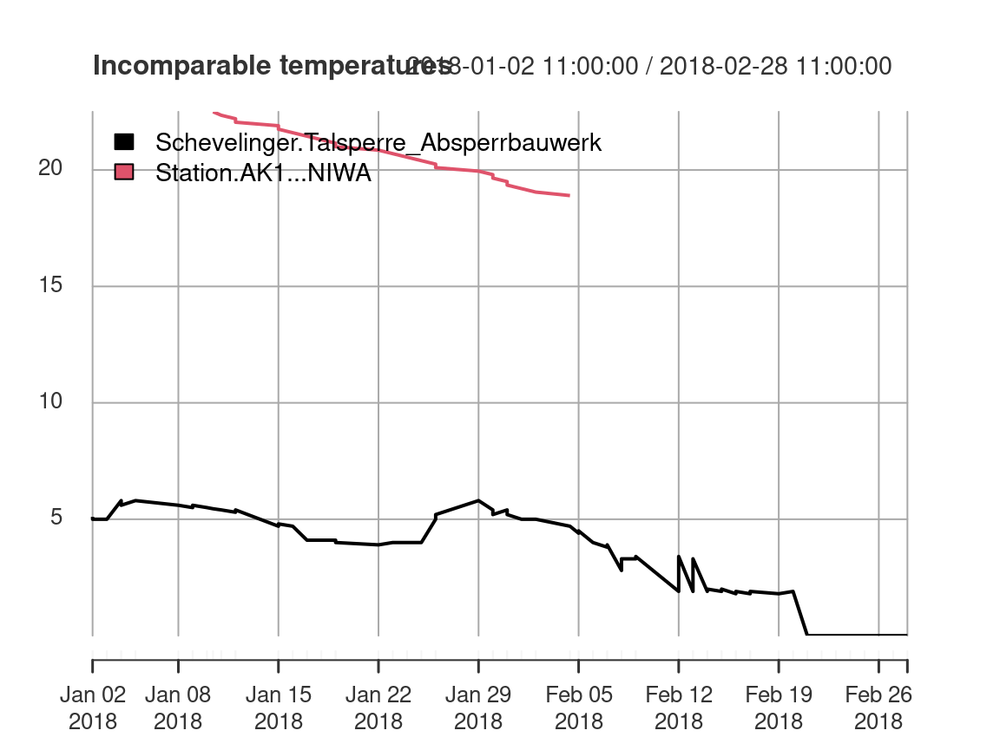

Accessing environmental time series data in R from Sensor Observation Services with ease
Daniel Nüst¹, Eike H. Jürrens², Benedikt Gräler², and Simon Jirka²
¹: University of Münster, Institute for Geoinformatics, Opening Reproducible Research (o2r), Münster, Germany (daniel.nuest@uni-muenster.de); ²: Institute for Geoinformatics, University of Münster, Germany. 52°North GmbH, Münster, Germany.daniel.nuest@uni-muenster.de, e.h.juerrens@52north.org, b.graeler@52north.org, and s.jirka@52north.org Source:
vignettes/sos4R-vignette-10-egu-2020.Rmd
sos4R-vignette-10-egu-2020.RmdAbstract
Time series data of in-situ measurements are the key to many environmental studies. The first challenge in any analysis typically arises when the data needs to be imported into the analysis framework. Standardization is one way to lighten this burden. Unfortunately, relevant interoperability standards might be challenging for non-IT experts as long as they are not dealt with behind the scenes of a client application. One standard to provide access to environmental time series data is the Sensor Observation Service (SOS) specification published by the Open Geospatial Consortium (OGC). SOS instances are currently used in a broad range of applications such as hydrology, air quality monitoring, and ocean sciences. Data sets provided via an SOS interface can be found around the globe from Europe to New Zealand. The R package sos4R (Nüst et al., 2011) is an extension package for the R environment for statistical computing and visualization (https://www.r-project.org/), which has been demonstrated as a powerful tool for conducting and communicating geospatial research (cf. Pebesma et al., 2012; ). sos4R comprises a client that can connect to an SOS server. The user can use it to query data from SOS instances using simple R function calls. A convenience layer enables R users to integrate observation data from data access servers compliant with the SOS standard without any knowledge about the underlying technical standards. To further improve the usability for non-SOS experts, a recent sos4R update includes a set of wrapper functions, which remove complexity and technical language specific to OGC specifications. This update also features specific consideration of the OGC SOS 2.0 Hydrology Profile and thereby opens up a new scientific domain. In our presentation, we illustrate use cases and examples building upon sos4R easing the access of time series data in an R and Shiny (https://shiny.rstudio.com/) context. We demonstrate how the abstraction provided in the client library makes sensor observation data accessible and further show how sos4R allows the seamless integration of distributed observations data, i.e., across organisational boundaries, into transparent and reproducible data analysis workflows.Preface
With EGU 2020 cancelled, this blog post elaborates on the abstract submitted by the 52°North software project sos4R development team. See the program entry for the abstract EGU2020-19453 in the official programme. Please refer to this work by citing the DOI https://doi.org/10.5194/egusphere-egu2020-19453.
Introduction
Time series data of in-situ measurements are the key to many environmental studies. The first challenge in any analysis typically arises when the data needs to be imported into the analysis framework. Standardization is one way to lighten this burden. Unfortunately, relevant interoperability standards might be challenging for non-IT experts as long as they are not dealt with behind the scenes of a client application. One standard to provide access to environmental time series data is the Sensor Observation Service (SOS) specification published by the Open Geospatial Consortium (OGC). SOS instances are currently used in a broad range of applications such as hydrology, air quality monitoring, and ocean sciences. Data sets provided via an SOS interface can be found around the globe from Europe to New Zealand.
The R package sos4R (Nüst et al., 2011) is an extension package for the R environment for statistical computing and visualization (https://www.r-project.org/), which has been demonstrated as a powerful tool for conducting and communicating geospatial research (cf. Pebesma et al., 2012).
Access sensor data with sos4R
sos4R comprises a client that can connect to an SOS server. The user can use it to query data from SOS instances using simple R function calls. The following example demonstrates some core operations: connect to an SOS, request data availability information and sensor metadata, and retrieve the actual data:
library("sos4R") fluggs = SOS( url = "https://fluggs.wupperverband.de/sos2/service", binding = "KVP", version = "2.0.0")
sensor2 = describeSensor( sos = fluggs, procedure = sosProcedures(fluggs)[2], outputFormat = "http://www.opengis.net/sensorML/1.0.1") sensor2 ## Object of class SensorML (see @xml for full document). ## ID: NA ## name: NA ## description: NA ## coords: ## boundedBy: 2569725.188, 5655230, 2610202.779, 5683593 ## validTime:
fluggs_data_availability = getDataAvailability(fluggs) fluggs_data_availability[1:2] ## [[1]] ## Object of class DataAvailabilityMember: ## Procedure : Einzelwerte ## Observed Property : Wasserstand ## Features Of Interest : Luhnshammer ## Phenomenon Time : GmlTimePeriod: [ GmlTimePosition [ time: 2019-12-26 10:00:00 ] ## --> GmlTimePosition [ time: 2020-04-22 11:00:00 ] ] ## ## [[2]] ## Object of class DataAvailabilityMember: ## Procedure : Einzelwerte ## Observed Property : Wasserstand ## Features Of Interest : Krebsoege ## Phenomenon Time : GmlTimePeriod: [ GmlTimePosition [ time: 2010-04-21 23:00:00 ] ## --> GmlTimePosition [ time: 2020-04-22 10:50:00 ] ]
fluggs_offerings = sosOfferings(fluggs) fluggs_obs_jan_2019 = getObservation(fluggs, offering = fluggs_offerings[[1]], eventTime = sosCreateTime(fluggs, "2019-01-01::2019-01-31"), responseFormat = "http://www.opengis.net/om/2.0") result = sosResult(fluggs_obs_jan_2019) library("skimr") skimr::skim(result)
| Name | result |
| Number of rows | 139 |
| Number of columns | 1 |
| _______________________ | |
| Column type frequency: | |
| numeric | 1 |
| ________________________ | |
| Group variables | None |
Variable type: numeric
| skim_variable | n_missing | complete_rate | mean | sd | p0 | p25 | p50 | p75 | p100 | hist |
|---|---|---|---|---|---|---|---|---|---|---|
| °C | 0 | 1 | 4.68 | 1.08 | 0 | 4.15 | 4.9 | 5.3 | 6.13 | ▁▁▁▇▇ |
However, these functions use terms and operations specific to the OGC services and the SOS standard. They also require some knowledge about working combinations for requests. Therefore, a new sos4R release provides a convenience layer for R users to integrate observation data from data access servers compliant with the SOS standard without any knowledge about the underlying technical standards. This update also features specific consideration of the OGC SOS 2.0 Hydrology Profile and thereby opens up a new scientific domain.
Especially for non-SOS experts, the wrapper functions remove complexity and technical language specific to OGC specifications, e.g., “FOI”, or “procedure”. They use more generic terms. These are easily accessible for all users, especially for those without a strong knowledge of the OGC Sensor Web Enablement standards (see “OGC SWE and SOS” vignette for details). In general, these functions always return an object of class data.frame, even if the result is only a list. In this case the data.frame has one column.
The following code chunks demonstrate a request for the same data as above, but use the new wrapper functions.
fluggs_sites = sites(sos = fluggs, includePhenomena = TRUE) library("kableExtra") kable(head(fluggs_sites))
| siteID | Abfluss | Elektrische_Leitfaehigkeit | Luftfeuchte | Lufttemperatur | Niederschlagshoehe | pH.Wert | Sauerstoffgehalt | Speicherfuellstand | Speicherinhalt | Truebung | Wasserstand | Wassertemperatur | lon | lat |
|---|---|---|---|---|---|---|---|---|---|---|---|---|---|---|
| Barmen_Wupperverband_Hauptverwaltung | FALSE | FALSE | TRUE | TRUE | TRUE | FALSE | FALSE | FALSE | FALSE | FALSE | FALSE | FALSE | 2584104 | 5681938 |
| Bever-Talsperre | FALSE | FALSE | TRUE | TRUE | TRUE | FALSE | FALSE | FALSE | FALSE | FALSE | FALSE | FALSE | 2595610 | 5668481 |
| Bever-Talsperre_Absperrbauwerk | FALSE | FALSE | FALSE | FALSE | FALSE | FALSE | FALSE | FALSE | FALSE | FALSE | FALSE | TRUE | 2595712 | 5668454 |
| Bever-Talsperre_Windenhaus | FALSE | FALSE | FALSE | FALSE | FALSE | FALSE | FALSE | TRUE | TRUE | FALSE | FALSE | FALSE | 2596169 | 5668269 |
| Beyenburg | FALSE | FALSE | FALSE | FALSE | TRUE | FALSE | FALSE | FALSE | FALSE | FALSE | FALSE | FALSE | 2590760 | 5680180 |
| Brucher-Talsperre | FALSE | FALSE | FALSE | FALSE | FALSE | FALSE | FALSE | TRUE | TRUE | FALSE | FALSE | FALSE | 2609207 | 5661809 |
phenomena = phenomena( sos = fluggs, includeTemporalBBox = TRUE, includeSiteId = TRUE) watertemp_phenomena = subset(phenomena, phenomenon == "Wassertemperatur") # function takes R date/time objects as input timeBegin = as.POSIXct("2018-01-01") timeEnd = as.POSIXct("2018-03-01") observationData = getData( sos = fluggs, sites = subset(fluggs_sites, Wassertemperatur == TRUE), phenomena = watertemp_phenomena, begin = timeBegin, end = timeEnd) ## Warning in .validateListOrDfColOfStrings(sites, "sites"): Using the first column ## of 'sites' as filter. ## Warning in .validateListOrDfColOfStrings(phenomena, "phenomena"): Using the ## first column of 'phenomena' as filter. ## Formal class 'WmlMeasurementTVP' [package "sos4R"] with 2 slots ## ..@ time : POSIXct[1:1], format: "2018-01-02 11:00:00" ## ..@ value: num 5 ## NULL ## Formal class 'WmlMeasurementTVP' [package "sos4R"] with 2 slots ## ..@ time : POSIXct[1:1], format: "2018-01-03 11:00:00" ## ..@ value: num 5 ## NULL ## Formal class 'WmlMeasurementTVP' [package "sos4R"] with 2 slots ## ..@ time : POSIXct[1:1], format: "2018-01-04 11:00:00" ## ..@ value: num 5 ## NULL ## Formal class 'WmlMeasurementTVP' [package "sos4R"] with 2 slots ## ..@ time : POSIXct[1:1], format: "2018-01-05 11:00:00" ## ..@ value: num 5.8 ## NULL ## Formal class 'WmlMeasurementTVP' [package "sos4R"] with 2 slots ## ..@ time : POSIXct[1:1], format: "2018-01-08 11:00:00" ## ..@ value: num 5 ## NULL ## Formal class 'WmlMeasurementTVP' [package "sos4R"] with 2 slots ## ..@ time : POSIXct[1:1], format: "2018-01-09 11:00:00" ## ..@ value: num 5 ## NULL ## Formal class 'WmlMeasurementTVP' [package "sos4R"] with 2 slots ## ..@ time : POSIXct[1:1], format: "2018-01-10 11:00:00" ## ..@ value: num 5 ## NULL ## Formal class 'WmlMeasurementTVP' [package "sos4R"] with 2 slots ## ..@ time : POSIXct[1:1], format: "2018-01-11 11:00:00" ## ..@ value: num 4.9 ## NULL ## Formal class 'WmlMeasurementTVP' [package "sos4R"] with 2 slots ## ..@ time : POSIXct[1:1], format: "2018-01-12 11:00:00" ## ..@ value: num 4.9 ## NULL ## Formal class 'WmlMeasurementTVP' [package "sos4R"] with 2 slots ## ..@ time : POSIXct[1:1], format: "2018-01-15 11:00:00" ## ..@ value: num 4.7 ## NULL ## Formal class 'WmlMeasurementTVP' [package "sos4R"] with 2 slots ## ..@ time : POSIXct[1:1], format: "2018-01-16 11:00:00" ## ..@ value: num 4.7 ## NULL ## Formal class 'WmlMeasurementTVP' [package "sos4R"] with 2 slots ## ..@ time : POSIXct[1:1], format: "2018-01-17 11:00:00" ## ..@ value: num 4.7 ## NULL ## Formal class 'WmlMeasurementTVP' [package "sos4R"] with 2 slots ## ..@ time : POSIXct[1:1], format: "2018-01-18 11:00:00" ## ..@ value: num 4.7 ## NULL ## Formal class 'WmlMeasurementTVP' [package "sos4R"] with 2 slots ## ..@ time : POSIXct[1:1], format: "2018-01-19 11:00:00" ## ..@ value: num 4.4 ## NULL ## Formal class 'WmlMeasurementTVP' [package "sos4R"] with 2 slots ## ..@ time : POSIXct[1:1], format: "2018-01-22 11:00:00" ## ..@ value: num 4.1 ## NULL ## Formal class 'WmlMeasurementTVP' [package "sos4R"] with 2 slots ## ..@ time : POSIXct[1:1], format: "2018-01-23 11:00:00" ## ..@ value: num 4.1 ## NULL ## Formal class 'WmlMeasurementTVP' [package "sos4R"] with 2 slots ## ..@ time : POSIXct[1:1], format: "2018-01-24 11:00:00" ## ..@ value: num 4.1 ## NULL ## Formal class 'WmlMeasurementTVP' [package "sos4R"] with 2 slots ## ..@ time : POSIXct[1:1], format: "2018-01-25 11:00:00" ## ..@ value: num 4.1 ## NULL ## Formal class 'WmlMeasurementTVP' [package "sos4R"] with 2 slots ## ..@ time : POSIXct[1:1], format: "2018-01-26 11:00:00" ## ..@ value: num 4.3 ## NULL ## Formal class 'WmlMeasurementTVP' [package "sos4R"] with 2 slots ## ..@ time : POSIXct[1:1], format: "2018-01-28 11:00:00" ## ..@ value: num 4.5 ## NULL ## Formal class 'WmlMeasurementTVP' [package "sos4R"] with 2 slots ## ..@ time : POSIXct[1:1], format: "2018-01-29 11:00:00" ## ..@ value: num 4.5 ## NULL ## Formal class 'WmlMeasurementTVP' [package "sos4R"] with 2 slots ## ..@ time : POSIXct[1:1], format: "2018-01-30 11:00:00" ## ..@ value: num 4.5 ## NULL ## Formal class 'WmlMeasurementTVP' [package "sos4R"] with 2 slots ## ..@ time : POSIXct[1:1], format: "2018-01-31 11:00:00" ## ..@ value: num 4.5 ## NULL ## Formal class 'WmlMeasurementTVP' [package "sos4R"] with 2 slots ## ..@ time : POSIXct[1:1], format: "2018-02-01 11:00:00" ## ..@ value: num 4.3 ## NULL ## Formal class 'WmlMeasurementTVP' [package "sos4R"] with 2 slots ## ..@ time : POSIXct[1:1], format: "2018-02-02 11:00:00" ## ..@ value: num 4.3 ## NULL ## Formal class 'WmlMeasurementTVP' [package "sos4R"] with 2 slots ## ..@ time : POSIXct[1:1], format: "2018-02-05 11:00:00" ## ..@ value: num 4.1 ## NULL ## Formal class 'WmlMeasurementTVP' [package "sos4R"] with 2 slots ## ..@ time : POSIXct[1:1], format: "2018-02-06 11:00:00" ## ..@ value: num 3.9 ## NULL ## Formal class 'WmlMeasurementTVP' [package "sos4R"] with 2 slots ## ..@ time : POSIXct[1:1], format: "2018-02-07 11:00:00" ## ..@ value: num 3.9 ## NULL ## Formal class 'WmlMeasurementTVP' [package "sos4R"] with 2 slots ## ..@ time : POSIXct[1:1], format: "2018-02-08 11:00:00" ## ..@ value: num 3.8 ## NULL ## Formal class 'WmlMeasurementTVP' [package "sos4R"] with 2 slots ## ..@ time : POSIXct[1:1], format: "2018-02-09 11:00:00" ## ..@ value: num 3.4 ## NULL ## Formal class 'WmlMeasurementTVP' [package "sos4R"] with 2 slots ## ..@ time : POSIXct[1:1], format: "2018-02-12 11:00:00" ## ..@ value: num 3.8 ## NULL ## Formal class 'WmlMeasurementTVP' [package "sos4R"] with 2 slots ## ..@ time : POSIXct[1:1], format: "2018-02-13 11:00:00" ## ..@ value: num 3.5 ## NULL ## Formal class 'WmlMeasurementTVP' [package "sos4R"] with 2 slots ## ..@ time : POSIXct[1:1], format: "2018-02-14 11:00:00" ## ..@ value: num 3 ## NULL ## Formal class 'WmlMeasurementTVP' [package "sos4R"] with 2 slots ## ..@ time : POSIXct[1:1], format: "2018-02-15 11:00:00" ## ..@ value: num 2.9 ## NULL ## Formal class 'WmlMeasurementTVP' [package "sos4R"] with 2 slots ## ..@ time : POSIXct[1:1], format: "2018-02-16 11:00:00" ## ..@ value: num 2.9 ## NULL ## Formal class 'WmlMeasurementTVP' [package "sos4R"] with 2 slots ## ..@ time : POSIXct[1:1], format: "2018-02-18 11:00:00" ## ..@ value: num 2.8 ## NULL ## Formal class 'WmlMeasurementTVP' [package "sos4R"] with 2 slots ## ..@ time : POSIXct[1:1], format: "2018-02-19 11:00:00" ## ..@ value: num 2.8 ## NULL ## Formal class 'WmlMeasurementTVP' [package "sos4R"] with 2 slots ## ..@ time : POSIXct[1:1], format: "2018-02-20 11:00:00" ## ..@ value: num 2.8 ## NULL ## Formal class 'WmlMeasurementTVP' [package "sos4R"] with 2 slots ## ..@ time : POSIXct[1:1], format: "2018-02-21 11:00:00" ## ..@ value: num 0 ## NULL ## Formal class 'WmlMeasurementTVP' [package "sos4R"] with 2 slots ## ..@ time : POSIXct[1:1], format: "2018-02-22 11:00:00" ## ..@ value: num 0 ## NULL ## Formal class 'WmlMeasurementTVP' [package "sos4R"] with 2 slots ## ..@ time : POSIXct[1:1], format: "2018-02-23 11:00:00" ## ..@ value: num 0 ## NULL ## Formal class 'WmlMeasurementTVP' [package "sos4R"] with 2 slots ## ..@ time : POSIXct[1:1], format: "2018-02-24 11:00:00" ## ..@ value: num 0 ## NULL ## Formal class 'WmlMeasurementTVP' [package "sos4R"] with 2 slots ## ..@ time : POSIXct[1:1], format: "2018-02-25 11:00:00" ## ..@ value: num 0 ## NULL ## Formal class 'WmlMeasurementTVP' [package "sos4R"] with 2 slots ## ..@ time : POSIXct[1:1], format: "2018-02-26 11:00:00" ## ..@ value: num 0 ## NULL ## Formal class 'WmlMeasurementTVP' [package "sos4R"] with 2 slots ## ..@ time : POSIXct[1:1], format: "2018-02-27 11:00:00" ## ..@ value: num 0 ## NULL ## Formal class 'WmlMeasurementTVP' [package "sos4R"] with 2 slots ## ..@ time : POSIXct[1:1], format: "2018-02-28 11:00:00" ## ..@ value: num 0 ## NULL ## Formal class 'WmlMeasurementTVP' [package "sos4R"] with 2 slots ## ..@ time : POSIXct[1:1], format: "2018-01-02 11:00:00" ## ..@ value: num 5 ## NULL ## Formal class 'WmlMeasurementTVP' [package "sos4R"] with 2 slots ## ..@ time : POSIXct[1:1], format: "2018-01-03 11:00:00" ## ..@ value: num 5 ## NULL ## Formal class 'WmlMeasurementTVP' [package "sos4R"] with 2 slots ## ..@ time : POSIXct[1:1], format: "2018-01-04 11:00:00" ## ..@ value: num 5 ## NULL ## Formal class 'WmlMeasurementTVP' [package "sos4R"] with 2 slots ## ..@ time : POSIXct[1:1], format: "2018-01-05 11:00:00" ## ..@ value: num 5.8 ## NULL ## Formal class 'WmlMeasurementTVP' [package "sos4R"] with 2 slots ## ..@ time : POSIXct[1:1], format: "2018-01-08 11:00:00" ## ..@ value: num 5 ## NULL ## Formal class 'WmlMeasurementTVP' [package "sos4R"] with 2 slots ## ..@ time : POSIXct[1:1], format: "2018-01-09 11:00:00" ## ..@ value: num 5 ## NULL ## Formal class 'WmlMeasurementTVP' [package "sos4R"] with 2 slots ## ..@ time : POSIXct[1:1], format: "2018-01-10 11:00:00" ## ..@ value: num 5 ## NULL ## Formal class 'WmlMeasurementTVP' [package "sos4R"] with 2 slots ## ..@ time : POSIXct[1:1], format: "2018-01-11 11:00:00" ## ..@ value: num 5.1 ## NULL ## Formal class 'WmlMeasurementTVP' [package "sos4R"] with 2 slots ## ..@ time : POSIXct[1:1], format: "2018-01-12 11:00:00" ## ..@ value: num 5.1 ## NULL ## Formal class 'WmlMeasurementTVP' [package "sos4R"] with 2 slots ## ..@ time : POSIXct[1:1], format: "2018-01-15 11:00:00" ## ..@ value: num 4.7 ## NULL ## Formal class 'WmlMeasurementTVP' [package "sos4R"] with 2 slots ## ..@ time : POSIXct[1:1], format: "2018-01-16 11:00:00" ## ..@ value: num 4.7 ## NULL ## Formal class 'WmlMeasurementTVP' [package "sos4R"] with 2 slots ## ..@ time : POSIXct[1:1], format: "2018-01-17 11:00:00" ## ..@ value: num 4.7 ## NULL ## Formal class 'WmlMeasurementTVP' [package "sos4R"] with 2 slots ## ..@ time : POSIXct[1:1], format: "2018-01-18 11:00:00" ## ..@ value: num 4.7 ## NULL ## Formal class 'WmlMeasurementTVP' [package "sos4R"] with 2 slots ## ..@ time : POSIXct[1:1], format: "2018-01-19 11:00:00" ## ..@ value: num 4.4 ## NULL ## Formal class 'WmlMeasurementTVP' [package "sos4R"] with 2 slots ## ..@ time : POSIXct[1:1], format: "2018-01-22 11:00:00" ## ..@ value: num 4.1 ## NULL ## Formal class 'WmlMeasurementTVP' [package "sos4R"] with 2 slots ## ..@ time : POSIXct[1:1], format: "2018-01-23 11:00:00" ## ..@ value: num 4.1 ## NULL ## Formal class 'WmlMeasurementTVP' [package "sos4R"] with 2 slots ## ..@ time : POSIXct[1:1], format: "2018-01-24 11:00:00" ## ..@ value: num 4.1 ## NULL ## Formal class 'WmlMeasurementTVP' [package "sos4R"] with 2 slots ## ..@ time : POSIXct[1:1], format: "2018-01-25 11:00:00" ## ..@ value: num 4.1 ## NULL ## Formal class 'WmlMeasurementTVP' [package "sos4R"] with 2 slots ## ..@ time : POSIXct[1:1], format: "2018-01-26 11:00:00" ## ..@ value: num 4.2 ## NULL ## Formal class 'WmlMeasurementTVP' [package "sos4R"] with 2 slots ## ..@ time : POSIXct[1:1], format: "2018-01-28 11:00:00" ## ..@ value: num 4.6 ## NULL ## Formal class 'WmlMeasurementTVP' [package "sos4R"] with 2 slots ## ..@ time : POSIXct[1:1], format: "2018-01-29 11:00:00" ## ..@ value: num 4.6 ## NULL ## Formal class 'WmlMeasurementTVP' [package "sos4R"] with 2 slots ## ..@ time : POSIXct[1:1], format: "2018-01-30 11:00:00" ## ..@ value: num 4.6 ## NULL ## Formal class 'WmlMeasurementTVP' [package "sos4R"] with 2 slots ## ..@ time : POSIXct[1:1], format: "2018-01-31 11:00:00" ## ..@ value: num 4.6 ## NULL ## Formal class 'WmlMeasurementTVP' [package "sos4R"] with 2 slots ## ..@ time : POSIXct[1:1], format: "2018-02-01 11:00:00" ## ..@ value: num 4.2 ## NULL ## Formal class 'WmlMeasurementTVP' [package "sos4R"] with 2 slots ## ..@ time : POSIXct[1:1], format: "2018-02-02 11:00:00" ## ..@ value: num 4.2 ## NULL ## Formal class 'WmlMeasurementTVP' [package "sos4R"] with 2 slots ## ..@ time : POSIXct[1:1], format: "2018-02-05 11:00:00" ## ..@ value: num 4 ## NULL ## Formal class 'WmlMeasurementTVP' [package "sos4R"] with 2 slots ## ..@ time : POSIXct[1:1], format: "2018-02-06 11:00:00" ## ..@ value: num 3.9 ## NULL ## Formal class 'WmlMeasurementTVP' [package "sos4R"] with 2 slots ## ..@ time : POSIXct[1:1], format: "2018-02-07 11:00:00" ## ..@ value: num 3.8 ## NULL ## Formal class 'WmlMeasurementTVP' [package "sos4R"] with 2 slots ## ..@ time : POSIXct[1:1], format: "2018-02-08 11:00:00" ## ..@ value: num 3.7 ## NULL ## Formal class 'WmlMeasurementTVP' [package "sos4R"] with 2 slots ## ..@ time : POSIXct[1:1], format: "2018-02-09 11:00:00" ## ..@ value: num 3.3 ## NULL ## Formal class 'WmlMeasurementTVP' [package "sos4R"] with 2 slots ## ..@ time : POSIXct[1:1], format: "2018-02-12 11:00:00" ## ..@ value: num 3.6 ## NULL ## Formal class 'WmlMeasurementTVP' [package "sos4R"] with 2 slots ## ..@ time : POSIXct[1:1], format: "2018-02-13 11:00:00" ## ..@ value: num 3.4 ## NULL ## Formal class 'WmlMeasurementTVP' [package "sos4R"] with 2 slots ## ..@ time : POSIXct[1:1], format: "2018-02-14 11:00:00" ## ..@ value: num 2.9 ## NULL ## Formal class 'WmlMeasurementTVP' [package "sos4R"] with 2 slots ## ..@ time : POSIXct[1:1], format: "2018-02-15 11:00:00" ## ..@ value: num 2.9 ## NULL ## Formal class 'WmlMeasurementTVP' [package "sos4R"] with 2 slots ## ..@ time : POSIXct[1:1], format: "2018-02-16 11:00:00" ## ..@ value: num 2.9 ## NULL ## Formal class 'WmlMeasurementTVP' [package "sos4R"] with 2 slots ## ..@ time : POSIXct[1:1], format: "2018-02-18 11:00:00" ## ..@ value: num 2.8 ## NULL ## Formal class 'WmlMeasurementTVP' [package "sos4R"] with 2 slots ## ..@ time : POSIXct[1:1], format: "2018-02-19 11:00:00" ## ..@ value: num 2.8 ## NULL ## Formal class 'WmlMeasurementTVP' [package "sos4R"] with 2 slots ## ..@ time : POSIXct[1:1], format: "2018-02-20 11:00:00" ## ..@ value: num 2.8 ## NULL ## Formal class 'WmlMeasurementTVP' [package "sos4R"] with 2 slots ## ..@ time : POSIXct[1:1], format: "2018-02-21 11:00:00" ## ..@ value: num 0 ## NULL ## Formal class 'WmlMeasurementTVP' [package "sos4R"] with 2 slots ## ..@ time : POSIXct[1:1], format: "2018-02-22 11:00:00" ## ..@ value: num 0 ## NULL ## Formal class 'WmlMeasurementTVP' [package "sos4R"] with 2 slots ## ..@ time : POSIXct[1:1], format: "2018-02-23 11:00:00" ## ..@ value: num 0 ## NULL ## Formal class 'WmlMeasurementTVP' [package "sos4R"] with 2 slots ## ..@ time : POSIXct[1:1], format: "2018-02-24 11:00:00" ## ..@ value: num 0 ## NULL ## Formal class 'WmlMeasurementTVP' [package "sos4R"] with 2 slots ## ..@ time : POSIXct[1:1], format: "2018-02-25 11:00:00" ## ..@ value: num 0 ## NULL ## Formal class 'WmlMeasurementTVP' [package "sos4R"] with 2 slots ## ..@ time : POSIXct[1:1], format: "2018-02-26 11:00:00" ## ..@ value: num 0 ## NULL ## Formal class 'WmlMeasurementTVP' [package "sos4R"] with 2 slots ## ..@ time : POSIXct[1:1], format: "2018-02-27 11:00:00" ## ..@ value: num 0 ## NULL ## Formal class 'WmlMeasurementTVP' [package "sos4R"] with 2 slots ## ..@ time : POSIXct[1:1], format: "2018-02-28 11:00:00" ## ..@ value: num 0 ## NULL ## Formal class 'WmlMeasurementTVP' [package "sos4R"] with 2 slots ## ..@ time : POSIXct[1:1], format: "2018-01-02 11:00:00" ## ..@ value: num 5.7 ## NULL ## Formal class 'WmlMeasurementTVP' [package "sos4R"] with 2 slots ## ..@ time : POSIXct[1:1], format: "2018-01-03 11:00:00" ## ..@ value: num 5.7 ## NULL ## Formal class 'WmlMeasurementTVP' [package "sos4R"] with 2 slots ## ..@ time : POSIXct[1:1], format: "2018-01-04 11:00:00" ## ..@ value: num 5.6 ## NULL ## Formal class 'WmlMeasurementTVP' [package "sos4R"] with 2 slots ## ..@ time : POSIXct[1:1], format: "2018-01-05 11:00:00" ## ..@ value: num 5.6 ## NULL ## Formal class 'WmlMeasurementTVP' [package "sos4R"] with 2 slots ## ..@ time : POSIXct[1:1], format: "2018-01-08 11:00:00" ## ..@ value: num 5.9 ## NULL ## Formal class 'WmlMeasurementTVP' [package "sos4R"] with 2 slots ## ..@ time : POSIXct[1:1], format: "2018-01-09 11:00:00" ## ..@ value: num 5.9 ## NULL ## Formal class 'WmlMeasurementTVP' [package "sos4R"] with 2 slots ## ..@ time : POSIXct[1:1], format: "2018-01-10 11:00:00" ## ..@ value: num 6 ## NULL ## Formal class 'WmlMeasurementTVP' [package "sos4R"] with 2 slots ## ..@ time : POSIXct[1:1], format: "2018-01-11 11:00:00" ## ..@ value: num 6 ## NULL ## Formal class 'WmlMeasurementTVP' [package "sos4R"] with 2 slots ## ..@ time : POSIXct[1:1], format: "2018-01-12 11:00:00" ## ..@ value: num 6 ## NULL ## Formal class 'WmlMeasurementTVP' [package "sos4R"] with 2 slots ## ..@ time : POSIXct[1:1], format: "2018-01-15 11:00:00" ## ..@ value: num 5.6 ## NULL ## Formal class 'WmlMeasurementTVP' [package "sos4R"] with 2 slots ## ..@ time : POSIXct[1:1], format: "2018-01-16 11:00:00" ## ..@ value: num 5.6 ## NULL ## Formal class 'WmlMeasurementTVP' [package "sos4R"] with 2 slots ## ..@ time : POSIXct[1:1], format: "2018-01-17 11:00:00" ## ..@ value: num 5.5 ## NULL ## Formal class 'WmlMeasurementTVP' [package "sos4R"] with 2 slots ## ..@ time : POSIXct[1:1], format: "2018-01-18 11:00:00" ## ..@ value: num 5.5 ## NULL ## Formal class 'WmlMeasurementTVP' [package "sos4R"] with 2 slots ## ..@ time : POSIXct[1:1], format: "2018-01-19 11:00:00" ## ..@ value: num 5.3 ## NULL ## Formal class 'WmlMeasurementTVP' [package "sos4R"] with 2 slots ## ..@ time : POSIXct[1:1], format: "2018-01-22 11:00:00" ## ..@ value: num 4.8 ## NULL ## Formal class 'WmlMeasurementTVP' [package "sos4R"] with 2 slots ## ..@ time : POSIXct[1:1], format: "2018-01-23 11:00:00" ## ..@ value: num 4.9 ## NULL ## Formal class 'WmlMeasurementTVP' [package "sos4R"] with 2 slots ## ..@ time : POSIXct[1:1], format: "2018-01-24 11:00:00" ## ..@ value: num 5 ## NULL ## Formal class 'WmlMeasurementTVP' [package "sos4R"] with 2 slots ## ..@ time : POSIXct[1:1], format: "2018-01-25 11:00:00" ## ..@ value: num 5.2 ## NULL ## Formal class 'WmlMeasurementTVP' [package "sos4R"] with 2 slots ## ..@ time : POSIXct[1:1], format: "2018-01-26 11:00:00" ## ..@ value: num 5.2 ## NULL ## Formal class 'WmlMeasurementTVP' [package "sos4R"] with 2 slots ## ..@ time : POSIXct[1:1], format: "2018-01-29 11:00:00" ## ..@ value: num 5.7 ## NULL ## Formal class 'WmlMeasurementTVP' [package "sos4R"] with 2 slots ## ..@ time : POSIXct[1:1], format: "2018-01-30 11:00:00" ## ..@ value: num 5.7 ## NULL ## Formal class 'WmlMeasurementTVP' [package "sos4R"] with 2 slots ## ..@ time : POSIXct[1:1], format: "2018-01-31 11:00:00" ## ..@ value: num 5.8 ## NULL ## Formal class 'WmlMeasurementTVP' [package "sos4R"] with 2 slots ## ..@ time : POSIXct[1:1], format: "2018-02-01 11:00:00" ## ..@ value: num 5.6 ## NULL ## Formal class 'WmlMeasurementTVP' [package "sos4R"] with 2 slots ## ..@ time : POSIXct[1:1], format: "2018-02-02 11:00:00" ## ..@ value: num 5.5 ## NULL ## Formal class 'WmlMeasurementTVP' [package "sos4R"] with 2 slots ## ..@ time : POSIXct[1:1], format: "2018-02-05 11:00:00" ## ..@ value: num 5.1 ## NULL ## Formal class 'WmlMeasurementTVP' [package "sos4R"] with 2 slots ## ..@ time : POSIXct[1:1], format: "2018-02-06 11:00:00" ## ..@ value: num 5 ## NULL ## Formal class 'WmlMeasurementTVP' [package "sos4R"] with 2 slots ## ..@ time : POSIXct[1:1], format: "2018-02-07 11:00:00" ## ..@ value: num 4.9 ## NULL ## Formal class 'WmlMeasurementTVP' [package "sos4R"] with 2 slots ## ..@ time : POSIXct[1:1], format: "2018-02-08 11:00:00" ## ..@ value: num 4.6 ## NULL ## Formal class 'WmlMeasurementTVP' [package "sos4R"] with 2 slots ## ..@ time : POSIXct[1:1], format: "2018-02-09 11:00:00" ## ..@ value: num 4.4 ## NULL ## Formal class 'WmlMeasurementTVP' [package "sos4R"] with 2 slots ## ..@ time : POSIXct[1:1], format: "2018-02-12 11:00:00" ## ..@ value: num 4.1 ## NULL ## Formal class 'WmlMeasurementTVP' [package "sos4R"] with 2 slots ## ..@ time : POSIXct[1:1], format: "2018-02-13 11:00:00" ## ..@ value: num 4.1 ## NULL ## Formal class 'WmlMeasurementTVP' [package "sos4R"] with 2 slots ## ..@ time : POSIXct[1:1], format: "2018-02-15 11:00:00" ## ..@ value: num 3.9 ## NULL ## Formal class 'WmlMeasurementTVP' [package "sos4R"] with 2 slots ## ..@ time : POSIXct[1:1], format: "2018-02-16 11:00:00" ## ..@ value: num 3.8 ## NULL ## Formal class 'WmlMeasurementTVP' [package "sos4R"] with 2 slots ## ..@ time : POSIXct[1:1], format: "2018-02-20 11:00:00" ## ..@ value: num 3.6 ## NULL ## Formal class 'WmlMeasurementTVP' [package "sos4R"] with 2 slots ## ..@ time : POSIXct[1:1], format: "2018-02-21 11:00:00" ## ..@ value: num 3.6 ## NULL ## Formal class 'WmlMeasurementTVP' [package "sos4R"] with 2 slots ## ..@ time : POSIXct[1:1], format: "2018-02-22 11:00:00" ## ..@ value: num 3.5 ## NULL ## Formal class 'WmlMeasurementTVP' [package "sos4R"] with 2 slots ## ..@ time : POSIXct[1:1], format: "2018-02-23 11:00:00" ## ..@ value: num 3.5 ## NULL ## Formal class 'WmlMeasurementTVP' [package "sos4R"] with 2 slots ## ..@ time : POSIXct[1:1], format: "2018-01-02 11:00:00" ## ..@ value: num 5.7 ## NULL ## Formal class 'WmlMeasurementTVP' [package "sos4R"] with 2 slots ## ..@ time : POSIXct[1:1], format: "2018-01-03 11:00:00" ## ..@ value: num 5.7 ## NULL ## Formal class 'WmlMeasurementTVP' [package "sos4R"] with 2 slots ## ..@ time : POSIXct[1:1], format: "2018-01-04 11:00:00" ## ..@ value: num 5.6 ## NULL ## Formal class 'WmlMeasurementTVP' [package "sos4R"] with 2 slots ## ..@ time : POSIXct[1:1], format: "2018-01-05 11:00:00" ## ..@ value: num 5.6 ## NULL ## Formal class 'WmlMeasurementTVP' [package "sos4R"] with 2 slots ## ..@ time : POSIXct[1:1], format: "2018-01-08 11:00:00" ## ..@ value: num 5.9 ## NULL ## Formal class 'WmlMeasurementTVP' [package "sos4R"] with 2 slots ## ..@ time : POSIXct[1:1], format: "2018-01-09 11:00:00" ## ..@ value: num 5.9 ## NULL ## Formal class 'WmlMeasurementTVP' [package "sos4R"] with 2 slots ## ..@ time : POSIXct[1:1], format: "2018-01-10 11:00:00" ## ..@ value: num 6 ## NULL ## Formal class 'WmlMeasurementTVP' [package "sos4R"] with 2 slots ## ..@ time : POSIXct[1:1], format: "2018-01-11 11:00:00" ## ..@ value: num 6 ## NULL ## Formal class 'WmlMeasurementTVP' [package "sos4R"] with 2 slots ## ..@ time : POSIXct[1:1], format: "2018-01-12 11:00:00" ## ..@ value: num 6 ## NULL ## Formal class 'WmlMeasurementTVP' [package "sos4R"] with 2 slots ## ..@ time : POSIXct[1:1], format: "2018-01-15 11:00:00" ## ..@ value: num 5.6 ## NULL ## Formal class 'WmlMeasurementTVP' [package "sos4R"] with 2 slots ## ..@ time : POSIXct[1:1], format: "2018-01-16 11:00:00" ## ..@ value: num 5.6 ## NULL ## Formal class 'WmlMeasurementTVP' [package "sos4R"] with 2 slots ## ..@ time : POSIXct[1:1], format: "2018-01-17 11:00:00" ## ..@ value: num 5.5 ## NULL ## Formal class 'WmlMeasurementTVP' [package "sos4R"] with 2 slots ## ..@ time : POSIXct[1:1], format: "2018-01-18 11:00:00" ## ..@ value: num 5.5 ## NULL ## Formal class 'WmlMeasurementTVP' [package "sos4R"] with 2 slots ## ..@ time : POSIXct[1:1], format: "2018-01-19 11:00:00" ## ..@ value: num 5.3 ## NULL ## Formal class 'WmlMeasurementTVP' [package "sos4R"] with 2 slots ## ..@ time : POSIXct[1:1], format: "2018-01-22 11:00:00" ## ..@ value: num 4.8 ## NULL ## Formal class 'WmlMeasurementTVP' [package "sos4R"] with 2 slots ## ..@ time : POSIXct[1:1], format: "2018-01-23 11:00:00" ## ..@ value: num 4.9 ## NULL ## Formal class 'WmlMeasurementTVP' [package "sos4R"] with 2 slots ## ..@ time : POSIXct[1:1], format: "2018-01-24 11:00:00" ## ..@ value: num 5 ## NULL ## Formal class 'WmlMeasurementTVP' [package "sos4R"] with 2 slots ## ..@ time : POSIXct[1:1], format: "2018-01-25 11:00:00" ## ..@ value: num 5.2 ## NULL ## Formal class 'WmlMeasurementTVP' [package "sos4R"] with 2 slots ## ..@ time : POSIXct[1:1], format: "2018-01-26 11:00:00" ## ..@ value: num 5.2 ## NULL ## Formal class 'WmlMeasurementTVP' [package "sos4R"] with 2 slots ## ..@ time : POSIXct[1:1], format: "2018-01-29 11:00:00" ## ..@ value: num 5.7 ## NULL ## Formal class 'WmlMeasurementTVP' [package "sos4R"] with 2 slots ## ..@ time : POSIXct[1:1], format: "2018-01-30 11:00:00" ## ..@ value: num 5.7 ## NULL ## Formal class 'WmlMeasurementTVP' [package "sos4R"] with 2 slots ## ..@ time : POSIXct[1:1], format: "2018-01-31 11:00:00" ## ..@ value: num 5.8 ## NULL ## Formal class 'WmlMeasurementTVP' [package "sos4R"] with 2 slots ## ..@ time : POSIXct[1:1], format: "2018-02-01 11:00:00" ## ..@ value: num 5.6 ## NULL ## Formal class 'WmlMeasurementTVP' [package "sos4R"] with 2 slots ## ..@ time : POSIXct[1:1], format: "2018-02-02 11:00:00" ## ..@ value: num 5.5 ## NULL ## Formal class 'WmlMeasurementTVP' [package "sos4R"] with 2 slots ## ..@ time : POSIXct[1:1], format: "2018-02-05 11:00:00" ## ..@ value: num 5.1 ## NULL ## Formal class 'WmlMeasurementTVP' [package "sos4R"] with 2 slots ## ..@ time : POSIXct[1:1], format: "2018-02-06 11:00:00" ## ..@ value: num 5 ## NULL ## Formal class 'WmlMeasurementTVP' [package "sos4R"] with 2 slots ## ..@ time : POSIXct[1:1], format: "2018-02-07 11:00:00" ## ..@ value: num 4.9 ## NULL ## Formal class 'WmlMeasurementTVP' [package "sos4R"] with 2 slots ## ..@ time : POSIXct[1:1], format: "2018-02-08 11:00:00" ## ..@ value: num 4.6 ## NULL ## Formal class 'WmlMeasurementTVP' [package "sos4R"] with 2 slots ## ..@ time : POSIXct[1:1], format: "2018-02-09 11:00:00" ## ..@ value: num 4.4 ## NULL ## Formal class 'WmlMeasurementTVP' [package "sos4R"] with 2 slots ## ..@ time : POSIXct[1:1], format: "2018-02-12 11:00:00" ## ..@ value: num 4.1 ## NULL ## Formal class 'WmlMeasurementTVP' [package "sos4R"] with 2 slots ## ..@ time : POSIXct[1:1], format: "2018-02-13 11:00:00" ## ..@ value: num 4.1 ## NULL ## Formal class 'WmlMeasurementTVP' [package "sos4R"] with 2 slots ## ..@ time : POSIXct[1:1], format: "2018-02-15 11:00:00" ## ..@ value: num 3.9 ## NULL ## Formal class 'WmlMeasurementTVP' [package "sos4R"] with 2 slots ## ..@ time : POSIXct[1:1], format: "2018-02-16 11:00:00" ## ..@ value: num 3.8 ## NULL ## Formal class 'WmlMeasurementTVP' [package "sos4R"] with 2 slots ## ..@ time : POSIXct[1:1], format: "2018-02-20 11:00:00" ## ..@ value: num 3.6 ## NULL ## Formal class 'WmlMeasurementTVP' [package "sos4R"] with 2 slots ## ..@ time : POSIXct[1:1], format: "2018-02-21 11:00:00" ## ..@ value: num 3.6 ## NULL ## Formal class 'WmlMeasurementTVP' [package "sos4R"] with 2 slots ## ..@ time : POSIXct[1:1], format: "2018-02-22 11:00:00" ## ..@ value: num 3.5 ## NULL ## Formal class 'WmlMeasurementTVP' [package "sos4R"] with 2 slots ## ..@ time : POSIXct[1:1], format: "2018-02-23 11:00:00" ## ..@ value: num 3.5 ## NULL ## Formal class 'WmlMeasurementTVP' [package "sos4R"] with 2 slots ## ..@ time : POSIXct[1:1], format: "2018-01-01 22:59:00" ## ..@ value: num 6.32 ## NULL ## Formal class 'WmlMeasurementTVP' [package "sos4R"] with 2 slots ## ..@ time : POSIXct[1:1], format: "2018-01-02 22:59:00" ## ..@ value: num 6.26 ## NULL ## Formal class 'WmlMeasurementTVP' [package "sos4R"] with 2 slots ## ..@ time : POSIXct[1:1], format: "2018-01-03 22:59:00" ## ..@ value: num 6.24 ## NULL ## Formal class 'WmlMeasurementTVP' [package "sos4R"] with 2 slots ## ..@ time : POSIXct[1:1], format: "2018-01-04 22:59:00" ## ..@ value: num 6.24 ## NULL ## Formal class 'WmlMeasurementTVP' [package "sos4R"] with 2 slots ## ..@ time : POSIXct[1:1], format: "2018-01-05 22:59:00" ## ..@ value: num 6.25 ## NULL ## Formal class 'WmlMeasurementTVP' [package "sos4R"] with 2 slots ## ..@ time : POSIXct[1:1], format: "2018-01-06 22:59:00" ## ..@ value: num 6.19 ## NULL ## Formal class 'WmlMeasurementTVP' [package "sos4R"] with 2 slots ## ..@ time : POSIXct[1:1], format: "2018-01-07 22:59:00" ## ..@ value: num 6.15 ## NULL ## Formal class 'WmlMeasurementTVP' [package "sos4R"] with 2 slots ## ..@ time : POSIXct[1:1], format: "2018-01-08 22:59:00" ## ..@ value: num 6.1 ## NULL ## Formal class 'WmlMeasurementTVP' [package "sos4R"] with 2 slots ## ..@ time : POSIXct[1:1], format: "2018-01-09 22:59:00" ## ..@ value: num 6.04 ## NULL ## Formal class 'WmlMeasurementTVP' [package "sos4R"] with 2 slots ## ..@ time : POSIXct[1:1], format: "2018-01-10 22:59:00" ## ..@ value: num 6.03 ## NULL ## Formal class 'WmlMeasurementTVP' [package "sos4R"] with 2 slots ## ..@ time : POSIXct[1:1], format: "2018-01-11 22:59:00" ## ..@ value: num 6.11 ## NULL ## Formal class 'WmlMeasurementTVP' [package "sos4R"] with 2 slots ## ..@ time : POSIXct[1:1], format: "2018-01-12 22:59:00" ## ..@ value: num 6.06 ## NULL ## Formal class 'WmlMeasurementTVP' [package "sos4R"] with 2 slots ## ..@ time : POSIXct[1:1], format: "2018-01-13 22:59:00" ## ..@ value: num 6.02 ## NULL ## Formal class 'WmlMeasurementTVP' [package "sos4R"] with 2 slots ## ..@ time : POSIXct[1:1], format: "2018-01-14 22:59:00" ## ..@ value: num 5.95 ## NULL ## Formal class 'WmlMeasurementTVP' [package "sos4R"] with 2 slots ## ..@ time : POSIXct[1:1], format: "2018-01-15 22:59:00" ## ..@ value: num 5.87 ## NULL ## Formal class 'WmlMeasurementTVP' [package "sos4R"] with 2 slots ## ..@ time : POSIXct[1:1], format: "2018-01-16 22:59:00" ## ..@ value: num 5.82 ## NULL ## Formal class 'WmlMeasurementTVP' [package "sos4R"] with 2 slots ## ..@ time : POSIXct[1:1], format: "2018-01-17 22:59:00" ## ..@ value: num 5.76 ## NULL ## Formal class 'WmlMeasurementTVP' [package "sos4R"] with 2 slots ## ..@ time : POSIXct[1:1], format: "2018-01-18 22:59:00" ## ..@ value: num 5.71 ## NULL ## Formal class 'WmlMeasurementTVP' [package "sos4R"] with 2 slots ## ..@ time : POSIXct[1:1], format: "2018-01-19 22:59:00" ## ..@ value: num 5.65 ## NULL ## Formal class 'WmlMeasurementTVP' [package "sos4R"] with 2 slots ## ..@ time : POSIXct[1:1], format: "2018-01-20 22:59:00" ## ..@ value: num 5.62 ## NULL ## Formal class 'WmlMeasurementTVP' [package "sos4R"] with 2 slots ## ..@ time : POSIXct[1:1], format: "2018-01-21 22:59:00" ## ..@ value: num 5.57 ## NULL ## Formal class 'WmlMeasurementTVP' [package "sos4R"] with 2 slots ## ..@ time : POSIXct[1:1], format: "2018-01-22 22:59:00" ## ..@ value: num 5.54 ## NULL ## Formal class 'WmlMeasurementTVP' [package "sos4R"] with 2 slots ## ..@ time : POSIXct[1:1], format: "2018-01-23 22:59:00" ## ..@ value: num 5.55 ## NULL ## Formal class 'WmlMeasurementTVP' [package "sos4R"] with 2 slots ## ..@ time : POSIXct[1:1], format: "2018-01-24 22:59:00" ## ..@ value: num 5.64 ## NULL ## Formal class 'WmlMeasurementTVP' [package "sos4R"] with 2 slots ## ..@ time : POSIXct[1:1], format: "2018-01-25 22:59:00" ## ..@ value: num 5.83 ## NULL ## Formal class 'WmlMeasurementTVP' [package "sos4R"] with 2 slots ## ..@ time : POSIXct[1:1], format: "2018-01-26 22:59:00" ## ..@ value: num 5.94 ## NULL ## Formal class 'WmlMeasurementTVP' [package "sos4R"] with 2 slots ## ..@ time : POSIXct[1:1], format: "2018-01-27 22:59:00" ## ..@ value: num 5.7 ## NULL ## Formal class 'WmlMeasurementTVP' [package "sos4R"] with 2 slots ## ..@ time : POSIXct[1:1], format: "2018-01-28 22:59:00" ## ..@ value: num 5.71 ## NULL ## Formal class 'WmlMeasurementTVP' [package "sos4R"] with 2 slots ## ..@ time : POSIXct[1:1], format: "2018-01-29 22:59:00" ## ..@ value: num 5.62 ## NULL ## Formal class 'WmlMeasurementTVP' [package "sos4R"] with 2 slots ## ..@ time : POSIXct[1:1], format: "2018-01-30 22:59:00" ## ..@ value: num 5.66 ## NULL ## Formal class 'WmlMeasurementTVP' [package "sos4R"] with 2 slots ## ..@ time : POSIXct[1:1], format: "2018-01-31 22:59:00" ## ..@ value: num 5.62 ## NULL ## Formal class 'WmlMeasurementTVP' [package "sos4R"] with 2 slots ## ..@ time : POSIXct[1:1], format: "2018-02-01 22:59:00" ## ..@ value: num 5.56 ## NULL ## Formal class 'WmlMeasurementTVP' [package "sos4R"] with 2 slots ## ..@ time : POSIXct[1:1], format: "2018-02-02 22:59:00" ## ..@ value: num 5.5 ## NULL ## Formal class 'WmlMeasurementTVP' [package "sos4R"] with 2 slots ## ..@ time : POSIXct[1:1], format: "2018-02-03 22:59:00" ## ..@ value: num 5.47 ## NULL ## Formal class 'WmlMeasurementTVP' [package "sos4R"] with 2 slots ## ..@ time : POSIXct[1:1], format: "2018-02-04 22:59:00" ## ..@ value: num 5.41 ## NULL ## Formal class 'WmlMeasurementTVP' [package "sos4R"] with 2 slots ## ..@ time : POSIXct[1:1], format: "2018-02-05 22:59:00" ## ..@ value: num 5.37 ## NULL ## Formal class 'WmlMeasurementTVP' [package "sos4R"] with 2 slots ## ..@ time : POSIXct[1:1], format: "2018-02-06 22:59:00" ## ..@ value: num 5.23 ## NULL ## Formal class 'WmlMeasurementTVP' [package "sos4R"] with 2 slots ## ..@ time : POSIXct[1:1], format: "2018-02-07 22:59:00" ## ..@ value: num 5.16 ## NULL ## Formal class 'WmlMeasurementTVP' [package "sos4R"] with 2 slots ## ..@ time : POSIXct[1:1], format: "2018-02-08 22:59:00" ## ..@ value: num 5.1 ## NULL ## Formal class 'WmlMeasurementTVP' [package "sos4R"] with 2 slots ## ..@ time : POSIXct[1:1], format: "2018-02-09 22:59:00" ## ..@ value: num 5 ## NULL ## Formal class 'WmlMeasurementTVP' [package "sos4R"] with 2 slots ## ..@ time : POSIXct[1:1], format: "2018-02-10 22:59:00" ## ..@ value: num 4.95 ## NULL ## Formal class 'WmlMeasurementTVP' [package "sos4R"] with 2 slots ## ..@ time : POSIXct[1:1], format: "2018-02-11 22:59:00" ## ..@ value: num 4.87 ## NULL ## Formal class 'WmlMeasurementTVP' [package "sos4R"] with 2 slots ## ..@ time : POSIXct[1:1], format: "2018-02-12 22:59:00" ## ..@ value: num 4.82 ## NULL ## Formal class 'WmlMeasurementTVP' [package "sos4R"] with 2 slots ## ..@ time : POSIXct[1:1], format: "2018-02-13 22:59:00" ## ..@ value: num 4.75 ## NULL ## Formal class 'WmlMeasurementTVP' [package "sos4R"] with 2 slots ## ..@ time : POSIXct[1:1], format: "2018-02-14 22:59:00" ## ..@ value: num 4.69 ## NULL ## Formal class 'WmlMeasurementTVP' [package "sos4R"] with 2 slots ## ..@ time : POSIXct[1:1], format: "2018-02-15 22:59:00" ## ..@ value: num 4.6 ## NULL ## Formal class 'WmlMeasurementTVP' [package "sos4R"] with 2 slots ## ..@ time : POSIXct[1:1], format: "2018-02-16 22:59:00" ## ..@ value: num 4.62 ## NULL ## Formal class 'WmlMeasurementTVP' [package "sos4R"] with 2 slots ## ..@ time : POSIXct[1:1], format: "2018-02-17 22:59:00" ## ..@ value: num 4.54 ## NULL ## Formal class 'WmlMeasurementTVP' [package "sos4R"] with 2 slots ## ..@ time : POSIXct[1:1], format: "2018-02-18 22:59:00" ## ..@ value: num 4.51 ## NULL ## Formal class 'WmlMeasurementTVP' [package "sos4R"] with 2 slots ## ..@ time : POSIXct[1:1], format: "2018-02-19 22:59:00" ## ..@ value: num 4.49 ## NULL ## Formal class 'WmlMeasurementTVP' [package "sos4R"] with 2 slots ## ..@ time : POSIXct[1:1], format: "2018-02-20 22:59:00" ## ..@ value: num 4.54 ## NULL ## Formal class 'WmlMeasurementTVP' [package "sos4R"] with 2 slots ## ..@ time : POSIXct[1:1], format: "2018-02-21 22:59:00" ## ..@ value: num 4.48 ## NULL ## Formal class 'WmlMeasurementTVP' [package "sos4R"] with 2 slots ## ..@ time : POSIXct[1:1], format: "2018-02-22 22:59:00" ## ..@ value: num 4.42 ## NULL ## Formal class 'WmlMeasurementTVP' [package "sos4R"] with 2 slots ## ..@ time : POSIXct[1:1], format: "2018-02-23 22:59:00" ## ..@ value: num 4.34 ## NULL ## Formal class 'WmlMeasurementTVP' [package "sos4R"] with 2 slots ## ..@ time : POSIXct[1:1], format: "2018-02-24 22:59:00" ## ..@ value: num 4.23 ## NULL ## Formal class 'WmlMeasurementTVP' [package "sos4R"] with 2 slots ## ..@ time : POSIXct[1:1], format: "2018-02-25 22:59:00" ## ..@ value: num 4.02 ## NULL ## Formal class 'WmlMeasurementTVP' [package "sos4R"] with 2 slots ## ..@ time : POSIXct[1:1], format: "2018-02-26 22:59:00" ## ..@ value: num 3.83 ## NULL ## Formal class 'WmlMeasurementTVP' [package "sos4R"] with 2 slots ## ..@ time : POSIXct[1:1], format: "2018-02-27 22:59:00" ## ..@ value: num 3.49 ## NULL ## Formal class 'WmlMeasurementTVP' [package "sos4R"] with 2 slots ## ..@ time : POSIXct[1:1], format: "2018-02-28 22:59:00" ## ..@ value: num 3.39 ## NULL ## Formal class 'WmlMeasurementTVP' [package "sos4R"] with 2 slots ## ..@ time : POSIXct[1:1], format: "2018-01-01 22:59:00" ## ..@ value: num 6.39 ## NULL ## Formal class 'WmlMeasurementTVP' [package "sos4R"] with 2 slots ## ..@ time : POSIXct[1:1], format: "2018-01-02 22:59:00" ## ..@ value: num 6.36 ## NULL ## Formal class 'WmlMeasurementTVP' [package "sos4R"] with 2 slots ## ..@ time : POSIXct[1:1], format: "2018-01-03 22:59:00" ## ..@ value: num 6.3 ## NULL ## Formal class 'WmlMeasurementTVP' [package "sos4R"] with 2 slots ## ..@ time : POSIXct[1:1], format: "2018-01-04 22:59:00" ## ..@ value: num 6.28 ## NULL ## Formal class 'WmlMeasurementTVP' [package "sos4R"] with 2 slots ## ..@ time : POSIXct[1:1], format: "2018-01-05 22:59:00" ## ..@ value: num 6.29 ## NULL ## Formal class 'WmlMeasurementTVP' [package "sos4R"] with 2 slots ## ..@ time : POSIXct[1:1], format: "2018-01-06 22:59:00" ## ..@ value: num 6.28 ## NULL ## Formal class 'WmlMeasurementTVP' [package "sos4R"] with 2 slots ## ..@ time : POSIXct[1:1], format: "2018-01-07 22:59:00" ## ..@ value: num 6.24 ## NULL ## Formal class 'WmlMeasurementTVP' [package "sos4R"] with 2 slots ## ..@ time : POSIXct[1:1], format: "2018-01-08 22:59:00" ## ..@ value: num 6.19 ## NULL ## Formal class 'WmlMeasurementTVP' [package "sos4R"] with 2 slots ## ..@ time : POSIXct[1:1], format: "2018-01-09 22:59:00" ## ..@ value: num 6.12 ## NULL ## Formal class 'WmlMeasurementTVP' [package "sos4R"] with 2 slots ## ..@ time : POSIXct[1:1], format: "2018-01-10 22:59:00" ## ..@ value: num 6.11 ## NULL ## Formal class 'WmlMeasurementTVP' [package "sos4R"] with 2 slots ## ..@ time : POSIXct[1:1], format: "2018-01-11 22:59:00" ## ..@ value: num 6.14 ## NULL ## Formal class 'WmlMeasurementTVP' [package "sos4R"] with 2 slots ## ..@ time : POSIXct[1:1], format: "2018-01-12 22:59:00" ## ..@ value: num 6.15 ## NULL ## Formal class 'WmlMeasurementTVP' [package "sos4R"] with 2 slots ## ..@ time : POSIXct[1:1], format: "2018-01-13 22:59:00" ## ..@ value: num 6.09 ## NULL ## Formal class 'WmlMeasurementTVP' [package "sos4R"] with 2 slots ## ..@ time : POSIXct[1:1], format: "2018-01-14 22:59:00" ## ..@ value: num 6.02 ## NULL ## Formal class 'WmlMeasurementTVP' [package "sos4R"] with 2 slots ## ..@ time : POSIXct[1:1], format: "2018-01-15 22:59:00" ## ..@ value: num 5.94 ## NULL ## Formal class 'WmlMeasurementTVP' [package "sos4R"] with 2 slots ## ..@ time : POSIXct[1:1], format: "2018-01-16 22:59:00" ## ..@ value: num 5.92 ## NULL ## Formal class 'WmlMeasurementTVP' [package "sos4R"] with 2 slots ## ..@ time : POSIXct[1:1], format: "2018-01-17 22:59:00" ## ..@ value: num 5.88 ## NULL ## Formal class 'WmlMeasurementTVP' [package "sos4R"] with 2 slots ## ..@ time : POSIXct[1:1], format: "2018-01-18 22:59:00" ## ..@ value: num 5.79 ## NULL ## Formal class 'WmlMeasurementTVP' [package "sos4R"] with 2 slots ## ..@ time : POSIXct[1:1], format: "2018-01-19 22:59:00" ## ..@ value: num 5.75 ## NULL ## Formal class 'WmlMeasurementTVP' [package "sos4R"] with 2 slots ## ..@ time : POSIXct[1:1], format: "2018-01-20 22:59:00" ## ..@ value: num 5.72 ## NULL ## Formal class 'WmlMeasurementTVP' [package "sos4R"] with 2 slots ## ..@ time : POSIXct[1:1], format: "2018-01-21 22:59:00" ## ..@ value: num 5.68 ## NULL ## Formal class 'WmlMeasurementTVP' [package "sos4R"] with 2 slots ## ..@ time : POSIXct[1:1], format: "2018-01-22 22:59:00" ## ..@ value: num 5.61 ## NULL ## Formal class 'WmlMeasurementTVP' [package "sos4R"] with 2 slots ## ..@ time : POSIXct[1:1], format: "2018-01-23 22:59:00" ## ..@ value: num 5.61 ## NULL ## Formal class 'WmlMeasurementTVP' [package "sos4R"] with 2 slots ## ..@ time : POSIXct[1:1], format: "2018-01-24 22:59:00" ## ..@ value: num 5.68 ## NULL ## Formal class 'WmlMeasurementTVP' [package "sos4R"] with 2 slots ## ..@ time : POSIXct[1:1], format: "2018-01-25 22:59:00" ## ..@ value: num 5.86 ## NULL ## Formal class 'WmlMeasurementTVP' [package "sos4R"] with 2 slots ## ..@ time : POSIXct[1:1], format: "2018-01-26 22:59:00" ## ..@ value: num 5.84 ## NULL ## Formal class 'WmlMeasurementTVP' [package "sos4R"] with 2 slots ## ..@ time : POSIXct[1:1], format: "2018-01-27 22:59:00" ## ..@ value: num 5.78 ## NULL ## Formal class 'WmlMeasurementTVP' [package "sos4R"] with 2 slots ## ..@ time : POSIXct[1:1], format: "2018-01-28 22:59:00" ## ..@ value: num 5.76 ## NULL ## Formal class 'WmlMeasurementTVP' [package "sos4R"] with 2 slots ## ..@ time : POSIXct[1:1], format: "2018-01-29 22:59:00" ## ..@ value: num 5.67 ## NULL ## Formal class 'WmlMeasurementTVP' [package "sos4R"] with 2 slots ## ..@ time : POSIXct[1:1], format: "2018-01-30 22:59:00" ## ..@ value: num 5.72 ## NULL ## Formal class 'WmlMeasurementTVP' [package "sos4R"] with 2 slots ## ..@ time : POSIXct[1:1], format: "2018-01-31 22:59:00" ## ..@ value: num 5.7 ## NULL ## Formal class 'WmlMeasurementTVP' [package "sos4R"] with 2 slots ## ..@ time : POSIXct[1:1], format: "2018-02-01 22:59:00" ## ..@ value: num 5.68 ## NULL ## Formal class 'WmlMeasurementTVP' [package "sos4R"] with 2 slots ## ..@ time : POSIXct[1:1], format: "2018-02-02 22:59:00" ## ..@ value: num 5.62 ## NULL ## Formal class 'WmlMeasurementTVP' [package "sos4R"] with 2 slots ## ..@ time : POSIXct[1:1], format: "2018-02-03 22:59:00" ## ..@ value: num 5.59 ## NULL ## Formal class 'WmlMeasurementTVP' [package "sos4R"] with 2 slots ## ..@ time : POSIXct[1:1], format: "2018-02-04 22:59:00" ## ..@ value: num 5.56 ## NULL ## Formal class 'WmlMeasurementTVP' [package "sos4R"] with 2 slots ## ..@ time : POSIXct[1:1], format: "2018-02-05 22:59:00" ## ..@ value: num 5.49 ## NULL ## Formal class 'WmlMeasurementTVP' [package "sos4R"] with 2 slots ## ..@ time : POSIXct[1:1], format: "2018-02-06 22:59:00" ## ..@ value: num 5.37 ## NULL ## Formal class 'WmlMeasurementTVP' [package "sos4R"] with 2 slots ## ..@ time : POSIXct[1:1], format: "2018-02-07 22:59:00" ## ..@ value: num 5.31 ## NULL ## Formal class 'WmlMeasurementTVP' [package "sos4R"] with 2 slots ## ..@ time : POSIXct[1:1], format: "2018-02-08 22:59:00" ## ..@ value: num 5.26 ## NULL ## Formal class 'WmlMeasurementTVP' [package "sos4R"] with 2 slots ## ..@ time : POSIXct[1:1], format: "2018-02-09 22:59:00" ## ..@ value: num 5.15 ## NULL ## Formal class 'WmlMeasurementTVP' [package "sos4R"] with 2 slots ## ..@ time : POSIXct[1:1], format: "2018-02-10 22:59:00" ## ..@ value: num 5.09 ## NULL ## Formal class 'WmlMeasurementTVP' [package "sos4R"] with 2 slots ## ..@ time : POSIXct[1:1], format: "2018-02-11 22:59:00" ## ..@ value: num 5 ## NULL ## Formal class 'WmlMeasurementTVP' [package "sos4R"] with 2 slots ## ..@ time : POSIXct[1:1], format: "2018-02-12 22:59:00" ## ..@ value: num 4.97 ## NULL ## Formal class 'WmlMeasurementTVP' [package "sos4R"] with 2 slots ## ..@ time : POSIXct[1:1], format: "2018-02-13 22:59:00" ## ..@ value: num 4.88 ## NULL ## Formal class 'WmlMeasurementTVP' [package "sos4R"] with 2 slots ## ..@ time : POSIXct[1:1], format: "2018-02-14 22:59:00" ## ..@ value: num 4.82 ## NULL ## Formal class 'WmlMeasurementTVP' [package "sos4R"] with 2 slots ## ..@ time : POSIXct[1:1], format: "2018-02-15 22:59:00" ## ..@ value: num 4.71 ## NULL ## Formal class 'WmlMeasurementTVP' [package "sos4R"] with 2 slots ## ..@ time : POSIXct[1:1], format: "2018-02-16 22:59:00" ## ..@ value: num 4.71 ## NULL ## Formal class 'WmlMeasurementTVP' [package "sos4R"] with 2 slots ## ..@ time : POSIXct[1:1], format: "2018-02-17 22:59:00" ## ..@ value: num 4.66 ## NULL ## Formal class 'WmlMeasurementTVP' [package "sos4R"] with 2 slots ## ..@ time : POSIXct[1:1], format: "2018-02-18 22:59:00" ## ..@ value: num 4.64 ## NULL ## Formal class 'WmlMeasurementTVP' [package "sos4R"] with 2 slots ## ..@ time : POSIXct[1:1], format: "2018-02-19 22:59:00" ## ..@ value: num 4.62 ## NULL ## Formal class 'WmlMeasurementTVP' [package "sos4R"] with 2 slots ## ..@ time : POSIXct[1:1], format: "2018-02-20 22:59:00" ## ..@ value: num 4.63 ## NULL ## Formal class 'WmlMeasurementTVP' [package "sos4R"] with 2 slots ## ..@ time : POSIXct[1:1], format: "2018-02-21 22:59:00" ## ..@ value: num 4.63 ## NULL ## Formal class 'WmlMeasurementTVP' [package "sos4R"] with 2 slots ## ..@ time : POSIXct[1:1], format: "2018-02-22 22:59:00" ## ..@ value: num 4.56 ## NULL ## Formal class 'WmlMeasurementTVP' [package "sos4R"] with 2 slots ## ..@ time : POSIXct[1:1], format: "2018-02-23 22:59:00" ## ..@ value: num 4.5 ## NULL ## Formal class 'WmlMeasurementTVP' [package "sos4R"] with 2 slots ## ..@ time : POSIXct[1:1], format: "2018-02-24 22:59:00" ## ..@ value: num 4.37 ## NULL ## Formal class 'WmlMeasurementTVP' [package "sos4R"] with 2 slots ## ..@ time : POSIXct[1:1], format: "2018-02-25 22:59:00" ## ..@ value: num 4.19 ## NULL ## Formal class 'WmlMeasurementTVP' [package "sos4R"] with 2 slots ## ..@ time : POSIXct[1:1], format: "2018-02-26 22:59:00" ## ..@ value: num 4.05 ## NULL ## Formal class 'WmlMeasurementTVP' [package "sos4R"] with 2 slots ## ..@ time : POSIXct[1:1], format: "2018-02-27 22:59:00" ## ..@ value: num 3.86 ## NULL ## Formal class 'WmlMeasurementTVP' [package "sos4R"] with 2 slots ## ..@ time : POSIXct[1:1], format: "2018-02-28 22:59:00" ## ..@ value: num 3.57 ## NULL ## Formal class 'WmlMeasurementTVP' [package "sos4R"] with 2 slots ## ..@ time : POSIXct[1:1], format: "2018-01-02 11:00:00" ## ..@ value: num 5.1 ## NULL ## Formal class 'WmlMeasurementTVP' [package "sos4R"] with 2 slots ## ..@ time : POSIXct[1:1], format: "2018-01-03 11:00:00" ## ..@ value: num 5 ## NULL ## Formal class 'WmlMeasurementTVP' [package "sos4R"] with 2 slots ## ..@ time : POSIXct[1:1], format: "2018-01-04 11:00:00" ## ..@ value: num 5.8 ## NULL ## Formal class 'WmlMeasurementTVP' [package "sos4R"] with 2 slots ## ..@ time : POSIXct[1:1], format: "2018-01-05 11:00:00" ## ..@ value: num 5.8 ## NULL ## Formal class 'WmlMeasurementTVP' [package "sos4R"] with 2 slots ## ..@ time : POSIXct[1:1], format: "2018-01-08 11:00:00" ## ..@ value: num 5.6 ## NULL ## Formal class 'WmlMeasurementTVP' [package "sos4R"] with 2 slots ## ..@ time : POSIXct[1:1], format: "2018-01-09 11:00:00" ## ..@ value: num 5.5 ## NULL ## Formal class 'WmlMeasurementTVP' [package "sos4R"] with 2 slots ## ..@ time : POSIXct[1:1], format: "2018-01-10 11:00:00" ## ..@ value: num 5.5 ## NULL ## Formal class 'WmlMeasurementTVP' [package "sos4R"] with 2 slots ## ..@ time : POSIXct[1:1], format: "2018-01-11 11:00:00" ## ..@ value: num 5.4 ## NULL ## Formal class 'WmlMeasurementTVP' [package "sos4R"] with 2 slots ## ..@ time : POSIXct[1:1], format: "2018-01-12 11:00:00" ## ..@ value: num 5.3 ## NULL ## Formal class 'WmlMeasurementTVP' [package "sos4R"] with 2 slots ## ..@ time : POSIXct[1:1], format: "2018-01-15 11:00:00" ## ..@ value: num 4.7 ## NULL ## Formal class 'WmlMeasurementTVP' [package "sos4R"] with 2 slots ## ..@ time : POSIXct[1:1], format: "2018-01-16 11:00:00" ## ..@ value: num 4.7 ## NULL ## Formal class 'WmlMeasurementTVP' [package "sos4R"] with 2 slots ## ..@ time : POSIXct[1:1], format: "2018-01-17 11:00:00" ## ..@ value: num 4.1 ## NULL ## Formal class 'WmlMeasurementTVP' [package "sos4R"] with 2 slots ## ..@ time : POSIXct[1:1], format: "2018-01-18 11:00:00" ## ..@ value: num 4.1 ## NULL ## Formal class 'WmlMeasurementTVP' [package "sos4R"] with 2 slots ## ..@ time : POSIXct[1:1], format: "2018-01-19 11:00:00" ## ..@ value: num 4.1 ## NULL ## Formal class 'WmlMeasurementTVP' [package "sos4R"] with 2 slots ## ..@ time : POSIXct[1:1], format: "2018-01-22 11:00:00" ## ..@ value: num 3.9 ## NULL ## Formal class 'WmlMeasurementTVP' [package "sos4R"] with 2 slots ## ..@ time : POSIXct[1:1], format: "2018-01-23 11:00:00" ## ..@ value: num 4 ## NULL ## Formal class 'WmlMeasurementTVP' [package "sos4R"] with 2 slots ## ..@ time : POSIXct[1:1], format: "2018-01-24 11:00:00" ## ..@ value: num 4 ## NULL ## Formal class 'WmlMeasurementTVP' [package "sos4R"] with 2 slots ## ..@ time : POSIXct[1:1], format: "2018-01-25 11:00:00" ## ..@ value: num 4 ## NULL ## Formal class 'WmlMeasurementTVP' [package "sos4R"] with 2 slots ## ..@ time : POSIXct[1:1], format: "2018-01-26 11:00:00" ## ..@ value: num 5 ## NULL ## Formal class 'WmlMeasurementTVP' [package "sos4R"] with 2 slots ## ..@ time : POSIXct[1:1], format: "2018-01-29 11:00:00" ## ..@ value: num 5.8 ## NULL ## Formal class 'WmlMeasurementTVP' [package "sos4R"] with 2 slots ## ..@ time : POSIXct[1:1], format: "2018-01-30 11:00:00" ## ..@ value: num 5.4 ## NULL ## Formal class 'WmlMeasurementTVP' [package "sos4R"] with 2 slots ## ..@ time : POSIXct[1:1], format: "2018-01-31 11:00:00" ## ..@ value: num 5.4 ## NULL ## Formal class 'WmlMeasurementTVP' [package "sos4R"] with 2 slots ## ..@ time : POSIXct[1:1], format: "2018-02-01 11:00:00" ## ..@ value: num 5 ## NULL ## Formal class 'WmlMeasurementTVP' [package "sos4R"] with 2 slots ## ..@ time : POSIXct[1:1], format: "2018-02-02 11:00:00" ## ..@ value: num 5 ## NULL ## Formal class 'WmlMeasurementTVP' [package "sos4R"] with 2 slots ## ..@ time : POSIXct[1:1], format: "2018-02-05 11:00:00" ## ..@ value: num 4.4 ## NULL ## Formal class 'WmlMeasurementTVP' [package "sos4R"] with 2 slots ## ..@ time : POSIXct[1:1], format: "2018-02-06 11:00:00" ## ..@ value: num 4 ## NULL ## Formal class 'WmlMeasurementTVP' [package "sos4R"] with 2 slots ## ..@ time : POSIXct[1:1], format: "2018-02-07 11:00:00" ## ..@ value: num 3.8 ## NULL ## Formal class 'WmlMeasurementTVP' [package "sos4R"] with 2 slots ## ..@ time : POSIXct[1:1], format: "2018-02-08 11:00:00" ## ..@ value: num 2.8 ## NULL ## Formal class 'WmlMeasurementTVP' [package "sos4R"] with 2 slots ## ..@ time : POSIXct[1:1], format: "2018-02-09 11:00:00" ## ..@ value: num 3.3 ## NULL ## Formal class 'WmlMeasurementTVP' [package "sos4R"] with 2 slots ## ..@ time : POSIXct[1:1], format: "2018-02-12 11:00:00" ## ..@ value: num 1.9 ## NULL ## Formal class 'WmlMeasurementTVP' [package "sos4R"] with 2 slots ## ..@ time : POSIXct[1:1], format: "2018-02-13 11:00:00" ## ..@ value: num 1.9 ## NULL ## Formal class 'WmlMeasurementTVP' [package "sos4R"] with 2 slots ## ..@ time : POSIXct[1:1], format: "2018-02-14 11:00:00" ## ..@ value: num 1.9 ## NULL ## Formal class 'WmlMeasurementTVP' [package "sos4R"] with 2 slots ## ..@ time : POSIXct[1:1], format: "2018-02-15 11:00:00" ## ..@ value: num 1.9 ## NULL ## Formal class 'WmlMeasurementTVP' [package "sos4R"] with 2 slots ## ..@ time : POSIXct[1:1], format: "2018-02-16 11:00:00" ## ..@ value: num 1.8 ## NULL ## Formal class 'WmlMeasurementTVP' [package "sos4R"] with 2 slots ## ..@ time : POSIXct[1:1], format: "2018-02-17 11:00:00" ## ..@ value: num 1.8 ## NULL ## Formal class 'WmlMeasurementTVP' [package "sos4R"] with 2 slots ## ..@ time : POSIXct[1:1], format: "2018-02-19 11:00:00" ## ..@ value: num 1.8 ## NULL ## Formal class 'WmlMeasurementTVP' [package "sos4R"] with 2 slots ## ..@ time : POSIXct[1:1], format: "2018-02-20 11:00:00" ## ..@ value: num 1.9 ## NULL ## Formal class 'WmlMeasurementTVP' [package "sos4R"] with 2 slots ## ..@ time : POSIXct[1:1], format: "2018-02-21 11:00:00" ## ..@ value: num 0 ## NULL ## Formal class 'WmlMeasurementTVP' [package "sos4R"] with 2 slots ## ..@ time : POSIXct[1:1], format: "2018-02-22 11:00:00" ## ..@ value: num 0 ## NULL ## Formal class 'WmlMeasurementTVP' [package "sos4R"] with 2 slots ## ..@ time : POSIXct[1:1], format: "2018-02-23 11:00:00" ## ..@ value: num 0 ## NULL ## Formal class 'WmlMeasurementTVP' [package "sos4R"] with 2 slots ## ..@ time : POSIXct[1:1], format: "2018-02-24 11:00:00" ## ..@ value: num 0 ## NULL ## Formal class 'WmlMeasurementTVP' [package "sos4R"] with 2 slots ## ..@ time : POSIXct[1:1], format: "2018-02-25 11:00:00" ## ..@ value: num 0 ## NULL ## Formal class 'WmlMeasurementTVP' [package "sos4R"] with 2 slots ## ..@ time : POSIXct[1:1], format: "2018-02-26 11:00:00" ## ..@ value: num 0 ## NULL ## Formal class 'WmlMeasurementTVP' [package "sos4R"] with 2 slots ## ..@ time : POSIXct[1:1], format: "2018-02-27 11:00:00" ## ..@ value: num 0 ## NULL ## Formal class 'WmlMeasurementTVP' [package "sos4R"] with 2 slots ## ..@ time : POSIXct[1:1], format: "2018-02-28 11:00:00" ## ..@ value: num 0 ## NULL ## Formal class 'WmlMeasurementTVP' [package "sos4R"] with 2 slots ## ..@ time : POSIXct[1:1], format: "2018-01-02 11:00:00" ## ..@ value: num 5 ## NULL ## Formal class 'WmlMeasurementTVP' [package "sos4R"] with 2 slots ## ..@ time : POSIXct[1:1], format: "2018-01-03 11:00:00" ## ..@ value: num 5 ## NULL ## Formal class 'WmlMeasurementTVP' [package "sos4R"] with 2 slots ## ..@ time : POSIXct[1:1], format: "2018-01-04 11:00:00" ## ..@ value: num 5.6 ## NULL ## Formal class 'WmlMeasurementTVP' [package "sos4R"] with 2 slots ## ..@ time : POSIXct[1:1], format: "2018-01-05 11:00:00" ## ..@ value: num 5.8 ## NULL ## Formal class 'WmlMeasurementTVP' [package "sos4R"] with 2 slots ## ..@ time : POSIXct[1:1], format: "2018-01-08 11:00:00" ## ..@ value: num 5.6 ## NULL ## Formal class 'WmlMeasurementTVP' [package "sos4R"] with 2 slots ## ..@ time : POSIXct[1:1], format: "2018-01-09 11:00:00" ## ..@ value: num 5.6 ## NULL ## Formal class 'WmlMeasurementTVP' [package "sos4R"] with 2 slots ## ..@ time : POSIXct[1:1], format: "2018-01-10 11:00:00" ## ..@ value: num 5.5 ## NULL ## Formal class 'WmlMeasurementTVP' [package "sos4R"] with 2 slots ## ..@ time : POSIXct[1:1], format: "2018-01-11 11:00:00" ## ..@ value: num 5.4 ## NULL ## Formal class 'WmlMeasurementTVP' [package "sos4R"] with 2 slots ## ..@ time : POSIXct[1:1], format: "2018-01-12 11:00:00" ## ..@ value: num 5.4 ## NULL ## Formal class 'WmlMeasurementTVP' [package "sos4R"] with 2 slots ## ..@ time : POSIXct[1:1], format: "2018-01-15 11:00:00" ## ..@ value: num 4.8 ## NULL ## Formal class 'WmlMeasurementTVP' [package "sos4R"] with 2 slots ## ..@ time : POSIXct[1:1], format: "2018-01-16 11:00:00" ## ..@ value: num 4.7 ## NULL ## Formal class 'WmlMeasurementTVP' [package "sos4R"] with 2 slots ## ..@ time : POSIXct[1:1], format: "2018-01-17 11:00:00" ## ..@ value: num 4.1 ## NULL ## Formal class 'WmlMeasurementTVP' [package "sos4R"] with 2 slots ## ..@ time : POSIXct[1:1], format: "2018-01-18 11:00:00" ## ..@ value: num 4.1 ## NULL ## Formal class 'WmlMeasurementTVP' [package "sos4R"] with 2 slots ## ..@ time : POSIXct[1:1], format: "2018-01-19 11:00:00" ## ..@ value: num 4 ## NULL ## Formal class 'WmlMeasurementTVP' [package "sos4R"] with 2 slots ## ..@ time : POSIXct[1:1], format: "2018-01-22 11:00:00" ## ..@ value: num 3.9 ## NULL ## Formal class 'WmlMeasurementTVP' [package "sos4R"] with 2 slots ## ..@ time : POSIXct[1:1], format: "2018-01-23 11:00:00" ## ..@ value: num 4 ## NULL ## Formal class 'WmlMeasurementTVP' [package "sos4R"] with 2 slots ## ..@ time : POSIXct[1:1], format: "2018-01-24 11:00:00" ## ..@ value: num 4 ## NULL ## Formal class 'WmlMeasurementTVP' [package "sos4R"] with 2 slots ## ..@ time : POSIXct[1:1], format: "2018-01-25 11:00:00" ## ..@ value: num 4 ## NULL ## Formal class 'WmlMeasurementTVP' [package "sos4R"] with 2 slots ## ..@ time : POSIXct[1:1], format: "2018-01-26 11:00:00" ## ..@ value: num 5.2 ## NULL ## Formal class 'WmlMeasurementTVP' [package "sos4R"] with 2 slots ## ..@ time : POSIXct[1:1], format: "2018-01-29 11:00:00" ## ..@ value: num 5.8 ## NULL ## Formal class 'WmlMeasurementTVP' [package "sos4R"] with 2 slots ## ..@ time : POSIXct[1:1], format: "2018-01-30 11:00:00" ## ..@ value: num 5.2 ## NULL ## Formal class 'WmlMeasurementTVP' [package "sos4R"] with 2 slots ## ..@ time : POSIXct[1:1], format: "2018-01-31 11:00:00" ## ..@ value: num 5.2 ## NULL ## Formal class 'WmlMeasurementTVP' [package "sos4R"] with 2 slots ## ..@ time : POSIXct[1:1], format: "2018-02-01 11:00:00" ## ..@ value: num 5 ## NULL ## Formal class 'WmlMeasurementTVP' [package "sos4R"] with 2 slots ## ..@ time : POSIXct[1:1], format: "2018-02-02 11:00:00" ## ..@ value: num 5 ## NULL ## Formal class 'WmlMeasurementTVP' [package "sos4R"] with 2 slots ## ..@ time : POSIXct[1:1], format: "2018-02-05 11:00:00" ## ..@ value: num 4.5 ## NULL ## Formal class 'WmlMeasurementTVP' [package "sos4R"] with 2 slots ## ..@ time : POSIXct[1:1], format: "2018-02-06 11:00:00" ## ..@ value: num 4 ## NULL ## Formal class 'WmlMeasurementTVP' [package "sos4R"] with 2 slots ## ..@ time : POSIXct[1:1], format: "2018-02-07 11:00:00" ## ..@ value: num 3.9 ## NULL ## Formal class 'WmlMeasurementTVP' [package "sos4R"] with 2 slots ## ..@ time : POSIXct[1:1], format: "2018-02-08 11:00:00" ## ..@ value: num 3.3 ## NULL ## Formal class 'WmlMeasurementTVP' [package "sos4R"] with 2 slots ## ..@ time : POSIXct[1:1], format: "2018-02-09 11:00:00" ## ..@ value: num 3.4 ## NULL ## Formal class 'WmlMeasurementTVP' [package "sos4R"] with 2 slots ## ..@ time : POSIXct[1:1], format: "2018-02-12 11:00:00" ## ..@ value: num 3.4 ## NULL ## Formal class 'WmlMeasurementTVP' [package "sos4R"] with 2 slots ## ..@ time : POSIXct[1:1], format: "2018-02-13 11:00:00" ## ..@ value: num 3.3 ## NULL ## Formal class 'WmlMeasurementTVP' [package "sos4R"] with 2 slots ## ..@ time : POSIXct[1:1], format: "2018-02-14 11:00:00" ## ..@ value: num 2 ## NULL ## Formal class 'WmlMeasurementTVP' [package "sos4R"] with 2 slots ## ..@ time : POSIXct[1:1], format: "2018-02-15 11:00:00" ## ..@ value: num 2 ## NULL ## Formal class 'WmlMeasurementTVP' [package "sos4R"] with 2 slots ## ..@ time : POSIXct[1:1], format: "2018-02-16 11:00:00" ## ..@ value: num 1.9 ## NULL ## Formal class 'WmlMeasurementTVP' [package "sos4R"] with 2 slots ## ..@ time : POSIXct[1:1], format: "2018-02-17 11:00:00" ## ..@ value: num 1.9 ## NULL ## Formal class 'WmlMeasurementTVP' [package "sos4R"] with 2 slots ## ..@ time : POSIXct[1:1], format: "2018-02-19 11:00:00" ## ..@ value: num 1.8 ## NULL ## Formal class 'WmlMeasurementTVP' [package "sos4R"] with 2 slots ## ..@ time : POSIXct[1:1], format: "2018-02-20 11:00:00" ## ..@ value: num 1.9 ## NULL ## Formal class 'WmlMeasurementTVP' [package "sos4R"] with 2 slots ## ..@ time : POSIXct[1:1], format: "2018-02-21 11:00:00" ## ..@ value: num 0 ## NULL ## Formal class 'WmlMeasurementTVP' [package "sos4R"] with 2 slots ## ..@ time : POSIXct[1:1], format: "2018-02-22 11:00:00" ## ..@ value: num 0 ## NULL ## Formal class 'WmlMeasurementTVP' [package "sos4R"] with 2 slots ## ..@ time : POSIXct[1:1], format: "2018-02-23 11:00:00" ## ..@ value: num 0 ## NULL ## Formal class 'WmlMeasurementTVP' [package "sos4R"] with 2 slots ## ..@ time : POSIXct[1:1], format: "2018-02-24 11:00:00" ## ..@ value: num 0 ## NULL ## Formal class 'WmlMeasurementTVP' [package "sos4R"] with 2 slots ## ..@ time : POSIXct[1:1], format: "2018-02-25 11:00:00" ## ..@ value: num 0 ## NULL ## Formal class 'WmlMeasurementTVP' [package "sos4R"] with 2 slots ## ..@ time : POSIXct[1:1], format: "2018-02-26 11:00:00" ## ..@ value: num 0 ## NULL ## Formal class 'WmlMeasurementTVP' [package "sos4R"] with 2 slots ## ..@ time : POSIXct[1:1], format: "2018-02-27 11:00:00" ## ..@ value: num 0 ## NULL ## Formal class 'WmlMeasurementTVP' [package "sos4R"] with 2 slots ## ..@ time : POSIXct[1:1], format: "2018-02-28 11:00:00" ## ..@ value: num 0 ## NULL ## Formal class 'WmlMeasurementTVP' [package "sos4R"] with 2 slots ## ..@ time : POSIXct[1:1], format: "2018-01-03 11:00:00" ## ..@ value: num 4.7 ## NULL ## Formal class 'WmlMeasurementTVP' [package "sos4R"] with 2 slots ## ..@ time : POSIXct[1:1], format: "2018-01-10 11:00:00" ## ..@ value: num 5.1 ## NULL ## Formal class 'WmlMeasurementTVP' [package "sos4R"] with 2 slots ## ..@ time : POSIXct[1:1], format: "2018-01-17 11:00:00" ## ..@ value: num 4.6 ## NULL ## Formal class 'WmlMeasurementTVP' [package "sos4R"] with 2 slots ## ..@ time : POSIXct[1:1], format: "2018-01-24 11:00:00" ## ..@ value: num 4.3 ## NULL ## Formal class 'WmlMeasurementTVP' [package "sos4R"] with 2 slots ## ..@ time : POSIXct[1:1], format: "2018-02-01 11:00:00" ## ..@ value: num 4.6 ## NULL ## Formal class 'WmlMeasurementTVP' [package "sos4R"] with 2 slots ## ..@ time : POSIXct[1:1], format: "2018-02-07 11:00:00" ## ..@ value: num 3.4 ## NULL ## Formal class 'WmlMeasurementTVP' [package "sos4R"] with 2 slots ## ..@ time : POSIXct[1:1], format: "2018-02-14 11:00:00" ## ..@ value: num 2.8 ## NULL ## Formal class 'WmlMeasurementTVP' [package "sos4R"] with 2 slots ## ..@ time : POSIXct[1:1], format: "2018-02-21 11:00:00" ## ..@ value: num 0 ## NULL ## Formal class 'WmlMeasurementTVP' [package "sos4R"] with 2 slots ## ..@ time : POSIXct[1:1], format: "2018-02-28 11:00:00" ## ..@ value: num 0 ## NULL ## Formal class 'WmlMeasurementTVP' [package "sos4R"] with 2 slots ## ..@ time : POSIXct[1:1], format: "2018-01-02 11:00:00" ## ..@ value: num 3.9 ## NULL ## Formal class 'WmlMeasurementTVP' [package "sos4R"] with 2 slots ## ..@ time : POSIXct[1:1], format: "2018-01-03 11:00:00" ## ..@ value: num 4 ## NULL ## Formal class 'WmlMeasurementTVP' [package "sos4R"] with 2 slots ## ..@ time : POSIXct[1:1], format: "2018-01-04 11:00:00" ## ..@ value: num 4.1 ## NULL ## Formal class 'WmlMeasurementTVP' [package "sos4R"] with 2 slots ## ..@ time : POSIXct[1:1], format: "2018-01-05 11:00:00" ## ..@ value: num 4.3 ## NULL ## Formal class 'WmlMeasurementTVP' [package "sos4R"] with 2 slots ## ..@ time : POSIXct[1:1], format: "2018-01-08 11:00:00" ## ..@ value: num 4.1 ## NULL ## Formal class 'WmlMeasurementTVP' [package "sos4R"] with 2 slots ## ..@ time : POSIXct[1:1], format: "2018-01-09 11:00:00" ## ..@ value: num 4 ## NULL ## Formal class 'WmlMeasurementTVP' [package "sos4R"] with 2 slots ## ..@ time : POSIXct[1:1], format: "2018-01-10 11:00:00" ## ..@ value: num 4.1 ## NULL ## Formal class 'WmlMeasurementTVP' [package "sos4R"] with 2 slots ## ..@ time : POSIXct[1:1], format: "2018-01-11 11:00:00" ## ..@ value: num 4.2 ## NULL ## Formal class 'WmlMeasurementTVP' [package "sos4R"] with 2 slots ## ..@ time : POSIXct[1:1], format: "2018-01-12 11:00:00" ## ..@ value: num 4.1 ## NULL ## Formal class 'WmlMeasurementTVP' [package "sos4R"] with 2 slots ## ..@ time : POSIXct[1:1], format: "2018-01-15 11:00:00" ## ..@ value: num 4.1 ## NULL ## Formal class 'WmlMeasurementTVP' [package "sos4R"] with 2 slots ## ..@ time : POSIXct[1:1], format: "2018-01-16 11:00:00" ## ..@ value: num 3.8 ## NULL ## Formal class 'WmlMeasurementTVP' [package "sos4R"] with 2 slots ## ..@ time : POSIXct[1:1], format: "2018-01-17 11:00:00" ## ..@ value: num 3.6 ## NULL ## Formal class 'WmlMeasurementTVP' [package "sos4R"] with 2 slots ## ..@ time : POSIXct[1:1], format: "2018-01-18 11:00:00" ## ..@ value: num 3.4 ## NULL ## Formal class 'WmlMeasurementTVP' [package "sos4R"] with 2 slots ## ..@ time : POSIXct[1:1], format: "2018-01-19 11:00:00" ## ..@ value: num 3.2 ## NULL ## Formal class 'WmlMeasurementTVP' [package "sos4R"] with 2 slots ## ..@ time : POSIXct[1:1], format: "2018-01-22 11:00:00" ## ..@ value: num 2.9 ## NULL ## Formal class 'WmlMeasurementTVP' [package "sos4R"] with 2 slots ## ..@ time : POSIXct[1:1], format: "2018-01-23 11:00:00" ## ..@ value: num 3.1 ## NULL ## Formal class 'WmlMeasurementTVP' [package "sos4R"] with 2 slots ## ..@ time : POSIXct[1:1], format: "2018-01-24 11:00:00" ## ..@ value: num 3.1 ## NULL ## Formal class 'WmlMeasurementTVP' [package "sos4R"] with 2 slots ## ..@ time : POSIXct[1:1], format: "2018-01-25 11:00:00" ## ..@ value: num 3.6 ## NULL ## Formal class 'WmlMeasurementTVP' [package "sos4R"] with 2 slots ## ..@ time : POSIXct[1:1], format: "2018-01-26 11:00:00" ## ..@ value: num 4 ## NULL ## Formal class 'WmlMeasurementTVP' [package "sos4R"] with 2 slots ## ..@ time : POSIXct[1:1], format: "2018-01-29 11:00:00" ## ..@ value: num 3.8 ## NULL ## Formal class 'WmlMeasurementTVP' [package "sos4R"] with 2 slots ## ..@ time : POSIXct[1:1], format: "2018-01-30 11:00:00" ## ..@ value: num 3.8 ## NULL ## Formal class 'WmlMeasurementTVP' [package "sos4R"] with 2 slots ## ..@ time : POSIXct[1:1], format: "2018-01-31 11:00:00" ## ..@ value: num 4 ## NULL ## Formal class 'WmlMeasurementTVP' [package "sos4R"] with 2 slots ## ..@ time : POSIXct[1:1], format: "2018-02-01 11:00:00" ## ..@ value: num 4 ## NULL ## Formal class 'WmlMeasurementTVP' [package "sos4R"] with 2 slots ## ..@ time : POSIXct[1:1], format: "2018-02-02 11:00:00" ## ..@ value: num 3.7 ## NULL ## Formal class 'WmlMeasurementTVP' [package "sos4R"] with 2 slots ## ..@ time : POSIXct[1:1], format: "2018-02-05 11:00:00" ## ..@ value: num 3 ## NULL ## Formal class 'WmlMeasurementTVP' [package "sos4R"] with 2 slots ## ..@ time : POSIXct[1:1], format: "2018-02-06 11:00:00" ## ..@ value: num 3 ## NULL ## Formal class 'WmlMeasurementTVP' [package "sos4R"] with 2 slots ## ..@ time : POSIXct[1:1], format: "2018-02-07 11:00:00" ## ..@ value: num 3 ## NULL ## Formal class 'WmlMeasurementTVP' [package "sos4R"] with 2 slots ## ..@ time : POSIXct[1:1], format: "2018-02-08 11:00:00" ## ..@ value: num 3 ## NULL ## Formal class 'WmlMeasurementTVP' [package "sos4R"] with 2 slots ## ..@ time : POSIXct[1:1], format: "2018-02-12 11:00:00" ## ..@ value: num 3 ## NULL ## Formal class 'WmlMeasurementTVP' [package "sos4R"] with 2 slots ## ..@ time : POSIXct[1:1], format: "2018-02-14 11:00:00" ## ..@ value: num 2.8 ## NULL ## Formal class 'WmlMeasurementTVP' [package "sos4R"] with 2 slots ## ..@ time : POSIXct[1:1], format: "2018-02-15 11:00:00" ## ..@ value: num 3 ## NULL ## Formal class 'WmlMeasurementTVP' [package "sos4R"] with 2 slots ## ..@ time : POSIXct[1:1], format: "2018-02-16 11:00:00" ## ..@ value: num 2.3 ## NULL ## Formal class 'WmlMeasurementTVP' [package "sos4R"] with 2 slots ## ..@ time : POSIXct[1:1], format: "2018-02-19 11:00:00" ## ..@ value: num 0 ## NULL ## Formal class 'WmlMeasurementTVP' [package "sos4R"] with 2 slots ## ..@ time : POSIXct[1:1], format: "2018-02-20 11:00:00" ## ..@ value: num 0 ## NULL ## Formal class 'WmlMeasurementTVP' [package "sos4R"] with 2 slots ## ..@ time : POSIXct[1:1], format: "2018-02-21 11:00:00" ## ..@ value: num 0 ## NULL ## Formal class 'WmlMeasurementTVP' [package "sos4R"] with 2 slots ## ..@ time : POSIXct[1:1], format: "2018-02-22 11:00:00" ## ..@ value: num 0 ## NULL ## Formal class 'WmlMeasurementTVP' [package "sos4R"] with 2 slots ## ..@ time : POSIXct[1:1], format: "2018-02-23 11:00:00" ## ..@ value: num 0 ## NULL ## Formal class 'WmlMeasurementTVP' [package "sos4R"] with 2 slots ## ..@ time : POSIXct[1:1], format: "2018-02-26 11:00:00" ## ..@ value: num 0 ## NULL ## Formal class 'WmlMeasurementTVP' [package "sos4R"] with 2 slots ## ..@ time : POSIXct[1:1], format: "2018-02-27 11:00:00" ## ..@ value: num 0 ## NULL ## Formal class 'WmlMeasurementTVP' [package "sos4R"] with 2 slots ## ..@ time : POSIXct[1:1], format: "2018-02-28 11:00:00" ## ..@ value: num 0 ## NULL ## Formal class 'WmlMeasurementTVP' [package "sos4R"] with 2 slots ## ..@ time : POSIXct[1:1], format: "2018-01-02 11:00:00" ## ..@ value: num 3.9 ## NULL ## Formal class 'WmlMeasurementTVP' [package "sos4R"] with 2 slots ## ..@ time : POSIXct[1:1], format: "2018-01-03 11:00:00" ## ..@ value: num 4 ## NULL ## Formal class 'WmlMeasurementTVP' [package "sos4R"] with 2 slots ## ..@ time : POSIXct[1:1], format: "2018-01-04 11:00:00" ## ..@ value: num 4.1 ## NULL ## Formal class 'WmlMeasurementTVP' [package "sos4R"] with 2 slots ## ..@ time : POSIXct[1:1], format: "2018-01-05 11:00:00" ## ..@ value: num 4.3 ## NULL ## Formal class 'WmlMeasurementTVP' [package "sos4R"] with 2 slots ## ..@ time : POSIXct[1:1], format: "2018-01-08 11:00:00" ## ..@ value: num 4.1 ## NULL ## Formal class 'WmlMeasurementTVP' [package "sos4R"] with 2 slots ## ..@ time : POSIXct[1:1], format: "2018-01-09 11:00:00" ## ..@ value: num 4 ## NULL ## Formal class 'WmlMeasurementTVP' [package "sos4R"] with 2 slots ## ..@ time : POSIXct[1:1], format: "2018-01-10 11:00:00" ## ..@ value: num 4.1 ## NULL ## Formal class 'WmlMeasurementTVP' [package "sos4R"] with 2 slots ## ..@ time : POSIXct[1:1], format: "2018-01-11 11:00:00" ## ..@ value: num 4.1 ## NULL ## Formal class 'WmlMeasurementTVP' [package "sos4R"] with 2 slots ## ..@ time : POSIXct[1:1], format: "2018-01-12 11:00:00" ## ..@ value: num 4.1 ## NULL ## Formal class 'WmlMeasurementTVP' [package "sos4R"] with 2 slots ## ..@ time : POSIXct[1:1], format: "2018-01-15 11:00:00" ## ..@ value: num 4.1 ## NULL ## Formal class 'WmlMeasurementTVP' [package "sos4R"] with 2 slots ## ..@ time : POSIXct[1:1], format: "2018-01-16 11:00:00" ## ..@ value: num 3.8 ## NULL ## Formal class 'WmlMeasurementTVP' [package "sos4R"] with 2 slots ## ..@ time : POSIXct[1:1], format: "2018-01-17 11:00:00" ## ..@ value: num 3.6 ## NULL ## Formal class 'WmlMeasurementTVP' [package "sos4R"] with 2 slots ## ..@ time : POSIXct[1:1], format: "2018-01-18 11:00:00" ## ..@ value: num 3.4 ## NULL ## Formal class 'WmlMeasurementTVP' [package "sos4R"] with 2 slots ## ..@ time : POSIXct[1:1], format: "2018-01-19 11:00:00" ## ..@ value: num 3.2 ## NULL ## Formal class 'WmlMeasurementTVP' [package "sos4R"] with 2 slots ## ..@ time : POSIXct[1:1], format: "2018-01-22 11:00:00" ## ..@ value: num 2.9 ## NULL ## Formal class 'WmlMeasurementTVP' [package "sos4R"] with 2 slots ## ..@ time : POSIXct[1:1], format: "2018-01-23 11:00:00" ## ..@ value: num 3.1 ## NULL ## Formal class 'WmlMeasurementTVP' [package "sos4R"] with 2 slots ## ..@ time : POSIXct[1:1], format: "2018-01-24 11:00:00" ## ..@ value: num 3.1 ## NULL ## Formal class 'WmlMeasurementTVP' [package "sos4R"] with 2 slots ## ..@ time : POSIXct[1:1], format: "2018-01-25 11:00:00" ## ..@ value: num 3.4 ## NULL ## Formal class 'WmlMeasurementTVP' [package "sos4R"] with 2 slots ## ..@ time : POSIXct[1:1], format: "2018-01-26 11:00:00" ## ..@ value: num 4 ## NULL ## Formal class 'WmlMeasurementTVP' [package "sos4R"] with 2 slots ## ..@ time : POSIXct[1:1], format: "2018-01-29 11:00:00" ## ..@ value: num 3.8 ## NULL ## Formal class 'WmlMeasurementTVP' [package "sos4R"] with 2 slots ## ..@ time : POSIXct[1:1], format: "2018-01-30 11:00:00" ## ..@ value: num 3.9 ## NULL ## Formal class 'WmlMeasurementTVP' [package "sos4R"] with 2 slots ## ..@ time : POSIXct[1:1], format: "2018-01-31 11:00:00" ## ..@ value: num 4 ## NULL ## Formal class 'WmlMeasurementTVP' [package "sos4R"] with 2 slots ## ..@ time : POSIXct[1:1], format: "2018-02-01 11:00:00" ## ..@ value: num 3.8 ## NULL ## Formal class 'WmlMeasurementTVP' [package "sos4R"] with 2 slots ## ..@ time : POSIXct[1:1], format: "2018-02-02 11:00:00" ## ..@ value: num 3.6 ## NULL ## Formal class 'WmlMeasurementTVP' [package "sos4R"] with 2 slots ## ..@ time : POSIXct[1:1], format: "2018-02-05 11:00:00" ## ..@ value: num 3 ## NULL ## Formal class 'WmlMeasurementTVP' [package "sos4R"] with 2 slots ## ..@ time : POSIXct[1:1], format: "2018-02-06 11:00:00" ## ..@ value: num 3 ## NULL ## Formal class 'WmlMeasurementTVP' [package "sos4R"] with 2 slots ## ..@ time : POSIXct[1:1], format: "2018-02-07 11:00:00" ## ..@ value: num 3 ## NULL ## Formal class 'WmlMeasurementTVP' [package "sos4R"] with 2 slots ## ..@ time : POSIXct[1:1], format: "2018-02-08 11:00:00" ## ..@ value: num 3 ## NULL ## Formal class 'WmlMeasurementTVP' [package "sos4R"] with 2 slots ## ..@ time : POSIXct[1:1], format: "2018-02-12 11:00:00" ## ..@ value: num 3 ## NULL ## Formal class 'WmlMeasurementTVP' [package "sos4R"] with 2 slots ## ..@ time : POSIXct[1:1], format: "2018-02-14 11:00:00" ## ..@ value: num 2.8 ## NULL ## Formal class 'WmlMeasurementTVP' [package "sos4R"] with 2 slots ## ..@ time : POSIXct[1:1], format: "2018-02-15 11:00:00" ## ..@ value: num 3 ## NULL ## Formal class 'WmlMeasurementTVP' [package "sos4R"] with 2 slots ## ..@ time : POSIXct[1:1], format: "2018-02-16 11:00:00" ## ..@ value: num 2.4 ## NULL ## Formal class 'WmlMeasurementTVP' [package "sos4R"] with 2 slots ## ..@ time : POSIXct[1:1], format: "2018-02-19 11:00:00" ## ..@ value: num 0 ## NULL ## Formal class 'WmlMeasurementTVP' [package "sos4R"] with 2 slots ## ..@ time : POSIXct[1:1], format: "2018-02-20 11:00:00" ## ..@ value: num 0 ## NULL ## Formal class 'WmlMeasurementTVP' [package "sos4R"] with 2 slots ## ..@ time : POSIXct[1:1], format: "2018-02-21 11:00:00" ## ..@ value: num 0 ## NULL ## Formal class 'WmlMeasurementTVP' [package "sos4R"] with 2 slots ## ..@ time : POSIXct[1:1], format: "2018-02-22 11:00:00" ## ..@ value: num 0 ## NULL ## Formal class 'WmlMeasurementTVP' [package "sos4R"] with 2 slots ## ..@ time : POSIXct[1:1], format: "2018-02-23 11:00:00" ## ..@ value: num 0 ## NULL ## Formal class 'WmlMeasurementTVP' [package "sos4R"] with 2 slots ## ..@ time : POSIXct[1:1], format: "2018-02-26 11:00:00" ## ..@ value: num 0 ## NULL ## Formal class 'WmlMeasurementTVP' [package "sos4R"] with 2 slots ## ..@ time : POSIXct[1:1], format: "2018-02-27 11:00:00" ## ..@ value: num 0 ## NULL ## Formal class 'WmlMeasurementTVP' [package "sos4R"] with 2 slots ## ..@ time : POSIXct[1:1], format: "2018-02-28 11:00:00" ## ..@ value: num 0 ## NULL ## Formal class 'WmlMeasurementTVP' [package "sos4R"] with 2 slots ## ..@ time : POSIXct[1:1], format: "2018-01-02 11:00:00" ## ..@ value: num 3.8 ## NULL ## Formal class 'WmlMeasurementTVP' [package "sos4R"] with 2 slots ## ..@ time : POSIXct[1:1], format: "2018-01-03 11:00:00" ## ..@ value: num 4.9 ## NULL ## Formal class 'WmlMeasurementTVP' [package "sos4R"] with 2 slots ## ..@ time : POSIXct[1:1], format: "2018-01-04 11:00:00" ## ..@ value: num 5 ## NULL ## Formal class 'WmlMeasurementTVP' [package "sos4R"] with 2 slots ## ..@ time : POSIXct[1:1], format: "2018-01-05 11:00:00" ## ..@ value: num 5 ## NULL ## Formal class 'WmlMeasurementTVP' [package "sos4R"] with 2 slots ## ..@ time : POSIXct[1:1], format: "2018-01-08 11:00:00" ## ..@ value: num 5.1 ## NULL ## Formal class 'WmlMeasurementTVP' [package "sos4R"] with 2 slots ## ..@ time : POSIXct[1:1], format: "2018-01-09 11:00:00" ## ..@ value: num 5 ## NULL ## Formal class 'WmlMeasurementTVP' [package "sos4R"] with 2 slots ## ..@ time : POSIXct[1:1], format: "2018-01-10 11:00:00" ## ..@ value: num 5.1 ## NULL ## Formal class 'WmlMeasurementTVP' [package "sos4R"] with 2 slots ## ..@ time : POSIXct[1:1], format: "2018-01-11 11:00:00" ## ..@ value: num 5 ## NULL ## Formal class 'WmlMeasurementTVP' [package "sos4R"] with 2 slots ## ..@ time : POSIXct[1:1], format: "2018-01-12 11:00:00" ## ..@ value: num 5 ## NULL ## Formal class 'WmlMeasurementTVP' [package "sos4R"] with 2 slots ## ..@ time : POSIXct[1:1], format: "2018-01-13 11:00:00" ## ..@ value: num 5.1 ## NULL ## Formal class 'WmlMeasurementTVP' [package "sos4R"] with 2 slots ## ..@ time : POSIXct[1:1], format: "2018-01-16 11:00:00" ## ..@ value: num 4.7 ## NULL ## Formal class 'WmlMeasurementTVP' [package "sos4R"] with 2 slots ## ..@ time : POSIXct[1:1], format: "2018-01-17 11:00:00" ## ..@ value: num 4.6 ## NULL ## Formal class 'WmlMeasurementTVP' [package "sos4R"] with 2 slots ## ..@ time : POSIXct[1:1], format: "2018-01-18 11:00:00" ## ..@ value: num 4.4 ## NULL ## Formal class 'WmlMeasurementTVP' [package "sos4R"] with 2 slots ## ..@ time : POSIXct[1:1], format: "2018-01-19 11:00:00" ## ..@ value: num 4.2 ## NULL ## Formal class 'WmlMeasurementTVP' [package "sos4R"] with 2 slots ## ..@ time : POSIXct[1:1], format: "2018-01-22 11:00:00" ## ..@ value: num 3.8 ## NULL ## Formal class 'WmlMeasurementTVP' [package "sos4R"] with 2 slots ## ..@ time : POSIXct[1:1], format: "2018-01-23 11:00:00" ## ..@ value: num 3.9 ## NULL ## Formal class 'WmlMeasurementTVP' [package "sos4R"] with 2 slots ## ..@ time : POSIXct[1:1], format: "2018-01-24 11:00:00" ## ..@ value: num 4 ## NULL ## Formal class 'WmlMeasurementTVP' [package "sos4R"] with 2 slots ## ..@ time : POSIXct[1:1], format: "2018-01-25 11:00:00" ## ..@ value: num 3.8 ## NULL ## Formal class 'WmlMeasurementTVP' [package "sos4R"] with 2 slots ## ..@ time : POSIXct[1:1], format: "2018-01-26 11:00:00" ## ..@ value: num 4.1 ## NULL ## Formal class 'WmlMeasurementTVP' [package "sos4R"] with 2 slots ## ..@ time : POSIXct[1:1], format: "2018-01-29 11:00:00" ## ..@ value: num 4.6 ## NULL ## Formal class 'WmlMeasurementTVP' [package "sos4R"] with 2 slots ## ..@ time : POSIXct[1:1], format: "2018-01-30 11:00:00" ## ..@ value: num 4.4 ## NULL ## Formal class 'WmlMeasurementTVP' [package "sos4R"] with 2 slots ## ..@ time : POSIXct[1:1], format: "2018-01-31 11:00:00" ## ..@ value: num 4.8 ## NULL ## Formal class 'WmlMeasurementTVP' [package "sos4R"] with 2 slots ## ..@ time : POSIXct[1:1], format: "2018-02-01 11:00:00" ## ..@ value: num 4.5 ## NULL ## Formal class 'WmlMeasurementTVP' [package "sos4R"] with 2 slots ## ..@ time : POSIXct[1:1], format: "2018-02-02 11:00:00" ## ..@ value: num 4.1 ## NULL ## Formal class 'WmlMeasurementTVP' [package "sos4R"] with 2 slots ## ..@ time : POSIXct[1:1], format: "2018-02-05 11:00:00" ## ..@ value: num 4 ## NULL ## Formal class 'WmlMeasurementTVP' [package "sos4R"] with 2 slots ## ..@ time : POSIXct[1:1], format: "2018-02-06 11:00:00" ## ..@ value: num 3.4 ## NULL ## Formal class 'WmlMeasurementTVP' [package "sos4R"] with 2 slots ## ..@ time : POSIXct[1:1], format: "2018-02-07 11:00:00" ## ..@ value: num 3.2 ## NULL ## Formal class 'WmlMeasurementTVP' [package "sos4R"] with 2 slots ## ..@ time : POSIXct[1:1], format: "2018-02-08 11:00:00" ## ..@ value: num 3 ## NULL ## Formal class 'WmlMeasurementTVP' [package "sos4R"] with 2 slots ## ..@ time : POSIXct[1:1], format: "2018-02-12 11:00:00" ## ..@ value: num 3 ## NULL ## Formal class 'WmlMeasurementTVP' [package "sos4R"] with 2 slots ## ..@ time : POSIXct[1:1], format: "2018-02-15 11:00:00" ## ..@ value: num 0 ## NULL ## Formal class 'WmlMeasurementTVP' [package "sos4R"] with 2 slots ## ..@ time : POSIXct[1:1], format: "2018-02-16 11:00:00" ## ..@ value: num 2.6 ## NULL ## Formal class 'WmlMeasurementTVP' [package "sos4R"] with 2 slots ## ..@ time : POSIXct[1:1], format: "2018-02-19 11:00:00" ## ..@ value: num 0 ## NULL ## Formal class 'WmlMeasurementTVP' [package "sos4R"] with 2 slots ## ..@ time : POSIXct[1:1], format: "2018-02-20 11:00:00" ## ..@ value: num 0 ## NULL ## Formal class 'WmlMeasurementTVP' [package "sos4R"] with 2 slots ## ..@ time : POSIXct[1:1], format: "2018-02-21 11:00:00" ## ..@ value: num 0 ## NULL ## Formal class 'WmlMeasurementTVP' [package "sos4R"] with 2 slots ## ..@ time : POSIXct[1:1], format: "2018-02-22 11:00:00" ## ..@ value: num 0 ## NULL ## Formal class 'WmlMeasurementTVP' [package "sos4R"] with 2 slots ## ..@ time : POSIXct[1:1], format: "2018-02-23 11:00:00" ## ..@ value: num 0 ## NULL ## Formal class 'WmlMeasurementTVP' [package "sos4R"] with 2 slots ## ..@ time : POSIXct[1:1], format: "2018-02-26 11:00:00" ## ..@ value: num 0 ## NULL ## Formal class 'WmlMeasurementTVP' [package "sos4R"] with 2 slots ## ..@ time : POSIXct[1:1], format: "2018-02-27 11:00:00" ## ..@ value: num 0 ## NULL ## Formal class 'WmlMeasurementTVP' [package "sos4R"] with 2 slots ## ..@ time : POSIXct[1:1], format: "2018-02-28 11:00:00" ## ..@ value: num 0 ## NULL ## Formal class 'WmlMeasurementTVP' [package "sos4R"] with 2 slots ## ..@ time : POSIXct[1:1], format: "2018-01-02 11:00:00" ## ..@ value: num 3.8 ## NULL ## Formal class 'WmlMeasurementTVP' [package "sos4R"] with 2 slots ## ..@ time : POSIXct[1:1], format: "2018-01-03 11:00:00" ## ..@ value: num 4.9 ## NULL ## Formal class 'WmlMeasurementTVP' [package "sos4R"] with 2 slots ## ..@ time : POSIXct[1:1], format: "2018-01-04 11:00:00" ## ..@ value: num 5 ## NULL ## Formal class 'WmlMeasurementTVP' [package "sos4R"] with 2 slots ## ..@ time : POSIXct[1:1], format: "2018-01-05 11:00:00" ## ..@ value: num 5 ## NULL ## Formal class 'WmlMeasurementTVP' [package "sos4R"] with 2 slots ## ..@ time : POSIXct[1:1], format: "2018-01-08 11:00:00" ## ..@ value: num 5.1 ## NULL ## Formal class 'WmlMeasurementTVP' [package "sos4R"] with 2 slots ## ..@ time : POSIXct[1:1], format: "2018-01-09 11:00:00" ## ..@ value: num 5 ## NULL ## Formal class 'WmlMeasurementTVP' [package "sos4R"] with 2 slots ## ..@ time : POSIXct[1:1], format: "2018-01-10 11:00:00" ## ..@ value: num 5.1 ## NULL ## Formal class 'WmlMeasurementTVP' [package "sos4R"] with 2 slots ## ..@ time : POSIXct[1:1], format: "2018-01-11 11:00:00" ## ..@ value: num 5.1 ## NULL ## Formal class 'WmlMeasurementTVP' [package "sos4R"] with 2 slots ## ..@ time : POSIXct[1:1], format: "2018-01-12 11:00:00" ## ..@ value: num 5.1 ## NULL ## Formal class 'WmlMeasurementTVP' [package "sos4R"] with 2 slots ## ..@ time : POSIXct[1:1], format: "2018-01-13 11:00:00" ## ..@ value: num 5.2 ## NULL ## Formal class 'WmlMeasurementTVP' [package "sos4R"] with 2 slots ## ..@ time : POSIXct[1:1], format: "2018-01-16 11:00:00" ## ..@ value: num 4.7 ## NULL ## Formal class 'WmlMeasurementTVP' [package "sos4R"] with 2 slots ## ..@ time : POSIXct[1:1], format: "2018-01-17 11:00:00" ## ..@ value: num 4.6 ## NULL ## Formal class 'WmlMeasurementTVP' [package "sos4R"] with 2 slots ## ..@ time : POSIXct[1:1], format: "2018-01-18 11:00:00" ## ..@ value: num 4.4 ## NULL ## Formal class 'WmlMeasurementTVP' [package "sos4R"] with 2 slots ## ..@ time : POSIXct[1:1], format: "2018-01-19 11:00:00" ## ..@ value: num 4.2 ## NULL ## Formal class 'WmlMeasurementTVP' [package "sos4R"] with 2 slots ## ..@ time : POSIXct[1:1], format: "2018-01-22 11:00:00" ## ..@ value: num 3.8 ## NULL ## Formal class 'WmlMeasurementTVP' [package "sos4R"] with 2 slots ## ..@ time : POSIXct[1:1], format: "2018-01-23 11:00:00" ## ..@ value: num 3.9 ## NULL ## Formal class 'WmlMeasurementTVP' [package "sos4R"] with 2 slots ## ..@ time : POSIXct[1:1], format: "2018-01-24 11:00:00" ## ..@ value: num 4 ## NULL ## Formal class 'WmlMeasurementTVP' [package "sos4R"] with 2 slots ## ..@ time : POSIXct[1:1], format: "2018-01-25 11:00:00" ## ..@ value: num 3.8 ## NULL ## Formal class 'WmlMeasurementTVP' [package "sos4R"] with 2 slots ## ..@ time : POSIXct[1:1], format: "2018-01-26 11:00:00" ## ..@ value: num 4.1 ## NULL ## Formal class 'WmlMeasurementTVP' [package "sos4R"] with 2 slots ## ..@ time : POSIXct[1:1], format: "2018-01-29 11:00:00" ## ..@ value: num 4.6 ## NULL ## Formal class 'WmlMeasurementTVP' [package "sos4R"] with 2 slots ## ..@ time : POSIXct[1:1], format: "2018-01-30 11:00:00" ## ..@ value: num 4.5 ## NULL ## Formal class 'WmlMeasurementTVP' [package "sos4R"] with 2 slots ## ..@ time : POSIXct[1:1], format: "2018-01-31 11:00:00" ## ..@ value: num 4.8 ## NULL ## Formal class 'WmlMeasurementTVP' [package "sos4R"] with 2 slots ## ..@ time : POSIXct[1:1], format: "2018-02-01 11:00:00" ## ..@ value: num 4.6 ## NULL ## Formal class 'WmlMeasurementTVP' [package "sos4R"] with 2 slots ## ..@ time : POSIXct[1:1], format: "2018-02-02 11:00:00" ## ..@ value: num 4.2 ## NULL ## Formal class 'WmlMeasurementTVP' [package "sos4R"] with 2 slots ## ..@ time : POSIXct[1:1], format: "2018-02-05 11:00:00" ## ..@ value: num 4 ## NULL ## Formal class 'WmlMeasurementTVP' [package "sos4R"] with 2 slots ## ..@ time : POSIXct[1:1], format: "2018-02-06 11:00:00" ## ..@ value: num 3.6 ## NULL ## Formal class 'WmlMeasurementTVP' [package "sos4R"] with 2 slots ## ..@ time : POSIXct[1:1], format: "2018-02-07 11:00:00" ## ..@ value: num 3.2 ## NULL ## Formal class 'WmlMeasurementTVP' [package "sos4R"] with 2 slots ## ..@ time : POSIXct[1:1], format: "2018-02-08 11:00:00" ## ..@ value: num 3 ## NULL ## Formal class 'WmlMeasurementTVP' [package "sos4R"] with 2 slots ## ..@ time : POSIXct[1:1], format: "2018-02-12 11:00:00" ## ..@ value: num 3 ## NULL ## Formal class 'WmlMeasurementTVP' [package "sos4R"] with 2 slots ## ..@ time : POSIXct[1:1], format: "2018-02-15 11:00:00" ## ..@ value: num 0 ## NULL ## Formal class 'WmlMeasurementTVP' [package "sos4R"] with 2 slots ## ..@ time : POSIXct[1:1], format: "2018-02-16 11:00:00" ## ..@ value: num 2.5 ## NULL ## Formal class 'WmlMeasurementTVP' [package "sos4R"] with 2 slots ## ..@ time : POSIXct[1:1], format: "2018-02-19 11:00:00" ## ..@ value: num 0 ## NULL ## Formal class 'WmlMeasurementTVP' [package "sos4R"] with 2 slots ## ..@ time : POSIXct[1:1], format: "2018-02-20 11:00:00" ## ..@ value: num 0 ## NULL ## Formal class 'WmlMeasurementTVP' [package "sos4R"] with 2 slots ## ..@ time : POSIXct[1:1], format: "2018-02-21 11:00:00" ## ..@ value: num 0 ## NULL ## Formal class 'WmlMeasurementTVP' [package "sos4R"] with 2 slots ## ..@ time : POSIXct[1:1], format: "2018-02-22 11:00:00" ## ..@ value: num 0 ## NULL ## Formal class 'WmlMeasurementTVP' [package "sos4R"] with 2 slots ## ..@ time : POSIXct[1:1], format: "2018-02-23 11:00:00" ## ..@ value: num 0 ## NULL ## Formal class 'WmlMeasurementTVP' [package "sos4R"] with 2 slots ## ..@ time : POSIXct[1:1], format: "2018-02-26 11:00:00" ## ..@ value: num 0 ## NULL ## Formal class 'WmlMeasurementTVP' [package "sos4R"] with 2 slots ## ..@ time : POSIXct[1:1], format: "2018-02-27 11:00:00" ## ..@ value: num 0 ## NULL ## Formal class 'WmlMeasurementTVP' [package "sos4R"] with 2 slots ## ..@ time : POSIXct[1:1], format: "2018-02-28 11:00:00" ## ..@ value: num 0 ## NULL ## Formal class 'WmlMeasurementTVP' [package "sos4R"] with 2 slots ## ..@ time : POSIXct[1:1], format: "2018-01-02 11:00:00" ## ..@ value: num 5.4 ## NULL ## Formal class 'WmlMeasurementTVP' [package "sos4R"] with 2 slots ## ..@ time : POSIXct[1:1], format: "2018-01-08 11:00:00" ## ..@ value: num 5.6 ## NULL ## Formal class 'WmlMeasurementTVP' [package "sos4R"] with 2 slots ## ..@ time : POSIXct[1:1], format: "2018-01-15 11:00:00" ## ..@ value: num 4.7 ## NULL ## Formal class 'WmlMeasurementTVP' [package "sos4R"] with 2 slots ## ..@ time : POSIXct[1:1], format: "2018-01-22 11:00:00" ## ..@ value: num 2.7 ## NULL ## Formal class 'WmlMeasurementTVP' [package "sos4R"] with 2 slots ## ..@ time : POSIXct[1:1], format: "2018-01-29 11:00:00" ## ..@ value: num 5.4 ## NULL ## Formal class 'WmlMeasurementTVP' [package "sos4R"] with 2 slots ## ..@ time : POSIXct[1:1], format: "2018-02-05 11:00:00" ## ..@ value: num 4.2 ## NULL ## Formal class 'WmlMeasurementTVP' [package "sos4R"] with 2 slots ## ..@ time : POSIXct[1:1], format: "2018-01-02 11:00:00" ## ..@ value: num 5.4 ## NULL ## Formal class 'WmlMeasurementTVP' [package "sos4R"] with 2 slots ## ..@ time : POSIXct[1:1], format: "2018-01-08 11:00:00" ## ..@ value: num 5.6 ## NULL ## Formal class 'WmlMeasurementTVP' [package "sos4R"] with 2 slots ## ..@ time : POSIXct[1:1], format: "2018-01-15 11:00:00" ## ..@ value: num 4.7 ## NULL ## Formal class 'WmlMeasurementTVP' [package "sos4R"] with 2 slots ## ..@ time : POSIXct[1:1], format: "2018-01-22 11:00:00" ## ..@ value: num 2.7 ## NULL ## Formal class 'WmlMeasurementTVP' [package "sos4R"] with 2 slots ## ..@ time : POSIXct[1:1], format: "2018-01-29 11:00:00" ## ..@ value: num 5.4 ## NULL ## Formal class 'WmlMeasurementTVP' [package "sos4R"] with 2 slots ## ..@ time : POSIXct[1:1], format: "2018-02-05 11:00:00" ## ..@ value: num 4.2 ## NULL ## Formal class 'WmlMeasurementTVP' [package "sos4R"] with 2 slots ## ..@ time : POSIXct[1:1], format: "2018-01-03 11:00:00" ## ..@ value: num 5.5 ## NULL ## Formal class 'WmlMeasurementTVP' [package "sos4R"] with 2 slots ## ..@ time : POSIXct[1:1], format: "2018-01-09 11:00:00" ## ..@ value: num 6 ## NULL ## Formal class 'WmlMeasurementTVP' [package "sos4R"] with 2 slots ## ..@ time : POSIXct[1:1], format: "2018-01-17 11:00:00" ## ..@ value: num 5 ## NULL ## Formal class 'WmlMeasurementTVP' [package "sos4R"] with 2 slots ## ..@ time : POSIXct[1:1], format: "2018-01-24 11:00:00" ## ..@ value: num 5.5 ## NULL ## Formal class 'WmlMeasurementTVP' [package "sos4R"] with 2 slots ## ..@ time : POSIXct[1:1], format: "2018-01-30 11:00:00" ## ..@ value: num 5.5 ## NULL ## Formal class 'WmlMeasurementTVP' [package "sos4R"] with 2 slots ## ..@ time : POSIXct[1:1], format: "2018-02-05 11:00:00" ## ..@ value: num 5 ## NULL ## Formal class 'WmlMeasurementTVP' [package "sos4R"] with 2 slots ## ..@ time : POSIXct[1:1], format: "2018-01-01 23:00:00" ## ..@ value: num 5.8 ## NULL ## Formal class 'WmlMeasurementTVP' [package "sos4R"] with 2 slots ## ..@ time : POSIXct[1:1], format: "2018-01-02 23:00:00" ## ..@ value: num 5.8 ## NULL ## Formal class 'WmlMeasurementTVP' [package "sos4R"] with 2 slots ## ..@ time : POSIXct[1:1], format: "2018-01-03 23:00:00" ## ..@ value: num 5.8 ## NULL ## Formal class 'WmlMeasurementTVP' [package "sos4R"] with 2 slots ## ..@ time : POSIXct[1:1], format: "2018-01-04 23:00:00" ## ..@ value: num 6.4 ## NULL ## Formal class 'WmlMeasurementTVP' [package "sos4R"] with 2 slots ## ..@ time : POSIXct[1:1], format: "2018-01-07 23:00:00" ## ..@ value: num 6.1 ## NULL ## Formal class 'WmlMeasurementTVP' [package "sos4R"] with 2 slots ## ..@ time : POSIXct[1:1], format: "2018-01-08 23:00:00" ## ..@ value: num 6 ## NULL ## Formal class 'WmlMeasurementTVP' [package "sos4R"] with 2 slots ## ..@ time : POSIXct[1:1], format: "2018-01-09 23:00:00" ## ..@ value: num 5.9 ## NULL ## Formal class 'WmlMeasurementTVP' [package "sos4R"] with 2 slots ## ..@ time : POSIXct[1:1], format: "2018-01-10 23:00:00" ## ..@ value: num 5.9 ## NULL ## Formal class 'WmlMeasurementTVP' [package "sos4R"] with 2 slots ## ..@ time : POSIXct[1:1], format: "2018-01-11 23:00:00" ## ..@ value: num 5.9 ## NULL ## Formal class 'WmlMeasurementTVP' [package "sos4R"] with 2 slots ## ..@ time : POSIXct[1:1], format: "2018-01-14 23:00:00" ## ..@ value: num 5.3 ## NULL ## Formal class 'WmlMeasurementTVP' [package "sos4R"] with 2 slots ## ..@ time : POSIXct[1:1], format: "2018-01-15 23:00:00" ## ..@ value: num 5.3 ## NULL ## Formal class 'WmlMeasurementTVP' [package "sos4R"] with 2 slots ## ..@ time : POSIXct[1:1], format: "2018-01-16 23:00:00" ## ..@ value: num 5 ## NULL ## Formal class 'WmlMeasurementTVP' [package "sos4R"] with 2 slots ## ..@ time : POSIXct[1:1], format: "2018-01-17 23:00:00" ## ..@ value: num 4.7 ## NULL ## Formal class 'WmlMeasurementTVP' [package "sos4R"] with 2 slots ## ..@ time : POSIXct[1:1], format: "2018-01-18 23:00:00" ## ..@ value: num 4.5 ## NULL ## Formal class 'WmlMeasurementTVP' [package "sos4R"] with 2 slots ## ..@ time : POSIXct[1:1], format: "2018-01-21 23:00:00" ## ..@ value: num 4.5 ## NULL ## Formal class 'WmlMeasurementTVP' [package "sos4R"] with 2 slots ## ..@ time : POSIXct[1:1], format: "2018-01-22 23:00:00" ## ..@ value: num 4.8 ## NULL ## Formal class 'WmlMeasurementTVP' [package "sos4R"] with 2 slots ## ..@ time : POSIXct[1:1], format: "2018-01-23 23:00:00" ## ..@ value: num 5.3 ## NULL ## Formal class 'WmlMeasurementTVP' [package "sos4R"] with 2 slots ## ..@ time : POSIXct[1:1], format: "2018-01-24 23:00:00" ## ..@ value: num 5.7 ## NULL ## Formal class 'WmlMeasurementTVP' [package "sos4R"] with 2 slots ## ..@ time : POSIXct[1:1], format: "2018-01-25 23:00:00" ## ..@ value: num 6.1 ## NULL ## Formal class 'WmlMeasurementTVP' [package "sos4R"] with 2 slots ## ..@ time : POSIXct[1:1], format: "2018-01-28 23:00:00" ## ..@ value: num 5.8 ## NULL ## Formal class 'WmlMeasurementTVP' [package "sos4R"] with 2 slots ## ..@ time : POSIXct[1:1], format: "2018-01-29 23:00:00" ## ..@ value: num 5.9 ## NULL ## Formal class 'WmlMeasurementTVP' [package "sos4R"] with 2 slots ## ..@ time : POSIXct[1:1], format: "2018-01-30 23:00:00" ## ..@ value: num 6 ## NULL ## Formal class 'WmlMeasurementTVP' [package "sos4R"] with 2 slots ## ..@ time : POSIXct[1:1], format: "2018-01-31 23:00:00" ## ..@ value: num 5.9 ## NULL ## Formal class 'WmlMeasurementTVP' [package "sos4R"] with 2 slots ## ..@ time : POSIXct[1:1], format: "2018-02-01 23:00:00" ## ..@ value: num 5.6 ## NULL ## Formal class 'WmlMeasurementTVP' [package "sos4R"] with 2 slots ## ..@ time : POSIXct[1:1], format: "2018-02-02 23:00:00" ## ..@ value: num 5.5 ## NULL ## Formal class 'WmlMeasurementTVP' [package "sos4R"] with 2 slots ## ..@ time : POSIXct[1:1], format: "2018-02-03 23:00:00" ## ..@ value: num 5.3 ## NULL ## Formal class 'WmlMeasurementTVP' [package "sos4R"] with 2 slots ## ..@ time : POSIXct[1:1], format: "2018-02-04 23:00:00" ## ..@ value: num 4.8 ## NULL ## Formal class 'WmlMeasurementTVP' [package "sos4R"] with 2 slots ## ..@ time : POSIXct[1:1], format: "2018-02-05 23:00:00" ## ..@ value: num 4.6 ## NULL ## Formal class 'WmlMeasurementTVP' [package "sos4R"] with 2 slots ## ..@ time : POSIXct[1:1], format: "2018-02-06 23:00:00" ## ..@ value: num 4.4 ## NULL ## Formal class 'WmlMeasurementTVP' [package "sos4R"] with 2 slots ## ..@ time : POSIXct[1:1], format: "2018-01-01 23:00:00" ## ..@ value: num 5.8 ## NULL ## Formal class 'WmlMeasurementTVP' [package "sos4R"] with 2 slots ## ..@ time : POSIXct[1:1], format: "2018-01-02 23:00:00" ## ..@ value: num 5.8 ## NULL ## Formal class 'WmlMeasurementTVP' [package "sos4R"] with 2 slots ## ..@ time : POSIXct[1:1], format: "2018-01-03 23:00:00" ## ..@ value: num 5.8 ## NULL ## Formal class 'WmlMeasurementTVP' [package "sos4R"] with 2 slots ## ..@ time : POSIXct[1:1], format: "2018-01-04 23:00:00" ## ..@ value: num 6.4 ## NULL ## Formal class 'WmlMeasurementTVP' [package "sos4R"] with 2 slots ## ..@ time : POSIXct[1:1], format: "2018-01-07 23:00:00" ## ..@ value: num 6.1 ## NULL ## Formal class 'WmlMeasurementTVP' [package "sos4R"] with 2 slots ## ..@ time : POSIXct[1:1], format: "2018-01-08 23:00:00" ## ..@ value: num 6 ## NULL ## Formal class 'WmlMeasurementTVP' [package "sos4R"] with 2 slots ## ..@ time : POSIXct[1:1], format: "2018-01-09 23:00:00" ## ..@ value: num 5.9 ## NULL ## Formal class 'WmlMeasurementTVP' [package "sos4R"] with 2 slots ## ..@ time : POSIXct[1:1], format: "2018-01-10 23:00:00" ## ..@ value: num 5.9 ## NULL ## Formal class 'WmlMeasurementTVP' [package "sos4R"] with 2 slots ## ..@ time : POSIXct[1:1], format: "2018-01-11 23:00:00" ## ..@ value: num 5.9 ## NULL ## Formal class 'WmlMeasurementTVP' [package "sos4R"] with 2 slots ## ..@ time : POSIXct[1:1], format: "2018-01-14 23:00:00" ## ..@ value: num 5.3 ## NULL ## Formal class 'WmlMeasurementTVP' [package "sos4R"] with 2 slots ## ..@ time : POSIXct[1:1], format: "2018-01-15 23:00:00" ## ..@ value: num 5.3 ## NULL ## Formal class 'WmlMeasurementTVP' [package "sos4R"] with 2 slots ## ..@ time : POSIXct[1:1], format: "2018-01-16 23:00:00" ## ..@ value: num 5 ## NULL ## Formal class 'WmlMeasurementTVP' [package "sos4R"] with 2 slots ## ..@ time : POSIXct[1:1], format: "2018-01-17 23:00:00" ## ..@ value: num 4.7 ## NULL ## Formal class 'WmlMeasurementTVP' [package "sos4R"] with 2 slots ## ..@ time : POSIXct[1:1], format: "2018-01-18 23:00:00" ## ..@ value: num 4.5 ## NULL ## Formal class 'WmlMeasurementTVP' [package "sos4R"] with 2 slots ## ..@ time : POSIXct[1:1], format: "2018-01-21 23:00:00" ## ..@ value: num 4.5 ## NULL ## Formal class 'WmlMeasurementTVP' [package "sos4R"] with 2 slots ## ..@ time : POSIXct[1:1], format: "2018-01-22 23:00:00" ## ..@ value: num 4.8 ## NULL ## Formal class 'WmlMeasurementTVP' [package "sos4R"] with 2 slots ## ..@ time : POSIXct[1:1], format: "2018-01-23 23:00:00" ## ..@ value: num 5.3 ## NULL ## Formal class 'WmlMeasurementTVP' [package "sos4R"] with 2 slots ## ..@ time : POSIXct[1:1], format: "2018-01-24 23:00:00" ## ..@ value: num 5.7 ## NULL ## Formal class 'WmlMeasurementTVP' [package "sos4R"] with 2 slots ## ..@ time : POSIXct[1:1], format: "2018-01-25 23:00:00" ## ..@ value: num 6.1 ## NULL ## Formal class 'WmlMeasurementTVP' [package "sos4R"] with 2 slots ## ..@ time : POSIXct[1:1], format: "2018-01-28 23:00:00" ## ..@ value: num 5.8 ## NULL ## Formal class 'WmlMeasurementTVP' [package "sos4R"] with 2 slots ## ..@ time : POSIXct[1:1], format: "2018-01-29 23:00:00" ## ..@ value: num 5.9 ## NULL ## Formal class 'WmlMeasurementTVP' [package "sos4R"] with 2 slots ## ..@ time : POSIXct[1:1], format: "2018-01-30 23:00:00" ## ..@ value: num 6 ## NULL ## Formal class 'WmlMeasurementTVP' [package "sos4R"] with 2 slots ## ..@ time : POSIXct[1:1], format: "2018-01-31 23:00:00" ## ..@ value: num 5.9 ## NULL ## Formal class 'WmlMeasurementTVP' [package "sos4R"] with 2 slots ## ..@ time : POSIXct[1:1], format: "2018-02-01 23:00:00" ## ..@ value: num 5.6 ## NULL ## Formal class 'WmlMeasurementTVP' [package "sos4R"] with 2 slots ## ..@ time : POSIXct[1:1], format: "2018-02-02 23:00:00" ## ..@ value: num 5.5 ## NULL ## Formal class 'WmlMeasurementTVP' [package "sos4R"] with 2 slots ## ..@ time : POSIXct[1:1], format: "2018-02-03 23:00:00" ## ..@ value: num 5.3 ## NULL ## Formal class 'WmlMeasurementTVP' [package "sos4R"] with 2 slots ## ..@ time : POSIXct[1:1], format: "2018-02-04 23:00:00" ## ..@ value: num 4.8 ## NULL ## Formal class 'WmlMeasurementTVP' [package "sos4R"] with 2 slots ## ..@ time : POSIXct[1:1], format: "2018-02-05 23:00:00" ## ..@ value: num 4.6 ## NULL ## Formal class 'WmlMeasurementTVP' [package "sos4R"] with 2 slots ## ..@ time : POSIXct[1:1], format: "2018-02-06 23:00:00" ## ..@ value: num 4.4 ## NULL ## Formal class 'WmlMeasurementTVP' [package "sos4R"] with 2 slots ## ..@ time : POSIXct[1:1], format: "2018-01-01" ## ..@ value: num 12.8 ## NULL ## Formal class 'WmlMeasurementTVP' [package "sos4R"] with 2 slots ## ..@ time : POSIXct[1:1], format: "2018-01-01 01:00:00" ## ..@ value: num 12.6 ## NULL ## Formal class 'WmlMeasurementTVP' [package "sos4R"] with 2 slots ## ..@ time : POSIXct[1:1], format: "2018-01-01 02:00:00" ## ..@ value: num 12.3 ## NULL ## Formal class 'WmlMeasurementTVP' [package "sos4R"] with 2 slots ## ..@ time : POSIXct[1:1], format: "2018-01-01 03:00:00" ## ..@ value: num 12 ## NULL ## Formal class 'WmlMeasurementTVP' [package "sos4R"] with 2 slots ## ..@ time : POSIXct[1:1], format: "2018-01-01 04:00:00" ## ..@ value: num 11.7 ## NULL ## Formal class 'WmlMeasurementTVP' [package "sos4R"] with 2 slots ## ..@ time : POSIXct[1:1], format: "2018-01-01 05:00:00" ## ..@ value: num 11.4 ## NULL ## Formal class 'WmlMeasurementTVP' [package "sos4R"] with 2 slots ## ..@ time : POSIXct[1:1], format: "2018-01-01 06:00:00" ## ..@ value: num 11.2 ## NULL ## Formal class 'WmlMeasurementTVP' [package "sos4R"] with 2 slots ## ..@ time : POSIXct[1:1], format: "2018-01-01 07:00:00" ## ..@ value: num 11 ## NULL ## Formal class 'WmlMeasurementTVP' [package "sos4R"] with 2 slots ## ..@ time : POSIXct[1:1], format: "2018-01-01 08:00:00" ## ..@ value: num 10.8 ## NULL ## Formal class 'WmlMeasurementTVP' [package "sos4R"] with 2 slots ## ..@ time : POSIXct[1:1], format: "2018-01-01 09:00:00" ## ..@ value: num 10.7 ## NULL ## Formal class 'WmlMeasurementTVP' [package "sos4R"] with 2 slots ## ..@ time : POSIXct[1:1], format: "2018-01-01 10:00:00" ## ..@ value: num 10.5 ## NULL ## Formal class 'WmlMeasurementTVP' [package "sos4R"] with 2 slots ## ..@ time : POSIXct[1:1], format: "2018-01-01 11:00:00" ## ..@ value: num 10.4 ## NULL ## Formal class 'WmlMeasurementTVP' [package "sos4R"] with 2 slots ## ..@ time : POSIXct[1:1], format: "2018-01-01 12:00:00" ## ..@ value: num 10.5 ## NULL ## Formal class 'WmlMeasurementTVP' [package "sos4R"] with 2 slots ## ..@ time : POSIXct[1:1], format: "2018-01-01 13:00:00" ## ..@ value: num 10.8 ## NULL ## Formal class 'WmlMeasurementTVP' [package "sos4R"] with 2 slots ## ..@ time : POSIXct[1:1], format: "2018-01-01 14:00:00" ## ..@ value: num 11 ## NULL ## Formal class 'WmlMeasurementTVP' [package "sos4R"] with 2 slots ## ..@ time : POSIXct[1:1], format: "2018-01-01 15:00:00" ## ..@ value: num 11 ## NULL ## Formal class 'WmlMeasurementTVP' [package "sos4R"] with 2 slots ## ..@ time : POSIXct[1:1], format: "2018-01-01 16:00:00" ## ..@ value: num 10.9 ## NULL ## Formal class 'WmlMeasurementTVP' [package "sos4R"] with 2 slots ## ..@ time : POSIXct[1:1], format: "2018-01-01 17:00:00" ## ..@ value: num 10.8 ## NULL ## Formal class 'WmlMeasurementTVP' [package "sos4R"] with 2 slots ## ..@ time : POSIXct[1:1], format: "2018-01-01 18:00:00" ## ..@ value: num 10.6 ## NULL ## Formal class 'WmlMeasurementTVP' [package "sos4R"] with 2 slots ## ..@ time : POSIXct[1:1], format: "2018-01-01 19:00:00" ## ..@ value: num 10.4 ## NULL ## Formal class 'WmlMeasurementTVP' [package "sos4R"] with 2 slots ## ..@ time : POSIXct[1:1], format: "2018-01-01 20:00:00" ## ..@ value: num 10.2 ## NULL ## Formal class 'WmlMeasurementTVP' [package "sos4R"] with 2 slots ## ..@ time : POSIXct[1:1], format: "2018-01-01 21:00:00" ## ..@ value: num 10 ## NULL ## Formal class 'WmlMeasurementTVP' [package "sos4R"] with 2 slots ## ..@ time : POSIXct[1:1], format: "2018-01-01 22:00:00" ## ..@ value: num 10 ## NULL ## Formal class 'WmlMeasurementTVP' [package "sos4R"] with 2 slots ## ..@ time : POSIXct[1:1], format: "2018-01-01 23:00:00" ## ..@ value: num 10 ## NULL ## Formal class 'WmlMeasurementTVP' [package "sos4R"] with 2 slots ## ..@ time : POSIXct[1:1], format: "2018-01-02" ## ..@ value: num 10 ## NULL ## Formal class 'WmlMeasurementTVP' [package "sos4R"] with 2 slots ## ..@ time : POSIXct[1:1], format: "2018-01-02 01:00:00" ## ..@ value: num 10.1 ## NULL ## Formal class 'WmlMeasurementTVP' [package "sos4R"] with 2 slots ## ..@ time : POSIXct[1:1], format: "2018-01-02 02:00:00" ## ..@ value: num 10.1 ## NULL ## Formal class 'WmlMeasurementTVP' [package "sos4R"] with 2 slots ## ..@ time : POSIXct[1:1], format: "2018-01-02 03:00:00" ## ..@ value: num 10.1 ## NULL ## Formal class 'WmlMeasurementTVP' [package "sos4R"] with 2 slots ## ..@ time : POSIXct[1:1], format: "2018-01-02 04:00:00" ## ..@ value: num 10.1 ## NULL ## Formal class 'WmlMeasurementTVP' [package "sos4R"] with 2 slots ## ..@ time : POSIXct[1:1], format: "2018-01-02 05:00:00" ## ..@ value: num 10.1 ## NULL ## Formal class 'WmlMeasurementTVP' [package "sos4R"] with 2 slots ## ..@ time : POSIXct[1:1], format: "2018-01-02 06:00:00" ## ..@ value: num 10.1 ## NULL ## Formal class 'WmlMeasurementTVP' [package "sos4R"] with 2 slots ## ..@ time : POSIXct[1:1], format: "2018-01-02 07:00:00" ## ..@ value: num 10.2 ## NULL ## Formal class 'WmlMeasurementTVP' [package "sos4R"] with 2 slots ## ..@ time : POSIXct[1:1], format: "2018-01-02 08:00:00" ## ..@ value: num 10.2 ## NULL ## Formal class 'WmlMeasurementTVP' [package "sos4R"] with 2 slots ## ..@ time : POSIXct[1:1], format: "2018-01-02 09:00:00" ## ..@ value: num 10.2 ## NULL ## Formal class 'WmlMeasurementTVP' [package "sos4R"] with 2 slots ## ..@ time : POSIXct[1:1], format: "2018-01-02 10:00:00" ## ..@ value: num 10.2 ## NULL ## Formal class 'WmlMeasurementTVP' [package "sos4R"] with 2 slots ## ..@ time : POSIXct[1:1], format: "2018-01-02 11:00:00" ## ..@ value: num 7.3 ## NULL ## Formal class 'WmlMeasurementTVP' [package "sos4R"] with 2 slots ## ..@ time : POSIXct[1:1], format: "2018-01-02 12:00:00" ## ..@ value: num 8.3 ## NULL ## Formal class 'WmlMeasurementTVP' [package "sos4R"] with 2 slots ## ..@ time : POSIXct[1:1], format: "2018-01-02 13:00:00" ## ..@ value: num 9.5 ## NULL ## Formal class 'WmlMeasurementTVP' [package "sos4R"] with 2 slots ## ..@ time : POSIXct[1:1], format: "2018-01-02 14:00:00" ## ..@ value: num 9.9 ## NULL ## Formal class 'WmlMeasurementTVP' [package "sos4R"] with 2 slots ## ..@ time : POSIXct[1:1], format: "2018-01-02 15:00:00" ## ..@ value: num 10.1 ## NULL ## Formal class 'WmlMeasurementTVP' [package "sos4R"] with 2 slots ## ..@ time : POSIXct[1:1], format: "2018-01-02 16:00:00" ## ..@ value: num 10.1 ## NULL ## Formal class 'WmlMeasurementTVP' [package "sos4R"] with 2 slots ## ..@ time : POSIXct[1:1], format: "2018-01-02 17:00:00" ## ..@ value: num 10.1 ## NULL ## Formal class 'WmlMeasurementTVP' [package "sos4R"] with 2 slots ## ..@ time : POSIXct[1:1], format: "2018-01-02 18:00:00" ## ..@ value: num 10.1 ## NULL ## Formal class 'WmlMeasurementTVP' [package "sos4R"] with 2 slots ## ..@ time : POSIXct[1:1], format: "2018-01-02 19:00:00" ## ..@ value: num 10.2 ## NULL ## Formal class 'WmlMeasurementTVP' [package "sos4R"] with 2 slots ## ..@ time : POSIXct[1:1], format: "2018-01-02 20:00:00" ## ..@ value: num 10.3 ## NULL ## Formal class 'WmlMeasurementTVP' [package "sos4R"] with 2 slots ## ..@ time : POSIXct[1:1], format: "2018-01-02 21:00:00" ## ..@ value: num 10.4 ## NULL ## Formal class 'WmlMeasurementTVP' [package "sos4R"] with 2 slots ## ..@ time : POSIXct[1:1], format: "2018-01-02 22:00:00" ## ..@ value: num 10.4 ## NULL ## Formal class 'WmlMeasurementTVP' [package "sos4R"] with 2 slots ## ..@ time : POSIXct[1:1], format: "2018-01-02 23:00:00" ## ..@ value: num 10.4 ## NULL ## Formal class 'WmlMeasurementTVP' [package "sos4R"] with 2 slots ## ..@ time : POSIXct[1:1], format: "2018-01-03" ## ..@ value: num 10.3 ## NULL ## Formal class 'WmlMeasurementTVP' [package "sos4R"] with 2 slots ## ..@ time : POSIXct[1:1], format: "2018-01-03 01:00:00" ## ..@ value: num 10.3 ## NULL ## Formal class 'WmlMeasurementTVP' [package "sos4R"] with 2 slots ## ..@ time : POSIXct[1:1], format: "2018-01-03 02:00:00" ## ..@ value: num 10.3 ## NULL ## Formal class 'WmlMeasurementTVP' [package "sos4R"] with 2 slots ## ..@ time : POSIXct[1:1], format: "2018-01-03 03:00:00" ## ..@ value: num 10.3 ## NULL ## Formal class 'WmlMeasurementTVP' [package "sos4R"] with 2 slots ## ..@ time : POSIXct[1:1], format: "2018-01-03 04:00:00" ## ..@ value: num 10.2 ## NULL ## Formal class 'WmlMeasurementTVP' [package "sos4R"] with 2 slots ## ..@ time : POSIXct[1:1], format: "2018-01-03 05:00:00" ## ..@ value: num 10.1 ## NULL ## Formal class 'WmlMeasurementTVP' [package "sos4R"] with 2 slots ## ..@ time : POSIXct[1:1], format: "2018-01-03 06:00:00" ## ..@ value: num 10.1 ## NULL ## Formal class 'WmlMeasurementTVP' [package "sos4R"] with 2 slots ## ..@ time : POSIXct[1:1], format: "2018-01-03 07:00:00" ## ..@ value: num 10.1 ## NULL ## Formal class 'WmlMeasurementTVP' [package "sos4R"] with 2 slots ## ..@ time : POSIXct[1:1], format: "2018-01-03 08:00:00" ## ..@ value: num 10.1 ## NULL ## Formal class 'WmlMeasurementTVP' [package "sos4R"] with 2 slots ## ..@ time : POSIXct[1:1], format: "2018-01-03 09:00:00" ## ..@ value: num 10 ## NULL ## Formal class 'WmlMeasurementTVP' [package "sos4R"] with 2 slots ## ..@ time : POSIXct[1:1], format: "2018-01-03 10:00:00" ## ..@ value: num 9.9 ## NULL ## Formal class 'WmlMeasurementTVP' [package "sos4R"] with 2 slots ## ..@ time : POSIXct[1:1], format: "2018-01-03 11:00:00" ## ..@ value: num 10 ## NULL ## Formal class 'WmlMeasurementTVP' [package "sos4R"] with 2 slots ## ..@ time : POSIXct[1:1], format: "2018-01-03 12:00:00" ## ..@ value: num 9.9 ## NULL ## Formal class 'WmlMeasurementTVP' [package "sos4R"] with 2 slots ## ..@ time : POSIXct[1:1], format: "2018-01-03 13:00:00" ## ..@ value: num 9.9 ## NULL ## Formal class 'WmlMeasurementTVP' [package "sos4R"] with 2 slots ## ..@ time : POSIXct[1:1], format: "2018-01-03 14:00:00" ## ..@ value: num 10 ## NULL ## Formal class 'WmlMeasurementTVP' [package "sos4R"] with 2 slots ## ..@ time : POSIXct[1:1], format: "2018-01-03 15:00:00" ## ..@ value: num 9.9 ## NULL ## Formal class 'WmlMeasurementTVP' [package "sos4R"] with 2 slots ## ..@ time : POSIXct[1:1], format: "2018-01-03 16:00:00" ## ..@ value: num 9.9 ## NULL ## Formal class 'WmlMeasurementTVP' [package "sos4R"] with 2 slots ## ..@ time : POSIXct[1:1], format: "2018-01-03 17:00:00" ## ..@ value: num 10 ## NULL ## Formal class 'WmlMeasurementTVP' [package "sos4R"] with 2 slots ## ..@ time : POSIXct[1:1], format: "2018-01-03 18:00:00" ## ..@ value: num 9.9 ## NULL ## Formal class 'WmlMeasurementTVP' [package "sos4R"] with 2 slots ## ..@ time : POSIXct[1:1], format: "2018-01-03 19:00:00" ## ..@ value: num 10 ## NULL ## Formal class 'WmlMeasurementTVP' [package "sos4R"] with 2 slots ## ..@ time : POSIXct[1:1], format: "2018-01-03 20:00:00" ## ..@ value: num 10 ## NULL ## Formal class 'WmlMeasurementTVP' [package "sos4R"] with 2 slots ## ..@ time : POSIXct[1:1], format: "2018-01-03 21:00:00" ## ..@ value: num 10 ## NULL ## Formal class 'WmlMeasurementTVP' [package "sos4R"] with 2 slots ## ..@ time : POSIXct[1:1], format: "2018-01-03 22:00:00" ## ..@ value: num 10 ## NULL ## Formal class 'WmlMeasurementTVP' [package "sos4R"] with 2 slots ## ..@ time : POSIXct[1:1], format: "2018-01-03 23:00:00" ## ..@ value: num 10 ## NULL ## Formal class 'WmlMeasurementTVP' [package "sos4R"] with 2 slots ## ..@ time : POSIXct[1:1], format: "2018-01-04" ## ..@ value: num 10 ## NULL ## Formal class 'WmlMeasurementTVP' [package "sos4R"] with 2 slots ## ..@ time : POSIXct[1:1], format: "2018-01-04 01:00:00" ## ..@ value: num 10 ## NULL ## Formal class 'WmlMeasurementTVP' [package "sos4R"] with 2 slots ## ..@ time : POSIXct[1:1], format: "2018-01-04 02:00:00" ## ..@ value: num 10 ## NULL ## Formal class 'WmlMeasurementTVP' [package "sos4R"] with 2 slots ## ..@ time : POSIXct[1:1], format: "2018-01-04 03:00:00" ## ..@ value: num 10 ## NULL ## Formal class 'WmlMeasurementTVP' [package "sos4R"] with 2 slots ## ..@ time : POSIXct[1:1], format: "2018-01-04 04:00:00" ## ..@ value: num 10 ## NULL ## Formal class 'WmlMeasurementTVP' [package "sos4R"] with 2 slots ## ..@ time : POSIXct[1:1], format: "2018-01-04 05:00:00" ## ..@ value: num 10 ## NULL ## Formal class 'WmlMeasurementTVP' [package "sos4R"] with 2 slots ## ..@ time : POSIXct[1:1], format: "2018-01-04 06:00:00" ## ..@ value: num 9.9 ## NULL ## Formal class 'WmlMeasurementTVP' [package "sos4R"] with 2 slots ## ..@ time : POSIXct[1:1], format: "2018-01-04 07:00:00" ## ..@ value: num 10 ## NULL ## Formal class 'WmlMeasurementTVP' [package "sos4R"] with 2 slots ## ..@ time : POSIXct[1:1], format: "2018-01-04 08:00:00" ## ..@ value: num 10 ## NULL ## Formal class 'WmlMeasurementTVP' [package "sos4R"] with 2 slots ## ..@ time : POSIXct[1:1], format: "2018-01-04 09:00:00" ## ..@ value: num 9.9 ## NULL ## Formal class 'WmlMeasurementTVP' [package "sos4R"] with 2 slots ## ..@ time : POSIXct[1:1], format: "2018-01-04 10:00:00" ## ..@ value: num 9.5 ## NULL ## Formal class 'WmlMeasurementTVP' [package "sos4R"] with 2 slots ## ..@ time : POSIXct[1:1], format: "2018-01-04 11:00:00" ## ..@ value: num 9 ## NULL ## Formal class 'WmlMeasurementTVP' [package "sos4R"] with 2 slots ## ..@ time : POSIXct[1:1], format: "2018-01-04 12:00:00" ## ..@ value: num 9.6 ## NULL ## Formal class 'WmlMeasurementTVP' [package "sos4R"] with 2 slots ## ..@ time : POSIXct[1:1], format: "2018-01-04 13:00:00" ## ..@ value: num 9.8 ## NULL ## Formal class 'WmlMeasurementTVP' [package "sos4R"] with 2 slots ## ..@ time : POSIXct[1:1], format: "2018-01-04 14:00:00" ## ..@ value: num 9.8 ## NULL ## Formal class 'WmlMeasurementTVP' [package "sos4R"] with 2 slots ## ..@ time : POSIXct[1:1], format: "2018-01-04 15:00:00" ## ..@ value: num 9.8 ## NULL ## Formal class 'WmlMeasurementTVP' [package "sos4R"] with 2 slots ## ..@ time : POSIXct[1:1], format: "2018-01-04 16:00:00" ## ..@ value: num 9.8 ## NULL ## Formal class 'WmlMeasurementTVP' [package "sos4R"] with 2 slots ## ..@ time : POSIXct[1:1], format: "2018-01-04 17:00:00" ## ..@ value: num 9.9 ## NULL ## Formal class 'WmlMeasurementTVP' [package "sos4R"] with 2 slots ## ..@ time : POSIXct[1:1], format: "2018-01-04 18:00:00" ## ..@ value: num 9.9 ## NULL ## Formal class 'WmlMeasurementTVP' [package "sos4R"] with 2 slots ## ..@ time : POSIXct[1:1], format: "2018-01-04 19:00:00" ## ..@ value: num 10.1 ## NULL ## Formal class 'WmlMeasurementTVP' [package "sos4R"] with 2 slots ## ..@ time : POSIXct[1:1], format: "2018-01-04 20:00:00" ## ..@ value: num 10.2 ## NULL ## Formal class 'WmlMeasurementTVP' [package "sos4R"] with 2 slots ## ..@ time : POSIXct[1:1], format: "2018-01-04 21:00:00" ## ..@ value: num 10.3 ## NULL ## Formal class 'WmlMeasurementTVP' [package "sos4R"] with 2 slots ## ..@ time : POSIXct[1:1], format: "2018-01-04 22:00:00" ## ..@ value: num 10.4 ## NULL ## Formal class 'WmlMeasurementTVP' [package "sos4R"] with 2 slots ## ..@ time : POSIXct[1:1], format: "2018-01-04 23:00:00" ## ..@ value: num 10.4 ## NULL ## Formal class 'WmlMeasurementTVP' [package "sos4R"] with 2 slots ## ..@ time : POSIXct[1:1], format: "2018-01-05" ## ..@ value: num 10.4 ## NULL ## Formal class 'WmlMeasurementTVP' [package "sos4R"] with 2 slots ## ..@ time : POSIXct[1:1], format: "2018-01-05 01:00:00" ## ..@ value: num 10.3 ## NULL ## Formal class 'WmlMeasurementTVP' [package "sos4R"] with 2 slots ## ..@ time : POSIXct[1:1], format: "2018-01-05 02:00:00" ## ..@ value: num 10.2 ## NULL ## Formal class 'WmlMeasurementTVP' [package "sos4R"] with 2 slots ## ..@ time : POSIXct[1:1], format: "2018-01-05 03:00:00" ## ..@ value: num 10.1 ## NULL ## Formal class 'WmlMeasurementTVP' [package "sos4R"] with 2 slots ## ..@ time : POSIXct[1:1], format: "2018-01-05 04:00:00" ## ..@ value: num 10 ## NULL ## Formal class 'WmlMeasurementTVP' [package "sos4R"] with 2 slots ## ..@ time : POSIXct[1:1], format: "2018-01-05 05:00:00" ## ..@ value: num 10 ## NULL ## Formal class 'WmlMeasurementTVP' [package "sos4R"] with 2 slots ## ..@ time : POSIXct[1:1], format: "2018-01-05 06:00:00" ## ..@ value: num 9.9 ## NULL ## Formal class 'WmlMeasurementTVP' [package "sos4R"] with 2 slots ## ..@ time : POSIXct[1:1], format: "2018-01-05 07:00:00" ## ..@ value: num 9.9 ## NULL ## Formal class 'WmlMeasurementTVP' [package "sos4R"] with 2 slots ## ..@ time : POSIXct[1:1], format: "2018-01-05 08:00:00" ## ..@ value: num 9.9 ## NULL ## Formal class 'WmlMeasurementTVP' [package "sos4R"] with 2 slots ## ..@ time : POSIXct[1:1], format: "2018-01-05 09:00:00" ## ..@ value: num 9.3 ## NULL ## Formal class 'WmlMeasurementTVP' [package "sos4R"] with 2 slots ## ..@ time : POSIXct[1:1], format: "2018-01-05 10:00:00" ## ..@ value: num 7.8 ## NULL ## Formal class 'WmlMeasurementTVP' [package "sos4R"] with 2 slots ## ..@ time : POSIXct[1:1], format: "2018-01-05 11:00:00" ## ..@ value: num 8.9 ## NULL ## Formal class 'WmlMeasurementTVP' [package "sos4R"] with 2 slots ## ..@ time : POSIXct[1:1], format: "2018-01-05 12:00:00" ## ..@ value: num 9.6 ## NULL ## Formal class 'WmlMeasurementTVP' [package "sos4R"] with 2 slots ## ..@ time : POSIXct[1:1], format: "2018-01-05 13:00:00" ## ..@ value: num 9.9 ## NULL ## Formal class 'WmlMeasurementTVP' [package "sos4R"] with 2 slots ## ..@ time : POSIXct[1:1], format: "2018-01-05 14:00:00" ## ..@ value: num 10.1 ## NULL ## Formal class 'WmlMeasurementTVP' [package "sos4R"] with 2 slots ## ..@ time : POSIXct[1:1], format: "2018-01-05 15:00:00" ## ..@ value: num 10.3 ## NULL ## Formal class 'WmlMeasurementTVP' [package "sos4R"] with 2 slots ## ..@ time : POSIXct[1:1], format: "2018-01-05 16:00:00" ## ..@ value: num 10.4 ## NULL ## Formal class 'WmlMeasurementTVP' [package "sos4R"] with 2 slots ## ..@ time : POSIXct[1:1], format: "2018-01-05 17:00:00" ## ..@ value: num 10.4 ## NULL ## Formal class 'WmlMeasurementTVP' [package "sos4R"] with 2 slots ## ..@ time : POSIXct[1:1], format: "2018-01-05 18:00:00" ## ..@ value: num 10.4 ## NULL ## Formal class 'WmlMeasurementTVP' [package "sos4R"] with 2 slots ## ..@ time : POSIXct[1:1], format: "2018-01-05 19:00:00" ## ..@ value: num 10.4 ## NULL ## Formal class 'WmlMeasurementTVP' [package "sos4R"] with 2 slots ## ..@ time : POSIXct[1:1], format: "2018-01-05 20:00:00" ## ..@ value: num 10.3 ## NULL ## Formal class 'WmlMeasurementTVP' [package "sos4R"] with 2 slots ## ..@ time : POSIXct[1:1], format: "2018-01-05 21:00:00" ## ..@ value: num 10.3 ## NULL ## Formal class 'WmlMeasurementTVP' [package "sos4R"] with 2 slots ## ..@ time : POSIXct[1:1], format: "2018-01-05 22:00:00" ## ..@ value: num 10.2 ## NULL ## Formal class 'WmlMeasurementTVP' [package "sos4R"] with 2 slots ## ..@ time : POSIXct[1:1], format: "2018-01-05 23:00:00" ## ..@ value: num 10 ## NULL ## Formal class 'WmlMeasurementTVP' [package "sos4R"] with 2 slots ## ..@ time : POSIXct[1:1], format: "2018-01-06" ## ..@ value: num 10 ## NULL ## Formal class 'WmlMeasurementTVP' [package "sos4R"] with 2 slots ## ..@ time : POSIXct[1:1], format: "2018-01-06 01:00:00" ## ..@ value: num 10 ## NULL ## Formal class 'WmlMeasurementTVP' [package "sos4R"] with 2 slots ## ..@ time : POSIXct[1:1], format: "2018-01-06 02:00:00" ## ..@ value: num 10 ## NULL ## Formal class 'WmlMeasurementTVP' [package "sos4R"] with 2 slots ## ..@ time : POSIXct[1:1], format: "2018-01-06 03:00:00" ## ..@ value: num 10.1 ## NULL ## Formal class 'WmlMeasurementTVP' [package "sos4R"] with 2 slots ## ..@ time : POSIXct[1:1], format: "2018-01-06 04:00:00" ## ..@ value: num 10.1 ## NULL ## Formal class 'WmlMeasurementTVP' [package "sos4R"] with 2 slots ## ..@ time : POSIXct[1:1], format: "2018-01-06 05:00:00" ## ..@ value: num 10.2 ## NULL ## Formal class 'WmlMeasurementTVP' [package "sos4R"] with 2 slots ## ..@ time : POSIXct[1:1], format: "2018-01-06 06:00:00" ## ..@ value: num 10.2 ## NULL ## Formal class 'WmlMeasurementTVP' [package "sos4R"] with 2 slots ## ..@ time : POSIXct[1:1], format: "2018-01-06 07:00:00" ## ..@ value: num 10.2 ## NULL ## Formal class 'WmlMeasurementTVP' [package "sos4R"] with 2 slots ## ..@ time : POSIXct[1:1], format: "2018-01-06 08:00:00" ## ..@ value: num 10.2 ## NULL ## Formal class 'WmlMeasurementTVP' [package "sos4R"] with 2 slots ## ..@ time : POSIXct[1:1], format: "2018-01-06 09:00:00" ## ..@ value: num 10.2 ## NULL ## Formal class 'WmlMeasurementTVP' [package "sos4R"] with 2 slots ## ..@ time : POSIXct[1:1], format: "2018-01-06 10:00:00" ## ..@ value: num 10.2 ## NULL ## Formal class 'WmlMeasurementTVP' [package "sos4R"] with 2 slots ## ..@ time : POSIXct[1:1], format: "2018-01-06 11:00:00" ## ..@ value: num 10.2 ## NULL ## Formal class 'WmlMeasurementTVP' [package "sos4R"] with 2 slots ## ..@ time : POSIXct[1:1], format: "2018-01-06 12:00:00" ## ..@ value: num 10.2 ## NULL ## Formal class 'WmlMeasurementTVP' [package "sos4R"] with 2 slots ## ..@ time : POSIXct[1:1], format: "2018-01-06 13:00:00" ## ..@ value: num 10.1 ## NULL ## Formal class 'WmlMeasurementTVP' [package "sos4R"] with 2 slots ## ..@ time : POSIXct[1:1], format: "2018-01-06 14:00:00" ## ..@ value: num 10 ## NULL ## Formal class 'WmlMeasurementTVP' [package "sos4R"] with 2 slots ## ..@ time : POSIXct[1:1], format: "2018-01-06 15:00:00" ## ..@ value: num 10 ## NULL ## Formal class 'WmlMeasurementTVP' [package "sos4R"] with 2 slots ## ..@ time : POSIXct[1:1], format: "2018-01-06 16:00:00" ## ..@ value: num 10 ## NULL ## Formal class 'WmlMeasurementTVP' [package "sos4R"] with 2 slots ## ..@ time : POSIXct[1:1], format: "2018-01-06 17:00:00" ## ..@ value: num 10.1 ## NULL ## Formal class 'WmlMeasurementTVP' [package "sos4R"] with 2 slots ## ..@ time : POSIXct[1:1], format: "2018-01-06 18:00:00" ## ..@ value: num 10.1 ## NULL ## Formal class 'WmlMeasurementTVP' [package "sos4R"] with 2 slots ## ..@ time : POSIXct[1:1], format: "2018-01-06 19:00:00" ## ..@ value: num 10.1 ## NULL ## Formal class 'WmlMeasurementTVP' [package "sos4R"] with 2 slots ## ..@ time : POSIXct[1:1], format: "2018-01-06 20:00:00" ## ..@ value: num 10.1 ## NULL ## Formal class 'WmlMeasurementTVP' [package "sos4R"] with 2 slots ## ..@ time : POSIXct[1:1], format: "2018-01-06 21:00:00" ## ..@ value: num 10.1 ## NULL ## Formal class 'WmlMeasurementTVP' [package "sos4R"] with 2 slots ## ..@ time : POSIXct[1:1], format: "2018-01-06 22:00:00" ## ..@ value: num 10.1 ## NULL ## Formal class 'WmlMeasurementTVP' [package "sos4R"] with 2 slots ## ..@ time : POSIXct[1:1], format: "2018-01-06 23:00:00" ## ..@ value: num 10.1 ## NULL ## Formal class 'WmlMeasurementTVP' [package "sos4R"] with 2 slots ## ..@ time : POSIXct[1:1], format: "2018-01-07" ## ..@ value: num 10.2 ## NULL ## Formal class 'WmlMeasurementTVP' [package "sos4R"] with 2 slots ## ..@ time : POSIXct[1:1], format: "2018-01-07 01:00:00" ## ..@ value: num 10.2 ## NULL ## Formal class 'WmlMeasurementTVP' [package "sos4R"] with 2 slots ## ..@ time : POSIXct[1:1], format: "2018-01-07 02:00:00" ## ..@ value: num 10.2 ## NULL ## Formal class 'WmlMeasurementTVP' [package "sos4R"] with 2 slots ## ..@ time : POSIXct[1:1], format: "2018-01-07 03:00:00" ## ..@ value: num 10.2 ## NULL ## Formal class 'WmlMeasurementTVP' [package "sos4R"] with 2 slots ## ..@ time : POSIXct[1:1], format: "2018-01-07 04:00:00" ## ..@ value: num 10.3 ## NULL ## Formal class 'WmlMeasurementTVP' [package "sos4R"] with 2 slots ## ..@ time : POSIXct[1:1], format: "2018-01-07 05:00:00" ## ..@ value: num 10.4 ## NULL ## Formal class 'WmlMeasurementTVP' [package "sos4R"] with 2 slots ## ..@ time : POSIXct[1:1], format: "2018-01-07 06:00:00" ## ..@ value: num 10.4 ## NULL ## Formal class 'WmlMeasurementTVP' [package "sos4R"] with 2 slots ## ..@ time : POSIXct[1:1], format: "2018-01-07 07:00:00" ## ..@ value: num 10.4 ## NULL ## Formal class 'WmlMeasurementTVP' [package "sos4R"] with 2 slots ## ..@ time : POSIXct[1:1], format: "2018-01-07 08:00:00" ## ..@ value: num 10.4 ## NULL ## Formal class 'WmlMeasurementTVP' [package "sos4R"] with 2 slots ## ..@ time : POSIXct[1:1], format: "2018-01-07 09:00:00" ## ..@ value: num 10.4 ## NULL ## Formal class 'WmlMeasurementTVP' [package "sos4R"] with 2 slots ## ..@ time : POSIXct[1:1], format: "2018-01-07 10:00:00" ## ..@ value: num 10.4 ## NULL ## Formal class 'WmlMeasurementTVP' [package "sos4R"] with 2 slots ## ..@ time : POSIXct[1:1], format: "2018-01-07 11:00:00" ## ..@ value: num 10.4 ## NULL ## Formal class 'WmlMeasurementTVP' [package "sos4R"] with 2 slots ## ..@ time : POSIXct[1:1], format: "2018-01-07 12:00:00" ## ..@ value: num 10.4 ## NULL ## Formal class 'WmlMeasurementTVP' [package "sos4R"] with 2 slots ## ..@ time : POSIXct[1:1], format: "2018-01-07 13:00:00" ## ..@ value: num 10.5 ## NULL ## Formal class 'WmlMeasurementTVP' [package "sos4R"] with 2 slots ## ..@ time : POSIXct[1:1], format: "2018-01-07 14:00:00" ## ..@ value: num 10.5 ## NULL ## Formal class 'WmlMeasurementTVP' [package "sos4R"] with 2 slots ## ..@ time : POSIXct[1:1], format: "2018-01-07 15:00:00" ## ..@ value: num 10.5 ## NULL ## Formal class 'WmlMeasurementTVP' [package "sos4R"] with 2 slots ## ..@ time : POSIXct[1:1], format: "2018-01-07 16:00:00" ## ..@ value: num 10.5 ## NULL ## Formal class 'WmlMeasurementTVP' [package "sos4R"] with 2 slots ## ..@ time : POSIXct[1:1], format: "2018-01-07 17:00:00" ## ..@ value: num 10.5 ## NULL ## Formal class 'WmlMeasurementTVP' [package "sos4R"] with 2 slots ## ..@ time : POSIXct[1:1], format: "2018-01-07 18:00:00" ## ..@ value: num 10.5 ## NULL ## Formal class 'WmlMeasurementTVP' [package "sos4R"] with 2 slots ## ..@ time : POSIXct[1:1], format: "2018-01-07 19:00:00" ## ..@ value: num 10.5 ## NULL ## Formal class 'WmlMeasurementTVP' [package "sos4R"] with 2 slots ## ..@ time : POSIXct[1:1], format: "2018-01-07 20:00:00" ## ..@ value: num 10.5 ## NULL ## Formal class 'WmlMeasurementTVP' [package "sos4R"] with 2 slots ## ..@ time : POSIXct[1:1], format: "2018-01-07 21:00:00" ## ..@ value: num 10.5 ## NULL ## Formal class 'WmlMeasurementTVP' [package "sos4R"] with 2 slots ## ..@ time : POSIXct[1:1], format: "2018-01-07 22:00:00" ## ..@ value: num 10.5 ## NULL ## Formal class 'WmlMeasurementTVP' [package "sos4R"] with 2 slots ## ..@ time : POSIXct[1:1], format: "2018-01-07 23:00:00" ## ..@ value: num 10.5 ## NULL ## Formal class 'WmlMeasurementTVP' [package "sos4R"] with 2 slots ## ..@ time : POSIXct[1:1], format: "2018-01-08" ## ..@ value: num 10.5 ## NULL ## Formal class 'WmlMeasurementTVP' [package "sos4R"] with 2 slots ## ..@ time : POSIXct[1:1], format: "2018-01-08 01:00:00" ## ..@ value: num 10.5 ## NULL ## Formal class 'WmlMeasurementTVP' [package "sos4R"] with 2 slots ## ..@ time : POSIXct[1:1], format: "2018-01-08 02:00:00" ## ..@ value: num 10.5 ## NULL ## Formal class 'WmlMeasurementTVP' [package "sos4R"] with 2 slots ## ..@ time : POSIXct[1:1], format: "2018-01-08 03:00:00" ## ..@ value: num 10.5 ## NULL ## Formal class 'WmlMeasurementTVP' [package "sos4R"] with 2 slots ## ..@ time : POSIXct[1:1], format: "2018-01-08 04:00:00" ## ..@ value: num 10.6 ## NULL ## Formal class 'WmlMeasurementTVP' [package "sos4R"] with 2 slots ## ..@ time : POSIXct[1:1], format: "2018-01-08 05:00:00" ## ..@ value: num 10.8 ## NULL ## Formal class 'WmlMeasurementTVP' [package "sos4R"] with 2 slots ## ..@ time : POSIXct[1:1], format: "2018-01-08 06:00:00" ## ..@ value: num 10.8 ## NULL ## Formal class 'WmlMeasurementTVP' [package "sos4R"] with 2 slots ## ..@ time : POSIXct[1:1], format: "2018-01-08 07:00:00" ## ..@ value: num 10.8 ## NULL ## Formal class 'WmlMeasurementTVP' [package "sos4R"] with 2 slots ## ..@ time : POSIXct[1:1], format: "2018-01-08 08:00:00" ## ..@ value: num 10.9 ## NULL ## Formal class 'WmlMeasurementTVP' [package "sos4R"] with 2 slots ## ..@ time : POSIXct[1:1], format: "2018-01-08 09:00:00" ## ..@ value: num 10.8 ## NULL ## Formal class 'WmlMeasurementTVP' [package "sos4R"] with 2 slots ## ..@ time : POSIXct[1:1], format: "2018-01-08 10:00:00" ## ..@ value: num 10.8 ## NULL ## Formal class 'WmlMeasurementTVP' [package "sos4R"] with 2 slots ## ..@ time : POSIXct[1:1], format: "2018-01-08 11:00:00" ## ..@ value: num 10.8 ## NULL ## Formal class 'WmlMeasurementTVP' [package "sos4R"] with 2 slots ## ..@ time : POSIXct[1:1], format: "2018-01-08 12:00:00" ## ..@ value: num 10.8 ## NULL ## Formal class 'WmlMeasurementTVP' [package "sos4R"] with 2 slots ## ..@ time : POSIXct[1:1], format: "2018-01-08 13:00:00" ## ..@ value: num 10.7 ## NULL ## Formal class 'WmlMeasurementTVP' [package "sos4R"] with 2 slots ## ..@ time : POSIXct[1:1], format: "2018-01-08 14:00:00" ## ..@ value: num 10.7 ## NULL ## Formal class 'WmlMeasurementTVP' [package "sos4R"] with 2 slots ## ..@ time : POSIXct[1:1], format: "2018-01-08 15:00:00" ## ..@ value: num 10.6 ## NULL ## Formal class 'WmlMeasurementTVP' [package "sos4R"] with 2 slots ## ..@ time : POSIXct[1:1], format: "2018-01-08 16:00:00" ## ..@ value: num 10.4 ## NULL ## Formal class 'WmlMeasurementTVP' [package "sos4R"] with 2 slots ## ..@ time : POSIXct[1:1], format: "2018-01-08 17:00:00" ## ..@ value: num 10.4 ## NULL ## Formal class 'WmlMeasurementTVP' [package "sos4R"] with 2 slots ## ..@ time : POSIXct[1:1], format: "2018-01-08 18:00:00" ## ..@ value: num 10.4 ## NULL ## Formal class 'WmlMeasurementTVP' [package "sos4R"] with 2 slots ## ..@ time : POSIXct[1:1], format: "2018-01-08 19:00:00" ## ..@ value: num 10.4 ## NULL ## Formal class 'WmlMeasurementTVP' [package "sos4R"] with 2 slots ## ..@ time : POSIXct[1:1], format: "2018-01-08 20:00:00" ## ..@ value: num 10.4 ## NULL ## Formal class 'WmlMeasurementTVP' [package "sos4R"] with 2 slots ## ..@ time : POSIXct[1:1], format: "2018-01-08 21:00:00" ## ..@ value: num 10.4 ## NULL ## Formal class 'WmlMeasurementTVP' [package "sos4R"] with 2 slots ## ..@ time : POSIXct[1:1], format: "2018-01-08 22:00:00" ## ..@ value: num 10.4 ## NULL ## Formal class 'WmlMeasurementTVP' [package "sos4R"] with 2 slots ## ..@ time : POSIXct[1:1], format: "2018-01-08 23:00:00" ## ..@ value: num 10.5 ## NULL ## Formal class 'WmlMeasurementTVP' [package "sos4R"] with 2 slots ## ..@ time : POSIXct[1:1], format: "2018-01-09" ## ..@ value: num 10.8 ## NULL ## Formal class 'WmlMeasurementTVP' [package "sos4R"] with 2 slots ## ..@ time : POSIXct[1:1], format: "2018-01-09 01:00:00" ## ..@ value: num 10.8 ## NULL ## Formal class 'WmlMeasurementTVP' [package "sos4R"] with 2 slots ## ..@ time : POSIXct[1:1], format: "2018-01-09 02:00:00" ## ..@ value: num 11 ## NULL ## Formal class 'WmlMeasurementTVP' [package "sos4R"] with 2 slots ## ..@ time : POSIXct[1:1], format: "2018-01-09 03:00:00" ## ..@ value: num 10.9 ## NULL ## Formal class 'WmlMeasurementTVP' [package "sos4R"] with 2 slots ## ..@ time : POSIXct[1:1], format: "2018-01-09 04:00:00" ## ..@ value: num 10.7 ## NULL ## Formal class 'WmlMeasurementTVP' [package "sos4R"] with 2 slots ## ..@ time : POSIXct[1:1], format: "2018-01-09 05:00:00" ## ..@ value: num 10.7 ## NULL ## Formal class 'WmlMeasurementTVP' [package "sos4R"] with 2 slots ## ..@ time : POSIXct[1:1], format: "2018-01-09 06:00:00" ## ..@ value: num 10.7 ## NULL ## Formal class 'WmlMeasurementTVP' [package "sos4R"] with 2 slots ## ..@ time : POSIXct[1:1], format: "2018-01-09 07:00:00" ## ..@ value: num 10.7 ## NULL ## Formal class 'WmlMeasurementTVP' [package "sos4R"] with 2 slots ## ..@ time : POSIXct[1:1], format: "2018-01-09 08:00:00" ## ..@ value: num 7.8 ## NULL ## Formal class 'WmlMeasurementTVP' [package "sos4R"] with 2 slots ## ..@ time : POSIXct[1:1], format: "2018-01-09 09:00:00" ## ..@ value: num 6.8 ## NULL ## Formal class 'WmlMeasurementTVP' [package "sos4R"] with 2 slots ## ..@ time : POSIXct[1:1], format: "2018-01-09 10:00:00" ## ..@ value: num 8.8 ## NULL ## Formal class 'WmlMeasurementTVP' [package "sos4R"] with 2 slots ## ..@ time : POSIXct[1:1], format: "2018-01-09 11:00:00" ## ..@ value: num 9.9 ## NULL ## Formal class 'WmlMeasurementTVP' [package "sos4R"] with 2 slots ## ..@ time : POSIXct[1:1], format: "2018-01-09 12:00:00" ## ..@ value: num 10.3 ## NULL ## Formal class 'WmlMeasurementTVP' [package "sos4R"] with 2 slots ## ..@ time : POSIXct[1:1], format: "2018-01-09 13:00:00" ## ..@ value: num 10.5 ## NULL ## Formal class 'WmlMeasurementTVP' [package "sos4R"] with 2 slots ## ..@ time : POSIXct[1:1], format: "2018-01-09 14:00:00" ## ..@ value: num 10.5 ## NULL ## Formal class 'WmlMeasurementTVP' [package "sos4R"] with 2 slots ## ..@ time : POSIXct[1:1], format: "2018-01-09 15:00:00" ## ..@ value: num 10.4 ## NULL ## Formal class 'WmlMeasurementTVP' [package "sos4R"] with 2 slots ## ..@ time : POSIXct[1:1], format: "2018-01-09 16:00:00" ## ..@ value: num 10.3 ## NULL ## Formal class 'WmlMeasurementTVP' [package "sos4R"] with 2 slots ## ..@ time : POSIXct[1:1], format: "2018-01-09 17:00:00" ## ..@ value: num 10.3 ## NULL ## Formal class 'WmlMeasurementTVP' [package "sos4R"] with 2 slots ## ..@ time : POSIXct[1:1], format: "2018-01-09 18:00:00" ## ..@ value: num 10.3 ## NULL ## Formal class 'WmlMeasurementTVP' [package "sos4R"] with 2 slots ## ..@ time : POSIXct[1:1], format: "2018-01-09 19:00:00" ## ..@ value: num 10.3 ## NULL ## Formal class 'WmlMeasurementTVP' [package "sos4R"] with 2 slots ## ..@ time : POSIXct[1:1], format: "2018-01-09 20:00:00" ## ..@ value: num 10.4 ## NULL ## Formal class 'WmlMeasurementTVP' [package "sos4R"] with 2 slots ## ..@ time : POSIXct[1:1], format: "2018-01-09 21:00:00" ## ..@ value: num 10.3 ## NULL ## Formal class 'WmlMeasurementTVP' [package "sos4R"] with 2 slots ## ..@ time : POSIXct[1:1], format: "2018-01-09 22:00:00" ## ..@ value: num 10.3 ## NULL ## Formal class 'WmlMeasurementTVP' [package "sos4R"] with 2 slots ## ..@ time : POSIXct[1:1], format: "2018-01-09 23:00:00" ## ..@ value: num 10.4 ## NULL ## Formal class 'WmlMeasurementTVP' [package "sos4R"] with 2 slots ## ..@ time : POSIXct[1:1], format: "2018-01-10" ## ..@ value: num 10.3 ## NULL ## Formal class 'WmlMeasurementTVP' [package "sos4R"] with 2 slots ## ..@ time : POSIXct[1:1], format: "2018-01-10 01:00:00" ## ..@ value: num 10.3 ## NULL ## Formal class 'WmlMeasurementTVP' [package "sos4R"] with 2 slots ## ..@ time : POSIXct[1:1], format: "2018-01-10 02:00:00" ## ..@ value: num 10.3 ## NULL ## Formal class 'WmlMeasurementTVP' [package "sos4R"] with 2 slots ## ..@ time : POSIXct[1:1], format: "2018-01-10 03:00:00" ## ..@ value: num 10.2 ## NULL ## Formal class 'WmlMeasurementTVP' [package "sos4R"] with 2 slots ## ..@ time : POSIXct[1:1], format: "2018-01-10 04:00:00" ## ..@ value: num 10.2 ## NULL ## Formal class 'WmlMeasurementTVP' [package "sos4R"] with 2 slots ## ..@ time : POSIXct[1:1], format: "2018-01-10 05:00:00" ## ..@ value: num 10.3 ## NULL ## Formal class 'WmlMeasurementTVP' [package "sos4R"] with 2 slots ## ..@ time : POSIXct[1:1], format: "2018-01-10 06:00:00" ## ..@ value: num 10.3 ## NULL ## Formal class 'WmlMeasurementTVP' [package "sos4R"] with 2 slots ## ..@ time : POSIXct[1:1], format: "2018-01-10 07:00:00" ## ..@ value: num 10.3 ## NULL ## Formal class 'WmlMeasurementTVP' [package "sos4R"] with 2 slots ## ..@ time : POSIXct[1:1], format: "2018-01-10 08:00:00" ## ..@ value: num 10.3 ## NULL ## Formal class 'WmlMeasurementTVP' [package "sos4R"] with 2 slots ## ..@ time : POSIXct[1:1], format: "2018-01-10 09:00:00" ## ..@ value: num 10.3 ## NULL ## Formal class 'WmlMeasurementTVP' [package "sos4R"] with 2 slots ## ..@ time : POSIXct[1:1], format: "2018-01-10 10:00:00" ## ..@ value: num 10.2 ## NULL ## Formal class 'WmlMeasurementTVP' [package "sos4R"] with 2 slots ## ..@ time : POSIXct[1:1], format: "2018-01-10 11:00:00" ## ..@ value: num 10.1 ## NULL ## Formal class 'WmlMeasurementTVP' [package "sos4R"] with 2 slots ## ..@ time : POSIXct[1:1], format: "2018-01-10 12:00:00" ## ..@ value: num 10.1 ## NULL ## Formal class 'WmlMeasurementTVP' [package "sos4R"] with 2 slots ## ..@ time : POSIXct[1:1], format: "2018-01-10 13:00:00" ## ..@ value: num 10.1 ## NULL ## Formal class 'WmlMeasurementTVP' [package "sos4R"] with 2 slots ## ..@ time : POSIXct[1:1], format: "2018-01-10 14:00:00" ## ..@ value: num 10.2 ## NULL ## Formal class 'WmlMeasurementTVP' [package "sos4R"] with 2 slots ## ..@ time : POSIXct[1:1], format: "2018-01-10 15:00:00" ## ..@ value: num 10.3 ## NULL ## Formal class 'WmlMeasurementTVP' [package "sos4R"] with 2 slots ## ..@ time : POSIXct[1:1], format: "2018-01-10 16:00:00" ## ..@ value: num 10.4 ## NULL ## Formal class 'WmlMeasurementTVP' [package "sos4R"] with 2 slots ## ..@ time : POSIXct[1:1], format: "2018-01-10 17:00:00" ## ..@ value: num 10.4 ## NULL ## Formal class 'WmlMeasurementTVP' [package "sos4R"] with 2 slots ## ..@ time : POSIXct[1:1], format: "2018-01-10 18:00:00" ## ..@ value: num 10.4 ## NULL ## Formal class 'WmlMeasurementTVP' [package "sos4R"] with 2 slots ## ..@ time : POSIXct[1:1], format: "2018-01-10 19:00:00" ## ..@ value: num 10.4 ## NULL ## Formal class 'WmlMeasurementTVP' [package "sos4R"] with 2 slots ## ..@ time : POSIXct[1:1], format: "2018-01-10 20:00:00" ## ..@ value: num 10.3 ## NULL ## Formal class 'WmlMeasurementTVP' [package "sos4R"] with 2 slots ## ..@ time : POSIXct[1:1], format: "2018-01-10 21:00:00" ## ..@ value: num 10.3 ## NULL ## Formal class 'WmlMeasurementTVP' [package "sos4R"] with 2 slots ## ..@ time : POSIXct[1:1], format: "2018-01-10 22:00:00" ## ..@ value: num 10.2 ## NULL ## Formal class 'WmlMeasurementTVP' [package "sos4R"] with 2 slots ## ..@ time : POSIXct[1:1], format: "2018-01-10 23:00:00" ## ..@ value: num 10.1 ## NULL ## Formal class 'WmlMeasurementTVP' [package "sos4R"] with 2 slots ## ..@ time : POSIXct[1:1], format: "2018-01-11" ## ..@ value: num 10.1 ## NULL ## Formal class 'WmlMeasurementTVP' [package "sos4R"] with 2 slots ## ..@ time : POSIXct[1:1], format: "2018-01-11 01:00:00" ## ..@ value: num 10 ## NULL ## Formal class 'WmlMeasurementTVP' [package "sos4R"] with 2 slots ## ..@ time : POSIXct[1:1], format: "2018-01-11 02:00:00" ## ..@ value: num 10.1 ## NULL ## Formal class 'WmlMeasurementTVP' [package "sos4R"] with 2 slots ## ..@ time : POSIXct[1:1], format: "2018-01-11 03:00:00" ## ..@ value: num 10 ## NULL ## Formal class 'WmlMeasurementTVP' [package "sos4R"] with 2 slots ## ..@ time : POSIXct[1:1], format: "2018-01-11 04:00:00" ## ..@ value: num 10 ## NULL ## Formal class 'WmlMeasurementTVP' [package "sos4R"] with 2 slots ## ..@ time : POSIXct[1:1], format: "2018-01-11 05:00:00" ## ..@ value: num 10 ## NULL ## Formal class 'WmlMeasurementTVP' [package "sos4R"] with 2 slots ## ..@ time : POSIXct[1:1], format: "2018-01-11 06:00:00" ## ..@ value: num 10 ## NULL ## Formal class 'WmlMeasurementTVP' [package "sos4R"] with 2 slots ## ..@ time : POSIXct[1:1], format: "2018-01-11 07:00:00" ## ..@ value: num 10.1 ## NULL ## Formal class 'WmlMeasurementTVP' [package "sos4R"] with 2 slots ## ..@ time : POSIXct[1:1], format: "2018-01-11 08:00:00" ## ..@ value: num 10 ## NULL ## Formal class 'WmlMeasurementTVP' [package "sos4R"] with 2 slots ## ..@ time : POSIXct[1:1], format: "2018-01-11 09:00:00" ## ..@ value: num 9.6 ## NULL ## Formal class 'WmlMeasurementTVP' [package "sos4R"] with 2 slots ## ..@ time : POSIXct[1:1], format: "2018-01-11 10:00:00" ## ..@ value: num 8.6 ## NULL ## Formal class 'WmlMeasurementTVP' [package "sos4R"] with 2 slots ## ..@ time : POSIXct[1:1], format: "2018-01-11 11:00:00" ## ..@ value: num 8.6 ## NULL ## Formal class 'WmlMeasurementTVP' [package "sos4R"] with 2 slots ## ..@ time : POSIXct[1:1], format: "2018-01-11 12:00:00" ## ..@ value: num 8.7 ## NULL ## Formal class 'WmlMeasurementTVP' [package "sos4R"] with 2 slots ## ..@ time : POSIXct[1:1], format: "2018-01-11 13:00:00" ## ..@ value: num 8.8 ## NULL ## Formal class 'WmlMeasurementTVP' [package "sos4R"] with 2 slots ## ..@ time : POSIXct[1:1], format: "2018-01-11 14:00:00" ## ..@ value: num 8.8 ## NULL ## Formal class 'WmlMeasurementTVP' [package "sos4R"] with 2 slots ## ..@ time : POSIXct[1:1], format: "2018-01-11 15:00:00" ## ..@ value: num 8.9 ## NULL ## Formal class 'WmlMeasurementTVP' [package "sos4R"] with 2 slots ## ..@ time : POSIXct[1:1], format: "2018-01-11 16:00:00" ## ..@ value: num 8.9 ## NULL ## Formal class 'WmlMeasurementTVP' [package "sos4R"] with 2 slots ## ..@ time : POSIXct[1:1], format: "2018-01-11 17:00:00" ## ..@ value: num 8.9 ## NULL ## Formal class 'WmlMeasurementTVP' [package "sos4R"] with 2 slots ## ..@ time : POSIXct[1:1], format: "2018-01-11 18:00:00" ## ..@ value: num 8.9 ## NULL ## Formal class 'WmlMeasurementTVP' [package "sos4R"] with 2 slots ## ..@ time : POSIXct[1:1], format: "2018-01-11 19:00:00" ## ..@ value: num 8.9 ## NULL ## Formal class 'WmlMeasurementTVP' [package "sos4R"] with 2 slots ## ..@ time : POSIXct[1:1], format: "2018-01-11 20:00:00" ## ..@ value: num 8.9 ## NULL ## Formal class 'WmlMeasurementTVP' [package "sos4R"] with 2 slots ## ..@ time : POSIXct[1:1], format: "2018-01-11 21:00:00" ## ..@ value: num 9.4 ## NULL ## Formal class 'WmlMeasurementTVP' [package "sos4R"] with 2 slots ## ..@ time : POSIXct[1:1], format: "2018-01-11 22:00:00" ## ..@ value: num 9.8 ## NULL ## Formal class 'WmlMeasurementTVP' [package "sos4R"] with 2 slots ## ..@ time : POSIXct[1:1], format: "2018-01-11 23:00:00" ## ..@ value: num 10 ## NULL ## Formal class 'WmlMeasurementTVP' [package "sos4R"] with 2 slots ## ..@ time : POSIXct[1:1], format: "2018-01-12" ## ..@ value: num 10.1 ## NULL ## Formal class 'WmlMeasurementTVP' [package "sos4R"] with 2 slots ## ..@ time : POSIXct[1:1], format: "2018-01-12 01:00:00" ## ..@ value: num 10.1 ## NULL ## Formal class 'WmlMeasurementTVP' [package "sos4R"] with 2 slots ## ..@ time : POSIXct[1:1], format: "2018-01-12 02:00:00" ## ..@ value: num 10.1 ## NULL ## Formal class 'WmlMeasurementTVP' [package "sos4R"] with 2 slots ## ..@ time : POSIXct[1:1], format: "2018-01-12 03:00:00" ## ..@ value: num 10.1 ## NULL ## Formal class 'WmlMeasurementTVP' [package "sos4R"] with 2 slots ## ..@ time : POSIXct[1:1], format: "2018-01-12 04:00:00" ## ..@ value: num 10.1 ## NULL ## Formal class 'WmlMeasurementTVP' [package "sos4R"] with 2 slots ## ..@ time : POSIXct[1:1], format: "2018-01-12 05:00:00" ## ..@ value: num 10.1 ## NULL ## Formal class 'WmlMeasurementTVP' [package "sos4R"] with 2 slots ## ..@ time : POSIXct[1:1], format: "2018-01-12 06:00:00" ## ..@ value: num 10.1 ## NULL ## Formal class 'WmlMeasurementTVP' [package "sos4R"] with 2 slots ## ..@ time : POSIXct[1:1], format: "2018-01-12 07:00:00" ## ..@ value: num 10.2 ## NULL ## Formal class 'WmlMeasurementTVP' [package "sos4R"] with 2 slots ## ..@ time : POSIXct[1:1], format: "2018-01-12 08:00:00" ## ..@ value: num 10.2 ## NULL ## Formal class 'WmlMeasurementTVP' [package "sos4R"] with 2 slots ## ..@ time : POSIXct[1:1], format: "2018-01-12 09:00:00" ## ..@ value: num 10.2 ## NULL ## Formal class 'WmlMeasurementTVP' [package "sos4R"] with 2 slots ## ..@ time : POSIXct[1:1], format: "2018-01-12 10:00:00" ## ..@ value: num 10.2 ## NULL ## Formal class 'WmlMeasurementTVP' [package "sos4R"] with 2 slots ## ..@ time : POSIXct[1:1], format: "2018-01-12 11:00:00" ## ..@ value: num 10.2 ## NULL ## Formal class 'WmlMeasurementTVP' [package "sos4R"] with 2 slots ## ..@ time : POSIXct[1:1], format: "2018-01-12 12:00:00" ## ..@ value: num 10.3 ## NULL ## Formal class 'WmlMeasurementTVP' [package "sos4R"] with 2 slots ## ..@ time : POSIXct[1:1], format: "2018-01-12 13:00:00" ## ..@ value: num 10.3 ## NULL ## Formal class 'WmlMeasurementTVP' [package "sos4R"] with 2 slots ## ..@ time : POSIXct[1:1], format: "2018-01-12 14:00:00" ## ..@ value: num 10.2 ## NULL ## Formal class 'WmlMeasurementTVP' [package "sos4R"] with 2 slots ## ..@ time : POSIXct[1:1], format: "2018-01-12 15:00:00" ## ..@ value: num 10.3 ## NULL ## Formal class 'WmlMeasurementTVP' [package "sos4R"] with 2 slots ## ..@ time : POSIXct[1:1], format: "2018-01-12 16:00:00" ## ..@ value: num 10.3 ## NULL ## Formal class 'WmlMeasurementTVP' [package "sos4R"] with 2 slots ## ..@ time : POSIXct[1:1], format: "2018-01-12 17:00:00" ## ..@ value: num 10.2 ## NULL ## Formal class 'WmlMeasurementTVP' [package "sos4R"] with 2 slots ## ..@ time : POSIXct[1:1], format: "2018-01-12 18:00:00" ## ..@ value: num 10.2 ## NULL ## Formal class 'WmlMeasurementTVP' [package "sos4R"] with 2 slots ## ..@ time : POSIXct[1:1], format: "2018-01-12 19:00:00" ## ..@ value: num 10.2 ## NULL ## Formal class 'WmlMeasurementTVP' [package "sos4R"] with 2 slots ## ..@ time : POSIXct[1:1], format: "2018-01-12 20:00:00" ## ..@ value: num 10.3 ## NULL ## Formal class 'WmlMeasurementTVP' [package "sos4R"] with 2 slots ## ..@ time : POSIXct[1:1], format: "2018-01-12 21:00:00" ## ..@ value: num 10.2 ## NULL ## Formal class 'WmlMeasurementTVP' [package "sos4R"] with 2 slots ## ..@ time : POSIXct[1:1], format: "2018-01-12 22:00:00" ## ..@ value: num 10.2 ## NULL ## Formal class 'WmlMeasurementTVP' [package "sos4R"] with 2 slots ## ..@ time : POSIXct[1:1], format: "2018-01-12 23:00:00" ## ..@ value: num 10.3 ## NULL ## Formal class 'WmlMeasurementTVP' [package "sos4R"] with 2 slots ## ..@ time : POSIXct[1:1], format: "2018-01-13" ## ..@ value: num 10.3 ## NULL ## Formal class 'WmlMeasurementTVP' [package "sos4R"] with 2 slots ## ..@ time : POSIXct[1:1], format: "2018-01-13 01:00:00" ## ..@ value: num 10.3 ## NULL ## Formal class 'WmlMeasurementTVP' [package "sos4R"] with 2 slots ## ..@ time : POSIXct[1:1], format: "2018-01-13 02:00:00" ## ..@ value: num 10.3 ## NULL ## Formal class 'WmlMeasurementTVP' [package "sos4R"] with 2 slots ## ..@ time : POSIXct[1:1], format: "2018-01-13 03:00:00" ## ..@ value: num 10.3 ## NULL ## Formal class 'WmlMeasurementTVP' [package "sos4R"] with 2 slots ## ..@ time : POSIXct[1:1], format: "2018-01-13 04:00:00" ## ..@ value: num 10.3 ## NULL ## Formal class 'WmlMeasurementTVP' [package "sos4R"] with 2 slots ## ..@ time : POSIXct[1:1], format: "2018-01-13 05:00:00" ## ..@ value: num 10.2 ## NULL ## Formal class 'WmlMeasurementTVP' [package "sos4R"] with 2 slots ## ..@ time : POSIXct[1:1], format: "2018-01-13 06:00:00" ## ..@ value: num 10.3 ## NULL ## Formal class 'WmlMeasurementTVP' [package "sos4R"] with 2 slots ## ..@ time : POSIXct[1:1], format: "2018-01-13 07:00:00" ## ..@ value: num 10.3 ## NULL ## Formal class 'WmlMeasurementTVP' [package "sos4R"] with 2 slots ## ..@ time : POSIXct[1:1], format: "2018-01-13 08:00:00" ## ..@ value: num 10.4 ## NULL ## Formal class 'WmlMeasurementTVP' [package "sos4R"] with 2 slots ## ..@ time : POSIXct[1:1], format: "2018-01-13 09:00:00" ## ..@ value: num 10.5 ## NULL ## Formal class 'WmlMeasurementTVP' [package "sos4R"] with 2 slots ## ..@ time : POSIXct[1:1], format: "2018-01-13 10:00:00" ## ..@ value: num 10.7 ## NULL ## Formal class 'WmlMeasurementTVP' [package "sos4R"] with 2 slots ## ..@ time : POSIXct[1:1], format: "2018-01-13 11:00:00" ## ..@ value: num 10.8 ## NULL ## Formal class 'WmlMeasurementTVP' [package "sos4R"] with 2 slots ## ..@ time : POSIXct[1:1], format: "2018-01-13 12:00:00" ## ..@ value: num 10.7 ## NULL ## Formal class 'WmlMeasurementTVP' [package "sos4R"] with 2 slots ## ..@ time : POSIXct[1:1], format: "2018-01-13 13:00:00" ## ..@ value: num 10.6 ## NULL ## Formal class 'WmlMeasurementTVP' [package "sos4R"] with 2 slots ## ..@ time : POSIXct[1:1], format: "2018-01-13 14:00:00" ## ..@ value: num 10.6 ## NULL ## Formal class 'WmlMeasurementTVP' [package "sos4R"] with 2 slots ## ..@ time : POSIXct[1:1], format: "2018-01-13 15:00:00" ## ..@ value: num 10.7 ## NULL ## Formal class 'WmlMeasurementTVP' [package "sos4R"] with 2 slots ## ..@ time : POSIXct[1:1], format: "2018-01-13 16:00:00" ## ..@ value: num 10.6 ## NULL ## Formal class 'WmlMeasurementTVP' [package "sos4R"] with 2 slots ## ..@ time : POSIXct[1:1], format: "2018-01-13 17:00:00" ## ..@ value: num 10.5 ## NULL ## Formal class 'WmlMeasurementTVP' [package "sos4R"] with 2 slots ## ..@ time : POSIXct[1:1], format: "2018-01-13 18:00:00" ## ..@ value: num 10.5 ## NULL ## Formal class 'WmlMeasurementTVP' [package "sos4R"] with 2 slots ## ..@ time : POSIXct[1:1], format: "2018-01-13 19:00:00" ## ..@ value: num 10.5 ## NULL ## Formal class 'WmlMeasurementTVP' [package "sos4R"] with 2 slots ## ..@ time : POSIXct[1:1], format: "2018-01-13 20:00:00" ## ..@ value: num 10.5 ## NULL ## Formal class 'WmlMeasurementTVP' [package "sos4R"] with 2 slots ## ..@ time : POSIXct[1:1], format: "2018-01-13 21:00:00" ## ..@ value: num 10.6 ## NULL ## Formal class 'WmlMeasurementTVP' [package "sos4R"] with 2 slots ## ..@ time : POSIXct[1:1], format: "2018-01-13 22:00:00" ## ..@ value: num 10.8 ## NULL ## Formal class 'WmlMeasurementTVP' [package "sos4R"] with 2 slots ## ..@ time : POSIXct[1:1], format: "2018-01-13 23:00:00" ## ..@ value: num 10.9 ## NULL ## Formal class 'WmlMeasurementTVP' [package "sos4R"] with 2 slots ## ..@ time : POSIXct[1:1], format: "2018-01-14" ## ..@ value: num 10.9 ## NULL ## Formal class 'WmlMeasurementTVP' [package "sos4R"] with 2 slots ## ..@ time : POSIXct[1:1], format: "2018-01-14 01:00:00" ## ..@ value: num 11 ## NULL ## Formal class 'WmlMeasurementTVP' [package "sos4R"] with 2 slots ## ..@ time : POSIXct[1:1], format: "2018-01-14 02:00:00" ## ..@ value: num 10.9 ## NULL ## Formal class 'WmlMeasurementTVP' [package "sos4R"] with 2 slots ## ..@ time : POSIXct[1:1], format: "2018-01-14 03:00:00" ## ..@ value: num 11 ## NULL ## Formal class 'WmlMeasurementTVP' [package "sos4R"] with 2 slots ## ..@ time : POSIXct[1:1], format: "2018-01-14 04:00:00" ## ..@ value: num 11.1 ## NULL ## Formal class 'WmlMeasurementTVP' [package "sos4R"] with 2 slots ## ..@ time : POSIXct[1:1], format: "2018-01-14 05:00:00" ## ..@ value: num 11 ## NULL ## Formal class 'WmlMeasurementTVP' [package "sos4R"] with 2 slots ## ..@ time : POSIXct[1:1], format: "2018-01-14 06:00:00" ## ..@ value: num 10.9 ## NULL ## Formal class 'WmlMeasurementTVP' [package "sos4R"] with 2 slots ## ..@ time : POSIXct[1:1], format: "2018-01-14 07:00:00" ## ..@ value: num 10.9 ## NULL ## Formal class 'WmlMeasurementTVP' [package "sos4R"] with 2 slots ## ..@ time : POSIXct[1:1], format: "2018-01-14 08:00:00" ## ..@ value: num 11 ## NULL ## Formal class 'WmlMeasurementTVP' [package "sos4R"] with 2 slots ## ..@ time : POSIXct[1:1], format: "2018-01-14 09:00:00" ## ..@ value: num 11 ## NULL ## Formal class 'WmlMeasurementTVP' [package "sos4R"] with 2 slots ## ..@ time : POSIXct[1:1], format: "2018-01-14 10:00:00" ## ..@ value: num 10.8 ## NULL ## Formal class 'WmlMeasurementTVP' [package "sos4R"] with 2 slots ## ..@ time : POSIXct[1:1], format: "2018-01-14 11:00:00" ## ..@ value: num 10.7 ## NULL ## Formal class 'WmlMeasurementTVP' [package "sos4R"] with 2 slots ## ..@ time : POSIXct[1:1], format: "2018-01-14 12:00:00" ## ..@ value: num 10.8 ## NULL ## Formal class 'WmlMeasurementTVP' [package "sos4R"] with 2 slots ## ..@ time : POSIXct[1:1], format: "2018-01-14 13:00:00" ## ..@ value: num 11 ## NULL ## Formal class 'WmlMeasurementTVP' [package "sos4R"] with 2 slots ## ..@ time : POSIXct[1:1], format: "2018-01-14 14:00:00" ## ..@ value: num 11.1 ## NULL ## Formal class 'WmlMeasurementTVP' [package "sos4R"] with 2 slots ## ..@ time : POSIXct[1:1], format: "2018-01-14 15:00:00" ## ..@ value: num 11.1 ## NULL ## Formal class 'WmlMeasurementTVP' [package "sos4R"] with 2 slots ## ..@ time : POSIXct[1:1], format: "2018-01-14 16:00:00" ## ..@ value: num 11 ## NULL ## Formal class 'WmlMeasurementTVP' [package "sos4R"] with 2 slots ## ..@ time : POSIXct[1:1], format: "2018-01-14 17:00:00" ## ..@ value: num 10.9 ## NULL ## Formal class 'WmlMeasurementTVP' [package "sos4R"] with 2 slots ## ..@ time : POSIXct[1:1], format: "2018-01-14 18:00:00" ## ..@ value: num 10.9 ## NULL ## Formal class 'WmlMeasurementTVP' [package "sos4R"] with 2 slots ## ..@ time : POSIXct[1:1], format: "2018-01-14 19:00:00" ## ..@ value: num 10.9 ## NULL ## Formal class 'WmlMeasurementTVP' [package "sos4R"] with 2 slots ## ..@ time : POSIXct[1:1], format: "2018-01-14 20:00:00" ## ..@ value: num 10.9 ## NULL ## Formal class 'WmlMeasurementTVP' [package "sos4R"] with 2 slots ## ..@ time : POSIXct[1:1], format: "2018-01-14 21:00:00" ## ..@ value: num 11 ## NULL ## Formal class 'WmlMeasurementTVP' [package "sos4R"] with 2 slots ## ..@ time : POSIXct[1:1], format: "2018-01-14 22:00:00" ## ..@ value: num 11 ## NULL ## Formal class 'WmlMeasurementTVP' [package "sos4R"] with 2 slots ## ..@ time : POSIXct[1:1], format: "2018-01-14 23:00:00" ## ..@ value: num 11.1 ## NULL ## Formal class 'WmlMeasurementTVP' [package "sos4R"] with 2 slots ## ..@ time : POSIXct[1:1], format: "2018-01-15" ## ..@ value: num 11.1 ## NULL ## Formal class 'WmlMeasurementTVP' [package "sos4R"] with 2 slots ## ..@ time : POSIXct[1:1], format: "2018-01-15 01:00:00" ## ..@ value: num 11.2 ## NULL ## Formal class 'WmlMeasurementTVP' [package "sos4R"] with 2 slots ## ..@ time : POSIXct[1:1], format: "2018-01-15 02:00:00" ## ..@ value: num 11.2 ## NULL ## Formal class 'WmlMeasurementTVP' [package "sos4R"] with 2 slots ## ..@ time : POSIXct[1:1], format: "2018-01-15 03:00:00" ## ..@ value: num 11.2 ## NULL ## Formal class 'WmlMeasurementTVP' [package "sos4R"] with 2 slots ## ..@ time : POSIXct[1:1], format: "2018-01-15 04:00:00" ## ..@ value: num 11.2 ## NULL ## Formal class 'WmlMeasurementTVP' [package "sos4R"] with 2 slots ## ..@ time : POSIXct[1:1], format: "2018-01-15 05:00:00" ## ..@ value: num 11.2 ## NULL ## Formal class 'WmlMeasurementTVP' [package "sos4R"] with 2 slots ## ..@ time : POSIXct[1:1], format: "2018-01-15 06:00:00" ## ..@ value: num 11.1 ## NULL ## Formal class 'WmlMeasurementTVP' [package "sos4R"] with 2 slots ## ..@ time : POSIXct[1:1], format: "2018-01-15 07:00:00" ## ..@ value: num 11 ## NULL ## Formal class 'WmlMeasurementTVP' [package "sos4R"] with 2 slots ## ..@ time : POSIXct[1:1], format: "2018-01-15 08:00:00" ## ..@ value: num 11.1 ## NULL ## Formal class 'WmlMeasurementTVP' [package "sos4R"] with 2 slots ## ..@ time : POSIXct[1:1], format: "2018-01-15 09:00:00" ## ..@ value: num 11.1 ## NULL ## Formal class 'WmlMeasurementTVP' [package "sos4R"] with 2 slots ## ..@ time : POSIXct[1:1], format: "2018-01-15 10:00:00" ## ..@ value: num 8.4 ## NULL ## Formal class 'WmlMeasurementTVP' [package "sos4R"] with 2 slots ## ..@ time : POSIXct[1:1], format: "2018-01-15 11:00:00" ## ..@ value: num 6.5 ## NULL ## Formal class 'WmlMeasurementTVP' [package "sos4R"] with 2 slots ## ..@ time : POSIXct[1:1], format: "2018-01-15 12:00:00" ## ..@ value: num 7.9 ## NULL ## Formal class 'WmlMeasurementTVP' [package "sos4R"] with 2 slots ## ..@ time : POSIXct[1:1], format: "2018-01-15 13:00:00" ## ..@ value: num 9.8 ## NULL ## Formal class 'WmlMeasurementTVP' [package "sos4R"] with 2 slots ## ..@ time : POSIXct[1:1], format: "2018-01-15 14:00:00" ## ..@ value: num 10.4 ## NULL ## Formal class 'WmlMeasurementTVP' [package "sos4R"] with 2 slots ## ..@ time : POSIXct[1:1], format: "2018-01-15 15:00:00" ## ..@ value: num 10.5 ## NULL ## Formal class 'WmlMeasurementTVP' [package "sos4R"] with 2 slots ## ..@ time : POSIXct[1:1], format: "2018-01-15 16:00:00" ## ..@ value: num 10.6 ## NULL ## Formal class 'WmlMeasurementTVP' [package "sos4R"] with 2 slots ## ..@ time : POSIXct[1:1], format: "2018-01-15 17:00:00" ## ..@ value: num 10.6 ## NULL ## Formal class 'WmlMeasurementTVP' [package "sos4R"] with 2 slots ## ..@ time : POSIXct[1:1], format: "2018-01-15 18:00:00" ## ..@ value: num 10.5 ## NULL ## Formal class 'WmlMeasurementTVP' [package "sos4R"] with 2 slots ## ..@ time : POSIXct[1:1], format: "2018-01-15 19:00:00" ## ..@ value: num 10.5 ## NULL ## Formal class 'WmlMeasurementTVP' [package "sos4R"] with 2 slots ## ..@ time : POSIXct[1:1], format: "2018-01-15 20:00:00" ## ..@ value: num 10.4 ## NULL ## Formal class 'WmlMeasurementTVP' [package "sos4R"] with 2 slots ## ..@ time : POSIXct[1:1], format: "2018-01-15 21:00:00" ## ..@ value: num 10.4 ## NULL ## Formal class 'WmlMeasurementTVP' [package "sos4R"] with 2 slots ## ..@ time : POSIXct[1:1], format: "2018-01-15 22:00:00" ## ..@ value: num 10.3 ## NULL ## Formal class 'WmlMeasurementTVP' [package "sos4R"] with 2 slots ## ..@ time : POSIXct[1:1], format: "2018-01-15 23:00:00" ## ..@ value: num 10.2 ## NULL ## Formal class 'WmlMeasurementTVP' [package "sos4R"] with 2 slots ## ..@ time : POSIXct[1:1], format: "2018-01-16" ## ..@ value: num 10.1 ## NULL ## Formal class 'WmlMeasurementTVP' [package "sos4R"] with 2 slots ## ..@ time : POSIXct[1:1], format: "2018-01-16 01:00:00" ## ..@ value: num 10.1 ## NULL ## Formal class 'WmlMeasurementTVP' [package "sos4R"] with 2 slots ## ..@ time : POSIXct[1:1], format: "2018-01-16 02:00:00" ## ..@ value: num 10.1 ## NULL ## Formal class 'WmlMeasurementTVP' [package "sos4R"] with 2 slots ## ..@ time : POSIXct[1:1], format: "2018-01-16 03:00:00" ## ..@ value: num 10.1 ## NULL ## Formal class 'WmlMeasurementTVP' [package "sos4R"] with 2 slots ## ..@ time : POSIXct[1:1], format: "2018-01-16 04:00:00" ## ..@ value: num 10 ## NULL ## Formal class 'WmlMeasurementTVP' [package "sos4R"] with 2 slots ## ..@ time : POSIXct[1:1], format: "2018-01-16 05:00:00" ## ..@ value: num 10 ## NULL ## Formal class 'WmlMeasurementTVP' [package "sos4R"] with 2 slots ## ..@ time : POSIXct[1:1], format: "2018-01-16 06:00:00" ## ..@ value: num 10.1 ## NULL ## Formal class 'WmlMeasurementTVP' [package "sos4R"] with 2 slots ## ..@ time : POSIXct[1:1], format: "2018-01-16 07:00:00" ## ..@ value: num 10.1 ## NULL ## Formal class 'WmlMeasurementTVP' [package "sos4R"] with 2 slots ## ..@ time : POSIXct[1:1], format: "2018-01-16 08:00:00" ## ..@ value: num 10.1 ## NULL ## Formal class 'WmlMeasurementTVP' [package "sos4R"] with 2 slots ## ..@ time : POSIXct[1:1], format: "2018-01-16 09:00:00" ## ..@ value: num 10.1 ## NULL ## Formal class 'WmlMeasurementTVP' [package "sos4R"] with 2 slots ## ..@ time : POSIXct[1:1], format: "2018-01-16 10:00:00" ## ..@ value: num 10.1 ## NULL ## Formal class 'WmlMeasurementTVP' [package "sos4R"] with 2 slots ## ..@ time : POSIXct[1:1], format: "2018-01-16 11:00:00" ## ..@ value: num 10 ## NULL ## Formal class 'WmlMeasurementTVP' [package "sos4R"] with 2 slots ## ..@ time : POSIXct[1:1], format: "2018-01-16 12:00:00" ## ..@ value: num 10.1 ## NULL ## Formal class 'WmlMeasurementTVP' [package "sos4R"] with 2 slots ## ..@ time : POSIXct[1:1], format: "2018-01-16 13:00:00" ## ..@ value: num 10.2 ## NULL ## Formal class 'WmlMeasurementTVP' [package "sos4R"] with 2 slots ## ..@ time : POSIXct[1:1], format: "2018-01-16 14:00:00" ## ..@ value: num 10.3 ## NULL ## Formal class 'WmlMeasurementTVP' [package "sos4R"] with 2 slots ## ..@ time : POSIXct[1:1], format: "2018-01-16 15:00:00" ## ..@ value: num 10.3 ## NULL ## Formal class 'WmlMeasurementTVP' [package "sos4R"] with 2 slots ## ..@ time : POSIXct[1:1], format: "2018-01-16 16:00:00" ## ..@ value: num 10.3 ## NULL ## Formal class 'WmlMeasurementTVP' [package "sos4R"] with 2 slots ## ..@ time : POSIXct[1:1], format: "2018-01-16 17:00:00" ## ..@ value: num 10.2 ## NULL ## Formal class 'WmlMeasurementTVP' [package "sos4R"] with 2 slots ## ..@ time : POSIXct[1:1], format: "2018-01-16 18:00:00" ## ..@ value: num 10.2 ## NULL ## Formal class 'WmlMeasurementTVP' [package "sos4R"] with 2 slots ## ..@ time : POSIXct[1:1], format: "2018-01-16 19:00:00" ## ..@ value: num 10.2 ## NULL ## Formal class 'WmlMeasurementTVP' [package "sos4R"] with 2 slots ## ..@ time : POSIXct[1:1], format: "2018-01-16 20:00:00" ## ..@ value: num 10.3 ## NULL ## Formal class 'WmlMeasurementTVP' [package "sos4R"] with 2 slots ## ..@ time : POSIXct[1:1], format: "2018-01-16 21:00:00" ## ..@ value: num 10.3 ## NULL ## Formal class 'WmlMeasurementTVP' [package "sos4R"] with 2 slots ## ..@ time : POSIXct[1:1], format: "2018-01-16 22:00:00" ## ..@ value: num 10.2 ## NULL ## Formal class 'WmlMeasurementTVP' [package "sos4R"] with 2 slots ## ..@ time : POSIXct[1:1], format: "2018-01-16 23:00:00" ## ..@ value: num 10.3 ## NULL ## Formal class 'WmlMeasurementTVP' [package "sos4R"] with 2 slots ## ..@ time : POSIXct[1:1], format: "2018-01-17" ## ..@ value: num 10.3 ## NULL ## Formal class 'WmlMeasurementTVP' [package "sos4R"] with 2 slots ## ..@ time : POSIXct[1:1], format: "2018-01-17 01:00:00" ## ..@ value: num 10.3 ## NULL ## Formal class 'WmlMeasurementTVP' [package "sos4R"] with 2 slots ## ..@ time : POSIXct[1:1], format: "2018-01-17 02:00:00" ## ..@ value: num 10.3 ## NULL ## Formal class 'WmlMeasurementTVP' [package "sos4R"] with 2 slots ## ..@ time : POSIXct[1:1], format: "2018-01-17 03:00:00" ## ..@ value: num 10.3 ## NULL ## Formal class 'WmlMeasurementTVP' [package "sos4R"] with 2 slots ## ..@ time : POSIXct[1:1], format: "2018-01-17 04:00:00" ## ..@ value: num 10.4 ## NULL ## Formal class 'WmlMeasurementTVP' [package "sos4R"] with 2 slots ## ..@ time : POSIXct[1:1], format: "2018-01-17 05:00:00" ## ..@ value: num 10.4 ## NULL ## Formal class 'WmlMeasurementTVP' [package "sos4R"] with 2 slots ## ..@ time : POSIXct[1:1], format: "2018-01-17 06:00:00" ## ..@ value: num 10.4 ## NULL ## Formal class 'WmlMeasurementTVP' [package "sos4R"] with 2 slots ## ..@ time : POSIXct[1:1], format: "2018-01-17 07:00:00" ## ..@ value: num 10.5 ## NULL ## Formal class 'WmlMeasurementTVP' [package "sos4R"] with 2 slots ## ..@ time : POSIXct[1:1], format: "2018-01-17 08:00:00" ## ..@ value: num 10.5 ## NULL ## Formal class 'WmlMeasurementTVP' [package "sos4R"] with 2 slots ## ..@ time : POSIXct[1:1], format: "2018-01-17 09:00:00" ## ..@ value: num 10.6 ## NULL ## Formal class 'WmlMeasurementTVP' [package "sos4R"] with 2 slots ## ..@ time : POSIXct[1:1], format: "2018-01-17 10:00:00" ## ..@ value: num 10.6 ## NULL ## Formal class 'WmlMeasurementTVP' [package "sos4R"] with 2 slots ## ..@ time : POSIXct[1:1], format: "2018-01-17 11:00:00" ## ..@ value: num 10.6 ## NULL ## Formal class 'WmlMeasurementTVP' [package "sos4R"] with 2 slots ## ..@ time : POSIXct[1:1], format: "2018-01-17 12:00:00" ## ..@ value: num 10.6 ## NULL ## Formal class 'WmlMeasurementTVP' [package "sos4R"] with 2 slots ## ..@ time : POSIXct[1:1], format: "2018-01-17 13:00:00" ## ..@ value: num 10.6 ## NULL ## Formal class 'WmlMeasurementTVP' [package "sos4R"] with 2 slots ## ..@ time : POSIXct[1:1], format: "2018-01-17 14:00:00" ## ..@ value: num 10.6 ## NULL ## Formal class 'WmlMeasurementTVP' [package "sos4R"] with 2 slots ## ..@ time : POSIXct[1:1], format: "2018-01-17 15:00:00" ## ..@ value: num 10.6 ## NULL ## Formal class 'WmlMeasurementTVP' [package "sos4R"] with 2 slots ## ..@ time : POSIXct[1:1], format: "2018-01-17 16:00:00" ## ..@ value: num 10.6 ## NULL ## Formal class 'WmlMeasurementTVP' [package "sos4R"] with 2 slots ## ..@ time : POSIXct[1:1], format: "2018-01-17 17:00:00" ## ..@ value: num 10.7 ## NULL ## Formal class 'WmlMeasurementTVP' [package "sos4R"] with 2 slots ## ..@ time : POSIXct[1:1], format: "2018-01-17 18:00:00" ## ..@ value: num 10.6 ## NULL ## Formal class 'WmlMeasurementTVP' [package "sos4R"] with 2 slots ## ..@ time : POSIXct[1:1], format: "2018-01-17 19:00:00" ## ..@ value: num 10.6 ## NULL ## Formal class 'WmlMeasurementTVP' [package "sos4R"] with 2 slots ## ..@ time : POSIXct[1:1], format: "2018-01-17 20:00:00" ## ..@ value: num 10.6 ## NULL ## Formal class 'WmlMeasurementTVP' [package "sos4R"] with 2 slots ## ..@ time : POSIXct[1:1], format: "2018-01-17 21:00:00" ## ..@ value: num 10.5 ## NULL ## Formal class 'WmlMeasurementTVP' [package "sos4R"] with 2 slots ## ..@ time : POSIXct[1:1], format: "2018-01-17 22:00:00" ## ..@ value: num 10.5 ## NULL ## Formal class 'WmlMeasurementTVP' [package "sos4R"] with 2 slots ## ..@ time : POSIXct[1:1], format: "2018-01-17 23:00:00" ## ..@ value: num 10.5 ## NULL ## Formal class 'WmlMeasurementTVP' [package "sos4R"] with 2 slots ## ..@ time : POSIXct[1:1], format: "2018-01-18" ## ..@ value: num 10.5 ## NULL ## Formal class 'WmlMeasurementTVP' [package "sos4R"] with 2 slots ## ..@ time : POSIXct[1:1], format: "2018-01-18 01:00:00" ## ..@ value: num 10.5 ## NULL ## Formal class 'WmlMeasurementTVP' [package "sos4R"] with 2 slots ## ..@ time : POSIXct[1:1], format: "2018-01-18 02:00:00" ## ..@ value: num 10.4 ## NULL ## Formal class 'WmlMeasurementTVP' [package "sos4R"] with 2 slots ## ..@ time : POSIXct[1:1], format: "2018-01-18 03:00:00" ## ..@ value: num 10.4 ## NULL ## Formal class 'WmlMeasurementTVP' [package "sos4R"] with 2 slots ## ..@ time : POSIXct[1:1], format: "2018-01-18 04:00:00" ## ..@ value: num 10.4 ## NULL ## Formal class 'WmlMeasurementTVP' [package "sos4R"] with 2 slots ## ..@ time : POSIXct[1:1], format: "2018-01-18 05:00:00" ## ..@ value: num 10.6 ## NULL ## Formal class 'WmlMeasurementTVP' [package "sos4R"] with 2 slots ## ..@ time : POSIXct[1:1], format: "2018-01-18 06:00:00" ## ..@ value: num 10.7 ## NULL ## Formal class 'WmlMeasurementTVP' [package "sos4R"] with 2 slots ## ..@ time : POSIXct[1:1], format: "2018-01-18 07:00:00" ## ..@ value: num 10.7 ## NULL ## Formal class 'WmlMeasurementTVP' [package "sos4R"] with 2 slots ## ..@ time : POSIXct[1:1], format: "2018-01-18 08:00:00" ## ..@ value: num 10.5 ## NULL ## Formal class 'WmlMeasurementTVP' [package "sos4R"] with 2 slots ## ..@ time : POSIXct[1:1], format: "2018-01-18 09:00:00" ## ..@ value: num 10.1 ## NULL ## Formal class 'WmlMeasurementTVP' [package "sos4R"] with 2 slots ## ..@ time : POSIXct[1:1], format: "2018-01-18 10:00:00" ## ..@ value: num 6.4 ## NULL ## Formal class 'WmlMeasurementTVP' [package "sos4R"] with 2 slots ## ..@ time : POSIXct[1:1], format: "2018-01-18 11:00:00" ## ..@ value: num 7 ## NULL ## Formal class 'WmlMeasurementTVP' [package "sos4R"] with 2 slots ## ..@ time : POSIXct[1:1], format: "2018-01-18 12:00:00" ## ..@ value: num 8.2 ## NULL ## Formal class 'WmlMeasurementTVP' [package "sos4R"] with 2 slots ## ..@ time : POSIXct[1:1], format: "2018-01-18 13:00:00" ## ..@ value: num 8.8 ## NULL ## Formal class 'WmlMeasurementTVP' [package "sos4R"] with 2 slots ## ..@ time : POSIXct[1:1], format: "2018-01-18 14:00:00" ## ..@ value: num 9.2 ## NULL ## Formal class 'WmlMeasurementTVP' [package "sos4R"] with 2 slots ## ..@ time : POSIXct[1:1], format: "2018-01-18 15:00:00" ## ..@ value: num 9.4 ## NULL ## Formal class 'WmlMeasurementTVP' [package "sos4R"] with 2 slots ## ..@ time : POSIXct[1:1], format: "2018-01-18 16:00:00" ## ..@ value: num 9.6 ## NULL ## Formal class 'WmlMeasurementTVP' [package "sos4R"] with 2 slots ## ..@ time : POSIXct[1:1], format: "2018-01-18 17:00:00" ## ..@ value: num 9.8 ## NULL ## Formal class 'WmlMeasurementTVP' [package "sos4R"] with 2 slots ## ..@ time : POSIXct[1:1], format: "2018-01-18 18:00:00" ## ..@ value: num 9.9 ## NULL ## Formal class 'WmlMeasurementTVP' [package "sos4R"] with 2 slots ## ..@ time : POSIXct[1:1], format: "2018-01-18 19:00:00" ## ..@ value: num 10 ## NULL ## Formal class 'WmlMeasurementTVP' [package "sos4R"] with 2 slots ## ..@ time : POSIXct[1:1], format: "2018-01-18 20:00:00" ## ..@ value: num 10.1 ## NULL ## Formal class 'WmlMeasurementTVP' [package "sos4R"] with 2 slots ## ..@ time : POSIXct[1:1], format: "2018-01-18 21:00:00" ## ..@ value: num 10.1 ## NULL ## Formal class 'WmlMeasurementTVP' [package "sos4R"] with 2 slots ## ..@ time : POSIXct[1:1], format: "2018-01-18 22:00:00" ## ..@ value: num 10.1 ## NULL ## Formal class 'WmlMeasurementTVP' [package "sos4R"] with 2 slots ## ..@ time : POSIXct[1:1], format: "2018-01-18 23:00:00" ## ..@ value: num 10.2 ## NULL ## Formal class 'WmlMeasurementTVP' [package "sos4R"] with 2 slots ## ..@ time : POSIXct[1:1], format: "2018-01-19" ## ..@ value: num 10.2 ## NULL ## Formal class 'WmlMeasurementTVP' [package "sos4R"] with 2 slots ## ..@ time : POSIXct[1:1], format: "2018-01-19 01:00:00" ## ..@ value: num 10.2 ## NULL ## Formal class 'WmlMeasurementTVP' [package "sos4R"] with 2 slots ## ..@ time : POSIXct[1:1], format: "2018-01-19 02:00:00" ## ..@ value: num 10.2 ## NULL ## Formal class 'WmlMeasurementTVP' [package "sos4R"] with 2 slots ## ..@ time : POSIXct[1:1], format: "2018-01-19 03:00:00" ## ..@ value: num 10.3 ## NULL ## Formal class 'WmlMeasurementTVP' [package "sos4R"] with 2 slots ## ..@ time : POSIXct[1:1], format: "2018-01-19 04:00:00" ## ..@ value: num 10.3 ## NULL ## Formal class 'WmlMeasurementTVP' [package "sos4R"] with 2 slots ## ..@ time : POSIXct[1:1], format: "2018-01-19 05:00:00" ## ..@ value: num 10.3 ## NULL ## Formal class 'WmlMeasurementTVP' [package "sos4R"] with 2 slots ## ..@ time : POSIXct[1:1], format: "2018-01-19 06:00:00" ## ..@ value: num 10.4 ## NULL ## Formal class 'WmlMeasurementTVP' [package "sos4R"] with 2 slots ## ..@ time : POSIXct[1:1], format: "2018-01-19 07:00:00" ## ..@ value: num 10.4 ## NULL ## Formal class 'WmlMeasurementTVP' [package "sos4R"] with 2 slots ## ..@ time : POSIXct[1:1], format: "2018-01-19 08:00:00" ## ..@ value: num 10.4 ## NULL ## Formal class 'WmlMeasurementTVP' [package "sos4R"] with 2 slots ## ..@ time : POSIXct[1:1], format: "2018-01-19 09:00:00" ## ..@ value: num 10.5 ## NULL ## Formal class 'WmlMeasurementTVP' [package "sos4R"] with 2 slots ## ..@ time : POSIXct[1:1], format: "2018-01-19 10:00:00" ## ..@ value: num 10.5 ## NULL ## Formal class 'WmlMeasurementTVP' [package "sos4R"] with 2 slots ## ..@ time : POSIXct[1:1], format: "2018-01-19 11:00:00" ## ..@ value: num 10.5 ## NULL ## Formal class 'WmlMeasurementTVP' [package "sos4R"] with 2 slots ## ..@ time : POSIXct[1:1], format: "2018-01-19 12:00:00" ## ..@ value: num 10.5 ## NULL ## Formal class 'WmlMeasurementTVP' [package "sos4R"] with 2 slots ## ..@ time : POSIXct[1:1], format: "2018-01-19 13:00:00" ## ..@ value: num 10.5 ## NULL ## Formal class 'WmlMeasurementTVP' [package "sos4R"] with 2 slots ## ..@ time : POSIXct[1:1], format: "2018-01-19 14:00:00" ## ..@ value: num 10.5 ## NULL ## Formal class 'WmlMeasurementTVP' [package "sos4R"] with 2 slots ## ..@ time : POSIXct[1:1], format: "2018-01-19 15:00:00" ## ..@ value: num 10.4 ## NULL ## Formal class 'WmlMeasurementTVP' [package "sos4R"] with 2 slots ## ..@ time : POSIXct[1:1], format: "2018-01-19 16:00:00" ## ..@ value: num 10.4 ## NULL ## Formal class 'WmlMeasurementTVP' [package "sos4R"] with 2 slots ## ..@ time : POSIXct[1:1], format: "2018-01-19 17:00:00" ## ..@ value: num 10.4 ## NULL ## Formal class 'WmlMeasurementTVP' [package "sos4R"] with 2 slots ## ..@ time : POSIXct[1:1], format: "2018-01-19 18:00:00" ## ..@ value: num 10.4 ## NULL ## Formal class 'WmlMeasurementTVP' [package "sos4R"] with 2 slots ## ..@ time : POSIXct[1:1], format: "2018-01-19 19:00:00" ## ..@ value: num 10.3 ## NULL ## Formal class 'WmlMeasurementTVP' [package "sos4R"] with 2 slots ## ..@ time : POSIXct[1:1], format: "2018-01-19 20:00:00" ## ..@ value: num 10.3 ## NULL ## Formal class 'WmlMeasurementTVP' [package "sos4R"] with 2 slots ## ..@ time : POSIXct[1:1], format: "2018-01-19 21:00:00" ## ..@ value: num 10.3 ## NULL ## Formal class 'WmlMeasurementTVP' [package "sos4R"] with 2 slots ## ..@ time : POSIXct[1:1], format: "2018-01-19 22:00:00" ## ..@ value: num 10.3 ## NULL ## Formal class 'WmlMeasurementTVP' [package "sos4R"] with 2 slots ## ..@ time : POSIXct[1:1], format: "2018-01-19 23:00:00" ## ..@ value: num 10.4 ## NULL ## Formal class 'WmlMeasurementTVP' [package "sos4R"] with 2 slots ## ..@ time : POSIXct[1:1], format: "2018-01-20" ## ..@ value: num 10.4 ## NULL ## Formal class 'WmlMeasurementTVP' [package "sos4R"] with 2 slots ## ..@ time : POSIXct[1:1], format: "2018-01-20 01:00:00" ## ..@ value: num 10.4 ## NULL ## Formal class 'WmlMeasurementTVP' [package "sos4R"] with 2 slots ## ..@ time : POSIXct[1:1], format: "2018-01-20 02:00:00" ## ..@ value: num 10.4 ## NULL ## Formal class 'WmlMeasurementTVP' [package "sos4R"] with 2 slots ## ..@ time : POSIXct[1:1], format: "2018-01-20 03:00:00" ## ..@ value: num 10.4 ## NULL ## Formal class 'WmlMeasurementTVP' [package "sos4R"] with 2 slots ## ..@ time : POSIXct[1:1], format: "2018-01-20 04:00:00" ## ..@ value: num 10.4 ## NULL ## Formal class 'WmlMeasurementTVP' [package "sos4R"] with 2 slots ## ..@ time : POSIXct[1:1], format: "2018-01-20 05:00:00" ## ..@ value: num 10.4 ## NULL ## Formal class 'WmlMeasurementTVP' [package "sos4R"] with 2 slots ## ..@ time : POSIXct[1:1], format: "2018-01-20 06:00:00" ## ..@ value: num 10.4 ## NULL ## Formal class 'WmlMeasurementTVP' [package "sos4R"] with 2 slots ## ..@ time : POSIXct[1:1], format: "2018-01-20 07:00:00" ## ..@ value: num 10.4 ## NULL ## Formal class 'WmlMeasurementTVP' [package "sos4R"] with 2 slots ## ..@ time : POSIXct[1:1], format: "2018-01-20 08:00:00" ## ..@ value: num 10.4 ## NULL ## Formal class 'WmlMeasurementTVP' [package "sos4R"] with 2 slots ## ..@ time : POSIXct[1:1], format: "2018-01-20 09:00:00" ## ..@ value: num 10.4 ## NULL ## Formal class 'WmlMeasurementTVP' [package "sos4R"] with 2 slots ## ..@ time : POSIXct[1:1], format: "2018-01-20 10:00:00" ## ..@ value: num 10.5 ## NULL ## Formal class 'WmlMeasurementTVP' [package "sos4R"] with 2 slots ## ..@ time : POSIXct[1:1], format: "2018-01-20 11:00:00" ## ..@ value: num 10.5 ## NULL ## Formal class 'WmlMeasurementTVP' [package "sos4R"] with 2 slots ## ..@ time : POSIXct[1:1], format: "2018-01-20 12:00:00" ## ..@ value: num 10.6 ## NULL ## Formal class 'WmlMeasurementTVP' [package "sos4R"] with 2 slots ## ..@ time : POSIXct[1:1], format: "2018-01-20 13:00:00" ## ..@ value: num 10.5 ## NULL ## Formal class 'WmlMeasurementTVP' [package "sos4R"] with 2 slots ## ..@ time : POSIXct[1:1], format: "2018-01-20 14:00:00" ## ..@ value: num 10.6 ## NULL ## Formal class 'WmlMeasurementTVP' [package "sos4R"] with 2 slots ## ..@ time : POSIXct[1:1], format: "2018-01-20 15:00:00" ## ..@ value: num 10.6 ## NULL ## Formal class 'WmlMeasurementTVP' [package "sos4R"] with 2 slots ## ..@ time : POSIXct[1:1], format: "2018-01-20 16:00:00" ## ..@ value: num 10.6 ## NULL ## Formal class 'WmlMeasurementTVP' [package "sos4R"] with 2 slots ## ..@ time : POSIXct[1:1], format: "2018-01-20 17:00:00" ## ..@ value: num 10.6 ## NULL ## Formal class 'WmlMeasurementTVP' [package "sos4R"] with 2 slots ## ..@ time : POSIXct[1:1], format: "2018-01-20 18:00:00" ## ..@ value: num 10.5 ## NULL ## Formal class 'WmlMeasurementTVP' [package "sos4R"] with 2 slots ## ..@ time : POSIXct[1:1], format: "2018-01-20 19:00:00" ## ..@ value: num 10.5 ## NULL ## Formal class 'WmlMeasurementTVP' [package "sos4R"] with 2 slots ## ..@ time : POSIXct[1:1], format: "2018-01-20 20:00:00" ## ..@ value: num 10.4 ## NULL ## Formal class 'WmlMeasurementTVP' [package "sos4R"] with 2 slots ## ..@ time : POSIXct[1:1], format: "2018-01-20 21:00:00" ## ..@ value: num 10.4 ## NULL ## Formal class 'WmlMeasurementTVP' [package "sos4R"] with 2 slots ## ..@ time : POSIXct[1:1], format: "2018-01-20 22:00:00" ## ..@ value: num 10.4 ## NULL ## Formal class 'WmlMeasurementTVP' [package "sos4R"] with 2 slots ## ..@ time : POSIXct[1:1], format: "2018-01-20 23:00:00" ## ..@ value: num 10.4 ## NULL ## Formal class 'WmlMeasurementTVP' [package "sos4R"] with 2 slots ## ..@ time : POSIXct[1:1], format: "2018-01-21" ## ..@ value: num 10.4 ## NULL ## Formal class 'WmlMeasurementTVP' [package "sos4R"] with 2 slots ## ..@ time : POSIXct[1:1], format: "2018-01-21 01:00:00" ## ..@ value: num 10.5 ## NULL ## Formal class 'WmlMeasurementTVP' [package "sos4R"] with 2 slots ## ..@ time : POSIXct[1:1], format: "2018-01-21 02:00:00" ## ..@ value: num 10.5 ## NULL ## Formal class 'WmlMeasurementTVP' [package "sos4R"] with 2 slots ## ..@ time : POSIXct[1:1], format: "2018-01-21 03:00:00" ## ..@ value: num 10.6 ## NULL ## Formal class 'WmlMeasurementTVP' [package "sos4R"] with 2 slots ## ..@ time : POSIXct[1:1], format: "2018-01-21 04:00:00" ## ..@ value: num 10.6 ## NULL ## Formal class 'WmlMeasurementTVP' [package "sos4R"] with 2 slots ## ..@ time : POSIXct[1:1], format: "2018-01-21 05:00:00" ## ..@ value: num 10.6 ## NULL ## Formal class 'WmlMeasurementTVP' [package "sos4R"] with 2 slots ## ..@ time : POSIXct[1:1], format: "2018-01-21 06:00:00" ## ..@ value: num 10.6 ## NULL ## Formal class 'WmlMeasurementTVP' [package "sos4R"] with 2 slots ## ..@ time : POSIXct[1:1], format: "2018-01-21 07:00:00" ## ..@ value: num 10.6 ## NULL ## Formal class 'WmlMeasurementTVP' [package "sos4R"] with 2 slots ## ..@ time : POSIXct[1:1], format: "2018-01-21 08:00:00" ## ..@ value: num 10.6 ## NULL ## Formal class 'WmlMeasurementTVP' [package "sos4R"] with 2 slots ## ..@ time : POSIXct[1:1], format: "2018-01-21 09:00:00" ## ..@ value: num 10.6 ## NULL ## Formal class 'WmlMeasurementTVP' [package "sos4R"] with 2 slots ## ..@ time : POSIXct[1:1], format: "2018-01-21 10:00:00" ## ..@ value: num 10.6 ## NULL ## Formal class 'WmlMeasurementTVP' [package "sos4R"] with 2 slots ## ..@ time : POSIXct[1:1], format: "2018-01-21 11:00:00" ## ..@ value: num 10.6 ## NULL ## Formal class 'WmlMeasurementTVP' [package "sos4R"] with 2 slots ## ..@ time : POSIXct[1:1], format: "2018-01-21 12:00:00" ## ..@ value: num 10.6 ## NULL ## Formal class 'WmlMeasurementTVP' [package "sos4R"] with 2 slots ## ..@ time : POSIXct[1:1], format: "2018-01-21 13:00:00" ## ..@ value: num 10.6 ## NULL ## Formal class 'WmlMeasurementTVP' [package "sos4R"] with 2 slots ## ..@ time : POSIXct[1:1], format: "2018-01-21 14:00:00" ## ..@ value: num 10.6 ## NULL ## Formal class 'WmlMeasurementTVP' [package "sos4R"] with 2 slots ## ..@ time : POSIXct[1:1], format: "2018-01-21 15:00:00" ## ..@ value: num 10.6 ## NULL ## Formal class 'WmlMeasurementTVP' [package "sos4R"] with 2 slots ## ..@ time : POSIXct[1:1], format: "2018-01-21 16:00:00" ## ..@ value: num 10.5 ## NULL ## Formal class 'WmlMeasurementTVP' [package "sos4R"] with 2 slots ## ..@ time : POSIXct[1:1], format: "2018-01-21 17:00:00" ## ..@ value: num 10.5 ## NULL ## Formal class 'WmlMeasurementTVP' [package "sos4R"] with 2 slots ## ..@ time : POSIXct[1:1], format: "2018-01-21 18:00:00" ## ..@ value: num 10.5 ## NULL ## Formal class 'WmlMeasurementTVP' [package "sos4R"] with 2 slots ## ..@ time : POSIXct[1:1], format: "2018-01-21 19:00:00" ## ..@ value: num 10.4 ## NULL ## Formal class 'WmlMeasurementTVP' [package "sos4R"] with 2 slots ## ..@ time : POSIXct[1:1], format: "2018-01-21 20:00:00" ## ..@ value: num 10.5 ## NULL ## Formal class 'WmlMeasurementTVP' [package "sos4R"] with 2 slots ## ..@ time : POSIXct[1:1], format: "2018-01-21 21:00:00" ## ..@ value: num 10.5 ## NULL ## Formal class 'WmlMeasurementTVP' [package "sos4R"] with 2 slots ## ..@ time : POSIXct[1:1], format: "2018-01-21 22:00:00" ## ..@ value: num 10.6 ## NULL ## Formal class 'WmlMeasurementTVP' [package "sos4R"] with 2 slots ## ..@ time : POSIXct[1:1], format: "2018-01-21 23:00:00" ## ..@ value: num 10.7 ## NULL ## Formal class 'WmlMeasurementTVP' [package "sos4R"] with 2 slots ## ..@ time : POSIXct[1:1], format: "2018-01-22" ## ..@ value: num 10.8 ## NULL ## Formal class 'WmlMeasurementTVP' [package "sos4R"] with 2 slots ## ..@ time : POSIXct[1:1], format: "2018-01-22 01:00:00" ## ..@ value: num 11 ## NULL ## Formal class 'WmlMeasurementTVP' [package "sos4R"] with 2 slots ## ..@ time : POSIXct[1:1], format: "2018-01-22 02:00:00" ## ..@ value: num 11.1 ## NULL ## Formal class 'WmlMeasurementTVP' [package "sos4R"] with 2 slots ## ..@ time : POSIXct[1:1], format: "2018-01-22 03:00:00" ## ..@ value: num 11.2 ## NULL ## Formal class 'WmlMeasurementTVP' [package "sos4R"] with 2 slots ## ..@ time : POSIXct[1:1], format: "2018-01-22 04:00:00" ## ..@ value: num 11.2 ## NULL ## Formal class 'WmlMeasurementTVP' [package "sos4R"] with 2 slots ## ..@ time : POSIXct[1:1], format: "2018-01-22 05:00:00" ## ..@ value: num 11.2 ## NULL ## Formal class 'WmlMeasurementTVP' [package "sos4R"] with 2 slots ## ..@ time : POSIXct[1:1], format: "2018-01-22 06:00:00" ## ..@ value: num 11.1 ## NULL ## Formal class 'WmlMeasurementTVP' [package "sos4R"] with 2 slots ## ..@ time : POSIXct[1:1], format: "2018-01-22 07:00:00" ## ..@ value: num 11.1 ## NULL ## Formal class 'WmlMeasurementTVP' [package "sos4R"] with 2 slots ## ..@ time : POSIXct[1:1], format: "2018-01-22 08:00:00" ## ..@ value: num 10.9 ## NULL ## Formal class 'WmlMeasurementTVP' [package "sos4R"] with 2 slots ## ..@ time : POSIXct[1:1], format: "2018-01-22 09:00:00" ## ..@ value: num 8.8 ## NULL ## Formal class 'WmlMeasurementTVP' [package "sos4R"] with 2 slots ## ..@ time : POSIXct[1:1], format: "2018-01-22 10:00:00" ## ..@ value: num 6.3 ## NULL ## Formal class 'WmlMeasurementTVP' [package "sos4R"] with 2 slots ## ..@ time : POSIXct[1:1], format: "2018-01-22 11:00:00" ## ..@ value: num 7.7 ## NULL ## Formal class 'WmlMeasurementTVP' [package "sos4R"] with 2 slots ## ..@ time : POSIXct[1:1], format: "2018-01-22 12:00:00" ## ..@ value: num 9.5 ## NULL ## Formal class 'WmlMeasurementTVP' [package "sos4R"] with 2 slots ## ..@ time : POSIXct[1:1], format: "2018-01-22 13:00:00" ## ..@ value: num 10.1 ## NULL ## Formal class 'WmlMeasurementTVP' [package "sos4R"] with 2 slots ## ..@ time : POSIXct[1:1], format: "2018-01-22 14:00:00" ## ..@ value: num 10.3 ## NULL ## Formal class 'WmlMeasurementTVP' [package "sos4R"] with 2 slots ## ..@ time : POSIXct[1:1], format: "2018-01-22 15:00:00" ## ..@ value: num 10.4 ## NULL ## Formal class 'WmlMeasurementTVP' [package "sos4R"] with 2 slots ## ..@ time : POSIXct[1:1], format: "2018-01-22 16:00:00" ## ..@ value: num 10.4 ## NULL ## Formal class 'WmlMeasurementTVP' [package "sos4R"] with 2 slots ## ..@ time : POSIXct[1:1], format: "2018-01-22 17:00:00" ## ..@ value: num 10.4 ## NULL ## Formal class 'WmlMeasurementTVP' [package "sos4R"] with 2 slots ## ..@ time : POSIXct[1:1], format: "2018-01-22 18:00:00" ## ..@ value: num 10.3 ## NULL ## Formal class 'WmlMeasurementTVP' [package "sos4R"] with 2 slots ## ..@ time : POSIXct[1:1], format: "2018-01-22 19:00:00" ## ..@ value: num 10.2 ## NULL ## Formal class 'WmlMeasurementTVP' [package "sos4R"] with 2 slots ## ..@ time : POSIXct[1:1], format: "2018-01-22 20:00:00" ## ..@ value: num 10.2 ## NULL ## Formal class 'WmlMeasurementTVP' [package "sos4R"] with 2 slots ## ..@ time : POSIXct[1:1], format: "2018-01-22 21:00:00" ## ..@ value: num 10.2 ## NULL ## Formal class 'WmlMeasurementTVP' [package "sos4R"] with 2 slots ## ..@ time : POSIXct[1:1], format: "2018-01-22 22:00:00" ## ..@ value: num 10.2 ## NULL ## Formal class 'WmlMeasurementTVP' [package "sos4R"] with 2 slots ## ..@ time : POSIXct[1:1], format: "2018-01-22 23:00:00" ## ..@ value: num 10.2 ## NULL ## Formal class 'WmlMeasurementTVP' [package "sos4R"] with 2 slots ## ..@ time : POSIXct[1:1], format: "2018-01-23" ## ..@ value: num 10.2 ## NULL ## Formal class 'WmlMeasurementTVP' [package "sos4R"] with 2 slots ## ..@ time : POSIXct[1:1], format: "2018-01-23 01:00:00" ## ..@ value: num 10.3 ## NULL ## Formal class 'WmlMeasurementTVP' [package "sos4R"] with 2 slots ## ..@ time : POSIXct[1:1], format: "2018-01-23 02:00:00" ## ..@ value: num 10.3 ## NULL ## Formal class 'WmlMeasurementTVP' [package "sos4R"] with 2 slots ## ..@ time : POSIXct[1:1], format: "2018-01-23 03:00:00" ## ..@ value: num 10.3 ## NULL ## Formal class 'WmlMeasurementTVP' [package "sos4R"] with 2 slots ## ..@ time : POSIXct[1:1], format: "2018-01-23 04:00:00" ## ..@ value: num 10.3 ## NULL ## Formal class 'WmlMeasurementTVP' [package "sos4R"] with 2 slots ## ..@ time : POSIXct[1:1], format: "2018-01-23 05:00:00" ## ..@ value: num 10.3 ## NULL ## Formal class 'WmlMeasurementTVP' [package "sos4R"] with 2 slots ## ..@ time : POSIXct[1:1], format: "2018-01-23 06:00:00" ## ..@ value: num 10.3 ## NULL ## Formal class 'WmlMeasurementTVP' [package "sos4R"] with 2 slots ## ..@ time : POSIXct[1:1], format: "2018-01-23 07:00:00" ## ..@ value: num 10.3 ## NULL ## Formal class 'WmlMeasurementTVP' [package "sos4R"] with 2 slots ## ..@ time : POSIXct[1:1], format: "2018-01-23 08:00:00" ## ..@ value: num 10.3 ## NULL ## Formal class 'WmlMeasurementTVP' [package "sos4R"] with 2 slots ## ..@ time : POSIXct[1:1], format: "2018-01-23 09:00:00" ## ..@ value: num 10.3 ## NULL ## Formal class 'WmlMeasurementTVP' [package "sos4R"] with 2 slots ## ..@ time : POSIXct[1:1], format: "2018-01-23 10:00:00" ## ..@ value: num 10.3 ## NULL ## Formal class 'WmlMeasurementTVP' [package "sos4R"] with 2 slots ## ..@ time : POSIXct[1:1], format: "2018-01-23 11:00:00" ## ..@ value: num 10.3 ## NULL ## Formal class 'WmlMeasurementTVP' [package "sos4R"] with 2 slots ## ..@ time : POSIXct[1:1], format: "2018-01-23 12:00:00" ## ..@ value: num 10.4 ## NULL ## Formal class 'WmlMeasurementTVP' [package "sos4R"] with 2 slots ## ..@ time : POSIXct[1:1], format: "2018-01-23 13:00:00" ## ..@ value: num 10.3 ## NULL ## Formal class 'WmlMeasurementTVP' [package "sos4R"] with 2 slots ## ..@ time : POSIXct[1:1], format: "2018-01-23 14:00:00" ## ..@ value: num 10.3 ## NULL ## Formal class 'WmlMeasurementTVP' [package "sos4R"] with 2 slots ## ..@ time : POSIXct[1:1], format: "2018-01-23 15:00:00" ## ..@ value: num 10.3 ## NULL ## Formal class 'WmlMeasurementTVP' [package "sos4R"] with 2 slots ## ..@ time : POSIXct[1:1], format: "2018-01-23 16:00:00" ## ..@ value: num 10.3 ## NULL ## Formal class 'WmlMeasurementTVP' [package "sos4R"] with 2 slots ## ..@ time : POSIXct[1:1], format: "2018-01-23 17:00:00" ## ..@ value: num 10.3 ## NULL ## Formal class 'WmlMeasurementTVP' [package "sos4R"] with 2 slots ## ..@ time : POSIXct[1:1], format: "2018-01-23 18:00:00" ## ..@ value: num 10.3 ## NULL ## Formal class 'WmlMeasurementTVP' [package "sos4R"] with 2 slots ## ..@ time : POSIXct[1:1], format: "2018-01-23 19:00:00" ## ..@ value: num 10.3 ## NULL ## Formal class 'WmlMeasurementTVP' [package "sos4R"] with 2 slots ## ..@ time : POSIXct[1:1], format: "2018-01-23 20:00:00" ## ..@ value: num 10.2 ## NULL ## Formal class 'WmlMeasurementTVP' [package "sos4R"] with 2 slots ## ..@ time : POSIXct[1:1], format: "2018-01-23 21:00:00" ## ..@ value: num 10.2 ## NULL ## Formal class 'WmlMeasurementTVP' [package "sos4R"] with 2 slots ## ..@ time : POSIXct[1:1], format: "2018-01-23 22:00:00" ## ..@ value: num 10.2 ## NULL ## Formal class 'WmlMeasurementTVP' [package "sos4R"] with 2 slots ## ..@ time : POSIXct[1:1], format: "2018-01-23 23:00:00" ## ..@ value: num 10.2 ## NULL ## Formal class 'WmlMeasurementTVP' [package "sos4R"] with 2 slots ## ..@ time : POSIXct[1:1], format: "2018-01-24" ## ..@ value: num 10.2 ## NULL ## Formal class 'WmlMeasurementTVP' [package "sos4R"] with 2 slots ## ..@ time : POSIXct[1:1], format: "2018-01-24 01:00:00" ## ..@ value: num 10.2 ## NULL ## Formal class 'WmlMeasurementTVP' [package "sos4R"] with 2 slots ## ..@ time : POSIXct[1:1], format: "2018-01-24 02:00:00" ## ..@ value: num 10.2 ## NULL ## Formal class 'WmlMeasurementTVP' [package "sos4R"] with 2 slots ## ..@ time : POSIXct[1:1], format: "2018-01-24 03:00:00" ## ..@ value: num 10.3 ## NULL ## Formal class 'WmlMeasurementTVP' [package "sos4R"] with 2 slots ## ..@ time : POSIXct[1:1], format: "2018-01-24 04:00:00" ## ..@ value: num 10.4 ## NULL ## Formal class 'WmlMeasurementTVP' [package "sos4R"] with 2 slots ## ..@ time : POSIXct[1:1], format: "2018-01-24 05:00:00" ## ..@ value: num 10.5 ## NULL ## Formal class 'WmlMeasurementTVP' [package "sos4R"] with 2 slots ## ..@ time : POSIXct[1:1], format: "2018-01-24 06:00:00" ## ..@ value: num 10.6 ## NULL ## Formal class 'WmlMeasurementTVP' [package "sos4R"] with 2 slots ## ..@ time : POSIXct[1:1], format: "2018-01-24 07:00:00" ## ..@ value: num 10.7 ## NULL ## Formal class 'WmlMeasurementTVP' [package "sos4R"] with 2 slots ## ..@ time : POSIXct[1:1], format: "2018-01-24 08:00:00" ## ..@ value: num 10.8 ## NULL ## Formal class 'WmlMeasurementTVP' [package "sos4R"] with 2 slots ## ..@ time : POSIXct[1:1], format: "2018-01-24 09:00:00" ## ..@ value: num 10.8 ## NULL ## Formal class 'WmlMeasurementTVP' [package "sos4R"] with 2 slots ## ..@ time : POSIXct[1:1], format: "2018-01-24 10:00:00" ## ..@ value: num 10.9 ## NULL ## Formal class 'WmlMeasurementTVP' [package "sos4R"] with 2 slots ## ..@ time : POSIXct[1:1], format: "2018-01-24 11:00:00" ## ..@ value: num 11.1 ## NULL ## Formal class 'WmlMeasurementTVP' [package "sos4R"] with 2 slots ## ..@ time : POSIXct[1:1], format: "2018-01-24 12:00:00" ## ..@ value: num 11.4 ## NULL ## Formal class 'WmlMeasurementTVP' [package "sos4R"] with 2 slots ## ..@ time : POSIXct[1:1], format: "2018-01-24 13:00:00" ## ..@ value: num 11.7 ## NULL ## Formal class 'WmlMeasurementTVP' [package "sos4R"] with 2 slots ## ..@ time : POSIXct[1:1], format: "2018-01-24 14:00:00" ## ..@ value: num 12.1 ## NULL ## Formal class 'WmlMeasurementTVP' [package "sos4R"] with 2 slots ## ..@ time : POSIXct[1:1], format: "2018-01-24 15:00:00" ## ..@ value: num 12.4 ## NULL ## Formal class 'WmlMeasurementTVP' [package "sos4R"] with 2 slots ## ..@ time : POSIXct[1:1], format: "2018-01-24 16:00:00" ## ..@ value: num 12.6 ## NULL ## Formal class 'WmlMeasurementTVP' [package "sos4R"] with 2 slots ## ..@ time : POSIXct[1:1], format: "2018-01-24 17:00:00" ## ..@ value: num 12.7 ## NULL ## Formal class 'WmlMeasurementTVP' [package "sos4R"] with 2 slots ## ..@ time : POSIXct[1:1], format: "2018-01-24 18:00:00" ## ..@ value: num 12.8 ## NULL ## Formal class 'WmlMeasurementTVP' [package "sos4R"] with 2 slots ## ..@ time : POSIXct[1:1], format: "2018-01-24 19:00:00" ## ..@ value: num 12.9 ## NULL ## Formal class 'WmlMeasurementTVP' [package "sos4R"] with 2 slots ## ..@ time : POSIXct[1:1], format: "2018-01-24 20:00:00" ## ..@ value: num 12.9 ## NULL ## Formal class 'WmlMeasurementTVP' [package "sos4R"] with 2 slots ## ..@ time : POSIXct[1:1], format: "2018-01-24 21:00:00" ## ..@ value: num 12.8 ## NULL ## Formal class 'WmlMeasurementTVP' [package "sos4R"] with 2 slots ## ..@ time : POSIXct[1:1], format: "2018-01-24 22:00:00" ## ..@ value: num 12.8 ## NULL ## Formal class 'WmlMeasurementTVP' [package "sos4R"] with 2 slots ## ..@ time : POSIXct[1:1], format: "2018-01-24 23:00:00" ## ..@ value: num 12.7 ## NULL ## Formal class 'WmlMeasurementTVP' [package "sos4R"] with 2 slots ## ..@ time : POSIXct[1:1], format: "2018-01-25" ## ..@ value: num 12.7 ## NULL ## Formal class 'WmlMeasurementTVP' [package "sos4R"] with 2 slots ## ..@ time : POSIXct[1:1], format: "2018-01-25 01:00:00" ## ..@ value: num 12.7 ## NULL ## Formal class 'WmlMeasurementTVP' [package "sos4R"] with 2 slots ## ..@ time : POSIXct[1:1], format: "2018-01-25 02:00:00" ## ..@ value: num 12.7 ## NULL ## Formal class 'WmlMeasurementTVP' [package "sos4R"] with 2 slots ## ..@ time : POSIXct[1:1], format: "2018-01-25 03:00:00" ## ..@ value: num 12.6 ## NULL ## Formal class 'WmlMeasurementTVP' [package "sos4R"] with 2 slots ## ..@ time : POSIXct[1:1], format: "2018-01-25 04:00:00" ## ..@ value: num 12.4 ## NULL ## Formal class 'WmlMeasurementTVP' [package "sos4R"] with 2 slots ## ..@ time : POSIXct[1:1], format: "2018-01-25 05:00:00" ## ..@ value: num 12.2 ## NULL ## Formal class 'WmlMeasurementTVP' [package "sos4R"] with 2 slots ## ..@ time : POSIXct[1:1], format: "2018-01-25 06:00:00" ## ..@ value: num 12.1 ## NULL ## Formal class 'WmlMeasurementTVP' [package "sos4R"] with 2 slots ## ..@ time : POSIXct[1:1], format: "2018-01-25 07:00:00" ## ..@ value: num 11.9 ## NULL ## Formal class 'WmlMeasurementTVP' [package "sos4R"] with 2 slots ## ..@ time : POSIXct[1:1], format: "2018-01-25 08:00:00" ## ..@ value: num 11.7 ## NULL ## Formal class 'WmlMeasurementTVP' [package "sos4R"] with 2 slots ## ..@ time : POSIXct[1:1], format: "2018-01-25 09:00:00" ## ..@ value: num 9.5 ## NULL ## Formal class 'WmlMeasurementTVP' [package "sos4R"] with 2 slots ## ..@ time : POSIXct[1:1], format: "2018-01-25 10:00:00" ## ..@ value: num 10.5 ## NULL ## Formal class 'WmlMeasurementTVP' [package "sos4R"] with 2 slots ## ..@ time : POSIXct[1:1], format: "2018-01-25 11:00:00" ## ..@ value: num 10.8 ## NULL ## Formal class 'WmlMeasurementTVP' [package "sos4R"] with 2 slots ## ..@ time : POSIXct[1:1], format: "2018-01-25 12:00:00" ## ..@ value: num 10.9 ## NULL ## Formal class 'WmlMeasurementTVP' [package "sos4R"] with 2 slots ## ..@ time : POSIXct[1:1], format: "2018-01-25 13:00:00" ## ..@ value: num 11 ## NULL ## Formal class 'WmlMeasurementTVP' [package "sos4R"] with 2 slots ## ..@ time : POSIXct[1:1], format: "2018-01-25 14:00:00" ## ..@ value: num 11.1 ## NULL ## Formal class 'WmlMeasurementTVP' [package "sos4R"] with 2 slots ## ..@ time : POSIXct[1:1], format: "2018-01-25 15:00:00" ## ..@ value: num 11.2 ## NULL ## Formal class 'WmlMeasurementTVP' [package "sos4R"] with 2 slots ## ..@ time : POSIXct[1:1], format: "2018-01-25 16:00:00" ## ..@ value: num 11.2 ## NULL ## Formal class 'WmlMeasurementTVP' [package "sos4R"] with 2 slots ## ..@ time : POSIXct[1:1], format: "2018-01-25 17:00:00" ## ..@ value: num 11.2 ## NULL ## Formal class 'WmlMeasurementTVP' [package "sos4R"] with 2 slots ## ..@ time : POSIXct[1:1], format: "2018-01-25 18:00:00" ## ..@ value: num 11.2 ## NULL ## Formal class 'WmlMeasurementTVP' [package "sos4R"] with 2 slots ## ..@ time : POSIXct[1:1], format: "2018-01-25 19:00:00" ## ..@ value: num 11.1 ## NULL ## Formal class 'WmlMeasurementTVP' [package "sos4R"] with 2 slots ## ..@ time : POSIXct[1:1], format: "2018-01-25 20:00:00" ## ..@ value: num 11 ## NULL ## Formal class 'WmlMeasurementTVP' [package "sos4R"] with 2 slots ## ..@ time : POSIXct[1:1], format: "2018-01-25 21:00:00" ## ..@ value: num 10.9 ## NULL ## Formal class 'WmlMeasurementTVP' [package "sos4R"] with 2 slots ## ..@ time : POSIXct[1:1], format: "2018-01-25 22:00:00" ## ..@ value: num 10.8 ## NULL ## Formal class 'WmlMeasurementTVP' [package "sos4R"] with 2 slots ## ..@ time : POSIXct[1:1], format: "2018-01-25 23:00:00" ## ..@ value: num 10.6 ## NULL ## Formal class 'WmlMeasurementTVP' [package "sos4R"] with 2 slots ## ..@ time : POSIXct[1:1], format: "2018-01-26" ## ..@ value: num 10.5 ## NULL ## Formal class 'WmlMeasurementTVP' [package "sos4R"] with 2 slots ## ..@ time : POSIXct[1:1], format: "2018-01-26 01:00:00" ## ..@ value: num 10.4 ## NULL ## Formal class 'WmlMeasurementTVP' [package "sos4R"] with 2 slots ## ..@ time : POSIXct[1:1], format: "2018-01-26 02:00:00" ## ..@ value: num 10.3 ## NULL ## Formal class 'WmlMeasurementTVP' [package "sos4R"] with 2 slots ## ..@ time : POSIXct[1:1], format: "2018-01-26 03:00:00" ## ..@ value: num 10.2 ## NULL ## Formal class 'WmlMeasurementTVP' [package "sos4R"] with 2 slots ## ..@ time : POSIXct[1:1], format: "2018-01-26 04:00:00" ## ..@ value: num 10.1 ## NULL ## Formal class 'WmlMeasurementTVP' [package "sos4R"] with 2 slots ## ..@ time : POSIXct[1:1], format: "2018-01-26 05:00:00" ## ..@ value: num 10 ## NULL ## Formal class 'WmlMeasurementTVP' [package "sos4R"] with 2 slots ## ..@ time : POSIXct[1:1], format: "2018-01-26 06:00:00" ## ..@ value: num 10 ## NULL ## Formal class 'WmlMeasurementTVP' [package "sos4R"] with 2 slots ## ..@ time : POSIXct[1:1], format: "2018-01-26 07:00:00" ## ..@ value: num 10.1 ## NULL ## Formal class 'WmlMeasurementTVP' [package "sos4R"] with 2 slots ## ..@ time : POSIXct[1:1], format: "2018-01-26 08:00:00" ## ..@ value: num 10 ## NULL ## Formal class 'WmlMeasurementTVP' [package "sos4R"] with 2 slots ## ..@ time : POSIXct[1:1], format: "2018-01-26 09:00:00" ## ..@ value: num 10.1 ## NULL ## Formal class 'WmlMeasurementTVP' [package "sos4R"] with 2 slots ## ..@ time : POSIXct[1:1], format: "2018-01-26 10:00:00" ## ..@ value: num 10 ## NULL ## Formal class 'WmlMeasurementTVP' [package "sos4R"] with 2 slots ## ..@ time : POSIXct[1:1], format: "2018-01-26 11:00:00" ## ..@ value: num 10.2 ## NULL ## Formal class 'WmlMeasurementTVP' [package "sos4R"] with 2 slots ## ..@ time : POSIXct[1:1], format: "2018-01-26 12:00:00" ## ..@ value: num 10.2 ## NULL ## Formal class 'WmlMeasurementTVP' [package "sos4R"] with 2 slots ## ..@ time : POSIXct[1:1], format: "2018-01-26 13:00:00" ## ..@ value: num 10.4 ## NULL ## Formal class 'WmlMeasurementTVP' [package "sos4R"] with 2 slots ## ..@ time : POSIXct[1:1], format: "2018-01-26 14:00:00" ## ..@ value: num 10.5 ## NULL ## Formal class 'WmlMeasurementTVP' [package "sos4R"] with 2 slots ## ..@ time : POSIXct[1:1], format: "2018-01-26 15:00:00" ## ..@ value: num 10.7 ## NULL ## Formal class 'WmlMeasurementTVP' [package "sos4R"] with 2 slots ## ..@ time : POSIXct[1:1], format: "2018-01-26 16:00:00" ## ..@ value: num 10.8 ## NULL ## Formal class 'WmlMeasurementTVP' [package "sos4R"] with 2 slots ## ..@ time : POSIXct[1:1], format: "2018-01-26 17:00:00" ## ..@ value: num 10.9 ## NULL ## Formal class 'WmlMeasurementTVP' [package "sos4R"] with 2 slots ## ..@ time : POSIXct[1:1], format: "2018-01-26 18:00:00" ## ..@ value: num 10.8 ## NULL ## Formal class 'WmlMeasurementTVP' [package "sos4R"] with 2 slots ## ..@ time : POSIXct[1:1], format: "2018-01-26 19:00:00" ## ..@ value: num 10.6 ## NULL ## Formal class 'WmlMeasurementTVP' [package "sos4R"] with 2 slots ## ..@ time : POSIXct[1:1], format: "2018-01-26 20:00:00" ## ..@ value: num 10.3 ## NULL ## Formal class 'WmlMeasurementTVP' [package "sos4R"] with 2 slots ## ..@ time : POSIXct[1:1], format: "2018-01-26 21:00:00" ## ..@ value: num 10.2 ## NULL ## Formal class 'WmlMeasurementTVP' [package "sos4R"] with 2 slots ## ..@ time : POSIXct[1:1], format: "2018-01-26 22:00:00" ## ..@ value: num 10.2 ## NULL ## Formal class 'WmlMeasurementTVP' [package "sos4R"] with 2 slots ## ..@ time : POSIXct[1:1], format: "2018-01-26 23:00:00" ## ..@ value: num 10.2 ## NULL ## Formal class 'WmlMeasurementTVP' [package "sos4R"] with 2 slots ## ..@ time : POSIXct[1:1], format: "2018-01-27" ## ..@ value: num 10.2 ## NULL ## Formal class 'WmlMeasurementTVP' [package "sos4R"] with 2 slots ## ..@ time : POSIXct[1:1], format: "2018-01-27 01:00:00" ## ..@ value: num 10.3 ## NULL ## Formal class 'WmlMeasurementTVP' [package "sos4R"] with 2 slots ## ..@ time : POSIXct[1:1], format: "2018-01-27 02:00:00" ## ..@ value: num 10.3 ## NULL ## Formal class 'WmlMeasurementTVP' [package "sos4R"] with 2 slots ## ..@ time : POSIXct[1:1], format: "2018-01-27 03:00:00" ## ..@ value: num 10.3 ## NULL ## Formal class 'WmlMeasurementTVP' [package "sos4R"] with 2 slots ## ..@ time : POSIXct[1:1], format: "2018-01-27 04:00:00" ## ..@ value: num 10.3 ## NULL ## Formal class 'WmlMeasurementTVP' [package "sos4R"] with 2 slots ## ..@ time : POSIXct[1:1], format: "2018-01-27 05:00:00" ## ..@ value: num 10.4 ## NULL ## Formal class 'WmlMeasurementTVP' [package "sos4R"] with 2 slots ## ..@ time : POSIXct[1:1], format: "2018-01-27 06:00:00" ## ..@ value: num 10.4 ## NULL ## Formal class 'WmlMeasurementTVP' [package "sos4R"] with 2 slots ## ..@ time : POSIXct[1:1], format: "2018-01-27 07:00:00" ## ..@ value: num 10.4 ## NULL ## Formal class 'WmlMeasurementTVP' [package "sos4R"] with 2 slots ## ..@ time : POSIXct[1:1], format: "2018-01-27 08:00:00" ## ..@ value: num 10.4 ## NULL ## Formal class 'WmlMeasurementTVP' [package "sos4R"] with 2 slots ## ..@ time : POSIXct[1:1], format: "2018-01-27 09:00:00" ## ..@ value: num 10.4 ## NULL ## Formal class 'WmlMeasurementTVP' [package "sos4R"] with 2 slots ## ..@ time : POSIXct[1:1], format: "2018-01-27 10:00:00" ## ..@ value: num 10.5 ## NULL ## Formal class 'WmlMeasurementTVP' [package "sos4R"] with 2 slots ## ..@ time : POSIXct[1:1], format: "2018-01-27 11:00:00" ## ..@ value: num 10.4 ## NULL ## Formal class 'WmlMeasurementTVP' [package "sos4R"] with 2 slots ## ..@ time : POSIXct[1:1], format: "2018-01-27 12:00:00" ## ..@ value: num 10.5 ## NULL ## Formal class 'WmlMeasurementTVP' [package "sos4R"] with 2 slots ## ..@ time : POSIXct[1:1], format: "2018-01-27 13:00:00" ## ..@ value: num 10.6 ## NULL ## Formal class 'WmlMeasurementTVP' [package "sos4R"] with 2 slots ## ..@ time : POSIXct[1:1], format: "2018-01-27 14:00:00" ## ..@ value: num 10.7 ## NULL ## Formal class 'WmlMeasurementTVP' [package "sos4R"] with 2 slots ## ..@ time : POSIXct[1:1], format: "2018-01-27 15:00:00" ## ..@ value: num 10.8 ## NULL ## Formal class 'WmlMeasurementTVP' [package "sos4R"] with 2 slots ## ..@ time : POSIXct[1:1], format: "2018-01-27 16:00:00" ## ..@ value: num 10.9 ## NULL ## Formal class 'WmlMeasurementTVP' [package "sos4R"] with 2 slots ## ..@ time : POSIXct[1:1], format: "2018-01-27 17:00:00" ## ..@ value: num 10.8 ## NULL ## Formal class 'WmlMeasurementTVP' [package "sos4R"] with 2 slots ## ..@ time : POSIXct[1:1], format: "2018-01-27 18:00:00" ## ..@ value: num 10.6 ## NULL ## Formal class 'WmlMeasurementTVP' [package "sos4R"] with 2 slots ## ..@ time : POSIXct[1:1], format: "2018-01-27 19:00:00" ## ..@ value: num 10.6 ## NULL ## Formal class 'WmlMeasurementTVP' [package "sos4R"] with 2 slots ## ..@ time : POSIXct[1:1], format: "2018-01-27 20:00:00" ## ..@ value: num 10.6 ## NULL ## Formal class 'WmlMeasurementTVP' [package "sos4R"] with 2 slots ## ..@ time : POSIXct[1:1], format: "2018-01-27 21:00:00" ## ..@ value: num 10.7 ## NULL ## Formal class 'WmlMeasurementTVP' [package "sos4R"] with 2 slots ## ..@ time : POSIXct[1:1], format: "2018-01-27 22:00:00" ## ..@ value: num 10.7 ## NULL ## Formal class 'WmlMeasurementTVP' [package "sos4R"] with 2 slots ## ..@ time : POSIXct[1:1], format: "2018-01-27 23:00:00" ## ..@ value: num 10.7 ## NULL ## Formal class 'WmlMeasurementTVP' [package "sos4R"] with 2 slots ## ..@ time : POSIXct[1:1], format: "2018-01-28" ## ..@ value: num 10.6 ## NULL ## Formal class 'WmlMeasurementTVP' [package "sos4R"] with 2 slots ## ..@ time : POSIXct[1:1], format: "2018-01-28 01:00:00" ## ..@ value: num 10.6 ## NULL ## Formal class 'WmlMeasurementTVP' [package "sos4R"] with 2 slots ## ..@ time : POSIXct[1:1], format: "2018-01-28 02:00:00" ## ..@ value: num 10.6 ## NULL ## Formal class 'WmlMeasurementTVP' [package "sos4R"] with 2 slots ## ..@ time : POSIXct[1:1], format: "2018-01-28 03:00:00" ## ..@ value: num 10.6 ## NULL ## Formal class 'WmlMeasurementTVP' [package "sos4R"] with 2 slots ## ..@ time : POSIXct[1:1], format: "2018-01-28 04:00:00" ## ..@ value: num 10.5 ## NULL ## Formal class 'WmlMeasurementTVP' [package "sos4R"] with 2 slots ## ..@ time : POSIXct[1:1], format: "2018-01-28 05:00:00" ## ..@ value: num 10.5 ## NULL ## Formal class 'WmlMeasurementTVP' [package "sos4R"] with 2 slots ## ..@ time : POSIXct[1:1], format: "2018-01-28 06:00:00" ## ..@ value: num 10.4 ## NULL ## Formal class 'WmlMeasurementTVP' [package "sos4R"] with 2 slots ## ..@ time : POSIXct[1:1], format: "2018-01-28 07:00:00" ## ..@ value: num 10.4 ## NULL ## Formal class 'WmlMeasurementTVP' [package "sos4R"] with 2 slots ## ..@ time : POSIXct[1:1], format: "2018-01-28 08:00:00" ## ..@ value: num 10.4 ## NULL ## Formal class 'WmlMeasurementTVP' [package "sos4R"] with 2 slots ## ..@ time : POSIXct[1:1], format: "2018-01-28 09:00:00" ## ..@ value: num 10.3 ## NULL ## Formal class 'WmlMeasurementTVP' [package "sos4R"] with 2 slots ## ..@ time : POSIXct[1:1], format: "2018-01-28 10:00:00" ## ..@ value: num 10.2 ## NULL ## Formal class 'WmlMeasurementTVP' [package "sos4R"] with 2 slots ## ..@ time : POSIXct[1:1], format: "2018-01-28 11:00:00" ## ..@ value: num 10.2 ## NULL ## Formal class 'WmlMeasurementTVP' [package "sos4R"] with 2 slots ## ..@ time : POSIXct[1:1], format: "2018-01-28 12:00:00" ## ..@ value: num 10.1 ## NULL ## Formal class 'WmlMeasurementTVP' [package "sos4R"] with 2 slots ## ..@ time : POSIXct[1:1], format: "2018-01-28 13:00:00" ## ..@ value: num 10.1 ## NULL ## Formal class 'WmlMeasurementTVP' [package "sos4R"] with 2 slots ## ..@ time : POSIXct[1:1], format: "2018-01-28 14:00:00" ## ..@ value: num 10.2 ## NULL ## Formal class 'WmlMeasurementTVP' [package "sos4R"] with 2 slots ## ..@ time : POSIXct[1:1], format: "2018-01-28 15:00:00" ## ..@ value: num 10.4 ## NULL ## Formal class 'WmlMeasurementTVP' [package "sos4R"] with 2 slots ## ..@ time : POSIXct[1:1], format: "2018-01-28 16:00:00" ## ..@ value: num 10.5 ## NULL ## Formal class 'WmlMeasurementTVP' [package "sos4R"] with 2 slots ## ..@ time : POSIXct[1:1], format: "2018-01-28 17:00:00" ## ..@ value: num 10.6 ## NULL ## Formal class 'WmlMeasurementTVP' [package "sos4R"] with 2 slots ## ..@ time : POSIXct[1:1], format: "2018-01-28 18:00:00" ## ..@ value: num 10.7 ## NULL ## Formal class 'WmlMeasurementTVP' [package "sos4R"] with 2 slots ## ..@ time : POSIXct[1:1], format: "2018-01-28 19:00:00" ## ..@ value: num 10.8 ## NULL ## Formal class 'WmlMeasurementTVP' [package "sos4R"] with 2 slots ## ..@ time : POSIXct[1:1], format: "2018-01-28 20:00:00" ## ..@ value: num 10.8 ## NULL ## Formal class 'WmlMeasurementTVP' [package "sos4R"] with 2 slots ## ..@ time : POSIXct[1:1], format: "2018-01-28 21:00:00" ## ..@ value: num 10.9 ## NULL ## Formal class 'WmlMeasurementTVP' [package "sos4R"] with 2 slots ## ..@ time : POSIXct[1:1], format: "2018-01-28 22:00:00" ## ..@ value: num 11 ## NULL ## Formal class 'WmlMeasurementTVP' [package "sos4R"] with 2 slots ## ..@ time : POSIXct[1:1], format: "2018-01-28 23:00:00" ## ..@ value: num 11 ## NULL ## Formal class 'WmlMeasurementTVP' [package "sos4R"] with 2 slots ## ..@ time : POSIXct[1:1], format: "2018-01-29" ## ..@ value: num 11.1 ## NULL ## Formal class 'WmlMeasurementTVP' [package "sos4R"] with 2 slots ## ..@ time : POSIXct[1:1], format: "2018-01-29 01:00:00" ## ..@ value: num 11.1 ## NULL ## Formal class 'WmlMeasurementTVP' [package "sos4R"] with 2 slots ## ..@ time : POSIXct[1:1], format: "2018-01-29 02:00:00" ## ..@ value: num 11.1 ## NULL ## Formal class 'WmlMeasurementTVP' [package "sos4R"] with 2 slots ## ..@ time : POSIXct[1:1], format: "2018-01-29 03:00:00" ## ..@ value: num 11.1 ## NULL ## Formal class 'WmlMeasurementTVP' [package "sos4R"] with 2 slots ## ..@ time : POSIXct[1:1], format: "2018-01-29 04:00:00" ## ..@ value: num 11.1 ## NULL ## Formal class 'WmlMeasurementTVP' [package "sos4R"] with 2 slots ## ..@ time : POSIXct[1:1], format: "2018-01-29 05:00:00" ## ..@ value: num 11.1 ## NULL ## Formal class 'WmlMeasurementTVP' [package "sos4R"] with 2 slots ## ..@ time : POSIXct[1:1], format: "2018-01-29 06:00:00" ## ..@ value: num 11.2 ## NULL ## Formal class 'WmlMeasurementTVP' [package "sos4R"] with 2 slots ## ..@ time : POSIXct[1:1], format: "2018-01-29 07:00:00" ## ..@ value: num 11.2 ## NULL ## Formal class 'WmlMeasurementTVP' [package "sos4R"] with 2 slots ## ..@ time : POSIXct[1:1], format: "2018-01-29 08:00:00" ## ..@ value: num 10.9 ## NULL ## Formal class 'WmlMeasurementTVP' [package "sos4R"] with 2 slots ## ..@ time : POSIXct[1:1], format: "2018-01-29 09:00:00" ## ..@ value: num 8.4 ## NULL ## Formal class 'WmlMeasurementTVP' [package "sos4R"] with 2 slots ## ..@ time : POSIXct[1:1], format: "2018-01-29 10:00:00" ## ..@ value: num 9.2 ## NULL ## Formal class 'WmlMeasurementTVP' [package "sos4R"] with 2 slots ## ..@ time : POSIXct[1:1], format: "2018-01-29 11:00:00" ## ..@ value: num 9.9 ## NULL ## Formal class 'WmlMeasurementTVP' [package "sos4R"] with 2 slots ## ..@ time : POSIXct[1:1], format: "2018-01-29 12:00:00" ## ..@ value: num 10.4 ## NULL ## Formal class 'WmlMeasurementTVP' [package "sos4R"] with 2 slots ## ..@ time : POSIXct[1:1], format: "2018-01-29 13:00:00" ## ..@ value: num 10.7 ## NULL ## Formal class 'WmlMeasurementTVP' [package "sos4R"] with 2 slots ## ..@ time : POSIXct[1:1], format: "2018-01-29 14:00:00" ## ..@ value: num 10.9 ## NULL ## Formal class 'WmlMeasurementTVP' [package "sos4R"] with 2 slots ## ..@ time : POSIXct[1:1], format: "2018-01-29 15:00:00" ## ..@ value: num 11.1 ## NULL ## Formal class 'WmlMeasurementTVP' [package "sos4R"] with 2 slots ## ..@ time : POSIXct[1:1], format: "2018-01-29 16:00:00" ## ..@ value: num 11.2 ## NULL ## Formal class 'WmlMeasurementTVP' [package "sos4R"] with 2 slots ## ..@ time : POSIXct[1:1], format: "2018-01-29 17:00:00" ## ..@ value: num 11.3 ## NULL ## Formal class 'WmlMeasurementTVP' [package "sos4R"] with 2 slots ## ..@ time : POSIXct[1:1], format: "2018-01-29 18:00:00" ## ..@ value: num 11.4 ## NULL ## Formal class 'WmlMeasurementTVP' [package "sos4R"] with 2 slots ## ..@ time : POSIXct[1:1], format: "2018-01-29 19:00:00" ## ..@ value: num 11.4 ## NULL ## Formal class 'WmlMeasurementTVP' [package "sos4R"] with 2 slots ## ..@ time : POSIXct[1:1], format: "2018-01-29 20:00:00" ## ..@ value: num 11.4 ## NULL ## Formal class 'WmlMeasurementTVP' [package "sos4R"] with 2 slots ## ..@ time : POSIXct[1:1], format: "2018-01-29 21:00:00" ## ..@ value: num 11.4 ## NULL ## Formal class 'WmlMeasurementTVP' [package "sos4R"] with 2 slots ## ..@ time : POSIXct[1:1], format: "2018-01-29 22:00:00" ## ..@ value: num 11.3 ## NULL ## Formal class 'WmlMeasurementTVP' [package "sos4R"] with 2 slots ## ..@ time : POSIXct[1:1], format: "2018-01-29 23:00:00" ## ..@ value: num 11.2 ## NULL ## Formal class 'WmlMeasurementTVP' [package "sos4R"] with 2 slots ## ..@ time : POSIXct[1:1], format: "2018-01-30" ## ..@ value: num 11.1 ## NULL ## Formal class 'WmlMeasurementTVP' [package "sos4R"] with 2 slots ## ..@ time : POSIXct[1:1], format: "2018-01-30 01:00:00" ## ..@ value: num 10.9 ## NULL ## Formal class 'WmlMeasurementTVP' [package "sos4R"] with 2 slots ## ..@ time : POSIXct[1:1], format: "2018-01-30 02:00:00" ## ..@ value: num 10.7 ## NULL ## Formal class 'WmlMeasurementTVP' [package "sos4R"] with 2 slots ## ..@ time : POSIXct[1:1], format: "2018-01-30 03:00:00" ## ..@ value: num 10.5 ## NULL ## Formal class 'WmlMeasurementTVP' [package "sos4R"] with 2 slots ## ..@ time : POSIXct[1:1], format: "2018-01-30 04:00:00" ## ..@ value: num 10.4 ## NULL ## Formal class 'WmlMeasurementTVP' [package "sos4R"] with 2 slots ## ..@ time : POSIXct[1:1], format: "2018-01-30 05:00:00" ## ..@ value: num 10.4 ## NULL ## Formal class 'WmlMeasurementTVP' [package "sos4R"] with 2 slots ## ..@ time : POSIXct[1:1], format: "2018-01-30 06:00:00" ## ..@ value: num 10.4 ## NULL ## Formal class 'WmlMeasurementTVP' [package "sos4R"] with 2 slots ## ..@ time : POSIXct[1:1], format: "2018-01-30 07:00:00" ## ..@ value: num 10.4 ## NULL ## Formal class 'WmlMeasurementTVP' [package "sos4R"] with 2 slots ## ..@ time : POSIXct[1:1], format: "2018-01-30 08:00:00" ## ..@ value: num 10.4 ## NULL ## Formal class 'WmlMeasurementTVP' [package "sos4R"] with 2 slots ## ..@ time : POSIXct[1:1], format: "2018-01-30 09:00:00" ## ..@ value: num 10.4 ## NULL ## Formal class 'WmlMeasurementTVP' [package "sos4R"] with 2 slots ## ..@ time : POSIXct[1:1], format: "2018-01-30 10:00:00" ## ..@ value: num 10.5 ## NULL ## Formal class 'WmlMeasurementTVP' [package "sos4R"] with 2 slots ## ..@ time : POSIXct[1:1], format: "2018-01-30 11:00:00" ## ..@ value: num 10.5 ## NULL ## Formal class 'WmlMeasurementTVP' [package "sos4R"] with 2 slots ## ..@ time : POSIXct[1:1], format: "2018-01-30 12:00:00" ## ..@ value: num 10.5 ## NULL ## Formal class 'WmlMeasurementTVP' [package "sos4R"] with 2 slots ## ..@ time : POSIXct[1:1], format: "2018-01-30 13:00:00" ## ..@ value: num 10.6 ## NULL ## Formal class 'WmlMeasurementTVP' [package "sos4R"] with 2 slots ## ..@ time : POSIXct[1:1], format: "2018-01-30 14:00:00" ## ..@ value: num 10.7 ## NULL ## Formal class 'WmlMeasurementTVP' [package "sos4R"] with 2 slots ## ..@ time : POSIXct[1:1], format: "2018-01-30 15:00:00" ## ..@ value: num 10.8 ## NULL ## Formal class 'WmlMeasurementTVP' [package "sos4R"] with 2 slots ## ..@ time : POSIXct[1:1], format: "2018-01-30 16:00:00" ## ..@ value: num 10.8 ## NULL ## Formal class 'WmlMeasurementTVP' [package "sos4R"] with 2 slots ## ..@ time : POSIXct[1:1], format: "2018-01-30 17:00:00" ## ..@ value: num 10.9 ## NULL ## Formal class 'WmlMeasurementTVP' [package "sos4R"] with 2 slots ## ..@ time : POSIXct[1:1], format: "2018-01-30 18:00:00" ## ..@ value: num 10.8 ## NULL ## Formal class 'WmlMeasurementTVP' [package "sos4R"] with 2 slots ## ..@ time : POSIXct[1:1], format: "2018-01-30 19:00:00" ## ..@ value: num 10.6 ## NULL ## Formal class 'WmlMeasurementTVP' [package "sos4R"] with 2 slots ## ..@ time : POSIXct[1:1], format: "2018-01-30 20:00:00" ## ..@ value: num 10.5 ## NULL ## Formal class 'WmlMeasurementTVP' [package "sos4R"] with 2 slots ## ..@ time : POSIXct[1:1], format: "2018-01-30 21:00:00" ## ..@ value: num 10.4 ## NULL ## Formal class 'WmlMeasurementTVP' [package "sos4R"] with 2 slots ## ..@ time : POSIXct[1:1], format: "2018-01-30 22:00:00" ## ..@ value: num 10.4 ## NULL ## Formal class 'WmlMeasurementTVP' [package "sos4R"] with 2 slots ## ..@ time : POSIXct[1:1], format: "2018-01-30 23:00:00" ## ..@ value: num 10.4 ## NULL ## Formal class 'WmlMeasurementTVP' [package "sos4R"] with 2 slots ## ..@ time : POSIXct[1:1], format: "2018-01-31" ## ..@ value: num 10.4 ## NULL ## Formal class 'WmlMeasurementTVP' [package "sos4R"] with 2 slots ## ..@ time : POSIXct[1:1], format: "2018-01-31 01:00:00" ## ..@ value: num 10.4 ## NULL ## Formal class 'WmlMeasurementTVP' [package "sos4R"] with 2 slots ## ..@ time : POSIXct[1:1], format: "2018-01-31 02:00:00" ## ..@ value: num 10.4 ## NULL ## Formal class 'WmlMeasurementTVP' [package "sos4R"] with 2 slots ## ..@ time : POSIXct[1:1], format: "2018-01-31 03:00:00" ## ..@ value: num 10.4 ## NULL ## Formal class 'WmlMeasurementTVP' [package "sos4R"] with 2 slots ## ..@ time : POSIXct[1:1], format: "2018-01-31 04:00:00" ## ..@ value: num 10.3 ## NULL ## Formal class 'WmlMeasurementTVP' [package "sos4R"] with 2 slots ## ..@ time : POSIXct[1:1], format: "2018-01-31 05:00:00" ## ..@ value: num 10.3 ## NULL ## Formal class 'WmlMeasurementTVP' [package "sos4R"] with 2 slots ## ..@ time : POSIXct[1:1], format: "2018-01-31 06:00:00" ## ..@ value: num 10.2 ## NULL ## Formal class 'WmlMeasurementTVP' [package "sos4R"] with 2 slots ## ..@ time : POSIXct[1:1], format: "2018-01-31 07:00:00" ## ..@ value: num 10.2 ## NULL ## Formal class 'WmlMeasurementTVP' [package "sos4R"] with 2 slots ## ..@ time : POSIXct[1:1], format: "2018-01-31 08:00:00" ## ..@ value: num 10.1 ## NULL ## Formal class 'WmlMeasurementTVP' [package "sos4R"] with 2 slots ## ..@ time : POSIXct[1:1], format: "2018-01-31 09:00:00" ## ..@ value: num 10.1 ## NULL ## Formal class 'WmlMeasurementTVP' [package "sos4R"] with 2 slots ## ..@ time : POSIXct[1:1], format: "2018-01-31 10:00:00" ## ..@ value: num 10.1 ## NULL ## Formal class 'WmlMeasurementTVP' [package "sos4R"] with 2 slots ## ..@ time : POSIXct[1:1], format: "2018-01-31 11:00:00" ## ..@ value: num 10.2 ## NULL ## Formal class 'WmlMeasurementTVP' [package "sos4R"] with 2 slots ## ..@ time : POSIXct[1:1], format: "2018-01-31 12:00:00" ## ..@ value: num 10.2 ## NULL ## Formal class 'WmlMeasurementTVP' [package "sos4R"] with 2 slots ## ..@ time : POSIXct[1:1], format: "2018-01-31 13:00:00" ## ..@ value: num 10.2 ## NULL ## Formal class 'WmlMeasurementTVP' [package "sos4R"] with 2 slots ## ..@ time : POSIXct[1:1], format: "2018-01-31 14:00:00" ## ..@ value: num 10.3 ## NULL ## Formal class 'WmlMeasurementTVP' [package "sos4R"] with 2 slots ## ..@ time : POSIXct[1:1], format: "2018-01-31 15:00:00" ## ..@ value: num 10.3 ## NULL ## Formal class 'WmlMeasurementTVP' [package "sos4R"] with 2 slots ## ..@ time : POSIXct[1:1], format: "2018-01-31 16:00:00" ## ..@ value: num 10.3 ## NULL ## Formal class 'WmlMeasurementTVP' [package "sos4R"] with 2 slots ## ..@ time : POSIXct[1:1], format: "2018-01-31 17:00:00" ## ..@ value: num 10.2 ## NULL ## Formal class 'WmlMeasurementTVP' [package "sos4R"] with 2 slots ## ..@ time : POSIXct[1:1], format: "2018-01-31 18:00:00" ## ..@ value: num 10.1 ## NULL ## Formal class 'WmlMeasurementTVP' [package "sos4R"] with 2 slots ## ..@ time : POSIXct[1:1], format: "2018-01-31 19:00:00" ## ..@ value: num 10.1 ## NULL ## Formal class 'WmlMeasurementTVP' [package "sos4R"] with 2 slots ## ..@ time : POSIXct[1:1], format: "2018-01-31 20:00:00" ## ..@ value: num 10.1 ## NULL ## Formal class 'WmlMeasurementTVP' [package "sos4R"] with 2 slots ## ..@ time : POSIXct[1:1], format: "2018-01-31 21:00:00" ## ..@ value: num 10 ## NULL ## Formal class 'WmlMeasurementTVP' [package "sos4R"] with 2 slots ## ..@ time : POSIXct[1:1], format: "2018-01-31 22:00:00" ## ..@ value: num 10 ## NULL ## Formal class 'WmlMeasurementTVP' [package "sos4R"] with 2 slots ## ..@ time : POSIXct[1:1], format: "2018-01-31 23:00:00" ## ..@ value: num 10 ## NULL ## Formal class 'WmlMeasurementTVP' [package "sos4R"] with 2 slots ## ..@ time : POSIXct[1:1], format: "2018-02-01" ## ..@ value: num 10.1 ## NULL ## Formal class 'WmlMeasurementTVP' [package "sos4R"] with 2 slots ## ..@ time : POSIXct[1:1], format: "2018-02-01 01:00:00" ## ..@ value: num 10.1 ## NULL ## Formal class 'WmlMeasurementTVP' [package "sos4R"] with 2 slots ## ..@ time : POSIXct[1:1], format: "2018-02-01 02:00:00" ## ..@ value: num 10.1 ## NULL ## Formal class 'WmlMeasurementTVP' [package "sos4R"] with 2 slots ## ..@ time : POSIXct[1:1], format: "2018-02-01 03:00:00" ## ..@ value: num 10.1 ## NULL ## Formal class 'WmlMeasurementTVP' [package "sos4R"] with 2 slots ## ..@ time : POSIXct[1:1], format: "2018-02-01 04:00:00" ## ..@ value: num 10.1 ## NULL ## Formal class 'WmlMeasurementTVP' [package "sos4R"] with 2 slots ## ..@ time : POSIXct[1:1], format: "2018-02-01 05:00:00" ## ..@ value: num 10.2 ## NULL ## Formal class 'WmlMeasurementTVP' [package "sos4R"] with 2 slots ## ..@ time : POSIXct[1:1], format: "2018-02-01 06:00:00" ## ..@ value: num 10.2 ## NULL ## Formal class 'WmlMeasurementTVP' [package "sos4R"] with 2 slots ## ..@ time : POSIXct[1:1], format: "2018-02-01 07:00:00" ## ..@ value: num 10.2 ## NULL ## Formal class 'WmlMeasurementTVP' [package "sos4R"] with 2 slots ## ..@ time : POSIXct[1:1], format: "2018-02-01 08:00:00" ## ..@ value: num 10.2 ## NULL ## Formal class 'WmlMeasurementTVP' [package "sos4R"] with 2 slots ## ..@ time : POSIXct[1:1], format: "2018-02-01 09:00:00" ## ..@ value: num 10.3 ## NULL ## Formal class 'WmlMeasurementTVP' [package "sos4R"] with 2 slots ## ..@ time : POSIXct[1:1], format: "2018-02-01 10:00:00" ## ..@ value: num 10.3 ## NULL ## Formal class 'WmlMeasurementTVP' [package "sos4R"] with 2 slots ## ..@ time : POSIXct[1:1], format: "2018-02-01 11:00:00" ## ..@ value: num 10.1 ## NULL ## Formal class 'WmlMeasurementTVP' [package "sos4R"] with 2 slots ## ..@ time : POSIXct[1:1], format: "2018-02-01 12:00:00" ## ..@ value: num 8.1 ## NULL ## Formal class 'WmlMeasurementTVP' [package "sos4R"] with 2 slots ## ..@ time : POSIXct[1:1], format: "2018-02-01 13:00:00" ## ..@ value: num 9.5 ## NULL ## Formal class 'WmlMeasurementTVP' [package "sos4R"] with 2 slots ## ..@ time : POSIXct[1:1], format: "2018-02-01 14:00:00" ## ..@ value: num 10 ## NULL ## Formal class 'WmlMeasurementTVP' [package "sos4R"] with 2 slots ## ..@ time : POSIXct[1:1], format: "2018-02-01 15:00:00" ## ..@ value: num 10.2 ## NULL ## Formal class 'WmlMeasurementTVP' [package "sos4R"] with 2 slots ## ..@ time : POSIXct[1:1], format: "2018-02-01 16:00:00" ## ..@ value: num 10.2 ## NULL ## Formal class 'WmlMeasurementTVP' [package "sos4R"] with 2 slots ## ..@ time : POSIXct[1:1], format: "2018-02-01 17:00:00" ## ..@ value: num 10.2 ## NULL ## Formal class 'WmlMeasurementTVP' [package "sos4R"] with 2 slots ## ..@ time : POSIXct[1:1], format: "2018-02-01 18:00:00" ## ..@ value: num 10.2 ## NULL ## Formal class 'WmlMeasurementTVP' [package "sos4R"] with 2 slots ## ..@ time : POSIXct[1:1], format: "2018-02-01 19:00:00" ## ..@ value: num 10.3 ## NULL ## Formal class 'WmlMeasurementTVP' [package "sos4R"] with 2 slots ## ..@ time : POSIXct[1:1], format: "2018-02-01 20:00:00" ## ..@ value: num 10.3 ## NULL ## Formal class 'WmlMeasurementTVP' [package "sos4R"] with 2 slots ## ..@ time : POSIXct[1:1], format: "2018-02-01 21:00:00" ## ..@ value: num 10.2 ## NULL ## Formal class 'WmlMeasurementTVP' [package "sos4R"] with 2 slots ## ..@ time : POSIXct[1:1], format: "2018-02-01 22:00:00" ## ..@ value: num 10.3 ## NULL ## Formal class 'WmlMeasurementTVP' [package "sos4R"] with 2 slots ## ..@ time : POSIXct[1:1], format: "2018-02-01 23:00:00" ## ..@ value: num 10.3 ## NULL ## Formal class 'WmlMeasurementTVP' [package "sos4R"] with 2 slots ## ..@ time : POSIXct[1:1], format: "2018-02-02" ## ..@ value: num 10.3 ## NULL ## Formal class 'WmlMeasurementTVP' [package "sos4R"] with 2 slots ## ..@ time : POSIXct[1:1], format: "2018-02-02 01:00:00" ## ..@ value: num 10.4 ## NULL ## Formal class 'WmlMeasurementTVP' [package "sos4R"] with 2 slots ## ..@ time : POSIXct[1:1], format: "2018-02-02 02:00:00" ## ..@ value: num 10.4 ## NULL ## Formal class 'WmlMeasurementTVP' [package "sos4R"] with 2 slots ## ..@ time : POSIXct[1:1], format: "2018-02-02 03:00:00" ## ..@ value: num 10.4 ## NULL ## Formal class 'WmlMeasurementTVP' [package "sos4R"] with 2 slots ## ..@ time : POSIXct[1:1], format: "2018-02-02 04:00:00" ## ..@ value: num 10.4 ## NULL ## Formal class 'WmlMeasurementTVP' [package "sos4R"] with 2 slots ## ..@ time : POSIXct[1:1], format: "2018-02-02 05:00:00" ## ..@ value: num 10.4 ## NULL ## Formal class 'WmlMeasurementTVP' [package "sos4R"] with 2 slots ## ..@ time : POSIXct[1:1], format: "2018-02-02 06:00:00" ## ..@ value: num 10.4 ## NULL ## Formal class 'WmlMeasurementTVP' [package "sos4R"] with 2 slots ## ..@ time : POSIXct[1:1], format: "2018-02-02 07:00:00" ## ..@ value: num 10.4 ## NULL ## Formal class 'WmlMeasurementTVP' [package "sos4R"] with 2 slots ## ..@ time : POSIXct[1:1], format: "2018-02-02 08:00:00" ## ..@ value: num 10.4 ## NULL ## Formal class 'WmlMeasurementTVP' [package "sos4R"] with 2 slots ## ..@ time : POSIXct[1:1], format: "2018-02-02 09:00:00" ## ..@ value: num 10.4 ## NULL ## Formal class 'WmlMeasurementTVP' [package "sos4R"] with 2 slots ## ..@ time : POSIXct[1:1], format: "2018-02-02 10:00:00" ## ..@ value: num 10.4 ## NULL ## Formal class 'WmlMeasurementTVP' [package "sos4R"] with 2 slots ## ..@ time : POSIXct[1:1], format: "2018-02-02 11:00:00" ## ..@ value: num 10.4 ## NULL ## Formal class 'WmlMeasurementTVP' [package "sos4R"] with 2 slots ## ..@ time : POSIXct[1:1], format: "2018-02-02 12:00:00" ## ..@ value: num 10.4 ## NULL ## Formal class 'WmlMeasurementTVP' [package "sos4R"] with 2 slots ## ..@ time : POSIXct[1:1], format: "2018-02-02 13:00:00" ## ..@ value: num 10.3 ## NULL ## Formal class 'WmlMeasurementTVP' [package "sos4R"] with 2 slots ## ..@ time : POSIXct[1:1], format: "2018-02-02 14:00:00" ## ..@ value: num 10.4 ## NULL ## Formal class 'WmlMeasurementTVP' [package "sos4R"] with 2 slots ## ..@ time : POSIXct[1:1], format: "2018-02-02 15:00:00" ## ..@ value: num 10.3 ## NULL ## Formal class 'WmlMeasurementTVP' [package "sos4R"] with 2 slots ## ..@ time : POSIXct[1:1], format: "2018-02-02 16:00:00" ## ..@ value: num 10.3 ## NULL ## Formal class 'WmlMeasurementTVP' [package "sos4R"] with 2 slots ## ..@ time : POSIXct[1:1], format: "2018-02-02 17:00:00" ## ..@ value: num 10.3 ## NULL ## Formal class 'WmlMeasurementTVP' [package "sos4R"] with 2 slots ## ..@ time : POSIXct[1:1], format: "2018-02-02 18:00:00" ## ..@ value: num 10.3 ## NULL ## Formal class 'WmlMeasurementTVP' [package "sos4R"] with 2 slots ## ..@ time : POSIXct[1:1], format: "2018-02-02 19:00:00" ## ..@ value: num 10.3 ## NULL ## Formal class 'WmlMeasurementTVP' [package "sos4R"] with 2 slots ## ..@ time : POSIXct[1:1], format: "2018-02-02 20:00:00" ## ..@ value: num 10.3 ## NULL ## Formal class 'WmlMeasurementTVP' [package "sos4R"] with 2 slots ## ..@ time : POSIXct[1:1], format: "2018-02-02 21:00:00" ## ..@ value: num 10.3 ## NULL ## Formal class 'WmlMeasurementTVP' [package "sos4R"] with 2 slots ## ..@ time : POSIXct[1:1], format: "2018-02-02 22:00:00" ## ..@ value: num 10.3 ## NULL ## Formal class 'WmlMeasurementTVP' [package "sos4R"] with 2 slots ## ..@ time : POSIXct[1:1], format: "2018-02-02 23:00:00" ## ..@ value: num 10.4 ## NULL ## Formal class 'WmlMeasurementTVP' [package "sos4R"] with 2 slots ## ..@ time : POSIXct[1:1], format: "2018-02-03" ## ..@ value: num 10.4 ## NULL ## Formal class 'WmlMeasurementTVP' [package "sos4R"] with 2 slots ## ..@ time : POSIXct[1:1], format: "2018-02-03 01:00:00" ## ..@ value: num 10.4 ## NULL ## Formal class 'WmlMeasurementTVP' [package "sos4R"] with 2 slots ## ..@ time : POSIXct[1:1], format: "2018-02-03 02:00:00" ## ..@ value: num 10.4 ## NULL ## Formal class 'WmlMeasurementTVP' [package "sos4R"] with 2 slots ## ..@ time : POSIXct[1:1], format: "2018-02-03 03:00:00" ## ..@ value: num 10.4 ## NULL ## Formal class 'WmlMeasurementTVP' [package "sos4R"] with 2 slots ## ..@ time : POSIXct[1:1], format: "2018-02-03 04:00:00" ## ..@ value: num 10.4 ## NULL ## Formal class 'WmlMeasurementTVP' [package "sos4R"] with 2 slots ## ..@ time : POSIXct[1:1], format: "2018-02-03 05:00:00" ## ..@ value: num 10.4 ## NULL ## Formal class 'WmlMeasurementTVP' [package "sos4R"] with 2 slots ## ..@ time : POSIXct[1:1], format: "2018-02-03 06:00:00" ## ..@ value: num 10.4 ## NULL ## Formal class 'WmlMeasurementTVP' [package "sos4R"] with 2 slots ## ..@ time : POSIXct[1:1], format: "2018-02-03 07:00:00" ## ..@ value: num 10.4 ## NULL ## Formal class 'WmlMeasurementTVP' [package "sos4R"] with 2 slots ## ..@ time : POSIXct[1:1], format: "2018-02-03 08:00:00" ## ..@ value: num 10.4 ## NULL ## Formal class 'WmlMeasurementTVP' [package "sos4R"] with 2 slots ## ..@ time : POSIXct[1:1], format: "2018-02-03 09:00:00" ## ..@ value: num 10.4 ## NULL ## Formal class 'WmlMeasurementTVP' [package "sos4R"] with 2 slots ## ..@ time : POSIXct[1:1], format: "2018-02-03 10:00:00" ## ..@ value: num 10.4 ## NULL ## Formal class 'WmlMeasurementTVP' [package "sos4R"] with 2 slots ## ..@ time : POSIXct[1:1], format: "2018-02-03 11:00:00" ## ..@ value: num 10.4 ## NULL ## Formal class 'WmlMeasurementTVP' [package "sos4R"] with 2 slots ## ..@ time : POSIXct[1:1], format: "2018-02-03 12:00:00" ## ..@ value: num 10.4 ## NULL ## Formal class 'WmlMeasurementTVP' [package "sos4R"] with 2 slots ## ..@ time : POSIXct[1:1], format: "2018-02-03 13:00:00" ## ..@ value: num 10.4 ## NULL ## Formal class 'WmlMeasurementTVP' [package "sos4R"] with 2 slots ## ..@ time : POSIXct[1:1], format: "2018-02-03 14:00:00" ## ..@ value: num 10.4 ## NULL ## Formal class 'WmlMeasurementTVP' [package "sos4R"] with 2 slots ## ..@ time : POSIXct[1:1], format: "2018-02-03 15:00:00" ## ..@ value: num 10.3 ## NULL ## Formal class 'WmlMeasurementTVP' [package "sos4R"] with 2 slots ## ..@ time : POSIXct[1:1], format: "2018-02-03 16:00:00" ## ..@ value: num 10.3 ## NULL ## Formal class 'WmlMeasurementTVP' [package "sos4R"] with 2 slots ## ..@ time : POSIXct[1:1], format: "2018-02-03 17:00:00" ## ..@ value: num 10.3 ## NULL ## Formal class 'WmlMeasurementTVP' [package "sos4R"] with 2 slots ## ..@ time : POSIXct[1:1], format: "2018-02-03 18:00:00" ## ..@ value: num 10.3 ## NULL ## Formal class 'WmlMeasurementTVP' [package "sos4R"] with 2 slots ## ..@ time : POSIXct[1:1], format: "2018-02-03 19:00:00" ## ..@ value: num 10.3 ## NULL ## Formal class 'WmlMeasurementTVP' [package "sos4R"] with 2 slots ## ..@ time : POSIXct[1:1], format: "2018-02-03 20:00:00" ## ..@ value: num 10.3 ## NULL ## Formal class 'WmlMeasurementTVP' [package "sos4R"] with 2 slots ## ..@ time : POSIXct[1:1], format: "2018-02-03 21:00:00" ## ..@ value: num 10.3 ## NULL ## Formal class 'WmlMeasurementTVP' [package "sos4R"] with 2 slots ## ..@ time : POSIXct[1:1], format: "2018-02-03 22:00:00" ## ..@ value: num 10.3 ## NULL ## Formal class 'WmlMeasurementTVP' [package "sos4R"] with 2 slots ## ..@ time : POSIXct[1:1], format: "2018-02-03 23:00:00" ## ..@ value: num 10.3 ## NULL ## Formal class 'WmlMeasurementTVP' [package "sos4R"] with 2 slots ## ..@ time : POSIXct[1:1], format: "2018-02-04" ## ..@ value: num 10.3 ## NULL ## Formal class 'WmlMeasurementTVP' [package "sos4R"] with 2 slots ## ..@ time : POSIXct[1:1], format: "2018-02-04 01:00:00" ## ..@ value: num 10.4 ## NULL ## Formal class 'WmlMeasurementTVP' [package "sos4R"] with 2 slots ## ..@ time : POSIXct[1:1], format: "2018-02-04 02:00:00" ## ..@ value: num 10.4 ## NULL ## Formal class 'WmlMeasurementTVP' [package "sos4R"] with 2 slots ## ..@ time : POSIXct[1:1], format: "2018-02-04 03:00:00" ## ..@ value: num 10.4 ## NULL ## Formal class 'WmlMeasurementTVP' [package "sos4R"] with 2 slots ## ..@ time : POSIXct[1:1], format: "2018-02-04 04:00:00" ## ..@ value: num 10.5 ## NULL ## Formal class 'WmlMeasurementTVP' [package "sos4R"] with 2 slots ## ..@ time : POSIXct[1:1], format: "2018-02-04 05:00:00" ## ..@ value: num 10.5 ## NULL ## Formal class 'WmlMeasurementTVP' [package "sos4R"] with 2 slots ## ..@ time : POSIXct[1:1], format: "2018-02-04 06:00:00" ## ..@ value: num 10.6 ## NULL ## Formal class 'WmlMeasurementTVP' [package "sos4R"] with 2 slots ## ..@ time : POSIXct[1:1], format: "2018-02-04 07:00:00" ## ..@ value: num 10.7 ## NULL ## Formal class 'WmlMeasurementTVP' [package "sos4R"] with 2 slots ## ..@ time : POSIXct[1:1], format: "2018-02-04 08:00:00" ## ..@ value: num 10.7 ## NULL ## Formal class 'WmlMeasurementTVP' [package "sos4R"] with 2 slots ## ..@ time : POSIXct[1:1], format: "2018-02-04 09:00:00" ## ..@ value: num 10.7 ## NULL ## Formal class 'WmlMeasurementTVP' [package "sos4R"] with 2 slots ## ..@ time : POSIXct[1:1], format: "2018-02-04 10:00:00" ## ..@ value: num 10.8 ## NULL ## Formal class 'WmlMeasurementTVP' [package "sos4R"] with 2 slots ## ..@ time : POSIXct[1:1], format: "2018-02-04 11:00:00" ## ..@ value: num 10.9 ## NULL ## Formal class 'WmlMeasurementTVP' [package "sos4R"] with 2 slots ## ..@ time : POSIXct[1:1], format: "2018-02-04 12:00:00" ## ..@ value: num 10.8 ## NULL ## Formal class 'WmlMeasurementTVP' [package "sos4R"] with 2 slots ## ..@ time : POSIXct[1:1], format: "2018-02-04 13:00:00" ## ..@ value: num 10.8 ## NULL ## Formal class 'WmlMeasurementTVP' [package "sos4R"] with 2 slots ## ..@ time : POSIXct[1:1], format: "2018-02-04 14:00:00" ## ..@ value: num 10.8 ## NULL ## Formal class 'WmlMeasurementTVP' [package "sos4R"] with 2 slots ## ..@ time : POSIXct[1:1], format: "2018-02-04 15:00:00" ## ..@ value: num 10.7 ## NULL ## Formal class 'WmlMeasurementTVP' [package "sos4R"] with 2 slots ## ..@ time : POSIXct[1:1], format: "2018-02-04 16:00:00" ## ..@ value: num 10.7 ## NULL ## Formal class 'WmlMeasurementTVP' [package "sos4R"] with 2 slots ## ..@ time : POSIXct[1:1], format: "2018-02-04 17:00:00" ## ..@ value: num 10.7 ## NULL ## Formal class 'WmlMeasurementTVP' [package "sos4R"] with 2 slots ## ..@ time : POSIXct[1:1], format: "2018-02-04 18:00:00" ## ..@ value: num 10.7 ## NULL ## Formal class 'WmlMeasurementTVP' [package "sos4R"] with 2 slots ## ..@ time : POSIXct[1:1], format: "2018-02-04 19:00:00" ## ..@ value: num 10.7 ## NULL ## Formal class 'WmlMeasurementTVP' [package "sos4R"] with 2 slots ## ..@ time : POSIXct[1:1], format: "2018-02-04 20:00:00" ## ..@ value: num 10.7 ## NULL ## Formal class 'WmlMeasurementTVP' [package "sos4R"] with 2 slots ## ..@ time : POSIXct[1:1], format: "2018-02-04 21:00:00" ## ..@ value: num 10.7 ## NULL ## Formal class 'WmlMeasurementTVP' [package "sos4R"] with 2 slots ## ..@ time : POSIXct[1:1], format: "2018-02-04 22:00:00" ## ..@ value: num 10.7 ## NULL ## Formal class 'WmlMeasurementTVP' [package "sos4R"] with 2 slots ## ..@ time : POSIXct[1:1], format: "2018-02-04 23:00:00" ## ..@ value: num 10.8 ## NULL ## Formal class 'WmlMeasurementTVP' [package "sos4R"] with 2 slots ## ..@ time : POSIXct[1:1], format: "2018-02-05" ## ..@ value: num 10.8 ## NULL ## Formal class 'WmlMeasurementTVP' [package "sos4R"] with 2 slots ## ..@ time : POSIXct[1:1], format: "2018-02-05 01:00:00" ## ..@ value: num 10.9 ## NULL ## Formal class 'WmlMeasurementTVP' [package "sos4R"] with 2 slots ## ..@ time : POSIXct[1:1], format: "2018-02-05 02:00:00" ## ..@ value: num 10.9 ## NULL ## Formal class 'WmlMeasurementTVP' [package "sos4R"] with 2 slots ## ..@ time : POSIXct[1:1], format: "2018-02-05 03:00:00" ## ..@ value: num 10.9 ## NULL ## Formal class 'WmlMeasurementTVP' [package "sos4R"] with 2 slots ## ..@ time : POSIXct[1:1], format: "2018-02-05 04:00:00" ## ..@ value: num 10.9 ## NULL ## Formal class 'WmlMeasurementTVP' [package "sos4R"] with 2 slots ## ..@ time : POSIXct[1:1], format: "2018-02-05 05:00:00" ## ..@ value: num 10.8 ## NULL ## Formal class 'WmlMeasurementTVP' [package "sos4R"] with 2 slots ## ..@ time : POSIXct[1:1], format: "2018-02-05 06:00:00" ## ..@ value: num 10.9 ## NULL ## Formal class 'WmlMeasurementTVP' [package "sos4R"] with 2 slots ## ..@ time : POSIXct[1:1], format: "2018-02-05 07:00:00" ## ..@ value: num 10.9 ## NULL ## Formal class 'WmlMeasurementTVP' [package "sos4R"] with 2 slots ## ..@ time : POSIXct[1:1], format: "2018-02-05 08:00:00" ## ..@ value: num 11.1 ## NULL ## Formal class 'WmlMeasurementTVP' [package "sos4R"] with 2 slots ## ..@ time : POSIXct[1:1], format: "2018-02-05 09:00:00" ## ..@ value: num 8.2 ## NULL ## Formal class 'WmlMeasurementTVP' [package "sos4R"] with 2 slots ## ..@ time : POSIXct[1:1], format: "2018-02-05 10:00:00" ## ..@ value: num 9.1 ## NULL ## Formal class 'WmlMeasurementTVP' [package "sos4R"] with 2 slots ## ..@ time : POSIXct[1:1], format: "2018-02-05 11:00:00" ## ..@ value: num 10.5 ## NULL ## Formal class 'WmlMeasurementTVP' [package "sos4R"] with 2 slots ## ..@ time : POSIXct[1:1], format: "2018-02-05 12:00:00" ## ..@ value: num 10.9 ## NULL ## Formal class 'WmlMeasurementTVP' [package "sos4R"] with 2 slots ## ..@ time : POSIXct[1:1], format: "2018-02-05 13:00:00" ## ..@ value: num 11.3 ## NULL ## Formal class 'WmlMeasurementTVP' [package "sos4R"] with 2 slots ## ..@ time : POSIXct[1:1], format: "2018-02-05 14:00:00" ## ..@ value: num 11.6 ## NULL ## Formal class 'WmlMeasurementTVP' [package "sos4R"] with 2 slots ## ..@ time : POSIXct[1:1], format: "2018-02-05 15:00:00" ## ..@ value: num 11.7 ## NULL ## Formal class 'WmlMeasurementTVP' [package "sos4R"] with 2 slots ## ..@ time : POSIXct[1:1], format: "2018-02-05 16:00:00" ## ..@ value: num 11.5 ## NULL ## Formal class 'WmlMeasurementTVP' [package "sos4R"] with 2 slots ## ..@ time : POSIXct[1:1], format: "2018-02-05 17:00:00" ## ..@ value: num 11.4 ## NULL ## Formal class 'WmlMeasurementTVP' [package "sos4R"] with 2 slots ## ..@ time : POSIXct[1:1], format: "2018-02-05 18:00:00" ## ..@ value: num 11.2 ## NULL ## Formal class 'WmlMeasurementTVP' [package "sos4R"] with 2 slots ## ..@ time : POSIXct[1:1], format: "2018-02-05 19:00:00" ## ..@ value: num 11 ## NULL ## Formal class 'WmlMeasurementTVP' [package "sos4R"] with 2 slots ## ..@ time : POSIXct[1:1], format: "2018-02-05 20:00:00" ## ..@ value: num 10.9 ## NULL ## Formal class 'WmlMeasurementTVP' [package "sos4R"] with 2 slots ## ..@ time : POSIXct[1:1], format: "2018-02-05 21:00:00" ## ..@ value: num 10.9 ## NULL ## Formal class 'WmlMeasurementTVP' [package "sos4R"] with 2 slots ## ..@ time : POSIXct[1:1], format: "2018-02-05 22:00:00" ## ..@ value: num 10.9 ## NULL ## Formal class 'WmlMeasurementTVP' [package "sos4R"] with 2 slots ## ..@ time : POSIXct[1:1], format: "2018-02-05 23:00:00" ## ..@ value: num 11 ## NULL ## Formal class 'WmlMeasurementTVP' [package "sos4R"] with 2 slots ## ..@ time : POSIXct[1:1], format: "2018-02-06" ## ..@ value: num 10.9 ## NULL ## Formal class 'WmlMeasurementTVP' [package "sos4R"] with 2 slots ## ..@ time : POSIXct[1:1], format: "2018-02-06 01:00:00" ## ..@ value: num 10.9 ## NULL ## Formal class 'WmlMeasurementTVP' [package "sos4R"] with 2 slots ## ..@ time : POSIXct[1:1], format: "2018-02-06 02:00:00" ## ..@ value: num 10.9 ## NULL ## Formal class 'WmlMeasurementTVP' [package "sos4R"] with 2 slots ## ..@ time : POSIXct[1:1], format: "2018-02-06 03:00:00" ## ..@ value: num 10.8 ## NULL ## Formal class 'WmlMeasurementTVP' [package "sos4R"] with 2 slots ## ..@ time : POSIXct[1:1], format: "2018-02-06 04:00:00" ## ..@ value: num 10.9 ## NULL ## Formal class 'WmlMeasurementTVP' [package "sos4R"] with 2 slots ## ..@ time : POSIXct[1:1], format: "2018-02-06 05:00:00" ## ..@ value: num 10.9 ## NULL ## Formal class 'WmlMeasurementTVP' [package "sos4R"] with 2 slots ## ..@ time : POSIXct[1:1], format: "2018-02-06 06:00:00" ## ..@ value: num 10.9 ## NULL ## Formal class 'WmlMeasurementTVP' [package "sos4R"] with 2 slots ## ..@ time : POSIXct[1:1], format: "2018-02-06 07:00:00" ## ..@ value: num 10.9 ## NULL ## Formal class 'WmlMeasurementTVP' [package "sos4R"] with 2 slots ## ..@ time : POSIXct[1:1], format: "2018-02-06 08:00:00" ## ..@ value: num 7.4 ## NULL ## Formal class 'WmlMeasurementTVP' [package "sos4R"] with 2 slots ## ..@ time : POSIXct[1:1], format: "2018-02-06 09:00:00" ## ..@ value: num 7.1 ## NULL ## Formal class 'WmlMeasurementTVP' [package "sos4R"] with 2 slots ## ..@ time : POSIXct[1:1], format: "2018-02-06 10:00:00" ## ..@ value: num 8.4 ## NULL ## Formal class 'WmlMeasurementTVP' [package "sos4R"] with 2 slots ## ..@ time : POSIXct[1:1], format: "2018-02-06 11:00:00" ## ..@ value: num 9.1 ## NULL ## Formal class 'WmlMeasurementTVP' [package "sos4R"] with 2 slots ## ..@ time : POSIXct[1:1], format: "2018-02-06 12:00:00" ## ..@ value: num 9.6 ## NULL ## Formal class 'WmlMeasurementTVP' [package "sos4R"] with 2 slots ## ..@ time : POSIXct[1:1], format: "2018-02-06 13:00:00" ## ..@ value: num 10 ## NULL ## Formal class 'WmlMeasurementTVP' [package "sos4R"] with 2 slots ## ..@ time : POSIXct[1:1], format: "2018-02-06 14:00:00" ## ..@ value: num 10.1 ## NULL ## Formal class 'WmlMeasurementTVP' [package "sos4R"] with 2 slots ## ..@ time : POSIXct[1:1], format: "2018-02-06 15:00:00" ## ..@ value: num 10.2 ## NULL ## Formal class 'WmlMeasurementTVP' [package "sos4R"] with 2 slots ## ..@ time : POSIXct[1:1], format: "2018-02-06 16:00:00" ## ..@ value: num 10.2 ## NULL ## Formal class 'WmlMeasurementTVP' [package "sos4R"] with 2 slots ## ..@ time : POSIXct[1:1], format: "2018-02-06 17:00:00" ## ..@ value: num 10.2 ## NULL ## Formal class 'WmlMeasurementTVP' [package "sos4R"] with 2 slots ## ..@ time : POSIXct[1:1], format: "2018-02-06 18:00:00" ## ..@ value: num 10.1 ## NULL ## Formal class 'WmlMeasurementTVP' [package "sos4R"] with 2 slots ## ..@ time : POSIXct[1:1], format: "2018-02-06 19:00:00" ## ..@ value: num 10.1 ## NULL ## Formal class 'WmlMeasurementTVP' [package "sos4R"] with 2 slots ## ..@ time : POSIXct[1:1], format: "2018-02-06 20:00:00" ## ..@ value: num 10.1 ## NULL ## Formal class 'WmlMeasurementTVP' [package "sos4R"] with 2 slots ## ..@ time : POSIXct[1:1], format: "2018-02-06 21:00:00" ## ..@ value: num 10.1 ## NULL ## Formal class 'WmlMeasurementTVP' [package "sos4R"] with 2 slots ## ..@ time : POSIXct[1:1], format: "2018-02-06 22:00:00" ## ..@ value: num 10.1 ## NULL ## Formal class 'WmlMeasurementTVP' [package "sos4R"] with 2 slots ## ..@ time : POSIXct[1:1], format: "2018-02-06 23:00:00" ## ..@ value: num 10.1 ## NULL ## Formal class 'WmlMeasurementTVP' [package "sos4R"] with 2 slots ## ..@ time : POSIXct[1:1], format: "2018-02-07" ## ..@ value: num 10.1 ## NULL ## Formal class 'WmlMeasurementTVP' [package "sos4R"] with 2 slots ## ..@ time : POSIXct[1:1], format: "2018-02-07 01:00:00" ## ..@ value: num 10.2 ## NULL ## Formal class 'WmlMeasurementTVP' [package "sos4R"] with 2 slots ## ..@ time : POSIXct[1:1], format: "2018-02-07 02:00:00" ## ..@ value: num 10.2 ## NULL ## Formal class 'WmlMeasurementTVP' [package "sos4R"] with 2 slots ## ..@ time : POSIXct[1:1], format: "2018-02-07 03:00:00" ## ..@ value: num 10.2 ## NULL ## Formal class 'WmlMeasurementTVP' [package "sos4R"] with 2 slots ## ..@ time : POSIXct[1:1], format: "2018-02-07 04:00:00" ## ..@ value: num 10.2 ## NULL ## Formal class 'WmlMeasurementTVP' [package "sos4R"] with 2 slots ## ..@ time : POSIXct[1:1], format: "2018-02-07 05:00:00" ## ..@ value: num 10.2 ## NULL ## Formal class 'WmlMeasurementTVP' [package "sos4R"] with 2 slots ## ..@ time : POSIXct[1:1], format: "2018-02-07 06:00:00" ## ..@ value: num 10.3 ## NULL ## Formal class 'WmlMeasurementTVP' [package "sos4R"] with 2 slots ## ..@ time : POSIXct[1:1], format: "2018-02-07 07:00:00" ## ..@ value: num 10.3 ## NULL ## Formal class 'WmlMeasurementTVP' [package "sos4R"] with 2 slots ## ..@ time : POSIXct[1:1], format: "2018-02-07 08:00:00" ## ..@ value: num 10.3 ## NULL ## Formal class 'WmlMeasurementTVP' [package "sos4R"] with 2 slots ## ..@ time : POSIXct[1:1], format: "2018-02-07 09:00:00" ## ..@ value: num 10.4 ## NULL ## Formal class 'WmlMeasurementTVP' [package "sos4R"] with 2 slots ## ..@ time : POSIXct[1:1], format: "2018-02-07 10:00:00" ## ..@ value: num 10.4 ## NULL ## Formal class 'WmlMeasurementTVP' [package "sos4R"] with 2 slots ## ..@ time : POSIXct[1:1], format: "2018-02-07 11:00:00" ## ..@ value: num 10.5 ## NULL ## Formal class 'WmlMeasurementTVP' [package "sos4R"] with 2 slots ## ..@ time : POSIXct[1:1], format: "2018-02-07 12:00:00" ## ..@ value: num 10.6 ## NULL ## Formal class 'WmlMeasurementTVP' [package "sos4R"] with 2 slots ## ..@ time : POSIXct[1:1], format: "2018-02-07 13:00:00" ## ..@ value: num 10.5 ## NULL ## Formal class 'WmlMeasurementTVP' [package "sos4R"] with 2 slots ## ..@ time : POSIXct[1:1], format: "2018-02-07 14:00:00" ## ..@ value: num 10.4 ## NULL ## Formal class 'WmlMeasurementTVP' [package "sos4R"] with 2 slots ## ..@ time : POSIXct[1:1], format: "2018-02-07 15:00:00" ## ..@ value: num 10.3 ## NULL ## Formal class 'WmlMeasurementTVP' [package "sos4R"] with 2 slots ## ..@ time : POSIXct[1:1], format: "2018-02-07 16:00:00" ## ..@ value: num 10.3 ## NULL ## Formal class 'WmlMeasurementTVP' [package "sos4R"] with 2 slots ## ..@ time : POSIXct[1:1], format: "2018-02-07 17:00:00" ## ..@ value: num 10.2 ## NULL ## Formal class 'WmlMeasurementTVP' [package "sos4R"] with 2 slots ## ..@ time : POSIXct[1:1], format: "2018-02-07 18:00:00" ## ..@ value: num 10.2 ## NULL ## Formal class 'WmlMeasurementTVP' [package "sos4R"] with 2 slots ## ..@ time : POSIXct[1:1], format: "2018-02-07 19:00:00" ## ..@ value: num 10.2 ## NULL ## Formal class 'WmlMeasurementTVP' [package "sos4R"] with 2 slots ## ..@ time : POSIXct[1:1], format: "2018-02-07 20:00:00" ## ..@ value: num 10.2 ## NULL ## Formal class 'WmlMeasurementTVP' [package "sos4R"] with 2 slots ## ..@ time : POSIXct[1:1], format: "2018-02-07 21:00:00" ## ..@ value: num 10.2 ## NULL ## Formal class 'WmlMeasurementTVP' [package "sos4R"] with 2 slots ## ..@ time : POSIXct[1:1], format: "2018-02-07 22:00:00" ## ..@ value: num 10.3 ## NULL ## Formal class 'WmlMeasurementTVP' [package "sos4R"] with 2 slots ## ..@ time : POSIXct[1:1], format: "2018-02-07 23:00:00" ## ..@ value: num 10.3 ## NULL ## Formal class 'WmlMeasurementTVP' [package "sos4R"] with 2 slots ## ..@ time : POSIXct[1:1], format: "2018-02-08" ## ..@ value: num 10.4 ## NULL ## Formal class 'WmlMeasurementTVP' [package "sos4R"] with 2 slots ## ..@ time : POSIXct[1:1], format: "2018-02-08 01:00:00" ## ..@ value: num 10.4 ## NULL ## Formal class 'WmlMeasurementTVP' [package "sos4R"] with 2 slots ## ..@ time : POSIXct[1:1], format: "2018-02-08 02:00:00" ## ..@ value: num 10.5 ## NULL ## Formal class 'WmlMeasurementTVP' [package "sos4R"] with 2 slots ## ..@ time : POSIXct[1:1], format: "2018-02-08 03:00:00" ## ..@ value: num 10.5 ## NULL ## Formal class 'WmlMeasurementTVP' [package "sos4R"] with 2 slots ## ..@ time : POSIXct[1:1], format: "2018-02-08 04:00:00" ## ..@ value: num 10.5 ## NULL ## Formal class 'WmlMeasurementTVP' [package "sos4R"] with 2 slots ## ..@ time : POSIXct[1:1], format: "2018-02-08 05:00:00" ## ..@ value: num 10.6 ## NULL ## Formal class 'WmlMeasurementTVP' [package "sos4R"] with 2 slots ## ..@ time : POSIXct[1:1], format: "2018-02-08 06:00:00" ## ..@ value: num 10.7 ## NULL ## Formal class 'WmlMeasurementTVP' [package "sos4R"] with 2 slots ## ..@ time : POSIXct[1:1], format: "2018-02-08 07:00:00" ## ..@ value: num 10.7 ## NULL ## Formal class 'WmlMeasurementTVP' [package "sos4R"] with 2 slots ## ..@ time : POSIXct[1:1], format: "2018-02-08 08:00:00" ## ..@ value: num 8.3 ## NULL ## Formal class 'WmlMeasurementTVP' [package "sos4R"] with 2 slots ## ..@ time : POSIXct[1:1], format: "2018-02-08 09:00:00" ## ..@ value: num 6.5 ## NULL ## Formal class 'WmlMeasurementTVP' [package "sos4R"] with 2 slots ## ..@ time : POSIXct[1:1], format: "2018-02-08 10:00:00" ## ..@ value: num 8.3 ## NULL ## Formal class 'WmlMeasurementTVP' [package "sos4R"] with 2 slots ## ..@ time : POSIXct[1:1], format: "2018-02-08 11:00:00" ## ..@ value: num 9.2 ## NULL ## Formal class 'WmlMeasurementTVP' [package "sos4R"] with 2 slots ## ..@ time : POSIXct[1:1], format: "2018-02-08 12:00:00" ## ..@ value: num 9.8 ## NULL ## Formal class 'WmlMeasurementTVP' [package "sos4R"] with 2 slots ## ..@ time : POSIXct[1:1], format: "2018-02-08 13:00:00" ## ..@ value: num 10.2 ## NULL ## Formal class 'WmlMeasurementTVP' [package "sos4R"] with 2 slots ## ..@ time : POSIXct[1:1], format: "2018-02-08 14:00:00" ## ..@ value: num 10.5 ## NULL ## Formal class 'WmlMeasurementTVP' [package "sos4R"] with 2 slots ## ..@ time : POSIXct[1:1], format: "2018-02-08 15:00:00" ## ..@ value: num 10.7 ## NULL ## Formal class 'WmlMeasurementTVP' [package "sos4R"] with 2 slots ## ..@ time : POSIXct[1:1], format: "2018-02-08 16:00:00" ## ..@ value: num 10.7 ## NULL ## Formal class 'WmlMeasurementTVP' [package "sos4R"] with 2 slots ## ..@ time : POSIXct[1:1], format: "2018-02-08 17:00:00" ## ..@ value: num 10.6 ## NULL ## Formal class 'WmlMeasurementTVP' [package "sos4R"] with 2 slots ## ..@ time : POSIXct[1:1], format: "2018-02-08 18:00:00" ## ..@ value: num 10.5 ## NULL ## Formal class 'WmlMeasurementTVP' [package "sos4R"] with 2 slots ## ..@ time : POSIXct[1:1], format: "2018-02-08 19:00:00" ## ..@ value: num 10.5 ## NULL ## Formal class 'WmlMeasurementTVP' [package "sos4R"] with 2 slots ## ..@ time : POSIXct[1:1], format: "2018-02-08 20:00:00" ## ..@ value: num 10.4 ## NULL ## Formal class 'WmlMeasurementTVP' [package "sos4R"] with 2 slots ## ..@ time : POSIXct[1:1], format: "2018-02-08 21:00:00" ## ..@ value: num 10.4 ## NULL ## Formal class 'WmlMeasurementTVP' [package "sos4R"] with 2 slots ## ..@ time : POSIXct[1:1], format: "2018-02-08 22:00:00" ## ..@ value: num 10.4 ## NULL ## Formal class 'WmlMeasurementTVP' [package "sos4R"] with 2 slots ## ..@ time : POSIXct[1:1], format: "2018-02-08 23:00:00" ## ..@ value: num 10.4 ## NULL ## Formal class 'WmlMeasurementTVP' [package "sos4R"] with 2 slots ## ..@ time : POSIXct[1:1], format: "2018-02-09" ## ..@ value: num 10.4 ## NULL ## Formal class 'WmlMeasurementTVP' [package "sos4R"] with 2 slots ## ..@ time : POSIXct[1:1], format: "2018-02-09 01:00:00" ## ..@ value: num 10.5 ## NULL ## Formal class 'WmlMeasurementTVP' [package "sos4R"] with 2 slots ## ..@ time : POSIXct[1:1], format: "2018-02-09 02:00:00" ## ..@ value: num 10.5 ## NULL ## Formal class 'WmlMeasurementTVP' [package "sos4R"] with 2 slots ## ..@ time : POSIXct[1:1], format: "2018-02-09 03:00:00" ## ..@ value: num 10.5 ## NULL ## Formal class 'WmlMeasurementTVP' [package "sos4R"] with 2 slots ## ..@ time : POSIXct[1:1], format: "2018-02-09 04:00:00" ## ..@ value: num 10.6 ## NULL ## Formal class 'WmlMeasurementTVP' [package "sos4R"] with 2 slots ## ..@ time : POSIXct[1:1], format: "2018-02-09 05:00:00" ## ..@ value: num 10.6 ## NULL ## Formal class 'WmlMeasurementTVP' [package "sos4R"] with 2 slots ## ..@ time : POSIXct[1:1], format: "2018-02-09 06:00:00" ## ..@ value: num 10.7 ## NULL ## Formal class 'WmlMeasurementTVP' [package "sos4R"] with 2 slots ## ..@ time : POSIXct[1:1], format: "2018-02-09 07:00:00" ## ..@ value: num 10.7 ## NULL ## Formal class 'WmlMeasurementTVP' [package "sos4R"] with 2 slots ## ..@ time : POSIXct[1:1], format: "2018-02-09 08:00:00" ## ..@ value: num 10.8 ## NULL ## Formal class 'WmlMeasurementTVP' [package "sos4R"] with 2 slots ## ..@ time : POSIXct[1:1], format: "2018-02-09 09:00:00" ## ..@ value: num 11 ## NULL ## Formal class 'WmlMeasurementTVP' [package "sos4R"] with 2 slots ## ..@ time : POSIXct[1:1], format: "2018-02-09 10:00:00" ## ..@ value: num 11.2 ## NULL ## Formal class 'WmlMeasurementTVP' [package "sos4R"] with 2 slots ## ..@ time : POSIXct[1:1], format: "2018-02-09 11:00:00" ## ..@ value: num 11.3 ## NULL ## Formal class 'WmlMeasurementTVP' [package "sos4R"] with 2 slots ## ..@ time : POSIXct[1:1], format: "2018-02-09 12:00:00" ## ..@ value: num 11.3 ## NULL ## Formal class 'WmlMeasurementTVP' [package "sos4R"] with 2 slots ## ..@ time : POSIXct[1:1], format: "2018-02-09 13:00:00" ## ..@ value: num 11.3 ## NULL ## Formal class 'WmlMeasurementTVP' [package "sos4R"] with 2 slots ## ..@ time : POSIXct[1:1], format: "2018-02-09 14:00:00" ## ..@ value: num 11.3 ## NULL ## Formal class 'WmlMeasurementTVP' [package "sos4R"] with 2 slots ## ..@ time : POSIXct[1:1], format: "2018-02-09 15:00:00" ## ..@ value: num 11.2 ## NULL ## Formal class 'WmlMeasurementTVP' [package "sos4R"] with 2 slots ## ..@ time : POSIXct[1:1], format: "2018-02-09 16:00:00" ## ..@ value: num 11.1 ## NULL ## Formal class 'WmlMeasurementTVP' [package "sos4R"] with 2 slots ## ..@ time : POSIXct[1:1], format: "2018-02-09 17:00:00" ## ..@ value: num 11 ## NULL ## Formal class 'WmlMeasurementTVP' [package "sos4R"] with 2 slots ## ..@ time : POSIXct[1:1], format: "2018-02-09 18:00:00" ## ..@ value: num 11 ## NULL ## Formal class 'WmlMeasurementTVP' [package "sos4R"] with 2 slots ## ..@ time : POSIXct[1:1], format: "2018-02-09 19:00:00" ## ..@ value: num 10.9 ## NULL ## Formal class 'WmlMeasurementTVP' [package "sos4R"] with 2 slots ## ..@ time : POSIXct[1:1], format: "2018-02-09 20:00:00" ## ..@ value: num 10.8 ## NULL ## Formal class 'WmlMeasurementTVP' [package "sos4R"] with 2 slots ## ..@ time : POSIXct[1:1], format: "2018-02-09 21:00:00" ## ..@ value: num 10.8 ## NULL ## Formal class 'WmlMeasurementTVP' [package "sos4R"] with 2 slots ## ..@ time : POSIXct[1:1], format: "2018-02-09 22:00:00" ## ..@ value: num 10.7 ## NULL ## Formal class 'WmlMeasurementTVP' [package "sos4R"] with 2 slots ## ..@ time : POSIXct[1:1], format: "2018-02-09 23:00:00" ## ..@ value: num 10.7 ## NULL ## Formal class 'WmlMeasurementTVP' [package "sos4R"] with 2 slots ## ..@ time : POSIXct[1:1], format: "2018-02-10" ## ..@ value: num 10.6 ## NULL ## Formal class 'WmlMeasurementTVP' [package "sos4R"] with 2 slots ## ..@ time : POSIXct[1:1], format: "2018-02-10 01:00:00" ## ..@ value: num 10.6 ## NULL ## Formal class 'WmlMeasurementTVP' [package "sos4R"] with 2 slots ## ..@ time : POSIXct[1:1], format: "2018-02-10 02:00:00" ## ..@ value: num 10.6 ## NULL ## Formal class 'WmlMeasurementTVP' [package "sos4R"] with 2 slots ## ..@ time : POSIXct[1:1], format: "2018-02-10 03:00:00" ## ..@ value: num 10.6 ## NULL ## Formal class 'WmlMeasurementTVP' [package "sos4R"] with 2 slots ## ..@ time : POSIXct[1:1], format: "2018-02-10 04:00:00" ## ..@ value: num 10.5 ## NULL ## Formal class 'WmlMeasurementTVP' [package "sos4R"] with 2 slots ## ..@ time : POSIXct[1:1], format: "2018-02-10 05:00:00" ## ..@ value: num 10.5 ## NULL ## Formal class 'WmlMeasurementTVP' [package "sos4R"] with 2 slots ## ..@ time : POSIXct[1:1], format: "2018-02-10 06:00:00" ## ..@ value: num 10.5 ## NULL ## Formal class 'WmlMeasurementTVP' [package "sos4R"] with 2 slots ## ..@ time : POSIXct[1:1], format: "2018-02-10 07:00:00" ## ..@ value: num 10.4 ## NULL ## Formal class 'WmlMeasurementTVP' [package "sos4R"] with 2 slots ## ..@ time : POSIXct[1:1], format: "2018-02-10 08:00:00" ## ..@ value: num 10.5 ## NULL ## Formal class 'WmlMeasurementTVP' [package "sos4R"] with 2 slots ## ..@ time : POSIXct[1:1], format: "2018-02-10 09:00:00" ## ..@ value: num 10.4 ## NULL ## Formal class 'WmlMeasurementTVP' [package "sos4R"] with 2 slots ## ..@ time : POSIXct[1:1], format: "2018-02-10 10:00:00" ## ..@ value: num 10.4 ## NULL ## Formal class 'WmlMeasurementTVP' [package "sos4R"] with 2 slots ## ..@ time : POSIXct[1:1], format: "2018-02-10 11:00:00" ## ..@ value: num 10.4 ## NULL ## Formal class 'WmlMeasurementTVP' [package "sos4R"] with 2 slots ## ..@ time : POSIXct[1:1], format: "2018-02-10 12:00:00" ## ..@ value: num 10.4 ## NULL ## Formal class 'WmlMeasurementTVP' [package "sos4R"] with 2 slots ## ..@ time : POSIXct[1:1], format: "2018-02-10 13:00:00" ## ..@ value: num 10.4 ## NULL ## Formal class 'WmlMeasurementTVP' [package "sos4R"] with 2 slots ## ..@ time : POSIXct[1:1], format: "2018-02-10 14:00:00" ## ..@ value: num 10.3 ## NULL ## Formal class 'WmlMeasurementTVP' [package "sos4R"] with 2 slots ## ..@ time : POSIXct[1:1], format: "2018-02-10 15:00:00" ## ..@ value: num 10.3 ## NULL ## Formal class 'WmlMeasurementTVP' [package "sos4R"] with 2 slots ## ..@ time : POSIXct[1:1], format: "2018-02-10 16:00:00" ## ..@ value: num 10.3 ## NULL ## Formal class 'WmlMeasurementTVP' [package "sos4R"] with 2 slots ## ..@ time : POSIXct[1:1], format: "2018-02-10 17:00:00" ## ..@ value: num 10.2 ## NULL ## Formal class 'WmlMeasurementTVP' [package "sos4R"] with 2 slots ## ..@ time : POSIXct[1:1], format: "2018-02-10 18:00:00" ## ..@ value: num 10.2 ## NULL ## Formal class 'WmlMeasurementTVP' [package "sos4R"] with 2 slots ## ..@ time : POSIXct[1:1], format: "2018-02-10 19:00:00" ## ..@ value: num 10.2 ## NULL ## Formal class 'WmlMeasurementTVP' [package "sos4R"] with 2 slots ## ..@ time : POSIXct[1:1], format: "2018-02-10 20:00:00" ## ..@ value: num 10.2 ## NULL ## Formal class 'WmlMeasurementTVP' [package "sos4R"] with 2 slots ## ..@ time : POSIXct[1:1], format: "2018-02-10 21:00:00" ## ..@ value: num 10.2 ## NULL ## Formal class 'WmlMeasurementTVP' [package "sos4R"] with 2 slots ## ..@ time : POSIXct[1:1], format: "2018-02-10 22:00:00" ## ..@ value: num 10.3 ## NULL ## Formal class 'WmlMeasurementTVP' [package "sos4R"] with 2 slots ## ..@ time : POSIXct[1:1], format: "2018-02-10 23:00:00" ## ..@ value: num 10.3 ## NULL ## Formal class 'WmlMeasurementTVP' [package "sos4R"] with 2 slots ## ..@ time : POSIXct[1:1], format: "2018-02-11" ## ..@ value: num 10.4 ## NULL ## Formal class 'WmlMeasurementTVP' [package "sos4R"] with 2 slots ## ..@ time : POSIXct[1:1], format: "2018-02-11 01:00:00" ## ..@ value: num 10.5 ## NULL ## Formal class 'WmlMeasurementTVP' [package "sos4R"] with 2 slots ## ..@ time : POSIXct[1:1], format: "2018-02-11 02:00:00" ## ..@ value: num 10.6 ## NULL ## Formal class 'WmlMeasurementTVP' [package "sos4R"] with 2 slots ## ..@ time : POSIXct[1:1], format: "2018-02-11 03:00:00" ## ..@ value: num 10.8 ## NULL ## Formal class 'WmlMeasurementTVP' [package "sos4R"] with 2 slots ## ..@ time : POSIXct[1:1], format: "2018-02-11 04:00:00" ## ..@ value: num 10.9 ## NULL ## Formal class 'WmlMeasurementTVP' [package "sos4R"] with 2 slots ## ..@ time : POSIXct[1:1], format: "2018-02-11 05:00:00" ## ..@ value: num 11 ## NULL ## Formal class 'WmlMeasurementTVP' [package "sos4R"] with 2 slots ## ..@ time : POSIXct[1:1], format: "2018-02-11 06:00:00" ## ..@ value: num 11.1 ## NULL ## Formal class 'WmlMeasurementTVP' [package "sos4R"] with 2 slots ## ..@ time : POSIXct[1:1], format: "2018-02-11 07:00:00" ## ..@ value: num 11 ## NULL ## Formal class 'WmlMeasurementTVP' [package "sos4R"] with 2 slots ## ..@ time : POSIXct[1:1], format: "2018-02-11 08:00:00" ## ..@ value: num 10.9 ## NULL ## Formal class 'WmlMeasurementTVP' [package "sos4R"] with 2 slots ## ..@ time : POSIXct[1:1], format: "2018-02-11 09:00:00" ## ..@ value: num 10.8 ## NULL ## Formal class 'WmlMeasurementTVP' [package "sos4R"] with 2 slots ## ..@ time : POSIXct[1:1], format: "2018-02-11 10:00:00" ## ..@ value: num 10.6 ## NULL ## Formal class 'WmlMeasurementTVP' [package "sos4R"] with 2 slots ## ..@ time : POSIXct[1:1], format: "2018-02-11 11:00:00" ## ..@ value: num 10.5 ## NULL ## Formal class 'WmlMeasurementTVP' [package "sos4R"] with 2 slots ## ..@ time : POSIXct[1:1], format: "2018-02-11 12:00:00" ## ..@ value: num 10.3 ## NULL ## Formal class 'WmlMeasurementTVP' [package "sos4R"] with 2 slots ## ..@ time : POSIXct[1:1], format: "2018-02-11 13:00:00" ## ..@ value: num 10.2 ## NULL ## Formal class 'WmlMeasurementTVP' [package "sos4R"] with 2 slots ## ..@ time : POSIXct[1:1], format: "2018-02-11 14:00:00" ## ..@ value: num 10.2 ## NULL ## Formal class 'WmlMeasurementTVP' [package "sos4R"] with 2 slots ## ..@ time : POSIXct[1:1], format: "2018-02-11 15:00:00" ## ..@ value: num 10.1 ## NULL ## Formal class 'WmlMeasurementTVP' [package "sos4R"] with 2 slots ## ..@ time : POSIXct[1:1], format: "2018-02-11 16:00:00" ## ..@ value: num 10.1 ## NULL ## Formal class 'WmlMeasurementTVP' [package "sos4R"] with 2 slots ## ..@ time : POSIXct[1:1], format: "2018-02-11 17:00:00" ## ..@ value: num 10.1 ## NULL ## Formal class 'WmlMeasurementTVP' [package "sos4R"] with 2 slots ## ..@ time : POSIXct[1:1], format: "2018-02-11 18:00:00" ## ..@ value: num 10.1 ## NULL ## Formal class 'WmlMeasurementTVP' [package "sos4R"] with 2 slots ## ..@ time : POSIXct[1:1], format: "2018-02-11 19:00:00" ## ..@ value: num 10 ## NULL ## Formal class 'WmlMeasurementTVP' [package "sos4R"] with 2 slots ## ..@ time : POSIXct[1:1], format: "2018-02-11 20:00:00" ## ..@ value: num 10 ## NULL ## Formal class 'WmlMeasurementTVP' [package "sos4R"] with 2 slots ## ..@ time : POSIXct[1:1], format: "2018-02-11 21:00:00" ## ..@ value: num 10 ## NULL ## Formal class 'WmlMeasurementTVP' [package "sos4R"] with 2 slots ## ..@ time : POSIXct[1:1], format: "2018-02-11 22:00:00" ## ..@ value: num 10 ## NULL ## Formal class 'WmlMeasurementTVP' [package "sos4R"] with 2 slots ## ..@ time : POSIXct[1:1], format: "2018-02-11 23:00:00" ## ..@ value: num 10.1 ## NULL ## Formal class 'WmlMeasurementTVP' [package "sos4R"] with 2 slots ## ..@ time : POSIXct[1:1], format: "2018-02-12" ## ..@ value: num 10.1 ## NULL ## Formal class 'WmlMeasurementTVP' [package "sos4R"] with 2 slots ## ..@ time : POSIXct[1:1], format: "2018-02-12 01:00:00" ## ..@ value: num 10.1 ## NULL ## Formal class 'WmlMeasurementTVP' [package "sos4R"] with 2 slots ## ..@ time : POSIXct[1:1], format: "2018-02-12 02:00:00" ## ..@ value: num 10.2 ## NULL ## Formal class 'WmlMeasurementTVP' [package "sos4R"] with 2 slots ## ..@ time : POSIXct[1:1], format: "2018-02-12 03:00:00" ## ..@ value: num 10.2 ## NULL ## Formal class 'WmlMeasurementTVP' [package "sos4R"] with 2 slots ## ..@ time : POSIXct[1:1], format: "2018-02-12 04:00:00" ## ..@ value: num 10.3 ## NULL ## Formal class 'WmlMeasurementTVP' [package "sos4R"] with 2 slots ## ..@ time : POSIXct[1:1], format: "2018-02-12 05:00:00" ## ..@ value: num 10.2 ## NULL ## Formal class 'WmlMeasurementTVP' [package "sos4R"] with 2 slots ## ..@ time : POSIXct[1:1], format: "2018-02-12 06:00:00" ## ..@ value: num 10.2 ## NULL ## Formal class 'WmlMeasurementTVP' [package "sos4R"] with 2 slots ## ..@ time : POSIXct[1:1], format: "2018-02-12 07:00:00" ## ..@ value: num 10.3 ## NULL ## Formal class 'WmlMeasurementTVP' [package "sos4R"] with 2 slots ## ..@ time : POSIXct[1:1], format: "2018-02-12 08:00:00" ## ..@ value: num 10.3 ## NULL ## Formal class 'WmlMeasurementTVP' [package "sos4R"] with 2 slots ## ..@ time : POSIXct[1:1], format: "2018-02-12 09:00:00" ## ..@ value: num 10.3 ## NULL ## Formal class 'WmlMeasurementTVP' [package "sos4R"] with 2 slots ## ..@ time : POSIXct[1:1], format: "2018-02-12 10:00:00" ## ..@ value: num 10.3 ## NULL ## Formal class 'WmlMeasurementTVP' [package "sos4R"] with 2 slots ## ..@ time : POSIXct[1:1], format: "2018-02-12 11:00:00" ## ..@ value: num 10.3 ## NULL ## Formal class 'WmlMeasurementTVP' [package "sos4R"] with 2 slots ## ..@ time : POSIXct[1:1], format: "2018-02-12 12:00:00" ## ..@ value: num 10.4 ## NULL ## Formal class 'WmlMeasurementTVP' [package "sos4R"] with 2 slots ## ..@ time : POSIXct[1:1], format: "2018-02-12 13:00:00" ## ..@ value: num 10.4 ## NULL ## Formal class 'WmlMeasurementTVP' [package "sos4R"] with 2 slots ## ..@ time : POSIXct[1:1], format: "2018-02-12 14:00:00" ## ..@ value: num 10.4 ## NULL ## Formal class 'WmlMeasurementTVP' [package "sos4R"] with 2 slots ## ..@ time : POSIXct[1:1], format: "2018-02-12 15:00:00" ## ..@ value: num 10.4 ## NULL ## Formal class 'WmlMeasurementTVP' [package "sos4R"] with 2 slots ## ..@ time : POSIXct[1:1], format: "2018-02-12 16:00:00" ## ..@ value: num 10.4 ## NULL ## Formal class 'WmlMeasurementTVP' [package "sos4R"] with 2 slots ## ..@ time : POSIXct[1:1], format: "2018-02-12 17:00:00" ## ..@ value: num 10.3 ## NULL ## Formal class 'WmlMeasurementTVP' [package "sos4R"] with 2 slots ## ..@ time : POSIXct[1:1], format: "2018-02-12 18:00:00" ## ..@ value: num 10.2 ## NULL ## Formal class 'WmlMeasurementTVP' [package "sos4R"] with 2 slots ## ..@ time : POSIXct[1:1], format: "2018-02-12 19:00:00" ## ..@ value: num 10.2 ## NULL ## Formal class 'WmlMeasurementTVP' [package "sos4R"] with 2 slots ## ..@ time : POSIXct[1:1], format: "2018-02-12 20:00:00" ## ..@ value: num 10.2 ## NULL ## Formal class 'WmlMeasurementTVP' [package "sos4R"] with 2 slots ## ..@ time : POSIXct[1:1], format: "2018-02-12 21:00:00" ## ..@ value: num 10.2 ## NULL ## Formal class 'WmlMeasurementTVP' [package "sos4R"] with 2 slots ## ..@ time : POSIXct[1:1], format: "2018-02-12 22:00:00" ## ..@ value: num 10.2 ## NULL ## Formal class 'WmlMeasurementTVP' [package "sos4R"] with 2 slots ## ..@ time : POSIXct[1:1], format: "2018-02-12 23:00:00" ## ..@ value: num 10.2 ## NULL ## Formal class 'WmlMeasurementTVP' [package "sos4R"] with 2 slots ## ..@ time : POSIXct[1:1], format: "2018-02-13" ## ..@ value: num 10.3 ## NULL ## Formal class 'WmlMeasurementTVP' [package "sos4R"] with 2 slots ## ..@ time : POSIXct[1:1], format: "2018-02-13 01:00:00" ## ..@ value: num 10.3 ## NULL ## Formal class 'WmlMeasurementTVP' [package "sos4R"] with 2 slots ## ..@ time : POSIXct[1:1], format: "2018-02-13 02:00:00" ## ..@ value: num 10.4 ## NULL ## Formal class 'WmlMeasurementTVP' [package "sos4R"] with 2 slots ## ..@ time : POSIXct[1:1], format: "2018-02-13 03:00:00" ## ..@ value: num 10.4 ## NULL ## Formal class 'WmlMeasurementTVP' [package "sos4R"] with 2 slots ## ..@ time : POSIXct[1:1], format: "2018-02-13 04:00:00" ## ..@ value: num 10.5 ## NULL ## Formal class 'WmlMeasurementTVP' [package "sos4R"] with 2 slots ## ..@ time : POSIXct[1:1], format: "2018-02-13 05:00:00" ## ..@ value: num 10.6 ## NULL ## Formal class 'WmlMeasurementTVP' [package "sos4R"] with 2 slots ## ..@ time : POSIXct[1:1], format: "2018-02-13 06:00:00" ## ..@ value: num 10.7 ## NULL ## Formal class 'WmlMeasurementTVP' [package "sos4R"] with 2 slots ## ..@ time : POSIXct[1:1], format: "2018-02-13 07:00:00" ## ..@ value: num 10.8 ## NULL ## Formal class 'WmlMeasurementTVP' [package "sos4R"] with 2 slots ## ..@ time : POSIXct[1:1], format: "2018-02-13 08:00:00" ## ..@ value: num 10.8 ## NULL ## Formal class 'WmlMeasurementTVP' [package "sos4R"] with 2 slots ## ..@ time : POSIXct[1:1], format: "2018-02-13 09:00:00" ## ..@ value: num 10.8 ## NULL ## Formal class 'WmlMeasurementTVP' [package "sos4R"] with 2 slots ## ..@ time : POSIXct[1:1], format: "2018-02-13 10:00:00" ## ..@ value: num 10.8 ## NULL ## Formal class 'WmlMeasurementTVP' [package "sos4R"] with 2 slots ## ..@ time : POSIXct[1:1], format: "2018-02-13 11:00:00" ## ..@ value: num 8 ## NULL ## Formal class 'WmlMeasurementTVP' [package "sos4R"] with 2 slots ## ..@ time : POSIXct[1:1], format: "2018-02-13 12:00:00" ## ..@ value: num 7.7 ## NULL ## Formal class 'WmlMeasurementTVP' [package "sos4R"] with 2 slots ## ..@ time : POSIXct[1:1], format: "2018-02-13 13:00:00" ## ..@ value: num 6 ## NULL ## Formal class 'WmlMeasurementTVP' [package "sos4R"] with 2 slots ## ..@ time : POSIXct[1:1], format: "2018-02-13 14:00:00" ## ..@ value: num 5.5 ## NULL ## Formal class 'WmlMeasurementTVP' [package "sos4R"] with 2 slots ## ..@ time : POSIXct[1:1], format: "2018-02-13 15:00:00" ## ..@ value: num 5.5 ## NULL ## Formal class 'WmlMeasurementTVP' [package "sos4R"] with 2 slots ## ..@ time : POSIXct[1:1], format: "2018-02-13 16:00:00" ## ..@ value: num 5.4 ## NULL ## Formal class 'WmlMeasurementTVP' [package "sos4R"] with 2 slots ## ..@ time : POSIXct[1:1], format: "2018-02-13 17:00:00" ## ..@ value: num 5.4 ## NULL ## Formal class 'WmlMeasurementTVP' [package "sos4R"] with 2 slots ## ..@ time : POSIXct[1:1], format: "2018-02-13 18:00:00" ## ..@ value: num 5.3 ## NULL ## Formal class 'WmlMeasurementTVP' [package "sos4R"] with 2 slots ## ..@ time : POSIXct[1:1], format: "2018-02-13 19:00:00" ## ..@ value: num 5.1 ## NULL ## Formal class 'WmlMeasurementTVP' [package "sos4R"] with 2 slots ## ..@ time : POSIXct[1:1], format: "2018-02-13 20:00:00" ## ..@ value: num 5 ## NULL ## Formal class 'WmlMeasurementTVP' [package "sos4R"] with 2 slots ## ..@ time : POSIXct[1:1], format: "2018-02-13 21:00:00" ## ..@ value: num 4.9 ## NULL ## Formal class 'WmlMeasurementTVP' [package "sos4R"] with 2 slots ## ..@ time : POSIXct[1:1], format: "2018-02-13 22:00:00" ## ..@ value: num 4.8 ## NULL ## Formal class 'WmlMeasurementTVP' [package "sos4R"] with 2 slots ## ..@ time : POSIXct[1:1], format: "2018-02-13 23:00:00" ## ..@ value: num 4.6 ## NULL ## Formal class 'WmlMeasurementTVP' [package "sos4R"] with 2 slots ## ..@ time : POSIXct[1:1], format: "2018-02-14" ## ..@ value: num 4.5 ## NULL ## Formal class 'WmlMeasurementTVP' [package "sos4R"] with 2 slots ## ..@ time : POSIXct[1:1], format: "2018-02-14 01:00:00" ## ..@ value: num 4.4 ## NULL ## Formal class 'WmlMeasurementTVP' [package "sos4R"] with 2 slots ## ..@ time : POSIXct[1:1], format: "2018-02-14 02:00:00" ## ..@ value: num 4.4 ## NULL ## Formal class 'WmlMeasurementTVP' [package "sos4R"] with 2 slots ## ..@ time : POSIXct[1:1], format: "2018-02-14 03:00:00" ## ..@ value: num 4.4 ## NULL ## Formal class 'WmlMeasurementTVP' [package "sos4R"] with 2 slots ## ..@ time : POSIXct[1:1], format: "2018-02-14 04:00:00" ## ..@ value: num 4.3 ## NULL ## Formal class 'WmlMeasurementTVP' [package "sos4R"] with 2 slots ## ..@ time : POSIXct[1:1], format: "2018-02-14 05:00:00" ## ..@ value: num 4.3 ## NULL ## Formal class 'WmlMeasurementTVP' [package "sos4R"] with 2 slots ## ..@ time : POSIXct[1:1], format: "2018-02-14 06:00:00" ## ..@ value: num 4.3 ## NULL ## Formal class 'WmlMeasurementTVP' [package "sos4R"] with 2 slots ## ..@ time : POSIXct[1:1], format: "2018-02-14 07:00:00" ## ..@ value: num 4.2 ## NULL ## Formal class 'WmlMeasurementTVP' [package "sos4R"] with 2 slots ## ..@ time : POSIXct[1:1], format: "2018-02-14 08:00:00" ## ..@ value: num 4.1 ## NULL ## Formal class 'WmlMeasurementTVP' [package "sos4R"] with 2 slots ## ..@ time : POSIXct[1:1], format: "2018-02-14 09:00:00" ## ..@ value: num 4.1 ## NULL ## Formal class 'WmlMeasurementTVP' [package "sos4R"] with 2 slots ## ..@ time : POSIXct[1:1], format: "2018-02-14 10:00:00" ## ..@ value: num 4.2 ## NULL ## Formal class 'WmlMeasurementTVP' [package "sos4R"] with 2 slots ## ..@ time : POSIXct[1:1], format: "2018-02-14 11:00:00" ## ..@ value: num 4.7 ## NULL ## Formal class 'WmlMeasurementTVP' [package "sos4R"] with 2 slots ## ..@ time : POSIXct[1:1], format: "2018-02-14 12:00:00" ## ..@ value: num 4.4 ## NULL ## Formal class 'WmlMeasurementTVP' [package "sos4R"] with 2 slots ## ..@ time : POSIXct[1:1], format: "2018-02-14 13:00:00" ## ..@ value: num 4.7 ## NULL ## Formal class 'WmlMeasurementTVP' [package "sos4R"] with 2 slots ## ..@ time : POSIXct[1:1], format: "2018-02-14 14:00:00" ## ..@ value: num 4.9 ## NULL ## Formal class 'WmlMeasurementTVP' [package "sos4R"] with 2 slots ## ..@ time : POSIXct[1:1], format: "2018-02-14 15:00:00" ## ..@ value: num 5 ## NULL ## Formal class 'WmlMeasurementTVP' [package "sos4R"] with 2 slots ## ..@ time : POSIXct[1:1], format: "2018-02-14 16:00:00" ## ..@ value: num 5 ## NULL ## Formal class 'WmlMeasurementTVP' [package "sos4R"] with 2 slots ## ..@ time : POSIXct[1:1], format: "2018-02-14 17:00:00" ## ..@ value: num 4.9 ## NULL ## Formal class 'WmlMeasurementTVP' [package "sos4R"] with 2 slots ## ..@ time : POSIXct[1:1], format: "2018-02-14 18:00:00" ## ..@ value: num 4.8 ## NULL ## Formal class 'WmlMeasurementTVP' [package "sos4R"] with 2 slots ## ..@ time : POSIXct[1:1], format: "2018-02-14 19:00:00" ## ..@ value: num 4.8 ## NULL ## Formal class 'WmlMeasurementTVP' [package "sos4R"] with 2 slots ## ..@ time : POSIXct[1:1], format: "2018-02-14 20:00:00" ## ..@ value: num 4.7 ## NULL ## Formal class 'WmlMeasurementTVP' [package "sos4R"] with 2 slots ## ..@ time : POSIXct[1:1], format: "2018-02-14 21:00:00" ## ..@ value: num 4.6 ## NULL ## Formal class 'WmlMeasurementTVP' [package "sos4R"] with 2 slots ## ..@ time : POSIXct[1:1], format: "2018-02-14 22:00:00" ## ..@ value: num 4.5 ## NULL ## Formal class 'WmlMeasurementTVP' [package "sos4R"] with 2 slots ## ..@ time : POSIXct[1:1], format: "2018-02-14 23:00:00" ## ..@ value: num 4.4 ## NULL ## Formal class 'WmlMeasurementTVP' [package "sos4R"] with 2 slots ## ..@ time : POSIXct[1:1], format: "2018-02-15" ## ..@ value: num 4.3 ## NULL ## Formal class 'WmlMeasurementTVP' [package "sos4R"] with 2 slots ## ..@ time : POSIXct[1:1], format: "2018-02-15 01:00:00" ## ..@ value: num 4.3 ## NULL ## Formal class 'WmlMeasurementTVP' [package "sos4R"] with 2 slots ## ..@ time : POSIXct[1:1], format: "2018-02-15 02:00:00" ## ..@ value: num 4.3 ## NULL ## Formal class 'WmlMeasurementTVP' [package "sos4R"] with 2 slots ## ..@ time : POSIXct[1:1], format: "2018-02-15 03:00:00" ## ..@ value: num 4.4 ## NULL ## Formal class 'WmlMeasurementTVP' [package "sos4R"] with 2 slots ## ..@ time : POSIXct[1:1], format: "2018-02-15 04:00:00" ## ..@ value: num 4.4 ## NULL ## Formal class 'WmlMeasurementTVP' [package "sos4R"] with 2 slots ## ..@ time : POSIXct[1:1], format: "2018-02-15 05:00:00" ## ..@ value: num 4.5 ## NULL ## Formal class 'WmlMeasurementTVP' [package "sos4R"] with 2 slots ## ..@ time : POSIXct[1:1], format: "2018-02-15 06:00:00" ## ..@ value: num 4.3 ## NULL ## Formal class 'WmlMeasurementTVP' [package "sos4R"] with 2 slots ## ..@ time : POSIXct[1:1], format: "2018-02-15 07:00:00" ## ..@ value: num 4.2 ## NULL ## Formal class 'WmlMeasurementTVP' [package "sos4R"] with 2 slots ## ..@ time : POSIXct[1:1], format: "2018-02-15 08:00:00" ## ..@ value: num 4.1 ## NULL ## Formal class 'WmlMeasurementTVP' [package "sos4R"] with 2 slots ## ..@ time : POSIXct[1:1], format: "2018-02-15 09:00:00" ## ..@ value: num 4.1 ## NULL ## Formal class 'WmlMeasurementTVP' [package "sos4R"] with 2 slots ## ..@ time : POSIXct[1:1], format: "2018-02-15 10:00:00" ## ..@ value: num 4.2 ## NULL ## Formal class 'WmlMeasurementTVP' [package "sos4R"] with 2 slots ## ..@ time : POSIXct[1:1], format: "2018-02-15 11:00:00" ## ..@ value: num 4.3 ## NULL ## Formal class 'WmlMeasurementTVP' [package "sos4R"] with 2 slots ## ..@ time : POSIXct[1:1], format: "2018-02-15 12:00:00" ## ..@ value: num 4.4 ## NULL ## Formal class 'WmlMeasurementTVP' [package "sos4R"] with 2 slots ## ..@ time : POSIXct[1:1], format: "2018-02-15 13:00:00" ## ..@ value: num 4.5 ## NULL ## Formal class 'WmlMeasurementTVP' [package "sos4R"] with 2 slots ## ..@ time : POSIXct[1:1], format: "2018-02-15 14:00:00" ## ..@ value: num 4.6 ## NULL ## Formal class 'WmlMeasurementTVP' [package "sos4R"] with 2 slots ## ..@ time : POSIXct[1:1], format: "2018-02-15 15:00:00" ## ..@ value: num 4.7 ## NULL ## Formal class 'WmlMeasurementTVP' [package "sos4R"] with 2 slots ## ..@ time : POSIXct[1:1], format: "2018-02-15 16:00:00" ## ..@ value: num 4.8 ## NULL ## Formal class 'WmlMeasurementTVP' [package "sos4R"] with 2 slots ## ..@ time : POSIXct[1:1], format: "2018-02-15 17:00:00" ## ..@ value: num 4.9 ## NULL ## Formal class 'WmlMeasurementTVP' [package "sos4R"] with 2 slots ## ..@ time : POSIXct[1:1], format: "2018-02-15 18:00:00" ## ..@ value: num 5 ## NULL ## Formal class 'WmlMeasurementTVP' [package "sos4R"] with 2 slots ## ..@ time : POSIXct[1:1], format: "2018-02-15 19:00:00" ## ..@ value: num 5.1 ## NULL ## Formal class 'WmlMeasurementTVP' [package "sos4R"] with 2 slots ## ..@ time : POSIXct[1:1], format: "2018-02-15 20:00:00" ## ..@ value: num 5.1 ## NULL ## Formal class 'WmlMeasurementTVP' [package "sos4R"] with 2 slots ## ..@ time : POSIXct[1:1], format: "2018-02-15 21:00:00" ## ..@ value: num 5.1 ## NULL ## Formal class 'WmlMeasurementTVP' [package "sos4R"] with 2 slots ## ..@ time : POSIXct[1:1], format: "2018-02-15 22:00:00" ## ..@ value: num 5.1 ## NULL ## Formal class 'WmlMeasurementTVP' [package "sos4R"] with 2 slots ## ..@ time : POSIXct[1:1], format: "2018-02-15 23:00:00" ## ..@ value: num 5.1 ## NULL ## Formal class 'WmlMeasurementTVP' [package "sos4R"] with 2 slots ## ..@ time : POSIXct[1:1], format: "2018-02-16" ## ..@ value: num 5.1 ## NULL ## Formal class 'WmlMeasurementTVP' [package "sos4R"] with 2 slots ## ..@ time : POSIXct[1:1], format: "2018-02-16 01:00:00" ## ..@ value: num 5.2 ## NULL ## Formal class 'WmlMeasurementTVP' [package "sos4R"] with 2 slots ## ..@ time : POSIXct[1:1], format: "2018-02-16 02:00:00" ## ..@ value: num 5.3 ## NULL ## Formal class 'WmlMeasurementTVP' [package "sos4R"] with 2 slots ## ..@ time : POSIXct[1:1], format: "2018-02-16 03:00:00" ## ..@ value: num 5.4 ## NULL ## Formal class 'WmlMeasurementTVP' [package "sos4R"] with 2 slots ## ..@ time : POSIXct[1:1], format: "2018-02-16 04:00:00" ## ..@ value: num 5.5 ## NULL ## Formal class 'WmlMeasurementTVP' [package "sos4R"] with 2 slots ## ..@ time : POSIXct[1:1], format: "2018-02-16 05:00:00" ## ..@ value: num 5.6 ## NULL ## Formal class 'WmlMeasurementTVP' [package "sos4R"] with 2 slots ## ..@ time : POSIXct[1:1], format: "2018-02-16 06:00:00" ## ..@ value: num 5.7 ## NULL ## Formal class 'WmlMeasurementTVP' [package "sos4R"] with 2 slots ## ..@ time : POSIXct[1:1], format: "2018-02-16 07:00:00" ## ..@ value: num 5.7 ## NULL ## Formal class 'WmlMeasurementTVP' [package "sos4R"] with 2 slots ## ..@ time : POSIXct[1:1], format: "2018-02-16 08:00:00" ## ..@ value: num 5.8 ## NULL ## Formal class 'WmlMeasurementTVP' [package "sos4R"] with 2 slots ## ..@ time : POSIXct[1:1], format: "2018-02-16 09:00:00" ## ..@ value: num 5.8 ## NULL ## Formal class 'WmlMeasurementTVP' [package "sos4R"] with 2 slots ## ..@ time : POSIXct[1:1], format: "2018-02-16 10:00:00" ## ..@ value: num 5.9 ## NULL ## Formal class 'WmlMeasurementTVP' [package "sos4R"] with 2 slots ## ..@ time : POSIXct[1:1], format: "2018-02-16 11:00:00" ## ..@ value: num 6.1 ## NULL ## Formal class 'WmlMeasurementTVP' [package "sos4R"] with 2 slots ## ..@ time : POSIXct[1:1], format: "2018-02-16 12:00:00" ## ..@ value: num 6.3 ## NULL ## Formal class 'WmlMeasurementTVP' [package "sos4R"] with 2 slots ## ..@ time : POSIXct[1:1], format: "2018-02-16 13:00:00" ## ..@ value: num 6.5 ## NULL ## Formal class 'WmlMeasurementTVP' [package "sos4R"] with 2 slots ## ..@ time : POSIXct[1:1], format: "2018-02-16 14:00:00" ## ..@ value: num 6.7 ## NULL ## Formal class 'WmlMeasurementTVP' [package "sos4R"] with 2 slots ## ..@ time : POSIXct[1:1], format: "2018-02-16 15:00:00" ## ..@ value: num 6.8 ## NULL ## Formal class 'WmlMeasurementTVP' [package "sos4R"] with 2 slots ## ..@ time : POSIXct[1:1], format: "2018-02-16 16:00:00" ## ..@ value: num 6.8 ## NULL ## Formal class 'WmlMeasurementTVP' [package "sos4R"] with 2 slots ## ..@ time : POSIXct[1:1], format: "2018-02-16 17:00:00" ## ..@ value: num 6.6 ## NULL ## Formal class 'WmlMeasurementTVP' [package "sos4R"] with 2 slots ## ..@ time : POSIXct[1:1], format: "2018-02-16 18:00:00" ## ..@ value: num 6.5 ## NULL ## Formal class 'WmlMeasurementTVP' [package "sos4R"] with 2 slots ## ..@ time : POSIXct[1:1], format: "2018-02-16 19:00:00" ## ..@ value: num 6.5 ## NULL ## Formal class 'WmlMeasurementTVP' [package "sos4R"] with 2 slots ## ..@ time : POSIXct[1:1], format: "2018-02-16 20:00:00" ## ..@ value: num 6.3 ## NULL ## Formal class 'WmlMeasurementTVP' [package "sos4R"] with 2 slots ## ..@ time : POSIXct[1:1], format: "2018-02-16 21:00:00" ## ..@ value: num 6.1 ## NULL ## Formal class 'WmlMeasurementTVP' [package "sos4R"] with 2 slots ## ..@ time : POSIXct[1:1], format: "2018-02-16 22:00:00" ## ..@ value: num 5.9 ## NULL ## Formal class 'WmlMeasurementTVP' [package "sos4R"] with 2 slots ## ..@ time : POSIXct[1:1], format: "2018-02-16 23:00:00" ## ..@ value: num 5.7 ## NULL ## Formal class 'WmlMeasurementTVP' [package "sos4R"] with 2 slots ## ..@ time : POSIXct[1:1], format: "2018-02-17" ## ..@ value: num 5.6 ## NULL ## Formal class 'WmlMeasurementTVP' [package "sos4R"] with 2 slots ## ..@ time : POSIXct[1:1], format: "2018-02-17 01:00:00" ## ..@ value: num 5.5 ## NULL ## Formal class 'WmlMeasurementTVP' [package "sos4R"] with 2 slots ## ..@ time : POSIXct[1:1], format: "2018-02-17 02:00:00" ## ..@ value: num 5.5 ## NULL ## Formal class 'WmlMeasurementTVP' [package "sos4R"] with 2 slots ## ..@ time : POSIXct[1:1], format: "2018-02-17 03:00:00" ## ..@ value: num 5.4 ## NULL ## Formal class 'WmlMeasurementTVP' [package "sos4R"] with 2 slots ## ..@ time : POSIXct[1:1], format: "2018-02-17 04:00:00" ## ..@ value: num 5.4 ## NULL ## Formal class 'WmlMeasurementTVP' [package "sos4R"] with 2 slots ## ..@ time : POSIXct[1:1], format: "2018-02-17 05:00:00" ## ..@ value: num 5.4 ## NULL ## Formal class 'WmlMeasurementTVP' [package "sos4R"] with 2 slots ## ..@ time : POSIXct[1:1], format: "2018-02-17 06:00:00" ## ..@ value: num 5.4 ## NULL ## Formal class 'WmlMeasurementTVP' [package "sos4R"] with 2 slots ## ..@ time : POSIXct[1:1], format: "2018-02-17 07:00:00" ## ..@ value: num 5.4 ## NULL ## Formal class 'WmlMeasurementTVP' [package "sos4R"] with 2 slots ## ..@ time : POSIXct[1:1], format: "2018-02-17 08:00:00" ## ..@ value: num 5.4 ## NULL ## Formal class 'WmlMeasurementTVP' [package "sos4R"] with 2 slots ## ..@ time : POSIXct[1:1], format: "2018-02-17 09:00:00" ## ..@ value: num 5.4 ## NULL ## Formal class 'WmlMeasurementTVP' [package "sos4R"] with 2 slots ## ..@ time : POSIXct[1:1], format: "2018-02-17 10:00:00" ## ..@ value: num 5.4 ## NULL ## Formal class 'WmlMeasurementTVP' [package "sos4R"] with 2 slots ## ..@ time : POSIXct[1:1], format: "2018-02-17 11:00:00" ## ..@ value: num 5.5 ## NULL ## Formal class 'WmlMeasurementTVP' [package "sos4R"] with 2 slots ## ..@ time : POSIXct[1:1], format: "2018-02-17 12:00:00" ## ..@ value: num 5.7 ## NULL ## Formal class 'WmlMeasurementTVP' [package "sos4R"] with 2 slots ## ..@ time : POSIXct[1:1], format: "2018-02-17 13:00:00" ## ..@ value: num 5.9 ## NULL ## Formal class 'WmlMeasurementTVP' [package "sos4R"] with 2 slots ## ..@ time : POSIXct[1:1], format: "2018-02-17 14:00:00" ## ..@ value: num 6 ## NULL ## Formal class 'WmlMeasurementTVP' [package "sos4R"] with 2 slots ## ..@ time : POSIXct[1:1], format: "2018-02-17 15:00:00" ## ..@ value: num 6.2 ## NULL ## Formal class 'WmlMeasurementTVP' [package "sos4R"] with 2 slots ## ..@ time : POSIXct[1:1], format: "2018-02-17 16:00:00" ## ..@ value: num 6.2 ## NULL ## Formal class 'WmlMeasurementTVP' [package "sos4R"] with 2 slots ## ..@ time : POSIXct[1:1], format: "2018-02-17 17:00:00" ## ..@ value: num 6.3 ## NULL ## Formal class 'WmlMeasurementTVP' [package "sos4R"] with 2 slots ## ..@ time : POSIXct[1:1], format: "2018-02-17 18:00:00" ## ..@ value: num 6.2 ## NULL ## Formal class 'WmlMeasurementTVP' [package "sos4R"] with 2 slots ## ..@ time : POSIXct[1:1], format: "2018-02-17 19:00:00" ## ..@ value: num 6.1 ## NULL ## Formal class 'WmlMeasurementTVP' [package "sos4R"] with 2 slots ## ..@ time : POSIXct[1:1], format: "2018-02-17 20:00:00" ## ..@ value: num 6 ## NULL ## Formal class 'WmlMeasurementTVP' [package "sos4R"] with 2 slots ## ..@ time : POSIXct[1:1], format: "2018-02-17 21:00:00" ## ..@ value: num 5.8 ## NULL ## Formal class 'WmlMeasurementTVP' [package "sos4R"] with 2 slots ## ..@ time : POSIXct[1:1], format: "2018-02-17 22:00:00" ## ..@ value: num 5.7 ## NULL ## Formal class 'WmlMeasurementTVP' [package "sos4R"] with 2 slots ## ..@ time : POSIXct[1:1], format: "2018-02-17 23:00:00" ## ..@ value: num 5.4 ## NULL ## Formal class 'WmlMeasurementTVP' [package "sos4R"] with 2 slots ## ..@ time : POSIXct[1:1], format: "2018-02-18" ## ..@ value: num 5.3 ## NULL ## Formal class 'WmlMeasurementTVP' [package "sos4R"] with 2 slots ## ..@ time : POSIXct[1:1], format: "2018-02-18 01:00:00" ## ..@ value: num 5.1 ## NULL ## Formal class 'WmlMeasurementTVP' [package "sos4R"] with 2 slots ## ..@ time : POSIXct[1:1], format: "2018-02-18 02:00:00" ## ..@ value: num 5 ## NULL ## Formal class 'WmlMeasurementTVP' [package "sos4R"] with 2 slots ## ..@ time : POSIXct[1:1], format: "2018-02-18 03:00:00" ## ..@ value: num 4.9 ## NULL ## Formal class 'WmlMeasurementTVP' [package "sos4R"] with 2 slots ## ..@ time : POSIXct[1:1], format: "2018-02-18 04:00:00" ## ..@ value: num 4.8 ## NULL ## Formal class 'WmlMeasurementTVP' [package "sos4R"] with 2 slots ## ..@ time : POSIXct[1:1], format: "2018-02-18 05:00:00" ## ..@ value: num 4.7 ## NULL ## Formal class 'WmlMeasurementTVP' [package "sos4R"] with 2 slots ## ..@ time : POSIXct[1:1], format: "2018-02-18 06:00:00" ## ..@ value: num 4.7 ## NULL ## Formal class 'WmlMeasurementTVP' [package "sos4R"] with 2 slots ## ..@ time : POSIXct[1:1], format: "2018-02-18 07:00:00" ## ..@ value: num 4.6 ## NULL ## Formal class 'WmlMeasurementTVP' [package "sos4R"] with 2 slots ## ..@ time : POSIXct[1:1], format: "2018-02-18 08:00:00" ## ..@ value: num 4.5 ## NULL ## Formal class 'WmlMeasurementTVP' [package "sos4R"] with 2 slots ## ..@ time : POSIXct[1:1], format: "2018-02-18 09:00:00" ## ..@ value: num 4.5 ## NULL ## Formal class 'WmlMeasurementTVP' [package "sos4R"] with 2 slots ## ..@ time : POSIXct[1:1], format: "2018-02-18 10:00:00" ## ..@ value: num 4.6 ## NULL ## Formal class 'WmlMeasurementTVP' [package "sos4R"] with 2 slots ## ..@ time : POSIXct[1:1], format: "2018-02-18 11:00:00" ## ..@ value: num 4.8 ## NULL ## Formal class 'WmlMeasurementTVP' [package "sos4R"] with 2 slots ## ..@ time : POSIXct[1:1], format: "2018-02-18 12:00:00" ## ..@ value: num 5 ## NULL ## Formal class 'WmlMeasurementTVP' [package "sos4R"] with 2 slots ## ..@ time : POSIXct[1:1], format: "2018-02-18 13:00:00" ## ..@ value: num 5.3 ## NULL ## Formal class 'WmlMeasurementTVP' [package "sos4R"] with 2 slots ## ..@ time : POSIXct[1:1], format: "2018-02-18 14:00:00" ## ..@ value: num 5.5 ## NULL ## Formal class 'WmlMeasurementTVP' [package "sos4R"] with 2 slots ## ..@ time : POSIXct[1:1], format: "2018-02-18 15:00:00" ## ..@ value: num 5.7 ## NULL ## Formal class 'WmlMeasurementTVP' [package "sos4R"] with 2 slots ## ..@ time : POSIXct[1:1], format: "2018-02-18 16:00:00" ## ..@ value: num 5.7 ## NULL ## Formal class 'WmlMeasurementTVP' [package "sos4R"] with 2 slots ## ..@ time : POSIXct[1:1], format: "2018-02-18 17:00:00" ## ..@ value: num 5.7 ## NULL ## Formal class 'WmlMeasurementTVP' [package "sos4R"] with 2 slots ## ..@ time : POSIXct[1:1], format: "2018-02-18 18:00:00" ## ..@ value: num 5.6 ## NULL ## Formal class 'WmlMeasurementTVP' [package "sos4R"] with 2 slots ## ..@ time : POSIXct[1:1], format: "2018-02-18 19:00:00" ## ..@ value: num 5.5 ## NULL ## Formal class 'WmlMeasurementTVP' [package "sos4R"] with 2 slots ## ..@ time : POSIXct[1:1], format: "2018-02-18 20:00:00" ## ..@ value: num 5.4 ## NULL ## Formal class 'WmlMeasurementTVP' [package "sos4R"] with 2 slots ## ..@ time : POSIXct[1:1], format: "2018-02-18 21:00:00" ## ..@ value: num 5.2 ## NULL ## Formal class 'WmlMeasurementTVP' [package "sos4R"] with 2 slots ## ..@ time : POSIXct[1:1], format: "2018-02-18 22:00:00" ## ..@ value: num 5.1 ## NULL ## Formal class 'WmlMeasurementTVP' [package "sos4R"] with 2 slots ## ..@ time : POSIXct[1:1], format: "2018-02-18 23:00:00" ## ..@ value: num 4.9 ## NULL ## Formal class 'WmlMeasurementTVP' [package "sos4R"] with 2 slots ## ..@ time : POSIXct[1:1], format: "2018-02-19" ## ..@ value: num 4.8 ## NULL ## Formal class 'WmlMeasurementTVP' [package "sos4R"] with 2 slots ## ..@ time : POSIXct[1:1], format: "2018-02-19 01:00:00" ## ..@ value: num 4.7 ## NULL ## Formal class 'WmlMeasurementTVP' [package "sos4R"] with 2 slots ## ..@ time : POSIXct[1:1], format: "2018-02-19 02:00:00" ## ..@ value: num 4.6 ## NULL ## Formal class 'WmlMeasurementTVP' [package "sos4R"] with 2 slots ## ..@ time : POSIXct[1:1], format: "2018-02-19 03:00:00" ## ..@ value: num 4.6 ## NULL ## Formal class 'WmlMeasurementTVP' [package "sos4R"] with 2 slots ## ..@ time : POSIXct[1:1], format: "2018-02-19 04:00:00" ## ..@ value: num 4.6 ## NULL ## Formal class 'WmlMeasurementTVP' [package "sos4R"] with 2 slots ## ..@ time : POSIXct[1:1], format: "2018-02-19 05:00:00" ## ..@ value: num 4.6 ## NULL ## Formal class 'WmlMeasurementTVP' [package "sos4R"] with 2 slots ## ..@ time : POSIXct[1:1], format: "2018-02-19 06:00:00" ## ..@ value: num 4.6 ## NULL ## Formal class 'WmlMeasurementTVP' [package "sos4R"] with 2 slots ## ..@ time : POSIXct[1:1], format: "2018-02-19 07:00:00" ## ..@ value: num 4.7 ## NULL ## Formal class 'WmlMeasurementTVP' [package "sos4R"] with 2 slots ## ..@ time : POSIXct[1:1], format: "2018-02-19 08:00:00" ## ..@ value: num 4.7 ## NULL ## Formal class 'WmlMeasurementTVP' [package "sos4R"] with 2 slots ## ..@ time : POSIXct[1:1], format: "2018-02-19 09:00:00" ## ..@ value: num 4.8 ## NULL ## Formal class 'WmlMeasurementTVP' [package "sos4R"] with 2 slots ## ..@ time : POSIXct[1:1], format: "2018-02-19 10:00:00" ## ..@ value: num 4.9 ## NULL ## Formal class 'WmlMeasurementTVP' [package "sos4R"] with 2 slots ## ..@ time : POSIXct[1:1], format: "2018-02-19 11:00:00" ## ..@ value: num 5.1 ## NULL ## Formal class 'WmlMeasurementTVP' [package "sos4R"] with 2 slots ## ..@ time : POSIXct[1:1], format: "2018-02-19 12:00:00" ## ..@ value: num 5.3 ## NULL ## Formal class 'WmlMeasurementTVP' [package "sos4R"] with 2 slots ## ..@ time : POSIXct[1:1], format: "2018-02-19 13:00:00" ## ..@ value: num 5.4 ## NULL ## Formal class 'WmlMeasurementTVP' [package "sos4R"] with 2 slots ## ..@ time : POSIXct[1:1], format: "2018-02-19 14:00:00" ## ..@ value: num 5.7 ## NULL ## Formal class 'WmlMeasurementTVP' [package "sos4R"] with 2 slots ## ..@ time : POSIXct[1:1], format: "2018-02-19 15:00:00" ## ..@ value: num 5.8 ## NULL ## Formal class 'WmlMeasurementTVP' [package "sos4R"] with 2 slots ## ..@ time : POSIXct[1:1], format: "2018-02-19 16:00:00" ## ..@ value: num 5.9 ## NULL ## Formal class 'WmlMeasurementTVP' [package "sos4R"] with 2 slots ## ..@ time : POSIXct[1:1], format: "2018-02-19 17:00:00" ## ..@ value: num 6 ## NULL ## Formal class 'WmlMeasurementTVP' [package "sos4R"] with 2 slots ## ..@ time : POSIXct[1:1], format: "2018-02-19 18:00:00" ## ..@ value: num 6 ## NULL ## Formal class 'WmlMeasurementTVP' [package "sos4R"] with 2 slots ## ..@ time : POSIXct[1:1], format: "2018-02-19 19:00:00" ## ..@ value: num 6 ## NULL ## Formal class 'WmlMeasurementTVP' [package "sos4R"] with 2 slots ## ..@ time : POSIXct[1:1], format: "2018-02-19 20:00:00" ## ..@ value: num 5.9 ## NULL ## Formal class 'WmlMeasurementTVP' [package "sos4R"] with 2 slots ## ..@ time : POSIXct[1:1], format: "2018-02-19 21:00:00" ## ..@ value: num 5.9 ## NULL ## Formal class 'WmlMeasurementTVP' [package "sos4R"] with 2 slots ## ..@ time : POSIXct[1:1], format: "2018-02-19 22:00:00" ## ..@ value: num 5.8 ## NULL ## Formal class 'WmlMeasurementTVP' [package "sos4R"] with 2 slots ## ..@ time : POSIXct[1:1], format: "2018-02-19 23:00:00" ## ..@ value: num 5.7 ## NULL ## Formal class 'WmlMeasurementTVP' [package "sos4R"] with 2 slots ## ..@ time : POSIXct[1:1], format: "2018-02-20" ## ..@ value: num 5.7 ## NULL ## Formal class 'WmlMeasurementTVP' [package "sos4R"] with 2 slots ## ..@ time : POSIXct[1:1], format: "2018-02-20 01:00:00" ## ..@ value: num 5.6 ## NULL ## Formal class 'WmlMeasurementTVP' [package "sos4R"] with 2 slots ## ..@ time : POSIXct[1:1], format: "2018-02-20 02:00:00" ## ..@ value: num 5.5 ## NULL ## Formal class 'WmlMeasurementTVP' [package "sos4R"] with 2 slots ## ..@ time : POSIXct[1:1], format: "2018-02-20 03:00:00" ## ..@ value: num 5.4 ## NULL ## Formal class 'WmlMeasurementTVP' [package "sos4R"] with 2 slots ## ..@ time : POSIXct[1:1], format: "2018-02-20 04:00:00" ## ..@ value: num 5.3 ## NULL ## Formal class 'WmlMeasurementTVP' [package "sos4R"] with 2 slots ## ..@ time : POSIXct[1:1], format: "2018-02-20 05:00:00" ## ..@ value: num 5.2 ## NULL ## Formal class 'WmlMeasurementTVP' [package "sos4R"] with 2 slots ## ..@ time : POSIXct[1:1], format: "2018-02-20 06:00:00" ## ..@ value: num 5.2 ## NULL ## Formal class 'WmlMeasurementTVP' [package "sos4R"] with 2 slots ## ..@ time : POSIXct[1:1], format: "2018-02-20 07:00:00" ## ..@ value: num 5.1 ## NULL ## Formal class 'WmlMeasurementTVP' [package "sos4R"] with 2 slots ## ..@ time : POSIXct[1:1], format: "2018-02-20 08:00:00" ## ..@ value: num 5 ## NULL ## Formal class 'WmlMeasurementTVP' [package "sos4R"] with 2 slots ## ..@ time : POSIXct[1:1], format: "2018-02-20 09:00:00" ## ..@ value: num 5 ## NULL ## Formal class 'WmlMeasurementTVP' [package "sos4R"] with 2 slots ## ..@ time : POSIXct[1:1], format: "2018-02-20 10:00:00" ## ..@ value: num 5.1 ## NULL ## Formal class 'WmlMeasurementTVP' [package "sos4R"] with 2 slots ## ..@ time : POSIXct[1:1], format: "2018-02-20 11:00:00" ## ..@ value: num 5.2 ## NULL ## Formal class 'WmlMeasurementTVP' [package "sos4R"] with 2 slots ## ..@ time : POSIXct[1:1], format: "2018-02-20 12:00:00" ## ..@ value: num 5.4 ## NULL ## Formal class 'WmlMeasurementTVP' [package "sos4R"] with 2 slots ## ..@ time : POSIXct[1:1], format: "2018-02-20 13:00:00" ## ..@ value: num 5.7 ## NULL ## Formal class 'WmlMeasurementTVP' [package "sos4R"] with 2 slots ## ..@ time : POSIXct[1:1], format: "2018-02-20 14:00:00" ## ..@ value: num 5.9 ## NULL ## Formal class 'WmlMeasurementTVP' [package "sos4R"] with 2 slots ## ..@ time : POSIXct[1:1], format: "2018-02-20 15:00:00" ## ..@ value: num 6.1 ## NULL ## Formal class 'WmlMeasurementTVP' [package "sos4R"] with 2 slots ## ..@ time : POSIXct[1:1], format: "2018-02-20 16:00:00" ## ..@ value: num 6.1 ## NULL ## Formal class 'WmlMeasurementTVP' [package "sos4R"] with 2 slots ## ..@ time : POSIXct[1:1], format: "2018-02-20 17:00:00" ## ..@ value: num 6 ## NULL ## Formal class 'WmlMeasurementTVP' [package "sos4R"] with 2 slots ## ..@ time : POSIXct[1:1], format: "2018-02-20 18:00:00" ## ..@ value: num 6 ## NULL ## Formal class 'WmlMeasurementTVP' [package "sos4R"] with 2 slots ## ..@ time : POSIXct[1:1], format: "2018-02-20 19:00:00" ## ..@ value: num 5.9 ## NULL ## Formal class 'WmlMeasurementTVP' [package "sos4R"] with 2 slots ## ..@ time : POSIXct[1:1], format: "2018-02-20 20:00:00" ## ..@ value: num 5.8 ## NULL ## Formal class 'WmlMeasurementTVP' [package "sos4R"] with 2 slots ## ..@ time : POSIXct[1:1], format: "2018-02-20 21:00:00" ## ..@ value: num 5.7 ## NULL ## Formal class 'WmlMeasurementTVP' [package "sos4R"] with 2 slots ## ..@ time : POSIXct[1:1], format: "2018-02-20 22:00:00" ## ..@ value: num 5.5 ## NULL ## Formal class 'WmlMeasurementTVP' [package "sos4R"] with 2 slots ## ..@ time : POSIXct[1:1], format: "2018-02-20 23:00:00" ## ..@ value: num 5.4 ## NULL ## Formal class 'WmlMeasurementTVP' [package "sos4R"] with 2 slots ## ..@ time : POSIXct[1:1], format: "2018-02-21" ## ..@ value: num 5.2 ## NULL ## Formal class 'WmlMeasurementTVP' [package "sos4R"] with 2 slots ## ..@ time : POSIXct[1:1], format: "2018-02-21 01:00:00" ## ..@ value: num 5.1 ## NULL ## Formal class 'WmlMeasurementTVP' [package "sos4R"] with 2 slots ## ..@ time : POSIXct[1:1], format: "2018-02-21 02:00:00" ## ..@ value: num 5 ## NULL ## Formal class 'WmlMeasurementTVP' [package "sos4R"] with 2 slots ## ..@ time : POSIXct[1:1], format: "2018-02-21 03:00:00" ## ..@ value: num 4.9 ## NULL ## Formal class 'WmlMeasurementTVP' [package "sos4R"] with 2 slots ## ..@ time : POSIXct[1:1], format: "2018-02-21 04:00:00" ## ..@ value: num 4.9 ## NULL ## Formal class 'WmlMeasurementTVP' [package "sos4R"] with 2 slots ## ..@ time : POSIXct[1:1], format: "2018-02-21 05:00:00" ## ..@ value: num 4.9 ## NULL ## Formal class 'WmlMeasurementTVP' [package "sos4R"] with 2 slots ## ..@ time : POSIXct[1:1], format: "2018-02-21 06:00:00" ## ..@ value: num 4.9 ## NULL ## Formal class 'WmlMeasurementTVP' [package "sos4R"] with 2 slots ## ..@ time : POSIXct[1:1], format: "2018-02-21 07:00:00" ## ..@ value: num 4.9 ## NULL ## Formal class 'WmlMeasurementTVP' [package "sos4R"] with 2 slots ## ..@ time : POSIXct[1:1], format: "2018-02-21 08:00:00" ## ..@ value: num 4.9 ## NULL ## Formal class 'WmlMeasurementTVP' [package "sos4R"] with 2 slots ## ..@ time : POSIXct[1:1], format: "2018-02-21 09:00:00" ## ..@ value: num 5 ## NULL ## Formal class 'WmlMeasurementTVP' [package "sos4R"] with 2 slots ## ..@ time : POSIXct[1:1], format: "2018-02-21 10:00:00" ## ..@ value: num 5.1 ## NULL ## Formal class 'WmlMeasurementTVP' [package "sos4R"] with 2 slots ## ..@ time : POSIXct[1:1], format: "2018-02-21 11:00:00" ## ..@ value: num 5.3 ## NULL ## Formal class 'WmlMeasurementTVP' [package "sos4R"] with 2 slots ## ..@ time : POSIXct[1:1], format: "2018-02-21 12:00:00" ## ..@ value: num 5.6 ## NULL ## Formal class 'WmlMeasurementTVP' [package "sos4R"] with 2 slots ## ..@ time : POSIXct[1:1], format: "2018-02-21 13:00:00" ## ..@ value: num 5.9 ## NULL ## Formal class 'WmlMeasurementTVP' [package "sos4R"] with 2 slots ## ..@ time : POSIXct[1:1], format: "2018-02-21 14:00:00" ## ..@ value: num 6.1 ## NULL ## Formal class 'WmlMeasurementTVP' [package "sos4R"] with 2 slots ## ..@ time : POSIXct[1:1], format: "2018-02-21 15:00:00" ## ..@ value: num 6.3 ## NULL ## Formal class 'WmlMeasurementTVP' [package "sos4R"] with 2 slots ## ..@ time : POSIXct[1:1], format: "2018-02-21 16:00:00" ## ..@ value: num 6.3 ## NULL ## Formal class 'WmlMeasurementTVP' [package "sos4R"] with 2 slots ## ..@ time : POSIXct[1:1], format: "2018-02-21 17:00:00" ## ..@ value: num 6.2 ## NULL ## Formal class 'WmlMeasurementTVP' [package "sos4R"] with 2 slots ## ..@ time : POSIXct[1:1], format: "2018-02-21 18:00:00" ## ..@ value: num 6.1 ## NULL ## Formal class 'WmlMeasurementTVP' [package "sos4R"] with 2 slots ## ..@ time : POSIXct[1:1], format: "2018-02-21 19:00:00" ## ..@ value: num 6 ## NULL ## Formal class 'WmlMeasurementTVP' [package "sos4R"] with 2 slots ## ..@ time : POSIXct[1:1], format: "2018-02-21 20:00:00" ## ..@ value: num 5.9 ## NULL ## Formal class 'WmlMeasurementTVP' [package "sos4R"] with 2 slots ## ..@ time : POSIXct[1:1], format: "2018-02-21 21:00:00" ## ..@ value: num 5.7 ## NULL ## Formal class 'WmlMeasurementTVP' [package "sos4R"] with 2 slots ## ..@ time : POSIXct[1:1], format: "2018-02-21 22:00:00" ## ..@ value: num 5.5 ## NULL ## Formal class 'WmlMeasurementTVP' [package "sos4R"] with 2 slots ## ..@ time : POSIXct[1:1], format: "2018-02-21 23:00:00" ## ..@ value: num 5.4 ## NULL ## Formal class 'WmlMeasurementTVP' [package "sos4R"] with 2 slots ## ..@ time : POSIXct[1:1], format: "2018-02-22" ## ..@ value: num 5.2 ## NULL ## Formal class 'WmlMeasurementTVP' [package "sos4R"] with 2 slots ## ..@ time : POSIXct[1:1], format: "2018-02-22 01:00:00" ## ..@ value: num 5.1 ## NULL ## Formal class 'WmlMeasurementTVP' [package "sos4R"] with 2 slots ## ..@ time : POSIXct[1:1], format: "2018-02-22 02:00:00" ## ..@ value: num 4.9 ## NULL ## Formal class 'WmlMeasurementTVP' [package "sos4R"] with 2 slots ## ..@ time : POSIXct[1:1], format: "2018-02-22 03:00:00" ## ..@ value: num 4.8 ## NULL ## Formal class 'WmlMeasurementTVP' [package "sos4R"] with 2 slots ## ..@ time : POSIXct[1:1], format: "2018-02-22 04:00:00" ## ..@ value: num 4.7 ## NULL ## Formal class 'WmlMeasurementTVP' [package "sos4R"] with 2 slots ## ..@ time : POSIXct[1:1], format: "2018-02-22 05:00:00" ## ..@ value: num 4.6 ## NULL ## Formal class 'WmlMeasurementTVP' [package "sos4R"] with 2 slots ## ..@ time : POSIXct[1:1], format: "2018-02-22 06:00:00" ## ..@ value: num 4.5 ## NULL ## Formal class 'WmlMeasurementTVP' [package "sos4R"] with 2 slots ## ..@ time : POSIXct[1:1], format: "2018-02-22 07:00:00" ## ..@ value: num 4.4 ## NULL ## Formal class 'WmlMeasurementTVP' [package "sos4R"] with 2 slots ## ..@ time : POSIXct[1:1], format: "2018-02-22 08:00:00" ## ..@ value: num 4.3 ## NULL ## Formal class 'WmlMeasurementTVP' [package "sos4R"] with 2 slots ## ..@ time : POSIXct[1:1], format: "2018-02-22 09:00:00" ## ..@ value: num 4.3 ## NULL ## Formal class 'WmlMeasurementTVP' [package "sos4R"] with 2 slots ## ..@ time : POSIXct[1:1], format: "2018-02-22 10:00:00" ## ..@ value: num 4.5 ## NULL ## Formal class 'WmlMeasurementTVP' [package "sos4R"] with 2 slots ## ..@ time : POSIXct[1:1], format: "2018-02-22 11:00:00" ## ..@ value: num 4.7 ## NULL ## Formal class 'WmlMeasurementTVP' [package "sos4R"] with 2 slots ## ..@ time : POSIXct[1:1], format: "2018-02-22 12:00:00" ## ..@ value: num 5 ## NULL ## Formal class 'WmlMeasurementTVP' [package "sos4R"] with 2 slots ## ..@ time : POSIXct[1:1], format: "2018-02-22 13:00:00" ## ..@ value: num 5.3 ## NULL ## Formal class 'WmlMeasurementTVP' [package "sos4R"] with 2 slots ## ..@ time : POSIXct[1:1], format: "2018-02-22 14:00:00" ## ..@ value: num 5.6 ## NULL ## Formal class 'WmlMeasurementTVP' [package "sos4R"] with 2 slots ## ..@ time : POSIXct[1:1], format: "2018-02-22 15:00:00" ## ..@ value: num 5.8 ## NULL ## Formal class 'WmlMeasurementTVP' [package "sos4R"] with 2 slots ## ..@ time : POSIXct[1:1], format: "2018-02-22 16:00:00" ## ..@ value: num 5.8 ## NULL ## Formal class 'WmlMeasurementTVP' [package "sos4R"] with 2 slots ## ..@ time : POSIXct[1:1], format: "2018-02-22 17:00:00" ## ..@ value: num 5.6 ## NULL ## Formal class 'WmlMeasurementTVP' [package "sos4R"] with 2 slots ## ..@ time : POSIXct[1:1], format: "2018-02-22 18:00:00" ## ..@ value: num 5.5 ## NULL ## Formal class 'WmlMeasurementTVP' [package "sos4R"] with 2 slots ## ..@ time : POSIXct[1:1], format: "2018-02-22 19:00:00" ## ..@ value: num 5.3 ## NULL ## Formal class 'WmlMeasurementTVP' [package "sos4R"] with 2 slots ## ..@ time : POSIXct[1:1], format: "2018-02-22 20:00:00" ## ..@ value: num 5.2 ## NULL ## Formal class 'WmlMeasurementTVP' [package "sos4R"] with 2 slots ## ..@ time : POSIXct[1:1], format: "2018-02-22 21:00:00" ## ..@ value: num 5.1 ## NULL ## Formal class 'WmlMeasurementTVP' [package "sos4R"] with 2 slots ## ..@ time : POSIXct[1:1], format: "2018-02-22 22:00:00" ## ..@ value: num 4.9 ## NULL ## Formal class 'WmlMeasurementTVP' [package "sos4R"] with 2 slots ## ..@ time : POSIXct[1:1], format: "2018-02-22 23:00:00" ## ..@ value: num 4.7 ## NULL ## Formal class 'WmlMeasurementTVP' [package "sos4R"] with 2 slots ## ..@ time : POSIXct[1:1], format: "2018-02-23" ## ..@ value: num 4.5 ## NULL ## Formal class 'WmlMeasurementTVP' [package "sos4R"] with 2 slots ## ..@ time : POSIXct[1:1], format: "2018-02-23 01:00:00" ## ..@ value: num 4.3 ## NULL ## Formal class 'WmlMeasurementTVP' [package "sos4R"] with 2 slots ## ..@ time : POSIXct[1:1], format: "2018-02-23 02:00:00" ## ..@ value: num 4.2 ## NULL ## Formal class 'WmlMeasurementTVP' [package "sos4R"] with 2 slots ## ..@ time : POSIXct[1:1], format: "2018-02-23 03:00:00" ## ..@ value: num 4.1 ## NULL ## Formal class 'WmlMeasurementTVP' [package "sos4R"] with 2 slots ## ..@ time : POSIXct[1:1], format: "2018-02-23 04:00:00" ## ..@ value: num 4 ## NULL ## Formal class 'WmlMeasurementTVP' [package "sos4R"] with 2 slots ## ..@ time : POSIXct[1:1], format: "2018-02-23 05:00:00" ## ..@ value: num 4 ## NULL ## Formal class 'WmlMeasurementTVP' [package "sos4R"] with 2 slots ## ..@ time : POSIXct[1:1], format: "2018-02-23 06:00:00" ## ..@ value: num 4 ## NULL ## Formal class 'WmlMeasurementTVP' [package "sos4R"] with 2 slots ## ..@ time : POSIXct[1:1], format: "2018-02-23 07:00:00" ## ..@ value: num 3.9 ## NULL ## Formal class 'WmlMeasurementTVP' [package "sos4R"] with 2 slots ## ..@ time : POSIXct[1:1], format: "2018-02-23 08:00:00" ## ..@ value: num 3.8 ## NULL ## Formal class 'WmlMeasurementTVP' [package "sos4R"] with 2 slots ## ..@ time : POSIXct[1:1], format: "2018-02-23 09:00:00" ## ..@ value: num 3.8 ## NULL ## Formal class 'WmlMeasurementTVP' [package "sos4R"] with 2 slots ## ..@ time : POSIXct[1:1], format: "2018-02-23 10:00:00" ## ..@ value: num 3.9 ## NULL ## Formal class 'WmlMeasurementTVP' [package "sos4R"] with 2 slots ## ..@ time : POSIXct[1:1], format: "2018-02-23 11:00:00" ## ..@ value: num 4.1 ## NULL ## Formal class 'WmlMeasurementTVP' [package "sos4R"] with 2 slots ## ..@ time : POSIXct[1:1], format: "2018-02-23 12:00:00" ## ..@ value: num 4.3 ## NULL ## Formal class 'WmlMeasurementTVP' [package "sos4R"] with 2 slots ## ..@ time : POSIXct[1:1], format: "2018-02-23 13:00:00" ## ..@ value: num 4.7 ## NULL ## Formal class 'WmlMeasurementTVP' [package "sos4R"] with 2 slots ## ..@ time : POSIXct[1:1], format: "2018-02-23 14:00:00" ## ..@ value: num 5 ## NULL ## Formal class 'WmlMeasurementTVP' [package "sos4R"] with 2 slots ## ..@ time : POSIXct[1:1], format: "2018-02-23 15:00:00" ## ..@ value: num 5.1 ## NULL ## Formal class 'WmlMeasurementTVP' [package "sos4R"] with 2 slots ## ..@ time : POSIXct[1:1], format: "2018-02-23 16:00:00" ## ..@ value: num 5.1 ## NULL ## Formal class 'WmlMeasurementTVP' [package "sos4R"] with 2 slots ## ..@ time : POSIXct[1:1], format: "2018-02-23 17:00:00" ## ..@ value: num 4.9 ## NULL ## Formal class 'WmlMeasurementTVP' [package "sos4R"] with 2 slots ## ..@ time : POSIXct[1:1], format: "2018-02-23 18:00:00" ## ..@ value: num 4.7 ## NULL ## Formal class 'WmlMeasurementTVP' [package "sos4R"] with 2 slots ## ..@ time : POSIXct[1:1], format: "2018-02-23 19:00:00" ## ..@ value: num 4.6 ## NULL ## Formal class 'WmlMeasurementTVP' [package "sos4R"] with 2 slots ## ..@ time : POSIXct[1:1], format: "2018-02-23 20:00:00" ## ..@ value: num 4.5 ## NULL ## Formal class 'WmlMeasurementTVP' [package "sos4R"] with 2 slots ## ..@ time : POSIXct[1:1], format: "2018-02-23 21:00:00" ## ..@ value: num 4.3 ## NULL ## Formal class 'WmlMeasurementTVP' [package "sos4R"] with 2 slots ## ..@ time : POSIXct[1:1], format: "2018-02-23 22:00:00" ## ..@ value: num 4.1 ## NULL ## Formal class 'WmlMeasurementTVP' [package "sos4R"] with 2 slots ## ..@ time : POSIXct[1:1], format: "2018-02-23 23:00:00" ## ..@ value: num 4 ## NULL ## Formal class 'WmlMeasurementTVP' [package "sos4R"] with 2 slots ## ..@ time : POSIXct[1:1], format: "2018-02-24" ## ..@ value: num 3.8 ## NULL ## Formal class 'WmlMeasurementTVP' [package "sos4R"] with 2 slots ## ..@ time : POSIXct[1:1], format: "2018-02-24 01:00:00" ## ..@ value: num 3.6 ## NULL ## Formal class 'WmlMeasurementTVP' [package "sos4R"] with 2 slots ## ..@ time : POSIXct[1:1], format: "2018-02-24 02:00:00" ## ..@ value: num 3.4 ## NULL ## Formal class 'WmlMeasurementTVP' [package "sos4R"] with 2 slots ## ..@ time : POSIXct[1:1], format: "2018-02-24 03:00:00" ## ..@ value: num 3.3 ## NULL ## Formal class 'WmlMeasurementTVP' [package "sos4R"] with 2 slots ## ..@ time : POSIXct[1:1], format: "2018-02-24 04:00:00" ## ..@ value: num 3.2 ## NULL ## Formal class 'WmlMeasurementTVP' [package "sos4R"] with 2 slots ## ..@ time : POSIXct[1:1], format: "2018-02-24 05:00:00" ## ..@ value: num 3.1 ## NULL ## Formal class 'WmlMeasurementTVP' [package "sos4R"] with 2 slots ## ..@ time : POSIXct[1:1], format: "2018-02-24 06:00:00" ## ..@ value: num 3.1 ## NULL ## Formal class 'WmlMeasurementTVP' [package "sos4R"] with 2 slots ## ..@ time : POSIXct[1:1], format: "2018-02-24 07:00:00" ## ..@ value: num 3 ## NULL ## Formal class 'WmlMeasurementTVP' [package "sos4R"] with 2 slots ## ..@ time : POSIXct[1:1], format: "2018-02-24 08:00:00" ## ..@ value: num 3 ## NULL ## Formal class 'WmlMeasurementTVP' [package "sos4R"] with 2 slots ## ..@ time : POSIXct[1:1], format: "2018-02-24 09:00:00" ## ..@ value: num 3.1 ## NULL ## Formal class 'WmlMeasurementTVP' [package "sos4R"] with 2 slots ## ..@ time : POSIXct[1:1], format: "2018-02-24 10:00:00" ## ..@ value: num 3.2 ## NULL ## Formal class 'WmlMeasurementTVP' [package "sos4R"] with 2 slots ## ..@ time : POSIXct[1:1], format: "2018-02-24 11:00:00" ## ..@ value: num 3.4 ## NULL ## Formal class 'WmlMeasurementTVP' [package "sos4R"] with 2 slots ## ..@ time : POSIXct[1:1], format: "2018-02-24 12:00:00" ## ..@ value: num 3.7 ## NULL ## Formal class 'WmlMeasurementTVP' [package "sos4R"] with 2 slots ## ..@ time : POSIXct[1:1], format: "2018-02-24 13:00:00" ## ..@ value: num 4.1 ## NULL ## Formal class 'WmlMeasurementTVP' [package "sos4R"] with 2 slots ## ..@ time : POSIXct[1:1], format: "2018-02-24 14:00:00" ## ..@ value: num 4.4 ## NULL ## Formal class 'WmlMeasurementTVP' [package "sos4R"] with 2 slots ## ..@ time : POSIXct[1:1], format: "2018-02-24 15:00:00" ## ..@ value: num 4.6 ## NULL ## Formal class 'WmlMeasurementTVP' [package "sos4R"] with 2 slots ## ..@ time : POSIXct[1:1], format: "2018-02-24 16:00:00" ## ..@ value: num 4.6 ## NULL ## Formal class 'WmlMeasurementTVP' [package "sos4R"] with 2 slots ## ..@ time : POSIXct[1:1], format: "2018-02-24 17:00:00" ## ..@ value: num 4.6 ## NULL ## Formal class 'WmlMeasurementTVP' [package "sos4R"] with 2 slots ## ..@ time : POSIXct[1:1], format: "2018-02-24 18:00:00" ## ..@ value: num 4.4 ## NULL ## Formal class 'WmlMeasurementTVP' [package "sos4R"] with 2 slots ## ..@ time : POSIXct[1:1], format: "2018-02-24 19:00:00" ## ..@ value: num 4.3 ## NULL ## Formal class 'WmlMeasurementTVP' [package "sos4R"] with 2 slots ## ..@ time : POSIXct[1:1], format: "2018-02-24 20:00:00" ## ..@ value: num 4.1 ## NULL ## Formal class 'WmlMeasurementTVP' [package "sos4R"] with 2 slots ## ..@ time : POSIXct[1:1], format: "2018-02-24 21:00:00" ## ..@ value: num 4 ## NULL ## Formal class 'WmlMeasurementTVP' [package "sos4R"] with 2 slots ## ..@ time : POSIXct[1:1], format: "2018-02-24 22:00:00" ## ..@ value: num 3.9 ## NULL ## Formal class 'WmlMeasurementTVP' [package "sos4R"] with 2 slots ## ..@ time : POSIXct[1:1], format: "2018-02-24 23:00:00" ## ..@ value: num 3.7 ## NULL ## Formal class 'WmlMeasurementTVP' [package "sos4R"] with 2 slots ## ..@ time : POSIXct[1:1], format: "2018-02-25" ## ..@ value: num 3.6 ## NULL ## Formal class 'WmlMeasurementTVP' [package "sos4R"] with 2 slots ## ..@ time : POSIXct[1:1], format: "2018-02-25 01:00:00" ## ..@ value: num 3.5 ## NULL ## Formal class 'WmlMeasurementTVP' [package "sos4R"] with 2 slots ## ..@ time : POSIXct[1:1], format: "2018-02-25 02:00:00" ## ..@ value: num 3.3 ## NULL ## Formal class 'WmlMeasurementTVP' [package "sos4R"] with 2 slots ## ..@ time : POSIXct[1:1], format: "2018-02-25 03:00:00" ## ..@ value: num 3.2 ## NULL ## Formal class 'WmlMeasurementTVP' [package "sos4R"] with 2 slots ## ..@ time : POSIXct[1:1], format: "2018-02-25 04:00:00" ## ..@ value: num 3.1 ## NULL ## Formal class 'WmlMeasurementTVP' [package "sos4R"] with 2 slots ## ..@ time : POSIXct[1:1], format: "2018-02-25 05:00:00" ## ..@ value: num 3 ## NULL ## Formal class 'WmlMeasurementTVP' [package "sos4R"] with 2 slots ## ..@ time : POSIXct[1:1], format: "2018-02-25 06:00:00" ## ..@ value: num 2.9 ## NULL ## Formal class 'WmlMeasurementTVP' [package "sos4R"] with 2 slots ## ..@ time : POSIXct[1:1], format: "2018-02-25 07:00:00" ## ..@ value: num 2.8 ## NULL ## Formal class 'WmlMeasurementTVP' [package "sos4R"] with 2 slots ## ..@ time : POSIXct[1:1], format: "2018-02-25 08:00:00" ## ..@ value: num 2.8 ## NULL ## Formal class 'WmlMeasurementTVP' [package "sos4R"] with 2 slots ## ..@ time : POSIXct[1:1], format: "2018-02-25 09:00:00" ## ..@ value: num 2.8 ## NULL ## Formal class 'WmlMeasurementTVP' [package "sos4R"] with 2 slots ## ..@ time : POSIXct[1:1], format: "2018-02-25 10:00:00" ## ..@ value: num 2.9 ## NULL ## Formal class 'WmlMeasurementTVP' [package "sos4R"] with 2 slots ## ..@ time : POSIXct[1:1], format: "2018-02-25 11:00:00" ## ..@ value: num 3 ## NULL ## Formal class 'WmlMeasurementTVP' [package "sos4R"] with 2 slots ## ..@ time : POSIXct[1:1], format: "2018-02-25 12:00:00" ## ..@ value: num 3.3 ## NULL ## Formal class 'WmlMeasurementTVP' [package "sos4R"] with 2 slots ## ..@ time : POSIXct[1:1], format: "2018-02-25 13:00:00" ## ..@ value: num 3.6 ## NULL ## Formal class 'WmlMeasurementTVP' [package "sos4R"] with 2 slots ## ..@ time : POSIXct[1:1], format: "2018-02-25 14:00:00" ## ..@ value: num 3.9 ## NULL ## Formal class 'WmlMeasurementTVP' [package "sos4R"] with 2 slots ## ..@ time : POSIXct[1:1], format: "2018-02-25 15:00:00" ## ..@ value: num 4.1 ## NULL ## Formal class 'WmlMeasurementTVP' [package "sos4R"] with 2 slots ## ..@ time : POSIXct[1:1], format: "2018-02-25 16:00:00" ## ..@ value: num 4 ## NULL ## Formal class 'WmlMeasurementTVP' [package "sos4R"] with 2 slots ## ..@ time : POSIXct[1:1], format: "2018-02-25 17:00:00" ## ..@ value: num 3.9 ## NULL ## Formal class 'WmlMeasurementTVP' [package "sos4R"] with 2 slots ## ..@ time : POSIXct[1:1], format: "2018-02-25 18:00:00" ## ..@ value: num 3.7 ## NULL ## Formal class 'WmlMeasurementTVP' [package "sos4R"] with 2 slots ## ..@ time : POSIXct[1:1], format: "2018-02-25 19:00:00" ## ..@ value: num 3.5 ## NULL ## Formal class 'WmlMeasurementTVP' [package "sos4R"] with 2 slots ## ..@ time : POSIXct[1:1], format: "2018-02-25 20:00:00" ## ..@ value: num 3.4 ## NULL ## Formal class 'WmlMeasurementTVP' [package "sos4R"] with 2 slots ## ..@ time : POSIXct[1:1], format: "2018-02-25 21:00:00" ## ..@ value: num 3.2 ## NULL ## Formal class 'WmlMeasurementTVP' [package "sos4R"] with 2 slots ## ..@ time : POSIXct[1:1], format: "2018-02-25 22:00:00" ## ..@ value: num 3.1 ## NULL ## Formal class 'WmlMeasurementTVP' [package "sos4R"] with 2 slots ## ..@ time : POSIXct[1:1], format: "2018-02-25 23:00:00" ## ..@ value: num 2.9 ## NULL ## Formal class 'WmlMeasurementTVP' [package "sos4R"] with 2 slots ## ..@ time : POSIXct[1:1], format: "2018-02-26" ## ..@ value: num 2.7 ## NULL ## Formal class 'WmlMeasurementTVP' [package "sos4R"] with 2 slots ## ..@ time : POSIXct[1:1], format: "2018-02-26 01:00:00" ## ..@ value: num 2.6 ## NULL ## Formal class 'WmlMeasurementTVP' [package "sos4R"] with 2 slots ## ..@ time : POSIXct[1:1], format: "2018-02-26 02:00:00" ## ..@ value: num 2.4 ## NULL ## Formal class 'WmlMeasurementTVP' [package "sos4R"] with 2 slots ## ..@ time : POSIXct[1:1], format: "2018-02-26 03:00:00" ## ..@ value: num 2.3 ## NULL ## Formal class 'WmlMeasurementTVP' [package "sos4R"] with 2 slots ## ..@ time : POSIXct[1:1], format: "2018-02-26 04:00:00" ## ..@ value: num 2.2 ## NULL ## Formal class 'WmlMeasurementTVP' [package "sos4R"] with 2 slots ## ..@ time : POSIXct[1:1], format: "2018-02-26 05:00:00" ## ..@ value: num 2.1 ## NULL ## Formal class 'WmlMeasurementTVP' [package "sos4R"] with 2 slots ## ..@ time : POSIXct[1:1], format: "2018-02-26 06:00:00" ## ..@ value: num 2.1 ## NULL ## Formal class 'WmlMeasurementTVP' [package "sos4R"] with 2 slots ## ..@ time : POSIXct[1:1], format: "2018-02-26 07:00:00" ## ..@ value: num 2.1 ## NULL ## Formal class 'WmlMeasurementTVP' [package "sos4R"] with 2 slots ## ..@ time : POSIXct[1:1], format: "2018-02-26 08:00:00" ## ..@ value: num 2.2 ## NULL ## Formal class 'WmlMeasurementTVP' [package "sos4R"] with 2 slots ## ..@ time : POSIXct[1:1], format: "2018-02-26 09:00:00" ## ..@ value: num 2.5 ## NULL ## Formal class 'WmlMeasurementTVP' [package "sos4R"] with 2 slots ## ..@ time : POSIXct[1:1], format: "2018-02-26 10:00:00" ## ..@ value: num 2.4 ## NULL ## Formal class 'WmlMeasurementTVP' [package "sos4R"] with 2 slots ## ..@ time : POSIXct[1:1], format: "2018-02-26 11:00:00" ## ..@ value: num 2.6 ## NULL ## Formal class 'WmlMeasurementTVP' [package "sos4R"] with 2 slots ## ..@ time : POSIXct[1:1], format: "2018-02-26 12:00:00" ## ..@ value: num 2.8 ## NULL ## Formal class 'WmlMeasurementTVP' [package "sos4R"] with 2 slots ## ..@ time : POSIXct[1:1], format: "2018-02-26 13:00:00" ## ..@ value: num 3 ## NULL ## Formal class 'WmlMeasurementTVP' [package "sos4R"] with 2 slots ## ..@ time : POSIXct[1:1], format: "2018-02-26 14:00:00" ## ..@ value: num 3.1 ## NULL ## Formal class 'WmlMeasurementTVP' [package "sos4R"] with 2 slots ## ..@ time : POSIXct[1:1], format: "2018-02-26 15:00:00" ## ..@ value: num 3.3 ## NULL ## Formal class 'WmlMeasurementTVP' [package "sos4R"] with 2 slots ## ..@ time : POSIXct[1:1], format: "2018-02-26 16:00:00" ## ..@ value: num 3.2 ## NULL ## Formal class 'WmlMeasurementTVP' [package "sos4R"] with 2 slots ## ..@ time : POSIXct[1:1], format: "2018-02-26 17:00:00" ## ..@ value: num 3 ## NULL ## Formal class 'WmlMeasurementTVP' [package "sos4R"] with 2 slots ## ..@ time : POSIXct[1:1], format: "2018-02-26 18:00:00" ## ..@ value: num 2.9 ## NULL ## Formal class 'WmlMeasurementTVP' [package "sos4R"] with 2 slots ## ..@ time : POSIXct[1:1], format: "2018-02-26 19:00:00" ## ..@ value: num 2.8 ## NULL ## Formal class 'WmlMeasurementTVP' [package "sos4R"] with 2 slots ## ..@ time : POSIXct[1:1], format: "2018-02-26 20:00:00" ## ..@ value: num 2.6 ## NULL ## Formal class 'WmlMeasurementTVP' [package "sos4R"] with 2 slots ## ..@ time : POSIXct[1:1], format: "2018-02-26 21:00:00" ## ..@ value: num 2.5 ## NULL ## Formal class 'WmlMeasurementTVP' [package "sos4R"] with 2 slots ## ..@ time : POSIXct[1:1], format: "2018-02-26 22:00:00" ## ..@ value: num 2.5 ## NULL ## Formal class 'WmlMeasurementTVP' [package "sos4R"] with 2 slots ## ..@ time : POSIXct[1:1], format: "2018-02-26 23:00:00" ## ..@ value: num 2.4 ## NULL ## Formal class 'WmlMeasurementTVP' [package "sos4R"] with 2 slots ## ..@ time : POSIXct[1:1], format: "2018-02-27" ## ..@ value: num 2.3 ## NULL ## Formal class 'WmlMeasurementTVP' [package "sos4R"] with 2 slots ## ..@ time : POSIXct[1:1], format: "2018-02-27 01:00:00" ## ..@ value: num 2.1 ## NULL ## Formal class 'WmlMeasurementTVP' [package "sos4R"] with 2 slots ## ..@ time : POSIXct[1:1], format: "2018-02-27 02:00:00" ## ..@ value: num 2 ## NULL ## Formal class 'WmlMeasurementTVP' [package "sos4R"] with 2 slots ## ..@ time : POSIXct[1:1], format: "2018-02-27 03:00:00" ## ..@ value: num 1.8 ## NULL ## Formal class 'WmlMeasurementTVP' [package "sos4R"] with 2 slots ## ..@ time : POSIXct[1:1], format: "2018-02-27 04:00:00" ## ..@ value: num 1.7 ## NULL ## Formal class 'WmlMeasurementTVP' [package "sos4R"] with 2 slots ## ..@ time : POSIXct[1:1], format: "2018-02-27 05:00:00" ## ..@ value: num 1.7 ## NULL ## Formal class 'WmlMeasurementTVP' [package "sos4R"] with 2 slots ## ..@ time : POSIXct[1:1], format: "2018-02-27 06:00:00" ## ..@ value: num 1.6 ## NULL ## Formal class 'WmlMeasurementTVP' [package "sos4R"] with 2 slots ## ..@ time : POSIXct[1:1], format: "2018-02-27 07:00:00" ## ..@ value: num 1.6 ## NULL ## Formal class 'WmlMeasurementTVP' [package "sos4R"] with 2 slots ## ..@ time : POSIXct[1:1], format: "2018-02-27 08:00:00" ## ..@ value: num 1.6 ## NULL ## Formal class 'WmlMeasurementTVP' [package "sos4R"] with 2 slots ## ..@ time : POSIXct[1:1], format: "2018-02-27 09:00:00" ## ..@ value: num 1.6 ## NULL ## Formal class 'WmlMeasurementTVP' [package "sos4R"] with 2 slots ## ..@ time : POSIXct[1:1], format: "2018-02-27 10:00:00" ## ..@ value: num 1.7 ## NULL ## Formal class 'WmlMeasurementTVP' [package "sos4R"] with 2 slots ## ..@ time : POSIXct[1:1], format: "2018-02-27 11:00:00" ## ..@ value: num 1.9 ## NULL ## Formal class 'WmlMeasurementTVP' [package "sos4R"] with 2 slots ## ..@ time : POSIXct[1:1], format: "2018-02-27 12:00:00" ## ..@ value: num 2.1 ## NULL ## Formal class 'WmlMeasurementTVP' [package "sos4R"] with 2 slots ## ..@ time : POSIXct[1:1], format: "2018-02-27 13:00:00" ## ..@ value: num 2.4 ## NULL ## Formal class 'WmlMeasurementTVP' [package "sos4R"] with 2 slots ## ..@ time : POSIXct[1:1], format: "2018-02-27 14:00:00" ## ..@ value: num 2.7 ## NULL ## Formal class 'WmlMeasurementTVP' [package "sos4R"] with 2 slots ## ..@ time : POSIXct[1:1], format: "2018-02-27 15:00:00" ## ..@ value: num 2.9 ## NULL ## Formal class 'WmlMeasurementTVP' [package "sos4R"] with 2 slots ## ..@ time : POSIXct[1:1], format: "2018-02-27 16:00:00" ## ..@ value: num 2.9 ## NULL ## Formal class 'WmlMeasurementTVP' [package "sos4R"] with 2 slots ## ..@ time : POSIXct[1:1], format: "2018-02-27 17:00:00" ## ..@ value: num 2.8 ## NULL ## Formal class 'WmlMeasurementTVP' [package "sos4R"] with 2 slots ## ..@ time : POSIXct[1:1], format: "2018-02-27 18:00:00" ## ..@ value: num 2.6 ## NULL ## Formal class 'WmlMeasurementTVP' [package "sos4R"] with 2 slots ## ..@ time : POSIXct[1:1], format: "2018-02-27 19:00:00" ## ..@ value: num 2.5 ## NULL ## Formal class 'WmlMeasurementTVP' [package "sos4R"] with 2 slots ## ..@ time : POSIXct[1:1], format: "2018-02-27 20:00:00" ## ..@ value: num 2.4 ## NULL ## Formal class 'WmlMeasurementTVP' [package "sos4R"] with 2 slots ## ..@ time : POSIXct[1:1], format: "2018-02-27 21:00:00" ## ..@ value: num 2.2 ## NULL ## Formal class 'WmlMeasurementTVP' [package "sos4R"] with 2 slots ## ..@ time : POSIXct[1:1], format: "2018-02-27 22:00:00" ## ..@ value: num 2.1 ## NULL ## Formal class 'WmlMeasurementTVP' [package "sos4R"] with 2 slots ## ..@ time : POSIXct[1:1], format: "2018-02-27 23:00:00" ## ..@ value: num 2 ## NULL ## Formal class 'WmlMeasurementTVP' [package "sos4R"] with 2 slots ## ..@ time : POSIXct[1:1], format: "2018-02-28" ## ..@ value: num 1.7 ## NULL ## Formal class 'WmlMeasurementTVP' [package "sos4R"] with 2 slots ## ..@ time : POSIXct[1:1], format: "2018-02-28 01:00:00" ## ..@ value: num 1.6 ## NULL ## Formal class 'WmlMeasurementTVP' [package "sos4R"] with 2 slots ## ..@ time : POSIXct[1:1], format: "2018-02-28 02:00:00" ## ..@ value: num 1.5 ## NULL ## Formal class 'WmlMeasurementTVP' [package "sos4R"] with 2 slots ## ..@ time : POSIXct[1:1], format: "2018-02-28 03:00:00" ## ..@ value: num 1.4 ## NULL ## Formal class 'WmlMeasurementTVP' [package "sos4R"] with 2 slots ## ..@ time : POSIXct[1:1], format: "2018-02-28 04:00:00" ## ..@ value: num 1.3 ## NULL ## Formal class 'WmlMeasurementTVP' [package "sos4R"] with 2 slots ## ..@ time : POSIXct[1:1], format: "2018-02-28 05:00:00" ## ..@ value: num 1.2 ## NULL ## Formal class 'WmlMeasurementTVP' [package "sos4R"] with 2 slots ## ..@ time : POSIXct[1:1], format: "2018-02-28 06:00:00" ## ..@ value: num 1.1 ## NULL ## Formal class 'WmlMeasurementTVP' [package "sos4R"] with 2 slots ## ..@ time : POSIXct[1:1], format: "2018-02-28 07:00:00" ## ..@ value: num 1 ## NULL ## Formal class 'WmlMeasurementTVP' [package "sos4R"] with 2 slots ## ..@ time : POSIXct[1:1], format: "2018-02-28 08:00:00" ## ..@ value: num 1 ## NULL ## Formal class 'WmlMeasurementTVP' [package "sos4R"] with 2 slots ## ..@ time : POSIXct[1:1], format: "2018-02-28 09:00:00" ## ..@ value: num 1 ## NULL ## Formal class 'WmlMeasurementTVP' [package "sos4R"] with 2 slots ## ..@ time : POSIXct[1:1], format: "2018-02-28 10:00:00" ## ..@ value: num 1.1 ## NULL ## Formal class 'WmlMeasurementTVP' [package "sos4R"] with 2 slots ## ..@ time : POSIXct[1:1], format: "2018-02-28 11:00:00" ## ..@ value: num 1.3 ## NULL ## Formal class 'WmlMeasurementTVP' [package "sos4R"] with 2 slots ## ..@ time : POSIXct[1:1], format: "2018-02-28 12:00:00" ## ..@ value: num 1.6 ## NULL ## Formal class 'WmlMeasurementTVP' [package "sos4R"] with 2 slots ## ..@ time : POSIXct[1:1], format: "2018-02-28 13:00:00" ## ..@ value: num 1.9 ## NULL ## Formal class 'WmlMeasurementTVP' [package "sos4R"] with 2 slots ## ..@ time : POSIXct[1:1], format: "2018-02-28 14:00:00" ## ..@ value: num 2.2 ## NULL ## Formal class 'WmlMeasurementTVP' [package "sos4R"] with 2 slots ## ..@ time : POSIXct[1:1], format: "2018-02-28 15:00:00" ## ..@ value: num 2.3 ## NULL ## Formal class 'WmlMeasurementTVP' [package "sos4R"] with 2 slots ## ..@ time : POSIXct[1:1], format: "2018-02-28 16:00:00" ## ..@ value: num 2.3 ## NULL ## Formal class 'WmlMeasurementTVP' [package "sos4R"] with 2 slots ## ..@ time : POSIXct[1:1], format: "2018-02-28 17:00:00" ## ..@ value: num 2.2 ## NULL ## Formal class 'WmlMeasurementTVP' [package "sos4R"] with 2 slots ## ..@ time : POSIXct[1:1], format: "2018-02-28 18:00:00" ## ..@ value: num 2 ## NULL ## Formal class 'WmlMeasurementTVP' [package "sos4R"] with 2 slots ## ..@ time : POSIXct[1:1], format: "2018-02-28 19:00:00" ## ..@ value: num 1.9 ## NULL ## Formal class 'WmlMeasurementTVP' [package "sos4R"] with 2 slots ## ..@ time : POSIXct[1:1], format: "2018-02-28 20:00:00" ## ..@ value: num 1.7 ## NULL ## Formal class 'WmlMeasurementTVP' [package "sos4R"] with 2 slots ## ..@ time : POSIXct[1:1], format: "2018-02-28 21:00:00" ## ..@ value: num 1.5 ## NULL ## Formal class 'WmlMeasurementTVP' [package "sos4R"] with 2 slots ## ..@ time : POSIXct[1:1], format: "2018-02-28 22:00:00" ## ..@ value: num 1.4 ## NULL ## Formal class 'WmlMeasurementTVP' [package "sos4R"] with 2 slots ## ..@ time : POSIXct[1:1], format: "2018-02-28 23:00:00" ## ..@ value: num 1.2 ## NULL ## Formal class 'WmlMeasurementTVP' [package "sos4R"] with 2 slots ## ..@ time : POSIXct[1:1], format: "2018-01-01" ## ..@ value: num 7.8 ## NULL ## Formal class 'WmlMeasurementTVP' [package "sos4R"] with 2 slots ## ..@ time : POSIXct[1:1], format: "2018-01-01 01:00:00" ## ..@ value: num 7.8 ## NULL ## Formal class 'WmlMeasurementTVP' [package "sos4R"] with 2 slots ## ..@ time : POSIXct[1:1], format: "2018-01-01 02:00:00" ## ..@ value: num 7.6 ## NULL ## Formal class 'WmlMeasurementTVP' [package "sos4R"] with 2 slots ## ..@ time : POSIXct[1:1], format: "2018-01-01 03:00:00" ## ..@ value: num 7.5 ## NULL ## Formal class 'WmlMeasurementTVP' [package "sos4R"] with 2 slots ## ..@ time : POSIXct[1:1], format: "2018-01-01 04:00:00" ## ..@ value: num 7.4 ## NULL ## Formal class 'WmlMeasurementTVP' [package "sos4R"] with 2 slots ## ..@ time : POSIXct[1:1], format: "2018-01-01 05:00:00" ## ..@ value: num 7.3 ## NULL ## Formal class 'WmlMeasurementTVP' [package "sos4R"] with 2 slots ## ..@ time : POSIXct[1:1], format: "2018-01-01 06:00:00" ## ..@ value: num 7.2 ## NULL ## Formal class 'WmlMeasurementTVP' [package "sos4R"] with 2 slots ## ..@ time : POSIXct[1:1], format: "2018-01-01 07:00:00" ## ..@ value: num 7.1 ## NULL ## Formal class 'WmlMeasurementTVP' [package "sos4R"] with 2 slots ## ..@ time : POSIXct[1:1], format: "2018-01-01 08:00:00" ## ..@ value: num 7.1 ## NULL ## Formal class 'WmlMeasurementTVP' [package "sos4R"] with 2 slots ## ..@ time : POSIXct[1:1], format: "2018-01-01 09:00:00" ## ..@ value: num 7.1 ## NULL ## Formal class 'WmlMeasurementTVP' [package "sos4R"] with 2 slots ## ..@ time : POSIXct[1:1], format: "2018-01-01 10:00:00" ## ..@ value: num 7 ## NULL ## Formal class 'WmlMeasurementTVP' [package "sos4R"] with 2 slots ## ..@ time : POSIXct[1:1], format: "2018-01-01 11:00:00" ## ..@ value: num 7 ## NULL ## Formal class 'WmlMeasurementTVP' [package "sos4R"] with 2 slots ## ..@ time : POSIXct[1:1], format: "2018-01-01 12:00:00" ## ..@ value: num 7 ## NULL ## Formal class 'WmlMeasurementTVP' [package "sos4R"] with 2 slots ## ..@ time : POSIXct[1:1], format: "2018-01-01 13:00:00" ## ..@ value: num 7 ## NULL ## Formal class 'WmlMeasurementTVP' [package "sos4R"] with 2 slots ## ..@ time : POSIXct[1:1], format: "2018-01-01 14:00:00" ## ..@ value: num 7 ## NULL ## Formal class 'WmlMeasurementTVP' [package "sos4R"] with 2 slots ## ..@ time : POSIXct[1:1], format: "2018-01-01 15:00:00" ## ..@ value: num 7 ## NULL ## Formal class 'WmlMeasurementTVP' [package "sos4R"] with 2 slots ## ..@ time : POSIXct[1:1], format: "2018-01-01 16:00:00" ## ..@ value: num 6.9 ## NULL ## Formal class 'WmlMeasurementTVP' [package "sos4R"] with 2 slots ## ..@ time : POSIXct[1:1], format: "2018-01-01 17:00:00" ## ..@ value: num 6.8 ## NULL ## Formal class 'WmlMeasurementTVP' [package "sos4R"] with 2 slots ## ..@ time : POSIXct[1:1], format: "2018-01-01 18:00:00" ## ..@ value: num 6.8 ## NULL ## Formal class 'WmlMeasurementTVP' [package "sos4R"] with 2 slots ## ..@ time : POSIXct[1:1], format: "2018-01-01 19:00:00" ## ..@ value: num 6.8 ## NULL ## Formal class 'WmlMeasurementTVP' [package "sos4R"] with 2 slots ## ..@ time : POSIXct[1:1], format: "2018-01-01 20:00:00" ## ..@ value: num 6.8 ## NULL ## Formal class 'WmlMeasurementTVP' [package "sos4R"] with 2 slots ## ..@ time : POSIXct[1:1], format: "2018-01-01 21:00:00" ## ..@ value: num 6.7 ## NULL ## Formal class 'WmlMeasurementTVP' [package "sos4R"] with 2 slots ## ..@ time : POSIXct[1:1], format: "2018-01-01 22:00:00" ## ..@ value: num 6.7 ## NULL ## Formal class 'WmlMeasurementTVP' [package "sos4R"] with 2 slots ## ..@ time : POSIXct[1:1], format: "2018-01-01 23:00:00" ## ..@ value: num 6.7 ## NULL ## Formal class 'WmlMeasurementTVP' [package "sos4R"] with 2 slots ## ..@ time : POSIXct[1:1], format: "2018-01-02" ## ..@ value: num 6.6 ## NULL ## Formal class 'WmlMeasurementTVP' [package "sos4R"] with 2 slots ## ..@ time : POSIXct[1:1], format: "2018-01-02 01:00:00" ## ..@ value: num 6.6 ## NULL ## Formal class 'WmlMeasurementTVP' [package "sos4R"] with 2 slots ## ..@ time : POSIXct[1:1], format: "2018-01-02 02:00:00" ## ..@ value: num 6.5 ## NULL ## Formal class 'WmlMeasurementTVP' [package "sos4R"] with 2 slots ## ..@ time : POSIXct[1:1], format: "2018-01-02 03:00:00" ## ..@ value: num 6.5 ## NULL ## Formal class 'WmlMeasurementTVP' [package "sos4R"] with 2 slots ## ..@ time : POSIXct[1:1], format: "2018-01-02 04:00:00" ## ..@ value: num 6.5 ## NULL ## Formal class 'WmlMeasurementTVP' [package "sos4R"] with 2 slots ## ..@ time : POSIXct[1:1], format: "2018-01-02 05:00:00" ## ..@ value: num 6.5 ## NULL ## Formal class 'WmlMeasurementTVP' [package "sos4R"] with 2 slots ## ..@ time : POSIXct[1:1], format: "2018-01-02 06:00:00" ## ..@ value: num 6.5 ## NULL ## Formal class 'WmlMeasurementTVP' [package "sos4R"] with 2 slots ## ..@ time : POSIXct[1:1], format: "2018-01-02 07:00:00" ## ..@ value: num 6.5 ## NULL ## Formal class 'WmlMeasurementTVP' [package "sos4R"] with 2 slots ## ..@ time : POSIXct[1:1], format: "2018-01-02 08:00:00" ## ..@ value: num 6.5 ## NULL ## Formal class 'WmlMeasurementTVP' [package "sos4R"] with 2 slots ## ..@ time : POSIXct[1:1], format: "2018-01-02 09:00:00" ## ..@ value: num 6.6 ## NULL ## Formal class 'WmlMeasurementTVP' [package "sos4R"] with 2 slots ## ..@ time : POSIXct[1:1], format: "2018-01-02 10:00:00" ## ..@ value: num 6.6 ## NULL ## Formal class 'WmlMeasurementTVP' [package "sos4R"] with 2 slots ## ..@ time : POSIXct[1:1], format: "2018-01-02 11:00:00" ## ..@ value: num 6.6 ## NULL ## Formal class 'WmlMeasurementTVP' [package "sos4R"] with 2 slots ## ..@ time : POSIXct[1:1], format: "2018-01-02 12:00:00" ## ..@ value: num 6.6 ## NULL ## Formal class 'WmlMeasurementTVP' [package "sos4R"] with 2 slots ## ..@ time : POSIXct[1:1], format: "2018-01-02 13:00:00" ## ..@ value: num 6.6 ## NULL ## Formal class 'WmlMeasurementTVP' [package "sos4R"] with 2 slots ## ..@ time : POSIXct[1:1], format: "2018-01-02 14:00:00" ## ..@ value: num 6.6 ## NULL ## Formal class 'WmlMeasurementTVP' [package "sos4R"] with 2 slots ## ..@ time : POSIXct[1:1], format: "2018-01-02 15:00:00" ## ..@ value: num 6.6 ## NULL ## Formal class 'WmlMeasurementTVP' [package "sos4R"] with 2 slots ## ..@ time : POSIXct[1:1], format: "2018-01-02 16:00:00" ## ..@ value: num 6.6 ## NULL ## Formal class 'WmlMeasurementTVP' [package "sos4R"] with 2 slots ## ..@ time : POSIXct[1:1], format: "2018-01-02 17:00:00" ## ..@ value: num 6.6 ## NULL ## Formal class 'WmlMeasurementTVP' [package "sos4R"] with 2 slots ## ..@ time : POSIXct[1:1], format: "2018-01-02 18:00:00" ## ..@ value: num 6.6 ## NULL ## Formal class 'WmlMeasurementTVP' [package "sos4R"] with 2 slots ## ..@ time : POSIXct[1:1], format: "2018-01-02 19:00:00" ## ..@ value: num 6.6 ## NULL ## Formal class 'WmlMeasurementTVP' [package "sos4R"] with 2 slots ## ..@ time : POSIXct[1:1], format: "2018-01-02 20:00:00" ## ..@ value: num 6.6 ## NULL ## Formal class 'WmlMeasurementTVP' [package "sos4R"] with 2 slots ## ..@ time : POSIXct[1:1], format: "2018-01-02 21:00:00" ## ..@ value: num 6.6 ## NULL ## Formal class 'WmlMeasurementTVP' [package "sos4R"] with 2 slots ## ..@ time : POSIXct[1:1], format: "2018-01-02 22:00:00" ## ..@ value: num 6.5 ## NULL ## Formal class 'WmlMeasurementTVP' [package "sos4R"] with 2 slots ## ..@ time : POSIXct[1:1], format: "2018-01-02 23:00:00" ## ..@ value: num 6.5 ## NULL ## Formal class 'WmlMeasurementTVP' [package "sos4R"] with 2 slots ## ..@ time : POSIXct[1:1], format: "2018-01-03" ## ..@ value: num 6.5 ## NULL ## Formal class 'WmlMeasurementTVP' [package "sos4R"] with 2 slots ## ..@ time : POSIXct[1:1], format: "2018-01-03 01:00:00" ## ..@ value: num 6.5 ## NULL ## Formal class 'WmlMeasurementTVP' [package "sos4R"] with 2 slots ## ..@ time : POSIXct[1:1], format: "2018-01-03 02:00:00" ## ..@ value: num 6.5 ## NULL ## Formal class 'WmlMeasurementTVP' [package "sos4R"] with 2 slots ## ..@ time : POSIXct[1:1], format: "2018-01-03 03:00:00" ## ..@ value: num 6.5 ## NULL ## Formal class 'WmlMeasurementTVP' [package "sos4R"] with 2 slots ## ..@ time : POSIXct[1:1], format: "2018-01-03 04:00:00" ## ..@ value: num 6.6 ## NULL ## Formal class 'WmlMeasurementTVP' [package "sos4R"] with 2 slots ## ..@ time : POSIXct[1:1], format: "2018-01-03 05:00:00" ## ..@ value: num 6.7 ## NULL ## Formal class 'WmlMeasurementTVP' [package "sos4R"] with 2 slots ## ..@ time : POSIXct[1:1], format: "2018-01-03 06:00:00" ## ..@ value: num 7.2 ## NULL ## Formal class 'WmlMeasurementTVP' [package "sos4R"] with 2 slots ## ..@ time : POSIXct[1:1], format: "2018-01-03 07:00:00" ## ..@ value: num 7.1 ## NULL ## Formal class 'WmlMeasurementTVP' [package "sos4R"] with 2 slots ## ..@ time : POSIXct[1:1], format: "2018-01-03 08:00:00" ## ..@ value: num 7.1 ## NULL ## Formal class 'WmlMeasurementTVP' [package "sos4R"] with 2 slots ## ..@ time : POSIXct[1:1], format: "2018-01-03 09:00:00" ## ..@ value: num 6.9 ## NULL ## Formal class 'WmlMeasurementTVP' [package "sos4R"] with 2 slots ## ..@ time : POSIXct[1:1], format: "2018-01-03 10:00:00" ## ..@ value: num 6.6 ## NULL ## Formal class 'WmlMeasurementTVP' [package "sos4R"] with 2 slots ## ..@ time : POSIXct[1:1], format: "2018-01-03 11:00:00" ## ..@ value: num 6.7 ## NULL ## Formal class 'WmlMeasurementTVP' [package "sos4R"] with 2 slots ## ..@ time : POSIXct[1:1], format: "2018-01-03 12:00:00" ## ..@ value: num 6.8 ## NULL ## Formal class 'WmlMeasurementTVP' [package "sos4R"] with 2 slots ## ..@ time : POSIXct[1:1], format: "2018-01-03 13:00:00" ## ..@ value: num 6.9 ## NULL ## Formal class 'WmlMeasurementTVP' [package "sos4R"] with 2 slots ## ..@ time : POSIXct[1:1], format: "2018-01-03 14:00:00" ## ..@ value: num 7 ## NULL ## Formal class 'WmlMeasurementTVP' [package "sos4R"] with 2 slots ## ..@ time : POSIXct[1:1], format: "2018-01-03 15:00:00" ## ..@ value: num 7 ## NULL ## Formal class 'WmlMeasurementTVP' [package "sos4R"] with 2 slots ## ..@ time : POSIXct[1:1], format: "2018-01-03 16:00:00" ## ..@ value: num 7.1 ## NULL ## Formal class 'WmlMeasurementTVP' [package "sos4R"] with 2 slots ## ..@ time : POSIXct[1:1], format: "2018-01-03 17:00:00" ## ..@ value: num 7.2 ## NULL ## Formal class 'WmlMeasurementTVP' [package "sos4R"] with 2 slots ## ..@ time : POSIXct[1:1], format: "2018-01-03 18:00:00" ## ..@ value: num 7.1 ## NULL ## Formal class 'WmlMeasurementTVP' [package "sos4R"] with 2 slots ## ..@ time : POSIXct[1:1], format: "2018-01-03 19:00:00" ## ..@ value: num 7.1 ## NULL ## Formal class 'WmlMeasurementTVP' [package "sos4R"] with 2 slots ## ..@ time : POSIXct[1:1], format: "2018-01-03 20:00:00" ## ..@ value: num 7.1 ## NULL ## Formal class 'WmlMeasurementTVP' [package "sos4R"] with 2 slots ## ..@ time : POSIXct[1:1], format: "2018-01-03 21:00:00" ## ..@ value: num 7 ## NULL ## Formal class 'WmlMeasurementTVP' [package "sos4R"] with 2 slots ## ..@ time : POSIXct[1:1], format: "2018-01-03 22:00:00" ## ..@ value: num 6.9 ## NULL ## Formal class 'WmlMeasurementTVP' [package "sos4R"] with 2 slots ## ..@ time : POSIXct[1:1], format: "2018-01-03 23:00:00" ## ..@ value: num 6.9 ## NULL ## Formal class 'WmlMeasurementTVP' [package "sos4R"] with 2 slots ## ..@ time : POSIXct[1:1], format: "2018-01-04" ## ..@ value: num 6.9 ## NULL ## Formal class 'WmlMeasurementTVP' [package "sos4R"] with 2 slots ## ..@ time : POSIXct[1:1], format: "2018-01-04 01:00:00" ## ..@ value: num 6.9 ## NULL ## Formal class 'WmlMeasurementTVP' [package "sos4R"] with 2 slots ## ..@ time : POSIXct[1:1], format: "2018-01-04 02:00:00" ## ..@ value: num 6.9 ## NULL ## Formal class 'WmlMeasurementTVP' [package "sos4R"] with 2 slots ## ..@ time : POSIXct[1:1], format: "2018-01-04 03:00:00" ## ..@ value: num 6.9 ## NULL ## Formal class 'WmlMeasurementTVP' [package "sos4R"] with 2 slots ## ..@ time : POSIXct[1:1], format: "2018-01-04 04:00:00" ## ..@ value: num 6.9 ## NULL ## Formal class 'WmlMeasurementTVP' [package "sos4R"] with 2 slots ## ..@ time : POSIXct[1:1], format: "2018-01-04 05:00:00" ## ..@ value: num 6.9 ## NULL ## Formal class 'WmlMeasurementTVP' [package "sos4R"] with 2 slots ## ..@ time : POSIXct[1:1], format: "2018-01-04 06:00:00" ## ..@ value: num 7 ## NULL ## Formal class 'WmlMeasurementTVP' [package "sos4R"] with 2 slots ## ..@ time : POSIXct[1:1], format: "2018-01-04 07:00:00" ## ..@ value: num 7 ## NULL ## Formal class 'WmlMeasurementTVP' [package "sos4R"] with 2 slots ## ..@ time : POSIXct[1:1], format: "2018-01-04 08:00:00" ## ..@ value: num 7.4 ## NULL ## Formal class 'WmlMeasurementTVP' [package "sos4R"] with 2 slots ## ..@ time : POSIXct[1:1], format: "2018-01-04 09:00:00" ## ..@ value: num 7 ## NULL ## Formal class 'WmlMeasurementTVP' [package "sos4R"] with 2 slots ## ..@ time : POSIXct[1:1], format: "2018-01-04 10:00:00" ## ..@ value: num 7 ## NULL ## Formal class 'WmlMeasurementTVP' [package "sos4R"] with 2 slots ## ..@ time : POSIXct[1:1], format: "2018-01-04 11:00:00" ## ..@ value: num 7.1 ## NULL ## Formal class 'WmlMeasurementTVP' [package "sos4R"] with 2 slots ## ..@ time : POSIXct[1:1], format: "2018-01-04 12:00:00" ## ..@ value: num 7.1 ## NULL ## Formal class 'WmlMeasurementTVP' [package "sos4R"] with 2 slots ## ..@ time : POSIXct[1:1], format: "2018-01-04 13:00:00" ## ..@ value: num 7 ## NULL ## Formal class 'WmlMeasurementTVP' [package "sos4R"] with 2 slots ## ..@ time : POSIXct[1:1], format: "2018-01-04 14:00:00" ## ..@ value: num 7 ## NULL ## Formal class 'WmlMeasurementTVP' [package "sos4R"] with 2 slots ## ..@ time : POSIXct[1:1], format: "2018-01-04 15:00:00" ## ..@ value: num 7 ## NULL ## Formal class 'WmlMeasurementTVP' [package "sos4R"] with 2 slots ## ..@ time : POSIXct[1:1], format: "2018-01-04 16:00:00" ## ..@ value: num 7.1 ## NULL ## Formal class 'WmlMeasurementTVP' [package "sos4R"] with 2 slots ## ..@ time : POSIXct[1:1], format: "2018-01-04 17:00:00" ## ..@ value: num 7.2 ## NULL ## Formal class 'WmlMeasurementTVP' [package "sos4R"] with 2 slots ## ..@ time : POSIXct[1:1], format: "2018-01-04 18:00:00" ## ..@ value: num 6.5 ## NULL ## Formal class 'WmlMeasurementTVP' [package "sos4R"] with 2 slots ## ..@ time : POSIXct[1:1], format: "2018-01-04 19:00:00" ## ..@ value: num 7.1 ## NULL ## Formal class 'WmlMeasurementTVP' [package "sos4R"] with 2 slots ## ..@ time : POSIXct[1:1], format: "2018-01-04 20:00:00" ## ..@ value: num 7.1 ## NULL ## Formal class 'WmlMeasurementTVP' [package "sos4R"] with 2 slots ## ..@ time : POSIXct[1:1], format: "2018-01-04 21:00:00" ## ..@ value: num 7 ## NULL ## Formal class 'WmlMeasurementTVP' [package "sos4R"] with 2 slots ## ..@ time : POSIXct[1:1], format: "2018-01-04 22:00:00" ## ..@ value: num 7 ## NULL ## Formal class 'WmlMeasurementTVP' [package "sos4R"] with 2 slots ## ..@ time : POSIXct[1:1], format: "2018-01-04 23:00:00" ## ..@ value: num 6.9 ## NULL ## Formal class 'WmlMeasurementTVP' [package "sos4R"] with 2 slots ## ..@ time : POSIXct[1:1], format: "2018-01-05" ## ..@ value: num 6.9 ## NULL ## Formal class 'WmlMeasurementTVP' [package "sos4R"] with 2 slots ## ..@ time : POSIXct[1:1], format: "2018-01-05 01:00:00" ## ..@ value: num 6.9 ## NULL ## Formal class 'WmlMeasurementTVP' [package "sos4R"] with 2 slots ## ..@ time : POSIXct[1:1], format: "2018-01-05 02:00:00" ## ..@ value: num 6.8 ## NULL ## Formal class 'WmlMeasurementTVP' [package "sos4R"] with 2 slots ## ..@ time : POSIXct[1:1], format: "2018-01-05 03:00:00" ## ..@ value: num 6.8 ## NULL ## Formal class 'WmlMeasurementTVP' [package "sos4R"] with 2 slots ## ..@ time : POSIXct[1:1], format: "2018-01-05 04:00:00" ## ..@ value: num 6.8 ## NULL ## Formal class 'WmlMeasurementTVP' [package "sos4R"] with 2 slots ## ..@ time : POSIXct[1:1], format: "2018-01-05 05:00:00" ## ..@ value: num 6.8 ## NULL ## Formal class 'WmlMeasurementTVP' [package "sos4R"] with 2 slots ## ..@ time : POSIXct[1:1], format: "2018-01-05 06:00:00" ## ..@ value: num 6.7 ## NULL ## Formal class 'WmlMeasurementTVP' [package "sos4R"] with 2 slots ## ..@ time : POSIXct[1:1], format: "2018-01-05 07:00:00" ## ..@ value: num 6.8 ## NULL ## Formal class 'WmlMeasurementTVP' [package "sos4R"] with 2 slots ## ..@ time : POSIXct[1:1], format: "2018-01-05 08:00:00" ## ..@ value: num 6.8 ## NULL ## Formal class 'WmlMeasurementTVP' [package "sos4R"] with 2 slots ## ..@ time : POSIXct[1:1], format: "2018-01-05 09:00:00" ## ..@ value: num 6.8 ## NULL ## Formal class 'WmlMeasurementTVP' [package "sos4R"] with 2 slots ## ..@ time : POSIXct[1:1], format: "2018-01-05 10:00:00" ## ..@ value: num 6.8 ## NULL ## Formal class 'WmlMeasurementTVP' [package "sos4R"] with 2 slots ## ..@ time : POSIXct[1:1], format: "2018-01-05 11:00:00" ## ..@ value: num 6.8 ## NULL ## Formal class 'WmlMeasurementTVP' [package "sos4R"] with 2 slots ## ..@ time : POSIXct[1:1], format: "2018-01-05 12:00:00" ## ..@ value: num 6.8 ## NULL ## Formal class 'WmlMeasurementTVP' [package "sos4R"] with 2 slots ## ..@ time : POSIXct[1:1], format: "2018-01-05 13:00:00" ## ..@ value: num 6.8 ## NULL ## Formal class 'WmlMeasurementTVP' [package "sos4R"] with 2 slots ## ..@ time : POSIXct[1:1], format: "2018-01-05 14:00:00" ## ..@ value: num 6.9 ## NULL ## Formal class 'WmlMeasurementTVP' [package "sos4R"] with 2 slots ## ..@ time : POSIXct[1:1], format: "2018-01-05 15:00:00" ## ..@ value: num 6.9 ## NULL ## Formal class 'WmlMeasurementTVP' [package "sos4R"] with 2 slots ## ..@ time : POSIXct[1:1], format: "2018-01-05 16:00:00" ## ..@ value: num 6.9 ## NULL ## Formal class 'WmlMeasurementTVP' [package "sos4R"] with 2 slots ## ..@ time : POSIXct[1:1], format: "2018-01-05 17:00:00" ## ..@ value: num 6.9 ## NULL ## Formal class 'WmlMeasurementTVP' [package "sos4R"] with 2 slots ## ..@ time : POSIXct[1:1], format: "2018-01-05 18:00:00" ## ..@ value: num 6.9 ## NULL ## Formal class 'WmlMeasurementTVP' [package "sos4R"] with 2 slots ## ..@ time : POSIXct[1:1], format: "2018-01-05 19:00:00" ## ..@ value: num 6.8 ## NULL ## Formal class 'WmlMeasurementTVP' [package "sos4R"] with 2 slots ## ..@ time : POSIXct[1:1], format: "2018-01-05 20:00:00" ## ..@ value: num 6.8 ## NULL ## Formal class 'WmlMeasurementTVP' [package "sos4R"] with 2 slots ## ..@ time : POSIXct[1:1], format: "2018-01-05 21:00:00" ## ..@ value: num 6.8 ## NULL ## Formal class 'WmlMeasurementTVP' [package "sos4R"] with 2 slots ## ..@ time : POSIXct[1:1], format: "2018-01-05 22:00:00" ## ..@ value: num 6.7 ## NULL ## Formal class 'WmlMeasurementTVP' [package "sos4R"] with 2 slots ## ..@ time : POSIXct[1:1], format: "2018-01-05 23:00:00" ## ..@ value: num 6.7 ## NULL ## Formal class 'WmlMeasurementTVP' [package "sos4R"] with 2 slots ## ..@ time : POSIXct[1:1], format: "2018-01-06" ## ..@ value: num 6.6 ## NULL ## Formal class 'WmlMeasurementTVP' [package "sos4R"] with 2 slots ## ..@ time : POSIXct[1:1], format: "2018-01-06 01:00:00" ## ..@ value: num 6.6 ## NULL ## Formal class 'WmlMeasurementTVP' [package "sos4R"] with 2 slots ## ..@ time : POSIXct[1:1], format: "2018-01-06 02:00:00" ## ..@ value: num 6.5 ## NULL ## Formal class 'WmlMeasurementTVP' [package "sos4R"] with 2 slots ## ..@ time : POSIXct[1:1], format: "2018-01-06 03:00:00" ## ..@ value: num 6.5 ## NULL ## Formal class 'WmlMeasurementTVP' [package "sos4R"] with 2 slots ## ..@ time : POSIXct[1:1], format: "2018-01-06 04:00:00" ## ..@ value: num 6.4 ## NULL ## Formal class 'WmlMeasurementTVP' [package "sos4R"] with 2 slots ## ..@ time : POSIXct[1:1], format: "2018-01-06 05:00:00" ## ..@ value: num 6.4 ## NULL ## Formal class 'WmlMeasurementTVP' [package "sos4R"] with 2 slots ## ..@ time : POSIXct[1:1], format: "2018-01-06 06:00:00" ## ..@ value: num 6.3 ## NULL ## Formal class 'WmlMeasurementTVP' [package "sos4R"] with 2 slots ## ..@ time : POSIXct[1:1], format: "2018-01-06 07:00:00" ## ..@ value: num 6.3 ## NULL ## Formal class 'WmlMeasurementTVP' [package "sos4R"] with 2 slots ## ..@ time : POSIXct[1:1], format: "2018-01-06 08:00:00" ## ..@ value: num 6.2 ## NULL ## Formal class 'WmlMeasurementTVP' [package "sos4R"] with 2 slots ## ..@ time : POSIXct[1:1], format: "2018-01-06 09:00:00" ## ..@ value: num 6.2 ## NULL ## Formal class 'WmlMeasurementTVP' [package "sos4R"] with 2 slots ## ..@ time : POSIXct[1:1], format: "2018-01-06 10:00:00" ## ..@ value: num 6.2 ## NULL ## Formal class 'WmlMeasurementTVP' [package "sos4R"] with 2 slots ## ..@ time : POSIXct[1:1], format: "2018-01-06 11:00:00" ## ..@ value: num 6.2 ## NULL ## Formal class 'WmlMeasurementTVP' [package "sos4R"] with 2 slots ## ..@ time : POSIXct[1:1], format: "2018-01-06 12:00:00" ## ..@ value: num 6.3 ## NULL ## Formal class 'WmlMeasurementTVP' [package "sos4R"] with 2 slots ## ..@ time : POSIXct[1:1], format: "2018-01-06 13:00:00" ## ..@ value: num 6.3 ## NULL ## Formal class 'WmlMeasurementTVP' [package "sos4R"] with 2 slots ## ..@ time : POSIXct[1:1], format: "2018-01-06 14:00:00" ## ..@ value: num 6.5 ## NULL ## Formal class 'WmlMeasurementTVP' [package "sos4R"] with 2 slots ## ..@ time : POSIXct[1:1], format: "2018-01-06 15:00:00" ## ..@ value: num 6.6 ## NULL ## Formal class 'WmlMeasurementTVP' [package "sos4R"] with 2 slots ## ..@ time : POSIXct[1:1], format: "2018-01-06 16:00:00" ## ..@ value: num 6.7 ## NULL ## Formal class 'WmlMeasurementTVP' [package "sos4R"] with 2 slots ## ..@ time : POSIXct[1:1], format: "2018-01-06 17:00:00" ## ..@ value: num 6.7 ## NULL ## Formal class 'WmlMeasurementTVP' [package "sos4R"] with 2 slots ## ..@ time : POSIXct[1:1], format: "2018-01-06 18:00:00" ## ..@ value: num 6.7 ## NULL ## Formal class 'WmlMeasurementTVP' [package "sos4R"] with 2 slots ## ..@ time : POSIXct[1:1], format: "2018-01-06 19:00:00" ## ..@ value: num 6.7 ## NULL ## Formal class 'WmlMeasurementTVP' [package "sos4R"] with 2 slots ## ..@ time : POSIXct[1:1], format: "2018-01-06 20:00:00" ## ..@ value: num 6.7 ## NULL ## Formal class 'WmlMeasurementTVP' [package "sos4R"] with 2 slots ## ..@ time : POSIXct[1:1], format: "2018-01-06 21:00:00" ## ..@ value: num 6.7 ## NULL ## Formal class 'WmlMeasurementTVP' [package "sos4R"] with 2 slots ## ..@ time : POSIXct[1:1], format: "2018-01-06 22:00:00" ## ..@ value: num 6.7 ## NULL ## Formal class 'WmlMeasurementTVP' [package "sos4R"] with 2 slots ## ..@ time : POSIXct[1:1], format: "2018-01-06 23:00:00" ## ..@ value: num 6.7 ## NULL ## Formal class 'WmlMeasurementTVP' [package "sos4R"] with 2 slots ## ..@ time : POSIXct[1:1], format: "2018-01-07" ## ..@ value: num 6.7 ## NULL ## Formal class 'WmlMeasurementTVP' [package "sos4R"] with 2 slots ## ..@ time : POSIXct[1:1], format: "2018-01-07 01:00:00" ## ..@ value: num 6.7 ## NULL ## Formal class 'WmlMeasurementTVP' [package "sos4R"] with 2 slots ## ..@ time : POSIXct[1:1], format: "2018-01-07 02:00:00" ## ..@ value: num 6.6 ## NULL ## Formal class 'WmlMeasurementTVP' [package "sos4R"] with 2 slots ## ..@ time : POSIXct[1:1], format: "2018-01-07 03:00:00" ## ..@ value: num 6.6 ## NULL ## Formal class 'WmlMeasurementTVP' [package "sos4R"] with 2 slots ## ..@ time : POSIXct[1:1], format: "2018-01-07 04:00:00" ## ..@ value: num 6.6 ## NULL ## Formal class 'WmlMeasurementTVP' [package "sos4R"] with 2 slots ## ..@ time : POSIXct[1:1], format: "2018-01-07 05:00:00" ## ..@ value: num 6.6 ## NULL ## Formal class 'WmlMeasurementTVP' [package "sos4R"] with 2 slots ## ..@ time : POSIXct[1:1], format: "2018-01-07 06:00:00" ## ..@ value: num 6.5 ## NULL ## Formal class 'WmlMeasurementTVP' [package "sos4R"] with 2 slots ## ..@ time : POSIXct[1:1], format: "2018-01-07 07:00:00" ## ..@ value: num 6.5 ## NULL ## Formal class 'WmlMeasurementTVP' [package "sos4R"] with 2 slots ## ..@ time : POSIXct[1:1], format: "2018-01-07 08:00:00" ## ..@ value: num 6.5 ## NULL ## Formal class 'WmlMeasurementTVP' [package "sos4R"] with 2 slots ## ..@ time : POSIXct[1:1], format: "2018-01-07 09:00:00" ## ..@ value: num 6.4 ## NULL ## Formal class 'WmlMeasurementTVP' [package "sos4R"] with 2 slots ## ..@ time : POSIXct[1:1], format: "2018-01-07 10:00:00" ## ..@ value: num 6.4 ## NULL ## Formal class 'WmlMeasurementTVP' [package "sos4R"] with 2 slots ## ..@ time : POSIXct[1:1], format: "2018-01-07 11:00:00" ## ..@ value: num 6.4 ## NULL ## Formal class 'WmlMeasurementTVP' [package "sos4R"] with 2 slots ## ..@ time : POSIXct[1:1], format: "2018-01-07 12:00:00" ## ..@ value: num 6.4 ## NULL ## Formal class 'WmlMeasurementTVP' [package "sos4R"] with 2 slots ## ..@ time : POSIXct[1:1], format: "2018-01-07 13:00:00" ## ..@ value: num 6.4 ## NULL ## Formal class 'WmlMeasurementTVP' [package "sos4R"] with 2 slots ## ..@ time : POSIXct[1:1], format: "2018-01-07 14:00:00" ## ..@ value: num 6.5 ## NULL ## Formal class 'WmlMeasurementTVP' [package "sos4R"] with 2 slots ## ..@ time : POSIXct[1:1], format: "2018-01-07 15:00:00" ## ..@ value: num 6.5 ## NULL ## Formal class 'WmlMeasurementTVP' [package "sos4R"] with 2 slots ## ..@ time : POSIXct[1:1], format: "2018-01-07 16:00:00" ## ..@ value: num 6.4 ## NULL ## Formal class 'WmlMeasurementTVP' [package "sos4R"] with 2 slots ## ..@ time : POSIXct[1:1], format: "2018-01-07 17:00:00" ## ..@ value: num 6.4 ## NULL ## Formal class 'WmlMeasurementTVP' [package "sos4R"] with 2 slots ## ..@ time : POSIXct[1:1], format: "2018-01-07 18:00:00" ## ..@ value: num 6.3 ## NULL ## Formal class 'WmlMeasurementTVP' [package "sos4R"] with 2 slots ## ..@ time : POSIXct[1:1], format: "2018-01-07 19:00:00" ## ..@ value: num 5.8 ## NULL ## Formal class 'WmlMeasurementTVP' [package "sos4R"] with 2 slots ## ..@ time : POSIXct[1:1], format: "2018-01-07 20:00:00" ## ..@ value: num 6.3 ## NULL ## Formal class 'WmlMeasurementTVP' [package "sos4R"] with 2 slots ## ..@ time : POSIXct[1:1], format: "2018-01-07 21:00:00" ## ..@ value: num 6.3 ## NULL ## Formal class 'WmlMeasurementTVP' [package "sos4R"] with 2 slots ## ..@ time : POSIXct[1:1], format: "2018-01-07 22:00:00" ## ..@ value: num 6.3 ## NULL ## Formal class 'WmlMeasurementTVP' [package "sos4R"] with 2 slots ## ..@ time : POSIXct[1:1], format: "2018-01-07 23:00:00" ## ..@ value: num 6.2 ## NULL ## Formal class 'WmlMeasurementTVP' [package "sos4R"] with 2 slots ## ..@ time : POSIXct[1:1], format: "2018-01-08" ## ..@ value: num 6.2 ## NULL ## Formal class 'WmlMeasurementTVP' [package "sos4R"] with 2 slots ## ..@ time : POSIXct[1:1], format: "2018-01-08 01:00:00" ## ..@ value: num 6.2 ## NULL ## Formal class 'WmlMeasurementTVP' [package "sos4R"] with 2 slots ## ..@ time : POSIXct[1:1], format: "2018-01-08 02:00:00" ## ..@ value: num 6.2 ## NULL ## Formal class 'WmlMeasurementTVP' [package "sos4R"] with 2 slots ## ..@ time : POSIXct[1:1], format: "2018-01-08 03:00:00" ## ..@ value: num 6.2 ## NULL ## Formal class 'WmlMeasurementTVP' [package "sos4R"] with 2 slots ## ..@ time : POSIXct[1:1], format: "2018-01-08 04:00:00" ## ..@ value: num 6.2 ## NULL ## Formal class 'WmlMeasurementTVP' [package "sos4R"] with 2 slots ## ..@ time : POSIXct[1:1], format: "2018-01-08 05:00:00" ## ..@ value: num 6.2 ## NULL ## Formal class 'WmlMeasurementTVP' [package "sos4R"] with 2 slots ## ..@ time : POSIXct[1:1], format: "2018-01-08 06:00:00" ## ..@ value: num 6.1 ## NULL ## Formal class 'WmlMeasurementTVP' [package "sos4R"] with 2 slots ## ..@ time : POSIXct[1:1], format: "2018-01-08 07:00:00" ## ..@ value: num 6.2 ## NULL ## Formal class 'WmlMeasurementTVP' [package "sos4R"] with 2 slots ## ..@ time : POSIXct[1:1], format: "2018-01-08 08:00:00" ## ..@ value: num 6.2 ## NULL ## Formal class 'WmlMeasurementTVP' [package "sos4R"] with 2 slots ## ..@ time : POSIXct[1:1], format: "2018-01-08 09:00:00" ## ..@ value: num 6.2 ## NULL ## Formal class 'WmlMeasurementTVP' [package "sos4R"] with 2 slots ## ..@ time : POSIXct[1:1], format: "2018-01-08 10:00:00" ## ..@ value: num 6.2 ## NULL ## Formal class 'WmlMeasurementTVP' [package "sos4R"] with 2 slots ## ..@ time : POSIXct[1:1], format: "2018-01-08 11:00:00" ## ..@ value: num 6.2 ## NULL ## Formal class 'WmlMeasurementTVP' [package "sos4R"] with 2 slots ## ..@ time : POSIXct[1:1], format: "2018-01-08 12:00:00" ## ..@ value: num 6.3 ## NULL ## Formal class 'WmlMeasurementTVP' [package "sos4R"] with 2 slots ## ..@ time : POSIXct[1:1], format: "2018-01-08 13:00:00" ## ..@ value: num 6.3 ## NULL ## Formal class 'WmlMeasurementTVP' [package "sos4R"] with 2 slots ## ..@ time : POSIXct[1:1], format: "2018-01-08 14:00:00" ## ..@ value: num 6.4 ## NULL ## Formal class 'WmlMeasurementTVP' [package "sos4R"] with 2 slots ## ..@ time : POSIXct[1:1], format: "2018-01-08 15:00:00" ## ..@ value: num 6.5 ## NULL ## Formal class 'WmlMeasurementTVP' [package "sos4R"] with 2 slots ## ..@ time : POSIXct[1:1], format: "2018-01-08 16:00:00" ## ..@ value: num 6.7 ## NULL ## Formal class 'WmlMeasurementTVP' [package "sos4R"] with 2 slots ## ..@ time : POSIXct[1:1], format: "2018-01-08 17:00:00" ## ..@ value: num 6.9 ## NULL ## Formal class 'WmlMeasurementTVP' [package "sos4R"] with 2 slots ## ..@ time : POSIXct[1:1], format: "2018-01-08 18:00:00" ## ..@ value: num 6.9 ## NULL ## Formal class 'WmlMeasurementTVP' [package "sos4R"] with 2 slots ## ..@ time : POSIXct[1:1], format: "2018-01-08 19:00:00" ## ..@ value: num 6.9 ## NULL ## Formal class 'WmlMeasurementTVP' [package "sos4R"] with 2 slots ## ..@ time : POSIXct[1:1], format: "2018-01-08 20:00:00" ## ..@ value: num 6.7 ## NULL ## Formal class 'WmlMeasurementTVP' [package "sos4R"] with 2 slots ## ..@ time : POSIXct[1:1], format: "2018-01-08 21:00:00" ## ..@ value: num 6.6 ## NULL ## Formal class 'WmlMeasurementTVP' [package "sos4R"] with 2 slots ## ..@ time : POSIXct[1:1], format: "2018-01-08 22:00:00" ## ..@ value: num 6.6 ## NULL ## Formal class 'WmlMeasurementTVP' [package "sos4R"] with 2 slots ## ..@ time : POSIXct[1:1], format: "2018-01-08 23:00:00" ## ..@ value: num 6.6 ## NULL ## Formal class 'WmlMeasurementTVP' [package "sos4R"] with 2 slots ## ..@ time : POSIXct[1:1], format: "2018-01-09" ## ..@ value: num 6.6 ## NULL ## Formal class 'WmlMeasurementTVP' [package "sos4R"] with 2 slots ## ..@ time : POSIXct[1:1], format: "2018-01-09 01:00:00" ## ..@ value: num 6.5 ## NULL ## Formal class 'WmlMeasurementTVP' [package "sos4R"] with 2 slots ## ..@ time : POSIXct[1:1], format: "2018-01-09 02:00:00" ## ..@ value: num 6.5 ## NULL ## Formal class 'WmlMeasurementTVP' [package "sos4R"] with 2 slots ## ..@ time : POSIXct[1:1], format: "2018-01-09 03:00:00" ## ..@ value: num 6.4 ## NULL ## Formal class 'WmlMeasurementTVP' [package "sos4R"] with 2 slots ## ..@ time : POSIXct[1:1], format: "2018-01-09 04:00:00" ## ..@ value: num 6.3 ## NULL ## Formal class 'WmlMeasurementTVP' [package "sos4R"] with 2 slots ## ..@ time : POSIXct[1:1], format: "2018-01-09 05:00:00" ## ..@ value: num 6.3 ## NULL ## Formal class 'WmlMeasurementTVP' [package "sos4R"] with 2 slots ## ..@ time : POSIXct[1:1], format: "2018-01-09 06:00:00" ## ..@ value: num 6.3 ## NULL ## Formal class 'WmlMeasurementTVP' [package "sos4R"] with 2 slots ## ..@ time : POSIXct[1:1], format: "2018-01-09 07:00:00" ## ..@ value: num 6.3 ## NULL ## Formal class 'WmlMeasurementTVP' [package "sos4R"] with 2 slots ## ..@ time : POSIXct[1:1], format: "2018-01-09 08:00:00" ## ..@ value: num 6.3 ## NULL ## Formal class 'WmlMeasurementTVP' [package "sos4R"] with 2 slots ## ..@ time : POSIXct[1:1], format: "2018-01-09 09:00:00" ## ..@ value: num 6.3 ## NULL ## Formal class 'WmlMeasurementTVP' [package "sos4R"] with 2 slots ## ..@ time : POSIXct[1:1], format: "2018-01-09 10:00:00" ## ..@ value: num 6.3 ## NULL ## Formal class 'WmlMeasurementTVP' [package "sos4R"] with 2 slots ## ..@ time : POSIXct[1:1], format: "2018-01-09 11:00:00" ## ..@ value: num 6.4 ## NULL ## Formal class 'WmlMeasurementTVP' [package "sos4R"] with 2 slots ## ..@ time : POSIXct[1:1], format: "2018-01-09 12:00:00" ## ..@ value: num 6.4 ## NULL ## Formal class 'WmlMeasurementTVP' [package "sos4R"] with 2 slots ## ..@ time : POSIXct[1:1], format: "2018-01-09 13:00:00" ## ..@ value: num 6.5 ## NULL ## Formal class 'WmlMeasurementTVP' [package "sos4R"] with 2 slots ## ..@ time : POSIXct[1:1], format: "2018-01-09 14:00:00" ## ..@ value: num 6.6 ## NULL ## Formal class 'WmlMeasurementTVP' [package "sos4R"] with 2 slots ## ..@ time : POSIXct[1:1], format: "2018-01-09 15:00:00" ## ..@ value: num 6.7 ## NULL ## Formal class 'WmlMeasurementTVP' [package "sos4R"] with 2 slots ## ..@ time : POSIXct[1:1], format: "2018-01-09 16:00:00" ## ..@ value: num 6.8 ## NULL ## Formal class 'WmlMeasurementTVP' [package "sos4R"] with 2 slots ## ..@ time : POSIXct[1:1], format: "2018-01-09 17:00:00" ## ..@ value: num 6.8 ## NULL ## Formal class 'WmlMeasurementTVP' [package "sos4R"] with 2 slots ## ..@ time : POSIXct[1:1], format: "2018-01-09 18:00:00" ## ..@ value: num 6.9 ## NULL ## Formal class 'WmlMeasurementTVP' [package "sos4R"] with 2 slots ## ..@ time : POSIXct[1:1], format: "2018-01-09 19:00:00" ## ..@ value: num 7.1 ## NULL ## Formal class 'WmlMeasurementTVP' [package "sos4R"] with 2 slots ## ..@ time : POSIXct[1:1], format: "2018-01-09 20:00:00" ## ..@ value: num 7.3 ## NULL ## Formal class 'WmlMeasurementTVP' [package "sos4R"] with 2 slots ## ..@ time : POSIXct[1:1], format: "2018-01-09 21:00:00" ## ..@ value: num 7.4 ## NULL ## Formal class 'WmlMeasurementTVP' [package "sos4R"] with 2 slots ## ..@ time : POSIXct[1:1], format: "2018-01-09 22:00:00" ## ..@ value: num 7.5 ## NULL ## Formal class 'WmlMeasurementTVP' [package "sos4R"] with 2 slots ## ..@ time : POSIXct[1:1], format: "2018-01-09 23:00:00" ## ..@ value: num 7.5 ## NULL ## Formal class 'WmlMeasurementTVP' [package "sos4R"] with 2 slots ## ..@ time : POSIXct[1:1], format: "2018-01-10" ## ..@ value: num 7.5 ## NULL ## Formal class 'WmlMeasurementTVP' [package "sos4R"] with 2 slots ## ..@ time : POSIXct[1:1], format: "2018-01-10 01:00:00" ## ..@ value: num 7.5 ## NULL ## Formal class 'WmlMeasurementTVP' [package "sos4R"] with 2 slots ## ..@ time : POSIXct[1:1], format: "2018-01-10 02:00:00" ## ..@ value: num 7.5 ## NULL ## Formal class 'WmlMeasurementTVP' [package "sos4R"] with 2 slots ## ..@ time : POSIXct[1:1], format: "2018-01-10 03:00:00" ## ..@ value: num 7.5 ## NULL ## Formal class 'WmlMeasurementTVP' [package "sos4R"] with 2 slots ## ..@ time : POSIXct[1:1], format: "2018-01-10 04:00:00" ## ..@ value: num 7.5 ## NULL ## Formal class 'WmlMeasurementTVP' [package "sos4R"] with 2 slots ## ..@ time : POSIXct[1:1], format: "2018-01-10 05:00:00" ## ..@ value: num 7.5 ## NULL ## Formal class 'WmlMeasurementTVP' [package "sos4R"] with 2 slots ## ..@ time : POSIXct[1:1], format: "2018-01-10 06:00:00" ## ..@ value: num 7.5 ## NULL ## Formal class 'WmlMeasurementTVP' [package "sos4R"] with 2 slots ## ..@ time : POSIXct[1:1], format: "2018-01-10 07:00:00" ## ..@ value: num 7.6 ## NULL ## Formal class 'WmlMeasurementTVP' [package "sos4R"] with 2 slots ## ..@ time : POSIXct[1:1], format: "2018-01-10 08:00:00" ## ..@ value: num 7.8 ## NULL ## Formal class 'WmlMeasurementTVP' [package "sos4R"] with 2 slots ## ..@ time : POSIXct[1:1], format: "2018-01-10 09:00:00" ## ..@ value: num 8 ## NULL ## Formal class 'WmlMeasurementTVP' [package "sos4R"] with 2 slots ## ..@ time : POSIXct[1:1], format: "2018-01-10 10:00:00" ## ..@ value: num 8.2 ## NULL ## Formal class 'WmlMeasurementTVP' [package "sos4R"] with 2 slots ## ..@ time : POSIXct[1:1], format: "2018-01-10 11:00:00" ## ..@ value: num 8.5 ## NULL ## Formal class 'WmlMeasurementTVP' [package "sos4R"] with 2 slots ## ..@ time : POSIXct[1:1], format: "2018-01-10 12:00:00" ## ..@ value: num 8.7 ## NULL ## Formal class 'WmlMeasurementTVP' [package "sos4R"] with 2 slots ## ..@ time : POSIXct[1:1], format: "2018-01-10 13:00:00" ## ..@ value: num 8.8 ## NULL ## Formal class 'WmlMeasurementTVP' [package "sos4R"] with 2 slots ## ..@ time : POSIXct[1:1], format: "2018-01-10 14:00:00" ## ..@ value: num 8.9 ## NULL ## Formal class 'WmlMeasurementTVP' [package "sos4R"] with 2 slots ## ..@ time : POSIXct[1:1], format: "2018-01-10 15:00:00" ## ..@ value: num 8.9 ## NULL ## Formal class 'WmlMeasurementTVP' [package "sos4R"] with 2 slots ## ..@ time : POSIXct[1:1], format: "2018-01-10 16:00:00" ## ..@ value: num 9.1 ## NULL ## Formal class 'WmlMeasurementTVP' [package "sos4R"] with 2 slots ## ..@ time : POSIXct[1:1], format: "2018-01-10 17:00:00" ## ..@ value: num 9.1 ## NULL ## Formal class 'WmlMeasurementTVP' [package "sos4R"] with 2 slots ## ..@ time : POSIXct[1:1], format: "2018-01-10 18:00:00" ## ..@ value: num 9.1 ## NULL ## Formal class 'WmlMeasurementTVP' [package "sos4R"] with 2 slots ## ..@ time : POSIXct[1:1], format: "2018-01-10 19:00:00" ## ..@ value: num 9.1 ## NULL ## Formal class 'WmlMeasurementTVP' [package "sos4R"] with 2 slots ## ..@ time : POSIXct[1:1], format: "2018-01-10 20:00:00" ## ..@ value: num 9.1 ## NULL ## Formal class 'WmlMeasurementTVP' [package "sos4R"] with 2 slots ## ..@ time : POSIXct[1:1], format: "2018-01-10 21:00:00" ## ..@ value: num 9 ## NULL ## Formal class 'WmlMeasurementTVP' [package "sos4R"] with 2 slots ## ..@ time : POSIXct[1:1], format: "2018-01-10 22:00:00" ## ..@ value: num 8.9 ## NULL ## Formal class 'WmlMeasurementTVP' [package "sos4R"] with 2 slots ## ..@ time : POSIXct[1:1], format: "2018-01-10 23:00:00" ## ..@ value: num 8.9 ## NULL ## Formal class 'WmlMeasurementTVP' [package "sos4R"] with 2 slots ## ..@ time : POSIXct[1:1], format: "2018-01-11" ## ..@ value: num 9 ## NULL ## Formal class 'WmlMeasurementTVP' [package "sos4R"] with 2 slots ## ..@ time : POSIXct[1:1], format: "2018-01-11 01:00:00" ## ..@ value: num 9.1 ## NULL ## Formal class 'WmlMeasurementTVP' [package "sos4R"] with 2 slots ## ..@ time : POSIXct[1:1], format: "2018-01-11 02:00:00" ## ..@ value: num 9.2 ## NULL ## Formal class 'WmlMeasurementTVP' [package "sos4R"] with 2 slots ## ..@ time : POSIXct[1:1], format: "2018-01-11 03:00:00" ## ..@ value: num 9.2 ## NULL ## Formal class 'WmlMeasurementTVP' [package "sos4R"] with 2 slots ## ..@ time : POSIXct[1:1], format: "2018-01-11 04:00:00" ## ..@ value: num 9.2 ## NULL ## Formal class 'WmlMeasurementTVP' [package "sos4R"] with 2 slots ## ..@ time : POSIXct[1:1], format: "2018-01-11 05:00:00" ## ..@ value: num 9.1 ## NULL ## Formal class 'WmlMeasurementTVP' [package "sos4R"] with 2 slots ## ..@ time : POSIXct[1:1], format: "2018-01-11 06:00:00" ## ..@ value: num 8.9 ## NULL ## Formal class 'WmlMeasurementTVP' [package "sos4R"] with 2 slots ## ..@ time : POSIXct[1:1], format: "2018-01-11 07:00:00" ## ..@ value: num 8.7 ## NULL ## Formal class 'WmlMeasurementTVP' [package "sos4R"] with 2 slots ## ..@ time : POSIXct[1:1], format: "2018-01-11 08:00:00" ## ..@ value: num 8.7 ## NULL ## Formal class 'WmlMeasurementTVP' [package "sos4R"] with 2 slots ## ..@ time : POSIXct[1:1], format: "2018-01-11 09:00:00" ## ..@ value: num 9 ## NULL ## Formal class 'WmlMeasurementTVP' [package "sos4R"] with 2 slots ## ..@ time : POSIXct[1:1], format: "2018-01-11 10:00:00" ## ..@ value: num 9.1 ## NULL ## Formal class 'WmlMeasurementTVP' [package "sos4R"] with 2 slots ## ..@ time : POSIXct[1:1], format: "2018-01-11 11:00:00" ## ..@ value: num 9.2 ## NULL ## Formal class 'WmlMeasurementTVP' [package "sos4R"] with 2 slots ## ..@ time : POSIXct[1:1], format: "2018-01-11 12:00:00" ## ..@ value: num 9.1 ## NULL ## Formal class 'WmlMeasurementTVP' [package "sos4R"] with 2 slots ## ..@ time : POSIXct[1:1], format: "2018-01-11 13:00:00" ## ..@ value: num 9.2 ## NULL ## Formal class 'WmlMeasurementTVP' [package "sos4R"] with 2 slots ## ..@ time : POSIXct[1:1], format: "2018-01-11 14:00:00" ## ..@ value: num 9.2 ## NULL ## Formal class 'WmlMeasurementTVP' [package "sos4R"] with 2 slots ## ..@ time : POSIXct[1:1], format: "2018-01-11 15:00:00" ## ..@ value: num 9.3 ## NULL ## Formal class 'WmlMeasurementTVP' [package "sos4R"] with 2 slots ## ..@ time : POSIXct[1:1], format: "2018-01-11 16:00:00" ## ..@ value: num 9.3 ## NULL ## Formal class 'WmlMeasurementTVP' [package "sos4R"] with 2 slots ## ..@ time : POSIXct[1:1], format: "2018-01-11 17:00:00" ## ..@ value: num 9.3 ## NULL ## Formal class 'WmlMeasurementTVP' [package "sos4R"] with 2 slots ## ..@ time : POSIXct[1:1], format: "2018-01-11 18:00:00" ## ..@ value: num 9.2 ## NULL ## Formal class 'WmlMeasurementTVP' [package "sos4R"] with 2 slots ## ..@ time : POSIXct[1:1], format: "2018-01-11 19:00:00" ## ..@ value: num 9.2 ## NULL ## Formal class 'WmlMeasurementTVP' [package "sos4R"] with 2 slots ## ..@ time : POSIXct[1:1], format: "2018-01-11 20:00:00" ## ..@ value: num 9.3 ## NULL ## Formal class 'WmlMeasurementTVP' [package "sos4R"] with 2 slots ## ..@ time : POSIXct[1:1], format: "2018-01-11 21:00:00" ## ..@ value: num 9.5 ## NULL ## Formal class 'WmlMeasurementTVP' [package "sos4R"] with 2 slots ## ..@ time : POSIXct[1:1], format: "2018-01-11 22:00:00" ## ..@ value: num 9.4 ## NULL ## Formal class 'WmlMeasurementTVP' [package "sos4R"] with 2 slots ## ..@ time : POSIXct[1:1], format: "2018-01-11 23:00:00" ## ..@ value: num 9.3 ## NULL ## Formal class 'WmlMeasurementTVP' [package "sos4R"] with 2 slots ## ..@ time : POSIXct[1:1], format: "2018-01-12" ## ..@ value: num 9.1 ## NULL ## Formal class 'WmlMeasurementTVP' [package "sos4R"] with 2 slots ## ..@ time : POSIXct[1:1], format: "2018-01-12 01:00:00" ## ..@ value: num 9.1 ## NULL ## Formal class 'WmlMeasurementTVP' [package "sos4R"] with 2 slots ## ..@ time : POSIXct[1:1], format: "2018-01-12 02:00:00" ## ..@ value: num 9 ## NULL ## Formal class 'WmlMeasurementTVP' [package "sos4R"] with 2 slots ## ..@ time : POSIXct[1:1], format: "2018-01-12 03:00:00" ## ..@ value: num 8.8 ## NULL ## Formal class 'WmlMeasurementTVP' [package "sos4R"] with 2 slots ## ..@ time : POSIXct[1:1], format: "2018-01-12 04:00:00" ## ..@ value: num 8.8 ## NULL ## Formal class 'WmlMeasurementTVP' [package "sos4R"] with 2 slots ## ..@ time : POSIXct[1:1], format: "2018-01-12 05:00:00" ## ..@ value: num 8.7 ## NULL ## Formal class 'WmlMeasurementTVP' [package "sos4R"] with 2 slots ## ..@ time : POSIXct[1:1], format: "2018-01-12 06:00:00" ## ..@ value: num 8.6 ## NULL ## Formal class 'WmlMeasurementTVP' [package "sos4R"] with 2 slots ## ..@ time : POSIXct[1:1], format: "2018-01-12 07:00:00" ## ..@ value: num 8.6 ## NULL ## Formal class 'WmlMeasurementTVP' [package "sos4R"] with 2 slots ## ..@ time : POSIXct[1:1], format: "2018-01-12 08:00:00" ## ..@ value: num 8.6 ## NULL ## Formal class 'WmlMeasurementTVP' [package "sos4R"] with 2 slots ## ..@ time : POSIXct[1:1], format: "2018-01-12 09:00:00" ## ..@ value: num 8.8 ## NULL ## Formal class 'WmlMeasurementTVP' [package "sos4R"] with 2 slots ## ..@ time : POSIXct[1:1], format: "2018-01-12 10:00:00" ## ..@ value: num 8.8 ## NULL ## Formal class 'WmlMeasurementTVP' [package "sos4R"] with 2 slots ## ..@ time : POSIXct[1:1], format: "2018-01-12 11:00:00" ## ..@ value: num 8.9 ## NULL ## Formal class 'WmlMeasurementTVP' [package "sos4R"] with 2 slots ## ..@ time : POSIXct[1:1], format: "2018-01-12 12:00:00" ## ..@ value: num 9 ## NULL ## Formal class 'WmlMeasurementTVP' [package "sos4R"] with 2 slots ## ..@ time : POSIXct[1:1], format: "2018-01-12 13:00:00" ## ..@ value: num 9 ## NULL ## Formal class 'WmlMeasurementTVP' [package "sos4R"] with 2 slots ## ..@ time : POSIXct[1:1], format: "2018-01-12 14:00:00" ## ..@ value: num 9 ## NULL ## Formal class 'WmlMeasurementTVP' [package "sos4R"] with 2 slots ## ..@ time : POSIXct[1:1], format: "2018-01-12 15:00:00" ## ..@ value: num 9 ## NULL ## Formal class 'WmlMeasurementTVP' [package "sos4R"] with 2 slots ## ..@ time : POSIXct[1:1], format: "2018-01-12 16:00:00" ## ..@ value: num 8.8 ## NULL ## Formal class 'WmlMeasurementTVP' [package "sos4R"] with 2 slots ## ..@ time : POSIXct[1:1], format: "2018-01-12 17:00:00" ## ..@ value: num 8.7 ## NULL ## Formal class 'WmlMeasurementTVP' [package "sos4R"] with 2 slots ## ..@ time : POSIXct[1:1], format: "2018-01-12 18:00:00" ## ..@ value: num 8.7 ## NULL ## Formal class 'WmlMeasurementTVP' [package "sos4R"] with 2 slots ## ..@ time : POSIXct[1:1], format: "2018-01-12 19:00:00" ## ..@ value: num 8.9 ## NULL ## Formal class 'WmlMeasurementTVP' [package "sos4R"] with 2 slots ## ..@ time : POSIXct[1:1], format: "2018-01-12 20:00:00" ## ..@ value: num 9 ## NULL ## Formal class 'WmlMeasurementTVP' [package "sos4R"] with 2 slots ## ..@ time : POSIXct[1:1], format: "2018-01-12 21:00:00" ## ..@ value: num 9.1 ## NULL ## Formal class 'WmlMeasurementTVP' [package "sos4R"] with 2 slots ## ..@ time : POSIXct[1:1], format: "2018-01-12 22:00:00" ## ..@ value: num 9.1 ## NULL ## Formal class 'WmlMeasurementTVP' [package "sos4R"] with 2 slots ## ..@ time : POSIXct[1:1], format: "2018-01-12 23:00:00" ## ..@ value: num 9.3 ## NULL ## Formal class 'WmlMeasurementTVP' [package "sos4R"] with 2 slots ## ..@ time : POSIXct[1:1], format: "2018-01-13" ## ..@ value: num 9.1 ## NULL ## Formal class 'WmlMeasurementTVP' [package "sos4R"] with 2 slots ## ..@ time : POSIXct[1:1], format: "2018-01-13 01:00:00" ## ..@ value: num 9.1 ## NULL ## Formal class 'WmlMeasurementTVP' [package "sos4R"] with 2 slots ## ..@ time : POSIXct[1:1], format: "2018-01-13 02:00:00" ## ..@ value: num 9.1 ## NULL ## Formal class 'WmlMeasurementTVP' [package "sos4R"] with 2 slots ## ..@ time : POSIXct[1:1], format: "2018-01-13 03:00:00" ## ..@ value: num 9.1 ## NULL ## Formal class 'WmlMeasurementTVP' [package "sos4R"] with 2 slots ## ..@ time : POSIXct[1:1], format: "2018-01-13 04:00:00" ## ..@ value: num 9.1 ## NULL ## Formal class 'WmlMeasurementTVP' [package "sos4R"] with 2 slots ## ..@ time : POSIXct[1:1], format: "2018-01-13 05:00:00" ## ..@ value: num 9 ## NULL ## Formal class 'WmlMeasurementTVP' [package "sos4R"] with 2 slots ## ..@ time : POSIXct[1:1], format: "2018-01-13 06:00:00" ## ..@ value: num 9 ## NULL ## Formal class 'WmlMeasurementTVP' [package "sos4R"] with 2 slots ## ..@ time : POSIXct[1:1], format: "2018-01-13 07:00:00" ## ..@ value: num 8.9 ## NULL ## Formal class 'WmlMeasurementTVP' [package "sos4R"] with 2 slots ## ..@ time : POSIXct[1:1], format: "2018-01-13 08:00:00" ## ..@ value: num 8.8 ## NULL ## Formal class 'WmlMeasurementTVP' [package "sos4R"] with 2 slots ## ..@ time : POSIXct[1:1], format: "2018-01-13 09:00:00" ## ..@ value: num 8.8 ## NULL ## Formal class 'WmlMeasurementTVP' [package "sos4R"] with 2 slots ## ..@ time : POSIXct[1:1], format: "2018-01-13 10:00:00" ## ..@ value: num 8.8 ## NULL ## Formal class 'WmlMeasurementTVP' [package "sos4R"] with 2 slots ## ..@ time : POSIXct[1:1], format: "2018-01-13 11:00:00" ## ..@ value: num 8.8 ## NULL ## Formal class 'WmlMeasurementTVP' [package "sos4R"] with 2 slots ## ..@ time : POSIXct[1:1], format: "2018-01-13 12:00:00" ## ..@ value: num 8.8 ## NULL ## Formal class 'WmlMeasurementTVP' [package "sos4R"] with 2 slots ## ..@ time : POSIXct[1:1], format: "2018-01-13 13:00:00" ## ..@ value: num 8.9 ## NULL ## Formal class 'WmlMeasurementTVP' [package "sos4R"] with 2 slots ## ..@ time : POSIXct[1:1], format: "2018-01-13 14:00:00" ## ..@ value: num 9 ## NULL ## Formal class 'WmlMeasurementTVP' [package "sos4R"] with 2 slots ## ..@ time : POSIXct[1:1], format: "2018-01-13 15:00:00" ## ..@ value: num 9 ## NULL ## Formal class 'WmlMeasurementTVP' [package "sos4R"] with 2 slots ## ..@ time : POSIXct[1:1], format: "2018-01-13 16:00:00" ## ..@ value: num 8.9 ## NULL ## Formal class 'WmlMeasurementTVP' [package "sos4R"] with 2 slots ## ..@ time : POSIXct[1:1], format: "2018-01-13 17:00:00" ## ..@ value: num 8.9 ## NULL ## Formal class 'WmlMeasurementTVP' [package "sos4R"] with 2 slots ## ..@ time : POSIXct[1:1], format: "2018-01-13 18:00:00" ## ..@ value: num 8.7 ## NULL ## Formal class 'WmlMeasurementTVP' [package "sos4R"] with 2 slots ## ..@ time : POSIXct[1:1], format: "2018-01-13 19:00:00" ## ..@ value: num 8.6 ## NULL ## Formal class 'WmlMeasurementTVP' [package "sos4R"] with 2 slots ## ..@ time : POSIXct[1:1], format: "2018-01-13 20:00:00" ## ..@ value: num 8.8 ## NULL ## Formal class 'WmlMeasurementTVP' [package "sos4R"] with 2 slots ## ..@ time : POSIXct[1:1], format: "2018-01-13 21:00:00" ## ..@ value: num 9 ## NULL ## Formal class 'WmlMeasurementTVP' [package "sos4R"] with 2 slots ## ..@ time : POSIXct[1:1], format: "2018-01-13 22:00:00" ## ..@ value: num 9.1 ## NULL ## Formal class 'WmlMeasurementTVP' [package "sos4R"] with 2 slots ## ..@ time : POSIXct[1:1], format: "2018-01-13 23:00:00" ## ..@ value: num 9.1 ## NULL ## Formal class 'WmlMeasurementTVP' [package "sos4R"] with 2 slots ## ..@ time : POSIXct[1:1], format: "2018-01-14" ## ..@ value: num 9 ## NULL ## Formal class 'WmlMeasurementTVP' [package "sos4R"] with 2 slots ## ..@ time : POSIXct[1:1], format: "2018-01-14 01:00:00" ## ..@ value: num 9 ## NULL ## Formal class 'WmlMeasurementTVP' [package "sos4R"] with 2 slots ## ..@ time : POSIXct[1:1], format: "2018-01-14 02:00:00" ## ..@ value: num 9 ## NULL ## Formal class 'WmlMeasurementTVP' [package "sos4R"] with 2 slots ## ..@ time : POSIXct[1:1], format: "2018-01-14 03:00:00" ## ..@ value: num 9 ## NULL ## Formal class 'WmlMeasurementTVP' [package "sos4R"] with 2 slots ## ..@ time : POSIXct[1:1], format: "2018-01-14 04:00:00" ## ..@ value: num 8.9 ## NULL ## Formal class 'WmlMeasurementTVP' [package "sos4R"] with 2 slots ## ..@ time : POSIXct[1:1], format: "2018-01-14 05:00:00" ## ..@ value: num 8.8 ## NULL ## Formal class 'WmlMeasurementTVP' [package "sos4R"] with 2 slots ## ..@ time : POSIXct[1:1], format: "2018-01-14 06:00:00" ## ..@ value: num 8.8 ## NULL ## Formal class 'WmlMeasurementTVP' [package "sos4R"] with 2 slots ## ..@ time : POSIXct[1:1], format: "2018-01-14 07:00:00" ## ..@ value: num 8.8 ## NULL ## Formal class 'WmlMeasurementTVP' [package "sos4R"] with 2 slots ## ..@ time : POSIXct[1:1], format: "2018-01-14 08:00:00" ## ..@ value: num 8.7 ## NULL ## Formal class 'WmlMeasurementTVP' [package "sos4R"] with 2 slots ## ..@ time : POSIXct[1:1], format: "2018-01-14 09:00:00" ## ..@ value: num 8.5 ## NULL ## Formal class 'WmlMeasurementTVP' [package "sos4R"] with 2 slots ## ..@ time : POSIXct[1:1], format: "2018-01-14 10:00:00" ## ..@ value: num 8.5 ## NULL ## Formal class 'WmlMeasurementTVP' [package "sos4R"] with 2 slots ## ..@ time : POSIXct[1:1], format: "2018-01-14 11:00:00" ## ..@ value: num 8.4 ## NULL ## Formal class 'WmlMeasurementTVP' [package "sos4R"] with 2 slots ## ..@ time : POSIXct[1:1], format: "2018-01-14 12:00:00" ## ..@ value: num 8.4 ## NULL ## Formal class 'WmlMeasurementTVP' [package "sos4R"] with 2 slots ## ..@ time : POSIXct[1:1], format: "2018-01-14 13:00:00" ## ..@ value: num 8.5 ## NULL ## Formal class 'WmlMeasurementTVP' [package "sos4R"] with 2 slots ## ..@ time : POSIXct[1:1], format: "2018-01-14 14:00:00" ## ..@ value: num 8.5 ## NULL ## Formal class 'WmlMeasurementTVP' [package "sos4R"] with 2 slots ## ..@ time : POSIXct[1:1], format: "2018-01-14 15:00:00" ## ..@ value: num 8.4 ## NULL ## Formal class 'WmlMeasurementTVP' [package "sos4R"] with 2 slots ## ..@ time : POSIXct[1:1], format: "2018-01-14 16:00:00" ## ..@ value: num 8.4 ## NULL ## Formal class 'WmlMeasurementTVP' [package "sos4R"] with 2 slots ## ..@ time : POSIXct[1:1], format: "2018-01-14 17:00:00" ## ..@ value: num 8.3 ## NULL ## Formal class 'WmlMeasurementTVP' [package "sos4R"] with 2 slots ## ..@ time : POSIXct[1:1], format: "2018-01-14 18:00:00" ## ..@ value: num 8.2 ## NULL ## Formal class 'WmlMeasurementTVP' [package "sos4R"] with 2 slots ## ..@ time : POSIXct[1:1], format: "2018-01-14 19:00:00" ## ..@ value: num 8.1 ## NULL ## Formal class 'WmlMeasurementTVP' [package "sos4R"] with 2 slots ## ..@ time : POSIXct[1:1], format: "2018-01-14 20:00:00" ## ..@ value: num 7.9 ## NULL ## Formal class 'WmlMeasurementTVP' [package "sos4R"] with 2 slots ## ..@ time : POSIXct[1:1], format: "2018-01-14 21:00:00" ## ..@ value: num 7.9 ## NULL ## Formal class 'WmlMeasurementTVP' [package "sos4R"] with 2 slots ## ..@ time : POSIXct[1:1], format: "2018-01-14 22:00:00" ## ..@ value: num 7.8 ## NULL ## Formal class 'WmlMeasurementTVP' [package "sos4R"] with 2 slots ## ..@ time : POSIXct[1:1], format: "2018-01-14 23:00:00" ## ..@ value: num 7.7 ## NULL ## Formal class 'WmlMeasurementTVP' [package "sos4R"] with 2 slots ## ..@ time : POSIXct[1:1], format: "2018-01-15" ## ..@ value: num 7.6 ## NULL ## Formal class 'WmlMeasurementTVP' [package "sos4R"] with 2 slots ## ..@ time : POSIXct[1:1], format: "2018-01-15 01:00:00" ## ..@ value: num 7.5 ## NULL ## Formal class 'WmlMeasurementTVP' [package "sos4R"] with 2 slots ## ..@ time : POSIXct[1:1], format: "2018-01-15 02:00:00" ## ..@ value: num 7.5 ## NULL ## Formal class 'WmlMeasurementTVP' [package "sos4R"] with 2 slots ## ..@ time : POSIXct[1:1], format: "2018-01-15 03:00:00" ## ..@ value: num 7.4 ## NULL ## Formal class 'WmlMeasurementTVP' [package "sos4R"] with 2 slots ## ..@ time : POSIXct[1:1], format: "2018-01-15 04:00:00" ## ..@ value: num 7.4 ## NULL ## Formal class 'WmlMeasurementTVP' [package "sos4R"] with 2 slots ## ..@ time : POSIXct[1:1], format: "2018-01-15 05:00:00" ## ..@ value: num 7.5 ## NULL ## Formal class 'WmlMeasurementTVP' [package "sos4R"] with 2 slots ## ..@ time : POSIXct[1:1], format: "2018-01-15 06:00:00" ## ..@ value: num 7.5 ## NULL ## Formal class 'WmlMeasurementTVP' [package "sos4R"] with 2 slots ## ..@ time : POSIXct[1:1], format: "2018-01-15 07:00:00" ## ..@ value: num 7.4 ## NULL ## Formal class 'WmlMeasurementTVP' [package "sos4R"] with 2 slots ## ..@ time : POSIXct[1:1], format: "2018-01-15 08:00:00" ## ..@ value: num 7.4 ## NULL ## Formal class 'WmlMeasurementTVP' [package "sos4R"] with 2 slots ## ..@ time : POSIXct[1:1], format: "2018-01-15 09:00:00" ## ..@ value: num 7.4 ## NULL ## Formal class 'WmlMeasurementTVP' [package "sos4R"] with 2 slots ## ..@ time : POSIXct[1:1], format: "2018-01-15 10:00:00" ## ..@ value: num 7.4 ## NULL ## Formal class 'WmlMeasurementTVP' [package "sos4R"] with 2 slots ## ..@ time : POSIXct[1:1], format: "2018-01-15 11:00:00" ## ..@ value: num 7.6 ## NULL ## Formal class 'WmlMeasurementTVP' [package "sos4R"] with 2 slots ## ..@ time : POSIXct[1:1], format: "2018-01-15 12:00:00" ## ..@ value: num 7.7 ## NULL ## Formal class 'WmlMeasurementTVP' [package "sos4R"] with 2 slots ## ..@ time : POSIXct[1:1], format: "2018-01-15 13:00:00" ## ..@ value: num 7.8 ## NULL ## Formal class 'WmlMeasurementTVP' [package "sos4R"] with 2 slots ## ..@ time : POSIXct[1:1], format: "2018-01-15 14:00:00" ## ..@ value: num 8 ## NULL ## Formal class 'WmlMeasurementTVP' [package "sos4R"] with 2 slots ## ..@ time : POSIXct[1:1], format: "2018-01-15 15:00:00" ## ..@ value: num 8.1 ## NULL ## Formal class 'WmlMeasurementTVP' [package "sos4R"] with 2 slots ## ..@ time : POSIXct[1:1], format: "2018-01-15 16:00:00" ## ..@ value: num 8.1 ## NULL ## Formal class 'WmlMeasurementTVP' [package "sos4R"] with 2 slots ## ..@ time : POSIXct[1:1], format: "2018-01-15 17:00:00" ## ..@ value: num 8.1 ## NULL ## Formal class 'WmlMeasurementTVP' [package "sos4R"] with 2 slots ## ..@ time : POSIXct[1:1], format: "2018-01-15 18:00:00" ## ..@ value: num 8 ## NULL ## Formal class 'WmlMeasurementTVP' [package "sos4R"] with 2 slots ## ..@ time : POSIXct[1:1], format: "2018-01-15 19:00:00" ## ..@ value: num 7.4 ## NULL ## Formal class 'WmlMeasurementTVP' [package "sos4R"] with 2 slots ## ..@ time : POSIXct[1:1], format: "2018-01-15 20:00:00" ## ..@ value: num 7.1 ## NULL ## Formal class 'WmlMeasurementTVP' [package "sos4R"] with 2 slots ## ..@ time : POSIXct[1:1], format: "2018-01-15 21:00:00" ## ..@ value: num 6.9 ## NULL ## Formal class 'WmlMeasurementTVP' [package "sos4R"] with 2 slots ## ..@ time : POSIXct[1:1], format: "2018-01-15 22:00:00" ## ..@ value: num 6.8 ## NULL ## Formal class 'WmlMeasurementTVP' [package "sos4R"] with 2 slots ## ..@ time : POSIXct[1:1], format: "2018-01-15 23:00:00" ## ..@ value: num 6.8 ## NULL ## Formal class 'WmlMeasurementTVP' [package "sos4R"] with 2 slots ## ..@ time : POSIXct[1:1], format: "2018-01-16" ## ..@ value: num 6.5 ## NULL ## Formal class 'WmlMeasurementTVP' [package "sos4R"] with 2 slots ## ..@ time : POSIXct[1:1], format: "2018-01-16 01:00:00" ## ..@ value: num 6.4 ## NULL ## Formal class 'WmlMeasurementTVP' [package "sos4R"] with 2 slots ## ..@ time : POSIXct[1:1], format: "2018-01-16 02:00:00" ## ..@ value: num 6.5 ## NULL ## Formal class 'WmlMeasurementTVP' [package "sos4R"] with 2 slots ## ..@ time : POSIXct[1:1], format: "2018-01-16 03:00:00" ## ..@ value: num 6.7 ## NULL ## Formal class 'WmlMeasurementTVP' [package "sos4R"] with 2 slots ## ..@ time : POSIXct[1:1], format: "2018-01-16 04:00:00" ## ..@ value: num 6.9 ## NULL ## Formal class 'WmlMeasurementTVP' [package "sos4R"] with 2 slots ## ..@ time : POSIXct[1:1], format: "2018-01-16 05:00:00" ## ..@ value: num 7.1 ## NULL ## Formal class 'WmlMeasurementTVP' [package "sos4R"] with 2 slots ## ..@ time : POSIXct[1:1], format: "2018-01-16 06:00:00" ## ..@ value: num 7.2 ## NULL ## Formal class 'WmlMeasurementTVP' [package "sos4R"] with 2 slots ## ..@ time : POSIXct[1:1], format: "2018-01-16 07:00:00" ## ..@ value: num 7.3 ## NULL ## Formal class 'WmlMeasurementTVP' [package "sos4R"] with 2 slots ## ..@ time : POSIXct[1:1], format: "2018-01-16 08:00:00" ## ..@ value: num 7.5 ## NULL ## Formal class 'WmlMeasurementTVP' [package "sos4R"] with 2 slots ## ..@ time : POSIXct[1:1], format: "2018-01-16 09:00:00" ## ..@ value: num 7.4 ## NULL ## Formal class 'WmlMeasurementTVP' [package "sos4R"] with 2 slots ## ..@ time : POSIXct[1:1], format: "2018-01-16 10:00:00" ## ..@ value: num 7.5 ## NULL ## Formal class 'WmlMeasurementTVP' [package "sos4R"] with 2 slots ## ..@ time : POSIXct[1:1], format: "2018-01-16 11:00:00" ## ..@ value: num 7 ## NULL ## Formal class 'WmlMeasurementTVP' [package "sos4R"] with 2 slots ## ..@ time : POSIXct[1:1], format: "2018-01-16 12:00:00" ## ..@ value: num 6.4 ## NULL ## Formal class 'WmlMeasurementTVP' [package "sos4R"] with 2 slots ## ..@ time : POSIXct[1:1], format: "2018-01-16 13:00:00" ## ..@ value: num 6.2 ## NULL ## Formal class 'WmlMeasurementTVP' [package "sos4R"] with 2 slots ## ..@ time : POSIXct[1:1], format: "2018-01-16 14:00:00" ## ..@ value: num 6.3 ## NULL ## Formal class 'WmlMeasurementTVP' [package "sos4R"] with 2 slots ## ..@ time : POSIXct[1:1], format: "2018-01-16 15:00:00" ## ..@ value: num 6.3 ## NULL ## Formal class 'WmlMeasurementTVP' [package "sos4R"] with 2 slots ## ..@ time : POSIXct[1:1], format: "2018-01-16 16:00:00" ## ..@ value: num 6.4 ## NULL ## Formal class 'WmlMeasurementTVP' [package "sos4R"] with 2 slots ## ..@ time : POSIXct[1:1], format: "2018-01-16 17:00:00" ## ..@ value: num 6.4 ## NULL ## Formal class 'WmlMeasurementTVP' [package "sos4R"] with 2 slots ## ..@ time : POSIXct[1:1], format: "2018-01-16 18:00:00" ## ..@ value: num 6.3 ## NULL ## Formal class 'WmlMeasurementTVP' [package "sos4R"] with 2 slots ## ..@ time : POSIXct[1:1], format: "2018-01-16 19:00:00" ## ..@ value: num 6.2 ## NULL ## Formal class 'WmlMeasurementTVP' [package "sos4R"] with 2 slots ## ..@ time : POSIXct[1:1], format: "2018-01-16 20:00:00" ## ..@ value: num 6.2 ## NULL ## Formal class 'WmlMeasurementTVP' [package "sos4R"] with 2 slots ## ..@ time : POSIXct[1:1], format: "2018-01-16 21:00:00" ## ..@ value: num 6.2 ## NULL ## Formal class 'WmlMeasurementTVP' [package "sos4R"] with 2 slots ## ..@ time : POSIXct[1:1], format: "2018-01-16 22:00:00" ## ..@ value: num 6.4 ## NULL ## Formal class 'WmlMeasurementTVP' [package "sos4R"] with 2 slots ## ..@ time : POSIXct[1:1], format: "2018-01-16 23:00:00" ## ..@ value: num 6.4 ## NULL ## Formal class 'WmlMeasurementTVP' [package "sos4R"] with 2 slots ## ..@ time : POSIXct[1:1], format: "2018-01-17" ## ..@ value: num 6.4 ## NULL ## Formal class 'WmlMeasurementTVP' [package "sos4R"] with 2 slots ## ..@ time : POSIXct[1:1], format: "2018-01-17 01:00:00" ## ..@ value: num 6.5 ## NULL ## Formal class 'WmlMeasurementTVP' [package "sos4R"] with 2 slots ## ..@ time : POSIXct[1:1], format: "2018-01-17 02:00:00" ## ..@ value: num 6.5 ## NULL ## Formal class 'WmlMeasurementTVP' [package "sos4R"] with 2 slots ## ..@ time : POSIXct[1:1], format: "2018-01-17 03:00:00" ## ..@ value: num 6.4 ## NULL ## Formal class 'WmlMeasurementTVP' [package "sos4R"] with 2 slots ## ..@ time : POSIXct[1:1], format: "2018-01-17 04:00:00" ## ..@ value: num 6.2 ## NULL ## Formal class 'WmlMeasurementTVP' [package "sos4R"] with 2 slots ## ..@ time : POSIXct[1:1], format: "2018-01-17 05:00:00" ## ..@ value: num 6.2 ## NULL ## Formal class 'WmlMeasurementTVP' [package "sos4R"] with 2 slots ## ..@ time : POSIXct[1:1], format: "2018-01-17 06:00:00" ## ..@ value: num 6.2 ## NULL ## Formal class 'WmlMeasurementTVP' [package "sos4R"] with 2 slots ## ..@ time : POSIXct[1:1], format: "2018-01-17 07:00:00" ## ..@ value: num 6.1 ## NULL ## Formal class 'WmlMeasurementTVP' [package "sos4R"] with 2 slots ## ..@ time : POSIXct[1:1], format: "2018-01-17 08:00:00" ## ..@ value: num 6 ## NULL ## Formal class 'WmlMeasurementTVP' [package "sos4R"] with 2 slots ## ..@ time : POSIXct[1:1], format: "2018-01-17 09:00:00" ## ..@ value: num 6.1 ## NULL ## Formal class 'WmlMeasurementTVP' [package "sos4R"] with 2 slots ## ..@ time : POSIXct[1:1], format: "2018-01-17 10:00:00" ## ..@ value: num 6.1 ## NULL ## Formal class 'WmlMeasurementTVP' [package "sos4R"] with 2 slots ## ..@ time : POSIXct[1:1], format: "2018-01-17 11:00:00" ## ..@ value: num 6 ## NULL ## Formal class 'WmlMeasurementTVP' [package "sos4R"] with 2 slots ## ..@ time : POSIXct[1:1], format: "2018-01-17 12:00:00" ## ..@ value: num 6 ## NULL ## Formal class 'WmlMeasurementTVP' [package "sos4R"] with 2 slots ## ..@ time : POSIXct[1:1], format: "2018-01-17 13:00:00" ## ..@ value: num 6.1 ## NULL ## Formal class 'WmlMeasurementTVP' [package "sos4R"] with 2 slots ## ..@ time : POSIXct[1:1], format: "2018-01-17 14:00:00" ## ..@ value: num 6.1 ## NULL ## Formal class 'WmlMeasurementTVP' [package "sos4R"] with 2 slots ## ..@ time : POSIXct[1:1], format: "2018-01-17 15:00:00" ## ..@ value: num 5.9 ## NULL ## Formal class 'WmlMeasurementTVP' [package "sos4R"] with 2 slots ## ..@ time : POSIXct[1:1], format: "2018-01-17 16:00:00" ## ..@ value: num 5.9 ## NULL ## Formal class 'WmlMeasurementTVP' [package "sos4R"] with 2 slots ## ..@ time : POSIXct[1:1], format: "2018-01-17 17:00:00" ## ..@ value: num 5.9 ## NULL ## Formal class 'WmlMeasurementTVP' [package "sos4R"] with 2 slots ## ..@ time : POSIXct[1:1], format: "2018-01-17 18:00:00" ## ..@ value: num 5.9 ## NULL ## Formal class 'WmlMeasurementTVP' [package "sos4R"] with 2 slots ## ..@ time : POSIXct[1:1], format: "2018-01-17 19:00:00" ## ..@ value: num 5.9 ## NULL ## Formal class 'WmlMeasurementTVP' [package "sos4R"] with 2 slots ## ..@ time : POSIXct[1:1], format: "2018-01-17 20:00:00" ## ..@ value: num 5.9 ## NULL ## Formal class 'WmlMeasurementTVP' [package "sos4R"] with 2 slots ## ..@ time : POSIXct[1:1], format: "2018-01-17 21:00:00" ## ..@ value: num 5.9 ## NULL ## Formal class 'WmlMeasurementTVP' [package "sos4R"] with 2 slots ## ..@ time : POSIXct[1:1], format: "2018-01-17 22:00:00" ## ..@ value: num 6 ## NULL ## Formal class 'WmlMeasurementTVP' [package "sos4R"] with 2 slots ## ..@ time : POSIXct[1:1], format: "2018-01-17 23:00:00" ## ..@ value: num 6 ## NULL ## Formal class 'WmlMeasurementTVP' [package "sos4R"] with 2 slots ## ..@ time : POSIXct[1:1], format: "2018-01-18" ## ..@ value: num 6 ## NULL ## Formal class 'WmlMeasurementTVP' [package "sos4R"] with 2 slots ## ..@ time : POSIXct[1:1], format: "2018-01-18 01:00:00" ## ..@ value: num 6 ## NULL ## Formal class 'WmlMeasurementTVP' [package "sos4R"] with 2 slots ## ..@ time : POSIXct[1:1], format: "2018-01-18 02:00:00" ## ..@ value: num 6 ## NULL ## Formal class 'WmlMeasurementTVP' [package "sos4R"] with 2 slots ## ..@ time : POSIXct[1:1], format: "2018-01-18 03:00:00" ## ..@ value: num 6 ## NULL ## Formal class 'WmlMeasurementTVP' [package "sos4R"] with 2 slots ## ..@ time : POSIXct[1:1], format: "2018-01-18 04:00:00" ## ..@ value: num 6.1 ## NULL ## Formal class 'WmlMeasurementTVP' [package "sos4R"] with 2 slots ## ..@ time : POSIXct[1:1], format: "2018-01-18 05:00:00" ## ..@ value: num 5.8 ## NULL ## Formal class 'WmlMeasurementTVP' [package "sos4R"] with 2 slots ## ..@ time : POSIXct[1:1], format: "2018-01-18 06:00:00" ## ..@ value: num 5.6 ## NULL ## Formal class 'WmlMeasurementTVP' [package "sos4R"] with 2 slots ## ..@ time : POSIXct[1:1], format: "2018-01-18 07:00:00" ## ..@ value: num 5.4 ## NULL ## Formal class 'WmlMeasurementTVP' [package "sos4R"] with 2 slots ## ..@ time : POSIXct[1:1], format: "2018-01-18 08:00:00" ## ..@ value: num 5.4 ## NULL ## Formal class 'WmlMeasurementTVP' [package "sos4R"] with 2 slots ## ..@ time : POSIXct[1:1], format: "2018-01-18 09:00:00" ## ..@ value: num 5.6 ## NULL ## Formal class 'WmlMeasurementTVP' [package "sos4R"] with 2 slots ## ..@ time : POSIXct[1:1], format: "2018-01-18 10:00:00" ## ..@ value: num 5.7 ## NULL ## Formal class 'WmlMeasurementTVP' [package "sos4R"] with 2 slots ## ..@ time : POSIXct[1:1], format: "2018-01-18 11:00:00" ## ..@ value: num 6 ## NULL ## Formal class 'WmlMeasurementTVP' [package "sos4R"] with 2 slots ## ..@ time : POSIXct[1:1], format: "2018-01-18 12:00:00" ## ..@ value: num 6.1 ## NULL ## Formal class 'WmlMeasurementTVP' [package "sos4R"] with 2 slots ## ..@ time : POSIXct[1:1], format: "2018-01-18 13:00:00" ## ..@ value: num 6.2 ## NULL ## Formal class 'WmlMeasurementTVP' [package "sos4R"] with 2 slots ## ..@ time : POSIXct[1:1], format: "2018-01-18 14:00:00" ## ..@ value: num 6.1 ## NULL ## Formal class 'WmlMeasurementTVP' [package "sos4R"] with 2 slots ## ..@ time : POSIXct[1:1], format: "2018-01-18 15:00:00" ## ..@ value: num 6 ## NULL ## Formal class 'WmlMeasurementTVP' [package "sos4R"] with 2 slots ## ..@ time : POSIXct[1:1], format: "2018-01-18 16:00:00" ## ..@ value: num 5.9 ## NULL ## Formal class 'WmlMeasurementTVP' [package "sos4R"] with 2 slots ## ..@ time : POSIXct[1:1], format: "2018-01-18 17:00:00" ## ..@ value: num 5.9 ## NULL ## Formal class 'WmlMeasurementTVP' [package "sos4R"] with 2 slots ## ..@ time : POSIXct[1:1], format: "2018-01-18 18:00:00" ## ..@ value: num 6 ## NULL ## Formal class 'WmlMeasurementTVP' [package "sos4R"] with 2 slots ## ..@ time : POSIXct[1:1], format: "2018-01-18 19:00:00" ## ..@ value: num 6 ## NULL ## Formal class 'WmlMeasurementTVP' [package "sos4R"] with 2 slots ## ..@ time : POSIXct[1:1], format: "2018-01-18 20:00:00" ## ..@ value: num 6 ## NULL ## Formal class 'WmlMeasurementTVP' [package "sos4R"] with 2 slots ## ..@ time : POSIXct[1:1], format: "2018-01-18 21:00:00" ## ..@ value: num 6 ## NULL ## Formal class 'WmlMeasurementTVP' [package "sos4R"] with 2 slots ## ..@ time : POSIXct[1:1], format: "2018-01-18 22:00:00" ## ..@ value: num 6.1 ## NULL ## Formal class 'WmlMeasurementTVP' [package "sos4R"] with 2 slots ## ..@ time : POSIXct[1:1], format: "2018-01-18 23:00:00" ## ..@ value: num 6.1 ## NULL ## Formal class 'WmlMeasurementTVP' [package "sos4R"] with 2 slots ## ..@ time : POSIXct[1:1], format: "2018-01-19" ## ..@ value: num 6.2 ## NULL ## Formal class 'WmlMeasurementTVP' [package "sos4R"] with 2 slots ## ..@ time : POSIXct[1:1], format: "2018-01-19 01:00:00" ## ..@ value: num 6.1 ## NULL ## Formal class 'WmlMeasurementTVP' [package "sos4R"] with 2 slots ## ..@ time : POSIXct[1:1], format: "2018-01-19 02:00:00" ## ..@ value: num 6.1 ## NULL ## Formal class 'WmlMeasurementTVP' [package "sos4R"] with 2 slots ## ..@ time : POSIXct[1:1], format: "2018-01-19 03:00:00" ## ..@ value: num 6 ## NULL ## Formal class 'WmlMeasurementTVP' [package "sos4R"] with 2 slots ## ..@ time : POSIXct[1:1], format: "2018-01-19 04:00:00" ## ..@ value: num 5.9 ## NULL ## Formal class 'WmlMeasurementTVP' [package "sos4R"] with 2 slots ## ..@ time : POSIXct[1:1], format: "2018-01-19 05:00:00" ## ..@ value: num 5.8 ## NULL ## Formal class 'WmlMeasurementTVP' [package "sos4R"] with 2 slots ## ..@ time : POSIXct[1:1], format: "2018-01-19 06:00:00" ## ..@ value: num 5.7 ## NULL ## Formal class 'WmlMeasurementTVP' [package "sos4R"] with 2 slots ## ..@ time : POSIXct[1:1], format: "2018-01-19 07:00:00" ## ..@ value: num 5.6 ## NULL ## Formal class 'WmlMeasurementTVP' [package "sos4R"] with 2 slots ## ..@ time : POSIXct[1:1], format: "2018-01-19 08:00:00" ## ..@ value: num 5.6 ## NULL ## Formal class 'WmlMeasurementTVP' [package "sos4R"] with 2 slots ## ..@ time : POSIXct[1:1], format: "2018-01-19 09:00:00" ## ..@ value: num 5.7 ## NULL ## Formal class 'WmlMeasurementTVP' [package "sos4R"] with 2 slots ## ..@ time : POSIXct[1:1], format: "2018-01-19 10:00:00" ## ..@ value: num 5.7 ## NULL ## Formal class 'WmlMeasurementTVP' [package "sos4R"] with 2 slots ## ..@ time : POSIXct[1:1], format: "2018-01-19 11:00:00" ## ..@ value: num 5.7 ## NULL ## Formal class 'WmlMeasurementTVP' [package "sos4R"] with 2 slots ## ..@ time : POSIXct[1:1], format: "2018-01-19 12:00:00" ## ..@ value: num 5.8 ## NULL ## Formal class 'WmlMeasurementTVP' [package "sos4R"] with 2 slots ## ..@ time : POSIXct[1:1], format: "2018-01-19 13:00:00" ## ..@ value: num 5.8 ## NULL ## Formal class 'WmlMeasurementTVP' [package "sos4R"] with 2 slots ## ..@ time : POSIXct[1:1], format: "2018-01-19 14:00:00" ## ..@ value: num 5.9 ## NULL ## Formal class 'WmlMeasurementTVP' [package "sos4R"] with 2 slots ## ..@ time : POSIXct[1:1], format: "2018-01-19 15:00:00" ## ..@ value: num 5.9 ## NULL ## Formal class 'WmlMeasurementTVP' [package "sos4R"] with 2 slots ## ..@ time : POSIXct[1:1], format: "2018-01-19 16:00:00" ## ..@ value: num 5.9 ## NULL ## Formal class 'WmlMeasurementTVP' [package "sos4R"] with 2 slots ## ..@ time : POSIXct[1:1], format: "2018-01-19 17:00:00" ## ..@ value: num 5.9 ## NULL ## Formal class 'WmlMeasurementTVP' [package "sos4R"] with 2 slots ## ..@ time : POSIXct[1:1], format: "2018-01-19 18:00:00" ## ..@ value: num 5.9 ## NULL ## Formal class 'WmlMeasurementTVP' [package "sos4R"] with 2 slots ## ..@ time : POSIXct[1:1], format: "2018-01-19 19:00:00" ## ..@ value: num 5.9 ## NULL ## Formal class 'WmlMeasurementTVP' [package "sos4R"] with 2 slots ## ..@ time : POSIXct[1:1], format: "2018-01-19 20:00:00" ## ..@ value: num 5.9 ## NULL ## Formal class 'WmlMeasurementTVP' [package "sos4R"] with 2 slots ## ..@ time : POSIXct[1:1], format: "2018-01-19 21:00:00" ## ..@ value: num 5.9 ## NULL ## Formal class 'WmlMeasurementTVP' [package "sos4R"] with 2 slots ## ..@ time : POSIXct[1:1], format: "2018-01-19 22:00:00" ## ..@ value: num 5.9 ## NULL ## Formal class 'WmlMeasurementTVP' [package "sos4R"] with 2 slots ## ..@ time : POSIXct[1:1], format: "2018-01-19 23:00:00" ## ..@ value: num 5.9 ## NULL ## Formal class 'WmlMeasurementTVP' [package "sos4R"] with 2 slots ## ..@ time : POSIXct[1:1], format: "2018-01-20" ## ..@ value: num 5.9 ## NULL ## Formal class 'WmlMeasurementTVP' [package "sos4R"] with 2 slots ## ..@ time : POSIXct[1:1], format: "2018-01-20 01:00:00" ## ..@ value: num 5.9 ## NULL ## Formal class 'WmlMeasurementTVP' [package "sos4R"] with 2 slots ## ..@ time : POSIXct[1:1], format: "2018-01-20 02:00:00" ## ..@ value: num 5.9 ## NULL ## Formal class 'WmlMeasurementTVP' [package "sos4R"] with 2 slots ## ..@ time : POSIXct[1:1], format: "2018-01-20 03:00:00" ## ..@ value: num 5.8 ## NULL ## Formal class 'WmlMeasurementTVP' [package "sos4R"] with 2 slots ## ..@ time : POSIXct[1:1], format: "2018-01-20 04:00:00" ## ..@ value: num 5.8 ## NULL ## Formal class 'WmlMeasurementTVP' [package "sos4R"] with 2 slots ## ..@ time : POSIXct[1:1], format: "2018-01-20 05:00:00" ## ..@ value: num 5.8 ## NULL ## Formal class 'WmlMeasurementTVP' [package "sos4R"] with 2 slots ## ..@ time : POSIXct[1:1], format: "2018-01-20 06:00:00" ## ..@ value: num 5.8 ## NULL ## Formal class 'WmlMeasurementTVP' [package "sos4R"] with 2 slots ## ..@ time : POSIXct[1:1], format: "2018-01-20 07:00:00" ## ..@ value: num 5.8 ## NULL ## Formal class 'WmlMeasurementTVP' [package "sos4R"] with 2 slots ## ..@ time : POSIXct[1:1], format: "2018-01-20 08:00:00" ## ..@ value: num 5.8 ## NULL ## Formal class 'WmlMeasurementTVP' [package "sos4R"] with 2 slots ## ..@ time : POSIXct[1:1], format: "2018-01-20 09:00:00" ## ..@ value: num 5.8 ## NULL ## Formal class 'WmlMeasurementTVP' [package "sos4R"] with 2 slots ## ..@ time : POSIXct[1:1], format: "2018-01-20 10:00:00" ## ..@ value: num 5.8 ## NULL ## Formal class 'WmlMeasurementTVP' [package "sos4R"] with 2 slots ## ..@ time : POSIXct[1:1], format: "2018-01-20 11:00:00" ## ..@ value: num 5.9 ## NULL ## Formal class 'WmlMeasurementTVP' [package "sos4R"] with 2 slots ## ..@ time : POSIXct[1:1], format: "2018-01-20 12:00:00" ## ..@ value: num 5.9 ## NULL ## Formal class 'WmlMeasurementTVP' [package "sos4R"] with 2 slots ## ..@ time : POSIXct[1:1], format: "2018-01-20 13:00:00" ## ..@ value: num 5.9 ## NULL ## Formal class 'WmlMeasurementTVP' [package "sos4R"] with 2 slots ## ..@ time : POSIXct[1:1], format: "2018-01-20 14:00:00" ## ..@ value: num 5.9 ## NULL ## Formal class 'WmlMeasurementTVP' [package "sos4R"] with 2 slots ## ..@ time : POSIXct[1:1], format: "2018-01-20 15:00:00" ## ..@ value: num 6 ## NULL ## Formal class 'WmlMeasurementTVP' [package "sos4R"] with 2 slots ## ..@ time : POSIXct[1:1], format: "2018-01-20 16:00:00" ## ..@ value: num 6 ## NULL ## Formal class 'WmlMeasurementTVP' [package "sos4R"] with 2 slots ## ..@ time : POSIXct[1:1], format: "2018-01-20 17:00:00" ## ..@ value: num 6 ## NULL ## Formal class 'WmlMeasurementTVP' [package "sos4R"] with 2 slots ## ..@ time : POSIXct[1:1], format: "2018-01-20 18:00:00" ## ..@ value: num 6 ## NULL ## Formal class 'WmlMeasurementTVP' [package "sos4R"] with 2 slots ## ..@ time : POSIXct[1:1], format: "2018-01-20 19:00:00" ## ..@ value: num 6 ## NULL ## Formal class 'WmlMeasurementTVP' [package "sos4R"] with 2 slots ## ..@ time : POSIXct[1:1], format: "2018-01-20 20:00:00" ## ..@ value: num 6 ## NULL ## Formal class 'WmlMeasurementTVP' [package "sos4R"] with 2 slots ## ..@ time : POSIXct[1:1], format: "2018-01-20 21:00:00" ## ..@ value: num 6 ## NULL ## Formal class 'WmlMeasurementTVP' [package "sos4R"] with 2 slots ## ..@ time : POSIXct[1:1], format: "2018-01-20 22:00:00" ## ..@ value: num 6 ## NULL ## Formal class 'WmlMeasurementTVP' [package "sos4R"] with 2 slots ## ..@ time : POSIXct[1:1], format: "2018-01-20 23:00:00" ## ..@ value: num 6 ## NULL ## Formal class 'WmlMeasurementTVP' [package "sos4R"] with 2 slots ## ..@ time : POSIXct[1:1], format: "2018-01-21" ## ..@ value: num 6 ## NULL ## Formal class 'WmlMeasurementTVP' [package "sos4R"] with 2 slots ## ..@ time : POSIXct[1:1], format: "2018-01-21 01:00:00" ## ..@ value: num 6 ## NULL ## Formal class 'WmlMeasurementTVP' [package "sos4R"] with 2 slots ## ..@ time : POSIXct[1:1], format: "2018-01-21 02:00:00" ## ..@ value: num 6 ## NULL ## Formal class 'WmlMeasurementTVP' [package "sos4R"] with 2 slots ## ..@ time : POSIXct[1:1], format: "2018-01-21 03:00:00" ## ..@ value: num 5.9 ## NULL ## Formal class 'WmlMeasurementTVP' [package "sos4R"] with 2 slots ## ..@ time : POSIXct[1:1], format: "2018-01-21 04:00:00" ## ..@ value: num 5.9 ## NULL ## Formal class 'WmlMeasurementTVP' [package "sos4R"] with 2 slots ## ..@ time : POSIXct[1:1], format: "2018-01-21 05:00:00" ## ..@ value: num 5.9 ## NULL ## Formal class 'WmlMeasurementTVP' [package "sos4R"] with 2 slots ## ..@ time : POSIXct[1:1], format: "2018-01-21 06:00:00" ## ..@ value: num 5.8 ## NULL ## Formal class 'WmlMeasurementTVP' [package "sos4R"] with 2 slots ## ..@ time : POSIXct[1:1], format: "2018-01-21 07:00:00" ## ..@ value: num 5.8 ## NULL ## Formal class 'WmlMeasurementTVP' [package "sos4R"] with 2 slots ## ..@ time : POSIXct[1:1], format: "2018-01-21 08:00:00" ## ..@ value: num 5.8 ## NULL ## Formal class 'WmlMeasurementTVP' [package "sos4R"] with 2 slots ## ..@ time : POSIXct[1:1], format: "2018-01-21 09:00:00" ## ..@ value: num 5.8 ## NULL ## Formal class 'WmlMeasurementTVP' [package "sos4R"] with 2 slots ## ..@ time : POSIXct[1:1], format: "2018-01-21 10:00:00" ## ..@ value: num 5.8 ## NULL ## Formal class 'WmlMeasurementTVP' [package "sos4R"] with 2 slots ## ..@ time : POSIXct[1:1], format: "2018-01-21 11:00:00" ## ..@ value: num 5.8 ## NULL ## Formal class 'WmlMeasurementTVP' [package "sos4R"] with 2 slots ## ..@ time : POSIXct[1:1], format: "2018-01-21 12:00:00" ## ..@ value: num 5.9 ## NULL ## Formal class 'WmlMeasurementTVP' [package "sos4R"] with 2 slots ## ..@ time : POSIXct[1:1], format: "2018-01-21 13:00:00" ## ..@ value: num 6 ## NULL ## Formal class 'WmlMeasurementTVP' [package "sos4R"] with 2 slots ## ..@ time : POSIXct[1:1], format: "2018-01-21 14:00:00" ## ..@ value: num 6.1 ## NULL ## Formal class 'WmlMeasurementTVP' [package "sos4R"] with 2 slots ## ..@ time : POSIXct[1:1], format: "2018-01-21 15:00:00" ## ..@ value: num 6.2 ## NULL ## Formal class 'WmlMeasurementTVP' [package "sos4R"] with 2 slots ## ..@ time : POSIXct[1:1], format: "2018-01-21 16:00:00" ## ..@ value: num 6.2 ## NULL ## Formal class 'WmlMeasurementTVP' [package "sos4R"] with 2 slots ## ..@ time : POSIXct[1:1], format: "2018-01-21 17:00:00" ## ..@ value: num 6.2 ## NULL ## Formal class 'WmlMeasurementTVP' [package "sos4R"] with 2 slots ## ..@ time : POSIXct[1:1], format: "2018-01-21 18:00:00" ## ..@ value: num 6.1 ## NULL ## Formal class 'WmlMeasurementTVP' [package "sos4R"] with 2 slots ## ..@ time : POSIXct[1:1], format: "2018-01-21 19:00:00" ## ..@ value: num 6.1 ## NULL ## Formal class 'WmlMeasurementTVP' [package "sos4R"] with 2 slots ## ..@ time : POSIXct[1:1], format: "2018-01-21 20:00:00" ## ..@ value: num 6 ## NULL ## Formal class 'WmlMeasurementTVP' [package "sos4R"] with 2 slots ## ..@ time : POSIXct[1:1], format: "2018-01-21 21:00:00" ## ..@ value: num 6 ## NULL ## Formal class 'WmlMeasurementTVP' [package "sos4R"] with 2 slots ## ..@ time : POSIXct[1:1], format: "2018-01-21 22:00:00" ## ..@ value: num 6 ## NULL ## Formal class 'WmlMeasurementTVP' [package "sos4R"] with 2 slots ## ..@ time : POSIXct[1:1], format: "2018-01-21 23:00:00" ## ..@ value: num 5.9 ## NULL ## Formal class 'WmlMeasurementTVP' [package "sos4R"] with 2 slots ## ..@ time : POSIXct[1:1], format: "2018-01-22" ## ..@ value: num 5.9 ## NULL ## Formal class 'WmlMeasurementTVP' [package "sos4R"] with 2 slots ## ..@ time : POSIXct[1:1], format: "2018-01-22 01:00:00" ## ..@ value: num 5.9 ## NULL ## Formal class 'WmlMeasurementTVP' [package "sos4R"] with 2 slots ## ..@ time : POSIXct[1:1], format: "2018-01-22 02:00:00" ## ..@ value: num 5.8 ## NULL ## Formal class 'WmlMeasurementTVP' [package "sos4R"] with 2 slots ## ..@ time : POSIXct[1:1], format: "2018-01-22 03:00:00" ## ..@ value: num 5.8 ## NULL ## Formal class 'WmlMeasurementTVP' [package "sos4R"] with 2 slots ## ..@ time : POSIXct[1:1], format: "2018-01-22 04:00:00" ## ..@ value: num 5.8 ## NULL ## Formal class 'WmlMeasurementTVP' [package "sos4R"] with 2 slots ## ..@ time : POSIXct[1:1], format: "2018-01-22 05:00:00" ## ..@ value: num 5.8 ## NULL ## Formal class 'WmlMeasurementTVP' [package "sos4R"] with 2 slots ## ..@ time : POSIXct[1:1], format: "2018-01-22 06:00:00" ## ..@ value: num 5.8 ## NULL ## Formal class 'WmlMeasurementTVP' [package "sos4R"] with 2 slots ## ..@ time : POSIXct[1:1], format: "2018-01-22 07:00:00" ## ..@ value: num 5.7 ## NULL ## Formal class 'WmlMeasurementTVP' [package "sos4R"] with 2 slots ## ..@ time : POSIXct[1:1], format: "2018-01-22 08:00:00" ## ..@ value: num 5.7 ## NULL ## Formal class 'WmlMeasurementTVP' [package "sos4R"] with 2 slots ## ..@ time : POSIXct[1:1], format: "2018-01-22 09:00:00" ## ..@ value: num 5.8 ## NULL ## Formal class 'WmlMeasurementTVP' [package "sos4R"] with 2 slots ## ..@ time : POSIXct[1:1], format: "2018-01-22 10:00:00" ## ..@ value: num 5.8 ## NULL ## Formal class 'WmlMeasurementTVP' [package "sos4R"] with 2 slots ## ..@ time : POSIXct[1:1], format: "2018-01-22 11:00:00" ## ..@ value: num 5.9 ## NULL ## Formal class 'WmlMeasurementTVP' [package "sos4R"] with 2 slots ## ..@ time : POSIXct[1:1], format: "2018-01-22 12:00:00" ## ..@ value: num 6 ## NULL ## Formal class 'WmlMeasurementTVP' [package "sos4R"] with 2 slots ## ..@ time : POSIXct[1:1], format: "2018-01-22 13:00:00" ## ..@ value: num 6 ## NULL ## Formal class 'WmlMeasurementTVP' [package "sos4R"] with 2 slots ## ..@ time : POSIXct[1:1], format: "2018-01-22 14:00:00" ## ..@ value: num 6 ## NULL ## Formal class 'WmlMeasurementTVP' [package "sos4R"] with 2 slots ## ..@ time : POSIXct[1:1], format: "2018-01-22 15:00:00" ## ..@ value: num 6 ## NULL ## Formal class 'WmlMeasurementTVP' [package "sos4R"] with 2 slots ## ..@ time : POSIXct[1:1], format: "2018-01-22 16:00:00" ## ..@ value: num 6.1 ## NULL ## Formal class 'WmlMeasurementTVP' [package "sos4R"] with 2 slots ## ..@ time : POSIXct[1:1], format: "2018-01-22 17:00:00" ## ..@ value: num 6.1 ## NULL ## Formal class 'WmlMeasurementTVP' [package "sos4R"] with 2 slots ## ..@ time : POSIXct[1:1], format: "2018-01-22 18:00:00" ## ..@ value: num 6.2 ## NULL ## Formal class 'WmlMeasurementTVP' [package "sos4R"] with 2 slots ## ..@ time : POSIXct[1:1], format: "2018-01-22 19:00:00" ## ..@ value: num 6.2 ## NULL ## Formal class 'WmlMeasurementTVP' [package "sos4R"] with 2 slots ## ..@ time : POSIXct[1:1], format: "2018-01-22 20:00:00" ## ..@ value: num 6.2 ## NULL ## Formal class 'WmlMeasurementTVP' [package "sos4R"] with 2 slots ## ..@ time : POSIXct[1:1], format: "2018-01-22 21:00:00" ## ..@ value: num 6.3 ## NULL ## Formal class 'WmlMeasurementTVP' [package "sos4R"] with 2 slots ## ..@ time : POSIXct[1:1], format: "2018-01-22 22:00:00" ## ..@ value: num 6.3 ## NULL ## Formal class 'WmlMeasurementTVP' [package "sos4R"] with 2 slots ## ..@ time : POSIXct[1:1], format: "2018-01-22 23:00:00" ## ..@ value: num 6.4 ## NULL ## Formal class 'WmlMeasurementTVP' [package "sos4R"] with 2 slots ## ..@ time : POSIXct[1:1], format: "2018-01-23" ## ..@ value: num 6.4 ## NULL ## Formal class 'WmlMeasurementTVP' [package "sos4R"] with 2 slots ## ..@ time : POSIXct[1:1], format: "2018-01-23 01:00:00" ## ..@ value: num 6.4 ## NULL ## Formal class 'WmlMeasurementTVP' [package "sos4R"] with 2 slots ## ..@ time : POSIXct[1:1], format: "2018-01-23 02:00:00" ## ..@ value: num 6.4 ## NULL ## Formal class 'WmlMeasurementTVP' [package "sos4R"] with 2 slots ## ..@ time : POSIXct[1:1], format: "2018-01-23 03:00:00" ## ..@ value: num 6.4 ## NULL ## Formal class 'WmlMeasurementTVP' [package "sos4R"] with 2 slots ## ..@ time : POSIXct[1:1], format: "2018-01-23 04:00:00" ## ..@ value: num 6.4 ## NULL ## Formal class 'WmlMeasurementTVP' [package "sos4R"] with 2 slots ## ..@ time : POSIXct[1:1], format: "2018-01-23 05:00:00" ## ..@ value: num 6.4 ## NULL ## Formal class 'WmlMeasurementTVP' [package "sos4R"] with 2 slots ## ..@ time : POSIXct[1:1], format: "2018-01-23 06:00:00" ## ..@ value: num 6.4 ## NULL ## Formal class 'WmlMeasurementTVP' [package "sos4R"] with 2 slots ## ..@ time : POSIXct[1:1], format: "2018-01-23 07:00:00" ## ..@ value: num 6.3 ## NULL ## Formal class 'WmlMeasurementTVP' [package "sos4R"] with 2 slots ## ..@ time : POSIXct[1:1], format: "2018-01-23 08:00:00" ## ..@ value: num 6.3 ## NULL ## Formal class 'WmlMeasurementTVP' [package "sos4R"] with 2 slots ## ..@ time : POSIXct[1:1], format: "2018-01-23 09:00:00" ## ..@ value: num 6.4 ## NULL ## Formal class 'WmlMeasurementTVP' [package "sos4R"] with 2 slots ## ..@ time : POSIXct[1:1], format: "2018-01-23 10:00:00" ## ..@ value: num 6.5 ## NULL ## Formal class 'WmlMeasurementTVP' [package "sos4R"] with 2 slots ## ..@ time : POSIXct[1:1], format: "2018-01-23 11:00:00" ## ..@ value: num 6.5 ## NULL ## Formal class 'WmlMeasurementTVP' [package "sos4R"] with 2 slots ## ..@ time : POSIXct[1:1], format: "2018-01-23 12:00:00" ## ..@ value: num 6.5 ## NULL ## Formal class 'WmlMeasurementTVP' [package "sos4R"] with 2 slots ## ..@ time : POSIXct[1:1], format: "2018-01-23 13:00:00" ## ..@ value: num 6.6 ## NULL ## Formal class 'WmlMeasurementTVP' [package "sos4R"] with 2 slots ## ..@ time : POSIXct[1:1], format: "2018-01-23 14:00:00" ## ..@ value: num 6.6 ## NULL ## Formal class 'WmlMeasurementTVP' [package "sos4R"] with 2 slots ## ..@ time : POSIXct[1:1], format: "2018-01-23 15:00:00" ## ..@ value: num 6.7 ## NULL ## Formal class 'WmlMeasurementTVP' [package "sos4R"] with 2 slots ## ..@ time : POSIXct[1:1], format: "2018-01-23 16:00:00" ## ..@ value: num 6.7 ## NULL ## Formal class 'WmlMeasurementTVP' [package "sos4R"] with 2 slots ## ..@ time : POSIXct[1:1], format: "2018-01-23 17:00:00" ## ..@ value: num 6.7 ## NULL ## Formal class 'WmlMeasurementTVP' [package "sos4R"] with 2 slots ## ..@ time : POSIXct[1:1], format: "2018-01-23 18:00:00" ## ..@ value: num 6.6 ## NULL ## Formal class 'WmlMeasurementTVP' [package "sos4R"] with 2 slots ## ..@ time : POSIXct[1:1], format: "2018-01-23 19:00:00" ## ..@ value: num 6.5 ## NULL ## Formal class 'WmlMeasurementTVP' [package "sos4R"] with 2 slots ## ..@ time : POSIXct[1:1], format: "2018-01-23 20:00:00" ## ..@ value: num 6.6 ## NULL ## Formal class 'WmlMeasurementTVP' [package "sos4R"] with 2 slots ## ..@ time : POSIXct[1:1], format: "2018-01-23 21:00:00" ## ..@ value: num 6.5 ## NULL ## Formal class 'WmlMeasurementTVP' [package "sos4R"] with 2 slots ## ..@ time : POSIXct[1:1], format: "2018-01-23 22:00:00" ## ..@ value: num 6.5 ## NULL ## Formal class 'WmlMeasurementTVP' [package "sos4R"] with 2 slots ## ..@ time : POSIXct[1:1], format: "2018-01-23 23:00:00" ## ..@ value: num 6.6 ## NULL ## Formal class 'WmlMeasurementTVP' [package "sos4R"] with 2 slots ## ..@ time : POSIXct[1:1], format: "2018-01-24" ## ..@ value: num 6.6 ## NULL ## Formal class 'WmlMeasurementTVP' [package "sos4R"] with 2 slots ## ..@ time : POSIXct[1:1], format: "2018-01-24 01:00:00" ## ..@ value: num 6.7 ## NULL ## Formal class 'WmlMeasurementTVP' [package "sos4R"] with 2 slots ## ..@ time : POSIXct[1:1], format: "2018-01-24 02:00:00" ## ..@ value: num 6.7 ## NULL ## Formal class 'WmlMeasurementTVP' [package "sos4R"] with 2 slots ## ..@ time : POSIXct[1:1], format: "2018-01-24 03:00:00" ## ..@ value: num 6.7 ## NULL ## Formal class 'WmlMeasurementTVP' [package "sos4R"] with 2 slots ## ..@ time : POSIXct[1:1], format: "2018-01-24 04:00:00" ## ..@ value: num 6.8 ## NULL ## Formal class 'WmlMeasurementTVP' [package "sos4R"] with 2 slots ## ..@ time : POSIXct[1:1], format: "2018-01-24 05:00:00" ## ..@ value: num 6.8 ## NULL ## Formal class 'WmlMeasurementTVP' [package "sos4R"] with 2 slots ## ..@ time : POSIXct[1:1], format: "2018-01-24 06:00:00" ## ..@ value: num 6.8 ## NULL ## Formal class 'WmlMeasurementTVP' [package "sos4R"] with 2 slots ## ..@ time : POSIXct[1:1], format: "2018-01-24 07:00:00" ## ..@ value: num 6.8 ## NULL ## Formal class 'WmlMeasurementTVP' [package "sos4R"] with 2 slots ## ..@ time : POSIXct[1:1], format: "2018-01-24 08:00:00" ## ..@ value: num 6.9 ## NULL ## Formal class 'WmlMeasurementTVP' [package "sos4R"] with 2 slots ## ..@ time : POSIXct[1:1], format: "2018-01-24 09:00:00" ## ..@ value: num 7 ## NULL ## Formal class 'WmlMeasurementTVP' [package "sos4R"] with 2 slots ## ..@ time : POSIXct[1:1], format: "2018-01-24 10:00:00" ## ..@ value: num 7.1 ## NULL ## Formal class 'WmlMeasurementTVP' [package "sos4R"] with 2 slots ## ..@ time : POSIXct[1:1], format: "2018-01-24 11:00:00" ## ..@ value: num 7.2 ## NULL ## Formal class 'WmlMeasurementTVP' [package "sos4R"] with 2 slots ## ..@ time : POSIXct[1:1], format: "2018-01-24 12:00:00" ## ..@ value: num 7.4 ## NULL ## Formal class 'WmlMeasurementTVP' [package "sos4R"] with 2 slots ## ..@ time : POSIXct[1:1], format: "2018-01-24 13:00:00" ## ..@ value: num 7.5 ## NULL ## Formal class 'WmlMeasurementTVP' [package "sos4R"] with 2 slots ## ..@ time : POSIXct[1:1], format: "2018-01-24 14:00:00" ## ..@ value: num 7.6 ## NULL ## Formal class 'WmlMeasurementTVP' [package "sos4R"] with 2 slots ## ..@ time : POSIXct[1:1], format: "2018-01-24 15:00:00" ## ..@ value: num 7.7 ## NULL ## Formal class 'WmlMeasurementTVP' [package "sos4R"] with 2 slots ## ..@ time : POSIXct[1:1], format: "2018-01-24 16:00:00" ## ..@ value: num 7.7 ## NULL ## Formal class 'WmlMeasurementTVP' [package "sos4R"] with 2 slots ## ..@ time : POSIXct[1:1], format: "2018-01-24 17:00:00" ## ..@ value: num 7.7 ## NULL ## Formal class 'WmlMeasurementTVP' [package "sos4R"] with 2 slots ## ..@ time : POSIXct[1:1], format: "2018-01-24 18:00:00" ## ..@ value: num 7.7 ## NULL ## Formal class 'WmlMeasurementTVP' [package "sos4R"] with 2 slots ## ..@ time : POSIXct[1:1], format: "2018-01-24 19:00:00" ## ..@ value: num 7.8 ## NULL ## Formal class 'WmlMeasurementTVP' [package "sos4R"] with 2 slots ## ..@ time : POSIXct[1:1], format: "2018-01-24 20:00:00" ## ..@ value: num 8 ## NULL ## Formal class 'WmlMeasurementTVP' [package "sos4R"] with 2 slots ## ..@ time : POSIXct[1:1], format: "2018-01-24 21:00:00" ## ..@ value: num 8.2 ## NULL ## Formal class 'WmlMeasurementTVP' [package "sos4R"] with 2 slots ## ..@ time : POSIXct[1:1], format: "2018-01-24 22:00:00" ## ..@ value: num 8.1 ## NULL ## Formal class 'WmlMeasurementTVP' [package "sos4R"] with 2 slots ## ..@ time : POSIXct[1:1], format: "2018-01-24 23:00:00" ## ..@ value: num 7.9 ## NULL ## Formal class 'WmlMeasurementTVP' [package "sos4R"] with 2 slots ## ..@ time : POSIXct[1:1], format: "2018-01-25" ## ..@ value: num 7.8 ## NULL ## Formal class 'WmlMeasurementTVP' [package "sos4R"] with 2 slots ## ..@ time : POSIXct[1:1], format: "2018-01-25 01:00:00" ## ..@ value: num 7.7 ## NULL ## Formal class 'WmlMeasurementTVP' [package "sos4R"] with 2 slots ## ..@ time : POSIXct[1:1], format: "2018-01-25 02:00:00" ## ..@ value: num 7.8 ## NULL ## Formal class 'WmlMeasurementTVP' [package "sos4R"] with 2 slots ## ..@ time : POSIXct[1:1], format: "2018-01-25 03:00:00" ## ..@ value: num 7.7 ## NULL ## Formal class 'WmlMeasurementTVP' [package "sos4R"] with 2 slots ## ..@ time : POSIXct[1:1], format: "2018-01-25 04:00:00" ## ..@ value: num 7.6 ## NULL ## Formal class 'WmlMeasurementTVP' [package "sos4R"] with 2 slots ## ..@ time : POSIXct[1:1], format: "2018-01-25 05:00:00" ## ..@ value: num 7.5 ## NULL ## Formal class 'WmlMeasurementTVP' [package "sos4R"] with 2 slots ## ..@ time : POSIXct[1:1], format: "2018-01-25 06:00:00" ## ..@ value: num 7.5 ## NULL ## Formal class 'WmlMeasurementTVP' [package "sos4R"] with 2 slots ## ..@ time : POSIXct[1:1], format: "2018-01-25 07:00:00" ## ..@ value: num 7.4 ## NULL ## Formal class 'WmlMeasurementTVP' [package "sos4R"] with 2 slots ## ..@ time : POSIXct[1:1], format: "2018-01-25 08:00:00" ## ..@ value: num 7.4 ## NULL ## Formal class 'WmlMeasurementTVP' [package "sos4R"] with 2 slots ## ..@ time : POSIXct[1:1], format: "2018-01-25 09:00:00" ## ..@ value: num 7.4 ## NULL ## Formal class 'WmlMeasurementTVP' [package "sos4R"] with 2 slots ## ..@ time : POSIXct[1:1], format: "2018-01-25 10:00:00" ## ..@ value: num 7.4 ## NULL ## Formal class 'WmlMeasurementTVP' [package "sos4R"] with 2 slots ## ..@ time : POSIXct[1:1], format: "2018-01-25 11:00:00" ## ..@ value: num 7.4 ## NULL ## Formal class 'WmlMeasurementTVP' [package "sos4R"] with 2 slots ## ..@ time : POSIXct[1:1], format: "2018-01-25 12:00:00" ## ..@ value: num 7.4 ## NULL ## Formal class 'WmlMeasurementTVP' [package "sos4R"] with 2 slots ## ..@ time : POSIXct[1:1], format: "2018-01-25 13:00:00" ## ..@ value: num 7.4 ## NULL ## Formal class 'WmlMeasurementTVP' [package "sos4R"] with 2 slots ## ..@ time : POSIXct[1:1], format: "2018-01-25 14:00:00" ## ..@ value: num 7.5 ## NULL ## Formal class 'WmlMeasurementTVP' [package "sos4R"] with 2 slots ## ..@ time : POSIXct[1:1], format: "2018-01-25 15:00:00" ## ..@ value: num 7.5 ## NULL ## Formal class 'WmlMeasurementTVP' [package "sos4R"] with 2 slots ## ..@ time : POSIXct[1:1], format: "2018-01-25 16:00:00" ## ..@ value: num 7.5 ## NULL ## Formal class 'WmlMeasurementTVP' [package "sos4R"] with 2 slots ## ..@ time : POSIXct[1:1], format: "2018-01-25 17:00:00" ## ..@ value: num 7.4 ## NULL ## Formal class 'WmlMeasurementTVP' [package "sos4R"] with 2 slots ## ..@ time : POSIXct[1:1], format: "2018-01-25 18:00:00" ## ..@ value: num 7.3 ## NULL ## Formal class 'WmlMeasurementTVP' [package "sos4R"] with 2 slots ## ..@ time : POSIXct[1:1], format: "2018-01-25 19:00:00" ## ..@ value: num 7.2 ## NULL ## Formal class 'WmlMeasurementTVP' [package "sos4R"] with 2 slots ## ..@ time : POSIXct[1:1], format: "2018-01-25 20:00:00" ## ..@ value: num 7.2 ## NULL ## Formal class 'WmlMeasurementTVP' [package "sos4R"] with 2 slots ## ..@ time : POSIXct[1:1], format: "2018-01-25 21:00:00" ## ..@ value: num 7.1 ## NULL ## Formal class 'WmlMeasurementTVP' [package "sos4R"] with 2 slots ## ..@ time : POSIXct[1:1], format: "2018-01-25 22:00:00" ## ..@ value: num 7.1 ## NULL ## Formal class 'WmlMeasurementTVP' [package "sos4R"] with 2 slots ## ..@ time : POSIXct[1:1], format: "2018-01-25 23:00:00" ## ..@ value: num 7.1 ## NULL ## Formal class 'WmlMeasurementTVP' [package "sos4R"] with 2 slots ## ..@ time : POSIXct[1:1], format: "2018-01-26" ## ..@ value: num 7.1 ## NULL ## Formal class 'WmlMeasurementTVP' [package "sos4R"] with 2 slots ## ..@ time : POSIXct[1:1], format: "2018-01-26 01:00:00" ## ..@ value: num 7 ## NULL ## Formal class 'WmlMeasurementTVP' [package "sos4R"] with 2 slots ## ..@ time : POSIXct[1:1], format: "2018-01-26 02:00:00" ## ..@ value: num 7 ## NULL ## Formal class 'WmlMeasurementTVP' [package "sos4R"] with 2 slots ## ..@ time : POSIXct[1:1], format: "2018-01-26 03:00:00" ## ..@ value: num 7 ## NULL ## Formal class 'WmlMeasurementTVP' [package "sos4R"] with 2 slots ## ..@ time : POSIXct[1:1], format: "2018-01-26 04:00:00" ## ..@ value: num 6.9 ## NULL ## Formal class 'WmlMeasurementTVP' [package "sos4R"] with 2 slots ## ..@ time : POSIXct[1:1], format: "2018-01-26 05:00:00" ## ..@ value: num 6.8 ## NULL ## Formal class 'WmlMeasurementTVP' [package "sos4R"] with 2 slots ## ..@ time : POSIXct[1:1], format: "2018-01-26 06:00:00" ## ..@ value: num 6.8 ## NULL ## Formal class 'WmlMeasurementTVP' [package "sos4R"] with 2 slots ## ..@ time : POSIXct[1:1], format: "2018-01-26 07:00:00" ## ..@ value: num 6.8 ## NULL ## Formal class 'WmlMeasurementTVP' [package "sos4R"] with 2 slots ## ..@ time : POSIXct[1:1], format: "2018-01-26 08:00:00" ## ..@ value: num 6.9 ## NULL ## Formal class 'WmlMeasurementTVP' [package "sos4R"] with 2 slots ## ..@ time : POSIXct[1:1], format: "2018-01-26 09:00:00" ## ..@ value: num 7 ## NULL ## Formal class 'WmlMeasurementTVP' [package "sos4R"] with 2 slots ## ..@ time : POSIXct[1:1], format: "2018-01-26 10:00:00" ## ..@ value: num 7 ## NULL ## Formal class 'WmlMeasurementTVP' [package "sos4R"] with 2 slots ## ..@ time : POSIXct[1:1], format: "2018-01-26 11:00:00" ## ..@ value: num 7.1 ## NULL ## Formal class 'WmlMeasurementTVP' [package "sos4R"] with 2 slots ## ..@ time : POSIXct[1:1], format: "2018-01-26 12:00:00" ## ..@ value: num 7 ## NULL ## Formal class 'WmlMeasurementTVP' [package "sos4R"] with 2 slots ## ..@ time : POSIXct[1:1], format: "2018-01-26 13:00:00" ## ..@ value: num 7 ## NULL ## Formal class 'WmlMeasurementTVP' [package "sos4R"] with 2 slots ## ..@ time : POSIXct[1:1], format: "2018-01-26 14:00:00" ## ..@ value: num 7.1 ## NULL ## Formal class 'WmlMeasurementTVP' [package "sos4R"] with 2 slots ## ..@ time : POSIXct[1:1], format: "2018-01-26 15:00:00" ## ..@ value: num 7.1 ## NULL ## Formal class 'WmlMeasurementTVP' [package "sos4R"] with 2 slots ## ..@ time : POSIXct[1:1], format: "2018-01-26 16:00:00" ## ..@ value: num 7 ## NULL ## Formal class 'WmlMeasurementTVP' [package "sos4R"] with 2 slots ## ..@ time : POSIXct[1:1], format: "2018-01-26 17:00:00" ## ..@ value: num 7.1 ## NULL ## Formal class 'WmlMeasurementTVP' [package "sos4R"] with 2 slots ## ..@ time : POSIXct[1:1], format: "2018-01-26 18:00:00" ## ..@ value: num 7 ## NULL ## Formal class 'WmlMeasurementTVP' [package "sos4R"] with 2 slots ## ..@ time : POSIXct[1:1], format: "2018-01-26 19:00:00" ## ..@ value: num 7 ## NULL ## Formal class 'WmlMeasurementTVP' [package "sos4R"] with 2 slots ## ..@ time : POSIXct[1:1], format: "2018-01-26 20:00:00" ## ..@ value: num 6.9 ## NULL ## Formal class 'WmlMeasurementTVP' [package "sos4R"] with 2 slots ## ..@ time : POSIXct[1:1], format: "2018-01-26 21:00:00" ## ..@ value: num 6.8 ## NULL ## Formal class 'WmlMeasurementTVP' [package "sos4R"] with 2 slots ## ..@ time : POSIXct[1:1], format: "2018-01-26 22:00:00" ## ..@ value: num 6.6 ## NULL ## Formal class 'WmlMeasurementTVP' [package "sos4R"] with 2 slots ## ..@ time : POSIXct[1:1], format: "2018-01-26 23:00:00" ## ..@ value: num 6.5 ## NULL ## Formal class 'WmlMeasurementTVP' [package "sos4R"] with 2 slots ## ..@ time : POSIXct[1:1], format: "2018-01-27" ## ..@ value: num 6.5 ## NULL ## Formal class 'WmlMeasurementTVP' [package "sos4R"] with 2 slots ## ..@ time : POSIXct[1:1], format: "2018-01-27 01:00:00" ## ..@ value: num 6.4 ## NULL ## Formal class 'WmlMeasurementTVP' [package "sos4R"] with 2 slots ## ..@ time : POSIXct[1:1], format: "2018-01-27 02:00:00" ## ..@ value: num 6.4 ## NULL ## Formal class 'WmlMeasurementTVP' [package "sos4R"] with 2 slots ## ..@ time : POSIXct[1:1], format: "2018-01-27 03:00:00" ## ..@ value: num 6.4 ## NULL ## Formal class 'WmlMeasurementTVP' [package "sos4R"] with 2 slots ## ..@ time : POSIXct[1:1], format: "2018-01-27 04:00:00" ## ..@ value: num 6.4 ## NULL ## Formal class 'WmlMeasurementTVP' [package "sos4R"] with 2 slots ## ..@ time : POSIXct[1:1], format: "2018-01-27 05:00:00" ## ..@ value: num 6.4 ## NULL ## Formal class 'WmlMeasurementTVP' [package "sos4R"] with 2 slots ## ..@ time : POSIXct[1:1], format: "2018-01-27 06:00:00" ## ..@ value: num 5.8 ## NULL ## Formal class 'WmlMeasurementTVP' [package "sos4R"] with 2 slots ## ..@ time : POSIXct[1:1], format: "2018-01-27 07:00:00" ## ..@ value: num 6.3 ## NULL ## Formal class 'WmlMeasurementTVP' [package "sos4R"] with 2 slots ## ..@ time : POSIXct[1:1], format: "2018-01-27 08:00:00" ## ..@ value: num 6.2 ## NULL ## Formal class 'WmlMeasurementTVP' [package "sos4R"] with 2 slots ## ..@ time : POSIXct[1:1], format: "2018-01-27 09:00:00" ## ..@ value: num 6.2 ## NULL ## Formal class 'WmlMeasurementTVP' [package "sos4R"] with 2 slots ## ..@ time : POSIXct[1:1], format: "2018-01-27 10:00:00" ## ..@ value: num 6.2 ## NULL ## Formal class 'WmlMeasurementTVP' [package "sos4R"] with 2 slots ## ..@ time : POSIXct[1:1], format: "2018-01-27 11:00:00" ## ..@ value: num 6.2 ## NULL ## Formal class 'WmlMeasurementTVP' [package "sos4R"] with 2 slots ## ..@ time : POSIXct[1:1], format: "2018-01-27 12:00:00" ## ..@ value: num 6.3 ## NULL ## Formal class 'WmlMeasurementTVP' [package "sos4R"] with 2 slots ## ..@ time : POSIXct[1:1], format: "2018-01-27 13:00:00" ## ..@ value: num 6.3 ## NULL ## Formal class 'WmlMeasurementTVP' [package "sos4R"] with 2 slots ## ..@ time : POSIXct[1:1], format: "2018-01-27 14:00:00" ## ..@ value: num 6.4 ## NULL ## Formal class 'WmlMeasurementTVP' [package "sos4R"] with 2 slots ## ..@ time : POSIXct[1:1], format: "2018-01-27 15:00:00" ## ..@ value: num 6.5 ## NULL ## Formal class 'WmlMeasurementTVP' [package "sos4R"] with 2 slots ## ..@ time : POSIXct[1:1], format: "2018-01-27 16:00:00" ## ..@ value: num 6.6 ## NULL ## Formal class 'WmlMeasurementTVP' [package "sos4R"] with 2 slots ## ..@ time : POSIXct[1:1], format: "2018-01-27 17:00:00" ## ..@ value: num 6.6 ## NULL ## Formal class 'WmlMeasurementTVP' [package "sos4R"] with 2 slots ## ..@ time : POSIXct[1:1], format: "2018-01-27 18:00:00" ## ..@ value: num 6.6 ## NULL ## Formal class 'WmlMeasurementTVP' [package "sos4R"] with 2 slots ## ..@ time : POSIXct[1:1], format: "2018-01-27 19:00:00" ## ..@ value: num 6.6 ## NULL ## Formal class 'WmlMeasurementTVP' [package "sos4R"] with 2 slots ## ..@ time : POSIXct[1:1], format: "2018-01-27 20:00:00" ## ..@ value: num 6.5 ## NULL ## Formal class 'WmlMeasurementTVP' [package "sos4R"] with 2 slots ## ..@ time : POSIXct[1:1], format: "2018-01-27 21:00:00" ## ..@ value: num 6.5 ## NULL ## Formal class 'WmlMeasurementTVP' [package "sos4R"] with 2 slots ## ..@ time : POSIXct[1:1], format: "2018-01-27 22:00:00" ## ..@ value: num 6.5 ## NULL ## Formal class 'WmlMeasurementTVP' [package "sos4R"] with 2 slots ## ..@ time : POSIXct[1:1], format: "2018-01-27 23:00:00" ## ..@ value: num 6.5 ## NULL ## Formal class 'WmlMeasurementTVP' [package "sos4R"] with 2 slots ## ..@ time : POSIXct[1:1], format: "2018-01-28" ## ..@ value: num 6.5 ## NULL ## Formal class 'WmlMeasurementTVP' [package "sos4R"] with 2 slots ## ..@ time : POSIXct[1:1], format: "2018-01-28 01:00:00" ## ..@ value: num 6.5 ## NULL ## Formal class 'WmlMeasurementTVP' [package "sos4R"] with 2 slots ## ..@ time : POSIXct[1:1], format: "2018-01-28 02:00:00" ## ..@ value: num 6.4 ## NULL ## Formal class 'WmlMeasurementTVP' [package "sos4R"] with 2 slots ## ..@ time : POSIXct[1:1], format: "2018-01-28 03:00:00" ## ..@ value: num 6.5 ## NULL ## Formal class 'WmlMeasurementTVP' [package "sos4R"] with 2 slots ## ..@ time : POSIXct[1:1], format: "2018-01-28 04:00:00" ## ..@ value: num 6.5 ## NULL ## Formal class 'WmlMeasurementTVP' [package "sos4R"] with 2 slots ## ..@ time : POSIXct[1:1], format: "2018-01-28 05:00:00" ## ..@ value: num 6.5 ## NULL ## Formal class 'WmlMeasurementTVP' [package "sos4R"] with 2 slots ## ..@ time : POSIXct[1:1], format: "2018-01-28 06:00:00" ## ..@ value: num 6.5 ## NULL ## Formal class 'WmlMeasurementTVP' [package "sos4R"] with 2 slots ## ..@ time : POSIXct[1:1], format: "2018-01-28 07:00:00" ## ..@ value: num 6.6 ## NULL ## Formal class 'WmlMeasurementTVP' [package "sos4R"] with 2 slots ## ..@ time : POSIXct[1:1], format: "2018-01-28 08:00:00" ## ..@ value: num 6.6 ## NULL ## Formal class 'WmlMeasurementTVP' [package "sos4R"] with 2 slots ## ..@ time : POSIXct[1:1], format: "2018-01-28 09:00:00" ## ..@ value: num 6.7 ## NULL ## Formal class 'WmlMeasurementTVP' [package "sos4R"] with 2 slots ## ..@ time : POSIXct[1:1], format: "2018-01-28 10:00:00" ## ..@ value: num 6.7 ## NULL ## Formal class 'WmlMeasurementTVP' [package "sos4R"] with 2 slots ## ..@ time : POSIXct[1:1], format: "2018-01-28 11:00:00" ## ..@ value: num 6.8 ## NULL ## Formal class 'WmlMeasurementTVP' [package "sos4R"] with 2 slots ## ..@ time : POSIXct[1:1], format: "2018-01-28 12:00:00" ## ..@ value: num 6.8 ## NULL ## Formal class 'WmlMeasurementTVP' [package "sos4R"] with 2 slots ## ..@ time : POSIXct[1:1], format: "2018-01-28 13:00:00" ## ..@ value: num 6.9 ## NULL ## Formal class 'WmlMeasurementTVP' [package "sos4R"] with 2 slots ## ..@ time : POSIXct[1:1], format: "2018-01-28 14:00:00" ## ..@ value: num 7 ## NULL ## Formal class 'WmlMeasurementTVP' [package "sos4R"] with 2 slots ## ..@ time : POSIXct[1:1], format: "2018-01-28 15:00:00" ## ..@ value: num 7.2 ## NULL ## Formal class 'WmlMeasurementTVP' [package "sos4R"] with 2 slots ## ..@ time : POSIXct[1:1], format: "2018-01-28 16:00:00" ## ..@ value: num 7.3 ## NULL ## Formal class 'WmlMeasurementTVP' [package "sos4R"] with 2 slots ## ..@ time : POSIXct[1:1], format: "2018-01-28 17:00:00" ## ..@ value: num 7.4 ## NULL ## Formal class 'WmlMeasurementTVP' [package "sos4R"] with 2 slots ## ..@ time : POSIXct[1:1], format: "2018-01-28 18:00:00" ## ..@ value: num 7.4 ## NULL ## Formal class 'WmlMeasurementTVP' [package "sos4R"] with 2 slots ## ..@ time : POSIXct[1:1], format: "2018-01-28 19:00:00" ## ..@ value: num 7.5 ## NULL ## Formal class 'WmlMeasurementTVP' [package "sos4R"] with 2 slots ## ..@ time : POSIXct[1:1], format: "2018-01-28 20:00:00" ## ..@ value: num 7.5 ## NULL ## Formal class 'WmlMeasurementTVP' [package "sos4R"] with 2 slots ## ..@ time : POSIXct[1:1], format: "2018-01-28 21:00:00" ## ..@ value: num 7.6 ## NULL ## Formal class 'WmlMeasurementTVP' [package "sos4R"] with 2 slots ## ..@ time : POSIXct[1:1], format: "2018-01-28 22:00:00" ## ..@ value: num 7.6 ## NULL ## Formal class 'WmlMeasurementTVP' [package "sos4R"] with 2 slots ## ..@ time : POSIXct[1:1], format: "2018-01-28 23:00:00" ## ..@ value: num 7.6 ## NULL ## Formal class 'WmlMeasurementTVP' [package "sos4R"] with 2 slots ## ..@ time : POSIXct[1:1], format: "2018-01-29" ## ..@ value: num 7.7 ## NULL ## Formal class 'WmlMeasurementTVP' [package "sos4R"] with 2 slots ## ..@ time : POSIXct[1:1], format: "2018-01-29 01:00:00" ## ..@ value: num 7.7 ## NULL ## Formal class 'WmlMeasurementTVP' [package "sos4R"] with 2 slots ## ..@ time : POSIXct[1:1], format: "2018-01-29 02:00:00" ## ..@ value: num 7.7 ## NULL ## Formal class 'WmlMeasurementTVP' [package "sos4R"] with 2 slots ## ..@ time : POSIXct[1:1], format: "2018-01-29 03:00:00" ## ..@ value: num 7.7 ## NULL ## Formal class 'WmlMeasurementTVP' [package "sos4R"] with 2 slots ## ..@ time : POSIXct[1:1], format: "2018-01-29 04:00:00" ## ..@ value: num 7.7 ## NULL ## Formal class 'WmlMeasurementTVP' [package "sos4R"] with 2 slots ## ..@ time : POSIXct[1:1], format: "2018-01-29 05:00:00" ## ..@ value: num 7.7 ## NULL ## Formal class 'WmlMeasurementTVP' [package "sos4R"] with 2 slots ## ..@ time : POSIXct[1:1], format: "2018-01-29 06:00:00" ## ..@ value: num 7.7 ## NULL ## Formal class 'WmlMeasurementTVP' [package "sos4R"] with 2 slots ## ..@ time : POSIXct[1:1], format: "2018-01-29 07:00:00" ## ..@ value: num 7.7 ## NULL ## Formal class 'WmlMeasurementTVP' [package "sos4R"] with 2 slots ## ..@ time : POSIXct[1:1], format: "2018-01-29 08:00:00" ## ..@ value: num 7.6 ## NULL ## Formal class 'WmlMeasurementTVP' [package "sos4R"] with 2 slots ## ..@ time : POSIXct[1:1], format: "2018-01-29 09:00:00" ## ..@ value: num 7.6 ## NULL ## Formal class 'WmlMeasurementTVP' [package "sos4R"] with 2 slots ## ..@ time : POSIXct[1:1], format: "2018-01-29 10:00:00" ## ..@ value: num 7.6 ## NULL ## Formal class 'WmlMeasurementTVP' [package "sos4R"] with 2 slots ## ..@ time : POSIXct[1:1], format: "2018-01-29 11:00:00" ## ..@ value: num 7.6 ## NULL ## Formal class 'WmlMeasurementTVP' [package "sos4R"] with 2 slots ## ..@ time : POSIXct[1:1], format: "2018-01-29 12:00:00" ## ..@ value: num 7.6 ## NULL ## Formal class 'WmlMeasurementTVP' [package "sos4R"] with 2 slots ## ..@ time : POSIXct[1:1], format: "2018-01-29 13:00:00" ## ..@ value: num 7.7 ## NULL ## Formal class 'WmlMeasurementTVP' [package "sos4R"] with 2 slots ## ..@ time : POSIXct[1:1], format: "2018-01-29 14:00:00" ## ..@ value: num 7.7 ## NULL ## Formal class 'WmlMeasurementTVP' [package "sos4R"] with 2 slots ## ..@ time : POSIXct[1:1], format: "2018-01-29 15:00:00" ## ..@ value: num 7.8 ## NULL ## Formal class 'WmlMeasurementTVP' [package "sos4R"] with 2 slots ## ..@ time : POSIXct[1:1], format: "2018-01-29 16:00:00" ## ..@ value: num 7.8 ## NULL ## Formal class 'WmlMeasurementTVP' [package "sos4R"] with 2 slots ## ..@ time : POSIXct[1:1], format: "2018-01-29 17:00:00" ## ..@ value: num 7.9 ## NULL ## Formal class 'WmlMeasurementTVP' [package "sos4R"] with 2 slots ## ..@ time : POSIXct[1:1], format: "2018-01-29 18:00:00" ## ..@ value: num 7.8 ## NULL ## Formal class 'WmlMeasurementTVP' [package "sos4R"] with 2 slots ## ..@ time : POSIXct[1:1], format: "2018-01-29 19:00:00" ## ..@ value: num 7.8 ## NULL ## Formal class 'WmlMeasurementTVP' [package "sos4R"] with 2 slots ## ..@ time : POSIXct[1:1], format: "2018-01-29 20:00:00" ## ..@ value: num 7.7 ## NULL ## Formal class 'WmlMeasurementTVP' [package "sos4R"] with 2 slots ## ..@ time : POSIXct[1:1], format: "2018-01-29 21:00:00" ## ..@ value: num 7.7 ## NULL ## Formal class 'WmlMeasurementTVP' [package "sos4R"] with 2 slots ## ..@ time : POSIXct[1:1], format: "2018-01-29 22:00:00" ## ..@ value: num 7.7 ## NULL ## Formal class 'WmlMeasurementTVP' [package "sos4R"] with 2 slots ## ..@ time : POSIXct[1:1], format: "2018-01-29 23:00:00" ## ..@ value: num 7.7 ## NULL ## Formal class 'WmlMeasurementTVP' [package "sos4R"] with 2 slots ## ..@ time : POSIXct[1:1], format: "2018-01-30" ## ..@ value: num 7.8 ## NULL ## Formal class 'WmlMeasurementTVP' [package "sos4R"] with 2 slots ## ..@ time : POSIXct[1:1], format: "2018-01-30 01:00:00" ## ..@ value: num 7.7 ## NULL ## Formal class 'WmlMeasurementTVP' [package "sos4R"] with 2 slots ## ..@ time : POSIXct[1:1], format: "2018-01-30 02:00:00" ## ..@ value: num 7.5 ## NULL ## Formal class 'WmlMeasurementTVP' [package "sos4R"] with 2 slots ## ..@ time : POSIXct[1:1], format: "2018-01-30 03:00:00" ## ..@ value: num 7.4 ## NULL ## Formal class 'WmlMeasurementTVP' [package "sos4R"] with 2 slots ## ..@ time : POSIXct[1:1], format: "2018-01-30 04:00:00" ## ..@ value: num 6.8 ## NULL ## Formal class 'WmlMeasurementTVP' [package "sos4R"] with 2 slots ## ..@ time : POSIXct[1:1], format: "2018-01-30 05:00:00" ## ..@ value: num 7.3 ## NULL ## Formal class 'WmlMeasurementTVP' [package "sos4R"] with 2 slots ## ..@ time : POSIXct[1:1], format: "2018-01-30 06:00:00" ## ..@ value: num 7.2 ## NULL ## Formal class 'WmlMeasurementTVP' [package "sos4R"] with 2 slots ## ..@ time : POSIXct[1:1], format: "2018-01-30 07:00:00" ## ..@ value: num 7.1 ## NULL ## Formal class 'WmlMeasurementTVP' [package "sos4R"] with 2 slots ## ..@ time : POSIXct[1:1], format: "2018-01-30 08:00:00" ## ..@ value: num 7.2 ## NULL ## Formal class 'WmlMeasurementTVP' [package "sos4R"] with 2 slots ## ..@ time : POSIXct[1:1], format: "2018-01-30 09:00:00" ## ..@ value: num 7.1 ## NULL ## Formal class 'WmlMeasurementTVP' [package "sos4R"] with 2 slots ## ..@ time : POSIXct[1:1], format: "2018-01-30 10:00:00" ## ..@ value: num 7.1 ## NULL ## Formal class 'WmlMeasurementTVP' [package "sos4R"] with 2 slots ## ..@ time : POSIXct[1:1], format: "2018-01-30 11:00:00" ## ..@ value: num 7.1 ## NULL ## Formal class 'WmlMeasurementTVP' [package "sos4R"] with 2 slots ## ..@ time : POSIXct[1:1], format: "2018-01-30 12:00:00" ## ..@ value: num 7.2 ## NULL ## Formal class 'WmlMeasurementTVP' [package "sos4R"] with 2 slots ## ..@ time : POSIXct[1:1], format: "2018-01-30 13:00:00" ## ..@ value: num 7.2 ## NULL ## Formal class 'WmlMeasurementTVP' [package "sos4R"] with 2 slots ## ..@ time : POSIXct[1:1], format: "2018-01-30 14:00:00" ## ..@ value: num 7.3 ## NULL ## Formal class 'WmlMeasurementTVP' [package "sos4R"] with 2 slots ## ..@ time : POSIXct[1:1], format: "2018-01-30 15:00:00" ## ..@ value: num 7.4 ## NULL ## Formal class 'WmlMeasurementTVP' [package "sos4R"] with 2 slots ## ..@ time : POSIXct[1:1], format: "2018-01-30 16:00:00" ## ..@ value: num 7.4 ## NULL ## Formal class 'WmlMeasurementTVP' [package "sos4R"] with 2 slots ## ..@ time : POSIXct[1:1], format: "2018-01-30 17:00:00" ## ..@ value: num 7.4 ## NULL ## Formal class 'WmlMeasurementTVP' [package "sos4R"] with 2 slots ## ..@ time : POSIXct[1:1], format: "2018-01-30 18:00:00" ## ..@ value: num 7.3 ## NULL ## Formal class 'WmlMeasurementTVP' [package "sos4R"] with 2 slots ## ..@ time : POSIXct[1:1], format: "2018-01-30 19:00:00" ## ..@ value: num 7.3 ## NULL ## Formal class 'WmlMeasurementTVP' [package "sos4R"] with 2 slots ## ..@ time : POSIXct[1:1], format: "2018-01-30 20:00:00" ## ..@ value: num 7.1 ## NULL ## Formal class 'WmlMeasurementTVP' [package "sos4R"] with 2 slots ## ..@ time : POSIXct[1:1], format: "2018-01-30 21:00:00" ## ..@ value: num 7.1 ## NULL ## Formal class 'WmlMeasurementTVP' [package "sos4R"] with 2 slots ## ..@ time : POSIXct[1:1], format: "2018-01-30 22:00:00" ## ..@ value: num 7 ## NULL ## Formal class 'WmlMeasurementTVP' [package "sos4R"] with 2 slots ## ..@ time : POSIXct[1:1], format: "2018-01-30 23:00:00" ## ..@ value: num 6.8 ## NULL ## Formal class 'WmlMeasurementTVP' [package "sos4R"] with 2 slots ## ..@ time : POSIXct[1:1], format: "2018-01-31" ## ..@ value: num 6.8 ## NULL ## Formal class 'WmlMeasurementTVP' [package "sos4R"] with 2 slots ## ..@ time : POSIXct[1:1], format: "2018-01-31 01:00:00" ## ..@ value: num 6.8 ## NULL ## Formal class 'WmlMeasurementTVP' [package "sos4R"] with 2 slots ## ..@ time : POSIXct[1:1], format: "2018-01-31 02:00:00" ## ..@ value: num 6.8 ## NULL ## Formal class 'WmlMeasurementTVP' [package "sos4R"] with 2 slots ## ..@ time : POSIXct[1:1], format: "2018-01-31 03:00:00" ## ..@ value: num 6.8 ## NULL ## Formal class 'WmlMeasurementTVP' [package "sos4R"] with 2 slots ## ..@ time : POSIXct[1:1], format: "2018-01-31 04:00:00" ## ..@ value: num 6.8 ## NULL ## Formal class 'WmlMeasurementTVP' [package "sos4R"] with 2 slots ## ..@ time : POSIXct[1:1], format: "2018-01-31 05:00:00" ## ..@ value: num 6.9 ## NULL ## Formal class 'WmlMeasurementTVP' [package "sos4R"] with 2 slots ## ..@ time : POSIXct[1:1], format: "2018-01-31 06:00:00" ## ..@ value: num 6.9 ## NULL ## Formal class 'WmlMeasurementTVP' [package "sos4R"] with 2 slots ## ..@ time : POSIXct[1:1], format: "2018-01-31 07:00:00" ## ..@ value: num 7 ## NULL ## Formal class 'WmlMeasurementTVP' [package "sos4R"] with 2 slots ## ..@ time : POSIXct[1:1], format: "2018-01-31 08:00:00" ## ..@ value: num 7.1 ## NULL ## Formal class 'WmlMeasurementTVP' [package "sos4R"] with 2 slots ## ..@ time : POSIXct[1:1], format: "2018-01-31 09:00:00" ## ..@ value: num 7.2 ## NULL ## Formal class 'WmlMeasurementTVP' [package "sos4R"] with 2 slots ## ..@ time : POSIXct[1:1], format: "2018-01-31 10:00:00" ## ..@ value: num 7.2 ## NULL ## Formal class 'WmlMeasurementTVP' [package "sos4R"] with 2 slots ## ..@ time : POSIXct[1:1], format: "2018-01-31 11:00:00" ## ..@ value: num 7.3 ## NULL ## Formal class 'WmlMeasurementTVP' [package "sos4R"] with 2 slots ## ..@ time : POSIXct[1:1], format: "2018-01-31 12:00:00" ## ..@ value: num 7.3 ## NULL ## Formal class 'WmlMeasurementTVP' [package "sos4R"] with 2 slots ## ..@ time : POSIXct[1:1], format: "2018-01-31 13:00:00" ## ..@ value: num 7.3 ## NULL ## Formal class 'WmlMeasurementTVP' [package "sos4R"] with 2 slots ## ..@ time : POSIXct[1:1], format: "2018-01-31 14:00:00" ## ..@ value: num 7.3 ## NULL ## Formal class 'WmlMeasurementTVP' [package "sos4R"] with 2 slots ## ..@ time : POSIXct[1:1], format: "2018-01-31 15:00:00" ## ..@ value: num 7.4 ## NULL ## Formal class 'WmlMeasurementTVP' [package "sos4R"] with 2 slots ## ..@ time : POSIXct[1:1], format: "2018-01-31 16:00:00" ## ..@ value: num 7.4 ## NULL ## Formal class 'WmlMeasurementTVP' [package "sos4R"] with 2 slots ## ..@ time : POSIXct[1:1], format: "2018-01-31 17:00:00" ## ..@ value: num 7.3 ## NULL ## Formal class 'WmlMeasurementTVP' [package "sos4R"] with 2 slots ## ..@ time : POSIXct[1:1], format: "2018-01-31 18:00:00" ## ..@ value: num 7.4 ## NULL ## Formal class 'WmlMeasurementTVP' [package "sos4R"] with 2 slots ## ..@ time : POSIXct[1:1], format: "2018-01-31 19:00:00" ## ..@ value: num 7.2 ## NULL ## Formal class 'WmlMeasurementTVP' [package "sos4R"] with 2 slots ## ..@ time : POSIXct[1:1], format: "2018-01-31 20:00:00" ## ..@ value: num 7.2 ## NULL ## Formal class 'WmlMeasurementTVP' [package "sos4R"] with 2 slots ## ..@ time : POSIXct[1:1], format: "2018-01-31 21:00:00" ## ..@ value: num 7.1 ## NULL ## Formal class 'WmlMeasurementTVP' [package "sos4R"] with 2 slots ## ..@ time : POSIXct[1:1], format: "2018-01-31 22:00:00" ## ..@ value: num 7.1 ## NULL ## Formal class 'WmlMeasurementTVP' [package "sos4R"] with 2 slots ## ..@ time : POSIXct[1:1], format: "2018-01-31 23:00:00" ## ..@ value: num 7.1 ## NULL ## Formal class 'WmlMeasurementTVP' [package "sos4R"] with 2 slots ## ..@ time : POSIXct[1:1], format: "2018-02-01" ## ..@ value: num 7 ## NULL ## Formal class 'WmlMeasurementTVP' [package "sos4R"] with 2 slots ## ..@ time : POSIXct[1:1], format: "2018-02-01 01:00:00" ## ..@ value: num 7 ## NULL ## Formal class 'WmlMeasurementTVP' [package "sos4R"] with 2 slots ## ..@ time : POSIXct[1:1], format: "2018-02-01 02:00:00" ## ..@ value: num 6.9 ## NULL ## Formal class 'WmlMeasurementTVP' [package "sos4R"] with 2 slots ## ..@ time : POSIXct[1:1], format: "2018-02-01 03:00:00" ## ..@ value: num 6.9 ## NULL ## Formal class 'WmlMeasurementTVP' [package "sos4R"] with 2 slots ## ..@ time : POSIXct[1:1], format: "2018-02-01 04:00:00" ## ..@ value: num 6.8 ## NULL ## Formal class 'WmlMeasurementTVP' [package "sos4R"] with 2 slots ## ..@ time : POSIXct[1:1], format: "2018-02-01 05:00:00" ## ..@ value: num 6.8 ## NULL ## Formal class 'WmlMeasurementTVP' [package "sos4R"] with 2 slots ## ..@ time : POSIXct[1:1], format: "2018-02-01 06:00:00" ## ..@ value: num 6.6 ## NULL ## Formal class 'WmlMeasurementTVP' [package "sos4R"] with 2 slots ## ..@ time : POSIXct[1:1], format: "2018-02-01 07:00:00" ## ..@ value: num 6.6 ## NULL ## Formal class 'WmlMeasurementTVP' [package "sos4R"] with 2 slots ## ..@ time : POSIXct[1:1], format: "2018-02-01 08:00:00" ## ..@ value: num 6.5 ## NULL ## Formal class 'WmlMeasurementTVP' [package "sos4R"] with 2 slots ## ..@ time : POSIXct[1:1], format: "2018-02-01 09:00:00" ## ..@ value: num 6.5 ## NULL ## Formal class 'WmlMeasurementTVP' [package "sos4R"] with 2 slots ## ..@ time : POSIXct[1:1], format: "2018-02-01 10:00:00" ## ..@ value: num 6.5 ## NULL ## Formal class 'WmlMeasurementTVP' [package "sos4R"] with 2 slots ## ..@ time : POSIXct[1:1], format: "2018-02-01 11:00:00" ## ..@ value: num 6.6 ## NULL ## Formal class 'WmlMeasurementTVP' [package "sos4R"] with 2 slots ## ..@ time : POSIXct[1:1], format: "2018-02-01 12:00:00" ## ..@ value: num 6.6 ## NULL ## Formal class 'WmlMeasurementTVP' [package "sos4R"] with 2 slots ## ..@ time : POSIXct[1:1], format: "2018-02-01 13:00:00" ## ..@ value: num 6.6 ## NULL ## Formal class 'WmlMeasurementTVP' [package "sos4R"] with 2 slots ## ..@ time : POSIXct[1:1], format: "2018-02-01 14:00:00" ## ..@ value: num 6.6 ## NULL ## Formal class 'WmlMeasurementTVP' [package "sos4R"] with 2 slots ## ..@ time : POSIXct[1:1], format: "2018-02-01 15:00:00" ## ..@ value: num 6.6 ## NULL ## Formal class 'WmlMeasurementTVP' [package "sos4R"] with 2 slots ## ..@ time : POSIXct[1:1], format: "2018-02-01 16:00:00" ## ..@ value: num 6.5 ## NULL ## Formal class 'WmlMeasurementTVP' [package "sos4R"] with 2 slots ## ..@ time : POSIXct[1:1], format: "2018-02-01 17:00:00" ## ..@ value: num 6.6 ## NULL ## Formal class 'WmlMeasurementTVP' [package "sos4R"] with 2 slots ## ..@ time : POSIXct[1:1], format: "2018-02-01 18:00:00" ## ..@ value: num 6.5 ## NULL ## Formal class 'WmlMeasurementTVP' [package "sos4R"] with 2 slots ## ..@ time : POSIXct[1:1], format: "2018-02-01 19:00:00" ## ..@ value: num 6.5 ## NULL ## Formal class 'WmlMeasurementTVP' [package "sos4R"] with 2 slots ## ..@ time : POSIXct[1:1], format: "2018-02-01 20:00:00" ## ..@ value: num 6.5 ## NULL ## Formal class 'WmlMeasurementTVP' [package "sos4R"] with 2 slots ## ..@ time : POSIXct[1:1], format: "2018-02-01 21:00:00" ## ..@ value: num 6.5 ## NULL ## Formal class 'WmlMeasurementTVP' [package "sos4R"] with 2 slots ## ..@ time : POSIXct[1:1], format: "2018-02-01 22:00:00" ## ..@ value: num 6.5 ## NULL ## Formal class 'WmlMeasurementTVP' [package "sos4R"] with 2 slots ## ..@ time : POSIXct[1:1], format: "2018-02-01 23:00:00" ## ..@ value: num 6.4 ## NULL ## Formal class 'WmlMeasurementTVP' [package "sos4R"] with 2 slots ## ..@ time : POSIXct[1:1], format: "2018-02-02" ## ..@ value: num 6.4 ## NULL ## Formal class 'WmlMeasurementTVP' [package "sos4R"] with 2 slots ## ..@ time : POSIXct[1:1], format: "2018-02-02 01:00:00" ## ..@ value: num 6.4 ## NULL ## Formal class 'WmlMeasurementTVP' [package "sos4R"] with 2 slots ## ..@ time : POSIXct[1:1], format: "2018-02-02 02:00:00" ## ..@ value: num 6.4 ## NULL ## Formal class 'WmlMeasurementTVP' [package "sos4R"] with 2 slots ## ..@ time : POSIXct[1:1], format: "2018-02-02 03:00:00" ## ..@ value: num 6.4 ## NULL ## Formal class 'WmlMeasurementTVP' [package "sos4R"] with 2 slots ## ..@ time : POSIXct[1:1], format: "2018-02-02 04:00:00" ## ..@ value: num 6.2 ## NULL ## Formal class 'WmlMeasurementTVP' [package "sos4R"] with 2 slots ## ..@ time : POSIXct[1:1], format: "2018-02-02 05:00:00" ## ..@ value: num 6.1 ## NULL ## Formal class 'WmlMeasurementTVP' [package "sos4R"] with 2 slots ## ..@ time : POSIXct[1:1], format: "2018-02-02 06:00:00" ## ..@ value: num 6.2 ## NULL ## Formal class 'WmlMeasurementTVP' [package "sos4R"] with 2 slots ## ..@ time : POSIXct[1:1], format: "2018-02-02 07:00:00" ## ..@ value: num 6.2 ## NULL ## Formal class 'WmlMeasurementTVP' [package "sos4R"] with 2 slots ## ..@ time : POSIXct[1:1], format: "2018-02-02 08:00:00" ## ..@ value: num 6.1 ## NULL ## Formal class 'WmlMeasurementTVP' [package "sos4R"] with 2 slots ## ..@ time : POSIXct[1:1], format: "2018-02-02 09:00:00" ## ..@ value: num 6.1 ## NULL ## Formal class 'WmlMeasurementTVP' [package "sos4R"] with 2 slots ## ..@ time : POSIXct[1:1], format: "2018-02-02 10:00:00" ## ..@ value: num 6.1 ## NULL ## Formal class 'WmlMeasurementTVP' [package "sos4R"] with 2 slots ## ..@ time : POSIXct[1:1], format: "2018-02-02 11:00:00" ## ..@ value: num 6.1 ## NULL ## Formal class 'WmlMeasurementTVP' [package "sos4R"] with 2 slots ## ..@ time : POSIXct[1:1], format: "2018-02-02 12:00:00" ## ..@ value: num 6.2 ## NULL ## Formal class 'WmlMeasurementTVP' [package "sos4R"] with 2 slots ## ..@ time : POSIXct[1:1], format: "2018-02-02 13:00:00" ## ..@ value: num 6.2 ## NULL ## Formal class 'WmlMeasurementTVP' [package "sos4R"] with 2 slots ## ..@ time : POSIXct[1:1], format: "2018-02-02 14:00:00" ## ..@ value: num 6.3 ## NULL ## Formal class 'WmlMeasurementTVP' [package "sos4R"] with 2 slots ## ..@ time : POSIXct[1:1], format: "2018-02-02 15:00:00" ## ..@ value: num 6.4 ## NULL ## Formal class 'WmlMeasurementTVP' [package "sos4R"] with 2 slots ## ..@ time : POSIXct[1:1], format: "2018-02-02 16:00:00" ## ..@ value: num 6.5 ## NULL ## Formal class 'WmlMeasurementTVP' [package "sos4R"] with 2 slots ## ..@ time : POSIXct[1:1], format: "2018-02-02 17:00:00" ## ..@ value: num 6.5 ## NULL ## Formal class 'WmlMeasurementTVP' [package "sos4R"] with 2 slots ## ..@ time : POSIXct[1:1], format: "2018-02-02 18:00:00" ## ..@ value: num 6.6 ## NULL ## Formal class 'WmlMeasurementTVP' [package "sos4R"] with 2 slots ## ..@ time : POSIXct[1:1], format: "2018-02-02 19:00:00" ## ..@ value: num 6.6 ## NULL ## Formal class 'WmlMeasurementTVP' [package "sos4R"] with 2 slots ## ..@ time : POSIXct[1:1], format: "2018-02-02 20:00:00" ## ..@ value: num 6.6 ## NULL ## Formal class 'WmlMeasurementTVP' [package "sos4R"] with 2 slots ## ..@ time : POSIXct[1:1], format: "2018-02-02 21:00:00" ## ..@ value: num 6.5 ## NULL ## Formal class 'WmlMeasurementTVP' [package "sos4R"] with 2 slots ## ..@ time : POSIXct[1:1], format: "2018-02-02 22:00:00" ## ..@ value: num 6.6 ## NULL ## Formal class 'WmlMeasurementTVP' [package "sos4R"] with 2 slots ## ..@ time : POSIXct[1:1], format: "2018-02-02 23:00:00" ## ..@ value: num 6.6 ## NULL ## Formal class 'WmlMeasurementTVP' [package "sos4R"] with 2 slots ## ..@ time : POSIXct[1:1], format: "2018-02-03" ## ..@ value: num 6.6 ## NULL ## Formal class 'WmlMeasurementTVP' [package "sos4R"] with 2 slots ## ..@ time : POSIXct[1:1], format: "2018-02-03 01:00:00" ## ..@ value: num 6.6 ## NULL ## Formal class 'WmlMeasurementTVP' [package "sos4R"] with 2 slots ## ..@ time : POSIXct[1:1], format: "2018-02-03 02:00:00" ## ..@ value: num 6.6 ## NULL ## Formal class 'WmlMeasurementTVP' [package "sos4R"] with 2 slots ## ..@ time : POSIXct[1:1], format: "2018-02-03 03:00:00" ## ..@ value: num 6.6 ## NULL ## Formal class 'WmlMeasurementTVP' [package "sos4R"] with 2 slots ## ..@ time : POSIXct[1:1], format: "2018-02-03 04:00:00" ## ..@ value: num 6.6 ## NULL ## Formal class 'WmlMeasurementTVP' [package "sos4R"] with 2 slots ## ..@ time : POSIXct[1:1], format: "2018-02-03 05:00:00" ## ..@ value: num 6.5 ## NULL ## Formal class 'WmlMeasurementTVP' [package "sos4R"] with 2 slots ## ..@ time : POSIXct[1:1], format: "2018-02-03 06:00:00" ## ..@ value: num 6.5 ## NULL ## Formal class 'WmlMeasurementTVP' [package "sos4R"] with 2 slots ## ..@ time : POSIXct[1:1], format: "2018-02-03 07:00:00" ## ..@ value: num 6.4 ## NULL ## Formal class 'WmlMeasurementTVP' [package "sos4R"] with 2 slots ## ..@ time : POSIXct[1:1], format: "2018-02-03 08:00:00" ## ..@ value: num 6.4 ## NULL ## Formal class 'WmlMeasurementTVP' [package "sos4R"] with 2 slots ## ..@ time : POSIXct[1:1], format: "2018-02-03 09:00:00" ## ..@ value: num 6.4 ## NULL ## Formal class 'WmlMeasurementTVP' [package "sos4R"] with 2 slots ## ..@ time : POSIXct[1:1], format: "2018-02-03 10:00:00" ## ..@ value: num 6.4 ## NULL ## Formal class 'WmlMeasurementTVP' [package "sos4R"] with 2 slots ## ..@ time : POSIXct[1:1], format: "2018-02-03 11:00:00" ## ..@ value: num 6.4 ## NULL ## Formal class 'WmlMeasurementTVP' [package "sos4R"] with 2 slots ## ..@ time : POSIXct[1:1], format: "2018-02-03 12:00:00" ## ..@ value: num 6.5 ## NULL ## Formal class 'WmlMeasurementTVP' [package "sos4R"] with 2 slots ## ..@ time : POSIXct[1:1], format: "2018-02-03 13:00:00" ## ..@ value: num 6.5 ## NULL ## Formal class 'WmlMeasurementTVP' [package "sos4R"] with 2 slots ## ..@ time : POSIXct[1:1], format: "2018-02-03 14:00:00" ## ..@ value: num 6.5 ## NULL ## Formal class 'WmlMeasurementTVP' [package "sos4R"] with 2 slots ## ..@ time : POSIXct[1:1], format: "2018-02-03 15:00:00" ## ..@ value: num 6.6 ## NULL ## Formal class 'WmlMeasurementTVP' [package "sos4R"] with 2 slots ## ..@ time : POSIXct[1:1], format: "2018-02-03 16:00:00" ## ..@ value: num 6.5 ## NULL ## Formal class 'WmlMeasurementTVP' [package "sos4R"] with 2 slots ## ..@ time : POSIXct[1:1], format: "2018-02-03 17:00:00" ## ..@ value: num 6.5 ## NULL ## Formal class 'WmlMeasurementTVP' [package "sos4R"] with 2 slots ## ..@ time : POSIXct[1:1], format: "2018-02-03 18:00:00" ## ..@ value: num 6.6 ## NULL ## Formal class 'WmlMeasurementTVP' [package "sos4R"] with 2 slots ## ..@ time : POSIXct[1:1], format: "2018-02-03 19:00:00" ## ..@ value: num 6.6 ## NULL ## Formal class 'WmlMeasurementTVP' [package "sos4R"] with 2 slots ## ..@ time : POSIXct[1:1], format: "2018-02-03 20:00:00" ## ..@ value: num 6.6 ## NULL ## Formal class 'WmlMeasurementTVP' [package "sos4R"] with 2 slots ## ..@ time : POSIXct[1:1], format: "2018-02-03 21:00:00" ## ..@ value: num 6.5 ## NULL ## Formal class 'WmlMeasurementTVP' [package "sos4R"] with 2 slots ## ..@ time : POSIXct[1:1], format: "2018-02-03 22:00:00" ## ..@ value: num 6.4 ## NULL ## Formal class 'WmlMeasurementTVP' [package "sos4R"] with 2 slots ## ..@ time : POSIXct[1:1], format: "2018-02-03 23:00:00" ## ..@ value: num 6.5 ## NULL ## Formal class 'WmlMeasurementTVP' [package "sos4R"] with 2 slots ## ..@ time : POSIXct[1:1], format: "2018-02-04" ## ..@ value: num 6.5 ## NULL ## Formal class 'WmlMeasurementTVP' [package "sos4R"] with 2 slots ## ..@ time : POSIXct[1:1], format: "2018-02-04 01:00:00" ## ..@ value: num 6.4 ## NULL ## Formal class 'WmlMeasurementTVP' [package "sos4R"] with 2 slots ## ..@ time : POSIXct[1:1], format: "2018-02-04 02:00:00" ## ..@ value: num 6.3 ## NULL ## Formal class 'WmlMeasurementTVP' [package "sos4R"] with 2 slots ## ..@ time : POSIXct[1:1], format: "2018-02-04 03:00:00" ## ..@ value: num 6.3 ## NULL ## Formal class 'WmlMeasurementTVP' [package "sos4R"] with 2 slots ## ..@ time : POSIXct[1:1], format: "2018-02-04 04:00:00" ## ..@ value: num 6.2 ## NULL ## Formal class 'WmlMeasurementTVP' [package "sos4R"] with 2 slots ## ..@ time : POSIXct[1:1], format: "2018-02-04 05:00:00" ## ..@ value: num 6.1 ## NULL ## Formal class 'WmlMeasurementTVP' [package "sos4R"] with 2 slots ## ..@ time : POSIXct[1:1], format: "2018-02-04 06:00:00" ## ..@ value: num 6 ## NULL ## Formal class 'WmlMeasurementTVP' [package "sos4R"] with 2 slots ## ..@ time : POSIXct[1:1], format: "2018-02-04 07:00:00" ## ..@ value: num 5.9 ## NULL ## Formal class 'WmlMeasurementTVP' [package "sos4R"] with 2 slots ## ..@ time : POSIXct[1:1], format: "2018-02-04 08:00:00" ## ..@ value: num 5.9 ## NULL ## Formal class 'WmlMeasurementTVP' [package "sos4R"] with 2 slots ## ..@ time : POSIXct[1:1], format: "2018-02-04 09:00:00" ## ..@ value: num 5.8 ## NULL ## Formal class 'WmlMeasurementTVP' [package "sos4R"] with 2 slots ## ..@ time : POSIXct[1:1], format: "2018-02-04 10:00:00" ## ..@ value: num 5.8 ## NULL ## Formal class 'WmlMeasurementTVP' [package "sos4R"] with 2 slots ## ..@ time : POSIXct[1:1], format: "2018-02-04 11:00:00" ## ..@ value: num 5.9 ## NULL ## Formal class 'WmlMeasurementTVP' [package "sos4R"] with 2 slots ## ..@ time : POSIXct[1:1], format: "2018-02-04 12:00:00" ## ..@ value: num 5.9 ## NULL ## Formal class 'WmlMeasurementTVP' [package "sos4R"] with 2 slots ## ..@ time : POSIXct[1:1], format: "2018-02-04 13:00:00" ## ..@ value: num 5.9 ## NULL ## Formal class 'WmlMeasurementTVP' [package "sos4R"] with 2 slots ## ..@ time : POSIXct[1:1], format: "2018-02-04 14:00:00" ## ..@ value: num 5.9 ## NULL ## Formal class 'WmlMeasurementTVP' [package "sos4R"] with 2 slots ## ..@ time : POSIXct[1:1], format: "2018-02-04 15:00:00" ## ..@ value: num 6 ## NULL ## Formal class 'WmlMeasurementTVP' [package "sos4R"] with 2 slots ## ..@ time : POSIXct[1:1], format: "2018-02-04 16:00:00" ## ..@ value: num 5.9 ## NULL ## Formal class 'WmlMeasurementTVP' [package "sos4R"] with 2 slots ## ..@ time : POSIXct[1:1], format: "2018-02-04 17:00:00" ## ..@ value: num 5.9 ## NULL ## Formal class 'WmlMeasurementTVP' [package "sos4R"] with 2 slots ## ..@ time : POSIXct[1:1], format: "2018-02-04 18:00:00" ## ..@ value: num 5.8 ## NULL ## Formal class 'WmlMeasurementTVP' [package "sos4R"] with 2 slots ## ..@ time : POSIXct[1:1], format: "2018-02-04 19:00:00" ## ..@ value: num 5.8 ## NULL ## Formal class 'WmlMeasurementTVP' [package "sos4R"] with 2 slots ## ..@ time : POSIXct[1:1], format: "2018-02-04 20:00:00" ## ..@ value: num 5.7 ## NULL ## Formal class 'WmlMeasurementTVP' [package "sos4R"] with 2 slots ## ..@ time : POSIXct[1:1], format: "2018-02-04 21:00:00" ## ..@ value: num 5.7 ## NULL ## Formal class 'WmlMeasurementTVP' [package "sos4R"] with 2 slots ## ..@ time : POSIXct[1:1], format: "2018-02-04 22:00:00" ## ..@ value: num 5.6 ## NULL ## Formal class 'WmlMeasurementTVP' [package "sos4R"] with 2 slots ## ..@ time : POSIXct[1:1], format: "2018-02-04 23:00:00" ## ..@ value: num 5.6 ## NULL ## Formal class 'WmlMeasurementTVP' [package "sos4R"] with 2 slots ## ..@ time : POSIXct[1:1], format: "2018-02-05" ## ..@ value: num 5.5 ## NULL ## Formal class 'WmlMeasurementTVP' [package "sos4R"] with 2 slots ## ..@ time : POSIXct[1:1], format: "2018-02-05 01:00:00" ## ..@ value: num 5.5 ## NULL ## Formal class 'WmlMeasurementTVP' [package "sos4R"] with 2 slots ## ..@ time : POSIXct[1:1], format: "2018-02-05 02:00:00" ## ..@ value: num 5.4 ## NULL ## Formal class 'WmlMeasurementTVP' [package "sos4R"] with 2 slots ## ..@ time : POSIXct[1:1], format: "2018-02-05 03:00:00" ## ..@ value: num 5.4 ## NULL ## Formal class 'WmlMeasurementTVP' [package "sos4R"] with 2 slots ## ..@ time : POSIXct[1:1], format: "2018-02-05 04:00:00" ## ..@ value: num 5.3 ## NULL ## Formal class 'WmlMeasurementTVP' [package "sos4R"] with 2 slots ## ..@ time : POSIXct[1:1], format: "2018-02-05 05:00:00" ## ..@ value: num 5.2 ## NULL ## Formal class 'WmlMeasurementTVP' [package "sos4R"] with 2 slots ## ..@ time : POSIXct[1:1], format: "2018-02-05 06:00:00" ## ..@ value: num 5.2 ## NULL ## Formal class 'WmlMeasurementTVP' [package "sos4R"] with 2 slots ## ..@ time : POSIXct[1:1], format: "2018-02-05 07:00:00" ## ..@ value: num 5.2 ## NULL ## Formal class 'WmlMeasurementTVP' [package "sos4R"] with 2 slots ## ..@ time : POSIXct[1:1], format: "2018-02-05 08:00:00" ## ..@ value: num 5.2 ## NULL ## Formal class 'WmlMeasurementTVP' [package "sos4R"] with 2 slots ## ..@ time : POSIXct[1:1], format: "2018-02-05 09:00:00" ## ..@ value: num 5.3 ## NULL ## Formal class 'WmlMeasurementTVP' [package "sos4R"] with 2 slots ## ..@ time : POSIXct[1:1], format: "2018-02-05 10:00:00" ## ..@ value: num 5.4 ## NULL ## Formal class 'WmlMeasurementTVP' [package "sos4R"] with 2 slots ## ..@ time : POSIXct[1:1], format: "2018-02-05 11:00:00" ## ..@ value: num 5.4 ## NULL ## Formal class 'WmlMeasurementTVP' [package "sos4R"] with 2 slots ## ..@ time : POSIXct[1:1], format: "2018-02-05 12:00:00" ## ..@ value: num 5.4 ## NULL ## Formal class 'WmlMeasurementTVP' [package "sos4R"] with 2 slots ## ..@ time : POSIXct[1:1], format: "2018-02-05 13:00:00" ## ..@ value: num 5.6 ## NULL ## Formal class 'WmlMeasurementTVP' [package "sos4R"] with 2 slots ## ..@ time : POSIXct[1:1], format: "2018-02-05 14:00:00" ## ..@ value: num 6 ## NULL ## Formal class 'WmlMeasurementTVP' [package "sos4R"] with 2 slots ## ..@ time : POSIXct[1:1], format: "2018-02-05 15:00:00" ## ..@ value: num 6.3 ## NULL ## Formal class 'WmlMeasurementTVP' [package "sos4R"] with 2 slots ## ..@ time : POSIXct[1:1], format: "2018-02-05 16:00:00" ## ..@ value: num 6.3 ## NULL ## Formal class 'WmlMeasurementTVP' [package "sos4R"] with 2 slots ## ..@ time : POSIXct[1:1], format: "2018-02-05 17:00:00" ## ..@ value: num 6.3 ## NULL ## Formal class 'WmlMeasurementTVP' [package "sos4R"] with 2 slots ## ..@ time : POSIXct[1:1], format: "2018-02-05 18:00:00" ## ..@ value: num 6.3 ## NULL ## Formal class 'WmlMeasurementTVP' [package "sos4R"] with 2 slots ## ..@ time : POSIXct[1:1], format: "2018-02-05 19:00:00" ## ..@ value: num 6.2 ## NULL ## Formal class 'WmlMeasurementTVP' [package "sos4R"] with 2 slots ## ..@ time : POSIXct[1:1], format: "2018-02-05 20:00:00" ## ..@ value: num 6.2 ## NULL ## Formal class 'WmlMeasurementTVP' [package "sos4R"] with 2 slots ## ..@ time : POSIXct[1:1], format: "2018-02-05 21:00:00" ## ..@ value: num 6 ## NULL ## Formal class 'WmlMeasurementTVP' [package "sos4R"] with 2 slots ## ..@ time : POSIXct[1:1], format: "2018-02-05 22:00:00" ## ..@ value: num 5.4 ## NULL ## Formal class 'WmlMeasurementTVP' [package "sos4R"] with 2 slots ## ..@ time : POSIXct[1:1], format: "2018-02-05 23:00:00" ## ..@ value: num 5.7 ## NULL ## Formal class 'WmlMeasurementTVP' [package "sos4R"] with 2 slots ## ..@ time : POSIXct[1:1], format: "2018-02-06" ## ..@ value: num 5.5 ## NULL ## Formal class 'WmlMeasurementTVP' [package "sos4R"] with 2 slots ## ..@ time : POSIXct[1:1], format: "2018-02-06 01:00:00" ## ..@ value: num 5.5 ## NULL ## Formal class 'WmlMeasurementTVP' [package "sos4R"] with 2 slots ## ..@ time : POSIXct[1:1], format: "2018-02-06 02:00:00" ## ..@ value: num 5.4 ## NULL ## Formal class 'WmlMeasurementTVP' [package "sos4R"] with 2 slots ## ..@ time : POSIXct[1:1], format: "2018-02-06 03:00:00" ## ..@ value: num 5.3 ## NULL ## Formal class 'WmlMeasurementTVP' [package "sos4R"] with 2 slots ## ..@ time : POSIXct[1:1], format: "2018-02-06 04:00:00" ## ..@ value: num 5.3 ## NULL ## Formal class 'WmlMeasurementTVP' [package "sos4R"] with 2 slots ## ..@ time : POSIXct[1:1], format: "2018-02-06 05:00:00" ## ..@ value: num 5.2 ## NULL ## Formal class 'WmlMeasurementTVP' [package "sos4R"] with 2 slots ## ..@ time : POSIXct[1:1], format: "2018-02-06 06:00:00" ## ..@ value: num 5.1 ## NULL ## Formal class 'WmlMeasurementTVP' [package "sos4R"] with 2 slots ## ..@ time : POSIXct[1:1], format: "2018-02-06 07:00:00" ## ..@ value: num 5.1 ## NULL ## Formal class 'WmlMeasurementTVP' [package "sos4R"] with 2 slots ## ..@ time : POSIXct[1:1], format: "2018-02-06 08:00:00" ## ..@ value: num 5.2 ## NULL ## Formal class 'WmlMeasurementTVP' [package "sos4R"] with 2 slots ## ..@ time : POSIXct[1:1], format: "2018-02-06 09:00:00" ## ..@ value: num 5.2 ## NULL ## Formal class 'WmlMeasurementTVP' [package "sos4R"] with 2 slots ## ..@ time : POSIXct[1:1], format: "2018-02-06 10:00:00" ## ..@ value: num 5.2 ## NULL ## Formal class 'WmlMeasurementTVP' [package "sos4R"] with 2 slots ## ..@ time : POSIXct[1:1], format: "2018-02-06 11:00:00" ## ..@ value: num 5.3 ## NULL ## Formal class 'WmlMeasurementTVP' [package "sos4R"] with 2 slots ## ..@ time : POSIXct[1:1], format: "2018-02-06 12:00:00" ## ..@ value: num 5.4 ## NULL ## Formal class 'WmlMeasurementTVP' [package "sos4R"] with 2 slots ## ..@ time : POSIXct[1:1], format: "2018-02-06 13:00:00" ## ..@ value: num 5.5 ## NULL ## Formal class 'WmlMeasurementTVP' [package "sos4R"] with 2 slots ## ..@ time : POSIXct[1:1], format: "2018-02-06 14:00:00" ## ..@ value: num 5.5 ## NULL ## Formal class 'WmlMeasurementTVP' [package "sos4R"] with 2 slots ## ..@ time : POSIXct[1:1], format: "2018-02-06 15:00:00" ## ..@ value: num 5.7 ## NULL ## Formal class 'WmlMeasurementTVP' [package "sos4R"] with 2 slots ## ..@ time : POSIXct[1:1], format: "2018-02-06 16:00:00" ## ..@ value: num 6 ## NULL ## Formal class 'WmlMeasurementTVP' [package "sos4R"] with 2 slots ## ..@ time : POSIXct[1:1], format: "2018-02-06 17:00:00" ## ..@ value: num 6.2 ## NULL ## Formal class 'WmlMeasurementTVP' [package "sos4R"] with 2 slots ## ..@ time : POSIXct[1:1], format: "2018-02-06 18:00:00" ## ..@ value: num 6.3 ## NULL ## Formal class 'WmlMeasurementTVP' [package "sos4R"] with 2 slots ## ..@ time : POSIXct[1:1], format: "2018-02-06 19:00:00" ## ..@ value: num 6.4 ## NULL ## Formal class 'WmlMeasurementTVP' [package "sos4R"] with 2 slots ## ..@ time : POSIXct[1:1], format: "2018-02-06 20:00:00" ## ..@ value: num 6.4 ## NULL ## Formal class 'WmlMeasurementTVP' [package "sos4R"] with 2 slots ## ..@ time : POSIXct[1:1], format: "2018-02-06 21:00:00" ## ..@ value: num 6.5 ## NULL ## Formal class 'WmlMeasurementTVP' [package "sos4R"] with 2 slots ## ..@ time : POSIXct[1:1], format: "2018-02-06 22:00:00" ## ..@ value: num 6.3 ## NULL ## Formal class 'WmlMeasurementTVP' [package "sos4R"] with 2 slots ## ..@ time : POSIXct[1:1], format: "2018-02-06 23:00:00" ## ..@ value: num 6.2 ## NULL ## Formal class 'WmlMeasurementTVP' [package "sos4R"] with 2 slots ## ..@ time : POSIXct[1:1], format: "2018-02-07" ## ..@ value: num 6.1 ## NULL ## Formal class 'WmlMeasurementTVP' [package "sos4R"] with 2 slots ## ..@ time : POSIXct[1:1], format: "2018-02-07 01:00:00" ## ..@ value: num 6.1 ## NULL ## Formal class 'WmlMeasurementTVP' [package "sos4R"] with 2 slots ## ..@ time : POSIXct[1:1], format: "2018-02-07 02:00:00" ## ..@ value: num 6.1 ## NULL ## Formal class 'WmlMeasurementTVP' [package "sos4R"] with 2 slots ## ..@ time : POSIXct[1:1], format: "2018-02-07 03:00:00" ## ..@ value: num 6.1 ## NULL ## Formal class 'WmlMeasurementTVP' [package "sos4R"] with 2 slots ## ..@ time : POSIXct[1:1], format: "2018-02-07 04:00:00" ## ..@ value: num 6.1 ## NULL ## Formal class 'WmlMeasurementTVP' [package "sos4R"] with 2 slots ## ..@ time : POSIXct[1:1], format: "2018-02-07 05:00:00" ## ..@ value: num 6.1 ## NULL ## Formal class 'WmlMeasurementTVP' [package "sos4R"] with 2 slots ## ..@ time : POSIXct[1:1], format: "2018-02-07 06:00:00" ## ..@ value: num 6 ## NULL ## Formal class 'WmlMeasurementTVP' [package "sos4R"] with 2 slots ## ..@ time : POSIXct[1:1], format: "2018-02-07 07:00:00" ## ..@ value: num 5.8 ## NULL ## Formal class 'WmlMeasurementTVP' [package "sos4R"] with 2 slots ## ..@ time : POSIXct[1:1], format: "2018-02-07 08:00:00" ## ..@ value: num 5.9 ## NULL ## Formal class 'WmlMeasurementTVP' [package "sos4R"] with 2 slots ## ..@ time : POSIXct[1:1], format: "2018-02-07 09:00:00" ## ..@ value: num 6.2 ## NULL ## Formal class 'WmlMeasurementTVP' [package "sos4R"] with 2 slots ## ..@ time : POSIXct[1:1], format: "2018-02-07 10:00:00" ## ..@ value: num 6.3 ## NULL ## Formal class 'WmlMeasurementTVP' [package "sos4R"] with 2 slots ## ..@ time : POSIXct[1:1], format: "2018-02-07 11:00:00" ## ..@ value: num 6.3 ## NULL ## Formal class 'WmlMeasurementTVP' [package "sos4R"] with 2 slots ## ..@ time : POSIXct[1:1], format: "2018-02-07 12:00:00" ## ..@ value: num 6.3 ## NULL ## Formal class 'WmlMeasurementTVP' [package "sos4R"] with 2 slots ## ..@ time : POSIXct[1:1], format: "2018-02-07 13:00:00" ## ..@ value: num 6.2 ## NULL ## Formal class 'WmlMeasurementTVP' [package "sos4R"] with 2 slots ## ..@ time : POSIXct[1:1], format: "2018-02-07 14:00:00" ## ..@ value: num 6.3 ## NULL ## Formal class 'WmlMeasurementTVP' [package "sos4R"] with 2 slots ## ..@ time : POSIXct[1:1], format: "2018-02-07 15:00:00" ## ..@ value: num 6.3 ## NULL ## Formal class 'WmlMeasurementTVP' [package "sos4R"] with 2 slots ## ..@ time : POSIXct[1:1], format: "2018-02-07 16:00:00" ## ..@ value: num 6.6 ## NULL ## Formal class 'WmlMeasurementTVP' [package "sos4R"] with 2 slots ## ..@ time : POSIXct[1:1], format: "2018-02-07 17:00:00" ## ..@ value: num 6.8 ## NULL ## Formal class 'WmlMeasurementTVP' [package "sos4R"] with 2 slots ## ..@ time : POSIXct[1:1], format: "2018-02-07 18:00:00" ## ..@ value: num 6.9 ## NULL ## Formal class 'WmlMeasurementTVP' [package "sos4R"] with 2 slots ## ..@ time : POSIXct[1:1], format: "2018-02-07 19:00:00" ## ..@ value: num 6.8 ## NULL ## Formal class 'WmlMeasurementTVP' [package "sos4R"] with 2 slots ## ..@ time : POSIXct[1:1], format: "2018-02-07 20:00:00" ## ..@ value: num 6.7 ## NULL ## Formal class 'WmlMeasurementTVP' [package "sos4R"] with 2 slots ## ..@ time : POSIXct[1:1], format: "2018-02-07 21:00:00" ## ..@ value: num 6.6 ## NULL ## Formal class 'WmlMeasurementTVP' [package "sos4R"] with 2 slots ## ..@ time : POSIXct[1:1], format: "2018-02-07 22:00:00" ## ..@ value: num 6.4 ## NULL ## Formal class 'WmlMeasurementTVP' [package "sos4R"] with 2 slots ## ..@ time : POSIXct[1:1], format: "2018-02-07 23:00:00" ## ..@ value: num 6.2 ## NULL ## Formal class 'WmlMeasurementTVP' [package "sos4R"] with 2 slots ## ..@ time : POSIXct[1:1], format: "2018-02-08" ## ..@ value: num 6 ## NULL ## Formal class 'WmlMeasurementTVP' [package "sos4R"] with 2 slots ## ..@ time : POSIXct[1:1], format: "2018-02-08 01:00:00" ## ..@ value: num 5.9 ## NULL ## Formal class 'WmlMeasurementTVP' [package "sos4R"] with 2 slots ## ..@ time : POSIXct[1:1], format: "2018-02-08 02:00:00" ## ..@ value: num 5.8 ## NULL ## Formal class 'WmlMeasurementTVP' [package "sos4R"] with 2 slots ## ..@ time : POSIXct[1:1], format: "2018-02-08 03:00:00" ## ..@ value: num 5.7 ## NULL ## Formal class 'WmlMeasurementTVP' [package "sos4R"] with 2 slots ## ..@ time : POSIXct[1:1], format: "2018-02-08 04:00:00" ## ..@ value: num 5.5 ## NULL ## Formal class 'WmlMeasurementTVP' [package "sos4R"] with 2 slots ## ..@ time : POSIXct[1:1], format: "2018-02-08 05:00:00" ## ..@ value: num 5.3 ## NULL ## Formal class 'WmlMeasurementTVP' [package "sos4R"] with 2 slots ## ..@ time : POSIXct[1:1], format: "2018-02-08 06:00:00" ## ..@ value: num 5.2 ## NULL ## Formal class 'WmlMeasurementTVP' [package "sos4R"] with 2 slots ## ..@ time : POSIXct[1:1], format: "2018-02-08 07:00:00" ## ..@ value: num 5 ## NULL ## Formal class 'WmlMeasurementTVP' [package "sos4R"] with 2 slots ## ..@ time : POSIXct[1:1], format: "2018-02-08 08:00:00" ## ..@ value: num 5 ## NULL ## Formal class 'WmlMeasurementTVP' [package "sos4R"] with 2 slots ## ..@ time : POSIXct[1:1], format: "2018-02-08 09:00:00" ## ..@ value: num 5.3 ## NULL ## Formal class 'WmlMeasurementTVP' [package "sos4R"] with 2 slots ## ..@ time : POSIXct[1:1], format: "2018-02-08 10:00:00" ## ..@ value: num 5.5 ## NULL ## Formal class 'WmlMeasurementTVP' [package "sos4R"] with 2 slots ## ..@ time : POSIXct[1:1], format: "2018-02-08 11:00:00" ## ..@ value: num 5.6 ## NULL ## Formal class 'WmlMeasurementTVP' [package "sos4R"] with 2 slots ## ..@ time : POSIXct[1:1], format: "2018-02-08 12:00:00" ## ..@ value: num 5.7 ## NULL ## Formal class 'WmlMeasurementTVP' [package "sos4R"] with 2 slots ## ..@ time : POSIXct[1:1], format: "2018-02-08 13:00:00" ## ..@ value: num 5.8 ## NULL ## Formal class 'WmlMeasurementTVP' [package "sos4R"] with 2 slots ## ..@ time : POSIXct[1:1], format: "2018-02-08 14:00:00" ## ..@ value: num 5.8 ## NULL ## Formal class 'WmlMeasurementTVP' [package "sos4R"] with 2 slots ## ..@ time : POSIXct[1:1], format: "2018-02-08 15:00:00" ## ..@ value: num 5.9 ## NULL ## Formal class 'WmlMeasurementTVP' [package "sos4R"] with 2 slots ## ..@ time : POSIXct[1:1], format: "2018-02-08 16:00:00" ## ..@ value: num 6 ## NULL ## Formal class 'WmlMeasurementTVP' [package "sos4R"] with 2 slots ## ..@ time : POSIXct[1:1], format: "2018-02-08 17:00:00" ## ..@ value: num 6.1 ## NULL ## Formal class 'WmlMeasurementTVP' [package "sos4R"] with 2 slots ## ..@ time : POSIXct[1:1], format: "2018-02-08 18:00:00" ## ..@ value: num 6.3 ## NULL ## Formal class 'WmlMeasurementTVP' [package "sos4R"] with 2 slots ## ..@ time : POSIXct[1:1], format: "2018-02-08 19:00:00" ## ..@ value: num 6.5 ## NULL ## Formal class 'WmlMeasurementTVP' [package "sos4R"] with 2 slots ## ..@ time : POSIXct[1:1], format: "2018-02-08 20:00:00" ## ..@ value: num 6.6 ## NULL ## Formal class 'WmlMeasurementTVP' [package "sos4R"] with 2 slots ## ..@ time : POSIXct[1:1], format: "2018-02-08 21:00:00" ## ..@ value: num 6.6 ## NULL ## Formal class 'WmlMeasurementTVP' [package "sos4R"] with 2 slots ## ..@ time : POSIXct[1:1], format: "2018-02-08 22:00:00" ## ..@ value: num 6.4 ## NULL ## Formal class 'WmlMeasurementTVP' [package "sos4R"] with 2 slots ## ..@ time : POSIXct[1:1], format: "2018-02-08 23:00:00" ## ..@ value: num 5.9 ## NULL ## Formal class 'WmlMeasurementTVP' [package "sos4R"] with 2 slots ## ..@ time : POSIXct[1:1], format: "2018-02-09" ## ..@ value: num 5.7 ## NULL ## Formal class 'WmlMeasurementTVP' [package "sos4R"] with 2 slots ## ..@ time : POSIXct[1:1], format: "2018-02-09 01:00:00" ## ..@ value: num 5.5 ## NULL ## Formal class 'WmlMeasurementTVP' [package "sos4R"] with 2 slots ## ..@ time : POSIXct[1:1], format: "2018-02-09 02:00:00" ## ..@ value: num 5.4 ## NULL ## Formal class 'WmlMeasurementTVP' [package "sos4R"] with 2 slots ## ..@ time : POSIXct[1:1], format: "2018-02-09 03:00:00" ## ..@ value: num 5.3 ## NULL ## Formal class 'WmlMeasurementTVP' [package "sos4R"] with 2 slots ## ..@ time : POSIXct[1:1], format: "2018-02-09 04:00:00" ## ..@ value: num 5.1 ## NULL ## Formal class 'WmlMeasurementTVP' [package "sos4R"] with 2 slots ## ..@ time : POSIXct[1:1], format: "2018-02-09 05:00:00" ## ..@ value: num 4.9 ## NULL ## Formal class 'WmlMeasurementTVP' [package "sos4R"] with 2 slots ## ..@ time : POSIXct[1:1], format: "2018-02-09 06:00:00" ## ..@ value: num 4.8 ## NULL ## Formal class 'WmlMeasurementTVP' [package "sos4R"] with 2 slots ## ..@ time : POSIXct[1:1], format: "2018-02-09 07:00:00" ## ..@ value: num 4.7 ## NULL ## Formal class 'WmlMeasurementTVP' [package "sos4R"] with 2 slots ## ..@ time : POSIXct[1:1], format: "2018-02-09 08:00:00" ## ..@ value: num 4.7 ## NULL ## Formal class 'WmlMeasurementTVP' [package "sos4R"] with 2 slots ## ..@ time : POSIXct[1:1], format: "2018-02-09 09:00:00" ## ..@ value: num 4.8 ## NULL ## Formal class 'WmlMeasurementTVP' [package "sos4R"] with 2 slots ## ..@ time : POSIXct[1:1], format: "2018-02-09 10:00:00" ## ..@ value: num 4.9 ## NULL ## Formal class 'WmlMeasurementTVP' [package "sos4R"] with 2 slots ## ..@ time : POSIXct[1:1], format: "2018-02-09 11:00:00" ## ..@ value: num 4.8 ## NULL ## Formal class 'WmlMeasurementTVP' [package "sos4R"] with 2 slots ## ..@ time : POSIXct[1:1], format: "2018-02-09 12:00:00" ## ..@ value: num 4.6 ## NULL ## Formal class 'WmlMeasurementTVP' [package "sos4R"] with 2 slots ## ..@ time : POSIXct[1:1], format: "2018-02-09 13:00:00" ## ..@ value: num 4.8 ## NULL ## Formal class 'WmlMeasurementTVP' [package "sos4R"] with 2 slots ## ..@ time : POSIXct[1:1], format: "2018-02-09 14:00:00" ## ..@ value: num 5 ## NULL ## Formal class 'WmlMeasurementTVP' [package "sos4R"] with 2 slots ## ..@ time : POSIXct[1:1], format: "2018-02-09 15:00:00" ## ..@ value: num 5 ## NULL ## Formal class 'WmlMeasurementTVP' [package "sos4R"] with 2 slots ## ..@ time : POSIXct[1:1], format: "2018-02-09 16:00:00" ## ..@ value: num 5.1 ## NULL ## Formal class 'WmlMeasurementTVP' [package "sos4R"] with 2 slots ## ..@ time : POSIXct[1:1], format: "2018-02-09 17:00:00" ## ..@ value: num 5.1 ## NULL ## Formal class 'WmlMeasurementTVP' [package "sos4R"] with 2 slots ## ..@ time : POSIXct[1:1], format: "2018-02-09 18:00:00" ## ..@ value: num 5.2 ## NULL ## Formal class 'WmlMeasurementTVP' [package "sos4R"] with 2 slots ## ..@ time : POSIXct[1:1], format: "2018-02-09 19:00:00" ## ..@ value: num 5.5 ## NULL ## Formal class 'WmlMeasurementTVP' [package "sos4R"] with 2 slots ## ..@ time : POSIXct[1:1], format: "2018-02-09 20:00:00" ## ..@ value: num 5.8 ## NULL ## Formal class 'WmlMeasurementTVP' [package "sos4R"] with 2 slots ## ..@ time : POSIXct[1:1], format: "2018-02-09 21:00:00" ## ..@ value: num 5.8 ## NULL ## Formal class 'WmlMeasurementTVP' [package "sos4R"] with 2 slots ## ..@ time : POSIXct[1:1], format: "2018-02-09 22:00:00" ## ..@ value: num 5.6 ## NULL ## Formal class 'WmlMeasurementTVP' [package "sos4R"] with 2 slots ## ..@ time : POSIXct[1:1], format: "2018-02-09 23:00:00" ## ..@ value: num 5.8 ## NULL ## Formal class 'WmlMeasurementTVP' [package "sos4R"] with 2 slots ## ..@ time : POSIXct[1:1], format: "2018-02-10" ## ..@ value: num 6 ## NULL ## Formal class 'WmlMeasurementTVP' [package "sos4R"] with 2 slots ## ..@ time : POSIXct[1:1], format: "2018-02-10 01:00:00" ## ..@ value: num 6.1 ## NULL ## Formal class 'WmlMeasurementTVP' [package "sos4R"] with 2 slots ## ..@ time : POSIXct[1:1], format: "2018-02-10 02:00:00" ## ..@ value: num 6.1 ## NULL ## Formal class 'WmlMeasurementTVP' [package "sos4R"] with 2 slots ## ..@ time : POSIXct[1:1], format: "2018-02-10 03:00:00" ## ..@ value: num 6.1 ## NULL ## Formal class 'WmlMeasurementTVP' [package "sos4R"] with 2 slots ## ..@ time : POSIXct[1:1], format: "2018-02-10 04:00:00" ## ..@ value: num 6 ## NULL ## Formal class 'WmlMeasurementTVP' [package "sos4R"] with 2 slots ## ..@ time : POSIXct[1:1], format: "2018-02-10 05:00:00" ## ..@ value: num 6 ## NULL ## Formal class 'WmlMeasurementTVP' [package "sos4R"] with 2 slots ## ..@ time : POSIXct[1:1], format: "2018-02-10 06:00:00" ## ..@ value: num 6.1 ## NULL ## Formal class 'WmlMeasurementTVP' [package "sos4R"] with 2 slots ## ..@ time : POSIXct[1:1], format: "2018-02-10 07:00:00" ## ..@ value: num 6.2 ## NULL ## Formal class 'WmlMeasurementTVP' [package "sos4R"] with 2 slots ## ..@ time : POSIXct[1:1], format: "2018-02-10 08:00:00" ## ..@ value: num 6.2 ## NULL ## Formal class 'WmlMeasurementTVP' [package "sos4R"] with 2 slots ## ..@ time : POSIXct[1:1], format: "2018-02-10 09:00:00" ## ..@ value: num 6.5 ## NULL ## Formal class 'WmlMeasurementTVP' [package "sos4R"] with 2 slots ## ..@ time : POSIXct[1:1], format: "2018-02-10 10:00:00" ## ..@ value: num 6.7 ## NULL ## Formal class 'WmlMeasurementTVP' [package "sos4R"] with 2 slots ## ..@ time : POSIXct[1:1], format: "2018-02-10 11:00:00" ## ..@ value: num 6 ## NULL ## Formal class 'WmlMeasurementTVP' [package "sos4R"] with 2 slots ## ..@ time : POSIXct[1:1], format: "2018-02-10 12:00:00" ## ..@ value: num 5.9 ## NULL ## Formal class 'WmlMeasurementTVP' [package "sos4R"] with 2 slots ## ..@ time : POSIXct[1:1], format: "2018-02-10 13:00:00" ## ..@ value: num 6.2 ## NULL ## Formal class 'WmlMeasurementTVP' [package "sos4R"] with 2 slots ## ..@ time : POSIXct[1:1], format: "2018-02-10 14:00:00" ## ..@ value: num 6.3 ## NULL ## Formal class 'WmlMeasurementTVP' [package "sos4R"] with 2 slots ## ..@ time : POSIXct[1:1], format: "2018-02-10 15:00:00" ## ..@ value: num 6.5 ## NULL ## Formal class 'WmlMeasurementTVP' [package "sos4R"] with 2 slots ## ..@ time : POSIXct[1:1], format: "2018-02-10 16:00:00" ## ..@ value: num 7.2 ## NULL ## Formal class 'WmlMeasurementTVP' [package "sos4R"] with 2 slots ## ..@ time : POSIXct[1:1], format: "2018-02-10 17:00:00" ## ..@ value: num 7.4 ## NULL ## Formal class 'WmlMeasurementTVP' [package "sos4R"] with 2 slots ## ..@ time : POSIXct[1:1], format: "2018-02-10 18:00:00" ## ..@ value: num 7.3 ## NULL ## Formal class 'WmlMeasurementTVP' [package "sos4R"] with 2 slots ## ..@ time : POSIXct[1:1], format: "2018-02-10 19:00:00" ## ..@ value: num 7.2 ## NULL ## Formal class 'WmlMeasurementTVP' [package "sos4R"] with 2 slots ## ..@ time : POSIXct[1:1], format: "2018-02-10 20:00:00" ## ..@ value: num 7.2 ## NULL ## Formal class 'WmlMeasurementTVP' [package "sos4R"] with 2 slots ## ..@ time : POSIXct[1:1], format: "2018-02-10 21:00:00" ## ..@ value: num 7.2 ## NULL ## Formal class 'WmlMeasurementTVP' [package "sos4R"] with 2 slots ## ..@ time : POSIXct[1:1], format: "2018-02-10 22:00:00" ## ..@ value: num 7.1 ## NULL ## Formal class 'WmlMeasurementTVP' [package "sos4R"] with 2 slots ## ..@ time : POSIXct[1:1], format: "2018-02-10 23:00:00" ## ..@ value: num 7.1 ## NULL ## Formal class 'WmlMeasurementTVP' [package "sos4R"] with 2 slots ## ..@ time : POSIXct[1:1], format: "2018-02-11" ## ..@ value: num 7.1 ## NULL ## Formal class 'WmlMeasurementTVP' [package "sos4R"] with 2 slots ## ..@ time : POSIXct[1:1], format: "2018-02-11 01:00:00" ## ..@ value: num 7 ## NULL ## Formal class 'WmlMeasurementTVP' [package "sos4R"] with 2 slots ## ..@ time : POSIXct[1:1], format: "2018-02-11 02:00:00" ## ..@ value: num 6.2 ## NULL ## Formal class 'WmlMeasurementTVP' [package "sos4R"] with 2 slots ## ..@ time : POSIXct[1:1], format: "2018-02-11 03:00:00" ## ..@ value: num 5.8 ## NULL ## Formal class 'WmlMeasurementTVP' [package "sos4R"] with 2 slots ## ..@ time : POSIXct[1:1], format: "2018-02-11 04:00:00" ## ..@ value: num 5.4 ## NULL ## Formal class 'WmlMeasurementTVP' [package "sos4R"] with 2 slots ## ..@ time : POSIXct[1:1], format: "2018-02-11 05:00:00" ## ..@ value: num 5.2 ## NULL ## Formal class 'WmlMeasurementTVP' [package "sos4R"] with 2 slots ## ..@ time : POSIXct[1:1], format: "2018-02-11 06:00:00" ## ..@ value: num 4.6 ## NULL ## Formal class 'WmlMeasurementTVP' [package "sos4R"] with 2 slots ## ..@ time : POSIXct[1:1], format: "2018-02-11 07:00:00" ## ..@ value: num 4.9 ## NULL ## Formal class 'WmlMeasurementTVP' [package "sos4R"] with 2 slots ## ..@ time : POSIXct[1:1], format: "2018-02-11 08:00:00" ## ..@ value: num 4.8 ## NULL ## Formal class 'WmlMeasurementTVP' [package "sos4R"] with 2 slots ## ..@ time : POSIXct[1:1], format: "2018-02-11 09:00:00" ## ..@ value: num 4.8 ## NULL ## Formal class 'WmlMeasurementTVP' [package "sos4R"] with 2 slots ## ..@ time : POSIXct[1:1], format: "2018-02-11 10:00:00" ## ..@ value: num 4.8 ## NULL ## Formal class 'WmlMeasurementTVP' [package "sos4R"] with 2 slots ## ..@ time : POSIXct[1:1], format: "2018-02-11 11:00:00" ## ..@ value: num 4.9 ## NULL ## Formal class 'WmlMeasurementTVP' [package "sos4R"] with 2 slots ## ..@ time : POSIXct[1:1], format: "2018-02-11 12:00:00" ## ..@ value: num 5.1 ## NULL ## Formal class 'WmlMeasurementTVP' [package "sos4R"] with 2 slots ## ..@ time : POSIXct[1:1], format: "2018-02-11 13:00:00" ## ..@ value: num 5 ## NULL ## Formal class 'WmlMeasurementTVP' [package "sos4R"] with 2 slots ## ..@ time : POSIXct[1:1], format: "2018-02-11 14:00:00" ## ..@ value: num 4.8 ## NULL ## Formal class 'WmlMeasurementTVP' [package "sos4R"] with 2 slots ## ..@ time : POSIXct[1:1], format: "2018-02-11 15:00:00" ## ..@ value: num 4.7 ## NULL ## Formal class 'WmlMeasurementTVP' [package "sos4R"] with 2 slots ## ..@ time : POSIXct[1:1], format: "2018-02-11 16:00:00" ## ..@ value: num 4.8 ## NULL ## Formal class 'WmlMeasurementTVP' [package "sos4R"] with 2 slots ## ..@ time : POSIXct[1:1], format: "2018-02-11 17:00:00" ## ..@ value: num 5.1 ## NULL ## Formal class 'WmlMeasurementTVP' [package "sos4R"] with 2 slots ## ..@ time : POSIXct[1:1], format: "2018-02-11 18:00:00" ## ..@ value: num 5.4 ## NULL ## Formal class 'WmlMeasurementTVP' [package "sos4R"] with 2 slots ## ..@ time : POSIXct[1:1], format: "2018-02-11 19:00:00" ## ..@ value: num 5.8 ## NULL ## Formal class 'WmlMeasurementTVP' [package "sos4R"] with 2 slots ## ..@ time : POSIXct[1:1], format: "2018-02-11 20:00:00" ## ..@ value: num 5.8 ## NULL ## Formal class 'WmlMeasurementTVP' [package "sos4R"] with 2 slots ## ..@ time : POSIXct[1:1], format: "2018-02-11 21:00:00" ## ..@ value: num 5.9 ## NULL ## Formal class 'WmlMeasurementTVP' [package "sos4R"] with 2 slots ## ..@ time : POSIXct[1:1], format: "2018-02-11 22:00:00" ## ..@ value: num 6 ## NULL ## Formal class 'WmlMeasurementTVP' [package "sos4R"] with 2 slots ## ..@ time : POSIXct[1:1], format: "2018-02-11 23:00:00" ## ..@ value: num 6.1 ## NULL ## Formal class 'WmlMeasurementTVP' [package "sos4R"] with 2 slots ## ..@ time : POSIXct[1:1], format: "2018-02-12" ## ..@ value: num 6.2 ## NULL ## Formal class 'WmlMeasurementTVP' [package "sos4R"] with 2 slots ## ..@ time : POSIXct[1:1], format: "2018-02-12 01:00:00" ## ..@ value: num 6.2 ## NULL ## Formal class 'WmlMeasurementTVP' [package "sos4R"] with 2 slots ## ..@ time : POSIXct[1:1], format: "2018-02-12 02:00:00" ## ..@ value: num 6.1 ## NULL ## Formal class 'WmlMeasurementTVP' [package "sos4R"] with 2 slots ## ..@ time : POSIXct[1:1], format: "2018-02-12 03:00:00" ## ..@ value: num 6.1 ## NULL ## Formal class 'WmlMeasurementTVP' [package "sos4R"] with 2 slots ## ..@ time : POSIXct[1:1], format: "2018-02-12 04:00:00" ## ..@ value: num 6.1 ## NULL ## Formal class 'WmlMeasurementTVP' [package "sos4R"] with 2 slots ## ..@ time : POSIXct[1:1], format: "2018-02-12 05:00:00" ## ..@ value: num 6.1 ## NULL ## Formal class 'WmlMeasurementTVP' [package "sos4R"] with 2 slots ## ..@ time : POSIXct[1:1], format: "2018-02-12 06:00:00" ## ..@ value: num 6.1 ## NULL ## Formal class 'WmlMeasurementTVP' [package "sos4R"] with 2 slots ## ..@ time : POSIXct[1:1], format: "2018-02-12 07:00:00" ## ..@ value: num 6.1 ## NULL ## Formal class 'WmlMeasurementTVP' [package "sos4R"] with 2 slots ## ..@ time : POSIXct[1:1], format: "2018-02-12 08:00:00" ## ..@ value: num 6.2 ## NULL ## Formal class 'WmlMeasurementTVP' [package "sos4R"] with 2 slots ## ..@ time : POSIXct[1:1], format: "2018-02-12 09:00:00" ## ..@ value: num 6.3 ## NULL ## Formal class 'WmlMeasurementTVP' [package "sos4R"] with 2 slots ## ..@ time : POSIXct[1:1], format: "2018-02-12 10:00:00" ## ..@ value: num 6.5 ## NULL ## Formal class 'WmlMeasurementTVP' [package "sos4R"] with 2 slots ## ..@ time : POSIXct[1:1], format: "2018-02-12 11:00:00" ## ..@ value: num 6.6 ## NULL ## Formal class 'WmlMeasurementTVP' [package "sos4R"] with 2 slots ## ..@ time : POSIXct[1:1], format: "2018-02-12 12:00:00" ## ..@ value: num 6.8 ## NULL ## Formal class 'WmlMeasurementTVP' [package "sos4R"] with 2 slots ## ..@ time : POSIXct[1:1], format: "2018-02-12 13:00:00" ## ..@ value: num 6.9 ## NULL ## Formal class 'WmlMeasurementTVP' [package "sos4R"] with 2 slots ## ..@ time : POSIXct[1:1], format: "2018-02-12 14:00:00" ## ..@ value: num 7.1 ## NULL ## Formal class 'WmlMeasurementTVP' [package "sos4R"] with 2 slots ## ..@ time : POSIXct[1:1], format: "2018-02-12 15:00:00" ## ..@ value: num 7.1 ## NULL ## Formal class 'WmlMeasurementTVP' [package "sos4R"] with 2 slots ## ..@ time : POSIXct[1:1], format: "2018-02-12 16:00:00" ## ..@ value: num 7.1 ## NULL ## Formal class 'WmlMeasurementTVP' [package "sos4R"] with 2 slots ## ..@ time : POSIXct[1:1], format: "2018-02-12 17:00:00" ## ..@ value: num 7 ## NULL ## Formal class 'WmlMeasurementTVP' [package "sos4R"] with 2 slots ## ..@ time : POSIXct[1:1], format: "2018-02-12 18:00:00" ## ..@ value: num 6.9 ## NULL ## Formal class 'WmlMeasurementTVP' [package "sos4R"] with 2 slots ## ..@ time : POSIXct[1:1], format: "2018-02-12 19:00:00" ## ..@ value: num 6.7 ## NULL ## Formal class 'WmlMeasurementTVP' [package "sos4R"] with 2 slots ## ..@ time : POSIXct[1:1], format: "2018-02-12 20:00:00" ## ..@ value: num 6.7 ## NULL ## Formal class 'WmlMeasurementTVP' [package "sos4R"] with 2 slots ## ..@ time : POSIXct[1:1], format: "2018-02-12 21:00:00" ## ..@ value: num 6.9 ## NULL ## Formal class 'WmlMeasurementTVP' [package "sos4R"] with 2 slots ## ..@ time : POSIXct[1:1], format: "2018-02-12 22:00:00" ## ..@ value: num 6.8 ## NULL ## Formal class 'WmlMeasurementTVP' [package "sos4R"] with 2 slots ## ..@ time : POSIXct[1:1], format: "2018-02-12 23:00:00" ## ..@ value: num 6.5 ## NULL ## Formal class 'WmlMeasurementTVP' [package "sos4R"] with 2 slots ## ..@ time : POSIXct[1:1], format: "2018-02-13" ## ..@ value: num 6.4 ## NULL ## Formal class 'WmlMeasurementTVP' [package "sos4R"] with 2 slots ## ..@ time : POSIXct[1:1], format: "2018-02-13 01:00:00" ## ..@ value: num 6.3 ## NULL ## Formal class 'WmlMeasurementTVP' [package "sos4R"] with 2 slots ## ..@ time : POSIXct[1:1], format: "2018-02-13 02:00:00" ## ..@ value: num 6.3 ## NULL ## Formal class 'WmlMeasurementTVP' [package "sos4R"] with 2 slots ## ..@ time : POSIXct[1:1], format: "2018-02-13 03:00:00" ## ..@ value: num 6.2 ## NULL ## Formal class 'WmlMeasurementTVP' [package "sos4R"] with 2 slots ## ..@ time : POSIXct[1:1], format: "2018-02-13 04:00:00" ## ..@ value: num 6.1 ## NULL ## Formal class 'WmlMeasurementTVP' [package "sos4R"] with 2 slots ## ..@ time : POSIXct[1:1], format: "2018-02-13 05:00:00" ## ..@ value: num 6 ## NULL ## Formal class 'WmlMeasurementTVP' [package "sos4R"] with 2 slots ## ..@ time : POSIXct[1:1], format: "2018-02-13 06:00:00" ## ..@ value: num 5.8 ## NULL ## Formal class 'WmlMeasurementTVP' [package "sos4R"] with 2 slots ## ..@ time : POSIXct[1:1], format: "2018-02-13 07:00:00" ## ..@ value: num 5.7 ## NULL ## Formal class 'WmlMeasurementTVP' [package "sos4R"] with 2 slots ## ..@ time : POSIXct[1:1], format: "2018-02-13 08:00:00" ## ..@ value: num 5.6 ## NULL ## Formal class 'WmlMeasurementTVP' [package "sos4R"] with 2 slots ## ..@ time : POSIXct[1:1], format: "2018-02-13 09:00:00" ## ..@ value: num 5.7 ## NULL ## Formal class 'WmlMeasurementTVP' [package "sos4R"] with 2 slots ## ..@ time : POSIXct[1:1], format: "2018-02-13 10:00:00" ## ..@ value: num 5.8 ## NULL ## Formal class 'WmlMeasurementTVP' [package "sos4R"] with 2 slots ## ..@ time : POSIXct[1:1], format: "2018-02-13 11:00:00" ## ..@ value: num 6 ## NULL ## Formal class 'WmlMeasurementTVP' [package "sos4R"] with 2 slots ## ..@ time : POSIXct[1:1], format: "2018-02-13 12:00:00" ## ..@ value: num 6.2 ## NULL ## Formal class 'WmlMeasurementTVP' [package "sos4R"] with 2 slots ## ..@ time : POSIXct[1:1], format: "2018-02-13 13:00:00" ## ..@ value: num 6.5 ## NULL ## Formal class 'WmlMeasurementTVP' [package "sos4R"] with 2 slots ## ..@ time : POSIXct[1:1], format: "2018-02-13 14:00:00" ## ..@ value: num 6.7 ## NULL ## Formal class 'WmlMeasurementTVP' [package "sos4R"] with 2 slots ## ..@ time : POSIXct[1:1], format: "2018-02-13 15:00:00" ## ..@ value: num 6.4 ## NULL ## Formal class 'WmlMeasurementTVP' [package "sos4R"] with 2 slots ## ..@ time : POSIXct[1:1], format: "2018-02-13 16:00:00" ## ..@ value: num 7 ## NULL ## Formal class 'WmlMeasurementTVP' [package "sos4R"] with 2 slots ## ..@ time : POSIXct[1:1], format: "2018-02-13 17:00:00" ## ..@ value: num 6.9 ## NULL ## Formal class 'WmlMeasurementTVP' [package "sos4R"] with 2 slots ## ..@ time : POSIXct[1:1], format: "2018-02-13 18:00:00" ## ..@ value: num 6.9 ## NULL ## Formal class 'WmlMeasurementTVP' [package "sos4R"] with 2 slots ## ..@ time : POSIXct[1:1], format: "2018-02-13 19:00:00" ## ..@ value: num 6.9 ## NULL ## Formal class 'WmlMeasurementTVP' [package "sos4R"] with 2 slots ## ..@ time : POSIXct[1:1], format: "2018-02-13 20:00:00" ## ..@ value: num 7.2 ## NULL ## Formal class 'WmlMeasurementTVP' [package "sos4R"] with 2 slots ## ..@ time : POSIXct[1:1], format: "2018-02-13 21:00:00" ## ..@ value: num 7.4 ## NULL ## Formal class 'WmlMeasurementTVP' [package "sos4R"] with 2 slots ## ..@ time : POSIXct[1:1], format: "2018-02-13 22:00:00" ## ..@ value: num 7.1 ## NULL ## Formal class 'WmlMeasurementTVP' [package "sos4R"] with 2 slots ## ..@ time : POSIXct[1:1], format: "2018-02-13 23:00:00" ## ..@ value: num 7 ## NULL ## Formal class 'WmlMeasurementTVP' [package "sos4R"] with 2 slots ## ..@ time : POSIXct[1:1], format: "2018-02-14" ## ..@ value: num 7 ## NULL ## Formal class 'WmlMeasurementTVP' [package "sos4R"] with 2 slots ## ..@ time : POSIXct[1:1], format: "2018-02-14 01:00:00" ## ..@ value: num 6.9 ## NULL ## Formal class 'WmlMeasurementTVP' [package "sos4R"] with 2 slots ## ..@ time : POSIXct[1:1], format: "2018-02-14 02:00:00" ## ..@ value: num 6.8 ## NULL ## Formal class 'WmlMeasurementTVP' [package "sos4R"] with 2 slots ## ..@ time : POSIXct[1:1], format: "2018-02-14 03:00:00" ## ..@ value: num 6.7 ## NULL ## Formal class 'WmlMeasurementTVP' [package "sos4R"] with 2 slots ## ..@ time : POSIXct[1:1], format: "2018-02-14 04:00:00" ## ..@ value: num 6.7 ## NULL ## Formal class 'WmlMeasurementTVP' [package "sos4R"] with 2 slots ## ..@ time : POSIXct[1:1], format: "2018-02-14 05:00:00" ## ..@ value: num 6.6 ## NULL ## Formal class 'WmlMeasurementTVP' [package "sos4R"] with 2 slots ## ..@ time : POSIXct[1:1], format: "2018-02-14 06:00:00" ## ..@ value: num 6.6 ## NULL ## Formal class 'WmlMeasurementTVP' [package "sos4R"] with 2 slots ## ..@ time : POSIXct[1:1], format: "2018-02-14 07:00:00" ## ..@ value: num 6.4 ## NULL ## Formal class 'WmlMeasurementTVP' [package "sos4R"] with 2 slots ## ..@ time : POSIXct[1:1], format: "2018-02-14 08:00:00" ## ..@ value: num 6.2 ## NULL ## Formal class 'WmlMeasurementTVP' [package "sos4R"] with 2 slots ## ..@ time : POSIXct[1:1], format: "2018-02-14 09:00:00" ## ..@ value: num 6 ## NULL ## Formal class 'WmlMeasurementTVP' [package "sos4R"] with 2 slots ## ..@ time : POSIXct[1:1], format: "2018-02-14 10:00:00" ## ..@ value: num 6.2 ## NULL ## Formal class 'WmlMeasurementTVP' [package "sos4R"] with 2 slots ## ..@ time : POSIXct[1:1], format: "2018-02-14 11:00:00" ## ..@ value: num 6.3 ## NULL ## Formal class 'WmlMeasurementTVP' [package "sos4R"] with 2 slots ## ..@ time : POSIXct[1:1], format: "2018-02-14 12:00:00" ## ..@ value: num 6.5 ## NULL ## Formal class 'WmlMeasurementTVP' [package "sos4R"] with 2 slots ## ..@ time : POSIXct[1:1], format: "2018-02-14 13:00:00" ## ..@ value: num 6.6 ## NULL ## Formal class 'WmlMeasurementTVP' [package "sos4R"] with 2 slots ## ..@ time : POSIXct[1:1], format: "2018-02-14 14:00:00" ## ..@ value: num 6.5 ## NULL ## Formal class 'WmlMeasurementTVP' [package "sos4R"] with 2 slots ## ..@ time : POSIXct[1:1], format: "2018-02-14 15:00:00" ## ..@ value: num 6.5 ## NULL ## Formal class 'WmlMeasurementTVP' [package "sos4R"] with 2 slots ## ..@ time : POSIXct[1:1], format: "2018-02-14 16:00:00" ## ..@ value: num 6.6 ## NULL ## Formal class 'WmlMeasurementTVP' [package "sos4R"] with 2 slots ## ..@ time : POSIXct[1:1], format: "2018-02-14 17:00:00" ## ..@ value: num 6.7 ## NULL ## Formal class 'WmlMeasurementTVP' [package "sos4R"] with 2 slots ## ..@ time : POSIXct[1:1], format: "2018-02-14 18:00:00" ## ..@ value: num 6.8 ## NULL ## Formal class 'WmlMeasurementTVP' [package "sos4R"] with 2 slots ## ..@ time : POSIXct[1:1], format: "2018-02-14 19:00:00" ## ..@ value: num 6.8 ## NULL ## Formal class 'WmlMeasurementTVP' [package "sos4R"] with 2 slots ## ..@ time : POSIXct[1:1], format: "2018-02-14 20:00:00" ## ..@ value: num 6.8 ## NULL ## Formal class 'WmlMeasurementTVP' [package "sos4R"] with 2 slots ## ..@ time : POSIXct[1:1], format: "2018-02-14 21:00:00" ## ..@ value: num 6.8 ## NULL ## Formal class 'WmlMeasurementTVP' [package "sos4R"] with 2 slots ## ..@ time : POSIXct[1:1], format: "2018-02-14 22:00:00" ## ..@ value: num 6.7 ## NULL ## Formal class 'WmlMeasurementTVP' [package "sos4R"] with 2 slots ## ..@ time : POSIXct[1:1], format: "2018-02-14 23:00:00" ## ..@ value: num 6.6 ## NULL ## Formal class 'WmlMeasurementTVP' [package "sos4R"] with 2 slots ## ..@ time : POSIXct[1:1], format: "2018-02-15" ## ..@ value: num 6.6 ## NULL ## Formal class 'WmlMeasurementTVP' [package "sos4R"] with 2 slots ## ..@ time : POSIXct[1:1], format: "2018-02-15 01:00:00" ## ..@ value: num 6.6 ## NULL ## Formal class 'WmlMeasurementTVP' [package "sos4R"] with 2 slots ## ..@ time : POSIXct[1:1], format: "2018-02-15 02:00:00" ## ..@ value: num 6.6 ## NULL ## Formal class 'WmlMeasurementTVP' [package "sos4R"] with 2 slots ## ..@ time : POSIXct[1:1], format: "2018-02-15 03:00:00" ## ..@ value: num 6 ## NULL ## Formal class 'WmlMeasurementTVP' [package "sos4R"] with 2 slots ## ..@ time : POSIXct[1:1], format: "2018-02-15 04:00:00" ## ..@ value: num 6.4 ## NULL ## Formal class 'WmlMeasurementTVP' [package "sos4R"] with 2 slots ## ..@ time : POSIXct[1:1], format: "2018-02-15 05:00:00" ## ..@ value: num 6.3 ## NULL ## Formal class 'WmlMeasurementTVP' [package "sos4R"] with 2 slots ## ..@ time : POSIXct[1:1], format: "2018-02-15 06:00:00" ## ..@ value: num 6 ## NULL ## Formal class 'WmlMeasurementTVP' [package "sos4R"] with 2 slots ## ..@ time : POSIXct[1:1], format: "2018-02-15 07:00:00" ## ..@ value: num 5.6 ## NULL ## Formal class 'WmlMeasurementTVP' [package "sos4R"] with 2 slots ## ..@ time : POSIXct[1:1], format: "2018-02-15 08:00:00" ## ..@ value: num 5.5 ## NULL ## Formal class 'WmlMeasurementTVP' [package "sos4R"] with 2 slots ## ..@ time : POSIXct[1:1], format: "2018-02-15 09:00:00" ## ..@ value: num 5.5 ## NULL ## Formal class 'WmlMeasurementTVP' [package "sos4R"] with 2 slots ## ..@ time : POSIXct[1:1], format: "2018-02-15 10:00:00" ## ..@ value: num 5.7 ## NULL ## Formal class 'WmlMeasurementTVP' [package "sos4R"] with 2 slots ## ..@ time : POSIXct[1:1], format: "2018-02-15 11:00:00" ## ..@ value: num 5.9 ## NULL ## Formal class 'WmlMeasurementTVP' [package "sos4R"] with 2 slots ## ..@ time : POSIXct[1:1], format: "2018-02-15 12:00:00" ## ..@ value: num 6 ## NULL ## Formal class 'WmlMeasurementTVP' [package "sos4R"] with 2 slots ## ..@ time : POSIXct[1:1], format: "2018-02-15 13:00:00" ## ..@ value: num 6.1 ## NULL ## Formal class 'WmlMeasurementTVP' [package "sos4R"] with 2 slots ## ..@ time : POSIXct[1:1], format: "2018-02-15 14:00:00" ## ..@ value: num 6.2 ## NULL ## Formal class 'WmlMeasurementTVP' [package "sos4R"] with 2 slots ## ..@ time : POSIXct[1:1], format: "2018-02-15 15:00:00" ## ..@ value: num 6.1 ## NULL ## Formal class 'WmlMeasurementTVP' [package "sos4R"] with 2 slots ## ..@ time : POSIXct[1:1], format: "2018-02-15 16:00:00" ## ..@ value: num 6 ## NULL ## Formal class 'WmlMeasurementTVP' [package "sos4R"] with 2 slots ## ..@ time : POSIXct[1:1], format: "2018-02-15 17:00:00" ## ..@ value: num 6 ## NULL ## Formal class 'WmlMeasurementTVP' [package "sos4R"] with 2 slots ## ..@ time : POSIXct[1:1], format: "2018-02-15 18:00:00" ## ..@ value: num 5.9 ## NULL ## Formal class 'WmlMeasurementTVP' [package "sos4R"] with 2 slots ## ..@ time : POSIXct[1:1], format: "2018-02-15 19:00:00" ## ..@ value: num 6.1 ## NULL ## Formal class 'WmlMeasurementTVP' [package "sos4R"] with 2 slots ## ..@ time : POSIXct[1:1], format: "2018-02-15 20:00:00" ## ..@ value: num 6.5 ## NULL ## Formal class 'WmlMeasurementTVP' [package "sos4R"] with 2 slots ## ..@ time : POSIXct[1:1], format: "2018-02-15 21:00:00" ## ..@ value: num 6.8 ## NULL ## Formal class 'WmlMeasurementTVP' [package "sos4R"] with 2 slots ## ..@ time : POSIXct[1:1], format: "2018-02-15 22:00:00" ## ..@ value: num 6.8 ## NULL ## Formal class 'WmlMeasurementTVP' [package "sos4R"] with 2 slots ## ..@ time : POSIXct[1:1], format: "2018-02-15 23:00:00" ## ..@ value: num 6.8 ## NULL ## Formal class 'WmlMeasurementTVP' [package "sos4R"] with 2 slots ## ..@ time : POSIXct[1:1], format: "2018-02-16" ## ..@ value: num 6.8 ## NULL ## Formal class 'WmlMeasurementTVP' [package "sos4R"] with 2 slots ## ..@ time : POSIXct[1:1], format: "2018-02-16 01:00:00" ## ..@ value: num 6.9 ## NULL ## Formal class 'WmlMeasurementTVP' [package "sos4R"] with 2 slots ## ..@ time : POSIXct[1:1], format: "2018-02-16 02:00:00" ## ..@ value: num 6.9 ## NULL ## Formal class 'WmlMeasurementTVP' [package "sos4R"] with 2 slots ## ..@ time : POSIXct[1:1], format: "2018-02-16 03:00:00" ## ..@ value: num 6.9 ## NULL ## Formal class 'WmlMeasurementTVP' [package "sos4R"] with 2 slots ## ..@ time : POSIXct[1:1], format: "2018-02-16 04:00:00" ## ..@ value: num 6.8 ## NULL ## Formal class 'WmlMeasurementTVP' [package "sos4R"] with 2 slots ## ..@ time : POSIXct[1:1], format: "2018-02-16 05:00:00" ## ..@ value: num 6.8 ## NULL ## Formal class 'WmlMeasurementTVP' [package "sos4R"] with 2 slots ## ..@ time : POSIXct[1:1], format: "2018-02-16 06:00:00" ## ..@ value: num 6.7 ## NULL ## Formal class 'WmlMeasurementTVP' [package "sos4R"] with 2 slots ## ..@ time : POSIXct[1:1], format: "2018-02-16 07:00:00" ## ..@ value: num 6.6 ## NULL ## Formal class 'WmlMeasurementTVP' [package "sos4R"] with 2 slots ## ..@ time : POSIXct[1:1], format: "2018-02-16 08:00:00" ## ..@ value: num 6.7 ## NULL ## Formal class 'WmlMeasurementTVP' [package "sos4R"] with 2 slots ## ..@ time : POSIXct[1:1], format: "2018-02-16 09:00:00" ## ..@ value: num 6.7 ## NULL ## Formal class 'WmlMeasurementTVP' [package "sos4R"] with 2 slots ## ..@ time : POSIXct[1:1], format: "2018-02-16 10:00:00" ## ..@ value: num 6.9 ## NULL ## Formal class 'WmlMeasurementTVP' [package "sos4R"] with 2 slots ## ..@ time : POSIXct[1:1], format: "2018-02-16 11:00:00" ## ..@ value: num 7.2 ## NULL ## Formal class 'WmlMeasurementTVP' [package "sos4R"] with 2 slots ## ..@ time : POSIXct[1:1], format: "2018-02-16 12:00:00" ## ..@ value: num 7.4 ## NULL ## Formal class 'WmlMeasurementTVP' [package "sos4R"] with 2 slots ## ..@ time : POSIXct[1:1], format: "2018-02-16 13:00:00" ## ..@ value: num 7.7 ## NULL ## Formal class 'WmlMeasurementTVP' [package "sos4R"] with 2 slots ## ..@ time : POSIXct[1:1], format: "2018-02-16 14:00:00" ## ..@ value: num 7.8 ## NULL ## Formal class 'WmlMeasurementTVP' [package "sos4R"] with 2 slots ## ..@ time : POSIXct[1:1], format: "2018-02-16 15:00:00" ## ..@ value: num 7.7 ## NULL ## Formal class 'WmlMeasurementTVP' [package "sos4R"] with 2 slots ## ..@ time : POSIXct[1:1], format: "2018-02-16 16:00:00" ## ..@ value: num 7.6 ## NULL ## Formal class 'WmlMeasurementTVP' [package "sos4R"] with 2 slots ## ..@ time : POSIXct[1:1], format: "2018-02-16 17:00:00" ## ..@ value: num 7.6 ## NULL ## Formal class 'WmlMeasurementTVP' [package "sos4R"] with 2 slots ## ..@ time : POSIXct[1:1], format: "2018-02-16 18:00:00" ## ..@ value: num 7.5 ## NULL ## Formal class 'WmlMeasurementTVP' [package "sos4R"] with 2 slots ## ..@ time : POSIXct[1:1], format: "2018-02-16 19:00:00" ## ..@ value: num 7.6 ## NULL ## Formal class 'WmlMeasurementTVP' [package "sos4R"] with 2 slots ## ..@ time : POSIXct[1:1], format: "2018-02-16 20:00:00" ## ..@ value: num 7.8 ## NULL ## Formal class 'WmlMeasurementTVP' [package "sos4R"] with 2 slots ## ..@ time : POSIXct[1:1], format: "2018-02-16 21:00:00" ## ..@ value: num 7.8 ## NULL ## Formal class 'WmlMeasurementTVP' [package "sos4R"] with 2 slots ## ..@ time : POSIXct[1:1], format: "2018-02-16 22:00:00" ## ..@ value: num 7.7 ## NULL ## Formal class 'WmlMeasurementTVP' [package "sos4R"] with 2 slots ## ..@ time : POSIXct[1:1], format: "2018-02-16 23:00:00" ## ..@ value: num 7.5 ## NULL ## Formal class 'WmlMeasurementTVP' [package "sos4R"] with 2 slots ## ..@ time : POSIXct[1:1], format: "2018-02-17" ## ..@ value: num 7.2 ## NULL ## Formal class 'WmlMeasurementTVP' [package "sos4R"] with 2 slots ## ..@ time : POSIXct[1:1], format: "2018-02-17 01:00:00" ## ..@ value: num 7 ## NULL ## Formal class 'WmlMeasurementTVP' [package "sos4R"] with 2 slots ## ..@ time : POSIXct[1:1], format: "2018-02-17 02:00:00" ## ..@ value: num 6.9 ## NULL ## Formal class 'WmlMeasurementTVP' [package "sos4R"] with 2 slots ## ..@ time : POSIXct[1:1], format: "2018-02-17 03:00:00" ## ..@ value: num 6.8 ## NULL ## Formal class 'WmlMeasurementTVP' [package "sos4R"] with 2 slots ## ..@ time : POSIXct[1:1], format: "2018-02-17 04:00:00" ## ..@ value: num 6.6 ## NULL ## Formal class 'WmlMeasurementTVP' [package "sos4R"] with 2 slots ## ..@ time : POSIXct[1:1], format: "2018-02-17 05:00:00" ## ..@ value: num 6.5 ## NULL ## Formal class 'WmlMeasurementTVP' [package "sos4R"] with 2 slots ## ..@ time : POSIXct[1:1], format: "2018-02-17 06:00:00" ## ..@ value: num 6.4 ## NULL ## Formal class 'WmlMeasurementTVP' [package "sos4R"] with 2 slots ## ..@ time : POSIXct[1:1], format: "2018-02-17 07:00:00" ## ..@ value: num 6.3 ## NULL ## Formal class 'WmlMeasurementTVP' [package "sos4R"] with 2 slots ## ..@ time : POSIXct[1:1], format: "2018-02-17 08:00:00" ## ..@ value: num 6.3 ## NULL ## Formal class 'WmlMeasurementTVP' [package "sos4R"] with 2 slots ## ..@ time : POSIXct[1:1], format: "2018-02-17 09:00:00" ## ..@ value: num 6.4 ## NULL ## Formal class 'WmlMeasurementTVP' [package "sos4R"] with 2 slots ## ..@ time : POSIXct[1:1], format: "2018-02-17 10:00:00" ## ..@ value: num 6.6 ## NULL ## Formal class 'WmlMeasurementTVP' [package "sos4R"] with 2 slots ## ..@ time : POSIXct[1:1], format: "2018-02-17 11:00:00" ## ..@ value: num 6.8 ## NULL ## Formal class 'WmlMeasurementTVP' [package "sos4R"] with 2 slots ## ..@ time : POSIXct[1:1], format: "2018-02-17 12:00:00" ## ..@ value: num 7 ## NULL ## Formal class 'WmlMeasurementTVP' [package "sos4R"] with 2 slots ## ..@ time : POSIXct[1:1], format: "2018-02-17 13:00:00" ## ..@ value: num 7.3 ## NULL ## Formal class 'WmlMeasurementTVP' [package "sos4R"] with 2 slots ## ..@ time : POSIXct[1:1], format: "2018-02-17 14:00:00" ## ..@ value: num 7.5 ## NULL ## Formal class 'WmlMeasurementTVP' [package "sos4R"] with 2 slots ## ..@ time : POSIXct[1:1], format: "2018-02-17 15:00:00" ## ..@ value: num 7.7 ## NULL ## Formal class 'WmlMeasurementTVP' [package "sos4R"] with 2 slots ## ..@ time : POSIXct[1:1], format: "2018-02-17 16:00:00" ## ..@ value: num 7.7 ## NULL ## Formal class 'WmlMeasurementTVP' [package "sos4R"] with 2 slots ## ..@ time : POSIXct[1:1], format: "2018-02-17 17:00:00" ## ..@ value: num 7.7 ## NULL ## Formal class 'WmlMeasurementTVP' [package "sos4R"] with 2 slots ## ..@ time : POSIXct[1:1], format: "2018-02-17 18:00:00" ## ..@ value: num 7.6 ## NULL ## Formal class 'WmlMeasurementTVP' [package "sos4R"] with 2 slots ## ..@ time : POSIXct[1:1], format: "2018-02-17 19:00:00" ## ..@ value: num 7.4 ## NULL ## Formal class 'WmlMeasurementTVP' [package "sos4R"] with 2 slots ## ..@ time : POSIXct[1:1], format: "2018-02-17 20:00:00" ## ..@ value: num 7.3 ## NULL ## Formal class 'WmlMeasurementTVP' [package "sos4R"] with 2 slots ## ..@ time : POSIXct[1:1], format: "2018-02-17 21:00:00" ## ..@ value: num 7.3 ## NULL ## Formal class 'WmlMeasurementTVP' [package "sos4R"] with 2 slots ## ..@ time : POSIXct[1:1], format: "2018-02-17 22:00:00" ## ..@ value: num 7.5 ## NULL ## Formal class 'WmlMeasurementTVP' [package "sos4R"] with 2 slots ## ..@ time : POSIXct[1:1], format: "2018-02-17 23:00:00" ## ..@ value: num 7.4 ## NULL ## Formal class 'WmlMeasurementTVP' [package "sos4R"] with 2 slots ## ..@ time : POSIXct[1:1], format: "2018-02-18" ## ..@ value: num 7.1 ## NULL ## Formal class 'WmlMeasurementTVP' [package "sos4R"] with 2 slots ## ..@ time : POSIXct[1:1], format: "2018-02-18 01:00:00" ## ..@ value: num 7 ## NULL ## Formal class 'WmlMeasurementTVP' [package "sos4R"] with 2 slots ## ..@ time : POSIXct[1:1], format: "2018-02-18 02:00:00" ## ..@ value: num 6.9 ## NULL ## Formal class 'WmlMeasurementTVP' [package "sos4R"] with 2 slots ## ..@ time : POSIXct[1:1], format: "2018-02-18 03:00:00" ## ..@ value: num 6.7 ## NULL ## Formal class 'WmlMeasurementTVP' [package "sos4R"] with 2 slots ## ..@ time : POSIXct[1:1], format: "2018-02-18 04:00:00" ## ..@ value: num 6.5 ## NULL ## Formal class 'WmlMeasurementTVP' [package "sos4R"] with 2 slots ## ..@ time : POSIXct[1:1], format: "2018-02-18 05:00:00" ## ..@ value: num 6.4 ## NULL ## Formal class 'WmlMeasurementTVP' [package "sos4R"] with 2 slots ## ..@ time : POSIXct[1:1], format: "2018-02-18 06:00:00" ## ..@ value: num 6.3 ## NULL ## Formal class 'WmlMeasurementTVP' [package "sos4R"] with 2 slots ## ..@ time : POSIXct[1:1], format: "2018-02-18 07:00:00" ## ..@ value: num 6.1 ## NULL ## Formal class 'WmlMeasurementTVP' [package "sos4R"] with 2 slots ## ..@ time : POSIXct[1:1], format: "2018-02-18 08:00:00" ## ..@ value: num 6 ## NULL ## Formal class 'WmlMeasurementTVP' [package "sos4R"] with 2 slots ## ..@ time : POSIXct[1:1], format: "2018-02-18 09:00:00" ## ..@ value: num 6 ## NULL ## Formal class 'WmlMeasurementTVP' [package "sos4R"] with 2 slots ## ..@ time : POSIXct[1:1], format: "2018-02-18 10:00:00" ## ..@ value: num 6.2 ## NULL ## Formal class 'WmlMeasurementTVP' [package "sos4R"] with 2 slots ## ..@ time : POSIXct[1:1], format: "2018-02-18 11:00:00" ## ..@ value: num 6.3 ## NULL ## Formal class 'WmlMeasurementTVP' [package "sos4R"] with 2 slots ## ..@ time : POSIXct[1:1], format: "2018-02-18 12:00:00" ## ..@ value: num 6.5 ## NULL ## Formal class 'WmlMeasurementTVP' [package "sos4R"] with 2 slots ## ..@ time : POSIXct[1:1], format: "2018-02-18 13:00:00" ## ..@ value: num 6.8 ## NULL ## Formal class 'WmlMeasurementTVP' [package "sos4R"] with 2 slots ## ..@ time : POSIXct[1:1], format: "2018-02-18 14:00:00" ## ..@ value: num 7 ## NULL ## Formal class 'WmlMeasurementTVP' [package "sos4R"] with 2 slots ## ..@ time : POSIXct[1:1], format: "2018-02-18 15:00:00" ## ..@ value: num 7.2 ## NULL ## Formal class 'WmlMeasurementTVP' [package "sos4R"] with 2 slots ## ..@ time : POSIXct[1:1], format: "2018-02-18 16:00:00" ## ..@ value: num 7.4 ## NULL ## Formal class 'WmlMeasurementTVP' [package "sos4R"] with 2 slots ## ..@ time : POSIXct[1:1], format: "2018-02-18 17:00:00" ## ..@ value: num 7.4 ## NULL ## Formal class 'WmlMeasurementTVP' [package "sos4R"] with 2 slots ## ..@ time : POSIXct[1:1], format: "2018-02-18 18:00:00" ## ..@ value: num 7.3 ## NULL ## Formal class 'WmlMeasurementTVP' [package "sos4R"] with 2 slots ## ..@ time : POSIXct[1:1], format: "2018-02-18 19:00:00" ## ..@ value: num 7.3 ## NULL ## Formal class 'WmlMeasurementTVP' [package "sos4R"] with 2 slots ## ..@ time : POSIXct[1:1], format: "2018-02-18 20:00:00" ## ..@ value: num 7.2 ## NULL ## Formal class 'WmlMeasurementTVP' [package "sos4R"] with 2 slots ## ..@ time : POSIXct[1:1], format: "2018-02-18 21:00:00" ## ..@ value: num 7.1 ## NULL ## Formal class 'WmlMeasurementTVP' [package "sos4R"] with 2 slots ## ..@ time : POSIXct[1:1], format: "2018-02-18 22:00:00" ## ..@ value: num 7 ## NULL ## Formal class 'WmlMeasurementTVP' [package "sos4R"] with 2 slots ## ..@ time : POSIXct[1:1], format: "2018-02-18 23:00:00" ## ..@ value: num 7 ## NULL ## Formal class 'WmlMeasurementTVP' [package "sos4R"] with 2 slots ## ..@ time : POSIXct[1:1], format: "2018-02-19" ## ..@ value: num 7 ## NULL ## Formal class 'WmlMeasurementTVP' [package "sos4R"] with 2 slots ## ..@ time : POSIXct[1:1], format: "2018-02-19 01:00:00" ## ..@ value: num 7 ## NULL ## Formal class 'WmlMeasurementTVP' [package "sos4R"] with 2 slots ## ..@ time : POSIXct[1:1], format: "2018-02-19 02:00:00" ## ..@ value: num 6.9 ## NULL ## Formal class 'WmlMeasurementTVP' [package "sos4R"] with 2 slots ## ..@ time : POSIXct[1:1], format: "2018-02-19 03:00:00" ## ..@ value: num 6.8 ## NULL ## Formal class 'WmlMeasurementTVP' [package "sos4R"] with 2 slots ## ..@ time : POSIXct[1:1], format: "2018-02-19 04:00:00" ## ..@ value: num 6.6 ## NULL ## Formal class 'WmlMeasurementTVP' [package "sos4R"] with 2 slots ## ..@ time : POSIXct[1:1], format: "2018-02-19 05:00:00" ## ..@ value: num 6.6 ## NULL ## Formal class 'WmlMeasurementTVP' [package "sos4R"] with 2 slots ## ..@ time : POSIXct[1:1], format: "2018-02-19 06:00:00" ## ..@ value: num 6.5 ## NULL ## Formal class 'WmlMeasurementTVP' [package "sos4R"] with 2 slots ## ..@ time : POSIXct[1:1], format: "2018-02-19 07:00:00" ## ..@ value: num 6.4 ## NULL ## Formal class 'WmlMeasurementTVP' [package "sos4R"] with 2 slots ## ..@ time : POSIXct[1:1], format: "2018-02-19 08:00:00" ## ..@ value: num 6.3 ## NULL ## Formal class 'WmlMeasurementTVP' [package "sos4R"] with 2 slots ## ..@ time : POSIXct[1:1], format: "2018-02-19 09:00:00" ## ..@ value: num 6.7 ## NULL ## Formal class 'WmlMeasurementTVP' [package "sos4R"] with 2 slots ## ..@ time : POSIXct[1:1], format: "2018-02-19 10:00:00" ## ..@ value: num 7.2 ## NULL ## Formal class 'WmlMeasurementTVP' [package "sos4R"] with 2 slots ## ..@ time : POSIXct[1:1], format: "2018-02-19 11:00:00" ## ..@ value: num 7.7 ## NULL ## Formal class 'WmlMeasurementTVP' [package "sos4R"] with 2 slots ## ..@ time : POSIXct[1:1], format: "2018-02-19 12:00:00" ## ..@ value: num 8 ## NULL ## Formal class 'WmlMeasurementTVP' [package "sos4R"] with 2 slots ## ..@ time : POSIXct[1:1], format: "2018-02-19 13:00:00" ## ..@ value: num 8.3 ## NULL ## Formal class 'WmlMeasurementTVP' [package "sos4R"] with 2 slots ## ..@ time : POSIXct[1:1], format: "2018-02-19 14:00:00" ## ..@ value: num 8.4 ## NULL ## Formal class 'WmlMeasurementTVP' [package "sos4R"] with 2 slots ## ..@ time : POSIXct[1:1], format: "2018-02-19 15:00:00" ## ..@ value: num 8.5 ## NULL ## Formal class 'WmlMeasurementTVP' [package "sos4R"] with 2 slots ## ..@ time : POSIXct[1:1], format: "2018-02-19 16:00:00" ## ..@ value: num 8.6 ## NULL ## Formal class 'WmlMeasurementTVP' [package "sos4R"] with 2 slots ## ..@ time : POSIXct[1:1], format: "2018-02-19 17:00:00" ## ..@ value: num 8.7 ## NULL ## Formal class 'WmlMeasurementTVP' [package "sos4R"] with 2 slots ## ..@ time : POSIXct[1:1], format: "2018-02-19 18:00:00" ## ..@ value: num 8.7 ## NULL ## Formal class 'WmlMeasurementTVP' [package "sos4R"] with 2 slots ## ..@ time : POSIXct[1:1], format: "2018-02-19 19:00:00" ## ..@ value: num 8.7 ## NULL ## Formal class 'WmlMeasurementTVP' [package "sos4R"] with 2 slots ## ..@ time : POSIXct[1:1], format: "2018-02-19 20:00:00" ## ..@ value: num 8.7 ## NULL ## Formal class 'WmlMeasurementTVP' [package "sos4R"] with 2 slots ## ..@ time : POSIXct[1:1], format: "2018-02-19 21:00:00" ## ..@ value: num 8.7 ## NULL ## Formal class 'WmlMeasurementTVP' [package "sos4R"] with 2 slots ## ..@ time : POSIXct[1:1], format: "2018-02-19 22:00:00" ## ..@ value: num 8.7 ## NULL ## Formal class 'WmlMeasurementTVP' [package "sos4R"] with 2 slots ## ..@ time : POSIXct[1:1], format: "2018-02-19 23:00:00" ## ..@ value: num 8.7 ## NULL ## Formal class 'WmlMeasurementTVP' [package "sos4R"] with 2 slots ## ..@ time : POSIXct[1:1], format: "2018-02-20" ## ..@ value: num 8.7 ## NULL ## Formal class 'WmlMeasurementTVP' [package "sos4R"] with 2 slots ## ..@ time : POSIXct[1:1], format: "2018-02-20 01:00:00" ## ..@ value: num 8.3 ## NULL ## Formal class 'WmlMeasurementTVP' [package "sos4R"] with 2 slots ## ..@ time : POSIXct[1:1], format: "2018-02-20 02:00:00" ## ..@ value: num 8.1 ## NULL ## Formal class 'WmlMeasurementTVP' [package "sos4R"] with 2 slots ## ..@ time : POSIXct[1:1], format: "2018-02-20 03:00:00" ## ..@ value: num 8 ## NULL ## Formal class 'WmlMeasurementTVP' [package "sos4R"] with 2 slots ## ..@ time : POSIXct[1:1], format: "2018-02-20 04:00:00" ## ..@ value: num 7.9 ## NULL ## Formal class 'WmlMeasurementTVP' [package "sos4R"] with 2 slots ## ..@ time : POSIXct[1:1], format: "2018-02-20 05:00:00" ## ..@ value: num 7.8 ## NULL ## Formal class 'WmlMeasurementTVP' [package "sos4R"] with 2 slots ## ..@ time : POSIXct[1:1], format: "2018-02-20 06:00:00" ## ..@ value: num 7.6 ## NULL ## Formal class 'WmlMeasurementTVP' [package "sos4R"] with 2 slots ## ..@ time : POSIXct[1:1], format: "2018-02-20 07:00:00" ## ..@ value: num 7.4 ## NULL ## Formal class 'WmlMeasurementTVP' [package "sos4R"] with 2 slots ## ..@ time : POSIXct[1:1], format: "2018-02-20 08:00:00" ## ..@ value: num 7.3 ## NULL ## Formal class 'WmlMeasurementTVP' [package "sos4R"] with 2 slots ## ..@ time : POSIXct[1:1], format: "2018-02-20 09:00:00" ## ..@ value: num 7.5 ## NULL ## Formal class 'WmlMeasurementTVP' [package "sos4R"] with 2 slots ## ..@ time : POSIXct[1:1], format: "2018-02-20 10:00:00" ## ..@ value: num 7.9 ## NULL ## Formal class 'WmlMeasurementTVP' [package "sos4R"] with 2 slots ## ..@ time : POSIXct[1:1], format: "2018-02-20 11:00:00" ## ..@ value: num 8.2 ## NULL ## Formal class 'WmlMeasurementTVP' [package "sos4R"] with 2 slots ## ..@ time : POSIXct[1:1], format: "2018-02-20 12:00:00" ## ..@ value: num 8.3 ## NULL ## Formal class 'WmlMeasurementTVP' [package "sos4R"] with 2 slots ## ..@ time : POSIXct[1:1], format: "2018-02-20 13:00:00" ## ..@ value: num 8.6 ## NULL ## Formal class 'WmlMeasurementTVP' [package "sos4R"] with 2 slots ## ..@ time : POSIXct[1:1], format: "2018-02-20 14:00:00" ## ..@ value: num 8.9 ## NULL ## Formal class 'WmlMeasurementTVP' [package "sos4R"] with 2 slots ## ..@ time : POSIXct[1:1], format: "2018-02-20 15:00:00" ## ..@ value: num 9.1 ## NULL ## Formal class 'WmlMeasurementTVP' [package "sos4R"] with 2 slots ## ..@ time : POSIXct[1:1], format: "2018-02-20 16:00:00" ## ..@ value: num 9.1 ## NULL ## Formal class 'WmlMeasurementTVP' [package "sos4R"] with 2 slots ## ..@ time : POSIXct[1:1], format: "2018-02-20 17:00:00" ## ..@ value: num 9 ## NULL ## Formal class 'WmlMeasurementTVP' [package "sos4R"] with 2 slots ## ..@ time : POSIXct[1:1], format: "2018-02-20 18:00:00" ## ..@ value: num 9 ## NULL ## Formal class 'WmlMeasurementTVP' [package "sos4R"] with 2 slots ## ..@ time : POSIXct[1:1], format: "2018-02-20 19:00:00" ## ..@ value: num 8.9 ## NULL ## Formal class 'WmlMeasurementTVP' [package "sos4R"] with 2 slots ## ..@ time : POSIXct[1:1], format: "2018-02-20 20:00:00" ## ..@ value: num 8.8 ## NULL ## Formal class 'WmlMeasurementTVP' [package "sos4R"] with 2 slots ## ..@ time : POSIXct[1:1], format: "2018-02-20 21:00:00" ## ..@ value: num 8.6 ## NULL ## Formal class 'WmlMeasurementTVP' [package "sos4R"] with 2 slots ## ..@ time : POSIXct[1:1], format: "2018-02-20 22:00:00" ## ..@ value: num 8.4 ## NULL ## Formal class 'WmlMeasurementTVP' [package "sos4R"] with 2 slots ## ..@ time : POSIXct[1:1], format: "2018-02-20 23:00:00" ## ..@ value: num 8.3 ## NULL ## Formal class 'WmlMeasurementTVP' [package "sos4R"] with 2 slots ## ..@ time : POSIXct[1:1], format: "2018-02-21" ## ..@ value: num 7.9 ## NULL ## Formal class 'WmlMeasurementTVP' [package "sos4R"] with 2 slots ## ..@ time : POSIXct[1:1], format: "2018-02-21 01:00:00" ## ..@ value: num 7.7 ## NULL ## Formal class 'WmlMeasurementTVP' [package "sos4R"] with 2 slots ## ..@ time : POSIXct[1:1], format: "2018-02-21 02:00:00" ## ..@ value: num 7.6 ## NULL ## Formal class 'WmlMeasurementTVP' [package "sos4R"] with 2 slots ## ..@ time : POSIXct[1:1], format: "2018-02-21 03:00:00" ## ..@ value: num 7.6 ## NULL ## Formal class 'WmlMeasurementTVP' [package "sos4R"] with 2 slots ## ..@ time : POSIXct[1:1], format: "2018-02-21 04:00:00" ## ..@ value: num 7.6 ## NULL ## Formal class 'WmlMeasurementTVP' [package "sos4R"] with 2 slots ## ..@ time : POSIXct[1:1], format: "2018-02-21 05:00:00" ## ..@ value: num 7.6 ## NULL ## Formal class 'WmlMeasurementTVP' [package "sos4R"] with 2 slots ## ..@ time : POSIXct[1:1], format: "2018-02-21 06:00:00" ## ..@ value: num 7.7 ## NULL ## Formal class 'WmlMeasurementTVP' [package "sos4R"] with 2 slots ## ..@ time : POSIXct[1:1], format: "2018-02-21 07:00:00" ## ..@ value: num 7.6 ## NULL ## Formal class 'WmlMeasurementTVP' [package "sos4R"] with 2 slots ## ..@ time : POSIXct[1:1], format: "2018-02-21 08:00:00" ## ..@ value: num 7.5 ## NULL ## Formal class 'WmlMeasurementTVP' [package "sos4R"] with 2 slots ## ..@ time : POSIXct[1:1], format: "2018-02-21 09:00:00" ## ..@ value: num 7.7 ## NULL ## Formal class 'WmlMeasurementTVP' [package "sos4R"] with 2 slots ## ..@ time : POSIXct[1:1], format: "2018-02-21 10:00:00" ## ..@ value: num 8.2 ## NULL ## Formal class 'WmlMeasurementTVP' [package "sos4R"] with 2 slots ## ..@ time : POSIXct[1:1], format: "2018-02-21 11:00:00" ## ..@ value: num 8.4 ## NULL ## Formal class 'WmlMeasurementTVP' [package "sos4R"] with 2 slots ## ..@ time : POSIXct[1:1], format: "2018-02-21 12:00:00" ## ..@ value: num 8.6 ## NULL ## Formal class 'WmlMeasurementTVP' [package "sos4R"] with 2 slots ## ..@ time : POSIXct[1:1], format: "2018-02-21 13:00:00" ## ..@ value: num 8.7 ## NULL ## Formal class 'WmlMeasurementTVP' [package "sos4R"] with 2 slots ## ..@ time : POSIXct[1:1], format: "2018-02-21 14:00:00" ## ..@ value: num 8.5 ## NULL ## Formal class 'WmlMeasurementTVP' [package "sos4R"] with 2 slots ## ..@ time : POSIXct[1:1], format: "2018-02-21 15:00:00" ## ..@ value: num 8.3 ## NULL ## Formal class 'WmlMeasurementTVP' [package "sos4R"] with 2 slots ## ..@ time : POSIXct[1:1], format: "2018-02-21 16:00:00" ## ..@ value: num 8 ## NULL ## Formal class 'WmlMeasurementTVP' [package "sos4R"] with 2 slots ## ..@ time : POSIXct[1:1], format: "2018-02-21 17:00:00" ## ..@ value: num 7.9 ## NULL ## Formal class 'WmlMeasurementTVP' [package "sos4R"] with 2 slots ## ..@ time : POSIXct[1:1], format: "2018-02-21 18:00:00" ## ..@ value: num 8.2 ## NULL ## Formal class 'WmlMeasurementTVP' [package "sos4R"] with 2 slots ## ..@ time : POSIXct[1:1], format: "2018-02-21 19:00:00" ## ..@ value: num 8.3 ## NULL ## Formal class 'WmlMeasurementTVP' [package "sos4R"] with 2 slots ## ..@ time : POSIXct[1:1], format: "2018-02-21 20:00:00" ## ..@ value: num 8.4 ## NULL ## Formal class 'WmlMeasurementTVP' [package "sos4R"] with 2 slots ## ..@ time : POSIXct[1:1], format: "2018-02-21 21:00:00" ## ..@ value: num 7.7 ## NULL ## Formal class 'WmlMeasurementTVP' [package "sos4R"] with 2 slots ## ..@ time : POSIXct[1:1], format: "2018-02-21 22:00:00" ## ..@ value: num 8.2 ## NULL ## Formal class 'WmlMeasurementTVP' [package "sos4R"] with 2 slots ## ..@ time : POSIXct[1:1], format: "2018-02-21 23:00:00" ## ..@ value: num 8 ## NULL ## Formal class 'WmlMeasurementTVP' [package "sos4R"] with 2 slots ## ..@ time : POSIXct[1:1], format: "2018-02-22" ## ..@ value: num 7.5 ## NULL ## Formal class 'WmlMeasurementTVP' [package "sos4R"] with 2 slots ## ..@ time : POSIXct[1:1], format: "2018-02-22 01:00:00" ## ..@ value: num 7.2 ## NULL ## Formal class 'WmlMeasurementTVP' [package "sos4R"] with 2 slots ## ..@ time : POSIXct[1:1], format: "2018-02-22 02:00:00" ## ..@ value: num 7 ## NULL ## Formal class 'WmlMeasurementTVP' [package "sos4R"] with 2 slots ## ..@ time : POSIXct[1:1], format: "2018-02-22 03:00:00" ## ..@ value: num 7 ## NULL ## Formal class 'WmlMeasurementTVP' [package "sos4R"] with 2 slots ## ..@ time : POSIXct[1:1], format: "2018-02-22 04:00:00" ## ..@ value: num 6.9 ## NULL ## Formal class 'WmlMeasurementTVP' [package "sos4R"] with 2 slots ## ..@ time : POSIXct[1:1], format: "2018-02-22 05:00:00" ## ..@ value: num 6.7 ## NULL ## Formal class 'WmlMeasurementTVP' [package "sos4R"] with 2 slots ## ..@ time : POSIXct[1:1], format: "2018-02-22 06:00:00" ## ..@ value: num 6.4 ## NULL ## Formal class 'WmlMeasurementTVP' [package "sos4R"] with 2 slots ## ..@ time : POSIXct[1:1], format: "2018-02-22 07:00:00" ## ..@ value: num 6.2 ## NULL ## Formal class 'WmlMeasurementTVP' [package "sos4R"] with 2 slots ## ..@ time : POSIXct[1:1], format: "2018-02-22 08:00:00" ## ..@ value: num 6 ## NULL ## Formal class 'WmlMeasurementTVP' [package "sos4R"] with 2 slots ## ..@ time : POSIXct[1:1], format: "2018-02-22 09:00:00" ## ..@ value: num 6.1 ## NULL ## Formal class 'WmlMeasurementTVP' [package "sos4R"] with 2 slots ## ..@ time : POSIXct[1:1], format: "2018-02-22 10:00:00" ## ..@ value: num 6.5 ## NULL ## Formal class 'WmlMeasurementTVP' [package "sos4R"] with 2 slots ## ..@ time : POSIXct[1:1], format: "2018-02-22 11:00:00" ## ..@ value: num 6.8 ## NULL ## Formal class 'WmlMeasurementTVP' [package "sos4R"] with 2 slots ## ..@ time : POSIXct[1:1], format: "2018-02-22 12:00:00" ## ..@ value: num 7 ## NULL ## Formal class 'WmlMeasurementTVP' [package "sos4R"] with 2 slots ## ..@ time : POSIXct[1:1], format: "2018-02-22 13:00:00" ## ..@ value: num 7.2 ## NULL ## Formal class 'WmlMeasurementTVP' [package "sos4R"] with 2 slots ## ..@ time : POSIXct[1:1], format: "2018-02-22 14:00:00" ## ..@ value: num 7.2 ## NULL ## Formal class 'WmlMeasurementTVP' [package "sos4R"] with 2 slots ## ..@ time : POSIXct[1:1], format: "2018-02-22 15:00:00" ## ..@ value: num 6.9 ## NULL ## Formal class 'WmlMeasurementTVP' [package "sos4R"] with 2 slots ## ..@ time : POSIXct[1:1], format: "2018-02-22 16:00:00" ## ..@ value: num 6.8 ## NULL ## Formal class 'WmlMeasurementTVP' [package "sos4R"] with 2 slots ## ..@ time : POSIXct[1:1], format: "2018-02-22 17:00:00" ## ..@ value: num 6.8 ## NULL ## Formal class 'WmlMeasurementTVP' [package "sos4R"] with 2 slots ## ..@ time : POSIXct[1:1], format: "2018-02-22 18:00:00" ## ..@ value: num 7.1 ## NULL ## Formal class 'WmlMeasurementTVP' [package "sos4R"] with 2 slots ## ..@ time : POSIXct[1:1], format: "2018-02-22 19:00:00" ## ..@ value: num 7.2 ## NULL ## Formal class 'WmlMeasurementTVP' [package "sos4R"] with 2 slots ## ..@ time : POSIXct[1:1], format: "2018-02-22 20:00:00" ## ..@ value: num 7.3 ## NULL ## Formal class 'WmlMeasurementTVP' [package "sos4R"] with 2 slots ## ..@ time : POSIXct[1:1], format: "2018-02-22 21:00:00" ## ..@ value: num 7.3 ## NULL ## Formal class 'WmlMeasurementTVP' [package "sos4R"] with 2 slots ## ..@ time : POSIXct[1:1], format: "2018-02-22 22:00:00" ## ..@ value: num 7.2 ## NULL ## Formal class 'WmlMeasurementTVP' [package "sos4R"] with 2 slots ## ..@ time : POSIXct[1:1], format: "2018-02-22 23:00:00" ## ..@ value: num 7 ## NULL ## Formal class 'WmlMeasurementTVP' [package "sos4R"] with 2 slots ## ..@ time : POSIXct[1:1], format: "2018-02-23" ## ..@ value: num 6.6 ## NULL ## Formal class 'WmlMeasurementTVP' [package "sos4R"] with 2 slots ## ..@ time : POSIXct[1:1], format: "2018-02-23 01:00:00" ## ..@ value: num 6.3 ## NULL ## Formal class 'WmlMeasurementTVP' [package "sos4R"] with 2 slots ## ..@ time : POSIXct[1:1], format: "2018-02-23 02:00:00" ## ..@ value: num 6.2 ## NULL ## Formal class 'WmlMeasurementTVP' [package "sos4R"] with 2 slots ## ..@ time : POSIXct[1:1], format: "2018-02-23 03:00:00" ## ..@ value: num 6.1 ## NULL ## Formal class 'WmlMeasurementTVP' [package "sos4R"] with 2 slots ## ..@ time : POSIXct[1:1], format: "2018-02-23 04:00:00" ## ..@ value: num 5.9 ## NULL ## Formal class 'WmlMeasurementTVP' [package "sos4R"] with 2 slots ## ..@ time : POSIXct[1:1], format: "2018-02-23 05:00:00" ## ..@ value: num 5.8 ## NULL ## Formal class 'WmlMeasurementTVP' [package "sos4R"] with 2 slots ## ..@ time : POSIXct[1:1], format: "2018-02-23 06:00:00" ## ..@ value: num 5.7 ## NULL ## Formal class 'WmlMeasurementTVP' [package "sos4R"] with 2 slots ## ..@ time : POSIXct[1:1], format: "2018-02-23 07:00:00" ## ..@ value: num 5.6 ## NULL ## Formal class 'WmlMeasurementTVP' [package "sos4R"] with 2 slots ## ..@ time : POSIXct[1:1], format: "2018-02-23 08:00:00" ## ..@ value: num 5.6 ## NULL ## Formal class 'WmlMeasurementTVP' [package "sos4R"] with 2 slots ## ..@ time : POSIXct[1:1], format: "2018-02-23 09:00:00" ## ..@ value: num 5.7 ## NULL ## Formal class 'WmlMeasurementTVP' [package "sos4R"] with 2 slots ## ..@ time : POSIXct[1:1], format: "2018-02-23 10:00:00" ## ..@ value: num 6 ## NULL ## Formal class 'WmlMeasurementTVP' [package "sos4R"] with 2 slots ## ..@ time : POSIXct[1:1], format: "2018-02-23 11:00:00" ## ..@ value: num 6.3 ## NULL ## Formal class 'WmlMeasurementTVP' [package "sos4R"] with 2 slots ## ..@ time : POSIXct[1:1], format: "2018-02-23 12:00:00" ## ..@ value: num 6.5 ## NULL ## Formal class 'WmlMeasurementTVP' [package "sos4R"] with 2 slots ## ..@ time : POSIXct[1:1], format: "2018-02-23 13:00:00" ## ..@ value: num 6.7 ## NULL ## Formal class 'WmlMeasurementTVP' [package "sos4R"] with 2 slots ## ..@ time : POSIXct[1:1], format: "2018-02-23 14:00:00" ## ..@ value: num 6.7 ## NULL ## Formal class 'WmlMeasurementTVP' [package "sos4R"] with 2 slots ## ..@ time : POSIXct[1:1], format: "2018-02-23 15:00:00" ## ..@ value: num 6.5 ## NULL ## Formal class 'WmlMeasurementTVP' [package "sos4R"] with 2 slots ## ..@ time : POSIXct[1:1], format: "2018-02-23 16:00:00" ## ..@ value: num 6.5 ## NULL ## Formal class 'WmlMeasurementTVP' [package "sos4R"] with 2 slots ## ..@ time : POSIXct[1:1], format: "2018-02-23 17:00:00" ## ..@ value: num 6.5 ## NULL ## Formal class 'WmlMeasurementTVP' [package "sos4R"] with 2 slots ## ..@ time : POSIXct[1:1], format: "2018-02-23 18:00:00" ## ..@ value: num 6.5 ## NULL ## Formal class 'WmlMeasurementTVP' [package "sos4R"] with 2 slots ## ..@ time : POSIXct[1:1], format: "2018-02-23 19:00:00" ## ..@ value: num 6.4 ## NULL ## Formal class 'WmlMeasurementTVP' [package "sos4R"] with 2 slots ## ..@ time : POSIXct[1:1], format: "2018-02-23 20:00:00" ## ..@ value: num 6.6 ## NULL ## Formal class 'WmlMeasurementTVP' [package "sos4R"] with 2 slots ## ..@ time : POSIXct[1:1], format: "2018-02-23 21:00:00" ## ..@ value: num 6.9 ## NULL ## Formal class 'WmlMeasurementTVP' [package "sos4R"] with 2 slots ## ..@ time : POSIXct[1:1], format: "2018-02-23 22:00:00" ## ..@ value: num 6.9 ## NULL ## Formal class 'WmlMeasurementTVP' [package "sos4R"] with 2 slots ## ..@ time : POSIXct[1:1], format: "2018-02-23 23:00:00" ## ..@ value: num 6.6 ## NULL ## Formal class 'WmlMeasurementTVP' [package "sos4R"] with 2 slots ## ..@ time : POSIXct[1:1], format: "2018-02-24" ## ..@ value: num 6.1 ## NULL ## Formal class 'WmlMeasurementTVP' [package "sos4R"] with 2 slots ## ..@ time : POSIXct[1:1], format: "2018-02-24 01:00:00" ## ..@ value: num 5.8 ## NULL ## Formal class 'WmlMeasurementTVP' [package "sos4R"] with 2 slots ## ..@ time : POSIXct[1:1], format: "2018-02-24 02:00:00" ## ..@ value: num 5.6 ## NULL ## Formal class 'WmlMeasurementTVP' [package "sos4R"] with 2 slots ## ..@ time : POSIXct[1:1], format: "2018-02-24 03:00:00" ## ..@ value: num 5.4 ## NULL ## Formal class 'WmlMeasurementTVP' [package "sos4R"] with 2 slots ## ..@ time : POSIXct[1:1], format: "2018-02-24 04:00:00" ## ..@ value: num 5.2 ## NULL ## Formal class 'WmlMeasurementTVP' [package "sos4R"] with 2 slots ## ..@ time : POSIXct[1:1], format: "2018-02-24 05:00:00" ## ..@ value: num 5.1 ## NULL ## Formal class 'WmlMeasurementTVP' [package "sos4R"] with 2 slots ## ..@ time : POSIXct[1:1], format: "2018-02-24 06:00:00" ## ..@ value: num 4.9 ## NULL ## Formal class 'WmlMeasurementTVP' [package "sos4R"] with 2 slots ## ..@ time : POSIXct[1:1], format: "2018-02-24 07:00:00" ## ..@ value: num 4.7 ## NULL ## Formal class 'WmlMeasurementTVP' [package "sos4R"] with 2 slots ## ..@ time : POSIXct[1:1], format: "2018-02-24 08:00:00" ## ..@ value: num 4.6 ## NULL ## Formal class 'WmlMeasurementTVP' [package "sos4R"] with 2 slots ## ..@ time : POSIXct[1:1], format: "2018-02-24 09:00:00" ## ..@ value: num 4.5 ## NULL ## Formal class 'WmlMeasurementTVP' [package "sos4R"] with 2 slots ## ..@ time : POSIXct[1:1], format: "2018-02-24 10:00:00" ## ..@ value: num 4.5 ## NULL ## Formal class 'WmlMeasurementTVP' [package "sos4R"] with 2 slots ## ..@ time : POSIXct[1:1], format: "2018-02-24 11:00:00" ## ..@ value: num 4.8 ## NULL ## Formal class 'WmlMeasurementTVP' [package "sos4R"] with 2 slots ## ..@ time : POSIXct[1:1], format: "2018-02-24 12:00:00" ## ..@ value: num 5.1 ## NULL ## Formal class 'WmlMeasurementTVP' [package "sos4R"] with 2 slots ## ..@ time : POSIXct[1:1], format: "2018-02-24 13:00:00" ## ..@ value: num 5.4 ## NULL ## Formal class 'WmlMeasurementTVP' [package "sos4R"] with 2 slots ## ..@ time : POSIXct[1:1], format: "2018-02-24 14:00:00" ## ..@ value: num 5.7 ## NULL ## Formal class 'WmlMeasurementTVP' [package "sos4R"] with 2 slots ## ..@ time : POSIXct[1:1], format: "2018-02-24 15:00:00" ## ..@ value: num 5.7 ## NULL ## Formal class 'WmlMeasurementTVP' [package "sos4R"] with 2 slots ## ..@ time : POSIXct[1:1], format: "2018-02-24 16:00:00" ## ..@ value: num 5.7 ## NULL ## Formal class 'WmlMeasurementTVP' [package "sos4R"] with 2 slots ## ..@ time : POSIXct[1:1], format: "2018-02-24 17:00:00" ## ..@ value: num 5.6 ## NULL ## Formal class 'WmlMeasurementTVP' [package "sos4R"] with 2 slots ## ..@ time : POSIXct[1:1], format: "2018-02-24 18:00:00" ## ..@ value: num 5.6 ## NULL ## Formal class 'WmlMeasurementTVP' [package "sos4R"] with 2 slots ## ..@ time : POSIXct[1:1], format: "2018-02-24 19:00:00" ## ..@ value: num 5.5 ## NULL ## Formal class 'WmlMeasurementTVP' [package "sos4R"] with 2 slots ## ..@ time : POSIXct[1:1], format: "2018-02-24 20:00:00" ## ..@ value: num 5.6 ## NULL ## Formal class 'WmlMeasurementTVP' [package "sos4R"] with 2 slots ## ..@ time : POSIXct[1:1], format: "2018-02-24 21:00:00" ## ..@ value: num 5.6 ## NULL ## Formal class 'WmlMeasurementTVP' [package "sos4R"] with 2 slots ## ..@ time : POSIXct[1:1], format: "2018-02-24 22:00:00" ## ..@ value: num 5.5 ## NULL ## Formal class 'WmlMeasurementTVP' [package "sos4R"] with 2 slots ## ..@ time : POSIXct[1:1], format: "2018-02-24 23:00:00" ## ..@ value: num 5.4 ## NULL ## Formal class 'WmlMeasurementTVP' [package "sos4R"] with 2 slots ## ..@ time : POSIXct[1:1], format: "2018-02-25" ## ..@ value: num 5.4 ## NULL ## Formal class 'WmlMeasurementTVP' [package "sos4R"] with 2 slots ## ..@ time : POSIXct[1:1], format: "2018-02-25 01:00:00" ## ..@ value: num 5.3 ## NULL ## Formal class 'WmlMeasurementTVP' [package "sos4R"] with 2 slots ## ..@ time : POSIXct[1:1], format: "2018-02-25 02:00:00" ## ..@ value: num 5.2 ## NULL ## Formal class 'WmlMeasurementTVP' [package "sos4R"] with 2 slots ## ..@ time : POSIXct[1:1], format: "2018-02-25 03:00:00" ## ..@ value: num 5.1 ## NULL ## Formal class 'WmlMeasurementTVP' [package "sos4R"] with 2 slots ## ..@ time : POSIXct[1:1], format: "2018-02-25 04:00:00" ## ..@ value: num 4.9 ## NULL ## Formal class 'WmlMeasurementTVP' [package "sos4R"] with 2 slots ## ..@ time : POSIXct[1:1], format: "2018-02-25 05:00:00" ## ..@ value: num 4.8 ## NULL ## Formal class 'WmlMeasurementTVP' [package "sos4R"] with 2 slots ## ..@ time : POSIXct[1:1], format: "2018-02-25 06:00:00" ## ..@ value: num 4.6 ## NULL ## Formal class 'WmlMeasurementTVP' [package "sos4R"] with 2 slots ## ..@ time : POSIXct[1:1], format: "2018-02-25 07:00:00" ## ..@ value: num 4.5 ## NULL ## Formal class 'WmlMeasurementTVP' [package "sos4R"] with 2 slots ## ..@ time : POSIXct[1:1], format: "2018-02-25 08:00:00" ## ..@ value: num 4.4 ## NULL ## Formal class 'WmlMeasurementTVP' [package "sos4R"] with 2 slots ## ..@ time : POSIXct[1:1], format: "2018-02-25 09:00:00" ## ..@ value: num 4.4 ## NULL ## Formal class 'WmlMeasurementTVP' [package "sos4R"] with 2 slots ## ..@ time : POSIXct[1:1], format: "2018-02-25 10:00:00" ## ..@ value: num 4.3 ## NULL ## Formal class 'WmlMeasurementTVP' [package "sos4R"] with 2 slots ## ..@ time : POSIXct[1:1], format: "2018-02-25 11:00:00" ## ..@ value: num 3.8 ## NULL ## Formal class 'WmlMeasurementTVP' [package "sos4R"] with 2 slots ## ..@ time : POSIXct[1:1], format: "2018-02-25 12:00:00" ## ..@ value: num 3.9 ## NULL ## Formal class 'WmlMeasurementTVP' [package "sos4R"] with 2 slots ## ..@ time : POSIXct[1:1], format: "2018-02-25 13:00:00" ## ..@ value: num 4.1 ## NULL ## Formal class 'WmlMeasurementTVP' [package "sos4R"] with 2 slots ## ..@ time : POSIXct[1:1], format: "2018-02-25 14:00:00" ## ..@ value: num 4.2 ## NULL ## Formal class 'WmlMeasurementTVP' [package "sos4R"] with 2 slots ## ..@ time : POSIXct[1:1], format: "2018-02-25 15:00:00" ## ..@ value: num 4.2 ## NULL ## Formal class 'WmlMeasurementTVP' [package "sos4R"] with 2 slots ## ..@ time : POSIXct[1:1], format: "2018-02-25 16:00:00" ## ..@ value: num 4.2 ## NULL ## Formal class 'WmlMeasurementTVP' [package "sos4R"] with 2 slots ## ..@ time : POSIXct[1:1], format: "2018-02-25 17:00:00" ## ..@ value: num 4.1 ## NULL ## Formal class 'WmlMeasurementTVP' [package "sos4R"] with 2 slots ## ..@ time : POSIXct[1:1], format: "2018-02-25 18:00:00" ## ..@ value: num 4 ## NULL ## Formal class 'WmlMeasurementTVP' [package "sos4R"] with 2 slots ## ..@ time : POSIXct[1:1], format: "2018-02-25 19:00:00" ## ..@ value: num 4 ## NULL ## Formal class 'WmlMeasurementTVP' [package "sos4R"] with 2 slots ## ..@ time : POSIXct[1:1], format: "2018-02-25 20:00:00" ## ..@ value: num 3.9 ## NULL ## Formal class 'WmlMeasurementTVP' [package "sos4R"] with 2 slots ## ..@ time : POSIXct[1:1], format: "2018-02-25 21:00:00" ## ..@ value: num 3.8 ## NULL ## Formal class 'WmlMeasurementTVP' [package "sos4R"] with 2 slots ## ..@ time : POSIXct[1:1], format: "2018-02-25 22:00:00" ## ..@ value: num 3.7 ## NULL ## Formal class 'WmlMeasurementTVP' [package "sos4R"] with 2 slots ## ..@ time : POSIXct[1:1], format: "2018-02-25 23:00:00" ## ..@ value: num 3.6 ## NULL ## Formal class 'WmlMeasurementTVP' [package "sos4R"] with 2 slots ## ..@ time : POSIXct[1:1], format: "2018-02-26" ## ..@ value: num 3.5 ## NULL ## Formal class 'WmlMeasurementTVP' [package "sos4R"] with 2 slots ## ..@ time : POSIXct[1:1], format: "2018-02-26 01:00:00" ## ..@ value: num 3.4 ## NULL ## Formal class 'WmlMeasurementTVP' [package "sos4R"] with 2 slots ## ..@ time : POSIXct[1:1], format: "2018-02-26 02:00:00" ## ..@ value: num 3.3 ## NULL ## Formal class 'WmlMeasurementTVP' [package "sos4R"] with 2 slots ## ..@ time : POSIXct[1:1], format: "2018-02-26 03:00:00" ## ..@ value: num 3.2 ## NULL ## Formal class 'WmlMeasurementTVP' [package "sos4R"] with 2 slots ## ..@ time : POSIXct[1:1], format: "2018-02-26 04:00:00" ## ..@ value: num 3.1 ## NULL ## Formal class 'WmlMeasurementTVP' [package "sos4R"] with 2 slots ## ..@ time : POSIXct[1:1], format: "2018-02-26 05:00:00" ## ..@ value: num 3 ## NULL ## Formal class 'WmlMeasurementTVP' [package "sos4R"] with 2 slots ## ..@ time : POSIXct[1:1], format: "2018-02-26 06:00:00" ## ..@ value: num 2.9 ## NULL ## Formal class 'WmlMeasurementTVP' [package "sos4R"] with 2 slots ## ..@ time : POSIXct[1:1], format: "2018-02-26 07:00:00" ## ..@ value: num 3 ## NULL ## Formal class 'WmlMeasurementTVP' [package "sos4R"] with 2 slots ## ..@ time : POSIXct[1:1], format: "2018-02-26 08:00:00" ## ..@ value: num 3.1 ## NULL ## Formal class 'WmlMeasurementTVP' [package "sos4R"] with 2 slots ## ..@ time : POSIXct[1:1], format: "2018-02-26 09:00:00" ## ..@ value: num 3.1 ## NULL ## Formal class 'WmlMeasurementTVP' [package "sos4R"] with 2 slots ## ..@ time : POSIXct[1:1], format: "2018-02-26 10:00:00" ## ..@ value: num 3.2 ## NULL ## Formal class 'WmlMeasurementTVP' [package "sos4R"] with 2 slots ## ..@ time : POSIXct[1:1], format: "2018-02-26 11:00:00" ## ..@ value: num 3.4 ## NULL ## Formal class 'WmlMeasurementTVP' [package "sos4R"] with 2 slots ## ..@ time : POSIXct[1:1], format: "2018-02-26 12:00:00" ## ..@ value: num 3.6 ## NULL ## Formal class 'WmlMeasurementTVP' [package "sos4R"] with 2 slots ## ..@ time : POSIXct[1:1], format: "2018-02-26 13:00:00" ## ..@ value: num 3.9 ## NULL ## Formal class 'WmlMeasurementTVP' [package "sos4R"] with 2 slots ## ..@ time : POSIXct[1:1], format: "2018-02-26 14:00:00" ## ..@ value: num 4.1 ## NULL ## Formal class 'WmlMeasurementTVP' [package "sos4R"] with 2 slots ## ..@ time : POSIXct[1:1], format: "2018-02-26 15:00:00" ## ..@ value: num 4.2 ## NULL ## Formal class 'WmlMeasurementTVP' [package "sos4R"] with 2 slots ## ..@ time : POSIXct[1:1], format: "2018-02-26 16:00:00" ## ..@ value: num 4.2 ## NULL ## Formal class 'WmlMeasurementTVP' [package "sos4R"] with 2 slots ## ..@ time : POSIXct[1:1], format: "2018-02-26 17:00:00" ## ..@ value: num 4.2 ## NULL ## Formal class 'WmlMeasurementTVP' [package "sos4R"] with 2 slots ## ..@ time : POSIXct[1:1], format: "2018-02-26 18:00:00" ## ..@ value: num 4.1 ## NULL ## Formal class 'WmlMeasurementTVP' [package "sos4R"] with 2 slots ## ..@ time : POSIXct[1:1], format: "2018-02-26 19:00:00" ## ..@ value: num 4.1 ## NULL ## Formal class 'WmlMeasurementTVP' [package "sos4R"] with 2 slots ## ..@ time : POSIXct[1:1], format: "2018-02-26 20:00:00" ## ..@ value: num 4 ## NULL ## Formal class 'WmlMeasurementTVP' [package "sos4R"] with 2 slots ## ..@ time : POSIXct[1:1], format: "2018-02-26 21:00:00" ## ..@ value: num 3.9 ## NULL ## Formal class 'WmlMeasurementTVP' [package "sos4R"] with 2 slots ## ..@ time : POSIXct[1:1], format: "2018-02-26 22:00:00" ## ..@ value: num 3.9 ## NULL ## Formal class 'WmlMeasurementTVP' [package "sos4R"] with 2 slots ## ..@ time : POSIXct[1:1], format: "2018-02-26 23:00:00" ## ..@ value: num 4 ## NULL ## Formal class 'WmlMeasurementTVP' [package "sos4R"] with 2 slots ## ..@ time : POSIXct[1:1], format: "2018-02-27" ## ..@ value: num 4 ## NULL ## Formal class 'WmlMeasurementTVP' [package "sos4R"] with 2 slots ## ..@ time : POSIXct[1:1], format: "2018-02-27 01:00:00" ## ..@ value: num 3.9 ## NULL ## Formal class 'WmlMeasurementTVP' [package "sos4R"] with 2 slots ## ..@ time : POSIXct[1:1], format: "2018-02-27 02:00:00" ## ..@ value: num 3.8 ## NULL ## Formal class 'WmlMeasurementTVP' [package "sos4R"] with 2 slots ## ..@ time : POSIXct[1:1], format: "2018-02-27 03:00:00" ## ..@ value: num 3.7 ## NULL ## Formal class 'WmlMeasurementTVP' [package "sos4R"] with 2 slots ## ..@ time : POSIXct[1:1], format: "2018-02-27 04:00:00" ## ..@ value: num 3.5 ## NULL ## Formal class 'WmlMeasurementTVP' [package "sos4R"] with 2 slots ## ..@ time : POSIXct[1:1], format: "2018-02-27 05:00:00" ## ..@ value: num 3.2 ## NULL ## Formal class 'WmlMeasurementTVP' [package "sos4R"] with 2 slots ## ..@ time : POSIXct[1:1], format: "2018-02-27 06:00:00" ## ..@ value: num 3.1 ## NULL ## Formal class 'WmlMeasurementTVP' [package "sos4R"] with 2 slots ## ..@ time : POSIXct[1:1], format: "2018-02-27 07:00:00" ## ..@ value: num 3 ## NULL ## Formal class 'WmlMeasurementTVP' [package "sos4R"] with 2 slots ## ..@ time : POSIXct[1:1], format: "2018-02-27 08:00:00" ## ..@ value: num 2.9 ## NULL ## Formal class 'WmlMeasurementTVP' [package "sos4R"] with 2 slots ## ..@ time : POSIXct[1:1], format: "2018-02-27 09:00:00" ## ..@ value: num 2.8 ## NULL ## Formal class 'WmlMeasurementTVP' [package "sos4R"] with 2 slots ## ..@ time : POSIXct[1:1], format: "2018-02-27 10:00:00" ## ..@ value: num 2.8 ## NULL ## Formal class 'WmlMeasurementTVP' [package "sos4R"] with 2 slots ## ..@ time : POSIXct[1:1], format: "2018-02-27 11:00:00" ## ..@ value: num 2.8 ## NULL ## Formal class 'WmlMeasurementTVP' [package "sos4R"] with 2 slots ## ..@ time : POSIXct[1:1], format: "2018-02-27 12:00:00" ## ..@ value: num 3.1 ## NULL ## Formal class 'WmlMeasurementTVP' [package "sos4R"] with 2 slots ## ..@ time : POSIXct[1:1], format: "2018-02-27 13:00:00" ## ..@ value: num 3.4 ## NULL ## Formal class 'WmlMeasurementTVP' [package "sos4R"] with 2 slots ## ..@ time : POSIXct[1:1], format: "2018-02-27 14:00:00" ## ..@ value: num 3.6 ## NULL ## Formal class 'WmlMeasurementTVP' [package "sos4R"] with 2 slots ## ..@ time : POSIXct[1:1], format: "2018-02-27 15:00:00" ## ..@ value: num 3.8 ## NULL ## Formal class 'WmlMeasurementTVP' [package "sos4R"] with 2 slots ## ..@ time : POSIXct[1:1], format: "2018-02-27 16:00:00" ## ..@ value: num 3.9 ## NULL ## Formal class 'WmlMeasurementTVP' [package "sos4R"] with 2 slots ## ..@ time : POSIXct[1:1], format: "2018-02-27 17:00:00" ## ..@ value: num 3.8 ## NULL ## Formal class 'WmlMeasurementTVP' [package "sos4R"] with 2 slots ## ..@ time : POSIXct[1:1], format: "2018-02-27 18:00:00" ## ..@ value: num 3.8 ## NULL ## Formal class 'WmlMeasurementTVP' [package "sos4R"] with 2 slots ## ..@ time : POSIXct[1:1], format: "2018-02-27 19:00:00" ## ..@ value: num 3.7 ## NULL ## Formal class 'WmlMeasurementTVP' [package "sos4R"] with 2 slots ## ..@ time : POSIXct[1:1], format: "2018-02-27 20:00:00" ## ..@ value: num 3.7 ## NULL ## Formal class 'WmlMeasurementTVP' [package "sos4R"] with 2 slots ## ..@ time : POSIXct[1:1], format: "2018-02-27 21:00:00" ## ..@ value: num 3.6 ## NULL ## Formal class 'WmlMeasurementTVP' [package "sos4R"] with 2 slots ## ..@ time : POSIXct[1:1], format: "2018-02-27 22:00:00" ## ..@ value: num 3.6 ## NULL ## Formal class 'WmlMeasurementTVP' [package "sos4R"] with 2 slots ## ..@ time : POSIXct[1:1], format: "2018-02-27 23:00:00" ## ..@ value: num 3.3 ## NULL ## Formal class 'WmlMeasurementTVP' [package "sos4R"] with 2 slots ## ..@ time : POSIXct[1:1], format: "2018-02-28" ## ..@ value: num 3.6 ## NULL ## Formal class 'WmlMeasurementTVP' [package "sos4R"] with 2 slots ## ..@ time : POSIXct[1:1], format: "2018-02-28 01:00:00" ## ..@ value: num 3.5 ## NULL ## Formal class 'WmlMeasurementTVP' [package "sos4R"] with 2 slots ## ..@ time : POSIXct[1:1], format: "2018-02-28 02:00:00" ## ..@ value: num 3.4 ## NULL ## Formal class 'WmlMeasurementTVP' [package "sos4R"] with 2 slots ## ..@ time : POSIXct[1:1], format: "2018-02-28 03:00:00" ## ..@ value: num 3.3 ## NULL ## Formal class 'WmlMeasurementTVP' [package "sos4R"] with 2 slots ## ..@ time : POSIXct[1:1], format: "2018-02-28 04:00:00" ## ..@ value: num 3.1 ## NULL ## Formal class 'WmlMeasurementTVP' [package "sos4R"] with 2 slots ## ..@ time : POSIXct[1:1], format: "2018-02-28 05:00:00" ## ..@ value: num 3 ## NULL ## Formal class 'WmlMeasurementTVP' [package "sos4R"] with 2 slots ## ..@ time : POSIXct[1:1], format: "2018-02-28 06:00:00" ## ..@ value: num 2.8 ## NULL ## Formal class 'WmlMeasurementTVP' [package "sos4R"] with 2 slots ## ..@ time : POSIXct[1:1], format: "2018-02-28 07:00:00" ## ..@ value: num 2.7 ## NULL ## Formal class 'WmlMeasurementTVP' [package "sos4R"] with 2 slots ## ..@ time : POSIXct[1:1], format: "2018-02-28 08:00:00" ## ..@ value: num 4.1 ## NULL ## Formal class 'WmlMeasurementTVP' [package "sos4R"] with 2 slots ## ..@ time : POSIXct[1:1], format: "2018-02-28 09:00:00" ## ..@ value: num 8.8 ## NULL ## Formal class 'WmlMeasurementTVP' [package "sos4R"] with 2 slots ## ..@ time : POSIXct[1:1], format: "2018-02-28 10:00:00" ## ..@ value: num 5 ## NULL ## Formal class 'WmlMeasurementTVP' [package "sos4R"] with 2 slots ## ..@ time : POSIXct[1:1], format: "2018-02-28 11:00:00" ## ..@ value: num 2.7 ## NULL ## Formal class 'WmlMeasurementTVP' [package "sos4R"] with 2 slots ## ..@ time : POSIXct[1:1], format: "2018-02-28 12:00:00" ## ..@ value: num 2.9 ## NULL ## Formal class 'WmlMeasurementTVP' [package "sos4R"] with 2 slots ## ..@ time : POSIXct[1:1], format: "2018-02-28 13:00:00" ## ..@ value: num 3.2 ## NULL ## Formal class 'WmlMeasurementTVP' [package "sos4R"] with 2 slots ## ..@ time : POSIXct[1:1], format: "2018-02-28 14:00:00" ## ..@ value: num 3.4 ## NULL ## Formal class 'WmlMeasurementTVP' [package "sos4R"] with 2 slots ## ..@ time : POSIXct[1:1], format: "2018-02-28 15:00:00" ## ..@ value: num 3.5 ## NULL ## Formal class 'WmlMeasurementTVP' [package "sos4R"] with 2 slots ## ..@ time : POSIXct[1:1], format: "2018-02-28 16:00:00" ## ..@ value: num 3.6 ## NULL ## Formal class 'WmlMeasurementTVP' [package "sos4R"] with 2 slots ## ..@ time : POSIXct[1:1], format: "2018-02-28 17:00:00" ## ..@ value: num 3.5 ## NULL ## Formal class 'WmlMeasurementTVP' [package "sos4R"] with 2 slots ## ..@ time : POSIXct[1:1], format: "2018-02-28 18:00:00" ## ..@ value: num 3.4 ## NULL ## Formal class 'WmlMeasurementTVP' [package "sos4R"] with 2 slots ## ..@ time : POSIXct[1:1], format: "2018-02-28 19:00:00" ## ..@ value: num 3.2 ## NULL ## Formal class 'WmlMeasurementTVP' [package "sos4R"] with 2 slots ## ..@ time : POSIXct[1:1], format: "2018-02-28 20:00:00" ## ..@ value: num 3 ## NULL ## Formal class 'WmlMeasurementTVP' [package "sos4R"] with 2 slots ## ..@ time : POSIXct[1:1], format: "2018-02-28 21:00:00" ## ..@ value: num 3 ## NULL ## Formal class 'WmlMeasurementTVP' [package "sos4R"] with 2 slots ## ..@ time : POSIXct[1:1], format: "2018-02-28 22:00:00" ## ..@ value: num 2.9 ## NULL ## Formal class 'WmlMeasurementTVP' [package "sos4R"] with 2 slots ## ..@ time : POSIXct[1:1], format: "2018-02-28 23:00:00" ## ..@ value: num 2.8 ## NULL ## Formal class 'WmlMeasurementTVP' [package "sos4R"] with 2 slots ## ..@ time : POSIXct[1:1], format: "2018-01-01" ## ..@ value: num 6.8 ## NULL ## Formal class 'WmlMeasurementTVP' [package "sos4R"] with 2 slots ## ..@ time : POSIXct[1:1], format: "2018-01-01 01:00:00" ## ..@ value: num 6.7 ## NULL ## Formal class 'WmlMeasurementTVP' [package "sos4R"] with 2 slots ## ..@ time : POSIXct[1:1], format: "2018-01-01 02:00:00" ## ..@ value: num 6.7 ## NULL ## Formal class 'WmlMeasurementTVP' [package "sos4R"] with 2 slots ## ..@ time : POSIXct[1:1], format: "2018-01-01 03:00:00" ## ..@ value: num 6.6 ## NULL ## Formal class 'WmlMeasurementTVP' [package "sos4R"] with 2 slots ## ..@ time : POSIXct[1:1], format: "2018-01-01 04:00:00" ## ..@ value: num 6.6 ## NULL ## Formal class 'WmlMeasurementTVP' [package "sos4R"] with 2 slots ## ..@ time : POSIXct[1:1], format: "2018-01-01 05:00:00" ## ..@ value: num 6.6 ## NULL ## Formal class 'WmlMeasurementTVP' [package "sos4R"] with 2 slots ## ..@ time : POSIXct[1:1], format: "2018-01-01 06:00:00" ## ..@ value: num 6.5 ## NULL ## Formal class 'WmlMeasurementTVP' [package "sos4R"] with 2 slots ## ..@ time : POSIXct[1:1], format: "2018-01-01 07:00:00" ## ..@ value: num 6.5 ## NULL ## Formal class 'WmlMeasurementTVP' [package "sos4R"] with 2 slots ## ..@ time : POSIXct[1:1], format: "2018-01-01 08:00:00" ## ..@ value: num 6.4 ## NULL ## Formal class 'WmlMeasurementTVP' [package "sos4R"] with 2 slots ## ..@ time : POSIXct[1:1], format: "2018-01-01 09:00:00" ## ..@ value: num 6.4 ## NULL ## Formal class 'WmlMeasurementTVP' [package "sos4R"] with 2 slots ## ..@ time : POSIXct[1:1], format: "2018-01-01 10:00:00" ## ..@ value: num 6.4 ## NULL ## Formal class 'WmlMeasurementTVP' [package "sos4R"] with 2 slots ## ..@ time : POSIXct[1:1], format: "2018-01-01 11:00:00" ## ..@ value: num 6.3 ## NULL ## Formal class 'WmlMeasurementTVP' [package "sos4R"] with 2 slots ## ..@ time : POSIXct[1:1], format: "2018-01-01 12:00:00" ## ..@ value: num 6.4 ## NULL ## Formal class 'WmlMeasurementTVP' [package "sos4R"] with 2 slots ## ..@ time : POSIXct[1:1], format: "2018-01-01 13:00:00" ## ..@ value: num 6.4 ## NULL ## Formal class 'WmlMeasurementTVP' [package "sos4R"] with 2 slots ## ..@ time : POSIXct[1:1], format: "2018-01-01 14:00:00" ## ..@ value: num 6.4 ## NULL ## Formal class 'WmlMeasurementTVP' [package "sos4R"] with 2 slots ## ..@ time : POSIXct[1:1], format: "2018-01-01 15:00:00" ## ..@ value: num 6.4 ## NULL ## Formal class 'WmlMeasurementTVP' [package "sos4R"] with 2 slots ## ..@ time : POSIXct[1:1], format: "2018-01-01 16:00:00" ## ..@ value: num 6.3 ## NULL ## Formal class 'WmlMeasurementTVP' [package "sos4R"] with 2 slots ## ..@ time : POSIXct[1:1], format: "2018-01-01 17:00:00" ## ..@ value: num 6.3 ## NULL ## Formal class 'WmlMeasurementTVP' [package "sos4R"] with 2 slots ## ..@ time : POSIXct[1:1], format: "2018-01-01 18:00:00" ## ..@ value: num 6.3 ## NULL ## Formal class 'WmlMeasurementTVP' [package "sos4R"] with 2 slots ## ..@ time : POSIXct[1:1], format: "2018-01-01 19:00:00" ## ..@ value: num 6.2 ## NULL ## Formal class 'WmlMeasurementTVP' [package "sos4R"] with 2 slots ## ..@ time : POSIXct[1:1], format: "2018-01-01 20:00:00" ## ..@ value: num 6.2 ## NULL ## Formal class 'WmlMeasurementTVP' [package "sos4R"] with 2 slots ## ..@ time : POSIXct[1:1], format: "2018-01-01 21:00:00" ## ..@ value: num 6.2 ## NULL ## Formal class 'WmlMeasurementTVP' [package "sos4R"] with 2 slots ## ..@ time : POSIXct[1:1], format: "2018-01-01 22:00:00" ## ..@ value: num 6.2 ## NULL ## Formal class 'WmlMeasurementTVP' [package "sos4R"] with 2 slots ## ..@ time : POSIXct[1:1], format: "2018-01-01 23:00:00" ## ..@ value: num 6.2 ## NULL ## Formal class 'WmlMeasurementTVP' [package "sos4R"] with 2 slots ## ..@ time : POSIXct[1:1], format: "2018-01-02" ## ..@ value: num 6.2 ## NULL ## Formal class 'WmlMeasurementTVP' [package "sos4R"] with 2 slots ## ..@ time : POSIXct[1:1], format: "2018-01-02 01:00:00" ## ..@ value: num 6.1 ## NULL ## Formal class 'WmlMeasurementTVP' [package "sos4R"] with 2 slots ## ..@ time : POSIXct[1:1], format: "2018-01-02 02:00:00" ## ..@ value: num 6.1 ## NULL ## Formal class 'WmlMeasurementTVP' [package "sos4R"] with 2 slots ## ..@ time : POSIXct[1:1], format: "2018-01-02 03:00:00" ## ..@ value: num 6.1 ## NULL ## Formal class 'WmlMeasurementTVP' [package "sos4R"] with 2 slots ## ..@ time : POSIXct[1:1], format: "2018-01-02 04:00:00" ## ..@ value: num 6.1 ## NULL ## Formal class 'WmlMeasurementTVP' [package "sos4R"] with 2 slots ## ..@ time : POSIXct[1:1], format: "2018-01-02 05:00:00" ## ..@ value: num 6.1 ## NULL ## Formal class 'WmlMeasurementTVP' [package "sos4R"] with 2 slots ## ..@ time : POSIXct[1:1], format: "2018-01-02 06:00:00" ## ..@ value: num 6.1 ## NULL ## Formal class 'WmlMeasurementTVP' [package "sos4R"] with 2 slots ## ..@ time : POSIXct[1:1], format: "2018-01-02 07:00:00" ## ..@ value: num 6.1 ## NULL ## Formal class 'WmlMeasurementTVP' [package "sos4R"] with 2 slots ## ..@ time : POSIXct[1:1], format: "2018-01-02 08:00:00" ## ..@ value: num 6.1 ## NULL ## Formal class 'WmlMeasurementTVP' [package "sos4R"] with 2 slots ## ..@ time : POSIXct[1:1], format: "2018-01-02 09:00:00" ## ..@ value: num 6.1 ## NULL ## Formal class 'WmlMeasurementTVP' [package "sos4R"] with 2 slots ## ..@ time : POSIXct[1:1], format: "2018-01-02 10:00:00" ## ..@ value: num 6.1 ## NULL ## Formal class 'WmlMeasurementTVP' [package "sos4R"] with 2 slots ## ..@ time : POSIXct[1:1], format: "2018-01-02 11:00:00" ## ..@ value: num 6.1 ## NULL ## Formal class 'WmlMeasurementTVP' [package "sos4R"] with 2 slots ## ..@ time : POSIXct[1:1], format: "2018-01-02 12:00:00" ## ..@ value: num 6.1 ## NULL ## Formal class 'WmlMeasurementTVP' [package "sos4R"] with 2 slots ## ..@ time : POSIXct[1:1], format: "2018-01-02 13:00:00" ## ..@ value: num 6.1 ## NULL ## Formal class 'WmlMeasurementTVP' [package "sos4R"] with 2 slots ## ..@ time : POSIXct[1:1], format: "2018-01-02 14:00:00" ## ..@ value: num 6.1 ## NULL ## Formal class 'WmlMeasurementTVP' [package "sos4R"] with 2 slots ## ..@ time : POSIXct[1:1], format: "2018-01-02 15:00:00" ## ..@ value: num 6.1 ## NULL ## Formal class 'WmlMeasurementTVP' [package "sos4R"] with 2 slots ## ..@ time : POSIXct[1:1], format: "2018-01-02 16:00:00" ## ..@ value: num 6.1 ## NULL ## Formal class 'WmlMeasurementTVP' [package "sos4R"] with 2 slots ## ..@ time : POSIXct[1:1], format: "2018-01-02 17:00:00" ## ..@ value: num 6.1 ## NULL ## Formal class 'WmlMeasurementTVP' [package "sos4R"] with 2 slots ## ..@ time : POSIXct[1:1], format: "2018-01-02 18:00:00" ## ..@ value: num 6.1 ## NULL ## Formal class 'WmlMeasurementTVP' [package "sos4R"] with 2 slots ## ..@ time : POSIXct[1:1], format: "2018-01-02 19:00:00" ## ..@ value: num 6.1 ## NULL ## Formal class 'WmlMeasurementTVP' [package "sos4R"] with 2 slots ## ..@ time : POSIXct[1:1], format: "2018-01-02 20:00:00" ## ..@ value: num 6 ## NULL ## Formal class 'WmlMeasurementTVP' [package "sos4R"] with 2 slots ## ..@ time : POSIXct[1:1], format: "2018-01-02 21:00:00" ## ..@ value: num 6 ## NULL ## Formal class 'WmlMeasurementTVP' [package "sos4R"] with 2 slots ## ..@ time : POSIXct[1:1], format: "2018-01-02 22:00:00" ## ..@ value: num 6 ## NULL ## Formal class 'WmlMeasurementTVP' [package "sos4R"] with 2 slots ## ..@ time : POSIXct[1:1], format: "2018-01-02 23:00:00" ## ..@ value: num 6 ## NULL ## Formal class 'WmlMeasurementTVP' [package "sos4R"] with 2 slots ## ..@ time : POSIXct[1:1], format: "2018-01-03" ## ..@ value: num 6 ## NULL ## Formal class 'WmlMeasurementTVP' [package "sos4R"] with 2 slots ## ..@ time : POSIXct[1:1], format: "2018-01-03 01:00:00" ## ..@ value: num 6 ## NULL ## Formal class 'WmlMeasurementTVP' [package "sos4R"] with 2 slots ## ..@ time : POSIXct[1:1], format: "2018-01-03 02:00:00" ## ..@ value: num 6 ## NULL ## Formal class 'WmlMeasurementTVP' [package "sos4R"] with 2 slots ## ..@ time : POSIXct[1:1], format: "2018-01-03 03:00:00" ## ..@ value: num 6.1 ## NULL ## Formal class 'WmlMeasurementTVP' [package "sos4R"] with 2 slots ## ..@ time : POSIXct[1:1], format: "2018-01-03 04:00:00" ## ..@ value: num 6.1 ## NULL ## Formal class 'WmlMeasurementTVP' [package "sos4R"] with 2 slots ## ..@ time : POSIXct[1:1], format: "2018-01-03 05:00:00" ## ..@ value: num 6.2 ## NULL ## Formal class 'WmlMeasurementTVP' [package "sos4R"] with 2 slots ## ..@ time : POSIXct[1:1], format: "2018-01-03 06:00:00" ## ..@ value: num 6.3 ## NULL ## Formal class 'WmlMeasurementTVP' [package "sos4R"] with 2 slots ## ..@ time : POSIXct[1:1], format: "2018-01-03 07:00:00" ## ..@ value: num 6.3 ## NULL ## Formal class 'WmlMeasurementTVP' [package "sos4R"] with 2 slots ## ..@ time : POSIXct[1:1], format: "2018-01-03 08:00:00" ## ..@ value: num 6.3 ## NULL ## Formal class 'WmlMeasurementTVP' [package "sos4R"] with 2 slots ## ..@ time : POSIXct[1:1], format: "2018-01-03 09:00:00" ## ..@ value: num 6.3 ## NULL ## Formal class 'WmlMeasurementTVP' [package "sos4R"] with 2 slots ## ..@ time : POSIXct[1:1], format: "2018-01-03 10:00:00" ## ..@ value: num 6.3 ## NULL ## Formal class 'WmlMeasurementTVP' [package "sos4R"] with 2 slots ## ..@ time : POSIXct[1:1], format: "2018-01-03 11:00:00" ## ..@ value: num 6.4 ## NULL ## Formal class 'WmlMeasurementTVP' [package "sos4R"] with 2 slots ## ..@ time : POSIXct[1:1], format: "2018-01-03 12:00:00" ## ..@ value: num 6.4 ## NULL ## Formal class 'WmlMeasurementTVP' [package "sos4R"] with 2 slots ## ..@ time : POSIXct[1:1], format: "2018-01-03 13:00:00" ## ..@ value: num 6.4 ## NULL ## Formal class 'WmlMeasurementTVP' [package "sos4R"] with 2 slots ## ..@ time : POSIXct[1:1], format: "2018-01-03 14:00:00" ## ..@ value: num 6.4 ## NULL ## Formal class 'WmlMeasurementTVP' [package "sos4R"] with 2 slots ## ..@ time : POSIXct[1:1], format: "2018-01-03 15:00:00" ## ..@ value: num 6.4 ## NULL ## Formal class 'WmlMeasurementTVP' [package "sos4R"] with 2 slots ## ..@ time : POSIXct[1:1], format: "2018-01-03 16:00:00" ## ..@ value: num 6.5 ## NULL ## Formal class 'WmlMeasurementTVP' [package "sos4R"] with 2 slots ## ..@ time : POSIXct[1:1], format: "2018-01-03 17:00:00" ## ..@ value: num 6.5 ## NULL ## Formal class 'WmlMeasurementTVP' [package "sos4R"] with 2 slots ## ..@ time : POSIXct[1:1], format: "2018-01-03 18:00:00" ## ..@ value: num 6.5 ## NULL ## Formal class 'WmlMeasurementTVP' [package "sos4R"] with 2 slots ## ..@ time : POSIXct[1:1], format: "2018-01-03 19:00:00" ## ..@ value: num 6.5 ## NULL ## Formal class 'WmlMeasurementTVP' [package "sos4R"] with 2 slots ## ..@ time : POSIXct[1:1], format: "2018-01-03 20:00:00" ## ..@ value: num 6.4 ## NULL ## Formal class 'WmlMeasurementTVP' [package "sos4R"] with 2 slots ## ..@ time : POSIXct[1:1], format: "2018-01-03 21:00:00" ## ..@ value: num 6.4 ## NULL ## Formal class 'WmlMeasurementTVP' [package "sos4R"] with 2 slots ## ..@ time : POSIXct[1:1], format: "2018-01-03 22:00:00" ## ..@ value: num 6.4 ## NULL ## Formal class 'WmlMeasurementTVP' [package "sos4R"] with 2 slots ## ..@ time : POSIXct[1:1], format: "2018-01-03 23:00:00" ## ..@ value: num 6.4 ## NULL ## Formal class 'WmlMeasurementTVP' [package "sos4R"] with 2 slots ## ..@ time : POSIXct[1:1], format: "2018-01-04" ## ..@ value: num 6.4 ## NULL ## Formal class 'WmlMeasurementTVP' [package "sos4R"] with 2 slots ## ..@ time : POSIXct[1:1], format: "2018-01-04 01:00:00" ## ..@ value: num 6.4 ## NULL ## Formal class 'WmlMeasurementTVP' [package "sos4R"] with 2 slots ## ..@ time : POSIXct[1:1], format: "2018-01-04 02:00:00" ## ..@ value: num 6.4 ## NULL ## Formal class 'WmlMeasurementTVP' [package "sos4R"] with 2 slots ## ..@ time : POSIXct[1:1], format: "2018-01-04 03:00:00" ## ..@ value: num 6.4 ## NULL ## Formal class 'WmlMeasurementTVP' [package "sos4R"] with 2 slots ## ..@ time : POSIXct[1:1], format: "2018-01-04 04:00:00" ## ..@ value: num 6.4 ## NULL ## Formal class 'WmlMeasurementTVP' [package "sos4R"] with 2 slots ## ..@ time : POSIXct[1:1], format: "2018-01-04 05:00:00" ## ..@ value: num 6.4 ## NULL ## Formal class 'WmlMeasurementTVP' [package "sos4R"] with 2 slots ## ..@ time : POSIXct[1:1], format: "2018-01-04 06:00:00" ## ..@ value: num 6.4 ## NULL ## Formal class 'WmlMeasurementTVP' [package "sos4R"] with 2 slots ## ..@ time : POSIXct[1:1], format: "2018-01-04 07:00:00" ## ..@ value: num 6.4 ## NULL ## Formal class 'WmlMeasurementTVP' [package "sos4R"] with 2 slots ## ..@ time : POSIXct[1:1], format: "2018-01-04 08:00:00" ## ..@ value: num 6.4 ## NULL ## Formal class 'WmlMeasurementTVP' [package "sos4R"] with 2 slots ## ..@ time : POSIXct[1:1], format: "2018-01-04 09:00:00" ## ..@ value: num 6.4 ## NULL ## Formal class 'WmlMeasurementTVP' [package "sos4R"] with 2 slots ## ..@ time : POSIXct[1:1], format: "2018-01-04 10:00:00" ## ..@ value: num 6.4 ## NULL ## Formal class 'WmlMeasurementTVP' [package "sos4R"] with 2 slots ## ..@ time : POSIXct[1:1], format: "2018-01-04 11:00:00" ## ..@ value: num 6.4 ## NULL ## Formal class 'WmlMeasurementTVP' [package "sos4R"] with 2 slots ## ..@ time : POSIXct[1:1], format: "2018-01-04 12:00:00" ## ..@ value: num 6.4 ## NULL ## Formal class 'WmlMeasurementTVP' [package "sos4R"] with 2 slots ## ..@ time : POSIXct[1:1], format: "2018-01-04 13:00:00" ## ..@ value: num 6.4 ## NULL ## Formal class 'WmlMeasurementTVP' [package "sos4R"] with 2 slots ## ..@ time : POSIXct[1:1], format: "2018-01-04 14:00:00" ## ..@ value: num 6.4 ## NULL ## Formal class 'WmlMeasurementTVP' [package "sos4R"] with 2 slots ## ..@ time : POSIXct[1:1], format: "2018-01-04 15:00:00" ## ..@ value: num 6.4 ## NULL ## Formal class 'WmlMeasurementTVP' [package "sos4R"] with 2 slots ## ..@ time : POSIXct[1:1], format: "2018-01-04 16:00:00" ## ..@ value: num 6.5 ## NULL ## Formal class 'WmlMeasurementTVP' [package "sos4R"] with 2 slots ## ..@ time : POSIXct[1:1], format: "2018-01-04 17:00:00" ## ..@ value: num 6.5 ## NULL ## Formal class 'WmlMeasurementTVP' [package "sos4R"] with 2 slots ## ..@ time : POSIXct[1:1], format: "2018-01-04 18:00:00" ## ..@ value: num 6.5 ## NULL ## Formal class 'WmlMeasurementTVP' [package "sos4R"] with 2 slots ## ..@ time : POSIXct[1:1], format: "2018-01-04 19:00:00" ## ..@ value: num 6.5 ## NULL ## Formal class 'WmlMeasurementTVP' [package "sos4R"] with 2 slots ## ..@ time : POSIXct[1:1], format: "2018-01-04 20:00:00" ## ..@ value: num 6.5 ## NULL ## Formal class 'WmlMeasurementTVP' [package "sos4R"] with 2 slots ## ..@ time : POSIXct[1:1], format: "2018-01-04 21:00:00" ## ..@ value: num 6.5 ## NULL ## Formal class 'WmlMeasurementTVP' [package "sos4R"] with 2 slots ## ..@ time : POSIXct[1:1], format: "2018-01-04 22:00:00" ## ..@ value: num 6.5 ## NULL ## Formal class 'WmlMeasurementTVP' [package "sos4R"] with 2 slots ## ..@ time : POSIXct[1:1], format: "2018-01-04 23:00:00" ## ..@ value: num 6.5 ## NULL ## Formal class 'WmlMeasurementTVP' [package "sos4R"] with 2 slots ## ..@ time : POSIXct[1:1], format: "2018-01-05" ## ..@ value: num 6.5 ## NULL ## Formal class 'WmlMeasurementTVP' [package "sos4R"] with 2 slots ## ..@ time : POSIXct[1:1], format: "2018-01-05 01:00:00" ## ..@ value: num 6.4 ## NULL ## Formal class 'WmlMeasurementTVP' [package "sos4R"] with 2 slots ## ..@ time : POSIXct[1:1], format: "2018-01-05 02:00:00" ## ..@ value: num 6.4 ## NULL ## Formal class 'WmlMeasurementTVP' [package "sos4R"] with 2 slots ## ..@ time : POSIXct[1:1], format: "2018-01-05 03:00:00" ## ..@ value: num 6.4 ## NULL ## Formal class 'WmlMeasurementTVP' [package "sos4R"] with 2 slots ## ..@ time : POSIXct[1:1], format: "2018-01-05 04:00:00" ## ..@ value: num 6.4 ## NULL ## Formal class 'WmlMeasurementTVP' [package "sos4R"] with 2 slots ## ..@ time : POSIXct[1:1], format: "2018-01-05 05:00:00" ## ..@ value: num 6.4 ## NULL ## Formal class 'WmlMeasurementTVP' [package "sos4R"] with 2 slots ## ..@ time : POSIXct[1:1], format: "2018-01-05 06:00:00" ## ..@ value: num 6.4 ## NULL ## Formal class 'WmlMeasurementTVP' [package "sos4R"] with 2 slots ## ..@ time : POSIXct[1:1], format: "2018-01-05 07:00:00" ## ..@ value: num 6.4 ## NULL ## Formal class 'WmlMeasurementTVP' [package "sos4R"] with 2 slots ## ..@ time : POSIXct[1:1], format: "2018-01-05 08:00:00" ## ..@ value: num 6.4 ## NULL ## Formal class 'WmlMeasurementTVP' [package "sos4R"] with 2 slots ## ..@ time : POSIXct[1:1], format: "2018-01-05 09:00:00" ## ..@ value: num 6.4 ## NULL ## Formal class 'WmlMeasurementTVP' [package "sos4R"] with 2 slots ## ..@ time : POSIXct[1:1], format: "2018-01-05 10:00:00" ## ..@ value: num 6.4 ## NULL ## Formal class 'WmlMeasurementTVP' [package "sos4R"] with 2 slots ## ..@ time : POSIXct[1:1], format: "2018-01-05 11:00:00" ## ..@ value: num 6.4 ## NULL ## Formal class 'WmlMeasurementTVP' [package "sos4R"] with 2 slots ## ..@ time : POSIXct[1:1], format: "2018-01-05 12:00:00" ## ..@ value: num 6.5 ## NULL ## Formal class 'WmlMeasurementTVP' [package "sos4R"] with 2 slots ## ..@ time : POSIXct[1:1], format: "2018-01-05 13:00:00" ## ..@ value: num 6.5 ## NULL ## Formal class 'WmlMeasurementTVP' [package "sos4R"] with 2 slots ## ..@ time : POSIXct[1:1], format: "2018-01-05 14:00:00" ## ..@ value: num 6.5 ## NULL ## Formal class 'WmlMeasurementTVP' [package "sos4R"] with 2 slots ## ..@ time : POSIXct[1:1], format: "2018-01-05 15:00:00" ## ..@ value: num 6.5 ## NULL ## Formal class 'WmlMeasurementTVP' [package "sos4R"] with 2 slots ## ..@ time : POSIXct[1:1], format: "2018-01-05 16:00:00" ## ..@ value: num 6.5 ## NULL ## Formal class 'WmlMeasurementTVP' [package "sos4R"] with 2 slots ## ..@ time : POSIXct[1:1], format: "2018-01-05 17:00:00" ## ..@ value: num 6.4 ## NULL ## Formal class 'WmlMeasurementTVP' [package "sos4R"] with 2 slots ## ..@ time : POSIXct[1:1], format: "2018-01-05 18:00:00" ## ..@ value: num 6.4 ## NULL ## Formal class 'WmlMeasurementTVP' [package "sos4R"] with 2 slots ## ..@ time : POSIXct[1:1], format: "2018-01-05 19:00:00" ## ..@ value: num 6.4 ## NULL ## Formal class 'WmlMeasurementTVP' [package "sos4R"] with 2 slots ## ..@ time : POSIXct[1:1], format: "2018-01-05 20:00:00" ## ..@ value: num 6.4 ## NULL ## Formal class 'WmlMeasurementTVP' [package "sos4R"] with 2 slots ## ..@ time : POSIXct[1:1], format: "2018-01-05 21:00:00" ## ..@ value: num 6.3 ## NULL ## Formal class 'WmlMeasurementTVP' [package "sos4R"] with 2 slots ## ..@ time : POSIXct[1:1], format: "2018-01-05 22:00:00" ## ..@ value: num 6.3 ## NULL ## Formal class 'WmlMeasurementTVP' [package "sos4R"] with 2 slots ## ..@ time : POSIXct[1:1], format: "2018-01-05 23:00:00" ## ..@ value: num 6.3 ## NULL ## Formal class 'WmlMeasurementTVP' [package "sos4R"] with 2 slots ## ..@ time : POSIXct[1:1], format: "2018-01-06" ## ..@ value: num 6.3 ## NULL ## Formal class 'WmlMeasurementTVP' [package "sos4R"] with 2 slots ## ..@ time : POSIXct[1:1], format: "2018-01-06 01:00:00" ## ..@ value: num 6.2 ## NULL ## Formal class 'WmlMeasurementTVP' [package "sos4R"] with 2 slots ## ..@ time : POSIXct[1:1], format: "2018-01-06 02:00:00" ## ..@ value: num 6.1 ## NULL ## Formal class 'WmlMeasurementTVP' [package "sos4R"] with 2 slots ## ..@ time : POSIXct[1:1], format: "2018-01-06 03:00:00" ## ..@ value: num 6.1 ## NULL ## Formal class 'WmlMeasurementTVP' [package "sos4R"] with 2 slots ## ..@ time : POSIXct[1:1], format: "2018-01-06 04:00:00" ## ..@ value: num 6 ## NULL ## Formal class 'WmlMeasurementTVP' [package "sos4R"] with 2 slots ## ..@ time : POSIXct[1:1], format: "2018-01-06 05:00:00" ## ..@ value: num 6 ## NULL ## Formal class 'WmlMeasurementTVP' [package "sos4R"] with 2 slots ## ..@ time : POSIXct[1:1], format: "2018-01-06 06:00:00" ## ..@ value: num 6 ## NULL ## Formal class 'WmlMeasurementTVP' [package "sos4R"] with 2 slots ## ..@ time : POSIXct[1:1], format: "2018-01-06 07:00:00" ## ..@ value: num 6 ## NULL ## Formal class 'WmlMeasurementTVP' [package "sos4R"] with 2 slots ## ..@ time : POSIXct[1:1], format: "2018-01-06 08:00:00" ## ..@ value: num 5.9 ## NULL ## Formal class 'WmlMeasurementTVP' [package "sos4R"] with 2 slots ## ..@ time : POSIXct[1:1], format: "2018-01-06 09:00:00" ## ..@ value: num 5.9 ## NULL ## Formal class 'WmlMeasurementTVP' [package "sos4R"] with 2 slots ## ..@ time : POSIXct[1:1], format: "2018-01-06 10:00:00" ## ..@ value: num 6 ## NULL ## Formal class 'WmlMeasurementTVP' [package "sos4R"] with 2 slots ## ..@ time : POSIXct[1:1], format: "2018-01-06 11:00:00" ## ..@ value: num 6 ## NULL ## Formal class 'WmlMeasurementTVP' [package "sos4R"] with 2 slots ## ..@ time : POSIXct[1:1], format: "2018-01-06 12:00:00" ## ..@ value: num 6.1 ## NULL ## Formal class 'WmlMeasurementTVP' [package "sos4R"] with 2 slots ## ..@ time : POSIXct[1:1], format: "2018-01-06 13:00:00" ## ..@ value: num 6.2 ## NULL ## Formal class 'WmlMeasurementTVP' [package "sos4R"] with 2 slots ## ..@ time : POSIXct[1:1], format: "2018-01-06 14:00:00" ## ..@ value: num 6.2 ## NULL ## Formal class 'WmlMeasurementTVP' [package "sos4R"] with 2 slots ## ..@ time : POSIXct[1:1], format: "2018-01-06 15:00:00" ## ..@ value: num 6.3 ## NULL ## Formal class 'WmlMeasurementTVP' [package "sos4R"] with 2 slots ## ..@ time : POSIXct[1:1], format: "2018-01-06 16:00:00" ## ..@ value: num 6.3 ## NULL ## Formal class 'WmlMeasurementTVP' [package "sos4R"] with 2 slots ## ..@ time : POSIXct[1:1], format: "2018-01-06 17:00:00" ## ..@ value: num 6.3 ## NULL ## Formal class 'WmlMeasurementTVP' [package "sos4R"] with 2 slots ## ..@ time : POSIXct[1:1], format: "2018-01-06 18:00:00" ## ..@ value: num 6.3 ## NULL ## Formal class 'WmlMeasurementTVP' [package "sos4R"] with 2 slots ## ..@ time : POSIXct[1:1], format: "2018-01-06 19:00:00" ## ..@ value: num 6.2 ## NULL ## Formal class 'WmlMeasurementTVP' [package "sos4R"] with 2 slots ## ..@ time : POSIXct[1:1], format: "2018-01-06 20:00:00" ## ..@ value: num 6.2 ## NULL ## Formal class 'WmlMeasurementTVP' [package "sos4R"] with 2 slots ## ..@ time : POSIXct[1:1], format: "2018-01-06 21:00:00" ## ..@ value: num 6.2 ## NULL ## Formal class 'WmlMeasurementTVP' [package "sos4R"] with 2 slots ## ..@ time : POSIXct[1:1], format: "2018-01-06 22:00:00" ## ..@ value: num 6.2 ## NULL ## Formal class 'WmlMeasurementTVP' [package "sos4R"] with 2 slots ## ..@ time : POSIXct[1:1], format: "2018-01-06 23:00:00" ## ..@ value: num 6.2 ## NULL ## Formal class 'WmlMeasurementTVP' [package "sos4R"] with 2 slots ## ..@ time : POSIXct[1:1], format: "2018-01-07" ## ..@ value: num 6.2 ## NULL ## Formal class 'WmlMeasurementTVP' [package "sos4R"] with 2 slots ## ..@ time : POSIXct[1:1], format: "2018-01-07 01:00:00" ## ..@ value: num 6.2 ## NULL ## Formal class 'WmlMeasurementTVP' [package "sos4R"] with 2 slots ## ..@ time : POSIXct[1:1], format: "2018-01-07 02:00:00" ## ..@ value: num 6.1 ## NULL ## Formal class 'WmlMeasurementTVP' [package "sos4R"] with 2 slots ## ..@ time : POSIXct[1:1], format: "2018-01-07 03:00:00" ## ..@ value: num 6.1 ## NULL ## Formal class 'WmlMeasurementTVP' [package "sos4R"] with 2 slots ## ..@ time : POSIXct[1:1], format: "2018-01-07 04:00:00" ## ..@ value: num 6.1 ## NULL ## Formal class 'WmlMeasurementTVP' [package "sos4R"] with 2 slots ## ..@ time : POSIXct[1:1], format: "2018-01-07 05:00:00" ## ..@ value: num 6.1 ## NULL ## Formal class 'WmlMeasurementTVP' [package "sos4R"] with 2 slots ## ..@ time : POSIXct[1:1], format: "2018-01-07 06:00:00" ## ..@ value: num 6.1 ## NULL ## Formal class 'WmlMeasurementTVP' [package "sos4R"] with 2 slots ## ..@ time : POSIXct[1:1], format: "2018-01-07 07:00:00" ## ..@ value: num 6 ## NULL ## Formal class 'WmlMeasurementTVP' [package "sos4R"] with 2 slots ## ..@ time : POSIXct[1:1], format: "2018-01-07 08:00:00" ## ..@ value: num 6 ## NULL ## Formal class 'WmlMeasurementTVP' [package "sos4R"] with 2 slots ## ..@ time : POSIXct[1:1], format: "2018-01-07 09:00:00" ## ..@ value: num 6 ## NULL ## Formal class 'WmlMeasurementTVP' [package "sos4R"] with 2 slots ## ..@ time : POSIXct[1:1], format: "2018-01-07 10:00:00" ## ..@ value: num 6 ## NULL ## Formal class 'WmlMeasurementTVP' [package "sos4R"] with 2 slots ## ..@ time : POSIXct[1:1], format: "2018-01-07 11:00:00" ## ..@ value: num 6 ## NULL ## Formal class 'WmlMeasurementTVP' [package "sos4R"] with 2 slots ## ..@ time : POSIXct[1:1], format: "2018-01-07 12:00:00" ## ..@ value: num 6 ## NULL ## Formal class 'WmlMeasurementTVP' [package "sos4R"] with 2 slots ## ..@ time : POSIXct[1:1], format: "2018-01-07 13:00:00" ## ..@ value: num 6 ## NULL ## Formal class 'WmlMeasurementTVP' [package "sos4R"] with 2 slots ## ..@ time : POSIXct[1:1], format: "2018-01-07 14:00:00" ## ..@ value: num 6 ## NULL ## Formal class 'WmlMeasurementTVP' [package "sos4R"] with 2 slots ## ..@ time : POSIXct[1:1], format: "2018-01-07 15:00:00" ## ..@ value: num 6 ## NULL ## Formal class 'WmlMeasurementTVP' [package "sos4R"] with 2 slots ## ..@ time : POSIXct[1:1], format: "2018-01-07 16:00:00" ## ..@ value: num 6 ## NULL ## Formal class 'WmlMeasurementTVP' [package "sos4R"] with 2 slots ## ..@ time : POSIXct[1:1], format: "2018-01-07 17:00:00" ## ..@ value: num 5.9 ## NULL ## Formal class 'WmlMeasurementTVP' [package "sos4R"] with 2 slots ## ..@ time : POSIXct[1:1], format: "2018-01-07 18:00:00" ## ..@ value: num 5.9 ## NULL ## Formal class 'WmlMeasurementTVP' [package "sos4R"] with 2 slots ## ..@ time : POSIXct[1:1], format: "2018-01-07 19:00:00" ## ..@ value: num 5.9 ## NULL ## Formal class 'WmlMeasurementTVP' [package "sos4R"] with 2 slots ## ..@ time : POSIXct[1:1], format: "2018-01-07 20:00:00" ## ..@ value: num 5.8 ## NULL ## Formal class 'WmlMeasurementTVP' [package "sos4R"] with 2 slots ## ..@ time : POSIXct[1:1], format: "2018-01-07 21:00:00" ## ..@ value: num 5.8 ## NULL ## Formal class 'WmlMeasurementTVP' [package "sos4R"] with 2 slots ## ..@ time : POSIXct[1:1], format: "2018-01-07 22:00:00" ## ..@ value: num 5.8 ## NULL ## Formal class 'WmlMeasurementTVP' [package "sos4R"] with 2 slots ## ..@ time : POSIXct[1:1], format: "2018-01-07 23:00:00" ## ..@ value: num 5.8 ## NULL ## Formal class 'WmlMeasurementTVP' [package "sos4R"] with 2 slots ## ..@ time : POSIXct[1:1], format: "2018-01-08" ## ..@ value: num 5.8 ## NULL ## Formal class 'WmlMeasurementTVP' [package "sos4R"] with 2 slots ## ..@ time : POSIXct[1:1], format: "2018-01-08 01:00:00" ## ..@ value: num 5.8 ## NULL ## Formal class 'WmlMeasurementTVP' [package "sos4R"] with 2 slots ## ..@ time : POSIXct[1:1], format: "2018-01-08 02:00:00" ## ..@ value: num 5.8 ## NULL ## Formal class 'WmlMeasurementTVP' [package "sos4R"] with 2 slots ## ..@ time : POSIXct[1:1], format: "2018-01-08 03:00:00" ## ..@ value: num 5.8 ## NULL ## Formal class 'WmlMeasurementTVP' [package "sos4R"] with 2 slots ## ..@ time : POSIXct[1:1], format: "2018-01-08 04:00:00" ## ..@ value: num 5.8 ## NULL ## Formal class 'WmlMeasurementTVP' [package "sos4R"] with 2 slots ## ..@ time : POSIXct[1:1], format: "2018-01-08 05:00:00" ## ..@ value: num 5.8 ## NULL ## Formal class 'WmlMeasurementTVP' [package "sos4R"] with 2 slots ## ..@ time : POSIXct[1:1], format: "2018-01-08 06:00:00" ## ..@ value: num 5.8 ## NULL ## Formal class 'WmlMeasurementTVP' [package "sos4R"] with 2 slots ## ..@ time : POSIXct[1:1], format: "2018-01-08 07:00:00" ## ..@ value: num 5.8 ## NULL ## Formal class 'WmlMeasurementTVP' [package "sos4R"] with 2 slots ## ..@ time : POSIXct[1:1], format: "2018-01-08 08:00:00" ## ..@ value: num 5.8 ## NULL ## Formal class 'WmlMeasurementTVP' [package "sos4R"] with 2 slots ## ..@ time : POSIXct[1:1], format: "2018-01-08 09:00:00" ## ..@ value: num 5.7 ## NULL ## Formal class 'WmlMeasurementTVP' [package "sos4R"] with 2 slots ## ..@ time : POSIXct[1:1], format: "2018-01-08 10:00:00" ## ..@ value: num 5.7 ## NULL ## Formal class 'WmlMeasurementTVP' [package "sos4R"] with 2 slots ## ..@ time : POSIXct[1:1], format: "2018-01-08 11:00:00" ## ..@ value: num 5.8 ## NULL ## Formal class 'WmlMeasurementTVP' [package "sos4R"] with 2 slots ## ..@ time : POSIXct[1:1], format: "2018-01-08 12:00:00" ## ..@ value: num 5.8 ## NULL ## Formal class 'WmlMeasurementTVP' [package "sos4R"] with 2 slots ## ..@ time : POSIXct[1:1], format: "2018-01-08 13:00:00" ## ..@ value: num 5.8 ## NULL ## Formal class 'WmlMeasurementTVP' [package "sos4R"] with 2 slots ## ..@ time : POSIXct[1:1], format: "2018-01-08 14:00:00" ## ..@ value: num 5.8 ## NULL ## Formal class 'WmlMeasurementTVP' [package "sos4R"] with 2 slots ## ..@ time : POSIXct[1:1], format: "2018-01-08 15:00:00" ## ..@ value: num 5.8 ## NULL ## Formal class 'WmlMeasurementTVP' [package "sos4R"] with 2 slots ## ..@ time : POSIXct[1:1], format: "2018-01-08 16:00:00" ## ..@ value: num 5.8 ## NULL ## Formal class 'WmlMeasurementTVP' [package "sos4R"] with 2 slots ## ..@ time : POSIXct[1:1], format: "2018-01-08 17:00:00" ## ..@ value: num 5.8 ## NULL ## Formal class 'WmlMeasurementTVP' [package "sos4R"] with 2 slots ## ..@ time : POSIXct[1:1], format: "2018-01-08 18:00:00" ## ..@ value: num 5.8 ## NULL ## Formal class 'WmlMeasurementTVP' [package "sos4R"] with 2 slots ## ..@ time : POSIXct[1:1], format: "2018-01-08 19:00:00" ## ..@ value: num 5.7 ## NULL ## Formal class 'WmlMeasurementTVP' [package "sos4R"] with 2 slots ## ..@ time : POSIXct[1:1], format: "2018-01-08 20:00:00" ## ..@ value: num 5.7 ## NULL ## Formal class 'WmlMeasurementTVP' [package "sos4R"] with 2 slots ## ..@ time : POSIXct[1:1], format: "2018-01-08 21:00:00" ## ..@ value: num 5.6 ## NULL ## Formal class 'WmlMeasurementTVP' [package "sos4R"] with 2 slots ## ..@ time : POSIXct[1:1], format: "2018-01-08 22:00:00" ## ..@ value: num 5.6 ## NULL ## Formal class 'WmlMeasurementTVP' [package "sos4R"] with 2 slots ## ..@ time : POSIXct[1:1], format: "2018-01-08 23:00:00" ## ..@ value: num 5.6 ## NULL ## Formal class 'WmlMeasurementTVP' [package "sos4R"] with 2 slots ## ..@ time : POSIXct[1:1], format: "2018-01-09" ## ..@ value: num 5.5 ## NULL ## Formal class 'WmlMeasurementTVP' [package "sos4R"] with 2 slots ## ..@ time : POSIXct[1:1], format: "2018-01-09 01:00:00" ## ..@ value: num 5.5 ## NULL ## Formal class 'WmlMeasurementTVP' [package "sos4R"] with 2 slots ## ..@ time : POSIXct[1:1], format: "2018-01-09 02:00:00" ## ..@ value: num 5.4 ## NULL ## Formal class 'WmlMeasurementTVP' [package "sos4R"] with 2 slots ## ..@ time : POSIXct[1:1], format: "2018-01-09 03:00:00" ## ..@ value: num 5.4 ## NULL ## Formal class 'WmlMeasurementTVP' [package "sos4R"] with 2 slots ## ..@ time : POSIXct[1:1], format: "2018-01-09 04:00:00" ## ..@ value: num 5.3 ## NULL ## Formal class 'WmlMeasurementTVP' [package "sos4R"] with 2 slots ## ..@ time : POSIXct[1:1], format: "2018-01-09 05:00:00" ## ..@ value: num 5.3 ## NULL ## Formal class 'WmlMeasurementTVP' [package "sos4R"] with 2 slots ## ..@ time : POSIXct[1:1], format: "2018-01-09 06:00:00" ## ..@ value: num 5.3 ## NULL ## Formal class 'WmlMeasurementTVP' [package "sos4R"] with 2 slots ## ..@ time : POSIXct[1:1], format: "2018-01-09 07:00:00" ## ..@ value: num 5.3 ## NULL ## Formal class 'WmlMeasurementTVP' [package "sos4R"] with 2 slots ## ..@ time : POSIXct[1:1], format: "2018-01-09 08:00:00" ## ..@ value: num 5.3 ## NULL ## Formal class 'WmlMeasurementTVP' [package "sos4R"] with 2 slots ## ..@ time : POSIXct[1:1], format: "2018-01-09 09:00:00" ## ..@ value: num 5.3 ## NULL ## Formal class 'WmlMeasurementTVP' [package "sos4R"] with 2 slots ## ..@ time : POSIXct[1:1], format: "2018-01-09 10:00:00" ## ..@ value: num 5.4 ## NULL ## Formal class 'WmlMeasurementTVP' [package "sos4R"] with 2 slots ## ..@ time : POSIXct[1:1], format: "2018-01-09 11:00:00" ## ..@ value: num 5.5 ## NULL ## Formal class 'WmlMeasurementTVP' [package "sos4R"] with 2 slots ## ..@ time : POSIXct[1:1], format: "2018-01-09 12:00:00" ## ..@ value: num 5.6 ## NULL ## Formal class 'WmlMeasurementTVP' [package "sos4R"] with 2 slots ## ..@ time : POSIXct[1:1], format: "2018-01-09 13:00:00" ## ..@ value: num 5.6 ## NULL ## Formal class 'WmlMeasurementTVP' [package "sos4R"] with 2 slots ## ..@ time : POSIXct[1:1], format: "2018-01-09 14:00:00" ## ..@ value: num 5.7 ## NULL ## Formal class 'WmlMeasurementTVP' [package "sos4R"] with 2 slots ## ..@ time : POSIXct[1:1], format: "2018-01-09 15:00:00" ## ..@ value: num 5.7 ## NULL ## Formal class 'WmlMeasurementTVP' [package "sos4R"] with 2 slots ## ..@ time : POSIXct[1:1], format: "2018-01-09 16:00:00" ## ..@ value: num 5.7 ## NULL ## Formal class 'WmlMeasurementTVP' [package "sos4R"] with 2 slots ## ..@ time : POSIXct[1:1], format: "2018-01-09 17:00:00" ## ..@ value: num 5.6 ## NULL ## Formal class 'WmlMeasurementTVP' [package "sos4R"] with 2 slots ## ..@ time : POSIXct[1:1], format: "2018-01-09 18:00:00" ## ..@ value: num 5.6 ## NULL ## Formal class 'WmlMeasurementTVP' [package "sos4R"] with 2 slots ## ..@ time : POSIXct[1:1], format: "2018-01-09 19:00:00" ## ..@ value: num 5.5 ## NULL ## Formal class 'WmlMeasurementTVP' [package "sos4R"] with 2 slots ## ..@ time : POSIXct[1:1], format: "2018-01-09 20:00:00" ## ..@ value: num 5.5 ## NULL ## Formal class 'WmlMeasurementTVP' [package "sos4R"] with 2 slots ## ..@ time : POSIXct[1:1], format: "2018-01-09 21:00:00" ## ..@ value: num 5.5 ## NULL ## Formal class 'WmlMeasurementTVP' [package "sos4R"] with 2 slots ## ..@ time : POSIXct[1:1], format: "2018-01-09 22:00:00" ## ..@ value: num 5.5 ## NULL ## Formal class 'WmlMeasurementTVP' [package "sos4R"] with 2 slots ## ..@ time : POSIXct[1:1], format: "2018-01-09 23:00:00" ## ..@ value: num 5.6 ## NULL ## Formal class 'WmlMeasurementTVP' [package "sos4R"] with 2 slots ## ..@ time : POSIXct[1:1], format: "2018-01-10" ## ..@ value: num 5.6 ## NULL ## Formal class 'WmlMeasurementTVP' [package "sos4R"] with 2 slots ## ..@ time : POSIXct[1:1], format: "2018-01-10 01:00:00" ## ..@ value: num 5.7 ## NULL ## Formal class 'WmlMeasurementTVP' [package "sos4R"] with 2 slots ## ..@ time : POSIXct[1:1], format: "2018-01-10 02:00:00" ## ..@ value: num 5.7 ## NULL ## Formal class 'WmlMeasurementTVP' [package "sos4R"] with 2 slots ## ..@ time : POSIXct[1:1], format: "2018-01-10 03:00:00" ## ..@ value: num 5.7 ## NULL ## Formal class 'WmlMeasurementTVP' [package "sos4R"] with 2 slots ## ..@ time : POSIXct[1:1], format: "2018-01-10 04:00:00" ## ..@ value: num 5.8 ## NULL ## Formal class 'WmlMeasurementTVP' [package "sos4R"] with 2 slots ## ..@ time : POSIXct[1:1], format: "2018-01-10 05:00:00" ## ..@ value: num 5.8 ## NULL ## Formal class 'WmlMeasurementTVP' [package "sos4R"] with 2 slots ## ..@ time : POSIXct[1:1], format: "2018-01-10 06:00:00" ## ..@ value: num 5.8 ## NULL ## Formal class 'WmlMeasurementTVP' [package "sos4R"] with 2 slots ## ..@ time : POSIXct[1:1], format: "2018-01-10 07:00:00" ## ..@ value: num 5.8 ## NULL ## Formal class 'WmlMeasurementTVP' [package "sos4R"] with 2 slots ## ..@ time : POSIXct[1:1], format: "2018-01-10 08:00:00" ## ..@ value: num 5.8 ## NULL ## Formal class 'WmlMeasurementTVP' [package "sos4R"] with 2 slots ## ..@ time : POSIXct[1:1], format: "2018-01-10 09:00:00" ## ..@ value: num 5.9 ## NULL ## Formal class 'WmlMeasurementTVP' [package "sos4R"] with 2 slots ## ..@ time : POSIXct[1:1], format: "2018-01-10 10:00:00" ## ..@ value: num 5.9 ## NULL ## Formal class 'WmlMeasurementTVP' [package "sos4R"] with 2 slots ## ..@ time : POSIXct[1:1], format: "2018-01-10 11:00:00" ## ..@ value: num 6 ## NULL ## Formal class 'WmlMeasurementTVP' [package "sos4R"] with 2 slots ## ..@ time : POSIXct[1:1], format: "2018-01-10 12:00:00" ## ..@ value: num 6.1 ## NULL ## Formal class 'WmlMeasurementTVP' [package "sos4R"] with 2 slots ## ..@ time : POSIXct[1:1], format: "2018-01-10 13:00:00" ## ..@ value: num 6.2 ## NULL ## Formal class 'WmlMeasurementTVP' [package "sos4R"] with 2 slots ## ..@ time : POSIXct[1:1], format: "2018-01-10 14:00:00" ## ..@ value: num 6.2 ## NULL ## Formal class 'WmlMeasurementTVP' [package "sos4R"] with 2 slots ## ..@ time : POSIXct[1:1], format: "2018-01-10 15:00:00" ## ..@ value: num 6.2 ## NULL ## Formal class 'WmlMeasurementTVP' [package "sos4R"] with 2 slots ## ..@ time : POSIXct[1:1], format: "2018-01-10 16:00:00" ## ..@ value: num 6.2 ## NULL ## Formal class 'WmlMeasurementTVP' [package "sos4R"] with 2 slots ## ..@ time : POSIXct[1:1], format: "2018-01-10 17:00:00" ## ..@ value: num 6.2 ## NULL ## Formal class 'WmlMeasurementTVP' [package "sos4R"] with 2 slots ## ..@ time : POSIXct[1:1], format: "2018-01-10 18:00:00" ## ..@ value: num 6.1 ## NULL ## Formal class 'WmlMeasurementTVP' [package "sos4R"] with 2 slots ## ..@ time : POSIXct[1:1], format: "2018-01-10 19:00:00" ## ..@ value: num 6.1 ## NULL ## Formal class 'WmlMeasurementTVP' [package "sos4R"] with 2 slots ## ..@ time : POSIXct[1:1], format: "2018-01-10 20:00:00" ## ..@ value: num 6.1 ## NULL ## Formal class 'WmlMeasurementTVP' [package "sos4R"] with 2 slots ## ..@ time : POSIXct[1:1], format: "2018-01-10 21:00:00" ## ..@ value: num 6 ## NULL ## Formal class 'WmlMeasurementTVP' [package "sos4R"] with 2 slots ## ..@ time : POSIXct[1:1], format: "2018-01-10 22:00:00" ## ..@ value: num 6 ## NULL ## Formal class 'WmlMeasurementTVP' [package "sos4R"] with 2 slots ## ..@ time : POSIXct[1:1], format: "2018-01-10 23:00:00" ## ..@ value: num 6 ## NULL ## Formal class 'WmlMeasurementTVP' [package "sos4R"] with 2 slots ## ..@ time : POSIXct[1:1], format: "2018-01-11" ## ..@ value: num 6 ## NULL ## Formal class 'WmlMeasurementTVP' [package "sos4R"] with 2 slots ## ..@ time : POSIXct[1:1], format: "2018-01-11 01:00:00" ## ..@ value: num 6.1 ## NULL ## Formal class 'WmlMeasurementTVP' [package "sos4R"] with 2 slots ## ..@ time : POSIXct[1:1], format: "2018-01-11 02:00:00" ## ..@ value: num 6.1 ## NULL ## Formal class 'WmlMeasurementTVP' [package "sos4R"] with 2 slots ## ..@ time : POSIXct[1:1], format: "2018-01-11 03:00:00" ## ..@ value: num 6.1 ## NULL ## Formal class 'WmlMeasurementTVP' [package "sos4R"] with 2 slots ## ..@ time : POSIXct[1:1], format: "2018-01-11 04:00:00" ## ..@ value: num 6.1 ## NULL ## Formal class 'WmlMeasurementTVP' [package "sos4R"] with 2 slots ## ..@ time : POSIXct[1:1], format: "2018-01-11 05:00:00" ## ..@ value: num 6.2 ## NULL ## Formal class 'WmlMeasurementTVP' [package "sos4R"] with 2 slots ## ..@ time : POSIXct[1:1], format: "2018-01-11 06:00:00" ## ..@ value: num 6.2 ## NULL ## Formal class 'WmlMeasurementTVP' [package "sos4R"] with 2 slots ## ..@ time : POSIXct[1:1], format: "2018-01-11 07:00:00" ## ..@ value: num 6.1 ## NULL ## Formal class 'WmlMeasurementTVP' [package "sos4R"] with 2 slots ## ..@ time : POSIXct[1:1], format: "2018-01-11 08:00:00" ## ..@ value: num 6.1 ## NULL ## Formal class 'WmlMeasurementTVP' [package "sos4R"] with 2 slots ## ..@ time : POSIXct[1:1], format: "2018-01-11 09:00:00" ## ..@ value: num 6.1 ## NULL ## Formal class 'WmlMeasurementTVP' [package "sos4R"] with 2 slots ## ..@ time : POSIXct[1:1], format: "2018-01-11 10:00:00" ## ..@ value: num 6.2 ## NULL ## Formal class 'WmlMeasurementTVP' [package "sos4R"] with 2 slots ## ..@ time : POSIXct[1:1], format: "2018-01-11 11:00:00" ## ..@ value: num 6.2 ## NULL ## Formal class 'WmlMeasurementTVP' [package "sos4R"] with 2 slots ## ..@ time : POSIXct[1:1], format: "2018-01-11 12:00:00" ## ..@ value: num 6.3 ## NULL ## Formal class 'WmlMeasurementTVP' [package "sos4R"] with 2 slots ## ..@ time : POSIXct[1:1], format: "2018-01-11 13:00:00" ## ..@ value: num 6.5 ## NULL ## Formal class 'WmlMeasurementTVP' [package "sos4R"] with 2 slots ## ..@ time : POSIXct[1:1], format: "2018-01-11 14:00:00" ## ..@ value: num 6.5 ## NULL ## Formal class 'WmlMeasurementTVP' [package "sos4R"] with 2 slots ## ..@ time : POSIXct[1:1], format: "2018-01-11 15:00:00" ## ..@ value: num 6.5 ## NULL ## Formal class 'WmlMeasurementTVP' [package "sos4R"] with 2 slots ## ..@ time : POSIXct[1:1], format: "2018-01-11 16:00:00" ## ..@ value: num 6.4 ## NULL ## Formal class 'WmlMeasurementTVP' [package "sos4R"] with 2 slots ## ..@ time : POSIXct[1:1], format: "2018-01-11 17:00:00" ## ..@ value: num 6.4 ## NULL ## Formal class 'WmlMeasurementTVP' [package "sos4R"] with 2 slots ## ..@ time : POSIXct[1:1], format: "2018-01-11 18:00:00" ## ..@ value: num 6.3 ## NULL ## Formal class 'WmlMeasurementTVP' [package "sos4R"] with 2 slots ## ..@ time : POSIXct[1:1], format: "2018-01-11 19:00:00" ## ..@ value: num 6.3 ## NULL ## Formal class 'WmlMeasurementTVP' [package "sos4R"] with 2 slots ## ..@ time : POSIXct[1:1], format: "2018-01-11 20:00:00" ## ..@ value: num 6.3 ## NULL ## Formal class 'WmlMeasurementTVP' [package "sos4R"] with 2 slots ## ..@ time : POSIXct[1:1], format: "2018-01-11 21:00:00" ## ..@ value: num 6.2 ## NULL ## Formal class 'WmlMeasurementTVP' [package "sos4R"] with 2 slots ## ..@ time : POSIXct[1:1], format: "2018-01-11 22:00:00" ## ..@ value: num 6.2 ## NULL ## Formal class 'WmlMeasurementTVP' [package "sos4R"] with 2 slots ## ..@ time : POSIXct[1:1], format: "2018-01-11 23:00:00" ## ..@ value: num 6.2 ## NULL ## Formal class 'WmlMeasurementTVP' [package "sos4R"] with 2 slots ## ..@ time : POSIXct[1:1], format: "2018-01-12" ## ..@ value: num 6.2 ## NULL ## Formal class 'WmlMeasurementTVP' [package "sos4R"] with 2 slots ## ..@ time : POSIXct[1:1], format: "2018-01-12 01:00:00" ## ..@ value: num 6.2 ## NULL ## Formal class 'WmlMeasurementTVP' [package "sos4R"] with 2 slots ## ..@ time : POSIXct[1:1], format: "2018-01-12 02:00:00" ## ..@ value: num 6.2 ## NULL ## Formal class 'WmlMeasurementTVP' [package "sos4R"] with 2 slots ## ..@ time : POSIXct[1:1], format: "2018-01-12 03:00:00" ## ..@ value: num 6.2 ## NULL ## Formal class 'WmlMeasurementTVP' [package "sos4R"] with 2 slots ## ..@ time : POSIXct[1:1], format: "2018-01-12 04:00:00" ## ..@ value: num 6.2 ## NULL ## Formal class 'WmlMeasurementTVP' [package "sos4R"] with 2 slots ## ..@ time : POSIXct[1:1], format: "2018-01-12 05:00:00" ## ..@ value: num 6.2 ## NULL ## Formal class 'WmlMeasurementTVP' [package "sos4R"] with 2 slots ## ..@ time : POSIXct[1:1], format: "2018-01-12 06:00:00" ## ..@ value: num 6.2 ## NULL ## Formal class 'WmlMeasurementTVP' [package "sos4R"] with 2 slots ## ..@ time : POSIXct[1:1], format: "2018-01-12 07:00:00" ## ..@ value: num 6.2 ## NULL ## Formal class 'WmlMeasurementTVP' [package "sos4R"] with 2 slots ## ..@ time : POSIXct[1:1], format: "2018-01-12 08:00:00" ## ..@ value: num 6.1 ## NULL ## Formal class 'WmlMeasurementTVP' [package "sos4R"] with 2 slots ## ..@ time : POSIXct[1:1], format: "2018-01-12 09:00:00" ## ..@ value: num 6.2 ## NULL ## Formal class 'WmlMeasurementTVP' [package "sos4R"] with 2 slots ## ..@ time : POSIXct[1:1], format: "2018-01-12 10:00:00" ## ..@ value: num 6.2 ## NULL ## Formal class 'WmlMeasurementTVP' [package "sos4R"] with 2 slots ## ..@ time : POSIXct[1:1], format: "2018-01-12 11:00:00" ## ..@ value: num 6.2 ## NULL ## Formal class 'WmlMeasurementTVP' [package "sos4R"] with 2 slots ## ..@ time : POSIXct[1:1], format: "2018-01-12 12:00:00" ## ..@ value: num 6.2 ## NULL ## Formal class 'WmlMeasurementTVP' [package "sos4R"] with 2 slots ## ..@ time : POSIXct[1:1], format: "2018-01-12 13:00:00" ## ..@ value: num 6.3 ## NULL ## Formal class 'WmlMeasurementTVP' [package "sos4R"] with 2 slots ## ..@ time : POSIXct[1:1], format: "2018-01-12 14:00:00" ## ..@ value: num 6.3 ## NULL ## Formal class 'WmlMeasurementTVP' [package "sos4R"] with 2 slots ## ..@ time : POSIXct[1:1], format: "2018-01-12 15:00:00" ## ..@ value: num 6.3 ## NULL ## Formal class 'WmlMeasurementTVP' [package "sos4R"] with 2 slots ## ..@ time : POSIXct[1:1], format: "2018-01-12 16:00:00" ## ..@ value: num 6.3 ## NULL ## Formal class 'WmlMeasurementTVP' [package "sos4R"] with 2 slots ## ..@ time : POSIXct[1:1], format: "2018-01-12 17:00:00" ## ..@ value: num 6.2 ## NULL ## Formal class 'WmlMeasurementTVP' [package "sos4R"] with 2 slots ## ..@ time : POSIXct[1:1], format: "2018-01-12 18:00:00" ## ..@ value: num 6.2 ## NULL ## Formal class 'WmlMeasurementTVP' [package "sos4R"] with 2 slots ## ..@ time : POSIXct[1:1], format: "2018-01-12 19:00:00" ## ..@ value: num 6.1 ## NULL ## Formal class 'WmlMeasurementTVP' [package "sos4R"] with 2 slots ## ..@ time : POSIXct[1:1], format: "2018-01-12 20:00:00" ## ..@ value: num 6.1 ## NULL ## Formal class 'WmlMeasurementTVP' [package "sos4R"] with 2 slots ## ..@ time : POSIXct[1:1], format: "2018-01-12 21:00:00" ## ..@ value: num 6.1 ## NULL ## Formal class 'WmlMeasurementTVP' [package "sos4R"] with 2 slots ## ..@ time : POSIXct[1:1], format: "2018-01-12 22:00:00" ## ..@ value: num 6 ## NULL ## Formal class 'WmlMeasurementTVP' [package "sos4R"] with 2 slots ## ..@ time : POSIXct[1:1], format: "2018-01-12 23:00:00" ## ..@ value: num 6 ## NULL ## Formal class 'WmlMeasurementTVP' [package "sos4R"] with 2 slots ## ..@ time : POSIXct[1:1], format: "2018-01-13" ## ..@ value: num 6 ## NULL ## Formal class 'WmlMeasurementTVP' [package "sos4R"] with 2 slots ## ..@ time : POSIXct[1:1], format: "2018-01-13 01:00:00" ## ..@ value: num 5.9 ## NULL ## Formal class 'WmlMeasurementTVP' [package "sos4R"] with 2 slots ## ..@ time : POSIXct[1:1], format: "2018-01-13 02:00:00" ## ..@ value: num 5.9 ## NULL ## Formal class 'WmlMeasurementTVP' [package "sos4R"] with 2 slots ## ..@ time : POSIXct[1:1], format: "2018-01-13 03:00:00" ## ..@ value: num 5.9 ## NULL ## Formal class 'WmlMeasurementTVP' [package "sos4R"] with 2 slots ## ..@ time : POSIXct[1:1], format: "2018-01-13 04:00:00" ## ..@ value: num 5.9 ## NULL ## Formal class 'WmlMeasurementTVP' [package "sos4R"] with 2 slots ## ..@ time : POSIXct[1:1], format: "2018-01-13 05:00:00" ## ..@ value: num 5.8 ## NULL ## Formal class 'WmlMeasurementTVP' [package "sos4R"] with 2 slots ## ..@ time : POSIXct[1:1], format: "2018-01-13 06:00:00" ## ..@ value: num 5.8 ## NULL ## Formal class 'WmlMeasurementTVP' [package "sos4R"] with 2 slots ## ..@ time : POSIXct[1:1], format: "2018-01-13 07:00:00" ## ..@ value: num 5.8 ## NULL ## Formal class 'WmlMeasurementTVP' [package "sos4R"] with 2 slots ## ..@ time : POSIXct[1:1], format: "2018-01-13 08:00:00" ## ..@ value: num 5.9 ## NULL ## Formal class 'WmlMeasurementTVP' [package "sos4R"] with 2 slots ## ..@ time : POSIXct[1:1], format: "2018-01-13 09:00:00" ## ..@ value: num 5.9 ## NULL ## Formal class 'WmlMeasurementTVP' [package "sos4R"] with 2 slots ## ..@ time : POSIXct[1:1], format: "2018-01-13 10:00:00" ## ..@ value: num 5.9 ## NULL ## Formal class 'WmlMeasurementTVP' [package "sos4R"] with 2 slots ## ..@ time : POSIXct[1:1], format: "2018-01-13 11:00:00" ## ..@ value: num 6 ## NULL ## Formal class 'WmlMeasurementTVP' [package "sos4R"] with 2 slots ## ..@ time : POSIXct[1:1], format: "2018-01-13 12:00:00" ## ..@ value: num 6.1 ## NULL ## Formal class 'WmlMeasurementTVP' [package "sos4R"] with 2 slots ## ..@ time : POSIXct[1:1], format: "2018-01-13 13:00:00" ## ..@ value: num 6.1 ## NULL ## Formal class 'WmlMeasurementTVP' [package "sos4R"] with 2 slots ## ..@ time : POSIXct[1:1], format: "2018-01-13 14:00:00" ## ..@ value: num 6.1 ## NULL ## Formal class 'WmlMeasurementTVP' [package "sos4R"] with 2 slots ## ..@ time : POSIXct[1:1], format: "2018-01-13 15:00:00" ## ..@ value: num 6 ## NULL ## Formal class 'WmlMeasurementTVP' [package "sos4R"] with 2 slots ## ..@ time : POSIXct[1:1], format: "2018-01-13 16:00:00" ## ..@ value: num 6 ## NULL ## Formal class 'WmlMeasurementTVP' [package "sos4R"] with 2 slots ## ..@ time : POSIXct[1:1], format: "2018-01-13 17:00:00" ## ..@ value: num 5.8 ## NULL ## Formal class 'WmlMeasurementTVP' [package "sos4R"] with 2 slots ## ..@ time : POSIXct[1:1], format: "2018-01-13 18:00:00" ## ..@ value: num 5.7 ## NULL ## Formal class 'WmlMeasurementTVP' [package "sos4R"] with 2 slots ## ..@ time : POSIXct[1:1], format: "2018-01-13 19:00:00" ## ..@ value: num 5.5 ## NULL ## Formal class 'WmlMeasurementTVP' [package "sos4R"] with 2 slots ## ..@ time : POSIXct[1:1], format: "2018-01-13 20:00:00" ## ..@ value: num 5.5 ## NULL ## Formal class 'WmlMeasurementTVP' [package "sos4R"] with 2 slots ## ..@ time : POSIXct[1:1], format: "2018-01-13 21:00:00" ## ..@ value: num 5.5 ## NULL ## Formal class 'WmlMeasurementTVP' [package "sos4R"] with 2 slots ## ..@ time : POSIXct[1:1], format: "2018-01-13 22:00:00" ## ..@ value: num 5.5 ## NULL ## Formal class 'WmlMeasurementTVP' [package "sos4R"] with 2 slots ## ..@ time : POSIXct[1:1], format: "2018-01-13 23:00:00" ## ..@ value: num 5.5 ## NULL ## Formal class 'WmlMeasurementTVP' [package "sos4R"] with 2 slots ## ..@ time : POSIXct[1:1], format: "2018-01-14" ## ..@ value: num 5.5 ## NULL ## Formal class 'WmlMeasurementTVP' [package "sos4R"] with 2 slots ## ..@ time : POSIXct[1:1], format: "2018-01-14 01:00:00" ## ..@ value: num 5.5 ## NULL ## Formal class 'WmlMeasurementTVP' [package "sos4R"] with 2 slots ## ..@ time : POSIXct[1:1], format: "2018-01-14 02:00:00" ## ..@ value: num 5.5 ## NULL ## Formal class 'WmlMeasurementTVP' [package "sos4R"] with 2 slots ## ..@ time : POSIXct[1:1], format: "2018-01-14 03:00:00" ## ..@ value: num 5.5 ## NULL ## Formal class 'WmlMeasurementTVP' [package "sos4R"] with 2 slots ## ..@ time : POSIXct[1:1], format: "2018-01-14 04:00:00" ## ..@ value: num 5.5 ## NULL ## Formal class 'WmlMeasurementTVP' [package "sos4R"] with 2 slots ## ..@ time : POSIXct[1:1], format: "2018-01-14 05:00:00" ## ..@ value: num 5.4 ## NULL ## Formal class 'WmlMeasurementTVP' [package "sos4R"] with 2 slots ## ..@ time : POSIXct[1:1], format: "2018-01-14 06:00:00" ## ..@ value: num 5.4 ## NULL ## Formal class 'WmlMeasurementTVP' [package "sos4R"] with 2 slots ## ..@ time : POSIXct[1:1], format: "2018-01-14 07:00:00" ## ..@ value: num 5.3 ## NULL ## Formal class 'WmlMeasurementTVP' [package "sos4R"] with 2 slots ## ..@ time : POSIXct[1:1], format: "2018-01-14 08:00:00" ## ..@ value: num 5.2 ## NULL ## Formal class 'WmlMeasurementTVP' [package "sos4R"] with 2 slots ## ..@ time : POSIXct[1:1], format: "2018-01-14 09:00:00" ## ..@ value: num 5.1 ## NULL ## Formal class 'WmlMeasurementTVP' [package "sos4R"] with 2 slots ## ..@ time : POSIXct[1:1], format: "2018-01-14 10:00:00" ## ..@ value: num 5.1 ## NULL ## Formal class 'WmlMeasurementTVP' [package "sos4R"] with 2 slots ## ..@ time : POSIXct[1:1], format: "2018-01-14 11:00:00" ## ..@ value: num 5.1 ## NULL ## Formal class 'WmlMeasurementTVP' [package "sos4R"] with 2 slots ## ..@ time : POSIXct[1:1], format: "2018-01-14 12:00:00" ## ..@ value: num 5.1 ## NULL ## Formal class 'WmlMeasurementTVP' [package "sos4R"] with 2 slots ## ..@ time : POSIXct[1:1], format: "2018-01-14 13:00:00" ## ..@ value: num 5.1 ## NULL ## Formal class 'WmlMeasurementTVP' [package "sos4R"] with 2 slots ## ..@ time : POSIXct[1:1], format: "2018-01-14 14:00:00" ## ..@ value: num 5.2 ## NULL ## Formal class 'WmlMeasurementTVP' [package "sos4R"] with 2 slots ## ..@ time : POSIXct[1:1], format: "2018-01-14 15:00:00" ## ..@ value: num 5.1 ## NULL ## Formal class 'WmlMeasurementTVP' [package "sos4R"] with 2 slots ## ..@ time : POSIXct[1:1], format: "2018-01-14 16:00:00" ## ..@ value: num 5 ## NULL ## Formal class 'WmlMeasurementTVP' [package "sos4R"] with 2 slots ## ..@ time : POSIXct[1:1], format: "2018-01-14 17:00:00" ## ..@ value: num 4.9 ## NULL ## Formal class 'WmlMeasurementTVP' [package "sos4R"] with 2 slots ## ..@ time : POSIXct[1:1], format: "2018-01-14 18:00:00" ## ..@ value: num 4.8 ## NULL ## Formal class 'WmlMeasurementTVP' [package "sos4R"] with 2 slots ## ..@ time : POSIXct[1:1], format: "2018-01-14 19:00:00" ## ..@ value: num 4.7 ## NULL ## Formal class 'WmlMeasurementTVP' [package "sos4R"] with 2 slots ## ..@ time : POSIXct[1:1], format: "2018-01-14 20:00:00" ## ..@ value: num 4.6 ## NULL ## Formal class 'WmlMeasurementTVP' [package "sos4R"] with 2 slots ## ..@ time : POSIXct[1:1], format: "2018-01-14 21:00:00" ## ..@ value: num 4.5 ## NULL ## Formal class 'WmlMeasurementTVP' [package "sos4R"] with 2 slots ## ..@ time : POSIXct[1:1], format: "2018-01-14 22:00:00" ## ..@ value: num 4.5 ## NULL ## Formal class 'WmlMeasurementTVP' [package "sos4R"] with 2 slots ## ..@ time : POSIXct[1:1], format: "2018-01-14 23:00:00" ## ..@ value: num 4.4 ## NULL ## Formal class 'WmlMeasurementTVP' [package "sos4R"] with 2 slots ## ..@ time : POSIXct[1:1], format: "2018-01-15" ## ..@ value: num 4.4 ## NULL ## Formal class 'WmlMeasurementTVP' [package "sos4R"] with 2 slots ## ..@ time : POSIXct[1:1], format: "2018-01-15 01:00:00" ## ..@ value: num 4.3 ## NULL ## Formal class 'WmlMeasurementTVP' [package "sos4R"] with 2 slots ## ..@ time : POSIXct[1:1], format: "2018-01-15 02:00:00" ## ..@ value: num 4.3 ## NULL ## Formal class 'WmlMeasurementTVP' [package "sos4R"] with 2 slots ## ..@ time : POSIXct[1:1], format: "2018-01-15 03:00:00" ## ..@ value: num 4.3 ## NULL ## Formal class 'WmlMeasurementTVP' [package "sos4R"] with 2 slots ## ..@ time : POSIXct[1:1], format: "2018-01-15 04:00:00" ## ..@ value: num 4.3 ## NULL ## Formal class 'WmlMeasurementTVP' [package "sos4R"] with 2 slots ## ..@ time : POSIXct[1:1], format: "2018-01-15 05:00:00" ## ..@ value: num 4.3 ## NULL ## Formal class 'WmlMeasurementTVP' [package "sos4R"] with 2 slots ## ..@ time : POSIXct[1:1], format: "2018-01-15 06:00:00" ## ..@ value: num 4.4 ## NULL ## Formal class 'WmlMeasurementTVP' [package "sos4R"] with 2 slots ## ..@ time : POSIXct[1:1], format: "2018-01-15 07:00:00" ## ..@ value: num 4.4 ## NULL ## Formal class 'WmlMeasurementTVP' [package "sos4R"] with 2 slots ## ..@ time : POSIXct[1:1], format: "2018-01-15 08:00:00" ## ..@ value: num 4.3 ## NULL ## Formal class 'WmlMeasurementTVP' [package "sos4R"] with 2 slots ## ..@ time : POSIXct[1:1], format: "2018-01-15 09:00:00" ## ..@ value: num 4.3 ## NULL ## Formal class 'WmlMeasurementTVP' [package "sos4R"] with 2 slots ## ..@ time : POSIXct[1:1], format: "2018-01-15 10:00:00" ## ..@ value: num 4.4 ## NULL ## Formal class 'WmlMeasurementTVP' [package "sos4R"] with 2 slots ## ..@ time : POSIXct[1:1], format: "2018-01-15 11:00:00" ## ..@ value: num 4.6 ## NULL ## Formal class 'WmlMeasurementTVP' [package "sos4R"] with 2 slots ## ..@ time : POSIXct[1:1], format: "2018-01-15 12:00:00" ## ..@ value: num 4.7 ## NULL ## Formal class 'WmlMeasurementTVP' [package "sos4R"] with 2 slots ## ..@ time : POSIXct[1:1], format: "2018-01-15 13:00:00" ## ..@ value: num 4.8 ## NULL ## Formal class 'WmlMeasurementTVP' [package "sos4R"] with 2 slots ## ..@ time : POSIXct[1:1], format: "2018-01-15 14:00:00" ## ..@ value: num 4.9 ## NULL ## Formal class 'WmlMeasurementTVP' [package "sos4R"] with 2 slots ## ..@ time : POSIXct[1:1], format: "2018-01-15 15:00:00" ## ..@ value: num 4.9 ## NULL ## Formal class 'WmlMeasurementTVP' [package "sos4R"] with 2 slots ## ..@ time : POSIXct[1:1], format: "2018-01-15 16:00:00" ## ..@ value: num 4.8 ## NULL ## Formal class 'WmlMeasurementTVP' [package "sos4R"] with 2 slots ## ..@ time : POSIXct[1:1], format: "2018-01-15 17:00:00" ## ..@ value: num 4.8 ## NULL ## Formal class 'WmlMeasurementTVP' [package "sos4R"] with 2 slots ## ..@ time : POSIXct[1:1], format: "2018-01-15 18:00:00" ## ..@ value: num 4.8 ## NULL ## Formal class 'WmlMeasurementTVP' [package "sos4R"] with 2 slots ## ..@ time : POSIXct[1:1], format: "2018-01-15 19:00:00" ## ..@ value: num 4.7 ## NULL ## Formal class 'WmlMeasurementTVP' [package "sos4R"] with 2 slots ## ..@ time : POSIXct[1:1], format: "2018-01-15 20:00:00" ## ..@ value: num 4.7 ## NULL ## Formal class 'WmlMeasurementTVP' [package "sos4R"] with 2 slots ## ..@ time : POSIXct[1:1], format: "2018-01-15 21:00:00" ## ..@ value: num 4.7 ## NULL ## Formal class 'WmlMeasurementTVP' [package "sos4R"] with 2 slots ## ..@ time : POSIXct[1:1], format: "2018-01-15 22:00:00" ## ..@ value: num 4.7 ## NULL ## Formal class 'WmlMeasurementTVP' [package "sos4R"] with 2 slots ## ..@ time : POSIXct[1:1], format: "2018-01-15 23:00:00" ## ..@ value: num 4.7 ## NULL ## Formal class 'WmlMeasurementTVP' [package "sos4R"] with 2 slots ## ..@ time : POSIXct[1:1], format: "2018-01-16" ## ..@ value: num 4.7 ## NULL ## Formal class 'WmlMeasurementTVP' [package "sos4R"] with 2 slots ## ..@ time : POSIXct[1:1], format: "2018-01-16 01:00:00" ## ..@ value: num 4.8 ## NULL ## Formal class 'WmlMeasurementTVP' [package "sos4R"] with 2 slots ## ..@ time : POSIXct[1:1], format: "2018-01-16 02:00:00" ## ..@ value: num 4.9 ## NULL ## Formal class 'WmlMeasurementTVP' [package "sos4R"] with 2 slots ## ..@ time : POSIXct[1:1], format: "2018-01-16 03:00:00" ## ..@ value: num 4.9 ## NULL ## Formal class 'WmlMeasurementTVP' [package "sos4R"] with 2 slots ## ..@ time : POSIXct[1:1], format: "2018-01-16 04:00:00" ## ..@ value: num 4.9 ## NULL ## Formal class 'WmlMeasurementTVP' [package "sos4R"] with 2 slots ## ..@ time : POSIXct[1:1], format: "2018-01-16 05:00:00" ## ..@ value: num 4.9 ## NULL ## Formal class 'WmlMeasurementTVP' [package "sos4R"] with 2 slots ## ..@ time : POSIXct[1:1], format: "2018-01-16 06:00:00" ## ..@ value: num 4.9 ## NULL ## Formal class 'WmlMeasurementTVP' [package "sos4R"] with 2 slots ## ..@ time : POSIXct[1:1], format: "2018-01-16 07:00:00" ## ..@ value: num 4.9 ## NULL ## Formal class 'WmlMeasurementTVP' [package "sos4R"] with 2 slots ## ..@ time : POSIXct[1:1], format: "2018-01-16 08:00:00" ## ..@ value: num 4.8 ## NULL ## Formal class 'WmlMeasurementTVP' [package "sos4R"] with 2 slots ## ..@ time : POSIXct[1:1], format: "2018-01-16 09:00:00" ## ..@ value: num 4.9 ## NULL ## Formal class 'WmlMeasurementTVP' [package "sos4R"] with 2 slots ## ..@ time : POSIXct[1:1], format: "2018-01-16 10:00:00" ## ..@ value: num 4.9 ## NULL ## Formal class 'WmlMeasurementTVP' [package "sos4R"] with 2 slots ## ..@ time : POSIXct[1:1], format: "2018-01-16 11:00:00" ## ..@ value: num 4.7 ## NULL ## Formal class 'WmlMeasurementTVP' [package "sos4R"] with 2 slots ## ..@ time : POSIXct[1:1], format: "2018-01-16 12:00:00" ## ..@ value: num 4.6 ## NULL ## Formal class 'WmlMeasurementTVP' [package "sos4R"] with 2 slots ## ..@ time : POSIXct[1:1], format: "2018-01-16 13:00:00" ## ..@ value: num 4.7 ## NULL ## Formal class 'WmlMeasurementTVP' [package "sos4R"] with 2 slots ## ..@ time : POSIXct[1:1], format: "2018-01-16 14:00:00" ## ..@ value: num 4.9 ## NULL ## Formal class 'WmlMeasurementTVP' [package "sos4R"] with 2 slots ## ..@ time : POSIXct[1:1], format: "2018-01-16 15:00:00" ## ..@ value: num 5 ## NULL ## Formal class 'WmlMeasurementTVP' [package "sos4R"] with 2 slots ## ..@ time : POSIXct[1:1], format: "2018-01-16 16:00:00" ## ..@ value: num 5 ## NULL ## Formal class 'WmlMeasurementTVP' [package "sos4R"] with 2 slots ## ..@ time : POSIXct[1:1], format: "2018-01-16 17:00:00" ## ..@ value: num 5 ## NULL ## Formal class 'WmlMeasurementTVP' [package "sos4R"] with 2 slots ## ..@ time : POSIXct[1:1], format: "2018-01-16 18:00:00" ## ..@ value: num 5 ## NULL ## Formal class 'WmlMeasurementTVP' [package "sos4R"] with 2 slots ## ..@ time : POSIXct[1:1], format: "2018-01-16 19:00:00" ## ..@ value: num 5 ## NULL ## Formal class 'WmlMeasurementTVP' [package "sos4R"] with 2 slots ## ..@ time : POSIXct[1:1], format: "2018-01-16 20:00:00" ## ..@ value: num 5 ## NULL ## Formal class 'WmlMeasurementTVP' [package "sos4R"] with 2 slots ## ..@ time : POSIXct[1:1], format: "2018-01-16 21:00:00" ## ..@ value: num 4.9 ## NULL ## Formal class 'WmlMeasurementTVP' [package "sos4R"] with 2 slots ## ..@ time : POSIXct[1:1], format: "2018-01-16 22:00:00" ## ..@ value: num 4.9 ## NULL ## Formal class 'WmlMeasurementTVP' [package "sos4R"] with 2 slots ## ..@ time : POSIXct[1:1], format: "2018-01-16 23:00:00" ## ..@ value: num 4.9 ## NULL ## Formal class 'WmlMeasurementTVP' [package "sos4R"] with 2 slots ## ..@ time : POSIXct[1:1], format: "2018-01-17" ## ..@ value: num 4.9 ## NULL ## Formal class 'WmlMeasurementTVP' [package "sos4R"] with 2 slots ## ..@ time : POSIXct[1:1], format: "2018-01-17 01:00:00" ## ..@ value: num 4.9 ## NULL ## Formal class 'WmlMeasurementTVP' [package "sos4R"] with 2 slots ## ..@ time : POSIXct[1:1], format: "2018-01-17 02:00:00" ## ..@ value: num 4.9 ## NULL ## Formal class 'WmlMeasurementTVP' [package "sos4R"] with 2 slots ## ..@ time : POSIXct[1:1], format: "2018-01-17 03:00:00" ## ..@ value: num 4.8 ## NULL ## Formal class 'WmlMeasurementTVP' [package "sos4R"] with 2 slots ## ..@ time : POSIXct[1:1], format: "2018-01-17 04:00:00" ## ..@ value: num 4.7 ## NULL ## Formal class 'WmlMeasurementTVP' [package "sos4R"] with 2 slots ## ..@ time : POSIXct[1:1], format: "2018-01-17 05:00:00" ## ..@ value: num 4.6 ## NULL ## Formal class 'WmlMeasurementTVP' [package "sos4R"] with 2 slots ## ..@ time : POSIXct[1:1], format: "2018-01-17 06:00:00" ## ..@ value: num 4.6 ## NULL ## Formal class 'WmlMeasurementTVP' [package "sos4R"] with 2 slots ## ..@ time : POSIXct[1:1], format: "2018-01-17 07:00:00" ## ..@ value: num 4.6 ## NULL ## Formal class 'WmlMeasurementTVP' [package "sos4R"] with 2 slots ## ..@ time : POSIXct[1:1], format: "2018-01-17 08:00:00" ## ..@ value: num 4.5 ## NULL ## Formal class 'WmlMeasurementTVP' [package "sos4R"] with 2 slots ## ..@ time : POSIXct[1:1], format: "2018-01-17 09:00:00" ## ..@ value: num 4.5 ## NULL ## Formal class 'WmlMeasurementTVP' [package "sos4R"] with 2 slots ## ..@ time : POSIXct[1:1], format: "2018-01-17 10:00:00" ## ..@ value: num 4.6 ## NULL ## Formal class 'WmlMeasurementTVP' [package "sos4R"] with 2 slots ## ..@ time : POSIXct[1:1], format: "2018-01-17 11:00:00" ## ..@ value: num 4.6 ## NULL ## Formal class 'WmlMeasurementTVP' [package "sos4R"] with 2 slots ## ..@ time : POSIXct[1:1], format: "2018-01-17 12:00:00" ## ..@ value: num 4.6 ## NULL ## Formal class 'WmlMeasurementTVP' [package "sos4R"] with 2 slots ## ..@ time : POSIXct[1:1], format: "2018-01-17 13:00:00" ## ..@ value: num 4.6 ## NULL ## Formal class 'WmlMeasurementTVP' [package "sos4R"] with 2 slots ## ..@ time : POSIXct[1:1], format: "2018-01-17 14:00:00" ## ..@ value: num 4.6 ## NULL ## Formal class 'WmlMeasurementTVP' [package "sos4R"] with 2 slots ## ..@ time : POSIXct[1:1], format: "2018-01-17 15:00:00" ## ..@ value: num 4.5 ## NULL ## Formal class 'WmlMeasurementTVP' [package "sos4R"] with 2 slots ## ..@ time : POSIXct[1:1], format: "2018-01-17 16:00:00" ## ..@ value: num 4.5 ## NULL ## Formal class 'WmlMeasurementTVP' [package "sos4R"] with 2 slots ## ..@ time : POSIXct[1:1], format: "2018-01-17 17:00:00" ## ..@ value: num 4.5 ## NULL ## Formal class 'WmlMeasurementTVP' [package "sos4R"] with 2 slots ## ..@ time : POSIXct[1:1], format: "2018-01-17 18:00:00" ## ..@ value: num 4.5 ## NULL ## Formal class 'WmlMeasurementTVP' [package "sos4R"] with 2 slots ## ..@ time : POSIXct[1:1], format: "2018-01-17 19:00:00" ## ..@ value: num 4.5 ## NULL ## Formal class 'WmlMeasurementTVP' [package "sos4R"] with 2 slots ## ..@ time : POSIXct[1:1], format: "2018-01-17 20:00:00" ## ..@ value: num 4.5 ## NULL ## Formal class 'WmlMeasurementTVP' [package "sos4R"] with 2 slots ## ..@ time : POSIXct[1:1], format: "2018-01-17 21:00:00" ## ..@ value: num 4.5 ## NULL ## Formal class 'WmlMeasurementTVP' [package "sos4R"] with 2 slots ## ..@ time : POSIXct[1:1], format: "2018-01-17 22:00:00" ## ..@ value: num 4.5 ## NULL ## Formal class 'WmlMeasurementTVP' [package "sos4R"] with 2 slots ## ..@ time : POSIXct[1:1], format: "2018-01-17 23:00:00" ## ..@ value: num 4.5 ## NULL ## Formal class 'WmlMeasurementTVP' [package "sos4R"] with 2 slots ## ..@ time : POSIXct[1:1], format: "2018-01-18" ## ..@ value: num 4.6 ## NULL ## Formal class 'WmlMeasurementTVP' [package "sos4R"] with 2 slots ## ..@ time : POSIXct[1:1], format: "2018-01-18 01:00:00" ## ..@ value: num 4.6 ## NULL ## Formal class 'WmlMeasurementTVP' [package "sos4R"] with 2 slots ## ..@ time : POSIXct[1:1], format: "2018-01-18 02:00:00" ## ..@ value: num 4.6 ## NULL ## Formal class 'WmlMeasurementTVP' [package "sos4R"] with 2 slots ## ..@ time : POSIXct[1:1], format: "2018-01-18 03:00:00" ## ..@ value: num 4.6 ## NULL ## Formal class 'WmlMeasurementTVP' [package "sos4R"] with 2 slots ## ..@ time : POSIXct[1:1], format: "2018-01-18 04:00:00" ## ..@ value: num 4.7 ## NULL ## Formal class 'WmlMeasurementTVP' [package "sos4R"] with 2 slots ## ..@ time : POSIXct[1:1], format: "2018-01-18 05:00:00" ## ..@ value: num 4.6 ## NULL ## Formal class 'WmlMeasurementTVP' [package "sos4R"] with 2 slots ## ..@ time : POSIXct[1:1], format: "2018-01-18 06:00:00" ## ..@ value: num 4.6 ## NULL ## Formal class 'WmlMeasurementTVP' [package "sos4R"] with 2 slots ## ..@ time : POSIXct[1:1], format: "2018-01-18 07:00:00" ## ..@ value: num 4.6 ## NULL ## Formal class 'WmlMeasurementTVP' [package "sos4R"] with 2 slots ## ..@ time : POSIXct[1:1], format: "2018-01-18 08:00:00" ## ..@ value: num 4.7 ## NULL ## Formal class 'WmlMeasurementTVP' [package "sos4R"] with 2 slots ## ..@ time : POSIXct[1:1], format: "2018-01-18 09:00:00" ## ..@ value: num 4.9 ## NULL ## Formal class 'WmlMeasurementTVP' [package "sos4R"] with 2 slots ## ..@ time : POSIXct[1:1], format: "2018-01-18 10:00:00" ## ..@ value: num 5 ## NULL ## Formal class 'WmlMeasurementTVP' [package "sos4R"] with 2 slots ## ..@ time : POSIXct[1:1], format: "2018-01-18 11:00:00" ## ..@ value: num 5.1 ## NULL ## Formal class 'WmlMeasurementTVP' [package "sos4R"] with 2 slots ## ..@ time : POSIXct[1:1], format: "2018-01-18 12:00:00" ## ..@ value: num 5.1 ## NULL ## Formal class 'WmlMeasurementTVP' [package "sos4R"] with 2 slots ## ..@ time : POSIXct[1:1], format: "2018-01-18 13:00:00" ## ..@ value: num 5 ## NULL ## Formal class 'WmlMeasurementTVP' [package "sos4R"] with 2 slots ## ..@ time : POSIXct[1:1], format: "2018-01-18 14:00:00" ## ..@ value: num 5.1 ## NULL ## Formal class 'WmlMeasurementTVP' [package "sos4R"] with 2 slots ## ..@ time : POSIXct[1:1], format: "2018-01-18 15:00:00" ## ..@ value: num 5.2 ## NULL ## Formal class 'WmlMeasurementTVP' [package "sos4R"] with 2 slots ## ..@ time : POSIXct[1:1], format: "2018-01-18 16:00:00" ## ..@ value: num 5.2 ## NULL ## Formal class 'WmlMeasurementTVP' [package "sos4R"] with 2 slots ## ..@ time : POSIXct[1:1], format: "2018-01-18 17:00:00" ## ..@ value: num 5.3 ## NULL ## Formal class 'WmlMeasurementTVP' [package "sos4R"] with 2 slots ## ..@ time : POSIXct[1:1], format: "2018-01-18 18:00:00" ## ..@ value: num 5.3 ## NULL ## Formal class 'WmlMeasurementTVP' [package "sos4R"] with 2 slots ## ..@ time : POSIXct[1:1], format: "2018-01-18 19:00:00" ## ..@ value: num 5.3 ## NULL ## Formal class 'WmlMeasurementTVP' [package "sos4R"] with 2 slots ## ..@ time : POSIXct[1:1], format: "2018-01-18 20:00:00" ## ..@ value: num 5.3 ## NULL ## Formal class 'WmlMeasurementTVP' [package "sos4R"] with 2 slots ## ..@ time : POSIXct[1:1], format: "2018-01-18 21:00:00" ## ..@ value: num 5.3 ## NULL ## Formal class 'WmlMeasurementTVP' [package "sos4R"] with 2 slots ## ..@ time : POSIXct[1:1], format: "2018-01-18 22:00:00" ## ..@ value: num 5.3 ## NULL ## Formal class 'WmlMeasurementTVP' [package "sos4R"] with 2 slots ## ..@ time : POSIXct[1:1], format: "2018-01-18 23:00:00" ## ..@ value: num 5.3 ## NULL ## Formal class 'WmlMeasurementTVP' [package "sos4R"] with 2 slots ## ..@ time : POSIXct[1:1], format: "2018-01-19" ## ..@ value: num 5.3 ## NULL ## Formal class 'WmlMeasurementTVP' [package "sos4R"] with 2 slots ## ..@ time : POSIXct[1:1], format: "2018-01-19 01:00:00" ## ..@ value: num 5.3 ## NULL ## Formal class 'WmlMeasurementTVP' [package "sos4R"] with 2 slots ## ..@ time : POSIXct[1:1], format: "2018-01-19 02:00:00" ## ..@ value: num 5.2 ## NULL ## Formal class 'WmlMeasurementTVP' [package "sos4R"] with 2 slots ## ..@ time : POSIXct[1:1], format: "2018-01-19 03:00:00" ## ..@ value: num 5.2 ## NULL ## Formal class 'WmlMeasurementTVP' [package "sos4R"] with 2 slots ## ..@ time : POSIXct[1:1], format: "2018-01-19 04:00:00" ## ..@ value: num 5.1 ## NULL ## Formal class 'WmlMeasurementTVP' [package "sos4R"] with 2 slots ## ..@ time : POSIXct[1:1], format: "2018-01-19 05:00:00" ## ..@ value: num 5.2 ## NULL ## Formal class 'WmlMeasurementTVP' [package "sos4R"] with 2 slots ## ..@ time : POSIXct[1:1], format: "2018-01-19 06:00:00" ## ..@ value: num 5.2 ## NULL ## Formal class 'WmlMeasurementTVP' [package "sos4R"] with 2 slots ## ..@ time : POSIXct[1:1], format: "2018-01-19 07:00:00" ## ..@ value: num 5.2 ## NULL ## Formal class 'WmlMeasurementTVP' [package "sos4R"] with 2 slots ## ..@ time : POSIXct[1:1], format: "2018-01-19 08:00:00" ## ..@ value: num 5.1 ## NULL ## Formal class 'WmlMeasurementTVP' [package "sos4R"] with 2 slots ## ..@ time : POSIXct[1:1], format: "2018-01-19 09:00:00" ## ..@ value: num 5.1 ## NULL ## Formal class 'WmlMeasurementTVP' [package "sos4R"] with 2 slots ## ..@ time : POSIXct[1:1], format: "2018-01-19 10:00:00" ## ..@ value: num 5.1 ## NULL ## Formal class 'WmlMeasurementTVP' [package "sos4R"] with 2 slots ## ..@ time : POSIXct[1:1], format: "2018-01-19 11:00:00" ## ..@ value: num 5.2 ## NULL ## Formal class 'WmlMeasurementTVP' [package "sos4R"] with 2 slots ## ..@ time : POSIXct[1:1], format: "2018-01-19 12:00:00" ## ..@ value: num 5.2 ## NULL ## Formal class 'WmlMeasurementTVP' [package "sos4R"] with 2 slots ## ..@ time : POSIXct[1:1], format: "2018-01-19 13:00:00" ## ..@ value: num 5.3 ## NULL ## Formal class 'WmlMeasurementTVP' [package "sos4R"] with 2 slots ## ..@ time : POSIXct[1:1], format: "2018-01-19 14:00:00" ## ..@ value: num 5.3 ## NULL ## Formal class 'WmlMeasurementTVP' [package "sos4R"] with 2 slots ## ..@ time : POSIXct[1:1], format: "2018-01-19 15:00:00" ## ..@ value: num 5.3 ## NULL ## Formal class 'WmlMeasurementTVP' [package "sos4R"] with 2 slots ## ..@ time : POSIXct[1:1], format: "2018-01-19 16:00:00" ## ..@ value: num 5.3 ## NULL ## Formal class 'WmlMeasurementTVP' [package "sos4R"] with 2 slots ## ..@ time : POSIXct[1:1], format: "2018-01-19 17:00:00" ## ..@ value: num 5.3 ## NULL ## Formal class 'WmlMeasurementTVP' [package "sos4R"] with 2 slots ## ..@ time : POSIXct[1:1], format: "2018-01-19 18:00:00" ## ..@ value: num 5.3 ## NULL ## Formal class 'WmlMeasurementTVP' [package "sos4R"] with 2 slots ## ..@ time : POSIXct[1:1], format: "2018-01-19 19:00:00" ## ..@ value: num 5.3 ## NULL ## Formal class 'WmlMeasurementTVP' [package "sos4R"] with 2 slots ## ..@ time : POSIXct[1:1], format: "2018-01-19 20:00:00" ## ..@ value: num 5.3 ## NULL ## Formal class 'WmlMeasurementTVP' [package "sos4R"] with 2 slots ## ..@ time : POSIXct[1:1], format: "2018-01-19 21:00:00" ## ..@ value: num 5.3 ## NULL ## Formal class 'WmlMeasurementTVP' [package "sos4R"] with 2 slots ## ..@ time : POSIXct[1:1], format: "2018-01-19 22:00:00" ## ..@ value: num 5.3 ## NULL ## Formal class 'WmlMeasurementTVP' [package "sos4R"] with 2 slots ## ..@ time : POSIXct[1:1], format: "2018-01-19 23:00:00" ## ..@ value: num 5.2 ## NULL ## Formal class 'WmlMeasurementTVP' [package "sos4R"] with 2 slots ## ..@ time : POSIXct[1:1], format: "2018-01-20" ## ..@ value: num 5.2 ## NULL ## Formal class 'WmlMeasurementTVP' [package "sos4R"] with 2 slots ## ..@ time : POSIXct[1:1], format: "2018-01-20 01:00:00" ## ..@ value: num 5.2 ## NULL ## Formal class 'WmlMeasurementTVP' [package "sos4R"] with 2 slots ## ..@ time : POSIXct[1:1], format: "2018-01-20 02:00:00" ## ..@ value: num 5.2 ## NULL ## Formal class 'WmlMeasurementTVP' [package "sos4R"] with 2 slots ## ..@ time : POSIXct[1:1], format: "2018-01-20 03:00:00" ## ..@ value: num 5.1 ## NULL ## Formal class 'WmlMeasurementTVP' [package "sos4R"] with 2 slots ## ..@ time : POSIXct[1:1], format: "2018-01-20 04:00:00" ## ..@ value: num 5.1 ## NULL ## Formal class 'WmlMeasurementTVP' [package "sos4R"] with 2 slots ## ..@ time : POSIXct[1:1], format: "2018-01-20 05:00:00" ## ..@ value: num 5.1 ## NULL ## Formal class 'WmlMeasurementTVP' [package "sos4R"] with 2 slots ## ..@ time : POSIXct[1:1], format: "2018-01-20 06:00:00" ## ..@ value: num 5.1 ## NULL ## Formal class 'WmlMeasurementTVP' [package "sos4R"] with 2 slots ## ..@ time : POSIXct[1:1], format: "2018-01-20 07:00:00" ## ..@ value: num 5.1 ## NULL ## Formal class 'WmlMeasurementTVP' [package "sos4R"] with 2 slots ## ..@ time : POSIXct[1:1], format: "2018-01-20 08:00:00" ## ..@ value: num 5.1 ## NULL ## Formal class 'WmlMeasurementTVP' [package "sos4R"] with 2 slots ## ..@ time : POSIXct[1:1], format: "2018-01-20 09:00:00" ## ..@ value: num 5.2 ## NULL ## Formal class 'WmlMeasurementTVP' [package "sos4R"] with 2 slots ## ..@ time : POSIXct[1:1], format: "2018-01-20 10:00:00" ## ..@ value: num 5.2 ## NULL ## Formal class 'WmlMeasurementTVP' [package "sos4R"] with 2 slots ## ..@ time : POSIXct[1:1], format: "2018-01-20 11:00:00" ## ..@ value: num 5.3 ## NULL ## Formal class 'WmlMeasurementTVP' [package "sos4R"] with 2 slots ## ..@ time : POSIXct[1:1], format: "2018-01-20 12:00:00" ## ..@ value: num 5.3 ## NULL ## Formal class 'WmlMeasurementTVP' [package "sos4R"] with 2 slots ## ..@ time : POSIXct[1:1], format: "2018-01-20 13:00:00" ## ..@ value: num 5.3 ## NULL ## Formal class 'WmlMeasurementTVP' [package "sos4R"] with 2 slots ## ..@ time : POSIXct[1:1], format: "2018-01-20 14:00:00" ## ..@ value: num 5.3 ## NULL ## Formal class 'WmlMeasurementTVP' [package "sos4R"] with 2 slots ## ..@ time : POSIXct[1:1], format: "2018-01-20 15:00:00" ## ..@ value: num 5.4 ## NULL ## Formal class 'WmlMeasurementTVP' [package "sos4R"] with 2 slots ## ..@ time : POSIXct[1:1], format: "2018-01-20 16:00:00" ## ..@ value: num 5.4 ## NULL ## Formal class 'WmlMeasurementTVP' [package "sos4R"] with 2 slots ## ..@ time : POSIXct[1:1], format: "2018-01-20 17:00:00" ## ..@ value: num 5.4 ## NULL ## Formal class 'WmlMeasurementTVP' [package "sos4R"] with 2 slots ## ..@ time : POSIXct[1:1], format: "2018-01-20 18:00:00" ## ..@ value: num 5.3 ## NULL ## Formal class 'WmlMeasurementTVP' [package "sos4R"] with 2 slots ## ..@ time : POSIXct[1:1], format: "2018-01-20 19:00:00" ## ..@ value: num 5.3 ## NULL ## Formal class 'WmlMeasurementTVP' [package "sos4R"] with 2 slots ## ..@ time : POSIXct[1:1], format: "2018-01-20 20:00:00" ## ..@ value: num 5.3 ## NULL ## Formal class 'WmlMeasurementTVP' [package "sos4R"] with 2 slots ## ..@ time : POSIXct[1:1], format: "2018-01-20 21:00:00" ## ..@ value: num 5.3 ## NULL ## Formal class 'WmlMeasurementTVP' [package "sos4R"] with 2 slots ## ..@ time : POSIXct[1:1], format: "2018-01-20 22:00:00" ## ..@ value: num 5.3 ## NULL ## Formal class 'WmlMeasurementTVP' [package "sos4R"] with 2 slots ## ..@ time : POSIXct[1:1], format: "2018-01-20 23:00:00" ## ..@ value: num 5.2 ## NULL ## Formal class 'WmlMeasurementTVP' [package "sos4R"] with 2 slots ## ..@ time : POSIXct[1:1], format: "2018-01-21" ## ..@ value: num 5.2 ## NULL ## Formal class 'WmlMeasurementTVP' [package "sos4R"] with 2 slots ## ..@ time : POSIXct[1:1], format: "2018-01-21 01:00:00" ## ..@ value: num 5.2 ## NULL ## Formal class 'WmlMeasurementTVP' [package "sos4R"] with 2 slots ## ..@ time : POSIXct[1:1], format: "2018-01-21 02:00:00" ## ..@ value: num 5.2 ## NULL ## Formal class 'WmlMeasurementTVP' [package "sos4R"] with 2 slots ## ..@ time : POSIXct[1:1], format: "2018-01-21 03:00:00" ## ..@ value: num 5.2 ## NULL ## Formal class 'WmlMeasurementTVP' [package "sos4R"] with 2 slots ## ..@ time : POSIXct[1:1], format: "2018-01-21 04:00:00" ## ..@ value: num 5.1 ## NULL ## Formal class 'WmlMeasurementTVP' [package "sos4R"] with 2 slots ## ..@ time : POSIXct[1:1], format: "2018-01-21 05:00:00" ## ..@ value: num 5.1 ## NULL ## Formal class 'WmlMeasurementTVP' [package "sos4R"] with 2 slots ## ..@ time : POSIXct[1:1], format: "2018-01-21 06:00:00" ## ..@ value: num 5.1 ## NULL ## Formal class 'WmlMeasurementTVP' [package "sos4R"] with 2 slots ## ..@ time : POSIXct[1:1], format: "2018-01-21 07:00:00" ## ..@ value: num 5.1 ## NULL ## Formal class 'WmlMeasurementTVP' [package "sos4R"] with 2 slots ## ..@ time : POSIXct[1:1], format: "2018-01-21 08:00:00" ## ..@ value: num 5.1 ## NULL ## Formal class 'WmlMeasurementTVP' [package "sos4R"] with 2 slots ## ..@ time : POSIXct[1:1], format: "2018-01-21 09:00:00" ## ..@ value: num 5.1 ## NULL ## Formal class 'WmlMeasurementTVP' [package "sos4R"] with 2 slots ## ..@ time : POSIXct[1:1], format: "2018-01-21 10:00:00" ## ..@ value: num 5.1 ## NULL ## Formal class 'WmlMeasurementTVP' [package "sos4R"] with 2 slots ## ..@ time : POSIXct[1:1], format: "2018-01-21 11:00:00" ## ..@ value: num 5.1 ## NULL ## Formal class 'WmlMeasurementTVP' [package "sos4R"] with 2 slots ## ..@ time : POSIXct[1:1], format: "2018-01-21 12:00:00" ## ..@ value: num 5.2 ## NULL ## Formal class 'WmlMeasurementTVP' [package "sos4R"] with 2 slots ## ..@ time : POSIXct[1:1], format: "2018-01-21 13:00:00" ## ..@ value: num 5.2 ## NULL ## Formal class 'WmlMeasurementTVP' [package "sos4R"] with 2 slots ## ..@ time : POSIXct[1:1], format: "2018-01-21 14:00:00" ## ..@ value: num 5.2 ## NULL ## Formal class 'WmlMeasurementTVP' [package "sos4R"] with 2 slots ## ..@ time : POSIXct[1:1], format: "2018-01-21 15:00:00" ## ..@ value: num 5.2 ## NULL ## Formal class 'WmlMeasurementTVP' [package "sos4R"] with 2 slots ## ..@ time : POSIXct[1:1], format: "2018-01-21 16:00:00" ## ..@ value: num 5.2 ## NULL ## Formal class 'WmlMeasurementTVP' [package "sos4R"] with 2 slots ## ..@ time : POSIXct[1:1], format: "2018-01-21 17:00:00" ## ..@ value: num 5.2 ## NULL ## Formal class 'WmlMeasurementTVP' [package "sos4R"] with 2 slots ## ..@ time : POSIXct[1:1], format: "2018-01-21 18:00:00" ## ..@ value: num 5.1 ## NULL ## Formal class 'WmlMeasurementTVP' [package "sos4R"] with 2 slots ## ..@ time : POSIXct[1:1], format: "2018-01-21 19:00:00" ## ..@ value: num 5.1 ## NULL ## Formal class 'WmlMeasurementTVP' [package "sos4R"] with 2 slots ## ..@ time : POSIXct[1:1], format: "2018-01-21 20:00:00" ## ..@ value: num 5 ## NULL ## Formal class 'WmlMeasurementTVP' [package "sos4R"] with 2 slots ## ..@ time : POSIXct[1:1], format: "2018-01-21 21:00:00" ## ..@ value: num 5 ## NULL ## Formal class 'WmlMeasurementTVP' [package "sos4R"] with 2 slots ## ..@ time : POSIXct[1:1], format: "2018-01-21 22:00:00" ## ..@ value: num 5 ## NULL ## Formal class 'WmlMeasurementTVP' [package "sos4R"] with 2 slots ## ..@ time : POSIXct[1:1], format: "2018-01-21 23:00:00" ## ..@ value: num 5 ## NULL ## Formal class 'WmlMeasurementTVP' [package "sos4R"] with 2 slots ## ..@ time : POSIXct[1:1], format: "2018-01-22" ## ..@ value: num 5 ## NULL ## Formal class 'WmlMeasurementTVP' [package "sos4R"] with 2 slots ## ..@ time : POSIXct[1:1], format: "2018-01-22 01:00:00" ## ..@ value: num 4.9 ## NULL ## Formal class 'WmlMeasurementTVP' [package "sos4R"] with 2 slots ## ..@ time : POSIXct[1:1], format: "2018-01-22 02:00:00" ## ..@ value: num 4.8 ## NULL ## Formal class 'WmlMeasurementTVP' [package "sos4R"] with 2 slots ## ..@ time : POSIXct[1:1], format: "2018-01-22 03:00:00" ## ..@ value: num 4.8 ## NULL ## Formal class 'WmlMeasurementTVP' [package "sos4R"] with 2 slots ## ..@ time : POSIXct[1:1], format: "2018-01-22 04:00:00" ## ..@ value: num 4.7 ## NULL ## Formal class 'WmlMeasurementTVP' [package "sos4R"] with 2 slots ## ..@ time : POSIXct[1:1], format: "2018-01-22 05:00:00" ## ..@ value: num 4.7 ## NULL ## Formal class 'WmlMeasurementTVP' [package "sos4R"] with 2 slots ## ..@ time : POSIXct[1:1], format: "2018-01-22 06:00:00" ## ..@ value: num 4.7 ## NULL ## Formal class 'WmlMeasurementTVP' [package "sos4R"] with 2 slots ## ..@ time : POSIXct[1:1], format: "2018-01-22 07:00:00" ## ..@ value: num 4.7 ## NULL ## Formal class 'WmlMeasurementTVP' [package "sos4R"] with 2 slots ## ..@ time : POSIXct[1:1], format: "2018-01-22 08:00:00" ## ..@ value: num 4.7 ## NULL ## Formal class 'WmlMeasurementTVP' [package "sos4R"] with 2 slots ## ..@ time : POSIXct[1:1], format: "2018-01-22 09:00:00" ## ..@ value: num 4.7 ## NULL ## Formal class 'WmlMeasurementTVP' [package "sos4R"] with 2 slots ## ..@ time : POSIXct[1:1], format: "2018-01-22 10:00:00" ## ..@ value: num 4.7 ## NULL ## Formal class 'WmlMeasurementTVP' [package "sos4R"] with 2 slots ## ..@ time : POSIXct[1:1], format: "2018-01-22 11:00:00" ## ..@ value: num 4.8 ## NULL ## Formal class 'WmlMeasurementTVP' [package "sos4R"] with 2 slots ## ..@ time : POSIXct[1:1], format: "2018-01-22 12:00:00" ## ..@ value: num 4.9 ## NULL ## Formal class 'WmlMeasurementTVP' [package "sos4R"] with 2 slots ## ..@ time : POSIXct[1:1], format: "2018-01-22 13:00:00" ## ..@ value: num 5 ## NULL ## Formal class 'WmlMeasurementTVP' [package "sos4R"] with 2 slots ## ..@ time : POSIXct[1:1], format: "2018-01-22 14:00:00" ## ..@ value: num 5.1 ## NULL ## Formal class 'WmlMeasurementTVP' [package "sos4R"] with 2 slots ## ..@ time : POSIXct[1:1], format: "2018-01-22 15:00:00" ## ..@ value: num 5.1 ## NULL ## Formal class 'WmlMeasurementTVP' [package "sos4R"] with 2 slots ## ..@ time : POSIXct[1:1], format: "2018-01-22 16:00:00" ## ..@ value: num 5.2 ## NULL ## Formal class 'WmlMeasurementTVP' [package "sos4R"] with 2 slots ## ..@ time : POSIXct[1:1], format: "2018-01-22 17:00:00" ## ..@ value: num 5.2 ## NULL ## Formal class 'WmlMeasurementTVP' [package "sos4R"] with 2 slots ## ..@ time : POSIXct[1:1], format: "2018-01-22 18:00:00" ## ..@ value: num 5.2 ## NULL ## Formal class 'WmlMeasurementTVP' [package "sos4R"] with 2 slots ## ..@ time : POSIXct[1:1], format: "2018-01-22 19:00:00" ## ..@ value: num 5.3 ## NULL ## Formal class 'WmlMeasurementTVP' [package "sos4R"] with 2 slots ## ..@ time : POSIXct[1:1], format: "2018-01-22 20:00:00" ## ..@ value: num 5.3 ## NULL ## Formal class 'WmlMeasurementTVP' [package "sos4R"] with 2 slots ## ..@ time : POSIXct[1:1], format: "2018-01-22 21:00:00" ## ..@ value: num 5.3 ## NULL ## Formal class 'WmlMeasurementTVP' [package "sos4R"] with 2 slots ## ..@ time : POSIXct[1:1], format: "2018-01-22 22:00:00" ## ..@ value: num 5.3 ## NULL ## Formal class 'WmlMeasurementTVP' [package "sos4R"] with 2 slots ## ..@ time : POSIXct[1:1], format: "2018-01-22 23:00:00" ## ..@ value: num 5.3 ## NULL ## Formal class 'WmlMeasurementTVP' [package "sos4R"] with 2 slots ## ..@ time : POSIXct[1:1], format: "2018-01-23" ## ..@ value: num 5.3 ## NULL ## Formal class 'WmlMeasurementTVP' [package "sos4R"] with 2 slots ## ..@ time : POSIXct[1:1], format: "2018-01-23 01:00:00" ## ..@ value: num 5.3 ## NULL ## Formal class 'WmlMeasurementTVP' [package "sos4R"] with 2 slots ## ..@ time : POSIXct[1:1], format: "2018-01-23 02:00:00" ## ..@ value: num 5.3 ## NULL ## Formal class 'WmlMeasurementTVP' [package "sos4R"] with 2 slots ## ..@ time : POSIXct[1:1], format: "2018-01-23 03:00:00" ## ..@ value: num 5.2 ## NULL ## Formal class 'WmlMeasurementTVP' [package "sos4R"] with 2 slots ## ..@ time : POSIXct[1:1], format: "2018-01-23 04:00:00" ## ..@ value: num 5.2 ## NULL ## Formal class 'WmlMeasurementTVP' [package "sos4R"] with 2 slots ## ..@ time : POSIXct[1:1], format: "2018-01-23 05:00:00" ## ..@ value: num 5.2 ## NULL ## Formal class 'WmlMeasurementTVP' [package "sos4R"] with 2 slots ## ..@ time : POSIXct[1:1], format: "2018-01-23 06:00:00" ## ..@ value: num 5.2 ## NULL ## Formal class 'WmlMeasurementTVP' [package "sos4R"] with 2 slots ## ..@ time : POSIXct[1:1], format: "2018-01-23 07:00:00" ## ..@ value: num 5.2 ## NULL ## Formal class 'WmlMeasurementTVP' [package "sos4R"] with 2 slots ## ..@ time : POSIXct[1:1], format: "2018-01-23 08:00:00" ## ..@ value: num 5.2 ## NULL ## Formal class 'WmlMeasurementTVP' [package "sos4R"] with 2 slots ## ..@ time : POSIXct[1:1], format: "2018-01-23 09:00:00" ## ..@ value: num 5.2 ## NULL ## Formal class 'WmlMeasurementTVP' [package "sos4R"] with 2 slots ## ..@ time : POSIXct[1:1], format: "2018-01-23 10:00:00" ## ..@ value: num 5.2 ## NULL ## Formal class 'WmlMeasurementTVP' [package "sos4R"] with 2 slots ## ..@ time : POSIXct[1:1], format: "2018-01-23 11:00:00" ## ..@ value: num 5.2 ## NULL ## Formal class 'WmlMeasurementTVP' [package "sos4R"] with 2 slots ## ..@ time : POSIXct[1:1], format: "2018-01-23 12:00:00" ## ..@ value: num 5.3 ## NULL ## Formal class 'WmlMeasurementTVP' [package "sos4R"] with 2 slots ## ..@ time : POSIXct[1:1], format: "2018-01-23 13:00:00" ## ..@ value: num 5.3 ## NULL ## Formal class 'WmlMeasurementTVP' [package "sos4R"] with 2 slots ## ..@ time : POSIXct[1:1], format: "2018-01-23 14:00:00" ## ..@ value: num 5.3 ## NULL ## Formal class 'WmlMeasurementTVP' [package "sos4R"] with 2 slots ## ..@ time : POSIXct[1:1], format: "2018-01-23 15:00:00" ## ..@ value: num 5.4 ## NULL ## Formal class 'WmlMeasurementTVP' [package "sos4R"] with 2 slots ## ..@ time : POSIXct[1:1], format: "2018-01-23 16:00:00" ## ..@ value: num 5.3 ## NULL ## Formal class 'WmlMeasurementTVP' [package "sos4R"] with 2 slots ## ..@ time : POSIXct[1:1], format: "2018-01-23 17:00:00" ## ..@ value: num 5.3 ## NULL ## Formal class 'WmlMeasurementTVP' [package "sos4R"] with 2 slots ## ..@ time : POSIXct[1:1], format: "2018-01-23 18:00:00" ## ..@ value: num 5.3 ## NULL ## Formal class 'WmlMeasurementTVP' [package "sos4R"] with 2 slots ## ..@ time : POSIXct[1:1], format: "2018-01-23 19:00:00" ## ..@ value: num 5.4 ## NULL ## Formal class 'WmlMeasurementTVP' [package "sos4R"] with 2 slots ## ..@ time : POSIXct[1:1], format: "2018-01-23 20:00:00" ## ..@ value: num 5.4 ## NULL ## Formal class 'WmlMeasurementTVP' [package "sos4R"] with 2 slots ## ..@ time : POSIXct[1:1], format: "2018-01-23 21:00:00" ## ..@ value: num 5.4 ## NULL ## Formal class 'WmlMeasurementTVP' [package "sos4R"] with 2 slots ## ..@ time : POSIXct[1:1], format: "2018-01-23 22:00:00" ## ..@ value: num 5.4 ## NULL ## Formal class 'WmlMeasurementTVP' [package "sos4R"] with 2 slots ## ..@ time : POSIXct[1:1], format: "2018-01-23 23:00:00" ## ..@ value: num 5.4 ## NULL ## Formal class 'WmlMeasurementTVP' [package "sos4R"] with 2 slots ## ..@ time : POSIXct[1:1], format: "2018-01-24" ## ..@ value: num 5.4 ## NULL ## Formal class 'WmlMeasurementTVP' [package "sos4R"] with 2 slots ## ..@ time : POSIXct[1:1], format: "2018-01-24 01:00:00" ## ..@ value: num 5.4 ## NULL ## Formal class 'WmlMeasurementTVP' [package "sos4R"] with 2 slots ## ..@ time : POSIXct[1:1], format: "2018-01-24 02:00:00" ## ..@ value: num 5.4 ## NULL ## Formal class 'WmlMeasurementTVP' [package "sos4R"] with 2 slots ## ..@ time : POSIXct[1:1], format: "2018-01-24 03:00:00" ## ..@ value: num 5.4 ## NULL ## Formal class 'WmlMeasurementTVP' [package "sos4R"] with 2 slots ## ..@ time : POSIXct[1:1], format: "2018-01-24 04:00:00" ## ..@ value: num 5.5 ## NULL ## Formal class 'WmlMeasurementTVP' [package "sos4R"] with 2 slots ## ..@ time : POSIXct[1:1], format: "2018-01-24 05:00:00" ## ..@ value: num 5.5 ## NULL ## Formal class 'WmlMeasurementTVP' [package "sos4R"] with 2 slots ## ..@ time : POSIXct[1:1], format: "2018-01-24 06:00:00" ## ..@ value: num 5.5 ## NULL ## Formal class 'WmlMeasurementTVP' [package "sos4R"] with 2 slots ## ..@ time : POSIXct[1:1], format: "2018-01-24 07:00:00" ## ..@ value: num 5.6 ## NULL ## Formal class 'WmlMeasurementTVP' [package "sos4R"] with 2 slots ## ..@ time : POSIXct[1:1], format: "2018-01-24 08:00:00" ## ..@ value: num 5.6 ## NULL ## Formal class 'WmlMeasurementTVP' [package "sos4R"] with 2 slots ## ..@ time : POSIXct[1:1], format: "2018-01-24 09:00:00" ## ..@ value: num 5.6 ## NULL ## Formal class 'WmlMeasurementTVP' [package "sos4R"] with 2 slots ## ..@ time : POSIXct[1:1], format: "2018-01-24 10:00:00" ## ..@ value: num 5.7 ## NULL ## Formal class 'WmlMeasurementTVP' [package "sos4R"] with 2 slots ## ..@ time : POSIXct[1:1], format: "2018-01-24 11:00:00" ## ..@ value: num 5.8 ## NULL ## Formal class 'WmlMeasurementTVP' [package "sos4R"] with 2 slots ## ..@ time : POSIXct[1:1], format: "2018-01-24 12:00:00" ## ..@ value: num 5.9 ## NULL ## Formal class 'WmlMeasurementTVP' [package "sos4R"] with 2 slots ## ..@ time : POSIXct[1:1], format: "2018-01-24 13:00:00" ## ..@ value: num 6 ## NULL ## Formal class 'WmlMeasurementTVP' [package "sos4R"] with 2 slots ## ..@ time : POSIXct[1:1], format: "2018-01-24 14:00:00" ## ..@ value: num 6.1 ## NULL ## Formal class 'WmlMeasurementTVP' [package "sos4R"] with 2 slots ## ..@ time : POSIXct[1:1], format: "2018-01-24 15:00:00" ## ..@ value: num 6.2 ## NULL ## Formal class 'WmlMeasurementTVP' [package "sos4R"] with 2 slots ## ..@ time : POSIXct[1:1], format: "2018-01-24 16:00:00" ## ..@ value: num 6.2 ## NULL ## Formal class 'WmlMeasurementTVP' [package "sos4R"] with 2 slots ## ..@ time : POSIXct[1:1], format: "2018-01-24 17:00:00" ## ..@ value: num 6.3 ## NULL ## Formal class 'WmlMeasurementTVP' [package "sos4R"] with 2 slots ## ..@ time : POSIXct[1:1], format: "2018-01-24 18:00:00" ## ..@ value: num 6.3 ## NULL ## Formal class 'WmlMeasurementTVP' [package "sos4R"] with 2 slots ## ..@ time : POSIXct[1:1], format: "2018-01-24 19:00:00" ## ..@ value: num 6.3 ## NULL ## Formal class 'WmlMeasurementTVP' [package "sos4R"] with 2 slots ## ..@ time : POSIXct[1:1], format: "2018-01-24 20:00:00" ## ..@ value: num 6.3 ## NULL ## Formal class 'WmlMeasurementTVP' [package "sos4R"] with 2 slots ## ..@ time : POSIXct[1:1], format: "2018-01-24 21:00:00" ## ..@ value: num 6.4 ## NULL ## Formal class 'WmlMeasurementTVP' [package "sos4R"] with 2 slots ## ..@ time : POSIXct[1:1], format: "2018-01-24 22:00:00" ## ..@ value: num 6.4 ## NULL ## Formal class 'WmlMeasurementTVP' [package "sos4R"] with 2 slots ## ..@ time : POSIXct[1:1], format: "2018-01-24 23:00:00" ## ..@ value: num 6.3 ## NULL ## Formal class 'WmlMeasurementTVP' [package "sos4R"] with 2 slots ## ..@ time : POSIXct[1:1], format: "2018-01-25" ## ..@ value: num 6.3 ## NULL ## Formal class 'WmlMeasurementTVP' [package "sos4R"] with 2 slots ## ..@ time : POSIXct[1:1], format: "2018-01-25 01:00:00" ## ..@ value: num 6.2 ## NULL ## Formal class 'WmlMeasurementTVP' [package "sos4R"] with 2 slots ## ..@ time : POSIXct[1:1], format: "2018-01-25 02:00:00" ## ..@ value: num 6.2 ## NULL ## Formal class 'WmlMeasurementTVP' [package "sos4R"] with 2 slots ## ..@ time : POSIXct[1:1], format: "2018-01-25 03:00:00" ## ..@ value: num 6.1 ## NULL ## Formal class 'WmlMeasurementTVP' [package "sos4R"] with 2 slots ## ..@ time : POSIXct[1:1], format: "2018-01-25 04:00:00" ## ..@ value: num 6.1 ## NULL ## Formal class 'WmlMeasurementTVP' [package "sos4R"] with 2 slots ## ..@ time : POSIXct[1:1], format: "2018-01-25 05:00:00" ## ..@ value: num 6 ## NULL ## Formal class 'WmlMeasurementTVP' [package "sos4R"] with 2 slots ## ..@ time : POSIXct[1:1], format: "2018-01-25 06:00:00" ## ..@ value: num 6 ## NULL ## Formal class 'WmlMeasurementTVP' [package "sos4R"] with 2 slots ## ..@ time : POSIXct[1:1], format: "2018-01-25 07:00:00" ## ..@ value: num 5.9 ## NULL ## Formal class 'WmlMeasurementTVP' [package "sos4R"] with 2 slots ## ..@ time : POSIXct[1:1], format: "2018-01-25 08:00:00" ## ..@ value: num 5.9 ## NULL ## Formal class 'WmlMeasurementTVP' [package "sos4R"] with 2 slots ## ..@ time : POSIXct[1:1], format: "2018-01-25 09:00:00" ## ..@ value: num 5.9 ## NULL ## Formal class 'WmlMeasurementTVP' [package "sos4R"] with 2 slots ## ..@ time : POSIXct[1:1], format: "2018-01-25 10:00:00" ## ..@ value: num 5.9 ## NULL ## Formal class 'WmlMeasurementTVP' [package "sos4R"] with 2 slots ## ..@ time : POSIXct[1:1], format: "2018-01-25 11:00:00" ## ..@ value: num 5.9 ## NULL ## Formal class 'WmlMeasurementTVP' [package "sos4R"] with 2 slots ## ..@ time : POSIXct[1:1], format: "2018-01-25 12:00:00" ## ..@ value: num 6 ## NULL ## Formal class 'WmlMeasurementTVP' [package "sos4R"] with 2 slots ## ..@ time : POSIXct[1:1], format: "2018-01-25 13:00:00" ## ..@ value: num 6 ## NULL ## Formal class 'WmlMeasurementTVP' [package "sos4R"] with 2 slots ## ..@ time : POSIXct[1:1], format: "2018-01-25 14:00:00" ## ..@ value: num 6 ## NULL ## Formal class 'WmlMeasurementTVP' [package "sos4R"] with 2 slots ## ..@ time : POSIXct[1:1], format: "2018-01-25 15:00:00" ## ..@ value: num 6 ## NULL ## Formal class 'WmlMeasurementTVP' [package "sos4R"] with 2 slots ## ..@ time : POSIXct[1:1], format: "2018-01-25 16:00:00" ## ..@ value: num 5.9 ## NULL ## Formal class 'WmlMeasurementTVP' [package "sos4R"] with 2 slots ## ..@ time : POSIXct[1:1], format: "2018-01-25 17:00:00" ## ..@ value: num 5.9 ## NULL ## Formal class 'WmlMeasurementTVP' [package "sos4R"] with 2 slots ## ..@ time : POSIXct[1:1], format: "2018-01-25 18:00:00" ## ..@ value: num 5.9 ## NULL ## Formal class 'WmlMeasurementTVP' [package "sos4R"] with 2 slots ## ..@ time : POSIXct[1:1], format: "2018-01-25 19:00:00" ## ..@ value: num 5.8 ## NULL ## Formal class 'WmlMeasurementTVP' [package "sos4R"] with 2 slots ## ..@ time : POSIXct[1:1], format: "2018-01-25 20:00:00" ## ..@ value: num 5.8 ## NULL ## Formal class 'WmlMeasurementTVP' [package "sos4R"] with 2 slots ## ..@ time : POSIXct[1:1], format: "2018-01-25 21:00:00" ## ..@ value: num 5.8 ## NULL ## Formal class 'WmlMeasurementTVP' [package "sos4R"] with 2 slots ## ..@ time : POSIXct[1:1], format: "2018-01-25 22:00:00" ## ..@ value: num 5.8 ## NULL ## Formal class 'WmlMeasurementTVP' [package "sos4R"] with 2 slots ## ..@ time : POSIXct[1:1], format: "2018-01-25 23:00:00" ## ..@ value: num 5.7 ## NULL ## Formal class 'WmlMeasurementTVP' [package "sos4R"] with 2 slots ## ..@ time : POSIXct[1:1], format: "2018-01-26" ## ..@ value: num 5.7 ## NULL ## Formal class 'WmlMeasurementTVP' [package "sos4R"] with 2 slots ## ..@ time : POSIXct[1:1], format: "2018-01-26 01:00:00" ## ..@ value: num 5.6 ## NULL ## Formal class 'WmlMeasurementTVP' [package "sos4R"] with 2 slots ## ..@ time : POSIXct[1:1], format: "2018-01-26 02:00:00" ## ..@ value: num 5.6 ## NULL ## Formal class 'WmlMeasurementTVP' [package "sos4R"] with 2 slots ## ..@ time : POSIXct[1:1], format: "2018-01-26 03:00:00" ## ..@ value: num 5.6 ## NULL ## Formal class 'WmlMeasurementTVP' [package "sos4R"] with 2 slots ## ..@ time : POSIXct[1:1], format: "2018-01-26 04:00:00" ## ..@ value: num 5.6 ## NULL ## Formal class 'WmlMeasurementTVP' [package "sos4R"] with 2 slots ## ..@ time : POSIXct[1:1], format: "2018-01-26 05:00:00" ## ..@ value: num 5.6 ## NULL ## Formal class 'WmlMeasurementTVP' [package "sos4R"] with 2 slots ## ..@ time : POSIXct[1:1], format: "2018-01-26 06:00:00" ## ..@ value: num 5.6 ## NULL ## Formal class 'WmlMeasurementTVP' [package "sos4R"] with 2 slots ## ..@ time : POSIXct[1:1], format: "2018-01-26 07:00:00" ## ..@ value: num 5.5 ## NULL ## Formal class 'WmlMeasurementTVP' [package "sos4R"] with 2 slots ## ..@ time : POSIXct[1:1], format: "2018-01-26 08:00:00" ## ..@ value: num 5.5 ## NULL ## Formal class 'WmlMeasurementTVP' [package "sos4R"] with 2 slots ## ..@ time : POSIXct[1:1], format: "2018-01-26 09:00:00" ## ..@ value: num 5.5 ## NULL ## Formal class 'WmlMeasurementTVP' [package "sos4R"] with 2 slots ## ..@ time : POSIXct[1:1], format: "2018-01-26 10:00:00" ## ..@ value: num 5.5 ## NULL ## Formal class 'WmlMeasurementTVP' [package "sos4R"] with 2 slots ## ..@ time : POSIXct[1:1], format: "2018-01-26 11:00:00" ## ..@ value: num 5.6 ## NULL ## Formal class 'WmlMeasurementTVP' [package "sos4R"] with 2 slots ## ..@ time : POSIXct[1:1], format: "2018-01-26 12:00:00" ## ..@ value: num 5.6 ## NULL ## Formal class 'WmlMeasurementTVP' [package "sos4R"] with 2 slots ## ..@ time : POSIXct[1:1], format: "2018-01-26 13:00:00" ## ..@ value: num 5.6 ## NULL ## Formal class 'WmlMeasurementTVP' [package "sos4R"] with 2 slots ## ..@ time : POSIXct[1:1], format: "2018-01-26 14:00:00" ## ..@ value: num 5.6 ## NULL ## Formal class 'WmlMeasurementTVP' [package "sos4R"] with 2 slots ## ..@ time : POSIXct[1:1], format: "2018-01-26 15:00:00" ## ..@ value: num 5.7 ## NULL ## Formal class 'WmlMeasurementTVP' [package "sos4R"] with 2 slots ## ..@ time : POSIXct[1:1], format: "2018-01-26 16:00:00" ## ..@ value: num 5.6 ## NULL ## Formal class 'WmlMeasurementTVP' [package "sos4R"] with 2 slots ## ..@ time : POSIXct[1:1], format: "2018-01-26 17:00:00" ## ..@ value: num 5.6 ## NULL ## Formal class 'WmlMeasurementTVP' [package "sos4R"] with 2 slots ## ..@ time : POSIXct[1:1], format: "2018-01-26 18:00:00" ## ..@ value: num 5.5 ## NULL ## Formal class 'WmlMeasurementTVP' [package "sos4R"] with 2 slots ## ..@ time : POSIXct[1:1], format: "2018-01-26 19:00:00" ## ..@ value: num 5.5 ## NULL ## Formal class 'WmlMeasurementTVP' [package "sos4R"] with 2 slots ## ..@ time : POSIXct[1:1], format: "2018-01-26 20:00:00" ## ..@ value: num 5.5 ## NULL ## Formal class 'WmlMeasurementTVP' [package "sos4R"] with 2 slots ## ..@ time : POSIXct[1:1], format: "2018-01-26 21:00:00" ## ..@ value: num 5.5 ## NULL ## Formal class 'WmlMeasurementTVP' [package "sos4R"] with 2 slots ## ..@ time : POSIXct[1:1], format: "2018-01-26 22:00:00" ## ..@ value: num 5.4 ## NULL ## Formal class 'WmlMeasurementTVP' [package "sos4R"] with 2 slots ## ..@ time : POSIXct[1:1], format: "2018-01-26 23:00:00" ## ..@ value: num 5.4 ## NULL ## Formal class 'WmlMeasurementTVP' [package "sos4R"] with 2 slots ## ..@ time : POSIXct[1:1], format: "2018-01-27" ## ..@ value: num 5.3 ## NULL ## Formal class 'WmlMeasurementTVP' [package "sos4R"] with 2 slots ## ..@ time : POSIXct[1:1], format: "2018-01-27 01:00:00" ## ..@ value: num 5.2 ## NULL ## Formal class 'WmlMeasurementTVP' [package "sos4R"] with 2 slots ## ..@ time : POSIXct[1:1], format: "2018-01-27 02:00:00" ## ..@ value: num 5.2 ## NULL ## Formal class 'WmlMeasurementTVP' [package "sos4R"] with 2 slots ## ..@ time : POSIXct[1:1], format: "2018-01-27 03:00:00" ## ..@ value: num 5.2 ## NULL ## Formal class 'WmlMeasurementTVP' [package "sos4R"] with 2 slots ## ..@ time : POSIXct[1:1], format: "2018-01-27 04:00:00" ## ..@ value: num 5.1 ## NULL ## Formal class 'WmlMeasurementTVP' [package "sos4R"] with 2 slots ## ..@ time : POSIXct[1:1], format: "2018-01-27 05:00:00" ## ..@ value: num 5.1 ## NULL ## Formal class 'WmlMeasurementTVP' [package "sos4R"] with 2 slots ## ..@ time : POSIXct[1:1], format: "2018-01-27 06:00:00" ## ..@ value: num 5.1 ## NULL ## Formal class 'WmlMeasurementTVP' [package "sos4R"] with 2 slots ## ..@ time : POSIXct[1:1], format: "2018-01-27 07:00:00" ## ..@ value: num 5.1 ## NULL ## Formal class 'WmlMeasurementTVP' [package "sos4R"] with 2 slots ## ..@ time : POSIXct[1:1], format: "2018-01-27 08:00:00" ## ..@ value: num 5.1 ## NULL ## Formal class 'WmlMeasurementTVP' [package "sos4R"] with 2 slots ## ..@ time : POSIXct[1:1], format: "2018-01-27 09:00:00" ## ..@ value: num 5.1 ## NULL ## Formal class 'WmlMeasurementTVP' [package "sos4R"] with 2 slots ## ..@ time : POSIXct[1:1], format: "2018-01-27 10:00:00" ## ..@ value: num 5.2 ## NULL ## Formal class 'WmlMeasurementTVP' [package "sos4R"] with 2 slots ## ..@ time : POSIXct[1:1], format: "2018-01-27 11:00:00" ## ..@ value: num 5.2 ## NULL ## Formal class 'WmlMeasurementTVP' [package "sos4R"] with 2 slots ## ..@ time : POSIXct[1:1], format: "2018-01-27 12:00:00" ## ..@ value: num 5.3 ## NULL ## Formal class 'WmlMeasurementTVP' [package "sos4R"] with 2 slots ## ..@ time : POSIXct[1:1], format: "2018-01-27 13:00:00" ## ..@ value: num 5.4 ## NULL ## Formal class 'WmlMeasurementTVP' [package "sos4R"] with 2 slots ## ..@ time : POSIXct[1:1], format: "2018-01-27 14:00:00" ## ..@ value: num 5.4 ## NULL ## Formal class 'WmlMeasurementTVP' [package "sos4R"] with 2 slots ## ..@ time : POSIXct[1:1], format: "2018-01-27 15:00:00" ## ..@ value: num 5.5 ## NULL ## Formal class 'WmlMeasurementTVP' [package "sos4R"] with 2 slots ## ..@ time : POSIXct[1:1], format: "2018-01-27 16:00:00" ## ..@ value: num 5.4 ## NULL ## Formal class 'WmlMeasurementTVP' [package "sos4R"] with 2 slots ## ..@ time : POSIXct[1:1], format: "2018-01-27 17:00:00" ## ..@ value: num 5.4 ## NULL ## Formal class 'WmlMeasurementTVP' [package "sos4R"] with 2 slots ## ..@ time : POSIXct[1:1], format: "2018-01-27 18:00:00" ## ..@ value: num 5.4 ## NULL ## Formal class 'WmlMeasurementTVP' [package "sos4R"] with 2 slots ## ..@ time : POSIXct[1:1], format: "2018-01-27 19:00:00" ## ..@ value: num 5.4 ## NULL ## Formal class 'WmlMeasurementTVP' [package "sos4R"] with 2 slots ## ..@ time : POSIXct[1:1], format: "2018-01-27 20:00:00" ## ..@ value: num 5.4 ## NULL ## Formal class 'WmlMeasurementTVP' [package "sos4R"] with 2 slots ## ..@ time : POSIXct[1:1], format: "2018-01-27 21:00:00" ## ..@ value: num 5.4 ## NULL ## Formal class 'WmlMeasurementTVP' [package "sos4R"] with 2 slots ## ..@ time : POSIXct[1:1], format: "2018-01-27 22:00:00" ## ..@ value: num 5.4 ## NULL ## Formal class 'WmlMeasurementTVP' [package "sos4R"] with 2 slots ## ..@ time : POSIXct[1:1], format: "2018-01-27 23:00:00" ## ..@ value: num 5.3 ## NULL ## Formal class 'WmlMeasurementTVP' [package "sos4R"] with 2 slots ## ..@ time : POSIXct[1:1], format: "2018-01-28" ## ..@ value: num 5.3 ## NULL ## Formal class 'WmlMeasurementTVP' [package "sos4R"] with 2 slots ## ..@ time : POSIXct[1:1], format: "2018-01-28 01:00:00" ## ..@ value: num 5.3 ## NULL ## Formal class 'WmlMeasurementTVP' [package "sos4R"] with 2 slots ## ..@ time : POSIXct[1:1], format: "2018-01-28 02:00:00" ## ..@ value: num 5.3 ## NULL ## Formal class 'WmlMeasurementTVP' [package "sos4R"] with 2 slots ## ..@ time : POSIXct[1:1], format: "2018-01-28 03:00:00" ## ..@ value: num 5.3 ## NULL ## Formal class 'WmlMeasurementTVP' [package "sos4R"] with 2 slots ## ..@ time : POSIXct[1:1], format: "2018-01-28 04:00:00" ## ..@ value: num 5.3 ## NULL ## Formal class 'WmlMeasurementTVP' [package "sos4R"] with 2 slots ## ..@ time : POSIXct[1:1], format: "2018-01-28 05:00:00" ## ..@ value: num 5.3 ## NULL ## Formal class 'WmlMeasurementTVP' [package "sos4R"] with 2 slots ## ..@ time : POSIXct[1:1], format: "2018-01-28 06:00:00" ## ..@ value: num 5.3 ## NULL ## Formal class 'WmlMeasurementTVP' [package "sos4R"] with 2 slots ## ..@ time : POSIXct[1:1], format: "2018-01-28 07:00:00" ## ..@ value: num 5.4 ## NULL ## Formal class 'WmlMeasurementTVP' [package "sos4R"] with 2 slots ## ..@ time : POSIXct[1:1], format: "2018-01-28 08:00:00" ## ..@ value: num 5.4 ## NULL ## Formal class 'WmlMeasurementTVP' [package "sos4R"] with 2 slots ## ..@ time : POSIXct[1:1], format: "2018-01-28 09:00:00" ## ..@ value: num 5.5 ## NULL ## Formal class 'WmlMeasurementTVP' [package "sos4R"] with 2 slots ## ..@ time : POSIXct[1:1], format: "2018-01-28 10:00:00" ## ..@ value: num 5.6 ## NULL ## Formal class 'WmlMeasurementTVP' [package "sos4R"] with 2 slots ## ..@ time : POSIXct[1:1], format: "2018-01-28 11:00:00" ## ..@ value: num 5.6 ## NULL ## Formal class 'WmlMeasurementTVP' [package "sos4R"] with 2 slots ## ..@ time : POSIXct[1:1], format: "2018-01-28 12:00:00" ## ..@ value: num 5.8 ## NULL ## Formal class 'WmlMeasurementTVP' [package "sos4R"] with 2 slots ## ..@ time : POSIXct[1:1], format: "2018-01-28 13:00:00" ## ..@ value: num 5.9 ## NULL ## Formal class 'WmlMeasurementTVP' [package "sos4R"] with 2 slots ## ..@ time : POSIXct[1:1], format: "2018-01-28 14:00:00" ## ..@ value: num 5.9 ## NULL ## Formal class 'WmlMeasurementTVP' [package "sos4R"] with 2 slots ## ..@ time : POSIXct[1:1], format: "2018-01-28 15:00:00" ## ..@ value: num 6 ## NULL ## Formal class 'WmlMeasurementTVP' [package "sos4R"] with 2 slots ## ..@ time : POSIXct[1:1], format: "2018-01-28 16:00:00" ## ..@ value: num 6 ## NULL ## Formal class 'WmlMeasurementTVP' [package "sos4R"] with 2 slots ## ..@ time : POSIXct[1:1], format: "2018-01-28 17:00:00" ## ..@ value: num 6 ## NULL ## Formal class 'WmlMeasurementTVP' [package "sos4R"] with 2 slots ## ..@ time : POSIXct[1:1], format: "2018-01-28 18:00:00" ## ..@ value: num 6.1 ## NULL ## Formal class 'WmlMeasurementTVP' [package "sos4R"] with 2 slots ## ..@ time : POSIXct[1:1], format: "2018-01-28 19:00:00" ## ..@ value: num 6.1 ## NULL ## Formal class 'WmlMeasurementTVP' [package "sos4R"] with 2 slots ## ..@ time : POSIXct[1:1], format: "2018-01-28 20:00:00" ## ..@ value: num 6.1 ## NULL ## Formal class 'WmlMeasurementTVP' [package "sos4R"] with 2 slots ## ..@ time : POSIXct[1:1], format: "2018-01-28 21:00:00" ## ..@ value: num 6.2 ## NULL ## Formal class 'WmlMeasurementTVP' [package "sos4R"] with 2 slots ## ..@ time : POSIXct[1:1], format: "2018-01-28 22:00:00" ## ..@ value: num 6.2 ## NULL ## Formal class 'WmlMeasurementTVP' [package "sos4R"] with 2 slots ## ..@ time : POSIXct[1:1], format: "2018-01-28 23:00:00" ## ..@ value: num 6.2 ## NULL ## Formal class 'WmlMeasurementTVP' [package "sos4R"] with 2 slots ## ..@ time : POSIXct[1:1], format: "2018-01-29" ## ..@ value: num 6.2 ## NULL ## Formal class 'WmlMeasurementTVP' [package "sos4R"] with 2 slots ## ..@ time : POSIXct[1:1], format: "2018-01-29 01:00:00" ## ..@ value: num 6.2 ## NULL ## Formal class 'WmlMeasurementTVP' [package "sos4R"] with 2 slots ## ..@ time : POSIXct[1:1], format: "2018-01-29 02:00:00" ## ..@ value: num 6.2 ## NULL ## Formal class 'WmlMeasurementTVP' [package "sos4R"] with 2 slots ## ..@ time : POSIXct[1:1], format: "2018-01-29 03:00:00" ## ..@ value: num 6.2 ## NULL ## Formal class 'WmlMeasurementTVP' [package "sos4R"] with 2 slots ## ..@ time : POSIXct[1:1], format: "2018-01-29 04:00:00" ## ..@ value: num 6.2 ## NULL ## Formal class 'WmlMeasurementTVP' [package "sos4R"] with 2 slots ## ..@ time : POSIXct[1:1], format: "2018-01-29 05:00:00" ## ..@ value: num 6.2 ## NULL ## Formal class 'WmlMeasurementTVP' [package "sos4R"] with 2 slots ## ..@ time : POSIXct[1:1], format: "2018-01-29 06:00:00" ## ..@ value: num 6.2 ## NULL ## Formal class 'WmlMeasurementTVP' [package "sos4R"] with 2 slots ## ..@ time : POSIXct[1:1], format: "2018-01-29 07:00:00" ## ..@ value: num 6.2 ## NULL ## Formal class 'WmlMeasurementTVP' [package "sos4R"] with 2 slots ## ..@ time : POSIXct[1:1], format: "2018-01-29 08:00:00" ## ..@ value: num 6.2 ## NULL ## Formal class 'WmlMeasurementTVP' [package "sos4R"] with 2 slots ## ..@ time : POSIXct[1:1], format: "2018-01-29 09:00:00" ## ..@ value: num 6.2 ## NULL ## Formal class 'WmlMeasurementTVP' [package "sos4R"] with 2 slots ## ..@ time : POSIXct[1:1], format: "2018-01-29 10:00:00" ## ..@ value: num 6.2 ## NULL ## Formal class 'WmlMeasurementTVP' [package "sos4R"] with 2 slots ## ..@ time : POSIXct[1:1], format: "2018-01-29 11:00:00" ## ..@ value: num 6.2 ## NULL ## Formal class 'WmlMeasurementTVP' [package "sos4R"] with 2 slots ## ..@ time : POSIXct[1:1], format: "2018-01-29 12:00:00" ## ..@ value: num 6.3 ## NULL ## Formal class 'WmlMeasurementTVP' [package "sos4R"] with 2 slots ## ..@ time : POSIXct[1:1], format: "2018-01-29 13:00:00" ## ..@ value: num 6.3 ## NULL ## Formal class 'WmlMeasurementTVP' [package "sos4R"] with 2 slots ## ..@ time : POSIXct[1:1], format: "2018-01-29 14:00:00" ## ..@ value: num 6.3 ## NULL ## Formal class 'WmlMeasurementTVP' [package "sos4R"] with 2 slots ## ..@ time : POSIXct[1:1], format: "2018-01-29 15:00:00" ## ..@ value: num 6.3 ## NULL ## Formal class 'WmlMeasurementTVP' [package "sos4R"] with 2 slots ## ..@ time : POSIXct[1:1], format: "2018-01-29 16:00:00" ## ..@ value: num 6.3 ## NULL ## Formal class 'WmlMeasurementTVP' [package "sos4R"] with 2 slots ## ..@ time : POSIXct[1:1], format: "2018-01-29 17:00:00" ## ..@ value: num 6.3 ## NULL ## Formal class 'WmlMeasurementTVP' [package "sos4R"] with 2 slots ## ..@ time : POSIXct[1:1], format: "2018-01-29 18:00:00" ## ..@ value: num 6.3 ## NULL ## Formal class 'WmlMeasurementTVP' [package "sos4R"] with 2 slots ## ..@ time : POSIXct[1:1], format: "2018-01-29 19:00:00" ## ..@ value: num 6.3 ## NULL ## Formal class 'WmlMeasurementTVP' [package "sos4R"] with 2 slots ## ..@ time : POSIXct[1:1], format: "2018-01-29 20:00:00" ## ..@ value: num 6.3 ## NULL ## Formal class 'WmlMeasurementTVP' [package "sos4R"] with 2 slots ## ..@ time : POSIXct[1:1], format: "2018-01-29 21:00:00" ## ..@ value: num 6.3 ## NULL ## Formal class 'WmlMeasurementTVP' [package "sos4R"] with 2 slots ## ..@ time : POSIXct[1:1], format: "2018-01-29 22:00:00" ## ..@ value: num 6.2 ## NULL ## Formal class 'WmlMeasurementTVP' [package "sos4R"] with 2 slots ## ..@ time : POSIXct[1:1], format: "2018-01-29 23:00:00" ## ..@ value: num 6.2 ## NULL ## Formal class 'WmlMeasurementTVP' [package "sos4R"] with 2 slots ## ..@ time : POSIXct[1:1], format: "2018-01-30" ## ..@ value: num 6.1 ## NULL ## Formal class 'WmlMeasurementTVP' [package "sos4R"] with 2 slots ## ..@ time : POSIXct[1:1], format: "2018-01-30 01:00:00" ## ..@ value: num 6.1 ## NULL ## Formal class 'WmlMeasurementTVP' [package "sos4R"] with 2 slots ## ..@ time : POSIXct[1:1], format: "2018-01-30 02:00:00" ## ..@ value: num 6 ## NULL ## Formal class 'WmlMeasurementTVP' [package "sos4R"] with 2 slots ## ..@ time : POSIXct[1:1], format: "2018-01-30 03:00:00" ## ..@ value: num 6 ## NULL ## Formal class 'WmlMeasurementTVP' [package "sos4R"] with 2 slots ## ..@ time : POSIXct[1:1], format: "2018-01-30 04:00:00" ## ..@ value: num 6 ## NULL ## Formal class 'WmlMeasurementTVP' [package "sos4R"] with 2 slots ## ..@ time : POSIXct[1:1], format: "2018-01-30 05:00:00" ## ..@ value: num 5.9 ## NULL ## Formal class 'WmlMeasurementTVP' [package "sos4R"] with 2 slots ## ..@ time : POSIXct[1:1], format: "2018-01-30 06:00:00" ## ..@ value: num 5.9 ## NULL ## Formal class 'WmlMeasurementTVP' [package "sos4R"] with 2 slots ## ..@ time : POSIXct[1:1], format: "2018-01-30 07:00:00" ## ..@ value: num 5.9 ## NULL ## Formal class 'WmlMeasurementTVP' [package "sos4R"] with 2 slots ## ..@ time : POSIXct[1:1], format: "2018-01-30 08:00:00" ## ..@ value: num 5.9 ## NULL ## Formal class 'WmlMeasurementTVP' [package "sos4R"] with 2 slots ## ..@ time : POSIXct[1:1], format: "2018-01-30 09:00:00" ## ..@ value: num 5.9 ## NULL ## Formal class 'WmlMeasurementTVP' [package "sos4R"] with 2 slots ## ..@ time : POSIXct[1:1], format: "2018-01-30 10:00:00" ## ..@ value: num 5.8 ## NULL ## Formal class 'WmlMeasurementTVP' [package "sos4R"] with 2 slots ## ..@ time : POSIXct[1:1], format: "2018-01-30 11:00:00" ## ..@ value: num 5.9 ## NULL ## Formal class 'WmlMeasurementTVP' [package "sos4R"] with 2 slots ## ..@ time : POSIXct[1:1], format: "2018-01-30 12:00:00" ## ..@ value: num 5.9 ## NULL ## Formal class 'WmlMeasurementTVP' [package "sos4R"] with 2 slots ## ..@ time : POSIXct[1:1], format: "2018-01-30 13:00:00" ## ..@ value: num 5.9 ## NULL ## Formal class 'WmlMeasurementTVP' [package "sos4R"] with 2 slots ## ..@ time : POSIXct[1:1], format: "2018-01-30 14:00:00" ## ..@ value: num 5.9 ## NULL ## Formal class 'WmlMeasurementTVP' [package "sos4R"] with 2 slots ## ..@ time : POSIXct[1:1], format: "2018-01-30 15:00:00" ## ..@ value: num 5.9 ## NULL ## Formal class 'WmlMeasurementTVP' [package "sos4R"] with 2 slots ## ..@ time : POSIXct[1:1], format: "2018-01-30 16:00:00" ## ..@ value: num 5.9 ## NULL ## Formal class 'WmlMeasurementTVP' [package "sos4R"] with 2 slots ## ..@ time : POSIXct[1:1], format: "2018-01-30 17:00:00" ## ..@ value: num 5.8 ## NULL ## Formal class 'WmlMeasurementTVP' [package "sos4R"] with 2 slots ## ..@ time : POSIXct[1:1], format: "2018-01-30 18:00:00" ## ..@ value: num 5.7 ## NULL ## Formal class 'WmlMeasurementTVP' [package "sos4R"] with 2 slots ## ..@ time : POSIXct[1:1], format: "2018-01-30 19:00:00" ## ..@ value: num 5.6 ## NULL ## Formal class 'WmlMeasurementTVP' [package "sos4R"] with 2 slots ## ..@ time : POSIXct[1:1], format: "2018-01-30 20:00:00" ## ..@ value: num 5.5 ## NULL ## Formal class 'WmlMeasurementTVP' [package "sos4R"] with 2 slots ## ..@ time : POSIXct[1:1], format: "2018-01-30 21:00:00" ## ..@ value: num 5.5 ## NULL ## Formal class 'WmlMeasurementTVP' [package "sos4R"] with 2 slots ## ..@ time : POSIXct[1:1], format: "2018-01-30 22:00:00" ## ..@ value: num 5.4 ## NULL ## Formal class 'WmlMeasurementTVP' [package "sos4R"] with 2 slots ## ..@ time : POSIXct[1:1], format: "2018-01-30 23:00:00" ## ..@ value: num 5.4 ## NULL ## Formal class 'WmlMeasurementTVP' [package "sos4R"] with 2 slots ## ..@ time : POSIXct[1:1], format: "2018-01-31" ## ..@ value: num 5.4 ## NULL ## Formal class 'WmlMeasurementTVP' [package "sos4R"] with 2 slots ## ..@ time : POSIXct[1:1], format: "2018-01-31 01:00:00" ## ..@ value: num 5.4 ## NULL ## Formal class 'WmlMeasurementTVP' [package "sos4R"] with 2 slots ## ..@ time : POSIXct[1:1], format: "2018-01-31 02:00:00" ## ..@ value: num 5.5 ## NULL ## Formal class 'WmlMeasurementTVP' [package "sos4R"] with 2 slots ## ..@ time : POSIXct[1:1], format: "2018-01-31 03:00:00" ## ..@ value: num 5.5 ## NULL ## Formal class 'WmlMeasurementTVP' [package "sos4R"] with 2 slots ## ..@ time : POSIXct[1:1], format: "2018-01-31 04:00:00" ## ..@ value: num 5.5 ## NULL ## Formal class 'WmlMeasurementTVP' [package "sos4R"] with 2 slots ## ..@ time : POSIXct[1:1], format: "2018-01-31 05:00:00" ## ..@ value: num 5.5 ## NULL ## Formal class 'WmlMeasurementTVP' [package "sos4R"] with 2 slots ## ..@ time : POSIXct[1:1], format: "2018-01-31 06:00:00" ## ..@ value: num 5.6 ## NULL ## Formal class 'WmlMeasurementTVP' [package "sos4R"] with 2 slots ## ..@ time : POSIXct[1:1], format: "2018-01-31 07:00:00" ## ..@ value: num 5.6 ## NULL ## Formal class 'WmlMeasurementTVP' [package "sos4R"] with 2 slots ## ..@ time : POSIXct[1:1], format: "2018-01-31 08:00:00" ## ..@ value: num 5.7 ## NULL ## Formal class 'WmlMeasurementTVP' [package "sos4R"] with 2 slots ## ..@ time : POSIXct[1:1], format: "2018-01-31 09:00:00" ## ..@ value: num 5.7 ## NULL ## Formal class 'WmlMeasurementTVP' [package "sos4R"] with 2 slots ## ..@ time : POSIXct[1:1], format: "2018-01-31 10:00:00" ## ..@ value: num 5.8 ## NULL ## Formal class 'WmlMeasurementTVP' [package "sos4R"] with 2 slots ## ..@ time : POSIXct[1:1], format: "2018-01-31 11:00:00" ## ..@ value: num 5.8 ## NULL ## Formal class 'WmlMeasurementTVP' [package "sos4R"] with 2 slots ## ..@ time : POSIXct[1:1], format: "2018-01-31 12:00:00" ## ..@ value: num 5.9 ## NULL ## Formal class 'WmlMeasurementTVP' [package "sos4R"] with 2 slots ## ..@ time : POSIXct[1:1], format: "2018-01-31 13:00:00" ## ..@ value: num 6 ## NULL ## Formal class 'WmlMeasurementTVP' [package "sos4R"] with 2 slots ## ..@ time : POSIXct[1:1], format: "2018-01-31 14:00:00" ## ..@ value: num 6.1 ## NULL ## Formal class 'WmlMeasurementTVP' [package "sos4R"] with 2 slots ## ..@ time : POSIXct[1:1], format: "2018-01-31 15:00:00" ## ..@ value: num 6.1 ## NULL ## Formal class 'WmlMeasurementTVP' [package "sos4R"] with 2 slots ## ..@ time : POSIXct[1:1], format: "2018-01-31 16:00:00" ## ..@ value: num 6.2 ## NULL ## Formal class 'WmlMeasurementTVP' [package "sos4R"] with 2 slots ## ..@ time : POSIXct[1:1], format: "2018-01-31 17:00:00" ## ..@ value: num 6.1 ## NULL ## Formal class 'WmlMeasurementTVP' [package "sos4R"] with 2 slots ## ..@ time : POSIXct[1:1], format: "2018-01-31 18:00:00" ## ..@ value: num 6.1 ## NULL ## Formal class 'WmlMeasurementTVP' [package "sos4R"] with 2 slots ## ..@ time : POSIXct[1:1], format: "2018-01-31 19:00:00" ## ..@ value: num 6.1 ## NULL ## Formal class 'WmlMeasurementTVP' [package "sos4R"] with 2 slots ## ..@ time : POSIXct[1:1], format: "2018-01-31 20:00:00" ## ..@ value: num 6.1 ## NULL ## Formal class 'WmlMeasurementTVP' [package "sos4R"] with 2 slots ## ..@ time : POSIXct[1:1], format: "2018-01-31 21:00:00" ## ..@ value: num 6.1 ## NULL ## Formal class 'WmlMeasurementTVP' [package "sos4R"] with 2 slots ## ..@ time : POSIXct[1:1], format: "2018-01-31 22:00:00" ## ..@ value: num 6.1 ## NULL ## Formal class 'WmlMeasurementTVP' [package "sos4R"] with 2 slots ## ..@ time : POSIXct[1:1], format: "2018-01-31 23:00:00" ## ..@ value: num 6.1 ## NULL ## Formal class 'WmlMeasurementTVP' [package "sos4R"] with 2 slots ## ..@ time : POSIXct[1:1], format: "2018-02-01" ## ..@ value: num 6.1 ## NULL ## Formal class 'WmlMeasurementTVP' [package "sos4R"] with 2 slots ## ..@ time : POSIXct[1:1], format: "2018-02-01 01:00:00" ## ..@ value: num 6 ## NULL ## Formal class 'WmlMeasurementTVP' [package "sos4R"] with 2 slots ## ..@ time : POSIXct[1:1], format: "2018-02-01 02:00:00" ## ..@ value: num 6 ## NULL ## Formal class 'WmlMeasurementTVP' [package "sos4R"] with 2 slots ## ..@ time : POSIXct[1:1], format: "2018-02-01 03:00:00" ## ..@ value: num 5.9 ## NULL ## Formal class 'WmlMeasurementTVP' [package "sos4R"] with 2 slots ## ..@ time : POSIXct[1:1], format: "2018-02-01 04:00:00" ## ..@ value: num 5.9 ## NULL ## Formal class 'WmlMeasurementTVP' [package "sos4R"] with 2 slots ## ..@ time : POSIXct[1:1], format: "2018-02-01 05:00:00" ## ..@ value: num 5.8 ## NULL ## Formal class 'WmlMeasurementTVP' [package "sos4R"] with 2 slots ## ..@ time : POSIXct[1:1], format: "2018-02-01 06:00:00" ## ..@ value: num 5.8 ## NULL ## Formal class 'WmlMeasurementTVP' [package "sos4R"] with 2 slots ## ..@ time : POSIXct[1:1], format: "2018-02-01 07:00:00" ## ..@ value: num 5.7 ## NULL ## Formal class 'WmlMeasurementTVP' [package "sos4R"] with 2 slots ## ..@ time : POSIXct[1:1], format: "2018-02-01 08:00:00" ## ..@ value: num 5.7 ## NULL ## Formal class 'WmlMeasurementTVP' [package "sos4R"] with 2 slots ## ..@ time : POSIXct[1:1], format: "2018-02-01 09:00:00" ## ..@ value: num 5.7 ## NULL ## Formal class 'WmlMeasurementTVP' [package "sos4R"] with 2 slots ## ..@ time : POSIXct[1:1], format: "2018-02-01 10:00:00" ## ..@ value: num 5.7 ## NULL ## Formal class 'WmlMeasurementTVP' [package "sos4R"] with 2 slots ## ..@ time : POSIXct[1:1], format: "2018-02-01 11:00:00" ## ..@ value: num 5.8 ## NULL ## Formal class 'WmlMeasurementTVP' [package "sos4R"] with 2 slots ## ..@ time : POSIXct[1:1], format: "2018-02-01 12:00:00" ## ..@ value: num 5.8 ## NULL ## Formal class 'WmlMeasurementTVP' [package "sos4R"] with 2 slots ## ..@ time : POSIXct[1:1], format: "2018-02-01 13:00:00" ## ..@ value: num 5.8 ## NULL ## Formal class 'WmlMeasurementTVP' [package "sos4R"] with 2 slots ## ..@ time : POSIXct[1:1], format: "2018-02-01 14:00:00" ## ..@ value: num 5.8 ## NULL ## Formal class 'WmlMeasurementTVP' [package "sos4R"] with 2 slots ## ..@ time : POSIXct[1:1], format: "2018-02-01 15:00:00" ## ..@ value: num 5.8 ## NULL ## Formal class 'WmlMeasurementTVP' [package "sos4R"] with 2 slots ## ..@ time : POSIXct[1:1], format: "2018-02-01 16:00:00" ## ..@ value: num 5.8 ## NULL ## Formal class 'WmlMeasurementTVP' [package "sos4R"] with 2 slots ## ..@ time : POSIXct[1:1], format: "2018-02-01 17:00:00" ## ..@ value: num 5.8 ## NULL ## Formal class 'WmlMeasurementTVP' [package "sos4R"] with 2 slots ## ..@ time : POSIXct[1:1], format: "2018-02-01 18:00:00" ## ..@ value: num 5.7 ## NULL ## Formal class 'WmlMeasurementTVP' [package "sos4R"] with 2 slots ## ..@ time : POSIXct[1:1], format: "2018-02-01 19:00:00" ## ..@ value: num 5.7 ## NULL ## Formal class 'WmlMeasurementTVP' [package "sos4R"] with 2 slots ## ..@ time : POSIXct[1:1], format: "2018-02-01 20:00:00" ## ..@ value: num 5.7 ## NULL ## Formal class 'WmlMeasurementTVP' [package "sos4R"] with 2 slots ## ..@ time : POSIXct[1:1], format: "2018-02-01 21:00:00" ## ..@ value: num 5.7 ## NULL ## Formal class 'WmlMeasurementTVP' [package "sos4R"] with 2 slots ## ..@ time : POSIXct[1:1], format: "2018-02-01 22:00:00" ## ..@ value: num 5.6 ## NULL ## Formal class 'WmlMeasurementTVP' [package "sos4R"] with 2 slots ## ..@ time : POSIXct[1:1], format: "2018-02-01 23:00:00" ## ..@ value: num 5.6 ## NULL ## Formal class 'WmlMeasurementTVP' [package "sos4R"] with 2 slots ## ..@ time : POSIXct[1:1], format: "2018-02-02" ## ..@ value: num 5.6 ## NULL ## Formal class 'WmlMeasurementTVP' [package "sos4R"] with 2 slots ## ..@ time : POSIXct[1:1], format: "2018-02-02 01:00:00" ## ..@ value: num 5.6 ## NULL ## Formal class 'WmlMeasurementTVP' [package "sos4R"] with 2 slots ## ..@ time : POSIXct[1:1], format: "2018-02-02 02:00:00" ## ..@ value: num 5.5 ## NULL ## Formal class 'WmlMeasurementTVP' [package "sos4R"] with 2 slots ## ..@ time : POSIXct[1:1], format: "2018-02-02 03:00:00" ## ..@ value: num 5.5 ## NULL ## Formal class 'WmlMeasurementTVP' [package "sos4R"] with 2 slots ## ..@ time : POSIXct[1:1], format: "2018-02-02 04:00:00" ## ..@ value: num 5.4 ## NULL ## Formal class 'WmlMeasurementTVP' [package "sos4R"] with 2 slots ## ..@ time : POSIXct[1:1], format: "2018-02-02 05:00:00" ## ..@ value: num 5.3 ## NULL ## Formal class 'WmlMeasurementTVP' [package "sos4R"] with 2 slots ## ..@ time : POSIXct[1:1], format: "2018-02-02 06:00:00" ## ..@ value: num 5.3 ## NULL ## Formal class 'WmlMeasurementTVP' [package "sos4R"] with 2 slots ## ..@ time : POSIXct[1:1], format: "2018-02-02 07:00:00" ## ..@ value: num 5.4 ## NULL ## Formal class 'WmlMeasurementTVP' [package "sos4R"] with 2 slots ## ..@ time : POSIXct[1:1], format: "2018-02-02 08:00:00" ## ..@ value: num 5.4 ## NULL ## Formal class 'WmlMeasurementTVP' [package "sos4R"] with 2 slots ## ..@ time : POSIXct[1:1], format: "2018-02-02 09:00:00" ## ..@ value: num 5.4 ## NULL ## Formal class 'WmlMeasurementTVP' [package "sos4R"] with 2 slots ## ..@ time : POSIXct[1:1], format: "2018-02-02 10:00:00" ## ..@ value: num 5.4 ## NULL ## Formal class 'WmlMeasurementTVP' [package "sos4R"] with 2 slots ## ..@ time : POSIXct[1:1], format: "2018-02-02 11:00:00" ## ..@ value: num 5.4 ## NULL ## Formal class 'WmlMeasurementTVP' [package "sos4R"] with 2 slots ## ..@ time : POSIXct[1:1], format: "2018-02-02 12:00:00" ## ..@ value: num 5.4 ## NULL ## Formal class 'WmlMeasurementTVP' [package "sos4R"] with 2 slots ## ..@ time : POSIXct[1:1], format: "2018-02-02 13:00:00" ## ..@ value: num 5.5 ## NULL ## Formal class 'WmlMeasurementTVP' [package "sos4R"] with 2 slots ## ..@ time : POSIXct[1:1], format: "2018-02-02 14:00:00" ## ..@ value: num 5.5 ## NULL ## Formal class 'WmlMeasurementTVP' [package "sos4R"] with 2 slots ## ..@ time : POSIXct[1:1], format: "2018-02-02 15:00:00" ## ..@ value: num 5.6 ## NULL ## Formal class 'WmlMeasurementTVP' [package "sos4R"] with 2 slots ## ..@ time : POSIXct[1:1], format: "2018-02-02 16:00:00" ## ..@ value: num 5.6 ## NULL ## Formal class 'WmlMeasurementTVP' [package "sos4R"] with 2 slots ## ..@ time : POSIXct[1:1], format: "2018-02-02 17:00:00" ## ..@ value: num 5.6 ## NULL ## Formal class 'WmlMeasurementTVP' [package "sos4R"] with 2 slots ## ..@ time : POSIXct[1:1], format: "2018-02-02 18:00:00" ## ..@ value: num 5.6 ## NULL ## Formal class 'WmlMeasurementTVP' [package "sos4R"] with 2 slots ## ..@ time : POSIXct[1:1], format: "2018-02-02 19:00:00" ## ..@ value: num 5.6 ## NULL ## Formal class 'WmlMeasurementTVP' [package "sos4R"] with 2 slots ## ..@ time : POSIXct[1:1], format: "2018-02-02 20:00:00" ## ..@ value: num 5.7 ## NULL ## Formal class 'WmlMeasurementTVP' [package "sos4R"] with 2 slots ## ..@ time : POSIXct[1:1], format: "2018-02-02 21:00:00" ## ..@ value: num 5.7 ## NULL ## Formal class 'WmlMeasurementTVP' [package "sos4R"] with 2 slots ## ..@ time : POSIXct[1:1], format: "2018-02-02 22:00:00" ## ..@ value: num 5.7 ## NULL ## Formal class 'WmlMeasurementTVP' [package "sos4R"] with 2 slots ## ..@ time : POSIXct[1:1], format: "2018-02-02 23:00:00" ## ..@ value: num 5.7 ## NULL ## Formal class 'WmlMeasurementTVP' [package "sos4R"] with 2 slots ## ..@ time : POSIXct[1:1], format: "2018-02-03" ## ..@ value: num 5.7 ## NULL ## Formal class 'WmlMeasurementTVP' [package "sos4R"] with 2 slots ## ..@ time : POSIXct[1:1], format: "2018-02-03 01:00:00" ## ..@ value: num 5.6 ## NULL ## Formal class 'WmlMeasurementTVP' [package "sos4R"] with 2 slots ## ..@ time : POSIXct[1:1], format: "2018-02-03 02:00:00" ## ..@ value: num 5.6 ## NULL ## Formal class 'WmlMeasurementTVP' [package "sos4R"] with 2 slots ## ..@ time : POSIXct[1:1], format: "2018-02-03 03:00:00" ## ..@ value: num 5.6 ## NULL ## Formal class 'WmlMeasurementTVP' [package "sos4R"] with 2 slots ## ..@ time : POSIXct[1:1], format: "2018-02-03 04:00:00" ## ..@ value: num 5.5 ## NULL ## Formal class 'WmlMeasurementTVP' [package "sos4R"] with 2 slots ## ..@ time : POSIXct[1:1], format: "2018-02-03 05:00:00" ## ..@ value: num 5.5 ## NULL ## Formal class 'WmlMeasurementTVP' [package "sos4R"] with 2 slots ## ..@ time : POSIXct[1:1], format: "2018-02-03 06:00:00" ## ..@ value: num 5.5 ## NULL ## Formal class 'WmlMeasurementTVP' [package "sos4R"] with 2 slots ## ..@ time : POSIXct[1:1], format: "2018-02-03 07:00:00" ## ..@ value: num 5.5 ## NULL ## Formal class 'WmlMeasurementTVP' [package "sos4R"] with 2 slots ## ..@ time : POSIXct[1:1], format: "2018-02-03 08:00:00" ## ..@ value: num 5.4 ## NULL ## Formal class 'WmlMeasurementTVP' [package "sos4R"] with 2 slots ## ..@ time : POSIXct[1:1], format: "2018-02-03 09:00:00" ## ..@ value: num 5.4 ## NULL ## Formal class 'WmlMeasurementTVP' [package "sos4R"] with 2 slots ## ..@ time : POSIXct[1:1], format: "2018-02-03 10:00:00" ## ..@ value: num 5.5 ## NULL ## Formal class 'WmlMeasurementTVP' [package "sos4R"] with 2 slots ## ..@ time : POSIXct[1:1], format: "2018-02-03 11:00:00" ## ..@ value: num 5.5 ## NULL ## Formal class 'WmlMeasurementTVP' [package "sos4R"] with 2 slots ## ..@ time : POSIXct[1:1], format: "2018-02-03 12:00:00" ## ..@ value: num 5.6 ## NULL ## Formal class 'WmlMeasurementTVP' [package "sos4R"] with 2 slots ## ..@ time : POSIXct[1:1], format: "2018-02-03 13:00:00" ## ..@ value: num 5.6 ## NULL ## Formal class 'WmlMeasurementTVP' [package "sos4R"] with 2 slots ## ..@ time : POSIXct[1:1], format: "2018-02-03 14:00:00" ## ..@ value: num 5.6 ## NULL ## Formal class 'WmlMeasurementTVP' [package "sos4R"] with 2 slots ## ..@ time : POSIXct[1:1], format: "2018-02-03 15:00:00" ## ..@ value: num 5.6 ## NULL ## Formal class 'WmlMeasurementTVP' [package "sos4R"] with 2 slots ## ..@ time : POSIXct[1:1], format: "2018-02-03 16:00:00" ## ..@ value: num 5.6 ## NULL ## Formal class 'WmlMeasurementTVP' [package "sos4R"] with 2 slots ## ..@ time : POSIXct[1:1], format: "2018-02-03 17:00:00" ## ..@ value: num 5.6 ## NULL ## Formal class 'WmlMeasurementTVP' [package "sos4R"] with 2 slots ## ..@ time : POSIXct[1:1], format: "2018-02-03 18:00:00" ## ..@ value: num 5.6 ## NULL ## Formal class 'WmlMeasurementTVP' [package "sos4R"] with 2 slots ## ..@ time : POSIXct[1:1], format: "2018-02-03 19:00:00" ## ..@ value: num 5.6 ## NULL ## Formal class 'WmlMeasurementTVP' [package "sos4R"] with 2 slots ## ..@ time : POSIXct[1:1], format: "2018-02-03 20:00:00" ## ..@ value: num 5.6 ## NULL ## Formal class 'WmlMeasurementTVP' [package "sos4R"] with 2 slots ## ..@ time : POSIXct[1:1], format: "2018-02-03 21:00:00" ## ..@ value: num 5.6 ## NULL ## Formal class 'WmlMeasurementTVP' [package "sos4R"] with 2 slots ## ..@ time : POSIXct[1:1], format: "2018-02-03 22:00:00" ## ..@ value: num 5.6 ## NULL ## Formal class 'WmlMeasurementTVP' [package "sos4R"] with 2 slots ## ..@ time : POSIXct[1:1], format: "2018-02-03 23:00:00" ## ..@ value: num 5.5 ## NULL ## Formal class 'WmlMeasurementTVP' [package "sos4R"] with 2 slots ## ..@ time : POSIXct[1:1], format: "2018-02-04" ## ..@ value: num 5.5 ## NULL ## Formal class 'WmlMeasurementTVP' [package "sos4R"] with 2 slots ## ..@ time : POSIXct[1:1], format: "2018-02-04 01:00:00" ## ..@ value: num 5.4 ## NULL ## Formal class 'WmlMeasurementTVP' [package "sos4R"] with 2 slots ## ..@ time : POSIXct[1:1], format: "2018-02-04 02:00:00" ## ..@ value: num 5.3 ## NULL ## Formal class 'WmlMeasurementTVP' [package "sos4R"] with 2 slots ## ..@ time : POSIXct[1:1], format: "2018-02-04 03:00:00" ## ..@ value: num 5.3 ## NULL ## Formal class 'WmlMeasurementTVP' [package "sos4R"] with 2 slots ## ..@ time : POSIXct[1:1], format: "2018-02-04 04:00:00" ## ..@ value: num 5.2 ## NULL ## Formal class 'WmlMeasurementTVP' [package "sos4R"] with 2 slots ## ..@ time : POSIXct[1:1], format: "2018-02-04 05:00:00" ## ..@ value: num 5.2 ## NULL ## Formal class 'WmlMeasurementTVP' [package "sos4R"] with 2 slots ## ..@ time : POSIXct[1:1], format: "2018-02-04 06:00:00" ## ..@ value: num 5.1 ## NULL ## Formal class 'WmlMeasurementTVP' [package "sos4R"] with 2 slots ## ..@ time : POSIXct[1:1], format: "2018-02-04 07:00:00" ## ..@ value: num 5.1 ## NULL ## Formal class 'WmlMeasurementTVP' [package "sos4R"] with 2 slots ## ..@ time : POSIXct[1:1], format: "2018-02-04 08:00:00" ## ..@ value: num 5 ## NULL ## Formal class 'WmlMeasurementTVP' [package "sos4R"] with 2 slots ## ..@ time : POSIXct[1:1], format: "2018-02-04 09:00:00" ## ..@ value: num 5 ## NULL ## Formal class 'WmlMeasurementTVP' [package "sos4R"] with 2 slots ## ..@ time : POSIXct[1:1], format: "2018-02-04 10:00:00" ## ..@ value: num 5 ## NULL ## Formal class 'WmlMeasurementTVP' [package "sos4R"] with 2 slots ## ..@ time : POSIXct[1:1], format: "2018-02-04 11:00:00" ## ..@ value: num 5.1 ## NULL ## Formal class 'WmlMeasurementTVP' [package "sos4R"] with 2 slots ## ..@ time : POSIXct[1:1], format: "2018-02-04 12:00:00" ## ..@ value: num 5.1 ## NULL ## Formal class 'WmlMeasurementTVP' [package "sos4R"] with 2 slots ## ..@ time : POSIXct[1:1], format: "2018-02-04 13:00:00" ## ..@ value: num 5.1 ## NULL ## Formal class 'WmlMeasurementTVP' [package "sos4R"] with 2 slots ## ..@ time : POSIXct[1:1], format: "2018-02-04 14:00:00" ## ..@ value: num 5.1 ## NULL ## Formal class 'WmlMeasurementTVP' [package "sos4R"] with 2 slots ## ..@ time : POSIXct[1:1], format: "2018-02-04 15:00:00" ## ..@ value: num 5.1 ## NULL ## Formal class 'WmlMeasurementTVP' [package "sos4R"] with 2 slots ## ..@ time : POSIXct[1:1], format: "2018-02-04 16:00:00" ## ..@ value: num 5 ## NULL ## Formal class 'WmlMeasurementTVP' [package "sos4R"] with 2 slots ## ..@ time : POSIXct[1:1], format: "2018-02-04 17:00:00" ## ..@ value: num 5 ## NULL ## Formal class 'WmlMeasurementTVP' [package "sos4R"] with 2 slots ## ..@ time : POSIXct[1:1], format: "2018-02-04 18:00:00" ## ..@ value: num 5 ## NULL ## Formal class 'WmlMeasurementTVP' [package "sos4R"] with 2 slots ## ..@ time : POSIXct[1:1], format: "2018-02-04 19:00:00" ## ..@ value: num 5 ## NULL ## Formal class 'WmlMeasurementTVP' [package "sos4R"] with 2 slots ## ..@ time : POSIXct[1:1], format: "2018-02-04 20:00:00" ## ..@ value: num 5 ## NULL ## Formal class 'WmlMeasurementTVP' [package "sos4R"] with 2 slots ## ..@ time : POSIXct[1:1], format: "2018-02-04 21:00:00" ## ..@ value: num 4.9 ## NULL ## Formal class 'WmlMeasurementTVP' [package "sos4R"] with 2 slots ## ..@ time : POSIXct[1:1], format: "2018-02-04 22:00:00" ## ..@ value: num 4.9 ## NULL ## Formal class 'WmlMeasurementTVP' [package "sos4R"] with 2 slots ## ..@ time : POSIXct[1:1], format: "2018-02-04 23:00:00" ## ..@ value: num 4.8 ## NULL ## Formal class 'WmlMeasurementTVP' [package "sos4R"] with 2 slots ## ..@ time : POSIXct[1:1], format: "2018-02-05" ## ..@ value: num 4.8 ## NULL ## Formal class 'WmlMeasurementTVP' [package "sos4R"] with 2 slots ## ..@ time : POSIXct[1:1], format: "2018-02-05 01:00:00" ## ..@ value: num 4.7 ## NULL ## Formal class 'WmlMeasurementTVP' [package "sos4R"] with 2 slots ## ..@ time : POSIXct[1:1], format: "2018-02-05 02:00:00" ## ..@ value: num 4.6 ## NULL ## Formal class 'WmlMeasurementTVP' [package "sos4R"] with 2 slots ## ..@ time : POSIXct[1:1], format: "2018-02-05 03:00:00" ## ..@ value: num 4.5 ## NULL ## Formal class 'WmlMeasurementTVP' [package "sos4R"] with 2 slots ## ..@ time : POSIXct[1:1], format: "2018-02-05 04:00:00" ## ..@ value: num 4.5 ## NULL ## Formal class 'WmlMeasurementTVP' [package "sos4R"] with 2 slots ## ..@ time : POSIXct[1:1], format: "2018-02-05 05:00:00" ## ..@ value: num 4.4 ## NULL ## Formal class 'WmlMeasurementTVP' [package "sos4R"] with 2 slots ## ..@ time : POSIXct[1:1], format: "2018-02-05 06:00:00" ## ..@ value: num 4.3 ## NULL ## Formal class 'WmlMeasurementTVP' [package "sos4R"] with 2 slots ## ..@ time : POSIXct[1:1], format: "2018-02-05 07:00:00" ## ..@ value: num 4.3 ## NULL ## Formal class 'WmlMeasurementTVP' [package "sos4R"] with 2 slots ## ..@ time : POSIXct[1:1], format: "2018-02-05 08:00:00" ## ..@ value: num 4.2 ## NULL ## Formal class 'WmlMeasurementTVP' [package "sos4R"] with 2 slots ## ..@ time : POSIXct[1:1], format: "2018-02-05 09:00:00" ## ..@ value: num 4.2 ## NULL ## Formal class 'WmlMeasurementTVP' [package "sos4R"] with 2 slots ## ..@ time : POSIXct[1:1], format: "2018-02-05 10:00:00" ## ..@ value: num 4.2 ## NULL ## Formal class 'WmlMeasurementTVP' [package "sos4R"] with 2 slots ## ..@ time : POSIXct[1:1], format: "2018-02-05 11:00:00" ## ..@ value: num 4.3 ## NULL ## Formal class 'WmlMeasurementTVP' [package "sos4R"] with 2 slots ## ..@ time : POSIXct[1:1], format: "2018-02-05 12:00:00" ## ..@ value: num 4.4 ## NULL ## Formal class 'WmlMeasurementTVP' [package "sos4R"] with 2 slots ## ..@ time : POSIXct[1:1], format: "2018-02-05 13:00:00" ## ..@ value: num 4.5 ## NULL ## Formal class 'WmlMeasurementTVP' [package "sos4R"] with 2 slots ## ..@ time : POSIXct[1:1], format: "2018-02-05 14:00:00" ## ..@ value: num 4.5 ## NULL ## Formal class 'WmlMeasurementTVP' [package "sos4R"] with 2 slots ## ..@ time : POSIXct[1:1], format: "2018-02-05 15:00:00" ## ..@ value: num 4.5 ## NULL ## Formal class 'WmlMeasurementTVP' [package "sos4R"] with 2 slots ## ..@ time : POSIXct[1:1], format: "2018-02-05 16:00:00" ## ..@ value: num 4.5 ## NULL ## Formal class 'WmlMeasurementTVP' [package "sos4R"] with 2 slots ## ..@ time : POSIXct[1:1], format: "2018-02-05 17:00:00" ## ..@ value: num 4.4 ## NULL ## Formal class 'WmlMeasurementTVP' [package "sos4R"] with 2 slots ## ..@ time : POSIXct[1:1], format: "2018-02-05 18:00:00" ## ..@ value: num 4.4 ## NULL ## Formal class 'WmlMeasurementTVP' [package "sos4R"] with 2 slots ## ..@ time : POSIXct[1:1], format: "2018-02-05 19:00:00" ## ..@ value: num 4.3 ## NULL ## Formal class 'WmlMeasurementTVP' [package "sos4R"] with 2 slots ## ..@ time : POSIXct[1:1], format: "2018-02-05 20:00:00" ## ..@ value: num 4.3 ## NULL ## Formal class 'WmlMeasurementTVP' [package "sos4R"] with 2 slots ## ..@ time : POSIXct[1:1], format: "2018-02-05 21:00:00" ## ..@ value: num 4.2 ## NULL ## Formal class 'WmlMeasurementTVP' [package "sos4R"] with 2 slots ## ..@ time : POSIXct[1:1], format: "2018-02-05 22:00:00" ## ..@ value: num 4.1 ## NULL ## Formal class 'WmlMeasurementTVP' [package "sos4R"] with 2 slots ## ..@ time : POSIXct[1:1], format: "2018-02-05 23:00:00" ## ..@ value: num 4.1 ## NULL ## Formal class 'WmlMeasurementTVP' [package "sos4R"] with 2 slots ## ..@ time : POSIXct[1:1], format: "2018-02-06" ## ..@ value: num 4.1 ## NULL ## Formal class 'WmlMeasurementTVP' [package "sos4R"] with 2 slots ## ..@ time : POSIXct[1:1], format: "2018-02-06 01:00:00" ## ..@ value: num 4 ## NULL ## Formal class 'WmlMeasurementTVP' [package "sos4R"] with 2 slots ## ..@ time : POSIXct[1:1], format: "2018-02-06 02:00:00" ## ..@ value: num 3.9 ## NULL ## Formal class 'WmlMeasurementTVP' [package "sos4R"] with 2 slots ## ..@ time : POSIXct[1:1], format: "2018-02-06 03:00:00" ## ..@ value: num 3.9 ## NULL ## Formal class 'WmlMeasurementTVP' [package "sos4R"] with 2 slots ## ..@ time : POSIXct[1:1], format: "2018-02-06 04:00:00" ## ..@ value: num 3.8 ## NULL ## Formal class 'WmlMeasurementTVP' [package "sos4R"] with 2 slots ## ..@ time : POSIXct[1:1], format: "2018-02-06 05:00:00" ## ..@ value: num 3.8 ## NULL ## Formal class 'WmlMeasurementTVP' [package "sos4R"] with 2 slots ## ..@ time : POSIXct[1:1], format: "2018-02-06 06:00:00" ## ..@ value: num 3.7 ## NULL ## Formal class 'WmlMeasurementTVP' [package "sos4R"] with 2 slots ## ..@ time : POSIXct[1:1], format: "2018-02-06 07:00:00" ## ..@ value: num 3.7 ## NULL ## Formal class 'WmlMeasurementTVP' [package "sos4R"] with 2 slots ## ..@ time : POSIXct[1:1], format: "2018-02-06 08:00:00" ## ..@ value: num 3.6 ## NULL ## Formal class 'WmlMeasurementTVP' [package "sos4R"] with 2 slots ## ..@ time : POSIXct[1:1], format: "2018-02-06 09:00:00" ## ..@ value: num 3.6 ## NULL ## Formal class 'WmlMeasurementTVP' [package "sos4R"] with 2 slots ## ..@ time : POSIXct[1:1], format: "2018-02-06 10:00:00" ## ..@ value: num 3.7 ## NULL ## Formal class 'WmlMeasurementTVP' [package "sos4R"] with 2 slots ## ..@ time : POSIXct[1:1], format: "2018-02-06 11:00:00" ## ..@ value: num 3.8 ## NULL ## Formal class 'WmlMeasurementTVP' [package "sos4R"] with 2 slots ## ..@ time : POSIXct[1:1], format: "2018-02-06 12:00:00" ## ..@ value: num 3.9 ## NULL ## Formal class 'WmlMeasurementTVP' [package "sos4R"] with 2 slots ## ..@ time : POSIXct[1:1], format: "2018-02-06 13:00:00" ## ..@ value: num 4 ## NULL ## Formal class 'WmlMeasurementTVP' [package "sos4R"] with 2 slots ## ..@ time : POSIXct[1:1], format: "2018-02-06 14:00:00" ## ..@ value: num 4.1 ## NULL ## Formal class 'WmlMeasurementTVP' [package "sos4R"] with 2 slots ## ..@ time : POSIXct[1:1], format: "2018-02-06 15:00:00" ## ..@ value: num 4.1 ## NULL ## Formal class 'WmlMeasurementTVP' [package "sos4R"] with 2 slots ## ..@ time : POSIXct[1:1], format: "2018-02-06 16:00:00" ## ..@ value: num 4 ## NULL ## Formal class 'WmlMeasurementTVP' [package "sos4R"] with 2 slots ## ..@ time : POSIXct[1:1], format: "2018-02-06 17:00:00" ## ..@ value: num 4 ## NULL ## Formal class 'WmlMeasurementTVP' [package "sos4R"] with 2 slots ## ..@ time : POSIXct[1:1], format: "2018-02-06 18:00:00" ## ..@ value: num 3.9 ## NULL ## Formal class 'WmlMeasurementTVP' [package "sos4R"] with 2 slots ## ..@ time : POSIXct[1:1], format: "2018-02-06 19:00:00" ## ..@ value: num 3.9 ## NULL ## Formal class 'WmlMeasurementTVP' [package "sos4R"] with 2 slots ## ..@ time : POSIXct[1:1], format: "2018-02-06 20:00:00" ## ..@ value: num 3.9 ## NULL ## Formal class 'WmlMeasurementTVP' [package "sos4R"] with 2 slots ## ..@ time : POSIXct[1:1], format: "2018-02-06 21:00:00" ## ..@ value: num 3.9 ## NULL ## Formal class 'WmlMeasurementTVP' [package "sos4R"] with 2 slots ## ..@ time : POSIXct[1:1], format: "2018-02-06 22:00:00" ## ..@ value: num 3.9 ## NULL ## Formal class 'WmlMeasurementTVP' [package "sos4R"] with 2 slots ## ..@ time : POSIXct[1:1], format: "2018-02-06 23:00:00" ## ..@ value: num 3.9 ## NULL ## Formal class 'WmlMeasurementTVP' [package "sos4R"] with 2 slots ## ..@ time : POSIXct[1:1], format: "2018-02-07" ## ..@ value: num 3.9 ## NULL ## Formal class 'WmlMeasurementTVP' [package "sos4R"] with 2 slots ## ..@ time : POSIXct[1:1], format: "2018-02-07 01:00:00" ## ..@ value: num 4 ## NULL ## Formal class 'WmlMeasurementTVP' [package "sos4R"] with 2 slots ## ..@ time : POSIXct[1:1], format: "2018-02-07 02:00:00" ## ..@ value: num 4 ## NULL ## Formal class 'WmlMeasurementTVP' [package "sos4R"] with 2 slots ## ..@ time : POSIXct[1:1], format: "2018-02-07 03:00:00" ## ..@ value: num 4 ## NULL ## Formal class 'WmlMeasurementTVP' [package "sos4R"] with 2 slots ## ..@ time : POSIXct[1:1], format: "2018-02-07 04:00:00" ## ..@ value: num 4 ## NULL ## Formal class 'WmlMeasurementTVP' [package "sos4R"] with 2 slots ## ..@ time : POSIXct[1:1], format: "2018-02-07 05:00:00" ## ..@ value: num 4 ## NULL ## Formal class 'WmlMeasurementTVP' [package "sos4R"] with 2 slots ## ..@ time : POSIXct[1:1], format: "2018-02-07 06:00:00" ## ..@ value: num 3.9 ## NULL ## Formal class 'WmlMeasurementTVP' [package "sos4R"] with 2 slots ## ..@ time : POSIXct[1:1], format: "2018-02-07 07:00:00" ## ..@ value: num 3.9 ## NULL ## Formal class 'WmlMeasurementTVP' [package "sos4R"] with 2 slots ## ..@ time : POSIXct[1:1], format: "2018-02-07 08:00:00" ## ..@ value: num 3.8 ## NULL ## Formal class 'WmlMeasurementTVP' [package "sos4R"] with 2 slots ## ..@ time : POSIXct[1:1], format: "2018-02-07 09:00:00" ## ..@ value: num 3.9 ## NULL ## Formal class 'WmlMeasurementTVP' [package "sos4R"] with 2 slots ## ..@ time : POSIXct[1:1], format: "2018-02-07 10:00:00" ## ..@ value: num 3.9 ## NULL ## Formal class 'WmlMeasurementTVP' [package "sos4R"] with 2 slots ## ..@ time : POSIXct[1:1], format: "2018-02-07 11:00:00" ## ..@ value: num 4 ## NULL ## Formal class 'WmlMeasurementTVP' [package "sos4R"] with 2 slots ## ..@ time : POSIXct[1:1], format: "2018-02-07 12:00:00" ## ..@ value: num 4.1 ## NULL ## Formal class 'WmlMeasurementTVP' [package "sos4R"] with 2 slots ## ..@ time : POSIXct[1:1], format: "2018-02-07 13:00:00" ## ..@ value: num 4.2 ## NULL ## Formal class 'WmlMeasurementTVP' [package "sos4R"] with 2 slots ## ..@ time : POSIXct[1:1], format: "2018-02-07 14:00:00" ## ..@ value: num 4.2 ## NULL ## Formal class 'WmlMeasurementTVP' [package "sos4R"] with 2 slots ## ..@ time : POSIXct[1:1], format: "2018-02-07 15:00:00" ## ..@ value: num 4.1 ## NULL ## Formal class 'WmlMeasurementTVP' [package "sos4R"] with 2 slots ## ..@ time : POSIXct[1:1], format: "2018-02-07 16:00:00" ## ..@ value: num 4 ## NULL ## Formal class 'WmlMeasurementTVP' [package "sos4R"] with 2 slots ## ..@ time : POSIXct[1:1], format: "2018-02-07 17:00:00" ## ..@ value: num 3.9 ## NULL ## Formal class 'WmlMeasurementTVP' [package "sos4R"] with 2 slots ## ..@ time : POSIXct[1:1], format: "2018-02-07 18:00:00" ## ..@ value: num 3.9 ## NULL ## Formal class 'WmlMeasurementTVP' [package "sos4R"] with 2 slots ## ..@ time : POSIXct[1:1], format: "2018-02-07 19:00:00" ## ..@ value: num 3.8 ## NULL ## Formal class 'WmlMeasurementTVP' [package "sos4R"] with 2 slots ## ..@ time : POSIXct[1:1], format: "2018-02-07 20:00:00" ## ..@ value: num 3.7 ## NULL ## Formal class 'WmlMeasurementTVP' [package "sos4R"] with 2 slots ## ..@ time : POSIXct[1:1], format: "2018-02-07 21:00:00" ## ..@ value: num 3.6 ## NULL ## Formal class 'WmlMeasurementTVP' [package "sos4R"] with 2 slots ## ..@ time : POSIXct[1:1], format: "2018-02-07 22:00:00" ## ..@ value: num 3.5 ## NULL ## Formal class 'WmlMeasurementTVP' [package "sos4R"] with 2 slots ## ..@ time : POSIXct[1:1], format: "2018-02-07 23:00:00" ## ..@ value: num 3.5 ## NULL ## Formal class 'WmlMeasurementTVP' [package "sos4R"] with 2 slots ## ..@ time : POSIXct[1:1], format: "2018-02-08" ## ..@ value: num 3.4 ## NULL ## Formal class 'WmlMeasurementTVP' [package "sos4R"] with 2 slots ## ..@ time : POSIXct[1:1], format: "2018-02-08 01:00:00" ## ..@ value: num 3.3 ## NULL ## Formal class 'WmlMeasurementTVP' [package "sos4R"] with 2 slots ## ..@ time : POSIXct[1:1], format: "2018-02-08 02:00:00" ## ..@ value: num 3.2 ## NULL ## Formal class 'WmlMeasurementTVP' [package "sos4R"] with 2 slots ## ..@ time : POSIXct[1:1], format: "2018-02-08 03:00:00" ## ..@ value: num 3.1 ## NULL ## Formal class 'WmlMeasurementTVP' [package "sos4R"] with 2 slots ## ..@ time : POSIXct[1:1], format: "2018-02-08 04:00:00" ## ..@ value: num 3.1 ## NULL ## Formal class 'WmlMeasurementTVP' [package "sos4R"] with 2 slots ## ..@ time : POSIXct[1:1], format: "2018-02-08 05:00:00" ## ..@ value: num 3 ## NULL ## Formal class 'WmlMeasurementTVP' [package "sos4R"] with 2 slots ## ..@ time : POSIXct[1:1], format: "2018-02-08 06:00:00" ## ..@ value: num 2.9 ## NULL ## Formal class 'WmlMeasurementTVP' [package "sos4R"] with 2 slots ## ..@ time : POSIXct[1:1], format: "2018-02-08 07:00:00" ## ..@ value: num 2.8 ## NULL ## Formal class 'WmlMeasurementTVP' [package "sos4R"] with 2 slots ## ..@ time : POSIXct[1:1], format: "2018-02-08 08:00:00" ## ..@ value: num 2.8 ## NULL ## Formal class 'WmlMeasurementTVP' [package "sos4R"] with 2 slots ## ..@ time : POSIXct[1:1], format: "2018-02-08 09:00:00" ## ..@ value: num 2.8 ## NULL ## Formal class 'WmlMeasurementTVP' [package "sos4R"] with 2 slots ## ..@ time : POSIXct[1:1], format: "2018-02-08 10:00:00" ## ..@ value: num 3 ## NULL ## Formal class 'WmlMeasurementTVP' [package "sos4R"] with 2 slots ## ..@ time : POSIXct[1:1], format: "2018-02-08 11:00:00" ## ..@ value: num 3.2 ## NULL ## Formal class 'WmlMeasurementTVP' [package "sos4R"] with 2 slots ## ..@ time : POSIXct[1:1], format: "2018-02-08 12:00:00" ## ..@ value: num 3.4 ## NULL ## Formal class 'WmlMeasurementTVP' [package "sos4R"] with 2 slots ## ..@ time : POSIXct[1:1], format: "2018-02-08 13:00:00" ## ..@ value: num 3.5 ## NULL ## Formal class 'WmlMeasurementTVP' [package "sos4R"] with 2 slots ## ..@ time : POSIXct[1:1], format: "2018-02-08 14:00:00" ## ..@ value: num 3.6 ## NULL ## Formal class 'WmlMeasurementTVP' [package "sos4R"] with 2 slots ## ..@ time : POSIXct[1:1], format: "2018-02-08 15:00:00" ## ..@ value: num 3.5 ## NULL ## Formal class 'WmlMeasurementTVP' [package "sos4R"] with 2 slots ## ..@ time : POSIXct[1:1], format: "2018-02-08 16:00:00" ## ..@ value: num 3.4 ## NULL ## Formal class 'WmlMeasurementTVP' [package "sos4R"] with 2 slots ## ..@ time : POSIXct[1:1], format: "2018-02-08 17:00:00" ## ..@ value: num 3.2 ## NULL ## Formal class 'WmlMeasurementTVP' [package "sos4R"] with 2 slots ## ..@ time : POSIXct[1:1], format: "2018-02-08 18:00:00" ## ..@ value: num 3.2 ## NULL ## Formal class 'WmlMeasurementTVP' [package "sos4R"] with 2 slots ## ..@ time : POSIXct[1:1], format: "2018-02-08 19:00:00" ## ..@ value: num 3.1 ## NULL ## Formal class 'WmlMeasurementTVP' [package "sos4R"] with 2 slots ## ..@ time : POSIXct[1:1], format: "2018-02-08 20:00:00" ## ..@ value: num 3 ## NULL ## Formal class 'WmlMeasurementTVP' [package "sos4R"] with 2 slots ## ..@ time : POSIXct[1:1], format: "2018-02-08 21:00:00" ## ..@ value: num 2.9 ## NULL ## Formal class 'WmlMeasurementTVP' [package "sos4R"] with 2 slots ## ..@ time : POSIXct[1:1], format: "2018-02-08 22:00:00" ## ..@ value: num 2.9 ## NULL ## Formal class 'WmlMeasurementTVP' [package "sos4R"] with 2 slots ## ..@ time : POSIXct[1:1], format: "2018-02-08 23:00:00" ## ..@ value: num 2.8 ## NULL ## Formal class 'WmlMeasurementTVP' [package "sos4R"] with 2 slots ## ..@ time : POSIXct[1:1], format: "2018-02-09" ## ..@ value: num 2.7 ## NULL ## Formal class 'WmlMeasurementTVP' [package "sos4R"] with 2 slots ## ..@ time : POSIXct[1:1], format: "2018-02-09 01:00:00" ## ..@ value: num 2.6 ## NULL ## Formal class 'WmlMeasurementTVP' [package "sos4R"] with 2 slots ## ..@ time : POSIXct[1:1], format: "2018-02-09 02:00:00" ## ..@ value: num 2.5 ## NULL ## Formal class 'WmlMeasurementTVP' [package "sos4R"] with 2 slots ## ..@ time : POSIXct[1:1], format: "2018-02-09 03:00:00" ## ..@ value: num 2.5 ## NULL ## Formal class 'WmlMeasurementTVP' [package "sos4R"] with 2 slots ## ..@ time : POSIXct[1:1], format: "2018-02-09 04:00:00" ## ..@ value: num 2.5 ## NULL ## Formal class 'WmlMeasurementTVP' [package "sos4R"] with 2 slots ## ..@ time : POSIXct[1:1], format: "2018-02-09 05:00:00" ## ..@ value: num 2.4 ## NULL ## Formal class 'WmlMeasurementTVP' [package "sos4R"] with 2 slots ## ..@ time : POSIXct[1:1], format: "2018-02-09 06:00:00" ## ..@ value: num 2.4 ## NULL ## Formal class 'WmlMeasurementTVP' [package "sos4R"] with 2 slots ## ..@ time : POSIXct[1:1], format: "2018-02-09 07:00:00" ## ..@ value: num 2.4 ## NULL ## Formal class 'WmlMeasurementTVP' [package "sos4R"] with 2 slots ## ..@ time : POSIXct[1:1], format: "2018-02-09 08:00:00" ## ..@ value: num 2.3 ## NULL ## Formal class 'WmlMeasurementTVP' [package "sos4R"] with 2 slots ## ..@ time : POSIXct[1:1], format: "2018-02-09 09:00:00" ## ..@ value: num 2.4 ## NULL ## Formal class 'WmlMeasurementTVP' [package "sos4R"] with 2 slots ## ..@ time : POSIXct[1:1], format: "2018-02-09 10:00:00" ## ..@ value: num 2.5 ## NULL ## Formal class 'WmlMeasurementTVP' [package "sos4R"] with 2 slots ## ..@ time : POSIXct[1:1], format: "2018-02-09 11:00:00" ## ..@ value: num 2.7 ## NULL ## Formal class 'WmlMeasurementTVP' [package "sos4R"] with 2 slots ## ..@ time : POSIXct[1:1], format: "2018-02-09 12:00:00" ## ..@ value: num 2.9 ## NULL ## Formal class 'WmlMeasurementTVP' [package "sos4R"] with 2 slots ## ..@ time : POSIXct[1:1], format: "2018-02-09 13:00:00" ## ..@ value: num 3.1 ## NULL ## Formal class 'WmlMeasurementTVP' [package "sos4R"] with 2 slots ## ..@ time : POSIXct[1:1], format: "2018-02-09 14:00:00" ## ..@ value: num 3.2 ## NULL ## Formal class 'WmlMeasurementTVP' [package "sos4R"] with 2 slots ## ..@ time : POSIXct[1:1], format: "2018-02-09 15:00:00" ## ..@ value: num 3.2 ## NULL ## Formal class 'WmlMeasurementTVP' [package "sos4R"] with 2 slots ## ..@ time : POSIXct[1:1], format: "2018-02-09 16:00:00" ## ..@ value: num 3.1 ## NULL ## Formal class 'WmlMeasurementTVP' [package "sos4R"] with 2 slots ## ..@ time : POSIXct[1:1], format: "2018-02-09 17:00:00" ## ..@ value: num 3 ## NULL ## Formal class 'WmlMeasurementTVP' [package "sos4R"] with 2 slots ## ..@ time : POSIXct[1:1], format: "2018-02-09 18:00:00" ## ..@ value: num 2.9 ## NULL ## Formal class 'WmlMeasurementTVP' [package "sos4R"] with 2 slots ## ..@ time : POSIXct[1:1], format: "2018-02-09 19:00:00" ## ..@ value: num 2.9 ## NULL ## Formal class 'WmlMeasurementTVP' [package "sos4R"] with 2 slots ## ..@ time : POSIXct[1:1], format: "2018-02-09 20:00:00" ## ..@ value: num 2.9 ## NULL ## Formal class 'WmlMeasurementTVP' [package "sos4R"] with 2 slots ## ..@ time : POSIXct[1:1], format: "2018-02-09 21:00:00" ## ..@ value: num 2.9 ## NULL ## Formal class 'WmlMeasurementTVP' [package "sos4R"] with 2 slots ## ..@ time : POSIXct[1:1], format: "2018-02-09 22:00:00" ## ..@ value: num 3 ## NULL ## Formal class 'WmlMeasurementTVP' [package "sos4R"] with 2 slots ## ..@ time : POSIXct[1:1], format: "2018-02-09 23:00:00" ## ..@ value: num 3 ## NULL ## Formal class 'WmlMeasurementTVP' [package "sos4R"] with 2 slots ## ..@ time : POSIXct[1:1], format: "2018-02-10" ## ..@ value: num 3 ## NULL ## Formal class 'WmlMeasurementTVP' [package "sos4R"] with 2 slots ## ..@ time : POSIXct[1:1], format: "2018-02-10 01:00:00" ## ..@ value: num 3.1 ## NULL ## Formal class 'WmlMeasurementTVP' [package "sos4R"] with 2 slots ## ..@ time : POSIXct[1:1], format: "2018-02-10 02:00:00" ## ..@ value: num 3.1 ## NULL ## Formal class 'WmlMeasurementTVP' [package "sos4R"] with 2 slots ## ..@ time : POSIXct[1:1], format: "2018-02-10 03:00:00" ## ..@ value: num 3 ## NULL ## Formal class 'WmlMeasurementTVP' [package "sos4R"] with 2 slots ## ..@ time : POSIXct[1:1], format: "2018-02-10 04:00:00" ## ..@ value: num 3 ## NULL ## Formal class 'WmlMeasurementTVP' [package "sos4R"] with 2 slots ## ..@ time : POSIXct[1:1], format: "2018-02-10 05:00:00" ## ..@ value: num 3 ## NULL ## Formal class 'WmlMeasurementTVP' [package "sos4R"] with 2 slots ## ..@ time : POSIXct[1:1], format: "2018-02-10 06:00:00" ## ..@ value: num 3 ## NULL ## Formal class 'WmlMeasurementTVP' [package "sos4R"] with 2 slots ## ..@ time : POSIXct[1:1], format: "2018-02-10 07:00:00" ## ..@ value: num 3 ## NULL ## Formal class 'WmlMeasurementTVP' [package "sos4R"] with 2 slots ## ..@ time : POSIXct[1:1], format: "2018-02-10 08:00:00" ## ..@ value: num 3.1 ## NULL ## Formal class 'WmlMeasurementTVP' [package "sos4R"] with 2 slots ## ..@ time : POSIXct[1:1], format: "2018-02-10 09:00:00" ## ..@ value: num 3.1 ## NULL ## Formal class 'WmlMeasurementTVP' [package "sos4R"] with 2 slots ## ..@ time : POSIXct[1:1], format: "2018-02-10 10:00:00" ## ..@ value: num 3.2 ## NULL ## Formal class 'WmlMeasurementTVP' [package "sos4R"] with 2 slots ## ..@ time : POSIXct[1:1], format: "2018-02-10 11:00:00" ## ..@ value: num 3.2 ## NULL ## Formal class 'WmlMeasurementTVP' [package "sos4R"] with 2 slots ## ..@ time : POSIXct[1:1], format: "2018-02-10 12:00:00" ## ..@ value: num 3.3 ## NULL ## Formal class 'WmlMeasurementTVP' [package "sos4R"] with 2 slots ## ..@ time : POSIXct[1:1], format: "2018-02-10 13:00:00" ## ..@ value: num 3.3 ## NULL ## Formal class 'WmlMeasurementTVP' [package "sos4R"] with 2 slots ## ..@ time : POSIXct[1:1], format: "2018-02-10 14:00:00" ## ..@ value: num 3.4 ## NULL ## Formal class 'WmlMeasurementTVP' [package "sos4R"] with 2 slots ## ..@ time : POSIXct[1:1], format: "2018-02-10 15:00:00" ## ..@ value: num 3.4 ## NULL ## Formal class 'WmlMeasurementTVP' [package "sos4R"] with 2 slots ## ..@ time : POSIXct[1:1], format: "2018-02-10 16:00:00" ## ..@ value: num 3.4 ## NULL ## Formal class 'WmlMeasurementTVP' [package "sos4R"] with 2 slots ## ..@ time : POSIXct[1:1], format: "2018-02-10 17:00:00" ## ..@ value: num 3.4 ## NULL ## Formal class 'WmlMeasurementTVP' [package "sos4R"] with 2 slots ## ..@ time : POSIXct[1:1], format: "2018-02-10 18:00:00" ## ..@ value: num 3.4 ## NULL ## Formal class 'WmlMeasurementTVP' [package "sos4R"] with 2 slots ## ..@ time : POSIXct[1:1], format: "2018-02-10 19:00:00" ## ..@ value: num 3.3 ## NULL ## Formal class 'WmlMeasurementTVP' [package "sos4R"] with 2 slots ## ..@ time : POSIXct[1:1], format: "2018-02-10 20:00:00" ## ..@ value: num 3.2 ## NULL ## Formal class 'WmlMeasurementTVP' [package "sos4R"] with 2 slots ## ..@ time : POSIXct[1:1], format: "2018-02-10 21:00:00" ## ..@ value: num 3.2 ## NULL ## Formal class 'WmlMeasurementTVP' [package "sos4R"] with 2 slots ## ..@ time : POSIXct[1:1], format: "2018-02-10 22:00:00" ## ..@ value: num 3.2 ## NULL ## Formal class 'WmlMeasurementTVP' [package "sos4R"] with 2 slots ## ..@ time : POSIXct[1:1], format: "2018-02-10 23:00:00" ## ..@ value: num 3.1 ## NULL ## Formal class 'WmlMeasurementTVP' [package "sos4R"] with 2 slots ## ..@ time : POSIXct[1:1], format: "2018-02-11" ## ..@ value: num 3.1 ## NULL ## Formal class 'WmlMeasurementTVP' [package "sos4R"] with 2 slots ## ..@ time : POSIXct[1:1], format: "2018-02-11 01:00:00" ## ..@ value: num 3.1 ## NULL ## Formal class 'WmlMeasurementTVP' [package "sos4R"] with 2 slots ## ..@ time : POSIXct[1:1], format: "2018-02-11 02:00:00" ## ..@ value: num 3 ## NULL ## Formal class 'WmlMeasurementTVP' [package "sos4R"] with 2 slots ## ..@ time : POSIXct[1:1], format: "2018-02-11 03:00:00" ## ..@ value: num 2.9 ## NULL ## Formal class 'WmlMeasurementTVP' [package "sos4R"] with 2 slots ## ..@ time : POSIXct[1:1], format: "2018-02-11 04:00:00" ## ..@ value: num 2.9 ## NULL ## Formal class 'WmlMeasurementTVP' [package "sos4R"] with 2 slots ## ..@ time : POSIXct[1:1], format: "2018-02-11 05:00:00" ## ..@ value: num 2.8 ## NULL ## Formal class 'WmlMeasurementTVP' [package "sos4R"] with 2 slots ## ..@ time : POSIXct[1:1], format: "2018-02-11 06:00:00" ## ..@ value: num 2.7 ## NULL ## Formal class 'WmlMeasurementTVP' [package "sos4R"] with 2 slots ## ..@ time : POSIXct[1:1], format: "2018-02-11 07:00:00" ## ..@ value: num 2.6 ## NULL ## Formal class 'WmlMeasurementTVP' [package "sos4R"] with 2 slots ## ..@ time : POSIXct[1:1], format: "2018-02-11 08:00:00" ## ..@ value: num 2.7 ## NULL ## Formal class 'WmlMeasurementTVP' [package "sos4R"] with 2 slots ## ..@ time : POSIXct[1:1], format: "2018-02-11 09:00:00" ## ..@ value: num 2.8 ## NULL ## Formal class 'WmlMeasurementTVP' [package "sos4R"] with 2 slots ## ..@ time : POSIXct[1:1], format: "2018-02-11 10:00:00" ## ..@ value: num 2.9 ## NULL ## Formal class 'WmlMeasurementTVP' [package "sos4R"] with 2 slots ## ..@ time : POSIXct[1:1], format: "2018-02-11 11:00:00" ## ..@ value: num 3.1 ## NULL ## Formal class 'WmlMeasurementTVP' [package "sos4R"] with 2 slots ## ..@ time : POSIXct[1:1], format: "2018-02-11 12:00:00" ## ..@ value: num 3.3 ## NULL ## Formal class 'WmlMeasurementTVP' [package "sos4R"] with 2 slots ## ..@ time : POSIXct[1:1], format: "2018-02-11 13:00:00" ## ..@ value: num 3.4 ## NULL ## Formal class 'WmlMeasurementTVP' [package "sos4R"] with 2 slots ## ..@ time : POSIXct[1:1], format: "2018-02-11 14:00:00" ## ..@ value: num 3.4 ## NULL ## Formal class 'WmlMeasurementTVP' [package "sos4R"] with 2 slots ## ..@ time : POSIXct[1:1], format: "2018-02-11 15:00:00" ## ..@ value: num 3.5 ## NULL ## Formal class 'WmlMeasurementTVP' [package "sos4R"] with 2 slots ## ..@ time : POSIXct[1:1], format: "2018-02-11 16:00:00" ## ..@ value: num 3.5 ## NULL ## Formal class 'WmlMeasurementTVP' [package "sos4R"] with 2 slots ## ..@ time : POSIXct[1:1], format: "2018-02-11 17:00:00" ## ..@ value: num 3.5 ## NULL ## Formal class 'WmlMeasurementTVP' [package "sos4R"] with 2 slots ## ..@ time : POSIXct[1:1], format: "2018-02-11 18:00:00" ## ..@ value: num 3.4 ## NULL ## Formal class 'WmlMeasurementTVP' [package "sos4R"] with 2 slots ## ..@ time : POSIXct[1:1], format: "2018-02-11 19:00:00" ## ..@ value: num 3.2 ## NULL ## Formal class 'WmlMeasurementTVP' [package "sos4R"] with 2 slots ## ..@ time : POSIXct[1:1], format: "2018-02-11 20:00:00" ## ..@ value: num 3.1 ## NULL ## Formal class 'WmlMeasurementTVP' [package "sos4R"] with 2 slots ## ..@ time : POSIXct[1:1], format: "2018-02-11 21:00:00" ## ..@ value: num 3 ## NULL ## Formal class 'WmlMeasurementTVP' [package "sos4R"] with 2 slots ## ..@ time : POSIXct[1:1], format: "2018-02-11 22:00:00" ## ..@ value: num 3 ## NULL ## Formal class 'WmlMeasurementTVP' [package "sos4R"] with 2 slots ## ..@ time : POSIXct[1:1], format: "2018-02-11 23:00:00" ## ..@ value: num 3 ## NULL ## Formal class 'WmlMeasurementTVP' [package "sos4R"] with 2 slots ## ..@ time : POSIXct[1:1], format: "2018-02-12" ## ..@ value: num 3.1 ## NULL ## Formal class 'WmlMeasurementTVP' [package "sos4R"] with 2 slots ## ..@ time : POSIXct[1:1], format: "2018-02-12 01:00:00" ## ..@ value: num 3.1 ## NULL ## Formal class 'WmlMeasurementTVP' [package "sos4R"] with 2 slots ## ..@ time : POSIXct[1:1], format: "2018-02-12 02:00:00" ## ..@ value: num 3 ## NULL ## Formal class 'WmlMeasurementTVP' [package "sos4R"] with 2 slots ## ..@ time : POSIXct[1:1], format: "2018-02-12 03:00:00" ## ..@ value: num 3 ## NULL ## Formal class 'WmlMeasurementTVP' [package "sos4R"] with 2 slots ## ..@ time : POSIXct[1:1], format: "2018-02-12 04:00:00" ## ..@ value: num 3 ## NULL ## Formal class 'WmlMeasurementTVP' [package "sos4R"] with 2 slots ## ..@ time : POSIXct[1:1], format: "2018-02-12 05:00:00" ## ..@ value: num 3 ## NULL ## Formal class 'WmlMeasurementTVP' [package "sos4R"] with 2 slots ## ..@ time : POSIXct[1:1], format: "2018-02-12 06:00:00" ## ..@ value: num 3 ## NULL ## Formal class 'WmlMeasurementTVP' [package "sos4R"] with 2 slots ## ..@ time : POSIXct[1:1], format: "2018-02-12 07:00:00" ## ..@ value: num 3 ## NULL ## Formal class 'WmlMeasurementTVP' [package "sos4R"] with 2 slots ## ..@ time : POSIXct[1:1], format: "2018-02-12 08:00:00" ## ..@ value: num 3 ## NULL ## Formal class 'WmlMeasurementTVP' [package "sos4R"] with 2 slots ## ..@ time : POSIXct[1:1], format: "2018-02-12 09:00:00" ## ..@ value: num 3.1 ## NULL ## Formal class 'WmlMeasurementTVP' [package "sos4R"] with 2 slots ## ..@ time : POSIXct[1:1], format: "2018-02-12 10:00:00" ## ..@ value: num 3.2 ## NULL ## Formal class 'WmlMeasurementTVP' [package "sos4R"] with 2 slots ## ..@ time : POSIXct[1:1], format: "2018-02-12 11:00:00" ## ..@ value: num 3.3 ## NULL ## Formal class 'WmlMeasurementTVP' [package "sos4R"] with 2 slots ## ..@ time : POSIXct[1:1], format: "2018-02-12 12:00:00" ## ..@ value: num 3.4 ## NULL ## Formal class 'WmlMeasurementTVP' [package "sos4R"] with 2 slots ## ..@ time : POSIXct[1:1], format: "2018-02-12 13:00:00" ## ..@ value: num 3.6 ## NULL ## Formal class 'WmlMeasurementTVP' [package "sos4R"] with 2 slots ## ..@ time : POSIXct[1:1], format: "2018-02-12 14:00:00" ## ..@ value: num 3.7 ## NULL ## Formal class 'WmlMeasurementTVP' [package "sos4R"] with 2 slots ## ..@ time : POSIXct[1:1], format: "2018-02-12 15:00:00" ## ..@ value: num 3.8 ## NULL ## Formal class 'WmlMeasurementTVP' [package "sos4R"] with 2 slots ## ..@ time : POSIXct[1:1], format: "2018-02-12 16:00:00" ## ..@ value: num 3.7 ## NULL ## Formal class 'WmlMeasurementTVP' [package "sos4R"] with 2 slots ## ..@ time : POSIXct[1:1], format: "2018-02-12 17:00:00" ## ..@ value: num 3.6 ## NULL ## Formal class 'WmlMeasurementTVP' [package "sos4R"] with 2 slots ## ..@ time : POSIXct[1:1], format: "2018-02-12 18:00:00" ## ..@ value: num 3.5 ## NULL ## Formal class 'WmlMeasurementTVP' [package "sos4R"] with 2 slots ## ..@ time : POSIXct[1:1], format: "2018-02-12 19:00:00" ## ..@ value: num 3.4 ## NULL ## Formal class 'WmlMeasurementTVP' [package "sos4R"] with 2 slots ## ..@ time : POSIXct[1:1], format: "2018-02-12 20:00:00" ## ..@ value: num 3.3 ## NULL ## Formal class 'WmlMeasurementTVP' [package "sos4R"] with 2 slots ## ..@ time : POSIXct[1:1], format: "2018-02-12 21:00:00" ## ..@ value: num 3.2 ## NULL ## Formal class 'WmlMeasurementTVP' [package "sos4R"] with 2 slots ## ..@ time : POSIXct[1:1], format: "2018-02-12 22:00:00" ## ..@ value: num 3.1 ## NULL ## Formal class 'WmlMeasurementTVP' [package "sos4R"] with 2 slots ## ..@ time : POSIXct[1:1], format: "2018-02-12 23:00:00" ## ..@ value: num 3 ## NULL ## Formal class 'WmlMeasurementTVP' [package "sos4R"] with 2 slots ## ..@ time : POSIXct[1:1], format: "2018-02-13" ## ..@ value: num 2.9 ## NULL ## Formal class 'WmlMeasurementTVP' [package "sos4R"] with 2 slots ## ..@ time : POSIXct[1:1], format: "2018-02-13 01:00:00" ## ..@ value: num 2.8 ## NULL ## Formal class 'WmlMeasurementTVP' [package "sos4R"] with 2 slots ## ..@ time : POSIXct[1:1], format: "2018-02-13 02:00:00" ## ..@ value: num 2.7 ## NULL ## Formal class 'WmlMeasurementTVP' [package "sos4R"] with 2 slots ## ..@ time : POSIXct[1:1], format: "2018-02-13 03:00:00" ## ..@ value: num 2.7 ## NULL ## Formal class 'WmlMeasurementTVP' [package "sos4R"] with 2 slots ## ..@ time : POSIXct[1:1], format: "2018-02-13 04:00:00" ## ..@ value: num 2.6 ## NULL ## Formal class 'WmlMeasurementTVP' [package "sos4R"] with 2 slots ## ..@ time : POSIXct[1:1], format: "2018-02-13 05:00:00" ## ..@ value: num 2.5 ## NULL ## Formal class 'WmlMeasurementTVP' [package "sos4R"] with 2 slots ## ..@ time : POSIXct[1:1], format: "2018-02-13 06:00:00" ## ..@ value: num 2.5 ## NULL ## Formal class 'WmlMeasurementTVP' [package "sos4R"] with 2 slots ## ..@ time : POSIXct[1:1], format: "2018-02-13 07:00:00" ## ..@ value: num 2.5 ## NULL ## Formal class 'WmlMeasurementTVP' [package "sos4R"] with 2 slots ## ..@ time : POSIXct[1:1], format: "2018-02-13 08:00:00" ## ..@ value: num 2.4 ## NULL ## Formal class 'WmlMeasurementTVP' [package "sos4R"] with 2 slots ## ..@ time : POSIXct[1:1], format: "2018-02-13 09:00:00" ## ..@ value: num 2.5 ## NULL ## Formal class 'WmlMeasurementTVP' [package "sos4R"] with 2 slots ## ..@ time : POSIXct[1:1], format: "2018-02-13 10:00:00" ## ..@ value: num 2.7 ## NULL ## Formal class 'WmlMeasurementTVP' [package "sos4R"] with 2 slots ## ..@ time : POSIXct[1:1], format: "2018-02-13 11:00:00" ## ..@ value: num 3 ## NULL ## Formal class 'WmlMeasurementTVP' [package "sos4R"] with 2 slots ## ..@ time : POSIXct[1:1], format: "2018-02-13 12:00:00" ## ..@ value: num 3.3 ## NULL ## Formal class 'WmlMeasurementTVP' [package "sos4R"] with 2 slots ## ..@ time : POSIXct[1:1], format: "2018-02-13 13:00:00" ## ..@ value: num 3.7 ## NULL ## Formal class 'WmlMeasurementTVP' [package "sos4R"] with 2 slots ## ..@ time : POSIXct[1:1], format: "2018-02-13 14:00:00" ## ..@ value: num 3.9 ## NULL ## Formal class 'WmlMeasurementTVP' [package "sos4R"] with 2 slots ## ..@ time : POSIXct[1:1], format: "2018-02-13 15:00:00" ## ..@ value: num 3.8 ## NULL ## Formal class 'WmlMeasurementTVP' [package "sos4R"] with 2 slots ## ..@ time : POSIXct[1:1], format: "2018-02-13 16:00:00" ## ..@ value: num 3.7 ## NULL ## Formal class 'WmlMeasurementTVP' [package "sos4R"] with 2 slots ## ..@ time : POSIXct[1:1], format: "2018-02-13 17:00:00" ## ..@ value: num 3.4 ## NULL ## Formal class 'WmlMeasurementTVP' [package "sos4R"] with 2 slots ## ..@ time : POSIXct[1:1], format: "2018-02-13 18:00:00" ## ..@ value: num 3.3 ## NULL ## Formal class 'WmlMeasurementTVP' [package "sos4R"] with 2 slots ## ..@ time : POSIXct[1:1], format: "2018-02-13 19:00:00" ## ..@ value: num 3.2 ## NULL ## Formal class 'WmlMeasurementTVP' [package "sos4R"] with 2 slots ## ..@ time : POSIXct[1:1], format: "2018-02-13 20:00:00" ## ..@ value: num 3.1 ## NULL ## Formal class 'WmlMeasurementTVP' [package "sos4R"] with 2 slots ## ..@ time : POSIXct[1:1], format: "2018-02-13 21:00:00" ## ..@ value: num 3 ## NULL ## Formal class 'WmlMeasurementTVP' [package "sos4R"] with 2 slots ## ..@ time : POSIXct[1:1], format: "2018-02-13 22:00:00" ## ..@ value: num 2.9 ## NULL ## Formal class 'WmlMeasurementTVP' [package "sos4R"] with 2 slots ## ..@ time : POSIXct[1:1], format: "2018-02-13 23:00:00" ## ..@ value: num 2.8 ## NULL ## Formal class 'WmlMeasurementTVP' [package "sos4R"] with 2 slots ## ..@ time : POSIXct[1:1], format: "2018-02-14" ## ..@ value: num 2.7 ## NULL ## Formal class 'WmlMeasurementTVP' [package "sos4R"] with 2 slots ## ..@ time : POSIXct[1:1], format: "2018-02-14 01:00:00" ## ..@ value: num 2.6 ## NULL ## Formal class 'WmlMeasurementTVP' [package "sos4R"] with 2 slots ## ..@ time : POSIXct[1:1], format: "2018-02-14 02:00:00" ## ..@ value: num 2.5 ## NULL ## Formal class 'WmlMeasurementTVP' [package "sos4R"] with 2 slots ## ..@ time : POSIXct[1:1], format: "2018-02-14 03:00:00" ## ..@ value: num 2.4 ## NULL ## Formal class 'WmlMeasurementTVP' [package "sos4R"] with 2 slots ## ..@ time : POSIXct[1:1], format: "2018-02-14 04:00:00" ## ..@ value: num 2.4 ## NULL ## Formal class 'WmlMeasurementTVP' [package "sos4R"] with 2 slots ## ..@ time : POSIXct[1:1], format: "2018-02-14 05:00:00" ## ..@ value: num 2.3 ## NULL ## Formal class 'WmlMeasurementTVP' [package "sos4R"] with 2 slots ## ..@ time : POSIXct[1:1], format: "2018-02-14 06:00:00" ## ..@ value: num 2.2 ## NULL ## Formal class 'WmlMeasurementTVP' [package "sos4R"] with 2 slots ## ..@ time : POSIXct[1:1], format: "2018-02-14 07:00:00" ## ..@ value: num 2.1 ## NULL ## Formal class 'WmlMeasurementTVP' [package "sos4R"] with 2 slots ## ..@ time : POSIXct[1:1], format: "2018-02-14 08:00:00" ## ..@ value: num 2.1 ## NULL ## Formal class 'WmlMeasurementTVP' [package "sos4R"] with 2 slots ## ..@ time : POSIXct[1:1], format: "2018-02-14 09:00:00" ## ..@ value: num 2.1 ## NULL ## Formal class 'WmlMeasurementTVP' [package "sos4R"] with 2 slots ## ..@ time : POSIXct[1:1], format: "2018-02-14 10:00:00" ## ..@ value: num 2.3 ## NULL ## Formal class 'WmlMeasurementTVP' [package "sos4R"] with 2 slots ## ..@ time : POSIXct[1:1], format: "2018-02-14 11:00:00" ## ..@ value: num 2.6 ## NULL ## Formal class 'WmlMeasurementTVP' [package "sos4R"] with 2 slots ## ..@ time : POSIXct[1:1], format: "2018-02-14 12:00:00" ## ..@ value: num 2.9 ## NULL ## Formal class 'WmlMeasurementTVP' [package "sos4R"] with 2 slots ## ..@ time : POSIXct[1:1], format: "2018-02-14 13:00:00" ## ..@ value: num 3.3 ## NULL ## Formal class 'WmlMeasurementTVP' [package "sos4R"] with 2 slots ## ..@ time : POSIXct[1:1], format: "2018-02-14 14:00:00" ## ..@ value: num 3.5 ## NULL ## Formal class 'WmlMeasurementTVP' [package "sos4R"] with 2 slots ## ..@ time : POSIXct[1:1], format: "2018-02-14 15:00:00" ## ..@ value: num 3.4 ## NULL ## Formal class 'WmlMeasurementTVP' [package "sos4R"] with 2 slots ## ..@ time : POSIXct[1:1], format: "2018-02-14 16:00:00" ## ..@ value: num 3.2 ## NULL ## Formal class 'WmlMeasurementTVP' [package "sos4R"] with 2 slots ## ..@ time : POSIXct[1:1], format: "2018-02-14 17:00:00" ## ..@ value: num 3 ## NULL ## Formal class 'WmlMeasurementTVP' [package "sos4R"] with 2 slots ## ..@ time : POSIXct[1:1], format: "2018-02-14 18:00:00" ## ..@ value: num 2.8 ## NULL ## Formal class 'WmlMeasurementTVP' [package "sos4R"] with 2 slots ## ..@ time : POSIXct[1:1], format: "2018-02-14 19:00:00" ## ..@ value: num 2.8 ## NULL ## Formal class 'WmlMeasurementTVP' [package "sos4R"] with 2 slots ## ..@ time : POSIXct[1:1], format: "2018-02-14 20:00:00" ## ..@ value: num 2.7 ## NULL ## Formal class 'WmlMeasurementTVP' [package "sos4R"] with 2 slots ## ..@ time : POSIXct[1:1], format: "2018-02-14 21:00:00" ## ..@ value: num 2.7 ## NULL ## Formal class 'WmlMeasurementTVP' [package "sos4R"] with 2 slots ## ..@ time : POSIXct[1:1], format: "2018-02-14 22:00:00" ## ..@ value: num 2.6 ## NULL ## Formal class 'WmlMeasurementTVP' [package "sos4R"] with 2 slots ## ..@ time : POSIXct[1:1], format: "2018-02-14 23:00:00" ## ..@ value: num 2.6 ## NULL ## Formal class 'WmlMeasurementTVP' [package "sos4R"] with 2 slots ## ..@ time : POSIXct[1:1], format: "2018-02-15" ## ..@ value: num 2.6 ## NULL ## Formal class 'WmlMeasurementTVP' [package "sos4R"] with 2 slots ## ..@ time : POSIXct[1:1], format: "2018-02-15 01:00:00" ## ..@ value: num 2.6 ## NULL ## Formal class 'WmlMeasurementTVP' [package "sos4R"] with 2 slots ## ..@ time : POSIXct[1:1], format: "2018-02-15 02:00:00" ## ..@ value: num 2.6 ## NULL ## Formal class 'WmlMeasurementTVP' [package "sos4R"] with 2 slots ## ..@ time : POSIXct[1:1], format: "2018-02-15 03:00:00" ## ..@ value: num 2.7 ## NULL ## Formal class 'WmlMeasurementTVP' [package "sos4R"] with 2 slots ## ..@ time : POSIXct[1:1], format: "2018-02-15 04:00:00" ## ..@ value: num 2.7 ## NULL ## Formal class 'WmlMeasurementTVP' [package "sos4R"] with 2 slots ## ..@ time : POSIXct[1:1], format: "2018-02-15 05:00:00" ## ..@ value: num 2.6 ## NULL ## Formal class 'WmlMeasurementTVP' [package "sos4R"] with 2 slots ## ..@ time : POSIXct[1:1], format: "2018-02-15 06:00:00" ## ..@ value: num 2.4 ## NULL ## Formal class 'WmlMeasurementTVP' [package "sos4R"] with 2 slots ## ..@ time : POSIXct[1:1], format: "2018-02-15 07:00:00" ## ..@ value: num 2 ## NULL ## Formal class 'WmlMeasurementTVP' [package "sos4R"] with 2 slots ## ..@ time : POSIXct[1:1], format: "2018-02-15 08:00:00" ## ..@ value: num 2 ## NULL ## Formal class 'WmlMeasurementTVP' [package "sos4R"] with 2 slots ## ..@ time : POSIXct[1:1], format: "2018-02-15 09:00:00" ## ..@ value: num 2.1 ## NULL ## Formal class 'WmlMeasurementTVP' [package "sos4R"] with 2 slots ## ..@ time : POSIXct[1:1], format: "2018-02-15 10:00:00" ## ..@ value: num 2.3 ## NULL ## Formal class 'WmlMeasurementTVP' [package "sos4R"] with 2 slots ## ..@ time : POSIXct[1:1], format: "2018-02-15 11:00:00" ## ..@ value: num 2.4 ## NULL ## Formal class 'WmlMeasurementTVP' [package "sos4R"] with 2 slots ## ..@ time : POSIXct[1:1], format: "2018-02-15 12:00:00" ## ..@ value: num 2.6 ## NULL ## Formal class 'WmlMeasurementTVP' [package "sos4R"] with 2 slots ## ..@ time : POSIXct[1:1], format: "2018-02-15 13:00:00" ## ..@ value: num 2.8 ## NULL ## Formal class 'WmlMeasurementTVP' [package "sos4R"] with 2 slots ## ..@ time : POSIXct[1:1], format: "2018-02-15 14:00:00" ## ..@ value: num 2.8 ## NULL ## Formal class 'WmlMeasurementTVP' [package "sos4R"] with 2 slots ## ..@ time : POSIXct[1:1], format: "2018-02-15 15:00:00" ## ..@ value: num 2.9 ## NULL ## Formal class 'WmlMeasurementTVP' [package "sos4R"] with 2 slots ## ..@ time : POSIXct[1:1], format: "2018-02-15 16:00:00" ## ..@ value: num 3 ## NULL ## Formal class 'WmlMeasurementTVP' [package "sos4R"] with 2 slots ## ..@ time : POSIXct[1:1], format: "2018-02-15 17:00:00" ## ..@ value: num 3 ## NULL ## Formal class 'WmlMeasurementTVP' [package "sos4R"] with 2 slots ## ..@ time : POSIXct[1:1], format: "2018-02-15 18:00:00" ## ..@ value: num 3 ## NULL ## Formal class 'WmlMeasurementTVP' [package "sos4R"] with 2 slots ## ..@ time : POSIXct[1:1], format: "2018-02-15 19:00:00" ## ..@ value: num 2.9 ## NULL ## Formal class 'WmlMeasurementTVP' [package "sos4R"] with 2 slots ## ..@ time : POSIXct[1:1], format: "2018-02-15 20:00:00" ## ..@ value: num 2.9 ## NULL ## Formal class 'WmlMeasurementTVP' [package "sos4R"] with 2 slots ## ..@ time : POSIXct[1:1], format: "2018-02-15 21:00:00" ## ..@ value: num 2.9 ## NULL ## Formal class 'WmlMeasurementTVP' [package "sos4R"] with 2 slots ## ..@ time : POSIXct[1:1], format: "2018-02-15 22:00:00" ## ..@ value: num 2.8 ## NULL ## Formal class 'WmlMeasurementTVP' [package "sos4R"] with 2 slots ## ..@ time : POSIXct[1:1], format: "2018-02-15 23:00:00" ## ..@ value: num 2.7 ## NULL ## Formal class 'WmlMeasurementTVP' [package "sos4R"] with 2 slots ## ..@ time : POSIXct[1:1], format: "2018-02-16" ## ..@ value: num 2.7 ## NULL ## Formal class 'WmlMeasurementTVP' [package "sos4R"] with 2 slots ## ..@ time : POSIXct[1:1], format: "2018-02-16 01:00:00" ## ..@ value: num 2.7 ## NULL ## Formal class 'WmlMeasurementTVP' [package "sos4R"] with 2 slots ## ..@ time : POSIXct[1:1], format: "2018-02-16 02:00:00" ## ..@ value: num 2.8 ## NULL ## Formal class 'WmlMeasurementTVP' [package "sos4R"] with 2 slots ## ..@ time : POSIXct[1:1], format: "2018-02-16 03:00:00" ## ..@ value: num 2.8 ## NULL ## Formal class 'WmlMeasurementTVP' [package "sos4R"] with 2 slots ## ..@ time : POSIXct[1:1], format: "2018-02-16 04:00:00" ## ..@ value: num 2.7 ## NULL ## Formal class 'WmlMeasurementTVP' [package "sos4R"] with 2 slots ## ..@ time : POSIXct[1:1], format: "2018-02-16 05:00:00" ## ..@ value: num 2.7 ## NULL ## Formal class 'WmlMeasurementTVP' [package "sos4R"] with 2 slots ## ..@ time : POSIXct[1:1], format: "2018-02-16 06:00:00" ## ..@ value: num 2.7 ## NULL ## Formal class 'WmlMeasurementTVP' [package "sos4R"] with 2 slots ## ..@ time : POSIXct[1:1], format: "2018-02-16 07:00:00" ## ..@ value: num 2.6 ## NULL ## Formal class 'WmlMeasurementTVP' [package "sos4R"] with 2 slots ## ..@ time : POSIXct[1:1], format: "2018-02-16 08:00:00" ## ..@ value: num 2.6 ## NULL ## Formal class 'WmlMeasurementTVP' [package "sos4R"] with 2 slots ## ..@ time : POSIXct[1:1], format: "2018-02-16 09:00:00" ## ..@ value: num 2.8 ## NULL ## Formal class 'WmlMeasurementTVP' [package "sos4R"] with 2 slots ## ..@ time : POSIXct[1:1], format: "2018-02-16 10:00:00" ## ..@ value: num 2.9 ## NULL ## Formal class 'WmlMeasurementTVP' [package "sos4R"] with 2 slots ## ..@ time : POSIXct[1:1], format: "2018-02-16 11:00:00" ## ..@ value: num 3.2 ## NULL ## Formal class 'WmlMeasurementTVP' [package "sos4R"] with 2 slots ## ..@ time : POSIXct[1:1], format: "2018-02-16 12:00:00" ## ..@ value: num 3.4 ## NULL ## Formal class 'WmlMeasurementTVP' [package "sos4R"] with 2 slots ## ..@ time : POSIXct[1:1], format: "2018-02-16 13:00:00" ## ..@ value: num 3.7 ## NULL ## Formal class 'WmlMeasurementTVP' [package "sos4R"] with 2 slots ## ..@ time : POSIXct[1:1], format: "2018-02-16 14:00:00" ## ..@ value: num 3.8 ## NULL ## Formal class 'WmlMeasurementTVP' [package "sos4R"] with 2 slots ## ..@ time : POSIXct[1:1], format: "2018-02-16 15:00:00" ## ..@ value: num 3.9 ## NULL ## Formal class 'WmlMeasurementTVP' [package "sos4R"] with 2 slots ## ..@ time : POSIXct[1:1], format: "2018-02-16 16:00:00" ## ..@ value: num 3.8 ## NULL ## Formal class 'WmlMeasurementTVP' [package "sos4R"] with 2 slots ## ..@ time : POSIXct[1:1], format: "2018-02-16 17:00:00" ## ..@ value: num 3.5 ## NULL ## Formal class 'WmlMeasurementTVP' [package "sos4R"] with 2 slots ## ..@ time : POSIXct[1:1], format: "2018-02-16 18:00:00" ## ..@ value: num 3.3 ## NULL ## Formal class 'WmlMeasurementTVP' [package "sos4R"] with 2 slots ## ..@ time : POSIXct[1:1], format: "2018-02-16 19:00:00" ## ..@ value: num 3.1 ## NULL ## Formal class 'WmlMeasurementTVP' [package "sos4R"] with 2 slots ## ..@ time : POSIXct[1:1], format: "2018-02-16 20:00:00" ## ..@ value: num 3 ## NULL ## Formal class 'WmlMeasurementTVP' [package "sos4R"] with 2 slots ## ..@ time : POSIXct[1:1], format: "2018-02-16 21:00:00" ## ..@ value: num 3 ## NULL ## Formal class 'WmlMeasurementTVP' [package "sos4R"] with 2 slots ## ..@ time : POSIXct[1:1], format: "2018-02-16 22:00:00" ## ..@ value: num 2.9 ## NULL ## Formal class 'WmlMeasurementTVP' [package "sos4R"] with 2 slots ## ..@ time : POSIXct[1:1], format: "2018-02-16 23:00:00" ## ..@ value: num 2.8 ## NULL ## Formal class 'WmlMeasurementTVP' [package "sos4R"] with 2 slots ## ..@ time : POSIXct[1:1], format: "2018-02-17" ## ..@ value: num 2.8 ## NULL ## Formal class 'WmlMeasurementTVP' [package "sos4R"] with 2 slots ## ..@ time : POSIXct[1:1], format: "2018-02-17 01:00:00" ## ..@ value: num 2.7 ## NULL ## Formal class 'WmlMeasurementTVP' [package "sos4R"] with 2 slots ## ..@ time : POSIXct[1:1], format: "2018-02-17 02:00:00" ## ..@ value: num 2.7 ## NULL ## Formal class 'WmlMeasurementTVP' [package "sos4R"] with 2 slots ## ..@ time : POSIXct[1:1], format: "2018-02-17 03:00:00" ## ..@ value: num 2.7 ## NULL ## Formal class 'WmlMeasurementTVP' [package "sos4R"] with 2 slots ## ..@ time : POSIXct[1:1], format: "2018-02-17 04:00:00" ## ..@ value: num 2.7 ## NULL ## Formal class 'WmlMeasurementTVP' [package "sos4R"] with 2 slots ## ..@ time : POSIXct[1:1], format: "2018-02-17 05:00:00" ## ..@ value: num 2.6 ## NULL ## Formal class 'WmlMeasurementTVP' [package "sos4R"] with 2 slots ## ..@ time : POSIXct[1:1], format: "2018-02-17 06:00:00" ## ..@ value: num 2.6 ## NULL ## Formal class 'WmlMeasurementTVP' [package "sos4R"] with 2 slots ## ..@ time : POSIXct[1:1], format: "2018-02-17 07:00:00" ## ..@ value: num 2.7 ## NULL ## Formal class 'WmlMeasurementTVP' [package "sos4R"] with 2 slots ## ..@ time : POSIXct[1:1], format: "2018-02-17 08:00:00" ## ..@ value: num 2.7 ## NULL ## Formal class 'WmlMeasurementTVP' [package "sos4R"] with 2 slots ## ..@ time : POSIXct[1:1], format: "2018-02-17 09:00:00" ## ..@ value: num 2.8 ## NULL ## Formal class 'WmlMeasurementTVP' [package "sos4R"] with 2 slots ## ..@ time : POSIXct[1:1], format: "2018-02-17 10:00:00" ## ..@ value: num 3 ## NULL ## Formal class 'WmlMeasurementTVP' [package "sos4R"] with 2 slots ## ..@ time : POSIXct[1:1], format: "2018-02-17 11:00:00" ## ..@ value: num 3.2 ## NULL ## Formal class 'WmlMeasurementTVP' [package "sos4R"] with 2 slots ## ..@ time : POSIXct[1:1], format: "2018-02-17 12:00:00" ## ..@ value: num 3.6 ## NULL ## Formal class 'WmlMeasurementTVP' [package "sos4R"] with 2 slots ## ..@ time : POSIXct[1:1], format: "2018-02-17 13:00:00" ## ..@ value: num 3.9 ## NULL ## Formal class 'WmlMeasurementTVP' [package "sos4R"] with 2 slots ## ..@ time : POSIXct[1:1], format: "2018-02-17 14:00:00" ## ..@ value: num 4.2 ## NULL ## Formal class 'WmlMeasurementTVP' [package "sos4R"] with 2 slots ## ..@ time : POSIXct[1:1], format: "2018-02-17 15:00:00" ## ..@ value: num 4.3 ## NULL ## Formal class 'WmlMeasurementTVP' [package "sos4R"] with 2 slots ## ..@ time : POSIXct[1:1], format: "2018-02-17 16:00:00" ## ..@ value: num 4.3 ## NULL ## Formal class 'WmlMeasurementTVP' [package "sos4R"] with 2 slots ## ..@ time : POSIXct[1:1], format: "2018-02-17 17:00:00" ## ..@ value: num 4.1 ## NULL ## Formal class 'WmlMeasurementTVP' [package "sos4R"] with 2 slots ## ..@ time : POSIXct[1:1], format: "2018-02-17 18:00:00" ## ..@ value: num 3.8 ## NULL ## Formal class 'WmlMeasurementTVP' [package "sos4R"] with 2 slots ## ..@ time : POSIXct[1:1], format: "2018-02-17 19:00:00" ## ..@ value: num 3.6 ## NULL ## Formal class 'WmlMeasurementTVP' [package "sos4R"] with 2 slots ## ..@ time : POSIXct[1:1], format: "2018-02-17 20:00:00" ## ..@ value: num 3.4 ## NULL ## Formal class 'WmlMeasurementTVP' [package "sos4R"] with 2 slots ## ..@ time : POSIXct[1:1], format: "2018-02-17 21:00:00" ## ..@ value: num 3.2 ## NULL ## Formal class 'WmlMeasurementTVP' [package "sos4R"] with 2 slots ## ..@ time : POSIXct[1:1], format: "2018-02-17 22:00:00" ## ..@ value: num 3 ## NULL ## Formal class 'WmlMeasurementTVP' [package "sos4R"] with 2 slots ## ..@ time : POSIXct[1:1], format: "2018-02-17 23:00:00" ## ..@ value: num 2.9 ## NULL ## Formal class 'WmlMeasurementTVP' [package "sos4R"] with 2 slots ## ..@ time : POSIXct[1:1], format: "2018-02-18" ## ..@ value: num 2.8 ## NULL ## Formal class 'WmlMeasurementTVP' [package "sos4R"] with 2 slots ## ..@ time : POSIXct[1:1], format: "2018-02-18 01:00:00" ## ..@ value: num 2.7 ## NULL ## Formal class 'WmlMeasurementTVP' [package "sos4R"] with 2 slots ## ..@ time : POSIXct[1:1], format: "2018-02-18 02:00:00" ## ..@ value: num 2.6 ## NULL ## Formal class 'WmlMeasurementTVP' [package "sos4R"] with 2 slots ## ..@ time : POSIXct[1:1], format: "2018-02-18 03:00:00" ## ..@ value: num 2.5 ## NULL ## Formal class 'WmlMeasurementTVP' [package "sos4R"] with 2 slots ## ..@ time : POSIXct[1:1], format: "2018-02-18 04:00:00" ## ..@ value: num 2.4 ## NULL ## Formal class 'WmlMeasurementTVP' [package "sos4R"] with 2 slots ## ..@ time : POSIXct[1:1], format: "2018-02-18 05:00:00" ## ..@ value: num 2.3 ## NULL ## Formal class 'WmlMeasurementTVP' [package "sos4R"] with 2 slots ## ..@ time : POSIXct[1:1], format: "2018-02-18 06:00:00" ## ..@ value: num 2.2 ## NULL ## Formal class 'WmlMeasurementTVP' [package "sos4R"] with 2 slots ## ..@ time : POSIXct[1:1], format: "2018-02-18 07:00:00" ## ..@ value: num 2.2 ## NULL ## Formal class 'WmlMeasurementTVP' [package "sos4R"] with 2 slots ## ..@ time : POSIXct[1:1], format: "2018-02-18 08:00:00" ## ..@ value: num 2.1 ## NULL ## Formal class 'WmlMeasurementTVP' [package "sos4R"] with 2 slots ## ..@ time : POSIXct[1:1], format: "2018-02-18 09:00:00" ## ..@ value: num 2.2 ## NULL ## Formal class 'WmlMeasurementTVP' [package "sos4R"] with 2 slots ## ..@ time : POSIXct[1:1], format: "2018-02-18 10:00:00" ## ..@ value: num 2.5 ## NULL ## Formal class 'WmlMeasurementTVP' [package "sos4R"] with 2 slots ## ..@ time : POSIXct[1:1], format: "2018-02-18 11:00:00" ## ..@ value: num 2.9 ## NULL ## Formal class 'WmlMeasurementTVP' [package "sos4R"] with 2 slots ## ..@ time : POSIXct[1:1], format: "2018-02-18 12:00:00" ## ..@ value: num 3.3 ## NULL ## Formal class 'WmlMeasurementTVP' [package "sos4R"] with 2 slots ## ..@ time : POSIXct[1:1], format: "2018-02-18 13:00:00" ## ..@ value: num 3.7 ## NULL ## Formal class 'WmlMeasurementTVP' [package "sos4R"] with 2 slots ## ..@ time : POSIXct[1:1], format: "2018-02-18 14:00:00" ## ..@ value: num 4 ## NULL ## Formal class 'WmlMeasurementTVP' [package "sos4R"] with 2 slots ## ..@ time : POSIXct[1:1], format: "2018-02-18 15:00:00" ## ..@ value: num 4 ## NULL ## Formal class 'WmlMeasurementTVP' [package "sos4R"] with 2 slots ## ..@ time : POSIXct[1:1], format: "2018-02-18 16:00:00" ## ..@ value: num 3.9 ## NULL ## Formal class 'WmlMeasurementTVP' [package "sos4R"] with 2 slots ## ..@ time : POSIXct[1:1], format: "2018-02-18 17:00:00" ## ..@ value: num 3.7 ## NULL ## Formal class 'WmlMeasurementTVP' [package "sos4R"] with 2 slots ## ..@ time : POSIXct[1:1], format: "2018-02-18 18:00:00" ## ..@ value: num 3.5 ## NULL ## Formal class 'WmlMeasurementTVP' [package "sos4R"] with 2 slots ## ..@ time : POSIXct[1:1], format: "2018-02-18 19:00:00" ## ..@ value: num 3.4 ## NULL ## Formal class 'WmlMeasurementTVP' [package "sos4R"] with 2 slots ## ..@ time : POSIXct[1:1], format: "2018-02-18 20:00:00" ## ..@ value: num 3.3 ## NULL ## Formal class 'WmlMeasurementTVP' [package "sos4R"] with 2 slots ## ..@ time : POSIXct[1:1], format: "2018-02-18 21:00:00" ## ..@ value: num 3.1 ## NULL ## Formal class 'WmlMeasurementTVP' [package "sos4R"] with 2 slots ## ..@ time : POSIXct[1:1], format: "2018-02-18 22:00:00" ## ..@ value: num 3 ## NULL ## Formal class 'WmlMeasurementTVP' [package "sos4R"] with 2 slots ## ..@ time : POSIXct[1:1], format: "2018-02-18 23:00:00" ## ..@ value: num 2.8 ## NULL ## Formal class 'WmlMeasurementTVP' [package "sos4R"] with 2 slots ## ..@ time : POSIXct[1:1], format: "2018-02-19" ## ..@ value: num 2.7 ## NULL ## Formal class 'WmlMeasurementTVP' [package "sos4R"] with 2 slots ## ..@ time : POSIXct[1:1], format: "2018-02-19 01:00:00" ## ..@ value: num 2.6 ## NULL ## Formal class 'WmlMeasurementTVP' [package "sos4R"] with 2 slots ## ..@ time : POSIXct[1:1], format: "2018-02-19 02:00:00" ## ..@ value: num 2.6 ## NULL ## Formal class 'WmlMeasurementTVP' [package "sos4R"] with 2 slots ## ..@ time : POSIXct[1:1], format: "2018-02-19 03:00:00" ## ..@ value: num 2.5 ## NULL ## Formal class 'WmlMeasurementTVP' [package "sos4R"] with 2 slots ## ..@ time : POSIXct[1:1], format: "2018-02-19 04:00:00" ## ..@ value: num 2.5 ## NULL ## Formal class 'WmlMeasurementTVP' [package "sos4R"] with 2 slots ## ..@ time : POSIXct[1:1], format: "2018-02-19 05:00:00" ## ..@ value: num 2.5 ## NULL ## Formal class 'WmlMeasurementTVP' [package "sos4R"] with 2 slots ## ..@ time : POSIXct[1:1], format: "2018-02-19 06:00:00" ## ..@ value: num 2.5 ## NULL ## Formal class 'WmlMeasurementTVP' [package "sos4R"] with 2 slots ## ..@ time : POSIXct[1:1], format: "2018-02-19 07:00:00" ## ..@ value: num 2.5 ## NULL ## Formal class 'WmlMeasurementTVP' [package "sos4R"] with 2 slots ## ..@ time : POSIXct[1:1], format: "2018-02-19 08:00:00" ## ..@ value: num 2.6 ## NULL ## Formal class 'WmlMeasurementTVP' [package "sos4R"] with 2 slots ## ..@ time : POSIXct[1:1], format: "2018-02-19 09:00:00" ## ..@ value: num 2.7 ## NULL ## Formal class 'WmlMeasurementTVP' [package "sos4R"] with 2 slots ## ..@ time : POSIXct[1:1], format: "2018-02-19 10:00:00" ## ..@ value: num 2.9 ## NULL ## Formal class 'WmlMeasurementTVP' [package "sos4R"] with 2 slots ## ..@ time : POSIXct[1:1], format: "2018-02-19 11:00:00" ## ..@ value: num 3.2 ## NULL ## Formal class 'WmlMeasurementTVP' [package "sos4R"] with 2 slots ## ..@ time : POSIXct[1:1], format: "2018-02-19 12:00:00" ## ..@ value: num 3.6 ## NULL ## Formal class 'WmlMeasurementTVP' [package "sos4R"] with 2 slots ## ..@ time : POSIXct[1:1], format: "2018-02-19 13:00:00" ## ..@ value: num 3.8 ## NULL ## Formal class 'WmlMeasurementTVP' [package "sos4R"] with 2 slots ## ..@ time : POSIXct[1:1], format: "2018-02-19 14:00:00" ## ..@ value: num 4.1 ## NULL ## Formal class 'WmlMeasurementTVP' [package "sos4R"] with 2 slots ## ..@ time : POSIXct[1:1], format: "2018-02-19 15:00:00" ## ..@ value: num 4.1 ## NULL ## Formal class 'WmlMeasurementTVP' [package "sos4R"] with 2 slots ## ..@ time : POSIXct[1:1], format: "2018-02-19 16:00:00" ## ..@ value: num 4 ## NULL ## Formal class 'WmlMeasurementTVP' [package "sos4R"] with 2 slots ## ..@ time : POSIXct[1:1], format: "2018-02-19 17:00:00" ## ..@ value: num 3.9 ## NULL ## Formal class 'WmlMeasurementTVP' [package "sos4R"] with 2 slots ## ..@ time : POSIXct[1:1], format: "2018-02-19 18:00:00" ## ..@ value: num 3.8 ## NULL ## Formal class 'WmlMeasurementTVP' [package "sos4R"] with 2 slots ## ..@ time : POSIXct[1:1], format: "2018-02-19 19:00:00" ## ..@ value: num 3.6 ## NULL ## Formal class 'WmlMeasurementTVP' [package "sos4R"] with 2 slots ## ..@ time : POSIXct[1:1], format: "2018-02-19 20:00:00" ## ..@ value: num 3.5 ## NULL ## Formal class 'WmlMeasurementTVP' [package "sos4R"] with 2 slots ## ..@ time : POSIXct[1:1], format: "2018-02-19 21:00:00" ## ..@ value: num 3.4 ## NULL ## Formal class 'WmlMeasurementTVP' [package "sos4R"] with 2 slots ## ..@ time : POSIXct[1:1], format: "2018-02-19 22:00:00" ## ..@ value: num 3.3 ## NULL ## Formal class 'WmlMeasurementTVP' [package "sos4R"] with 2 slots ## ..@ time : POSIXct[1:1], format: "2018-02-19 23:00:00" ## ..@ value: num 3.2 ## NULL ## Formal class 'WmlMeasurementTVP' [package "sos4R"] with 2 slots ## ..@ time : POSIXct[1:1], format: "2018-02-20" ## ..@ value: num 3 ## NULL ## Formal class 'WmlMeasurementTVP' [package "sos4R"] with 2 slots ## ..@ time : POSIXct[1:1], format: "2018-02-20 01:00:00" ## ..@ value: num 2.9 ## NULL ## Formal class 'WmlMeasurementTVP' [package "sos4R"] with 2 slots ## ..@ time : POSIXct[1:1], format: "2018-02-20 02:00:00" ## ..@ value: num 2.8 ## NULL ## Formal class 'WmlMeasurementTVP' [package "sos4R"] with 2 slots ## ..@ time : POSIXct[1:1], format: "2018-02-20 03:00:00" ## ..@ value: num 2.6 ## NULL ## Formal class 'WmlMeasurementTVP' [package "sos4R"] with 2 slots ## ..@ time : POSIXct[1:1], format: "2018-02-20 04:00:00" ## ..@ value: num 2.5 ## NULL ## Formal class 'WmlMeasurementTVP' [package "sos4R"] with 2 slots ## ..@ time : POSIXct[1:1], format: "2018-02-20 05:00:00" ## ..@ value: num 2.4 ## NULL ## Formal class 'WmlMeasurementTVP' [package "sos4R"] with 2 slots ## ..@ time : POSIXct[1:1], format: "2018-02-20 06:00:00" ## ..@ value: num 2.3 ## NULL ## Formal class 'WmlMeasurementTVP' [package "sos4R"] with 2 slots ## ..@ time : POSIXct[1:1], format: "2018-02-20 07:00:00" ## ..@ value: num 2.2 ## NULL ## Formal class 'WmlMeasurementTVP' [package "sos4R"] with 2 slots ## ..@ time : POSIXct[1:1], format: "2018-02-20 08:00:00" ## ..@ value: num 2.2 ## NULL ## Formal class 'WmlMeasurementTVP' [package "sos4R"] with 2 slots ## ..@ time : POSIXct[1:1], format: "2018-02-20 09:00:00" ## ..@ value: num 2.3 ## NULL ## Formal class 'WmlMeasurementTVP' [package "sos4R"] with 2 slots ## ..@ time : POSIXct[1:1], format: "2018-02-20 10:00:00" ## ..@ value: num 2.5 ## NULL ## Formal class 'WmlMeasurementTVP' [package "sos4R"] with 2 slots ## ..@ time : POSIXct[1:1], format: "2018-02-20 11:00:00" ## ..@ value: num 2.9 ## NULL ## Formal class 'WmlMeasurementTVP' [package "sos4R"] with 2 slots ## ..@ time : POSIXct[1:1], format: "2018-02-20 12:00:00" ## ..@ value: num 3.3 ## NULL ## Formal class 'WmlMeasurementTVP' [package "sos4R"] with 2 slots ## ..@ time : POSIXct[1:1], format: "2018-02-20 13:00:00" ## ..@ value: num 3.7 ## NULL ## Formal class 'WmlMeasurementTVP' [package "sos4R"] with 2 slots ## ..@ time : POSIXct[1:1], format: "2018-02-20 14:00:00" ## ..@ value: num 4 ## NULL ## Formal class 'WmlMeasurementTVP' [package "sos4R"] with 2 slots ## ..@ time : POSIXct[1:1], format: "2018-02-20 15:00:00" ## ..@ value: num 4 ## NULL ## Formal class 'WmlMeasurementTVP' [package "sos4R"] with 2 slots ## ..@ time : POSIXct[1:1], format: "2018-02-20 16:00:00" ## ..@ value: num 3.8 ## NULL ## Formal class 'WmlMeasurementTVP' [package "sos4R"] with 2 slots ## ..@ time : POSIXct[1:1], format: "2018-02-20 17:00:00" ## ..@ value: num 3.5 ## NULL ## Formal class 'WmlMeasurementTVP' [package "sos4R"] with 2 slots ## ..@ time : POSIXct[1:1], format: "2018-02-20 18:00:00" ## ..@ value: num 3.4 ## NULL ## Formal class 'WmlMeasurementTVP' [package "sos4R"] with 2 slots ## ..@ time : POSIXct[1:1], format: "2018-02-20 19:00:00" ## ..@ value: num 3.3 ## NULL ## Formal class 'WmlMeasurementTVP' [package "sos4R"] with 2 slots ## ..@ time : POSIXct[1:1], format: "2018-02-20 20:00:00" ## ..@ value: num 3.2 ## NULL ## Formal class 'WmlMeasurementTVP' [package "sos4R"] with 2 slots ## ..@ time : POSIXct[1:1], format: "2018-02-20 21:00:00" ## ..@ value: num 3.1 ## NULL ## Formal class 'WmlMeasurementTVP' [package "sos4R"] with 2 slots ## ..@ time : POSIXct[1:1], format: "2018-02-20 22:00:00" ## ..@ value: num 3 ## NULL ## Formal class 'WmlMeasurementTVP' [package "sos4R"] with 2 slots ## ..@ time : POSIXct[1:1], format: "2018-02-20 23:00:00" ## ..@ value: num 2.9 ## NULL ## Formal class 'WmlMeasurementTVP' [package "sos4R"] with 2 slots ## ..@ time : POSIXct[1:1], format: "2018-02-21" ## ..@ value: num 2.8 ## NULL ## Formal class 'WmlMeasurementTVP' [package "sos4R"] with 2 slots ## ..@ time : POSIXct[1:1], format: "2018-02-21 01:00:00" ## ..@ value: num 2.7 ## NULL ## Formal class 'WmlMeasurementTVP' [package "sos4R"] with 2 slots ## ..@ time : POSIXct[1:1], format: "2018-02-21 02:00:00" ## ..@ value: num 2.7 ## NULL ## Formal class 'WmlMeasurementTVP' [package "sos4R"] with 2 slots ## ..@ time : POSIXct[1:1], format: "2018-02-21 03:00:00" ## ..@ value: num 2.6 ## NULL ## Formal class 'WmlMeasurementTVP' [package "sos4R"] with 2 slots ## ..@ time : POSIXct[1:1], format: "2018-02-21 04:00:00" ## ..@ value: num 2.6 ## NULL ## Formal class 'WmlMeasurementTVP' [package "sos4R"] with 2 slots ## ..@ time : POSIXct[1:1], format: "2018-02-21 05:00:00" ## ..@ value: num 2.6 ## NULL ## Formal class 'WmlMeasurementTVP' [package "sos4R"] with 2 slots ## ..@ time : POSIXct[1:1], format: "2018-02-21 06:00:00" ## ..@ value: num 2.6 ## NULL ## Formal class 'WmlMeasurementTVP' [package "sos4R"] with 2 slots ## ..@ time : POSIXct[1:1], format: "2018-02-21 07:00:00" ## ..@ value: num 2.6 ## NULL ## Formal class 'WmlMeasurementTVP' [package "sos4R"] with 2 slots ## ..@ time : POSIXct[1:1], format: "2018-02-21 08:00:00" ## ..@ value: num 2.6 ## NULL ## Formal class 'WmlMeasurementTVP' [package "sos4R"] with 2 slots ## ..@ time : POSIXct[1:1], format: "2018-02-21 09:00:00" ## ..@ value: num 2.6 ## NULL ## Formal class 'WmlMeasurementTVP' [package "sos4R"] with 2 slots ## ..@ time : POSIXct[1:1], format: "2018-02-21 10:00:00" ## ..@ value: num 2.8 ## NULL ## Formal class 'WmlMeasurementTVP' [package "sos4R"] with 2 slots ## ..@ time : POSIXct[1:1], format: "2018-02-21 11:00:00" ## ..@ value: num 3.1 ## NULL ## Formal class 'WmlMeasurementTVP' [package "sos4R"] with 2 slots ## ..@ time : POSIXct[1:1], format: "2018-02-21 12:00:00" ## ..@ value: num 3.4 ## NULL ## Formal class 'WmlMeasurementTVP' [package "sos4R"] with 2 slots ## ..@ time : POSIXct[1:1], format: "2018-02-21 13:00:00" ## ..@ value: num 3.7 ## NULL ## Formal class 'WmlMeasurementTVP' [package "sos4R"] with 2 slots ## ..@ time : POSIXct[1:1], format: "2018-02-21 14:00:00" ## ..@ value: num 3.9 ## NULL ## Formal class 'WmlMeasurementTVP' [package "sos4R"] with 2 slots ## ..@ time : POSIXct[1:1], format: "2018-02-21 15:00:00" ## ..@ value: num 4 ## NULL ## Formal class 'WmlMeasurementTVP' [package "sos4R"] with 2 slots ## ..@ time : POSIXct[1:1], format: "2018-02-21 16:00:00" ## ..@ value: num 3.8 ## NULL ## Formal class 'WmlMeasurementTVP' [package "sos4R"] with 2 slots ## ..@ time : POSIXct[1:1], format: "2018-02-21 17:00:00" ## ..@ value: num 3.5 ## NULL ## Formal class 'WmlMeasurementTVP' [package "sos4R"] with 2 slots ## ..@ time : POSIXct[1:1], format: "2018-02-21 18:00:00" ## ..@ value: num 3.3 ## NULL ## Formal class 'WmlMeasurementTVP' [package "sos4R"] with 2 slots ## ..@ time : POSIXct[1:1], format: "2018-02-21 19:00:00" ## ..@ value: num 3.2 ## NULL ## Formal class 'WmlMeasurementTVP' [package "sos4R"] with 2 slots ## ..@ time : POSIXct[1:1], format: "2018-02-21 20:00:00" ## ..@ value: num 3.1 ## NULL ## Formal class 'WmlMeasurementTVP' [package "sos4R"] with 2 slots ## ..@ time : POSIXct[1:1], format: "2018-02-21 21:00:00" ## ..@ value: num 3 ## NULL ## Formal class 'WmlMeasurementTVP' [package "sos4R"] with 2 slots ## ..@ time : POSIXct[1:1], format: "2018-02-21 22:00:00" ## ..@ value: num 2.9 ## NULL ## Formal class 'WmlMeasurementTVP' [package "sos4R"] with 2 slots ## ..@ time : POSIXct[1:1], format: "2018-02-21 23:00:00" ## ..@ value: num 2.7 ## NULL ## Formal class 'WmlMeasurementTVP' [package "sos4R"] with 2 slots ## ..@ time : POSIXct[1:1], format: "2018-02-22" ## ..@ value: num 2.6 ## NULL ## Formal class 'WmlMeasurementTVP' [package "sos4R"] with 2 slots ## ..@ time : POSIXct[1:1], format: "2018-02-22 01:00:00" ## ..@ value: num 2.5 ## NULL ## Formal class 'WmlMeasurementTVP' [package "sos4R"] with 2 slots ## ..@ time : POSIXct[1:1], format: "2018-02-22 02:00:00" ## ..@ value: num 2.4 ## NULL ## Formal class 'WmlMeasurementTVP' [package "sos4R"] with 2 slots ## ..@ time : POSIXct[1:1], format: "2018-02-22 03:00:00" ## ..@ value: num 2.3 ## NULL ## Formal class 'WmlMeasurementTVP' [package "sos4R"] with 2 slots ## ..@ time : POSIXct[1:1], format: "2018-02-22 04:00:00" ## ..@ value: num 2.2 ## NULL ## Formal class 'WmlMeasurementTVP' [package "sos4R"] with 2 slots ## ..@ time : POSIXct[1:1], format: "2018-02-22 05:00:00" ## ..@ value: num 2.1 ## NULL ## Formal class 'WmlMeasurementTVP' [package "sos4R"] with 2 slots ## ..@ time : POSIXct[1:1], format: "2018-02-22 06:00:00" ## ..@ value: num 2.1 ## NULL ## Formal class 'WmlMeasurementTVP' [package "sos4R"] with 2 slots ## ..@ time : POSIXct[1:1], format: "2018-02-22 07:00:00" ## ..@ value: num 2.1 ## NULL ## Formal class 'WmlMeasurementTVP' [package "sos4R"] with 2 slots ## ..@ time : POSIXct[1:1], format: "2018-02-22 08:00:00" ## ..@ value: num 2 ## NULL ## Formal class 'WmlMeasurementTVP' [package "sos4R"] with 2 slots ## ..@ time : POSIXct[1:1], format: "2018-02-22 09:00:00" ## ..@ value: num 2.1 ## NULL ## Formal class 'WmlMeasurementTVP' [package "sos4R"] with 2 slots ## ..@ time : POSIXct[1:1], format: "2018-02-22 10:00:00" ## ..@ value: num 2.4 ## NULL ## Formal class 'WmlMeasurementTVP' [package "sos4R"] with 2 slots ## ..@ time : POSIXct[1:1], format: "2018-02-22 11:00:00" ## ..@ value: num 2.7 ## NULL ## Formal class 'WmlMeasurementTVP' [package "sos4R"] with 2 slots ## ..@ time : POSIXct[1:1], format: "2018-02-22 12:00:00" ## ..@ value: num 3.1 ## NULL ## Formal class 'WmlMeasurementTVP' [package "sos4R"] with 2 slots ## ..@ time : POSIXct[1:1], format: "2018-02-22 13:00:00" ## ..@ value: num 3.4 ## NULL ## Formal class 'WmlMeasurementTVP' [package "sos4R"] with 2 slots ## ..@ time : POSIXct[1:1], format: "2018-02-22 14:00:00" ## ..@ value: num 3.7 ## NULL ## Formal class 'WmlMeasurementTVP' [package "sos4R"] with 2 slots ## ..@ time : POSIXct[1:1], format: "2018-02-22 15:00:00" ## ..@ value: num 3.7 ## NULL ## Formal class 'WmlMeasurementTVP' [package "sos4R"] with 2 slots ## ..@ time : POSIXct[1:1], format: "2018-02-22 16:00:00" ## ..@ value: num 3.4 ## NULL ## Formal class 'WmlMeasurementTVP' [package "sos4R"] with 2 slots ## ..@ time : POSIXct[1:1], format: "2018-02-22 17:00:00" ## ..@ value: num 3.2 ## NULL ## Formal class 'WmlMeasurementTVP' [package "sos4R"] with 2 slots ## ..@ time : POSIXct[1:1], format: "2018-02-22 18:00:00" ## ..@ value: num 2.9 ## NULL ## Formal class 'WmlMeasurementTVP' [package "sos4R"] with 2 slots ## ..@ time : POSIXct[1:1], format: "2018-02-22 19:00:00" ## ..@ value: num 2.8 ## NULL ## Formal class 'WmlMeasurementTVP' [package "sos4R"] with 2 slots ## ..@ time : POSIXct[1:1], format: "2018-02-22 20:00:00" ## ..@ value: num 2.7 ## NULL ## Formal class 'WmlMeasurementTVP' [package "sos4R"] with 2 slots ## ..@ time : POSIXct[1:1], format: "2018-02-22 21:00:00" ## ..@ value: num 2.7 ## NULL ## Formal class 'WmlMeasurementTVP' [package "sos4R"] with 2 slots ## ..@ time : POSIXct[1:1], format: "2018-02-22 22:00:00" ## ..@ value: num 2.6 ## NULL ## Formal class 'WmlMeasurementTVP' [package "sos4R"] with 2 slots ## ..@ time : POSIXct[1:1], format: "2018-02-22 23:00:00" ## ..@ value: num 2.5 ## NULL ## Formal class 'WmlMeasurementTVP' [package "sos4R"] with 2 slots ## ..@ time : POSIXct[1:1], format: "2018-02-23" ## ..@ value: num 2.3 ## NULL ## Formal class 'WmlMeasurementTVP' [package "sos4R"] with 2 slots ## ..@ time : POSIXct[1:1], format: "2018-02-23 01:00:00" ## ..@ value: num 2.2 ## NULL ## Formal class 'WmlMeasurementTVP' [package "sos4R"] with 2 slots ## ..@ time : POSIXct[1:1], format: "2018-02-23 02:00:00" ## ..@ value: num 2.1 ## NULL ## Formal class 'WmlMeasurementTVP' [package "sos4R"] with 2 slots ## ..@ time : POSIXct[1:1], format: "2018-02-23 03:00:00" ## ..@ value: num 2 ## NULL ## Formal class 'WmlMeasurementTVP' [package "sos4R"] with 2 slots ## ..@ time : POSIXct[1:1], format: "2018-02-23 04:00:00" ## ..@ value: num 1.9 ## NULL ## Formal class 'WmlMeasurementTVP' [package "sos4R"] with 2 slots ## ..@ time : POSIXct[1:1], format: "2018-02-23 05:00:00" ## ..@ value: num 1.9 ## NULL ## Formal class 'WmlMeasurementTVP' [package "sos4R"] with 2 slots ## ..@ time : POSIXct[1:1], format: "2018-02-23 06:00:00" ## ..@ value: num 1.9 ## NULL ## Formal class 'WmlMeasurementTVP' [package "sos4R"] with 2 slots ## ..@ time : POSIXct[1:1], format: "2018-02-23 07:00:00" ## ..@ value: num 1.9 ## NULL ## Formal class 'WmlMeasurementTVP' [package "sos4R"] with 2 slots ## ..@ time : POSIXct[1:1], format: "2018-02-23 08:00:00" ## ..@ value: num 1.9 ## NULL ## Formal class 'WmlMeasurementTVP' [package "sos4R"] with 2 slots ## ..@ time : POSIXct[1:1], format: "2018-02-23 09:00:00" ## ..@ value: num 1.9 ## NULL ## Formal class 'WmlMeasurementTVP' [package "sos4R"] with 2 slots ## ..@ time : POSIXct[1:1], format: "2018-02-23 10:00:00" ## ..@ value: num 2.1 ## NULL ## Formal class 'WmlMeasurementTVP' [package "sos4R"] with 2 slots ## ..@ time : POSIXct[1:1], format: "2018-02-23 11:00:00" ## ..@ value: num 2.4 ## NULL ## Formal class 'WmlMeasurementTVP' [package "sos4R"] with 2 slots ## ..@ time : POSIXct[1:1], format: "2018-02-23 12:00:00" ## ..@ value: num 2.8 ## NULL ## Formal class 'WmlMeasurementTVP' [package "sos4R"] with 2 slots ## ..@ time : POSIXct[1:1], format: "2018-02-23 13:00:00" ## ..@ value: num 3.2 ## NULL ## Formal class 'WmlMeasurementTVP' [package "sos4R"] with 2 slots ## ..@ time : POSIXct[1:1], format: "2018-02-23 14:00:00" ## ..@ value: num 3.4 ## NULL ## Formal class 'WmlMeasurementTVP' [package "sos4R"] with 2 slots ## ..@ time : POSIXct[1:1], format: "2018-02-23 15:00:00" ## ..@ value: num 3.4 ## NULL ## Formal class 'WmlMeasurementTVP' [package "sos4R"] with 2 slots ## ..@ time : POSIXct[1:1], format: "2018-02-23 16:00:00" ## ..@ value: num 3.1 ## NULL ## Formal class 'WmlMeasurementTVP' [package "sos4R"] with 2 slots ## ..@ time : POSIXct[1:1], format: "2018-02-23 17:00:00" ## ..@ value: num 2.8 ## NULL ## Formal class 'WmlMeasurementTVP' [package "sos4R"] with 2 slots ## ..@ time : POSIXct[1:1], format: "2018-02-23 18:00:00" ## ..@ value: num 2.6 ## NULL ## Formal class 'WmlMeasurementTVP' [package "sos4R"] with 2 slots ## ..@ time : POSIXct[1:1], format: "2018-02-23 19:00:00" ## ..@ value: num 2.5 ## NULL ## Formal class 'WmlMeasurementTVP' [package "sos4R"] with 2 slots ## ..@ time : POSIXct[1:1], format: "2018-02-23 20:00:00" ## ..@ value: num 2.4 ## NULL ## Formal class 'WmlMeasurementTVP' [package "sos4R"] with 2 slots ## ..@ time : POSIXct[1:1], format: "2018-02-23 21:00:00" ## ..@ value: num 2.3 ## NULL ## Formal class 'WmlMeasurementTVP' [package "sos4R"] with 2 slots ## ..@ time : POSIXct[1:1], format: "2018-02-23 22:00:00" ## ..@ value: num 2.2 ## NULL ## Formal class 'WmlMeasurementTVP' [package "sos4R"] with 2 slots ## ..@ time : POSIXct[1:1], format: "2018-02-23 23:00:00" ## ..@ value: num 2.1 ## NULL ## Formal class 'WmlMeasurementTVP' [package "sos4R"] with 2 slots ## ..@ time : POSIXct[1:1], format: "2018-02-24" ## ..@ value: num 2 ## NULL ## Formal class 'WmlMeasurementTVP' [package "sos4R"] with 2 slots ## ..@ time : POSIXct[1:1], format: "2018-02-24 01:00:00" ## ..@ value: num 1.8 ## NULL ## Formal class 'WmlMeasurementTVP' [package "sos4R"] with 2 slots ## ..@ time : POSIXct[1:1], format: "2018-02-24 02:00:00" ## ..@ value: num 1.7 ## NULL ## Formal class 'WmlMeasurementTVP' [package "sos4R"] with 2 slots ## ..@ time : POSIXct[1:1], format: "2018-02-24 03:00:00" ## ..@ value: num 1.6 ## NULL ## Formal class 'WmlMeasurementTVP' [package "sos4R"] with 2 slots ## ..@ time : POSIXct[1:1], format: "2018-02-24 04:00:00" ## ..@ value: num 1.5 ## NULL ## Formal class 'WmlMeasurementTVP' [package "sos4R"] with 2 slots ## ..@ time : POSIXct[1:1], format: "2018-02-24 05:00:00" ## ..@ value: num 1.5 ## NULL ## Formal class 'WmlMeasurementTVP' [package "sos4R"] with 2 slots ## ..@ time : POSIXct[1:1], format: "2018-02-24 06:00:00" ## ..@ value: num 1.4 ## NULL ## Formal class 'WmlMeasurementTVP' [package "sos4R"] with 2 slots ## ..@ time : POSIXct[1:1], format: "2018-02-24 07:00:00" ## ..@ value: num 1.4 ## NULL ## Formal class 'WmlMeasurementTVP' [package "sos4R"] with 2 slots ## ..@ time : POSIXct[1:1], format: "2018-02-24 08:00:00" ## ..@ value: num 1.5 ## NULL ## Formal class 'WmlMeasurementTVP' [package "sos4R"] with 2 slots ## ..@ time : POSIXct[1:1], format: "2018-02-24 09:00:00" ## ..@ value: num 1.6 ## NULL ## Formal class 'WmlMeasurementTVP' [package "sos4R"] with 2 slots ## ..@ time : POSIXct[1:1], format: "2018-02-24 10:00:00" ## ..@ value: num 1.9 ## NULL ## Formal class 'WmlMeasurementTVP' [package "sos4R"] with 2 slots ## ..@ time : POSIXct[1:1], format: "2018-02-24 11:00:00" ## ..@ value: num 2.2 ## NULL ## Formal class 'WmlMeasurementTVP' [package "sos4R"] with 2 slots ## ..@ time : POSIXct[1:1], format: "2018-02-24 12:00:00" ## ..@ value: num 2.6 ## NULL ## Formal class 'WmlMeasurementTVP' [package "sos4R"] with 2 slots ## ..@ time : POSIXct[1:1], format: "2018-02-24 13:00:00" ## ..@ value: num 3 ## NULL ## Formal class 'WmlMeasurementTVP' [package "sos4R"] with 2 slots ## ..@ time : POSIXct[1:1], format: "2018-02-24 14:00:00" ## ..@ value: num 3.3 ## NULL ## Formal class 'WmlMeasurementTVP' [package "sos4R"] with 2 slots ## ..@ time : POSIXct[1:1], format: "2018-02-24 15:00:00" ## ..@ value: num 3.3 ## NULL ## Formal class 'WmlMeasurementTVP' [package "sos4R"] with 2 slots ## ..@ time : POSIXct[1:1], format: "2018-02-24 16:00:00" ## ..@ value: num 3 ## NULL ## Formal class 'WmlMeasurementTVP' [package "sos4R"] with 2 slots ## ..@ time : POSIXct[1:1], format: "2018-02-24 17:00:00" ## ..@ value: num 2.7 ## NULL ## Formal class 'WmlMeasurementTVP' [package "sos4R"] with 2 slots ## ..@ time : POSIXct[1:1], format: "2018-02-24 18:00:00" ## ..@ value: num 2.5 ## NULL ## Formal class 'WmlMeasurementTVP' [package "sos4R"] with 2 slots ## ..@ time : POSIXct[1:1], format: "2018-02-24 19:00:00" ## ..@ value: num 2.4 ## NULL ## Formal class 'WmlMeasurementTVP' [package "sos4R"] with 2 slots ## ..@ time : POSIXct[1:1], format: "2018-02-24 20:00:00" ## ..@ value: num 2.3 ## NULL ## Formal class 'WmlMeasurementTVP' [package "sos4R"] with 2 slots ## ..@ time : POSIXct[1:1], format: "2018-02-24 21:00:00" ## ..@ value: num 2.2 ## NULL ## Formal class 'WmlMeasurementTVP' [package "sos4R"] with 2 slots ## ..@ time : POSIXct[1:1], format: "2018-02-24 22:00:00" ## ..@ value: num 2 ## NULL ## Formal class 'WmlMeasurementTVP' [package "sos4R"] with 2 slots ## ..@ time : POSIXct[1:1], format: "2018-02-24 23:00:00" ## ..@ value: num 1.9 ## NULL ## Formal class 'WmlMeasurementTVP' [package "sos4R"] with 2 slots ## ..@ time : POSIXct[1:1], format: "2018-02-25" ## ..@ value: num 1.8 ## NULL ## Formal class 'WmlMeasurementTVP' [package "sos4R"] with 2 slots ## ..@ time : POSIXct[1:1], format: "2018-02-25 01:00:00" ## ..@ value: num 1.7 ## NULL ## Formal class 'WmlMeasurementTVP' [package "sos4R"] with 2 slots ## ..@ time : POSIXct[1:1], format: "2018-02-25 02:00:00" ## ..@ value: num 1.6 ## NULL ## Formal class 'WmlMeasurementTVP' [package "sos4R"] with 2 slots ## ..@ time : POSIXct[1:1], format: "2018-02-25 03:00:00" ## ..@ value: num 1.5 ## NULL ## Formal class 'WmlMeasurementTVP' [package "sos4R"] with 2 slots ## ..@ time : POSIXct[1:1], format: "2018-02-25 04:00:00" ## ..@ value: num 1.5 ## NULL ## Formal class 'WmlMeasurementTVP' [package "sos4R"] with 2 slots ## ..@ time : POSIXct[1:1], format: "2018-02-25 05:00:00" ## ..@ value: num 1.4 ## NULL ## Formal class 'WmlMeasurementTVP' [package "sos4R"] with 2 slots ## ..@ time : POSIXct[1:1], format: "2018-02-25 06:00:00" ## ..@ value: num 1.3 ## NULL ## Formal class 'WmlMeasurementTVP' [package "sos4R"] with 2 slots ## ..@ time : POSIXct[1:1], format: "2018-02-25 07:00:00" ## ..@ value: num 1.2 ## NULL ## Formal class 'WmlMeasurementTVP' [package "sos4R"] with 2 slots ## ..@ time : POSIXct[1:1], format: "2018-02-25 08:00:00" ## ..@ value: num 1.2 ## NULL ## Formal class 'WmlMeasurementTVP' [package "sos4R"] with 2 slots ## ..@ time : POSIXct[1:1], format: "2018-02-25 09:00:00" ## ..@ value: num 1.3 ## NULL ## Formal class 'WmlMeasurementTVP' [package "sos4R"] with 2 slots ## ..@ time : POSIXct[1:1], format: "2018-02-25 10:00:00" ## ..@ value: num 1.6 ## NULL ## Formal class 'WmlMeasurementTVP' [package "sos4R"] with 2 slots ## ..@ time : POSIXct[1:1], format: "2018-02-25 11:00:00" ## ..@ value: num 1.9 ## NULL ## Formal class 'WmlMeasurementTVP' [package "sos4R"] with 2 slots ## ..@ time : POSIXct[1:1], format: "2018-02-25 12:00:00" ## ..@ value: num 2.2 ## NULL ## Formal class 'WmlMeasurementTVP' [package "sos4R"] with 2 slots ## ..@ time : POSIXct[1:1], format: "2018-02-25 13:00:00" ## ..@ value: num 2.6 ## NULL ## Formal class 'WmlMeasurementTVP' [package "sos4R"] with 2 slots ## ..@ time : POSIXct[1:1], format: "2018-02-25 14:00:00" ## ..@ value: num 2.8 ## NULL ## Formal class 'WmlMeasurementTVP' [package "sos4R"] with 2 slots ## ..@ time : POSIXct[1:1], format: "2018-02-25 15:00:00" ## ..@ value: num 2.8 ## NULL ## Formal class 'WmlMeasurementTVP' [package "sos4R"] with 2 slots ## ..@ time : POSIXct[1:1], format: "2018-02-25 16:00:00" ## ..@ value: num 2.5 ## NULL ## Formal class 'WmlMeasurementTVP' [package "sos4R"] with 2 slots ## ..@ time : POSIXct[1:1], format: "2018-02-25 17:00:00" ## ..@ value: num 2.1 ## NULL ## Formal class 'WmlMeasurementTVP' [package "sos4R"] with 2 slots ## ..@ time : POSIXct[1:1], format: "2018-02-25 18:00:00" ## ..@ value: num 1.9 ## NULL ## Formal class 'WmlMeasurementTVP' [package "sos4R"] with 2 slots ## ..@ time : POSIXct[1:1], format: "2018-02-25 19:00:00" ## ..@ value: num 1.8 ## NULL ## Formal class 'WmlMeasurementTVP' [package "sos4R"] with 2 slots ## ..@ time : POSIXct[1:1], format: "2018-02-25 20:00:00" ## ..@ value: num 1.8 ## NULL ## Formal class 'WmlMeasurementTVP' [package "sos4R"] with 2 slots ## ..@ time : POSIXct[1:1], format: "2018-02-25 21:00:00" ## ..@ value: num 1.7 ## NULL ## Formal class 'WmlMeasurementTVP' [package "sos4R"] with 2 slots ## ..@ time : POSIXct[1:1], format: "2018-02-25 22:00:00" ## ..@ value: num 1.6 ## NULL ## Formal class 'WmlMeasurementTVP' [package "sos4R"] with 2 slots ## ..@ time : POSIXct[1:1], format: "2018-02-25 23:00:00" ## ..@ value: num 1.5 ## NULL ## Formal class 'WmlMeasurementTVP' [package "sos4R"] with 2 slots ## ..@ time : POSIXct[1:1], format: "2018-02-26" ## ..@ value: num 1.4 ## NULL ## Formal class 'WmlMeasurementTVP' [package "sos4R"] with 2 slots ## ..@ time : POSIXct[1:1], format: "2018-02-26 01:00:00" ## ..@ value: num 1.3 ## NULL ## Formal class 'WmlMeasurementTVP' [package "sos4R"] with 2 slots ## ..@ time : POSIXct[1:1], format: "2018-02-26 02:00:00" ## ..@ value: num 1.3 ## NULL ## Formal class 'WmlMeasurementTVP' [package "sos4R"] with 2 slots ## ..@ time : POSIXct[1:1], format: "2018-02-26 03:00:00" ## ..@ value: num 1.2 ## NULL ## Formal class 'WmlMeasurementTVP' [package "sos4R"] with 2 slots ## ..@ time : POSIXct[1:1], format: "2018-02-26 04:00:00" ## ..@ value: num 1.2 ## NULL ## Formal class 'WmlMeasurementTVP' [package "sos4R"] with 2 slots ## ..@ time : POSIXct[1:1], format: "2018-02-26 05:00:00" ## ..@ value: num 1.2 ## NULL ## Formal class 'WmlMeasurementTVP' [package "sos4R"] with 2 slots ## ..@ time : POSIXct[1:1], format: "2018-02-26 06:00:00" ## ..@ value: num 1.2 ## NULL ## Formal class 'WmlMeasurementTVP' [package "sos4R"] with 2 slots ## ..@ time : POSIXct[1:1], format: "2018-02-26 07:00:00" ## ..@ value: num 1.3 ## NULL ## Formal class 'WmlMeasurementTVP' [package "sos4R"] with 2 slots ## ..@ time : POSIXct[1:1], format: "2018-02-26 08:00:00" ## ..@ value: num 1.3 ## NULL ## Formal class 'WmlMeasurementTVP' [package "sos4R"] with 2 slots ## ..@ time : POSIXct[1:1], format: "2018-02-26 09:00:00" ## ..@ value: num 1.4 ## NULL ## Formal class 'WmlMeasurementTVP' [package "sos4R"] with 2 slots ## ..@ time : POSIXct[1:1], format: "2018-02-26 10:00:00" ## ..@ value: num 1.6 ## NULL ## Formal class 'WmlMeasurementTVP' [package "sos4R"] with 2 slots ## ..@ time : POSIXct[1:1], format: "2018-02-26 11:00:00" ## ..@ value: num 1.9 ## NULL ## Formal class 'WmlMeasurementTVP' [package "sos4R"] with 2 slots ## ..@ time : POSIXct[1:1], format: "2018-02-26 12:00:00" ## ..@ value: num 2.2 ## NULL ## Formal class 'WmlMeasurementTVP' [package "sos4R"] with 2 slots ## ..@ time : POSIXct[1:1], format: "2018-02-26 13:00:00" ## ..@ value: num 2.3 ## NULL ## Formal class 'WmlMeasurementTVP' [package "sos4R"] with 2 slots ## ..@ time : POSIXct[1:1], format: "2018-02-26 14:00:00" ## ..@ value: num 2.6 ## NULL ## Formal class 'WmlMeasurementTVP' [package "sos4R"] with 2 slots ## ..@ time : POSIXct[1:1], format: "2018-02-26 15:00:00" ## ..@ value: num 2.6 ## NULL ## Formal class 'WmlMeasurementTVP' [package "sos4R"] with 2 slots ## ..@ time : POSIXct[1:1], format: "2018-02-26 16:00:00" ## ..@ value: num 2.4 ## NULL ## Formal class 'WmlMeasurementTVP' [package "sos4R"] with 2 slots ## ..@ time : POSIXct[1:1], format: "2018-02-26 17:00:00" ## ..@ value: num 2.1 ## NULL ## Formal class 'WmlMeasurementTVP' [package "sos4R"] with 2 slots ## ..@ time : POSIXct[1:1], format: "2018-02-26 18:00:00" ## ..@ value: num 1.9 ## NULL ## Formal class 'WmlMeasurementTVP' [package "sos4R"] with 2 slots ## ..@ time : POSIXct[1:1], format: "2018-02-26 19:00:00" ## ..@ value: num 1.7 ## NULL ## Formal class 'WmlMeasurementTVP' [package "sos4R"] with 2 slots ## ..@ time : POSIXct[1:1], format: "2018-02-26 20:00:00" ## ..@ value: num 1.6 ## NULL ## Formal class 'WmlMeasurementTVP' [package "sos4R"] with 2 slots ## ..@ time : POSIXct[1:1], format: "2018-02-26 21:00:00" ## ..@ value: num 1.5 ## NULL ## Formal class 'WmlMeasurementTVP' [package "sos4R"] with 2 slots ## ..@ time : POSIXct[1:1], format: "2018-02-26 22:00:00" ## ..@ value: num 1.5 ## NULL ## Formal class 'WmlMeasurementTVP' [package "sos4R"] with 2 slots ## ..@ time : POSIXct[1:1], format: "2018-02-26 23:00:00" ## ..@ value: num 1.5 ## NULL ## Formal class 'WmlMeasurementTVP' [package "sos4R"] with 2 slots ## ..@ time : POSIXct[1:1], format: "2018-02-27" ## ..@ value: num 1.4 ## NULL ## Formal class 'WmlMeasurementTVP' [package "sos4R"] with 2 slots ## ..@ time : POSIXct[1:1], format: "2018-02-27 01:00:00" ## ..@ value: num 1.3 ## NULL ## Formal class 'WmlMeasurementTVP' [package "sos4R"] with 2 slots ## ..@ time : POSIXct[1:1], format: "2018-02-27 02:00:00" ## ..@ value: num 1.2 ## NULL ## Formal class 'WmlMeasurementTVP' [package "sos4R"] with 2 slots ## ..@ time : POSIXct[1:1], format: "2018-02-27 03:00:00" ## ..@ value: num 1 ## NULL ## Formal class 'WmlMeasurementTVP' [package "sos4R"] with 2 slots ## ..@ time : POSIXct[1:1], format: "2018-02-27 04:00:00" ## ..@ value: num 0.9 ## NULL ## Formal class 'WmlMeasurementTVP' [package "sos4R"] with 2 slots ## ..@ time : POSIXct[1:1], format: "2018-02-27 05:00:00" ## ..@ value: num 0.8 ## NULL ## Formal class 'WmlMeasurementTVP' [package "sos4R"] with 2 slots ## ..@ time : POSIXct[1:1], format: "2018-02-27 06:00:00" ## ..@ value: num 0.7 ## NULL ## Formal class 'WmlMeasurementTVP' [package "sos4R"] with 2 slots ## ..@ time : POSIXct[1:1], format: "2018-02-27 07:00:00" ## ..@ value: num 0.6 ## NULL ## Formal class 'WmlMeasurementTVP' [package "sos4R"] with 2 slots ## ..@ time : POSIXct[1:1], format: "2018-02-27 08:00:00" ## ..@ value: num 0.5 ## NULL ## Formal class 'WmlMeasurementTVP' [package "sos4R"] with 2 slots ## ..@ time : POSIXct[1:1], format: "2018-02-27 09:00:00" ## ..@ value: num 0.6 ## NULL ## Formal class 'WmlMeasurementTVP' [package "sos4R"] with 2 slots ## ..@ time : POSIXct[1:1], format: "2018-02-27 10:00:00" ## ..@ value: num 0.9 ## NULL ## Formal class 'WmlMeasurementTVP' [package "sos4R"] with 2 slots ## ..@ time : POSIXct[1:1], format: "2018-02-27 11:00:00" ## ..@ value: num 1.2 ## NULL ## Formal class 'WmlMeasurementTVP' [package "sos4R"] with 2 slots ## ..@ time : POSIXct[1:1], format: "2018-02-27 12:00:00" ## ..@ value: num 1.5 ## NULL ## Formal class 'WmlMeasurementTVP' [package "sos4R"] with 2 slots ## ..@ time : POSIXct[1:1], format: "2018-02-27 13:00:00" ## ..@ value: num 1.9 ## NULL ## Formal class 'WmlMeasurementTVP' [package "sos4R"] with 2 slots ## ..@ time : POSIXct[1:1], format: "2018-02-27 14:00:00" ## ..@ value: num 2.1 ## NULL ## Formal class 'WmlMeasurementTVP' [package "sos4R"] with 2 slots ## ..@ time : POSIXct[1:1], format: "2018-02-27 15:00:00" ## ..@ value: num 2.1 ## NULL ## Formal class 'WmlMeasurementTVP' [package "sos4R"] with 2 slots ## ..@ time : POSIXct[1:1], format: "2018-02-27 16:00:00" ## ..@ value: num 1.9 ## NULL ## Formal class 'WmlMeasurementTVP' [package "sos4R"] with 2 slots ## ..@ time : POSIXct[1:1], format: "2018-02-27 17:00:00" ## ..@ value: num 1.6 ## NULL ## Formal class 'WmlMeasurementTVP' [package "sos4R"] with 2 slots ## ..@ time : POSIXct[1:1], format: "2018-02-27 18:00:00" ## ..@ value: num 1.3 ## NULL ## Formal class 'WmlMeasurementTVP' [package "sos4R"] with 2 slots ## ..@ time : POSIXct[1:1], format: "2018-02-27 19:00:00" ## ..@ value: num 1.2 ## NULL ## Formal class 'WmlMeasurementTVP' [package "sos4R"] with 2 slots ## ..@ time : POSIXct[1:1], format: "2018-02-27 20:00:00" ## ..@ value: num 1.2 ## NULL ## Formal class 'WmlMeasurementTVP' [package "sos4R"] with 2 slots ## ..@ time : POSIXct[1:1], format: "2018-02-27 21:00:00" ## ..@ value: num 1.1 ## NULL ## Formal class 'WmlMeasurementTVP' [package "sos4R"] with 2 slots ## ..@ time : POSIXct[1:1], format: "2018-02-27 22:00:00" ## ..@ value: num 1 ## NULL ## Formal class 'WmlMeasurementTVP' [package "sos4R"] with 2 slots ## ..@ time : POSIXct[1:1], format: "2018-02-27 23:00:00" ## ..@ value: num 1 ## NULL ## Formal class 'WmlMeasurementTVP' [package "sos4R"] with 2 slots ## ..@ time : POSIXct[1:1], format: "2018-02-28" ## ..@ value: num 0.9 ## NULL ## Formal class 'WmlMeasurementTVP' [package "sos4R"] with 2 slots ## ..@ time : POSIXct[1:1], format: "2018-02-28 01:00:00" ## ..@ value: num 0.8 ## NULL ## Formal class 'WmlMeasurementTVP' [package "sos4R"] with 2 slots ## ..@ time : POSIXct[1:1], format: "2018-02-28 02:00:00" ## ..@ value: num 0.7 ## NULL ## Formal class 'WmlMeasurementTVP' [package "sos4R"] with 2 slots ## ..@ time : POSIXct[1:1], format: "2018-02-28 03:00:00" ## ..@ value: num 0.5 ## NULL ## Formal class 'WmlMeasurementTVP' [package "sos4R"] with 2 slots ## ..@ time : POSIXct[1:1], format: "2018-02-28 04:00:00" ## ..@ value: num 0.4 ## NULL ## Formal class 'WmlMeasurementTVP' [package "sos4R"] with 2 slots ## ..@ time : POSIXct[1:1], format: "2018-02-28 05:00:00" ## ..@ value: num 0.3 ## NULL ## Formal class 'WmlMeasurementTVP' [package "sos4R"] with 2 slots ## ..@ time : POSIXct[1:1], format: "2018-02-28 06:00:00" ## ..@ value: num 0.3 ## NULL ## Formal class 'WmlMeasurementTVP' [package "sos4R"] with 2 slots ## ..@ time : POSIXct[1:1], format: "2018-02-28 07:00:00" ## ..@ value: num 0.2 ## NULL ## Formal class 'WmlMeasurementTVP' [package "sos4R"] with 2 slots ## ..@ time : POSIXct[1:1], format: "2018-02-28 08:00:00" ## ..@ value: num 0.2 ## NULL ## Formal class 'WmlMeasurementTVP' [package "sos4R"] with 2 slots ## ..@ time : POSIXct[1:1], format: "2018-02-28 09:00:00" ## ..@ value: num 0.3 ## NULL ## Formal class 'WmlMeasurementTVP' [package "sos4R"] with 2 slots ## ..@ time : POSIXct[1:1], format: "2018-02-28 10:00:00" ## ..@ value: num 0.5 ## NULL ## Formal class 'WmlMeasurementTVP' [package "sos4R"] with 2 slots ## ..@ time : POSIXct[1:1], format: "2018-02-28 11:00:00" ## ..@ value: num 1 ## NULL ## Formal class 'WmlMeasurementTVP' [package "sos4R"] with 2 slots ## ..@ time : POSIXct[1:1], format: "2018-02-28 12:00:00" ## ..@ value: num 1.2 ## NULL ## Formal class 'WmlMeasurementTVP' [package "sos4R"] with 2 slots ## ..@ time : POSIXct[1:1], format: "2018-02-28 13:00:00" ## ..@ value: num 1.6 ## NULL ## Formal class 'WmlMeasurementTVP' [package "sos4R"] with 2 slots ## ..@ time : POSIXct[1:1], format: "2018-02-28 14:00:00" ## ..@ value: num 1.9 ## NULL ## Formal class 'WmlMeasurementTVP' [package "sos4R"] with 2 slots ## ..@ time : POSIXct[1:1], format: "2018-02-28 15:00:00" ## ..@ value: num 1.9 ## NULL ## Formal class 'WmlMeasurementTVP' [package "sos4R"] with 2 slots ## ..@ time : POSIXct[1:1], format: "2018-02-28 16:00:00" ## ..@ value: num 1.7 ## NULL ## Formal class 'WmlMeasurementTVP' [package "sos4R"] with 2 slots ## ..@ time : POSIXct[1:1], format: "2018-02-28 17:00:00" ## ..@ value: num 1.3 ## NULL ## Formal class 'WmlMeasurementTVP' [package "sos4R"] with 2 slots ## ..@ time : POSIXct[1:1], format: "2018-02-28 18:00:00" ## ..@ value: num 1 ## NULL ## Formal class 'WmlMeasurementTVP' [package "sos4R"] with 2 slots ## ..@ time : POSIXct[1:1], format: "2018-02-28 19:00:00" ## ..@ value: num 0.8 ## NULL ## Formal class 'WmlMeasurementTVP' [package "sos4R"] with 2 slots ## ..@ time : POSIXct[1:1], format: "2018-02-28 20:00:00" ## ..@ value: num 0.7 ## NULL ## Formal class 'WmlMeasurementTVP' [package "sos4R"] with 2 slots ## ..@ time : POSIXct[1:1], format: "2018-02-28 21:00:00" ## ..@ value: num 0.6 ## NULL ## Formal class 'WmlMeasurementTVP' [package "sos4R"] with 2 slots ## ..@ time : POSIXct[1:1], format: "2018-02-28 22:00:00" ## ..@ value: num 0.5 ## NULL ## Formal class 'WmlMeasurementTVP' [package "sos4R"] with 2 slots ## ..@ time : POSIXct[1:1], format: "2018-02-28 23:00:00" ## ..@ value: num 0.4 ## NULL ## Formal class 'WmlMeasurementTVP' [package "sos4R"] with 2 slots ## ..@ time : POSIXct[1:1], format: "2018-01-01" ## ..@ value: num 5.6 ## NULL ## Formal class 'WmlMeasurementTVP' [package "sos4R"] with 2 slots ## ..@ time : POSIXct[1:1], format: "2018-01-01 01:00:00" ## ..@ value: num 5.5 ## NULL ## Formal class 'WmlMeasurementTVP' [package "sos4R"] with 2 slots ## ..@ time : POSIXct[1:1], format: "2018-01-01 02:00:00" ## ..@ value: num 5.5 ## NULL ## Formal class 'WmlMeasurementTVP' [package "sos4R"] with 2 slots ## ..@ time : POSIXct[1:1], format: "2018-01-01 03:00:00" ## ..@ value: num 5.5 ## NULL ## Formal class 'WmlMeasurementTVP' [package "sos4R"] with 2 slots ## ..@ time : POSIXct[1:1], format: "2018-01-01 04:00:00" ## ..@ value: num 5.5 ## NULL ## Formal class 'WmlMeasurementTVP' [package "sos4R"] with 2 slots ## ..@ time : POSIXct[1:1], format: "2018-01-01 05:00:00" ## ..@ value: num 5.5 ## NULL ## Formal class 'WmlMeasurementTVP' [package "sos4R"] with 2 slots ## ..@ time : POSIXct[1:1], format: "2018-01-01 06:00:00" ## ..@ value: num 5.6 ## NULL ## Formal class 'WmlMeasurementTVP' [package "sos4R"] with 2 slots ## ..@ time : POSIXct[1:1], format: "2018-01-01 07:00:00" ## ..@ value: num 5.5 ## NULL ## Formal class 'WmlMeasurementTVP' [package "sos4R"] with 2 slots ## ..@ time : POSIXct[1:1], format: "2018-01-01 08:00:00" ## ..@ value: num 5.5 ## NULL ## Formal class 'WmlMeasurementTVP' [package "sos4R"] with 2 slots ## ..@ time : POSIXct[1:1], format: "2018-01-01 09:00:00" ## ..@ value: num 5.5 ## NULL ## Formal class 'WmlMeasurementTVP' [package "sos4R"] with 2 slots ## ..@ time : POSIXct[1:1], format: "2018-01-01 10:00:00" ## ..@ value: num 5.5 ## NULL ## Formal class 'WmlMeasurementTVP' [package "sos4R"] with 2 slots ## ..@ time : POSIXct[1:1], format: "2018-01-01 11:00:00" ## ..@ value: num 5.5 ## NULL ## Formal class 'WmlMeasurementTVP' [package "sos4R"] with 2 slots ## ..@ time : POSIXct[1:1], format: "2018-01-01 12:00:00" ## ..@ value: num 5.5 ## NULL ## Formal class 'WmlMeasurementTVP' [package "sos4R"] with 2 slots ## ..@ time : POSIXct[1:1], format: "2018-01-01 13:00:00" ## ..@ value: num 5.6 ## NULL ## Formal class 'WmlMeasurementTVP' [package "sos4R"] with 2 slots ## ..@ time : POSIXct[1:1], format: "2018-01-01 14:00:00" ## ..@ value: num 5.6 ## NULL ## Formal class 'WmlMeasurementTVP' [package "sos4R"] with 2 slots ## ..@ time : POSIXct[1:1], format: "2018-01-01 15:00:00" ## ..@ value: num 5.5 ## NULL ## Formal class 'WmlMeasurementTVP' [package "sos4R"] with 2 slots ## ..@ time : POSIXct[1:1], format: "2018-01-01 16:00:00" ## ..@ value: num 5.5 ## NULL ## Formal class 'WmlMeasurementTVP' [package "sos4R"] with 2 slots ## ..@ time : POSIXct[1:1], format: "2018-01-01 17:00:00" ## ..@ value: num 5.5 ## NULL ## Formal class 'WmlMeasurementTVP' [package "sos4R"] with 2 slots ## ..@ time : POSIXct[1:1], format: "2018-01-01 18:00:00" ## ..@ value: num 5.5 ## NULL ## Formal class 'WmlMeasurementTVP' [package "sos4R"] with 2 slots ## ..@ time : POSIXct[1:1], format: "2018-01-01 19:00:00" ## ..@ value: num 5.5 ## NULL ## Formal class 'WmlMeasurementTVP' [package "sos4R"] with 2 slots ## ..@ time : POSIXct[1:1], format: "2018-01-01 20:00:00" ## ..@ value: num 5.5 ## NULL ## Formal class 'WmlMeasurementTVP' [package "sos4R"] with 2 slots ## ..@ time : POSIXct[1:1], format: "2018-01-01 21:00:00" ## ..@ value: num 5.5 ## NULL ## Formal class 'WmlMeasurementTVP' [package "sos4R"] with 2 slots ## ..@ time : POSIXct[1:1], format: "2018-01-01 22:00:00" ## ..@ value: num 5.5 ## NULL ## Formal class 'WmlMeasurementTVP' [package "sos4R"] with 2 slots ## ..@ time : POSIXct[1:1], format: "2018-01-01 23:00:00" ## ..@ value: num 5.5 ## NULL ## Formal class 'WmlMeasurementTVP' [package "sos4R"] with 2 slots ## ..@ time : POSIXct[1:1], format: "2018-01-02" ## ..@ value: num 5.5 ## NULL ## Formal class 'WmlMeasurementTVP' [package "sos4R"] with 2 slots ## ..@ time : POSIXct[1:1], format: "2018-01-02 01:00:00" ## ..@ value: num 5.5 ## NULL ## Formal class 'WmlMeasurementTVP' [package "sos4R"] with 2 slots ## ..@ time : POSIXct[1:1], format: "2018-01-02 02:00:00" ## ..@ value: num 5.5 ## NULL ## Formal class 'WmlMeasurementTVP' [package "sos4R"] with 2 slots ## ..@ time : POSIXct[1:1], format: "2018-01-02 03:00:00" ## ..@ value: num 5.5 ## NULL ## Formal class 'WmlMeasurementTVP' [package "sos4R"] with 2 slots ## ..@ time : POSIXct[1:1], format: "2018-01-02 04:00:00" ## ..@ value: num 5.5 ## NULL ## Formal class 'WmlMeasurementTVP' [package "sos4R"] with 2 slots ## ..@ time : POSIXct[1:1], format: "2018-01-02 05:00:00" ## ..@ value: num 5.5 ## NULL ## Formal class 'WmlMeasurementTVP' [package "sos4R"] with 2 slots ## ..@ time : POSIXct[1:1], format: "2018-01-02 06:00:00" ## ..@ value: num 5.5 ## NULL ## Formal class 'WmlMeasurementTVP' [package "sos4R"] with 2 slots ## ..@ time : POSIXct[1:1], format: "2018-01-02 07:00:00" ## ..@ value: num 5.5 ## NULL ## Formal class 'WmlMeasurementTVP' [package "sos4R"] with 2 slots ## ..@ time : POSIXct[1:1], format: "2018-01-02 08:00:00" ## ..@ value: num 5.5 ## NULL ## Formal class 'WmlMeasurementTVP' [package "sos4R"] with 2 slots ## ..@ time : POSIXct[1:1], format: "2018-01-02 09:00:00" ## ..@ value: num 5.5 ## NULL ## Formal class 'WmlMeasurementTVP' [package "sos4R"] with 2 slots ## ..@ time : POSIXct[1:1], format: "2018-01-02 10:00:00" ## ..@ value: num 5.5 ## NULL ## Formal class 'WmlMeasurementTVP' [package "sos4R"] with 2 slots ## ..@ time : POSIXct[1:1], format: "2018-01-02 11:00:00" ## ..@ value: num 5.5 ## NULL ## Formal class 'WmlMeasurementTVP' [package "sos4R"] with 2 slots ## ..@ time : POSIXct[1:1], format: "2018-01-02 12:00:00" ## ..@ value: num 5.5 ## NULL ## Formal class 'WmlMeasurementTVP' [package "sos4R"] with 2 slots ## ..@ time : POSIXct[1:1], format: "2018-01-02 13:00:00" ## ..@ value: num 5.5 ## NULL ## Formal class 'WmlMeasurementTVP' [package "sos4R"] with 2 slots ## ..@ time : POSIXct[1:1], format: "2018-01-02 14:00:00" ## ..@ value: num 5.5 ## NULL ## Formal class 'WmlMeasurementTVP' [package "sos4R"] with 2 slots ## ..@ time : POSIXct[1:1], format: "2018-01-02 15:00:00" ## ..@ value: num 5.5 ## NULL ## Formal class 'WmlMeasurementTVP' [package "sos4R"] with 2 slots ## ..@ time : POSIXct[1:1], format: "2018-01-02 16:00:00" ## ..@ value: num 5.5 ## NULL ## Formal class 'WmlMeasurementTVP' [package "sos4R"] with 2 slots ## ..@ time : POSIXct[1:1], format: "2018-01-02 17:00:00" ## ..@ value: num 5.5 ## NULL ## Formal class 'WmlMeasurementTVP' [package "sos4R"] with 2 slots ## ..@ time : POSIXct[1:1], format: "2018-01-02 18:00:00" ## ..@ value: num 5.5 ## NULL ## Formal class 'WmlMeasurementTVP' [package "sos4R"] with 2 slots ## ..@ time : POSIXct[1:1], format: "2018-01-02 19:00:00" ## ..@ value: num 5.5 ## NULL ## Formal class 'WmlMeasurementTVP' [package "sos4R"] with 2 slots ## ..@ time : POSIXct[1:1], format: "2018-01-02 20:00:00" ## ..@ value: num 5.5 ## NULL ## Formal class 'WmlMeasurementTVP' [package "sos4R"] with 2 slots ## ..@ time : POSIXct[1:1], format: "2018-01-02 21:00:00" ## ..@ value: num 5.5 ## NULL ## Formal class 'WmlMeasurementTVP' [package "sos4R"] with 2 slots ## ..@ time : POSIXct[1:1], format: "2018-01-02 22:00:00" ## ..@ value: num 5.5 ## NULL ## Formal class 'WmlMeasurementTVP' [package "sos4R"] with 2 slots ## ..@ time : POSIXct[1:1], format: "2018-01-02 23:00:00" ## ..@ value: num 5.5 ## NULL ## Formal class 'WmlMeasurementTVP' [package "sos4R"] with 2 slots ## ..@ time : POSIXct[1:1], format: "2018-01-03" ## ..@ value: num 5.4 ## NULL ## Formal class 'WmlMeasurementTVP' [package "sos4R"] with 2 slots ## ..@ time : POSIXct[1:1], format: "2018-01-03 01:00:00" ## ..@ value: num 5.4 ## NULL ## Formal class 'WmlMeasurementTVP' [package "sos4R"] with 2 slots ## ..@ time : POSIXct[1:1], format: "2018-01-03 02:00:00" ## ..@ value: num 5.5 ## NULL ## Formal class 'WmlMeasurementTVP' [package "sos4R"] with 2 slots ## ..@ time : POSIXct[1:1], format: "2018-01-03 03:00:00" ## ..@ value: num 5.5 ## NULL ## Formal class 'WmlMeasurementTVP' [package "sos4R"] with 2 slots ## ..@ time : POSIXct[1:1], format: "2018-01-03 04:00:00" ## ..@ value: num 5.5 ## NULL ## Formal class 'WmlMeasurementTVP' [package "sos4R"] with 2 slots ## ..@ time : POSIXct[1:1], format: "2018-01-03 05:00:00" ## ..@ value: num 5.5 ## NULL ## Formal class 'WmlMeasurementTVP' [package "sos4R"] with 2 slots ## ..@ time : POSIXct[1:1], format: "2018-01-03 06:00:00" ## ..@ value: num 5.5 ## NULL ## Formal class 'WmlMeasurementTVP' [package "sos4R"] with 2 slots ## ..@ time : POSIXct[1:1], format: "2018-01-03 07:00:00" ## ..@ value: num 5.5 ## NULL ## Formal class 'WmlMeasurementTVP' [package "sos4R"] with 2 slots ## ..@ time : POSIXct[1:1], format: "2018-01-03 08:00:00" ## ..@ value: num 5.5 ## NULL ## Formal class 'WmlMeasurementTVP' [package "sos4R"] with 2 slots ## ..@ time : POSIXct[1:1], format: "2018-01-03 09:00:00" ## ..@ value: num 5.5 ## NULL ## Formal class 'WmlMeasurementTVP' [package "sos4R"] with 2 slots ## ..@ time : POSIXct[1:1], format: "2018-01-03 10:00:00" ## ..@ value: num 5.5 ## NULL ## Formal class 'WmlMeasurementTVP' [package "sos4R"] with 2 slots ## ..@ time : POSIXct[1:1], format: "2018-01-03 11:00:00" ## ..@ value: num 5.5 ## NULL ## Formal class 'WmlMeasurementTVP' [package "sos4R"] with 2 slots ## ..@ time : POSIXct[1:1], format: "2018-01-03 12:00:00" ## ..@ value: num 5.5 ## NULL ## Formal class 'WmlMeasurementTVP' [package "sos4R"] with 2 slots ## ..@ time : POSIXct[1:1], format: "2018-01-03 13:00:00" ## ..@ value: num 5.4 ## NULL ## Formal class 'WmlMeasurementTVP' [package "sos4R"] with 2 slots ## ..@ time : POSIXct[1:1], format: "2018-01-03 14:00:00" ## ..@ value: num 5.5 ## NULL ## Formal class 'WmlMeasurementTVP' [package "sos4R"] with 2 slots ## ..@ time : POSIXct[1:1], format: "2018-01-03 15:00:00" ## ..@ value: num 5.5 ## NULL ## Formal class 'WmlMeasurementTVP' [package "sos4R"] with 2 slots ## ..@ time : POSIXct[1:1], format: "2018-01-03 16:00:00" ## ..@ value: num 5.5 ## NULL ## Formal class 'WmlMeasurementTVP' [package "sos4R"] with 2 slots ## ..@ time : POSIXct[1:1], format: "2018-01-03 17:00:00" ## ..@ value: num 5.5 ## NULL ## Formal class 'WmlMeasurementTVP' [package "sos4R"] with 2 slots ## ..@ time : POSIXct[1:1], format: "2018-01-03 17:18:00" ## ..@ value: num 0 ## NULL ## Formal class 'WmlMeasurementTVP' [package "sos4R"] with 2 slots ## ..@ time : POSIXct[1:1], format: "2018-01-03 18:00:00" ## ..@ value: num 5.5 ## NULL ## Formal class 'WmlMeasurementTVP' [package "sos4R"] with 2 slots ## ..@ time : POSIXct[1:1], format: "2018-01-03 19:00:00" ## ..@ value: num 5.5 ## NULL ## Formal class 'WmlMeasurementTVP' [package "sos4R"] with 2 slots ## ..@ time : POSIXct[1:1], format: "2018-01-03 20:00:00" ## ..@ value: num 5.5 ## NULL ## Formal class 'WmlMeasurementTVP' [package "sos4R"] with 2 slots ## ..@ time : POSIXct[1:1], format: "2018-01-03 21:00:00" ## ..@ value: num 5.5 ## NULL ## Formal class 'WmlMeasurementTVP' [package "sos4R"] with 2 slots ## ..@ time : POSIXct[1:1], format: "2018-01-03 22:00:00" ## ..@ value: num 5.5 ## NULL ## Formal class 'WmlMeasurementTVP' [package "sos4R"] with 2 slots ## ..@ time : POSIXct[1:1], format: "2018-01-03 23:00:00" ## ..@ value: num 5.5 ## NULL ## Formal class 'WmlMeasurementTVP' [package "sos4R"] with 2 slots ## ..@ time : POSIXct[1:1], format: "2018-01-04" ## ..@ value: num 5.5 ## NULL ## Formal class 'WmlMeasurementTVP' [package "sos4R"] with 2 slots ## ..@ time : POSIXct[1:1], format: "2018-01-04 01:00:00" ## ..@ value: num 5.5 ## NULL ## Formal class 'WmlMeasurementTVP' [package "sos4R"] with 2 slots ## ..@ time : POSIXct[1:1], format: "2018-01-04 02:00:00" ## ..@ value: num 5.5 ## NULL ## Formal class 'WmlMeasurementTVP' [package "sos4R"] with 2 slots ## ..@ time : POSIXct[1:1], format: "2018-01-04 03:00:00" ## ..@ value: num 5.5 ## NULL ## Formal class 'WmlMeasurementTVP' [package "sos4R"] with 2 slots ## ..@ time : POSIXct[1:1], format: "2018-01-04 04:00:00" ## ..@ value: num 5.5 ## NULL ## Formal class 'WmlMeasurementTVP' [package "sos4R"] with 2 slots ## ..@ time : POSIXct[1:1], format: "2018-01-04 05:00:00" ## ..@ value: num 5.6 ## NULL ## Formal class 'WmlMeasurementTVP' [package "sos4R"] with 2 slots ## ..@ time : POSIXct[1:1], format: "2018-01-04 06:00:00" ## ..@ value: num 5.6 ## NULL ## Formal class 'WmlMeasurementTVP' [package "sos4R"] with 2 slots ## ..@ time : POSIXct[1:1], format: "2018-01-04 07:00:00" ## ..@ value: num 5.6 ## NULL ## Formal class 'WmlMeasurementTVP' [package "sos4R"] with 2 slots ## ..@ time : POSIXct[1:1], format: "2018-01-04 08:00:00" ## ..@ value: num 5.6 ## NULL ## Formal class 'WmlMeasurementTVP' [package "sos4R"] with 2 slots ## ..@ time : POSIXct[1:1], format: "2018-01-04 09:00:00" ## ..@ value: num 5.6 ## NULL ## Formal class 'WmlMeasurementTVP' [package "sos4R"] with 2 slots ## ..@ time : POSIXct[1:1], format: "2018-01-04 10:00:00" ## ..@ value: num 5.7 ## NULL ## Formal class 'WmlMeasurementTVP' [package "sos4R"] with 2 slots ## ..@ time : POSIXct[1:1], format: "2018-01-04 11:00:00" ## ..@ value: num 5.7 ## NULL ## Formal class 'WmlMeasurementTVP' [package "sos4R"] with 2 slots ## ..@ time : POSIXct[1:1], format: "2018-01-04 12:00:00" ## ..@ value: num 5.7 ## NULL ## Formal class 'WmlMeasurementTVP' [package "sos4R"] with 2 slots ## ..@ time : POSIXct[1:1], format: "2018-01-04 13:00:00" ## ..@ value: num 5.8 ## NULL ## Formal class 'WmlMeasurementTVP' [package "sos4R"] with 2 slots ## ..@ time : POSIXct[1:1], format: "2018-01-04 14:00:00" ## ..@ value: num 5.8 ## NULL ## Formal class 'WmlMeasurementTVP' [package "sos4R"] with 2 slots ## ..@ time : POSIXct[1:1], format: "2018-01-04 15:00:00" ## ..@ value: num 5.8 ## NULL ## Formal class 'WmlMeasurementTVP' [package "sos4R"] with 2 slots ## ..@ time : POSIXct[1:1], format: "2018-01-04 16:00:00" ## ..@ value: num 5.8 ## NULL ## Formal class 'WmlMeasurementTVP' [package "sos4R"] with 2 slots ## ..@ time : POSIXct[1:1], format: "2018-01-04 17:00:00" ## ..@ value: num 5.8 ## NULL ## Formal class 'WmlMeasurementTVP' [package "sos4R"] with 2 slots ## ..@ time : POSIXct[1:1], format: "2018-01-04 18:00:00" ## ..@ value: num 5.8 ## NULL ## Formal class 'WmlMeasurementTVP' [package "sos4R"] with 2 slots ## ..@ time : POSIXct[1:1], format: "2018-01-04 19:00:00" ## ..@ value: num 5.9 ## NULL ## Formal class 'WmlMeasurementTVP' [package "sos4R"] with 2 slots ## ..@ time : POSIXct[1:1], format: "2018-01-04 20:00:00" ## ..@ value: num 5.9 ## NULL ## Formal class 'WmlMeasurementTVP' [package "sos4R"] with 2 slots ## ..@ time : POSIXct[1:1], format: "2018-01-04 21:00:00" ## ..@ value: num 5.9 ## NULL ## Formal class 'WmlMeasurementTVP' [package "sos4R"] with 2 slots ## ..@ time : POSIXct[1:1], format: "2018-01-04 22:00:00" ## ..@ value: num 5.9 ## NULL ## Formal class 'WmlMeasurementTVP' [package "sos4R"] with 2 slots ## ..@ time : POSIXct[1:1], format: "2018-01-04 23:00:00" ## ..@ value: num 5.9 ## NULL ## Formal class 'WmlMeasurementTVP' [package "sos4R"] with 2 slots ## ..@ time : POSIXct[1:1], format: "2018-01-05" ## ..@ value: num 5.9 ## NULL ## Formal class 'WmlMeasurementTVP' [package "sos4R"] with 2 slots ## ..@ time : POSIXct[1:1], format: "2018-01-05 01:00:00" ## ..@ value: num 5.9 ## NULL ## Formal class 'WmlMeasurementTVP' [package "sos4R"] with 2 slots ## ..@ time : POSIXct[1:1], format: "2018-01-05 02:00:00" ## ..@ value: num 5.9 ## NULL ## Formal class 'WmlMeasurementTVP' [package "sos4R"] with 2 slots ## ..@ time : POSIXct[1:1], format: "2018-01-05 03:00:00" ## ..@ value: num 5.9 ## NULL ## Formal class 'WmlMeasurementTVP' [package "sos4R"] with 2 slots ## ..@ time : POSIXct[1:1], format: "2018-01-05 04:00:00" ## ..@ value: num 5.9 ## NULL ## Formal class 'WmlMeasurementTVP' [package "sos4R"] with 2 slots ## ..@ time : POSIXct[1:1], format: "2018-01-05 05:00:00" ## ..@ value: num 5.9 ## NULL ## Formal class 'WmlMeasurementTVP' [package "sos4R"] with 2 slots ## ..@ time : POSIXct[1:1], format: "2018-01-05 06:00:00" ## ..@ value: num 5.9 ## NULL ## Formal class 'WmlMeasurementTVP' [package "sos4R"] with 2 slots ## ..@ time : POSIXct[1:1], format: "2018-01-05 07:00:00" ## ..@ value: num 5.9 ## NULL ## Formal class 'WmlMeasurementTVP' [package "sos4R"] with 2 slots ## ..@ time : POSIXct[1:1], format: "2018-01-05 08:00:00" ## ..@ value: num 5.9 ## NULL ## Formal class 'WmlMeasurementTVP' [package "sos4R"] with 2 slots ## ..@ time : POSIXct[1:1], format: "2018-01-05 09:00:00" ## ..@ value: num 5.9 ## NULL ## Formal class 'WmlMeasurementTVP' [package "sos4R"] with 2 slots ## ..@ time : POSIXct[1:1], format: "2018-01-05 10:00:00" ## ..@ value: num 5.9 ## NULL ## Formal class 'WmlMeasurementTVP' [package "sos4R"] with 2 slots ## ..@ time : POSIXct[1:1], format: "2018-01-05 11:00:00" ## ..@ value: num 5.9 ## NULL ## Formal class 'WmlMeasurementTVP' [package "sos4R"] with 2 slots ## ..@ time : POSIXct[1:1], format: "2018-01-05 12:00:00" ## ..@ value: num 5.9 ## NULL ## Formal class 'WmlMeasurementTVP' [package "sos4R"] with 2 slots ## ..@ time : POSIXct[1:1], format: "2018-01-05 13:00:00" ## ..@ value: num 5.9 ## NULL ## Formal class 'WmlMeasurementTVP' [package "sos4R"] with 2 slots ## ..@ time : POSIXct[1:1], format: "2018-01-05 14:00:00" ## ..@ value: num 5.9 ## NULL ## Formal class 'WmlMeasurementTVP' [package "sos4R"] with 2 slots ## ..@ time : POSIXct[1:1], format: "2018-01-05 15:00:00" ## ..@ value: num 5.9 ## NULL ## Formal class 'WmlMeasurementTVP' [package "sos4R"] with 2 slots ## ..@ time : POSIXct[1:1], format: "2018-01-05 16:00:00" ## ..@ value: num 5.9 ## NULL ## Formal class 'WmlMeasurementTVP' [package "sos4R"] with 2 slots ## ..@ time : POSIXct[1:1], format: "2018-01-05 17:00:00" ## ..@ value: num 5.9 ## NULL ## Formal class 'WmlMeasurementTVP' [package "sos4R"] with 2 slots ## ..@ time : POSIXct[1:1], format: "2018-01-05 18:00:00" ## ..@ value: num 5.9 ## NULL ## Formal class 'WmlMeasurementTVP' [package "sos4R"] with 2 slots ## ..@ time : POSIXct[1:1], format: "2018-01-05 19:00:00" ## ..@ value: num 6 ## NULL ## Formal class 'WmlMeasurementTVP' [package "sos4R"] with 2 slots ## ..@ time : POSIXct[1:1], format: "2018-01-05 20:00:00" ## ..@ value: num 5.9 ## NULL ## Formal class 'WmlMeasurementTVP' [package "sos4R"] with 2 slots ## ..@ time : POSIXct[1:1], format: "2018-01-05 21:00:00" ## ..@ value: num 5.9 ## NULL ## Formal class 'WmlMeasurementTVP' [package "sos4R"] with 2 slots ## ..@ time : POSIXct[1:1], format: "2018-01-05 22:00:00" ## ..@ value: num 5.9 ## NULL ## Formal class 'WmlMeasurementTVP' [package "sos4R"] with 2 slots ## ..@ time : POSIXct[1:1], format: "2018-01-05 23:00:00" ## ..@ value: num 5.9 ## NULL ## Formal class 'WmlMeasurementTVP' [package "sos4R"] with 2 slots ## ..@ time : POSIXct[1:1], format: "2018-01-06" ## ..@ value: num 5.9 ## NULL ## Formal class 'WmlMeasurementTVP' [package "sos4R"] with 2 slots ## ..@ time : POSIXct[1:1], format: "2018-01-06 01:00:00" ## ..@ value: num 5.9 ## NULL ## Formal class 'WmlMeasurementTVP' [package "sos4R"] with 2 slots ## ..@ time : POSIXct[1:1], format: "2018-01-06 02:00:00" ## ..@ value: num 5.9 ## NULL ## Formal class 'WmlMeasurementTVP' [package "sos4R"] with 2 slots ## ..@ time : POSIXct[1:1], format: "2018-01-06 03:00:00" ## ..@ value: num 5.9 ## NULL ## Formal class 'WmlMeasurementTVP' [package "sos4R"] with 2 slots ## ..@ time : POSIXct[1:1], format: "2018-01-06 04:00:00" ## ..@ value: num 5.9 ## NULL ## Formal class 'WmlMeasurementTVP' [package "sos4R"] with 2 slots ## ..@ time : POSIXct[1:1], format: "2018-01-06 05:00:00" ## ..@ value: num 5.9 ## NULL ## Formal class 'WmlMeasurementTVP' [package "sos4R"] with 2 slots ## ..@ time : POSIXct[1:1], format: "2018-01-06 06:00:00" ## ..@ value: num 5.9 ## NULL ## Formal class 'WmlMeasurementTVP' [package "sos4R"] with 2 slots ## ..@ time : POSIXct[1:1], format: "2018-01-06 07:00:00" ## ..@ value: num 5.9 ## NULL ## Formal class 'WmlMeasurementTVP' [package "sos4R"] with 2 slots ## ..@ time : POSIXct[1:1], format: "2018-01-06 08:00:00" ## ..@ value: num 5.9 ## NULL ## Formal class 'WmlMeasurementTVP' [package "sos4R"] with 2 slots ## ..@ time : POSIXct[1:1], format: "2018-01-06 09:00:00" ## ..@ value: num 5.9 ## NULL ## Formal class 'WmlMeasurementTVP' [package "sos4R"] with 2 slots ## ..@ time : POSIXct[1:1], format: "2018-01-06 10:00:00" ## ..@ value: num 5.9 ## NULL ## Formal class 'WmlMeasurementTVP' [package "sos4R"] with 2 slots ## ..@ time : POSIXct[1:1], format: "2018-01-06 11:00:00" ## ..@ value: num 5.9 ## NULL ## Formal class 'WmlMeasurementTVP' [package "sos4R"] with 2 slots ## ..@ time : POSIXct[1:1], format: "2018-01-06 12:00:00" ## ..@ value: num 5.9 ## NULL ## Formal class 'WmlMeasurementTVP' [package "sos4R"] with 2 slots ## ..@ time : POSIXct[1:1], format: "2018-01-06 13:00:00" ## ..@ value: num 5.9 ## NULL ## Formal class 'WmlMeasurementTVP' [package "sos4R"] with 2 slots ## ..@ time : POSIXct[1:1], format: "2018-01-06 14:00:00" ## ..@ value: num 5.9 ## NULL ## Formal class 'WmlMeasurementTVP' [package "sos4R"] with 2 slots ## ..@ time : POSIXct[1:1], format: "2018-01-06 15:00:00" ## ..@ value: num 5.9 ## NULL ## Formal class 'WmlMeasurementTVP' [package "sos4R"] with 2 slots ## ..@ time : POSIXct[1:1], format: "2018-01-06 16:00:00" ## ..@ value: num 5.9 ## NULL ## Formal class 'WmlMeasurementTVP' [package "sos4R"] with 2 slots ## ..@ time : POSIXct[1:1], format: "2018-01-06 17:00:00" ## ..@ value: num 5.9 ## NULL ## Formal class 'WmlMeasurementTVP' [package "sos4R"] with 2 slots ## ..@ time : POSIXct[1:1], format: "2018-01-06 18:00:00" ## ..@ value: num 5.9 ## NULL ## Formal class 'WmlMeasurementTVP' [package "sos4R"] with 2 slots ## ..@ time : POSIXct[1:1], format: "2018-01-06 19:00:00" ## ..@ value: num 5.9 ## NULL ## Formal class 'WmlMeasurementTVP' [package "sos4R"] with 2 slots ## ..@ time : POSIXct[1:1], format: "2018-01-06 20:00:00" ## ..@ value: num 5.8 ## NULL ## Formal class 'WmlMeasurementTVP' [package "sos4R"] with 2 slots ## ..@ time : POSIXct[1:1], format: "2018-01-06 21:00:00" ## ..@ value: num 5.9 ## NULL ## Formal class 'WmlMeasurementTVP' [package "sos4R"] with 2 slots ## ..@ time : POSIXct[1:1], format: "2018-01-06 22:00:00" ## ..@ value: num 5.9 ## NULL ## Formal class 'WmlMeasurementTVP' [package "sos4R"] with 2 slots ## ..@ time : POSIXct[1:1], format: "2018-01-06 23:00:00" ## ..@ value: num 5.8 ## NULL ## Formal class 'WmlMeasurementTVP' [package "sos4R"] with 2 slots ## ..@ time : POSIXct[1:1], format: "2018-01-07" ## ..@ value: num 5.8 ## NULL ## Formal class 'WmlMeasurementTVP' [package "sos4R"] with 2 slots ## ..@ time : POSIXct[1:1], format: "2018-01-07 01:00:00" ## ..@ value: num 5.8 ## NULL ## Formal class 'WmlMeasurementTVP' [package "sos4R"] with 2 slots ## ..@ time : POSIXct[1:1], format: "2018-01-07 02:00:00" ## ..@ value: num 5.8 ## NULL ## Formal class 'WmlMeasurementTVP' [package "sos4R"] with 2 slots ## ..@ time : POSIXct[1:1], format: "2018-01-07 03:00:00" ## ..@ value: num 5.8 ## NULL ## Formal class 'WmlMeasurementTVP' [package "sos4R"] with 2 slots ## ..@ time : POSIXct[1:1], format: "2018-01-07 04:00:00" ## ..@ value: num 5.8 ## NULL ## Formal class 'WmlMeasurementTVP' [package "sos4R"] with 2 slots ## ..@ time : POSIXct[1:1], format: "2018-01-07 05:00:00" ## ..@ value: num 5.8 ## NULL ## Formal class 'WmlMeasurementTVP' [package "sos4R"] with 2 slots ## ..@ time : POSIXct[1:1], format: "2018-01-07 06:00:00" ## ..@ value: num 5.8 ## NULL ## Formal class 'WmlMeasurementTVP' [package "sos4R"] with 2 slots ## ..@ time : POSIXct[1:1], format: "2018-01-07 07:00:00" ## ..@ value: num 5.8 ## NULL ## Formal class 'WmlMeasurementTVP' [package "sos4R"] with 2 slots ## ..@ time : POSIXct[1:1], format: "2018-01-07 08:00:00" ## ..@ value: num 5.8 ## NULL ## Formal class 'WmlMeasurementTVP' [package "sos4R"] with 2 slots ## ..@ time : POSIXct[1:1], format: "2018-01-07 09:00:00" ## ..@ value: num 5.8 ## NULL ## Formal class 'WmlMeasurementTVP' [package "sos4R"] with 2 slots ## ..@ time : POSIXct[1:1], format: "2018-01-07 10:00:00" ## ..@ value: num 5.8 ## NULL ## Formal class 'WmlMeasurementTVP' [package "sos4R"] with 2 slots ## ..@ time : POSIXct[1:1], format: "2018-01-07 11:00:00" ## ..@ value: num 5.8 ## NULL ## Formal class 'WmlMeasurementTVP' [package "sos4R"] with 2 slots ## ..@ time : POSIXct[1:1], format: "2018-01-07 12:00:00" ## ..@ value: num 5.8 ## NULL ## Formal class 'WmlMeasurementTVP' [package "sos4R"] with 2 slots ## ..@ time : POSIXct[1:1], format: "2018-01-07 13:00:00" ## ..@ value: num 5.8 ## NULL ## Formal class 'WmlMeasurementTVP' [package "sos4R"] with 2 slots ## ..@ time : POSIXct[1:1], format: "2018-01-07 14:00:00" ## ..@ value: num 5.8 ## NULL ## Formal class 'WmlMeasurementTVP' [package "sos4R"] with 2 slots ## ..@ time : POSIXct[1:1], format: "2018-01-07 15:00:00" ## ..@ value: num 5.8 ## NULL ## Formal class 'WmlMeasurementTVP' [package "sos4R"] with 2 slots ## ..@ time : POSIXct[1:1], format: "2018-01-07 16:00:00" ## ..@ value: num 5.8 ## NULL ## Formal class 'WmlMeasurementTVP' [package "sos4R"] with 2 slots ## ..@ time : POSIXct[1:1], format: "2018-01-07 17:00:00" ## ..@ value: num 5.8 ## NULL ## Formal class 'WmlMeasurementTVP' [package "sos4R"] with 2 slots ## ..@ time : POSIXct[1:1], format: "2018-01-07 18:00:00" ## ..@ value: num 5.8 ## NULL ## Formal class 'WmlMeasurementTVP' [package "sos4R"] with 2 slots ## ..@ time : POSIXct[1:1], format: "2018-01-07 19:00:00" ## ..@ value: num 5.7 ## NULL ## Formal class 'WmlMeasurementTVP' [package "sos4R"] with 2 slots ## ..@ time : POSIXct[1:1], format: "2018-01-07 20:00:00" ## ..@ value: num 5.8 ## NULL ## Formal class 'WmlMeasurementTVP' [package "sos4R"] with 2 slots ## ..@ time : POSIXct[1:1], format: "2018-01-07 21:00:00" ## ..@ value: num 5.7 ## NULL ## Formal class 'WmlMeasurementTVP' [package "sos4R"] with 2 slots ## ..@ time : POSIXct[1:1], format: "2018-01-07 22:00:00" ## ..@ value: num 5.8 ## NULL ## Formal class 'WmlMeasurementTVP' [package "sos4R"] with 2 slots ## ..@ time : POSIXct[1:1], format: "2018-01-07 23:00:00" ## ..@ value: num 5.7 ## NULL ## Formal class 'WmlMeasurementTVP' [package "sos4R"] with 2 slots ## ..@ time : POSIXct[1:1], format: "2018-01-08" ## ..@ value: num 5.7 ## NULL ## Formal class 'WmlMeasurementTVP' [package "sos4R"] with 2 slots ## ..@ time : POSIXct[1:1], format: "2018-01-08 01:00:00" ## ..@ value: num 5.7 ## NULL ## Formal class 'WmlMeasurementTVP' [package "sos4R"] with 2 slots ## ..@ time : POSIXct[1:1], format: "2018-01-08 02:00:00" ## ..@ value: num 5.7 ## NULL ## Formal class 'WmlMeasurementTVP' [package "sos4R"] with 2 slots ## ..@ time : POSIXct[1:1], format: "2018-01-08 03:00:00" ## ..@ value: num 5.7 ## NULL ## Formal class 'WmlMeasurementTVP' [package "sos4R"] with 2 slots ## ..@ time : POSIXct[1:1], format: "2018-01-08 04:00:00" ## ..@ value: num 5.7 ## NULL ## Formal class 'WmlMeasurementTVP' [package "sos4R"] with 2 slots ## ..@ time : POSIXct[1:1], format: "2018-01-08 05:00:00" ## ..@ value: num 5.7 ## NULL ## Formal class 'WmlMeasurementTVP' [package "sos4R"] with 2 slots ## ..@ time : POSIXct[1:1], format: "2018-01-08 06:00:00" ## ..@ value: num 5.7 ## NULL ## Formal class 'WmlMeasurementTVP' [package "sos4R"] with 2 slots ## ..@ time : POSIXct[1:1], format: "2018-01-08 07:00:00" ## ..@ value: num 5.7 ## NULL ## Formal class 'WmlMeasurementTVP' [package "sos4R"] with 2 slots ## ..@ time : POSIXct[1:1], format: "2018-01-08 08:00:00" ## ..@ value: num 5.7 ## NULL ## Formal class 'WmlMeasurementTVP' [package "sos4R"] with 2 slots ## ..@ time : POSIXct[1:1], format: "2018-01-08 09:00:00" ## ..@ value: num 5.8 ## NULL ## Formal class 'WmlMeasurementTVP' [package "sos4R"] with 2 slots ## ..@ time : POSIXct[1:1], format: "2018-01-08 10:00:00" ## ..@ value: num 5.9 ## NULL ## Formal class 'WmlMeasurementTVP' [package "sos4R"] with 2 slots ## ..@ time : POSIXct[1:1], format: "2018-01-08 11:00:00" ## ..@ value: num 5.9 ## NULL ## Formal class 'WmlMeasurementTVP' [package "sos4R"] with 2 slots ## ..@ time : POSIXct[1:1], format: "2018-01-08 12:00:00" ## ..@ value: num 6 ## NULL ## Formal class 'WmlMeasurementTVP' [package "sos4R"] with 2 slots ## ..@ time : POSIXct[1:1], format: "2018-01-08 13:00:00" ## ..@ value: num 5.9 ## NULL ## Formal class 'WmlMeasurementTVP' [package "sos4R"] with 2 slots ## ..@ time : POSIXct[1:1], format: "2018-01-08 14:00:00" ## ..@ value: num 5.9 ## NULL ## Formal class 'WmlMeasurementTVP' [package "sos4R"] with 2 slots ## ..@ time : POSIXct[1:1], format: "2018-01-08 15:00:00" ## ..@ value: num 5.9 ## NULL ## Formal class 'WmlMeasurementTVP' [package "sos4R"] with 2 slots ## ..@ time : POSIXct[1:1], format: "2018-01-08 16:00:00" ## ..@ value: num 5.9 ## NULL ## Formal class 'WmlMeasurementTVP' [package "sos4R"] with 2 slots ## ..@ time : POSIXct[1:1], format: "2018-01-08 17:00:00" ## ..@ value: num 5.9 ## NULL ## Formal class 'WmlMeasurementTVP' [package "sos4R"] with 2 slots ## ..@ time : POSIXct[1:1], format: "2018-01-08 18:00:00" ## ..@ value: num 5.9 ## NULL ## Formal class 'WmlMeasurementTVP' [package "sos4R"] with 2 slots ## ..@ time : POSIXct[1:1], format: "2018-01-08 19:00:00" ## ..@ value: num 5.9 ## NULL ## Formal class 'WmlMeasurementTVP' [package "sos4R"] with 2 slots ## ..@ time : POSIXct[1:1], format: "2018-01-08 20:00:00" ## ..@ value: num 5.9 ## NULL ## Formal class 'WmlMeasurementTVP' [package "sos4R"] with 2 slots ## ..@ time : POSIXct[1:1], format: "2018-01-08 21:00:00" ## ..@ value: num 5.9 ## NULL ## Formal class 'WmlMeasurementTVP' [package "sos4R"] with 2 slots ## ..@ time : POSIXct[1:1], format: "2018-01-08 22:00:00" ## ..@ value: num 5.9 ## NULL ## Formal class 'WmlMeasurementTVP' [package "sos4R"] with 2 slots ## ..@ time : POSIXct[1:1], format: "2018-01-08 23:00:00" ## ..@ value: num 5.9 ## NULL ## Formal class 'WmlMeasurementTVP' [package "sos4R"] with 2 slots ## ..@ time : POSIXct[1:1], format: "2018-01-09" ## ..@ value: num 5.9 ## NULL ## Formal class 'WmlMeasurementTVP' [package "sos4R"] with 2 slots ## ..@ time : POSIXct[1:1], format: "2018-01-09 01:00:00" ## ..@ value: num 5.9 ## NULL ## Formal class 'WmlMeasurementTVP' [package "sos4R"] with 2 slots ## ..@ time : POSIXct[1:1], format: "2018-01-09 02:00:00" ## ..@ value: num 5.9 ## NULL ## Formal class 'WmlMeasurementTVP' [package "sos4R"] with 2 slots ## ..@ time : POSIXct[1:1], format: "2018-01-09 03:00:00" ## ..@ value: num 5.8 ## NULL ## Formal class 'WmlMeasurementTVP' [package "sos4R"] with 2 slots ## ..@ time : POSIXct[1:1], format: "2018-01-09 04:00:00" ## ..@ value: num 5.8 ## NULL ## Formal class 'WmlMeasurementTVP' [package "sos4R"] with 2 slots ## ..@ time : POSIXct[1:1], format: "2018-01-09 05:00:00" ## ..@ value: num 5.8 ## NULL ## Formal class 'WmlMeasurementTVP' [package "sos4R"] with 2 slots ## ..@ time : POSIXct[1:1], format: "2018-01-09 06:00:00" ## ..@ value: num 5.8 ## NULL ## Formal class 'WmlMeasurementTVP' [package "sos4R"] with 2 slots ## ..@ time : POSIXct[1:1], format: "2018-01-09 07:00:00" ## ..@ value: num 5.8 ## NULL ## Formal class 'WmlMeasurementTVP' [package "sos4R"] with 2 slots ## ..@ time : POSIXct[1:1], format: "2018-01-09 08:00:00" ## ..@ value: num 5.8 ## NULL ## Formal class 'WmlMeasurementTVP' [package "sos4R"] with 2 slots ## ..@ time : POSIXct[1:1], format: "2018-01-09 09:00:00" ## ..@ value: num 5.8 ## NULL ## Formal class 'WmlMeasurementTVP' [package "sos4R"] with 2 slots ## ..@ time : POSIXct[1:1], format: "2018-01-09 10:00:00" ## ..@ value: num 5.8 ## NULL ## Formal class 'WmlMeasurementTVP' [package "sos4R"] with 2 slots ## ..@ time : POSIXct[1:1], format: "2018-01-09 11:00:00" ## ..@ value: num 5.8 ## NULL ## Formal class 'WmlMeasurementTVP' [package "sos4R"] with 2 slots ## ..@ time : POSIXct[1:1], format: "2018-01-09 12:00:00" ## ..@ value: num 5.8 ## NULL ## Formal class 'WmlMeasurementTVP' [package "sos4R"] with 2 slots ## ..@ time : POSIXct[1:1], format: "2018-01-09 13:00:00" ## ..@ value: num 5.8 ## NULL ## Formal class 'WmlMeasurementTVP' [package "sos4R"] with 2 slots ## ..@ time : POSIXct[1:1], format: "2018-01-09 14:00:00" ## ..@ value: num 5.9 ## NULL ## Formal class 'WmlMeasurementTVP' [package "sos4R"] with 2 slots ## ..@ time : POSIXct[1:1], format: "2018-01-09 15:00:00" ## ..@ value: num 5.8 ## NULL ## Formal class 'WmlMeasurementTVP' [package "sos4R"] with 2 slots ## ..@ time : POSIXct[1:1], format: "2018-01-09 16:00:00" ## ..@ value: num 5.8 ## NULL ## Formal class 'WmlMeasurementTVP' [package "sos4R"] with 2 slots ## ..@ time : POSIXct[1:1], format: "2018-01-09 17:00:00" ## ..@ value: num 5.8 ## NULL ## Formal class 'WmlMeasurementTVP' [package "sos4R"] with 2 slots ## ..@ time : POSIXct[1:1], format: "2018-01-09 18:00:00" ## ..@ value: num 5.8 ## NULL ## Formal class 'WmlMeasurementTVP' [package "sos4R"] with 2 slots ## ..@ time : POSIXct[1:1], format: "2018-01-09 18:04:00" ## ..@ value: num 12 ## NULL ## Formal class 'WmlMeasurementTVP' [package "sos4R"] with 2 slots ## ..@ time : POSIXct[1:1], format: "2018-01-09 19:00:00" ## ..@ value: num 5.8 ## NULL ## Formal class 'WmlMeasurementTVP' [package "sos4R"] with 2 slots ## ..@ time : POSIXct[1:1], format: "2018-01-09 20:00:00" ## ..@ value: num 5.8 ## NULL ## Formal class 'WmlMeasurementTVP' [package "sos4R"] with 2 slots ## ..@ time : POSIXct[1:1], format: "2018-01-09 21:00:00" ## ..@ value: num 5.8 ## NULL ## Formal class 'WmlMeasurementTVP' [package "sos4R"] with 2 slots ## ..@ time : POSIXct[1:1], format: "2018-01-09 22:00:00" ## ..@ value: num 5.8 ## NULL ## Formal class 'WmlMeasurementTVP' [package "sos4R"] with 2 slots ## ..@ time : POSIXct[1:1], format: "2018-01-09 23:00:00" ## ..@ value: num 5.8 ## NULL ## Formal class 'WmlMeasurementTVP' [package "sos4R"] with 2 slots ## ..@ time : POSIXct[1:1], format: "2018-01-10" ## ..@ value: num 5.8 ## NULL ## Formal class 'WmlMeasurementTVP' [package "sos4R"] with 2 slots ## ..@ time : POSIXct[1:1], format: "2018-01-10 01:00:00" ## ..@ value: num 5.8 ## NULL ## Formal class 'WmlMeasurementTVP' [package "sos4R"] with 2 slots ## ..@ time : POSIXct[1:1], format: "2018-01-10 02:00:00" ## ..@ value: num 5.8 ## NULL ## Formal class 'WmlMeasurementTVP' [package "sos4R"] with 2 slots ## ..@ time : POSIXct[1:1], format: "2018-01-10 03:00:00" ## ..@ value: num 5.8 ## NULL ## Formal class 'WmlMeasurementTVP' [package "sos4R"] with 2 slots ## ..@ time : POSIXct[1:1], format: "2018-01-10 04:00:00" ## ..@ value: num 5.8 ## NULL ## Formal class 'WmlMeasurementTVP' [package "sos4R"] with 2 slots ## ..@ time : POSIXct[1:1], format: "2018-01-10 05:00:00" ## ..@ value: num 5.8 ## NULL ## Formal class 'WmlMeasurementTVP' [package "sos4R"] with 2 slots ## ..@ time : POSIXct[1:1], format: "2018-01-10 06:00:00" ## ..@ value: num 5.8 ## NULL ## Formal class 'WmlMeasurementTVP' [package "sos4R"] with 2 slots ## ..@ time : POSIXct[1:1], format: "2018-01-10 07:00:00" ## ..@ value: num 5.8 ## NULL ## Formal class 'WmlMeasurementTVP' [package "sos4R"] with 2 slots ## ..@ time : POSIXct[1:1], format: "2018-01-10 08:00:00" ## ..@ value: num 5.8 ## NULL ## Formal class 'WmlMeasurementTVP' [package "sos4R"] with 2 slots ## ..@ time : POSIXct[1:1], format: "2018-01-10 09:00:00" ## ..@ value: num 5.8 ## NULL ## Formal class 'WmlMeasurementTVP' [package "sos4R"] with 2 slots ## ..@ time : POSIXct[1:1], format: "2018-01-10 10:00:00" ## ..@ value: num 5.8 ## NULL ## Formal class 'WmlMeasurementTVP' [package "sos4R"] with 2 slots ## ..@ time : POSIXct[1:1], format: "2018-01-10 11:00:00" ## ..@ value: num 5.8 ## NULL ## Formal class 'WmlMeasurementTVP' [package "sos4R"] with 2 slots ## ..@ time : POSIXct[1:1], format: "2018-01-10 12:00:00" ## ..@ value: num 5.8 ## NULL ## Formal class 'WmlMeasurementTVP' [package "sos4R"] with 2 slots ## ..@ time : POSIXct[1:1], format: "2018-01-10 13:00:00" ## ..@ value: num 5.9 ## NULL ## Formal class 'WmlMeasurementTVP' [package "sos4R"] with 2 slots ## ..@ time : POSIXct[1:1], format: "2018-01-10 14:00:00" ## ..@ value: num 5.9 ## NULL ## Formal class 'WmlMeasurementTVP' [package "sos4R"] with 2 slots ## ..@ time : POSIXct[1:1], format: "2018-01-10 15:00:00" ## ..@ value: num 5.9 ## NULL ## Formal class 'WmlMeasurementTVP' [package "sos4R"] with 2 slots ## ..@ time : POSIXct[1:1], format: "2018-01-10 16:00:00" ## ..@ value: num 5.9 ## NULL ## Formal class 'WmlMeasurementTVP' [package "sos4R"] with 2 slots ## ..@ time : POSIXct[1:1], format: "2018-01-10 17:00:00" ## ..@ value: num 5.9 ## NULL ## Formal class 'WmlMeasurementTVP' [package "sos4R"] with 2 slots ## ..@ time : POSIXct[1:1], format: "2018-01-10 18:00:00" ## ..@ value: num 5.9 ## NULL ## Formal class 'WmlMeasurementTVP' [package "sos4R"] with 2 slots ## ..@ time : POSIXct[1:1], format: "2018-01-10 19:00:00" ## ..@ value: num 5.8 ## NULL ## Formal class 'WmlMeasurementTVP' [package "sos4R"] with 2 slots ## ..@ time : POSIXct[1:1], format: "2018-01-10 20:00:00" ## ..@ value: num 5.9 ## NULL ## Formal class 'WmlMeasurementTVP' [package "sos4R"] with 2 slots ## ..@ time : POSIXct[1:1], format: "2018-01-10 21:00:00" ## ..@ value: num 5.8 ## NULL ## Formal class 'WmlMeasurementTVP' [package "sos4R"] with 2 slots ## ..@ time : POSIXct[1:1], format: "2018-01-10 22:00:00" ## ..@ value: num 5.9 ## NULL ## Formal class 'WmlMeasurementTVP' [package "sos4R"] with 2 slots ## ..@ time : POSIXct[1:1], format: "2018-01-10 23:00:00" ## ..@ value: num 5.8 ## NULL ## Formal class 'WmlMeasurementTVP' [package "sos4R"] with 2 slots ## ..@ time : POSIXct[1:1], format: "2018-01-11" ## ..@ value: num 5.9 ## NULL ## Formal class 'WmlMeasurementTVP' [package "sos4R"] with 2 slots ## ..@ time : POSIXct[1:1], format: "2018-01-11 01:00:00" ## ..@ value: num 5.9 ## NULL ## Formal class 'WmlMeasurementTVP' [package "sos4R"] with 2 slots ## ..@ time : POSIXct[1:1], format: "2018-01-11 02:00:00" ## ..@ value: num 5.9 ## NULL ## Formal class 'WmlMeasurementTVP' [package "sos4R"] with 2 slots ## ..@ time : POSIXct[1:1], format: "2018-01-11 03:00:00" ## ..@ value: num 5.8 ## NULL ## Formal class 'WmlMeasurementTVP' [package "sos4R"] with 2 slots ## ..@ time : POSIXct[1:1], format: "2018-01-11 04:00:00" ## ..@ value: num 5.9 ## NULL ## Formal class 'WmlMeasurementTVP' [package "sos4R"] with 2 slots ## ..@ time : POSIXct[1:1], format: "2018-01-11 05:00:00" ## ..@ value: num 5.8 ## NULL ## Formal class 'WmlMeasurementTVP' [package "sos4R"] with 2 slots ## ..@ time : POSIXct[1:1], format: "2018-01-11 06:00:00" ## ..@ value: num 5.8 ## NULL ## Formal class 'WmlMeasurementTVP' [package "sos4R"] with 2 slots ## ..@ time : POSIXct[1:1], format: "2018-01-11 07:00:00" ## ..@ value: num 5.8 ## NULL ## Formal class 'WmlMeasurementTVP' [package "sos4R"] with 2 slots ## ..@ time : POSIXct[1:1], format: "2018-01-11 08:00:00" ## ..@ value: num 5.8 ## NULL ## Formal class 'WmlMeasurementTVP' [package "sos4R"] with 2 slots ## ..@ time : POSIXct[1:1], format: "2018-01-11 09:00:00" ## ..@ value: num 5.8 ## NULL ## Formal class 'WmlMeasurementTVP' [package "sos4R"] with 2 slots ## ..@ time : POSIXct[1:1], format: "2018-01-11 10:00:00" ## ..@ value: num 5.8 ## NULL ## Formal class 'WmlMeasurementTVP' [package "sos4R"] with 2 slots ## ..@ time : POSIXct[1:1], format: "2018-01-11 11:00:00" ## ..@ value: num 5.8 ## NULL ## Formal class 'WmlMeasurementTVP' [package "sos4R"] with 2 slots ## ..@ time : POSIXct[1:1], format: "2018-01-11 12:00:00" ## ..@ value: num 5.8 ## NULL ## Formal class 'WmlMeasurementTVP' [package "sos4R"] with 2 slots ## ..@ time : POSIXct[1:1], format: "2018-01-11 13:00:00" ## ..@ value: num 5.8 ## NULL ## Formal class 'WmlMeasurementTVP' [package "sos4R"] with 2 slots ## ..@ time : POSIXct[1:1], format: "2018-01-11 14:00:00" ## ..@ value: num 5.8 ## NULL ## Formal class 'WmlMeasurementTVP' [package "sos4R"] with 2 slots ## ..@ time : POSIXct[1:1], format: "2018-01-11 15:00:00" ## ..@ value: num 5.8 ## NULL ## Formal class 'WmlMeasurementTVP' [package "sos4R"] with 2 slots ## ..@ time : POSIXct[1:1], format: "2018-01-11 16:00:00" ## ..@ value: num 5.8 ## NULL ## Formal class 'WmlMeasurementTVP' [package "sos4R"] with 2 slots ## ..@ time : POSIXct[1:1], format: "2018-01-11 17:00:00" ## ..@ value: num 5.8 ## NULL ## Formal class 'WmlMeasurementTVP' [package "sos4R"] with 2 slots ## ..@ time : POSIXct[1:1], format: "2018-01-11 18:00:00" ## ..@ value: num 5.8 ## NULL ## Formal class 'WmlMeasurementTVP' [package "sos4R"] with 2 slots ## ..@ time : POSIXct[1:1], format: "2018-01-11 19:00:00" ## ..@ value: num 5.8 ## NULL ## Formal class 'WmlMeasurementTVP' [package "sos4R"] with 2 slots ## ..@ time : POSIXct[1:1], format: "2018-01-11 20:00:00" ## ..@ value: num 5.8 ## NULL ## Formal class 'WmlMeasurementTVP' [package "sos4R"] with 2 slots ## ..@ time : POSIXct[1:1], format: "2018-01-11 21:00:00" ## ..@ value: num 5.8 ## NULL ## Formal class 'WmlMeasurementTVP' [package "sos4R"] with 2 slots ## ..@ time : POSIXct[1:1], format: "2018-01-11 22:00:00" ## ..@ value: num 5.8 ## NULL ## Formal class 'WmlMeasurementTVP' [package "sos4R"] with 2 slots ## ..@ time : POSIXct[1:1], format: "2018-01-11 23:00:00" ## ..@ value: num 5.8 ## NULL ## Formal class 'WmlMeasurementTVP' [package "sos4R"] with 2 slots ## ..@ time : POSIXct[1:1], format: "2018-01-12" ## ..@ value: num 5.8 ## NULL ## Formal class 'WmlMeasurementTVP' [package "sos4R"] with 2 slots ## ..@ time : POSIXct[1:1], format: "2018-01-12 01:00:00" ## ..@ value: num 5.8 ## NULL ## Formal class 'WmlMeasurementTVP' [package "sos4R"] with 2 slots ## ..@ time : POSIXct[1:1], format: "2018-01-12 02:00:00" ## ..@ value: num 5.8 ## NULL ## Formal class 'WmlMeasurementTVP' [package "sos4R"] with 2 slots ## ..@ time : POSIXct[1:1], format: "2018-01-12 03:00:00" ## ..@ value: num 5.8 ## NULL ## Formal class 'WmlMeasurementTVP' [package "sos4R"] with 2 slots ## ..@ time : POSIXct[1:1], format: "2018-01-12 04:00:00" ## ..@ value: num 5.8 ## NULL ## Formal class 'WmlMeasurementTVP' [package "sos4R"] with 2 slots ## ..@ time : POSIXct[1:1], format: "2018-01-12 05:00:00" ## ..@ value: num 5.8 ## NULL ## Formal class 'WmlMeasurementTVP' [package "sos4R"] with 2 slots ## ..@ time : POSIXct[1:1], format: "2018-01-12 06:00:00" ## ..@ value: num 5.8 ## NULL ## Formal class 'WmlMeasurementTVP' [package "sos4R"] with 2 slots ## ..@ time : POSIXct[1:1], format: "2018-01-12 07:00:00" ## ..@ value: num 5.8 ## NULL ## Formal class 'WmlMeasurementTVP' [package "sos4R"] with 2 slots ## ..@ time : POSIXct[1:1], format: "2018-01-12 08:00:00" ## ..@ value: num 5.8 ## NULL ## Formal class 'WmlMeasurementTVP' [package "sos4R"] with 2 slots ## ..@ time : POSIXct[1:1], format: "2018-01-12 09:00:00" ## ..@ value: num 5.8 ## NULL ## Formal class 'WmlMeasurementTVP' [package "sos4R"] with 2 slots ## ..@ time : POSIXct[1:1], format: "2018-01-12 10:00:00" ## ..@ value: num 5.8 ## NULL ## Formal class 'WmlMeasurementTVP' [package "sos4R"] with 2 slots ## ..@ time : POSIXct[1:1], format: "2018-01-12 11:00:00" ## ..@ value: num 5.8 ## NULL ## Formal class 'WmlMeasurementTVP' [package "sos4R"] with 2 slots ## ..@ time : POSIXct[1:1], format: "2018-01-12 12:00:00" ## ..@ value: num 5.8 ## NULL ## Formal class 'WmlMeasurementTVP' [package "sos4R"] with 2 slots ## ..@ time : POSIXct[1:1], format: "2018-01-12 13:00:00" ## ..@ value: num 5.8 ## NULL ## Formal class 'WmlMeasurementTVP' [package "sos4R"] with 2 slots ## ..@ time : POSIXct[1:1], format: "2018-01-12 14:00:00" ## ..@ value: num 5.8 ## NULL ## Formal class 'WmlMeasurementTVP' [package "sos4R"] with 2 slots ## ..@ time : POSIXct[1:1], format: "2018-01-12 15:00:00" ## ..@ value: num 5.8 ## NULL ## Formal class 'WmlMeasurementTVP' [package "sos4R"] with 2 slots ## ..@ time : POSIXct[1:1], format: "2018-01-12 16:00:00" ## ..@ value: num 5.8 ## NULL ## Formal class 'WmlMeasurementTVP' [package "sos4R"] with 2 slots ## ..@ time : POSIXct[1:1], format: "2018-01-12 17:00:00" ## ..@ value: num 5.8 ## NULL ## Formal class 'WmlMeasurementTVP' [package "sos4R"] with 2 slots ## ..@ time : POSIXct[1:1], format: "2018-01-12 18:00:00" ## ..@ value: num 5.8 ## NULL ## Formal class 'WmlMeasurementTVP' [package "sos4R"] with 2 slots ## ..@ time : POSIXct[1:1], format: "2018-01-12 19:00:00" ## ..@ value: num 5.8 ## NULL ## Formal class 'WmlMeasurementTVP' [package "sos4R"] with 2 slots ## ..@ time : POSIXct[1:1], format: "2018-01-12 20:00:00" ## ..@ value: num 5.8 ## NULL ## Formal class 'WmlMeasurementTVP' [package "sos4R"] with 2 slots ## ..@ time : POSIXct[1:1], format: "2018-01-12 21:00:00" ## ..@ value: num 5.8 ## NULL ## Formal class 'WmlMeasurementTVP' [package "sos4R"] with 2 slots ## ..@ time : POSIXct[1:1], format: "2018-01-12 22:00:00" ## ..@ value: num 5.8 ## NULL ## Formal class 'WmlMeasurementTVP' [package "sos4R"] with 2 slots ## ..@ time : POSIXct[1:1], format: "2018-01-12 23:00:00" ## ..@ value: num 5.8 ## NULL ## Formal class 'WmlMeasurementTVP' [package "sos4R"] with 2 slots ## ..@ time : POSIXct[1:1], format: "2018-01-13" ## ..@ value: num 5.8 ## NULL ## Formal class 'WmlMeasurementTVP' [package "sos4R"] with 2 slots ## ..@ time : POSIXct[1:1], format: "2018-01-13 01:00:00" ## ..@ value: num 5.8 ## NULL ## Formal class 'WmlMeasurementTVP' [package "sos4R"] with 2 slots ## ..@ time : POSIXct[1:1], format: "2018-01-13 02:00:00" ## ..@ value: num 5.8 ## NULL ## Formal class 'WmlMeasurementTVP' [package "sos4R"] with 2 slots ## ..@ time : POSIXct[1:1], format: "2018-01-13 03:00:00" ## ..@ value: num 5.8 ## NULL ## Formal class 'WmlMeasurementTVP' [package "sos4R"] with 2 slots ## ..@ time : POSIXct[1:1], format: "2018-01-13 04:00:00" ## ..@ value: num 5.8 ## NULL ## Formal class 'WmlMeasurementTVP' [package "sos4R"] with 2 slots ## ..@ time : POSIXct[1:1], format: "2018-01-13 05:00:00" ## ..@ value: num 5.8 ## NULL ## Formal class 'WmlMeasurementTVP' [package "sos4R"] with 2 slots ## ..@ time : POSIXct[1:1], format: "2018-01-13 06:00:00" ## ..@ value: num 5.8 ## NULL ## Formal class 'WmlMeasurementTVP' [package "sos4R"] with 2 slots ## ..@ time : POSIXct[1:1], format: "2018-01-13 07:00:00" ## ..@ value: num 5.8 ## NULL ## Formal class 'WmlMeasurementTVP' [package "sos4R"] with 2 slots ## ..@ time : POSIXct[1:1], format: "2018-01-13 08:00:00" ## ..@ value: num 5.8 ## NULL ## Formal class 'WmlMeasurementTVP' [package "sos4R"] with 2 slots ## ..@ time : POSIXct[1:1], format: "2018-01-13 09:00:00" ## ..@ value: num 5.8 ## NULL ## Formal class 'WmlMeasurementTVP' [package "sos4R"] with 2 slots ## ..@ time : POSIXct[1:1], format: "2018-01-13 10:00:00" ## ..@ value: num 5.8 ## NULL ## Formal class 'WmlMeasurementTVP' [package "sos4R"] with 2 slots ## ..@ time : POSIXct[1:1], format: "2018-01-13 11:00:00" ## ..@ value: num 5.8 ## NULL ## Formal class 'WmlMeasurementTVP' [package "sos4R"] with 2 slots ## ..@ time : POSIXct[1:1], format: "2018-01-13 12:00:00" ## ..@ value: num 5.9 ## NULL ## Formal class 'WmlMeasurementTVP' [package "sos4R"] with 2 slots ## ..@ time : POSIXct[1:1], format: "2018-01-13 13:00:00" ## ..@ value: num 5.9 ## NULL ## Formal class 'WmlMeasurementTVP' [package "sos4R"] with 2 slots ## ..@ time : POSIXct[1:1], format: "2018-01-13 14:00:00" ## ..@ value: num 5.9 ## NULL ## Formal class 'WmlMeasurementTVP' [package "sos4R"] with 2 slots ## ..@ time : POSIXct[1:1], format: "2018-01-13 15:00:00" ## ..@ value: num 5.8 ## NULL ## Formal class 'WmlMeasurementTVP' [package "sos4R"] with 2 slots ## ..@ time : POSIXct[1:1], format: "2018-01-13 16:00:00" ## ..@ value: num 5.8 ## NULL ## Formal class 'WmlMeasurementTVP' [package "sos4R"] with 2 slots ## ..@ time : POSIXct[1:1], format: "2018-01-13 17:00:00" ## ..@ value: num 5.8 ## NULL ## Formal class 'WmlMeasurementTVP' [package "sos4R"] with 2 slots ## ..@ time : POSIXct[1:1], format: "2018-01-13 18:00:00" ## ..@ value: num 5.8 ## NULL ## Formal class 'WmlMeasurementTVP' [package "sos4R"] with 2 slots ## ..@ time : POSIXct[1:1], format: "2018-01-13 19:00:00" ## ..@ value: num 5.8 ## NULL ## Formal class 'WmlMeasurementTVP' [package "sos4R"] with 2 slots ## ..@ time : POSIXct[1:1], format: "2018-01-13 20:00:00" ## ..@ value: num 5.8 ## NULL ## Formal class 'WmlMeasurementTVP' [package "sos4R"] with 2 slots ## ..@ time : POSIXct[1:1], format: "2018-01-13 21:00:00" ## ..@ value: num 5.8 ## NULL ## Formal class 'WmlMeasurementTVP' [package "sos4R"] with 2 slots ## ..@ time : POSIXct[1:1], format: "2018-01-13 22:00:00" ## ..@ value: num 5.8 ## NULL ## Formal class 'WmlMeasurementTVP' [package "sos4R"] with 2 slots ## ..@ time : POSIXct[1:1], format: "2018-01-13 23:00:00" ## ..@ value: num 5.8 ## NULL ## Formal class 'WmlMeasurementTVP' [package "sos4R"] with 2 slots ## ..@ time : POSIXct[1:1], format: "2018-01-14" ## ..@ value: num 5.8 ## NULL ## Formal class 'WmlMeasurementTVP' [package "sos4R"] with 2 slots ## ..@ time : POSIXct[1:1], format: "2018-01-14 01:00:00" ## ..@ value: num 5.8 ## NULL ## Formal class 'WmlMeasurementTVP' [package "sos4R"] with 2 slots ## ..@ time : POSIXct[1:1], format: "2018-01-14 02:00:00" ## ..@ value: num 5.8 ## NULL ## Formal class 'WmlMeasurementTVP' [package "sos4R"] with 2 slots ## ..@ time : POSIXct[1:1], format: "2018-01-14 03:00:00" ## ..@ value: num 5.8 ## NULL ## Formal class 'WmlMeasurementTVP' [package "sos4R"] with 2 slots ## ..@ time : POSIXct[1:1], format: "2018-01-14 04:00:00" ## ..@ value: num 5.8 ## NULL ## Formal class 'WmlMeasurementTVP' [package "sos4R"] with 2 slots ## ..@ time : POSIXct[1:1], format: "2018-01-14 05:00:00" ## ..@ value: num 5.8 ## NULL ## Formal class 'WmlMeasurementTVP' [package "sos4R"] with 2 slots ## ..@ time : POSIXct[1:1], format: "2018-01-14 06:00:00" ## ..@ value: num 5.7 ## NULL ## Formal class 'WmlMeasurementTVP' [package "sos4R"] with 2 slots ## ..@ time : POSIXct[1:1], format: "2018-01-14 07:00:00" ## ..@ value: num 5.7 ## NULL ## Formal class 'WmlMeasurementTVP' [package "sos4R"] with 2 slots ## ..@ time : POSIXct[1:1], format: "2018-01-14 08:00:00" ## ..@ value: num 5.7 ## NULL ## Formal class 'WmlMeasurementTVP' [package "sos4R"] with 2 slots ## ..@ time : POSIXct[1:1], format: "2018-01-14 09:00:00" ## ..@ value: num 5.7 ## NULL ## Formal class 'WmlMeasurementTVP' [package "sos4R"] with 2 slots ## ..@ time : POSIXct[1:1], format: "2018-01-14 10:00:00" ## ..@ value: num 5.7 ## NULL ## Formal class 'WmlMeasurementTVP' [package "sos4R"] with 2 slots ## ..@ time : POSIXct[1:1], format: "2018-01-14 11:00:00" ## ..@ value: num 5.7 ## NULL ## Formal class 'WmlMeasurementTVP' [package "sos4R"] with 2 slots ## ..@ time : POSIXct[1:1], format: "2018-01-14 12:00:00" ## ..@ value: num 5.7 ## NULL ## Formal class 'WmlMeasurementTVP' [package "sos4R"] with 2 slots ## ..@ time : POSIXct[1:1], format: "2018-01-14 13:00:00" ## ..@ value: num 5.7 ## NULL ## Formal class 'WmlMeasurementTVP' [package "sos4R"] with 2 slots ## ..@ time : POSIXct[1:1], format: "2018-01-14 14:00:00" ## ..@ value: num 5.7 ## NULL ## Formal class 'WmlMeasurementTVP' [package "sos4R"] with 2 slots ## ..@ time : POSIXct[1:1], format: "2018-01-14 15:00:00" ## ..@ value: num 5.7 ## NULL ## Formal class 'WmlMeasurementTVP' [package "sos4R"] with 2 slots ## ..@ time : POSIXct[1:1], format: "2018-01-14 16:00:00" ## ..@ value: num 5.7 ## NULL ## Formal class 'WmlMeasurementTVP' [package "sos4R"] with 2 slots ## ..@ time : POSIXct[1:1], format: "2018-01-14 17:00:00" ## ..@ value: num 5.7 ## NULL ## Formal class 'WmlMeasurementTVP' [package "sos4R"] with 2 slots ## ..@ time : POSIXct[1:1], format: "2018-01-14 18:00:00" ## ..@ value: num 5.7 ## NULL ## Formal class 'WmlMeasurementTVP' [package "sos4R"] with 2 slots ## ..@ time : POSIXct[1:1], format: "2018-01-14 19:00:00" ## ..@ value: num 5.7 ## NULL ## Formal class 'WmlMeasurementTVP' [package "sos4R"] with 2 slots ## ..@ time : POSIXct[1:1], format: "2018-01-14 20:00:00" ## ..@ value: num 5.6 ## NULL ## Formal class 'WmlMeasurementTVP' [package "sos4R"] with 2 slots ## ..@ time : POSIXct[1:1], format: "2018-01-14 21:00:00" ## ..@ value: num 5.6 ## NULL ## Formal class 'WmlMeasurementTVP' [package "sos4R"] with 2 slots ## ..@ time : POSIXct[1:1], format: "2018-01-14 22:00:00" ## ..@ value: num 5.6 ## NULL ## Formal class 'WmlMeasurementTVP' [package "sos4R"] with 2 slots ## ..@ time : POSIXct[1:1], format: "2018-01-14 23:00:00" ## ..@ value: num 5.6 ## NULL ## Formal class 'WmlMeasurementTVP' [package "sos4R"] with 2 slots ## ..@ time : POSIXct[1:1], format: "2018-01-15" ## ..@ value: num 5.6 ## NULL ## Formal class 'WmlMeasurementTVP' [package "sos4R"] with 2 slots ## ..@ time : POSIXct[1:1], format: "2018-01-15 01:00:00" ## ..@ value: num 5.6 ## NULL ## Formal class 'WmlMeasurementTVP' [package "sos4R"] with 2 slots ## ..@ time : POSIXct[1:1], format: "2018-01-15 02:00:00" ## ..@ value: num 5.6 ## NULL ## Formal class 'WmlMeasurementTVP' [package "sos4R"] with 2 slots ## ..@ time : POSIXct[1:1], format: "2018-01-15 03:00:00" ## ..@ value: num 5.6 ## NULL ## Formal class 'WmlMeasurementTVP' [package "sos4R"] with 2 slots ## ..@ time : POSIXct[1:1], format: "2018-01-15 04:00:00" ## ..@ value: num 5.6 ## NULL ## Formal class 'WmlMeasurementTVP' [package "sos4R"] with 2 slots ## ..@ time : POSIXct[1:1], format: "2018-01-15 05:00:00" ## ..@ value: num 5.6 ## NULL ## Formal class 'WmlMeasurementTVP' [package "sos4R"] with 2 slots ## ..@ time : POSIXct[1:1], format: "2018-01-15 06:00:00" ## ..@ value: num 5.6 ## NULL ## Formal class 'WmlMeasurementTVP' [package "sos4R"] with 2 slots ## ..@ time : POSIXct[1:1], format: "2018-01-15 07:00:00" ## ..@ value: num 5.6 ## NULL ## Formal class 'WmlMeasurementTVP' [package "sos4R"] with 2 slots ## ..@ time : POSIXct[1:1], format: "2018-01-15 08:00:00" ## ..@ value: num 5.6 ## NULL ## Formal class 'WmlMeasurementTVP' [package "sos4R"] with 2 slots ## ..@ time : POSIXct[1:1], format: "2018-01-15 09:00:00" ## ..@ value: num 5.6 ## NULL ## Formal class 'WmlMeasurementTVP' [package "sos4R"] with 2 slots ## ..@ time : POSIXct[1:1], format: "2018-01-15 10:00:00" ## ..@ value: num 5.6 ## NULL ## Formal class 'WmlMeasurementTVP' [package "sos4R"] with 2 slots ## ..@ time : POSIXct[1:1], format: "2018-01-15 11:00:00" ## ..@ value: num 5.6 ## NULL ## Formal class 'WmlMeasurementTVP' [package "sos4R"] with 2 slots ## ..@ time : POSIXct[1:1], format: "2018-01-15 12:00:00" ## ..@ value: num 5.6 ## NULL ## Formal class 'WmlMeasurementTVP' [package "sos4R"] with 2 slots ## ..@ time : POSIXct[1:1], format: "2018-01-15 13:00:00" ## ..@ value: num 5.6 ## NULL ## Formal class 'WmlMeasurementTVP' [package "sos4R"] with 2 slots ## ..@ time : POSIXct[1:1], format: "2018-01-15 14:00:00" ## ..@ value: num 5.6 ## NULL ## Formal class 'WmlMeasurementTVP' [package "sos4R"] with 2 slots ## ..@ time : POSIXct[1:1], format: "2018-01-15 15:00:00" ## ..@ value: num 5.6 ## NULL ## Formal class 'WmlMeasurementTVP' [package "sos4R"] with 2 slots ## ..@ time : POSIXct[1:1], format: "2018-01-15 16:00:00" ## ..@ value: num 5.6 ## NULL ## Formal class 'WmlMeasurementTVP' [package "sos4R"] with 2 slots ## ..@ time : POSIXct[1:1], format: "2018-01-15 17:00:00" ## ..@ value: num 5.6 ## NULL ## Formal class 'WmlMeasurementTVP' [package "sos4R"] with 2 slots ## ..@ time : POSIXct[1:1], format: "2018-01-15 18:00:00" ## ..@ value: num 5.6 ## NULL ## Formal class 'WmlMeasurementTVP' [package "sos4R"] with 2 slots ## ..@ time : POSIXct[1:1], format: "2018-01-15 19:00:00" ## ..@ value: num 5.6 ## NULL ## Formal class 'WmlMeasurementTVP' [package "sos4R"] with 2 slots ## ..@ time : POSIXct[1:1], format: "2018-01-15 20:00:00" ## ..@ value: num 5.6 ## NULL ## Formal class 'WmlMeasurementTVP' [package "sos4R"] with 2 slots ## ..@ time : POSIXct[1:1], format: "2018-01-15 21:00:00" ## ..@ value: num 5.6 ## NULL ## Formal class 'WmlMeasurementTVP' [package "sos4R"] with 2 slots ## ..@ time : POSIXct[1:1], format: "2018-01-15 22:00:00" ## ..@ value: num 5.6 ## NULL ## Formal class 'WmlMeasurementTVP' [package "sos4R"] with 2 slots ## ..@ time : POSIXct[1:1], format: "2018-01-15 23:00:00" ## ..@ value: num 5.6 ## NULL ## Formal class 'WmlMeasurementTVP' [package "sos4R"] with 2 slots ## ..@ time : POSIXct[1:1], format: "2018-01-16" ## ..@ value: num 5.6 ## NULL ## Formal class 'WmlMeasurementTVP' [package "sos4R"] with 2 slots ## ..@ time : POSIXct[1:1], format: "2018-01-16 01:00:00" ## ..@ value: num 5.6 ## NULL ## Formal class 'WmlMeasurementTVP' [package "sos4R"] with 2 slots ## ..@ time : POSIXct[1:1], format: "2018-01-16 02:00:00" ## ..@ value: num 5.6 ## NULL ## Formal class 'WmlMeasurementTVP' [package "sos4R"] with 2 slots ## ..@ time : POSIXct[1:1], format: "2018-01-16 03:00:00" ## ..@ value: num 5.6 ## NULL ## Formal class 'WmlMeasurementTVP' [package "sos4R"] with 2 slots ## ..@ time : POSIXct[1:1], format: "2018-01-16 04:00:00" ## ..@ value: num 5.6 ## NULL ## Formal class 'WmlMeasurementTVP' [package "sos4R"] with 2 slots ## ..@ time : POSIXct[1:1], format: "2018-01-16 05:00:00" ## ..@ value: num 5.6 ## NULL ## Formal class 'WmlMeasurementTVP' [package "sos4R"] with 2 slots ## ..@ time : POSIXct[1:1], format: "2018-01-16 06:00:00" ## ..@ value: num 5.5 ## NULL ## Formal class 'WmlMeasurementTVP' [package "sos4R"] with 2 slots ## ..@ time : POSIXct[1:1], format: "2018-01-16 07:00:00" ## ..@ value: num 5.6 ## NULL ## Formal class 'WmlMeasurementTVP' [package "sos4R"] with 2 slots ## ..@ time : POSIXct[1:1], format: "2018-01-16 08:00:00" ## ..@ value: num 5.5 ## NULL ## Formal class 'WmlMeasurementTVP' [package "sos4R"] with 2 slots ## ..@ time : POSIXct[1:1], format: "2018-01-16 09:00:00" ## ..@ value: num 5.5 ## NULL ## Formal class 'WmlMeasurementTVP' [package "sos4R"] with 2 slots ## ..@ time : POSIXct[1:1], format: "2018-01-16 10:00:00" ## ..@ value: num 5.5 ## NULL ## Formal class 'WmlMeasurementTVP' [package "sos4R"] with 2 slots ## ..@ time : POSIXct[1:1], format: "2018-01-16 11:00:00" ## ..@ value: num 5.5 ## NULL ## Formal class 'WmlMeasurementTVP' [package "sos4R"] with 2 slots ## ..@ time : POSIXct[1:1], format: "2018-01-16 12:00:00" ## ..@ value: num 5.5 ## NULL ## Formal class 'WmlMeasurementTVP' [package "sos4R"] with 2 slots ## ..@ time : POSIXct[1:1], format: "2018-01-16 13:00:00" ## ..@ value: num 5.5 ## NULL ## Formal class 'WmlMeasurementTVP' [package "sos4R"] with 2 slots ## ..@ time : POSIXct[1:1], format: "2018-01-16 14:00:00" ## ..@ value: num 5.5 ## NULL ## Formal class 'WmlMeasurementTVP' [package "sos4R"] with 2 slots ## ..@ time : POSIXct[1:1], format: "2018-01-16 15:00:00" ## ..@ value: num 5.5 ## NULL ## Formal class 'WmlMeasurementTVP' [package "sos4R"] with 2 slots ## ..@ time : POSIXct[1:1], format: "2018-01-16 16:00:00" ## ..@ value: num 5.5 ## NULL ## Formal class 'WmlMeasurementTVP' [package "sos4R"] with 2 slots ## ..@ time : POSIXct[1:1], format: "2018-01-16 17:00:00" ## ..@ value: num 5.5 ## NULL ## Formal class 'WmlMeasurementTVP' [package "sos4R"] with 2 slots ## ..@ time : POSIXct[1:1], format: "2018-01-16 18:00:00" ## ..@ value: num 5.5 ## NULL ## Formal class 'WmlMeasurementTVP' [package "sos4R"] with 2 slots ## ..@ time : POSIXct[1:1], format: "2018-01-16 19:00:00" ## ..@ value: num 5.5 ## NULL ## Formal class 'WmlMeasurementTVP' [package "sos4R"] with 2 slots ## ..@ time : POSIXct[1:1], format: "2018-01-16 20:00:00" ## ..@ value: num 5.5 ## NULL ## Formal class 'WmlMeasurementTVP' [package "sos4R"] with 2 slots ## ..@ time : POSIXct[1:1], format: "2018-01-16 21:00:00" ## ..@ value: num 5.5 ## NULL ## Formal class 'WmlMeasurementTVP' [package "sos4R"] with 2 slots ## ..@ time : POSIXct[1:1], format: "2018-01-16 22:00:00" ## ..@ value: num 5.5 ## NULL ## Formal class 'WmlMeasurementTVP' [package "sos4R"] with 2 slots ## ..@ time : POSIXct[1:1], format: "2018-01-16 23:00:00" ## ..@ value: num 5.4 ## NULL ## Formal class 'WmlMeasurementTVP' [package "sos4R"] with 2 slots ## ..@ time : POSIXct[1:1], format: "2018-01-17" ## ..@ value: num 5.5 ## NULL ## Formal class 'WmlMeasurementTVP' [package "sos4R"] with 2 slots ## ..@ time : POSIXct[1:1], format: "2018-01-17 01:00:00" ## ..@ value: num 5.4 ## NULL ## Formal class 'WmlMeasurementTVP' [package "sos4R"] with 2 slots ## ..@ time : POSIXct[1:1], format: "2018-01-17 02:00:00" ## ..@ value: num 5.4 ## NULL ## Formal class 'WmlMeasurementTVP' [package "sos4R"] with 2 slots ## ..@ time : POSIXct[1:1], format: "2018-01-17 03:00:00" ## ..@ value: num 5.4 ## NULL ## Formal class 'WmlMeasurementTVP' [package "sos4R"] with 2 slots ## ..@ time : POSIXct[1:1], format: "2018-01-17 04:00:00" ## ..@ value: num 5.4 ## NULL ## Formal class 'WmlMeasurementTVP' [package "sos4R"] with 2 slots ## ..@ time : POSIXct[1:1], format: "2018-01-17 05:00:00" ## ..@ value: num 5.4 ## NULL ## Formal class 'WmlMeasurementTVP' [package "sos4R"] with 2 slots ## ..@ time : POSIXct[1:1], format: "2018-01-17 06:00:00" ## ..@ value: num 5.4 ## NULL ## Formal class 'WmlMeasurementTVP' [package "sos4R"] with 2 slots ## ..@ time : POSIXct[1:1], format: "2018-01-17 07:00:00" ## ..@ value: num 5.4 ## NULL ## Formal class 'WmlMeasurementTVP' [package "sos4R"] with 2 slots ## ..@ time : POSIXct[1:1], format: "2018-01-17 08:00:00" ## ..@ value: num 5.3 ## NULL ## Formal class 'WmlMeasurementTVP' [package "sos4R"] with 2 slots ## ..@ time : POSIXct[1:1], format: "2018-01-17 09:00:00" ## ..@ value: num 5.4 ## NULL ## Formal class 'WmlMeasurementTVP' [package "sos4R"] with 2 slots ## ..@ time : POSIXct[1:1], format: "2018-01-17 10:00:00" ## ..@ value: num 5.3 ## NULL ## Formal class 'WmlMeasurementTVP' [package "sos4R"] with 2 slots ## ..@ time : POSIXct[1:1], format: "2018-01-17 11:00:00" ## ..@ value: num 5.4 ## NULL ## Formal class 'WmlMeasurementTVP' [package "sos4R"] with 2 slots ## ..@ time : POSIXct[1:1], format: "2018-01-17 12:00:00" ## ..@ value: num 5.3 ## NULL ## Formal class 'WmlMeasurementTVP' [package "sos4R"] with 2 slots ## ..@ time : POSIXct[1:1], format: "2018-01-17 13:00:00" ## ..@ value: num 5.3 ## NULL ## Formal class 'WmlMeasurementTVP' [package "sos4R"] with 2 slots ## ..@ time : POSIXct[1:1], format: "2018-01-17 14:00:00" ## ..@ value: num 5.3 ## NULL ## Formal class 'WmlMeasurementTVP' [package "sos4R"] with 2 slots ## ..@ time : POSIXct[1:1], format: "2018-01-17 15:00:00" ## ..@ value: num 5.3 ## NULL ## Formal class 'WmlMeasurementTVP' [package "sos4R"] with 2 slots ## ..@ time : POSIXct[1:1], format: "2018-01-17 16:00:00" ## ..@ value: num 5.3 ## NULL ## Formal class 'WmlMeasurementTVP' [package "sos4R"] with 2 slots ## ..@ time : POSIXct[1:1], format: "2018-01-17 17:00:00" ## ..@ value: num 5.3 ## NULL ## Formal class 'WmlMeasurementTVP' [package "sos4R"] with 2 slots ## ..@ time : POSIXct[1:1], format: "2018-01-17 18:00:00" ## ..@ value: num 5.3 ## NULL ## Formal class 'WmlMeasurementTVP' [package "sos4R"] with 2 slots ## ..@ time : POSIXct[1:1], format: "2018-01-17 19:00:00" ## ..@ value: num 5.3 ## NULL ## Formal class 'WmlMeasurementTVP' [package "sos4R"] with 2 slots ## ..@ time : POSIXct[1:1], format: "2018-01-17 20:00:00" ## ..@ value: num 5.3 ## NULL ## Formal class 'WmlMeasurementTVP' [package "sos4R"] with 2 slots ## ..@ time : POSIXct[1:1], format: "2018-01-17 21:00:00" ## ..@ value: num 5.3 ## NULL ## Formal class 'WmlMeasurementTVP' [package "sos4R"] with 2 slots ## ..@ time : POSIXct[1:1], format: "2018-01-17 22:00:00" ## ..@ value: num 5.3 ## NULL ## Formal class 'WmlMeasurementTVP' [package "sos4R"] with 2 slots ## ..@ time : POSIXct[1:1], format: "2018-01-17 23:00:00" ## ..@ value: num 5.3 ## NULL ## Formal class 'WmlMeasurementTVP' [package "sos4R"] with 2 slots ## ..@ time : POSIXct[1:1], format: "2018-01-18" ## ..@ value: num 5.3 ## NULL ## Formal class 'WmlMeasurementTVP' [package "sos4R"] with 2 slots ## ..@ time : POSIXct[1:1], format: "2018-01-18 01:00:00" ## ..@ value: num 5.3 ## NULL ## Formal class 'WmlMeasurementTVP' [package "sos4R"] with 2 slots ## ..@ time : POSIXct[1:1], format: "2018-01-18 02:00:00" ## ..@ value: num 5.3 ## NULL ## Formal class 'WmlMeasurementTVP' [package "sos4R"] with 2 slots ## ..@ time : POSIXct[1:1], format: "2018-01-18 03:00:00" ## ..@ value: num 5.3 ## NULL ## Formal class 'WmlMeasurementTVP' [package "sos4R"] with 2 slots ## ..@ time : POSIXct[1:1], format: "2018-01-18 04:00:00" ## ..@ value: num 5.3 ## NULL ## Formal class 'WmlMeasurementTVP' [package "sos4R"] with 2 slots ## ..@ time : POSIXct[1:1], format: "2018-01-18 05:00:00" ## ..@ value: num 5.2 ## NULL ## Formal class 'WmlMeasurementTVP' [package "sos4R"] with 2 slots ## ..@ time : POSIXct[1:1], format: "2018-01-18 06:00:00" ## ..@ value: num 5.2 ## NULL ## Formal class 'WmlMeasurementTVP' [package "sos4R"] with 2 slots ## ..@ time : POSIXct[1:1], format: "2018-01-18 07:00:00" ## ..@ value: num 5.2 ## NULL ## Formal class 'WmlMeasurementTVP' [package "sos4R"] with 2 slots ## ..@ time : POSIXct[1:1], format: "2018-01-18 08:00:00" ## ..@ value: num 5.2 ## NULL ## Formal class 'WmlMeasurementTVP' [package "sos4R"] with 2 slots ## ..@ time : POSIXct[1:1], format: "2018-01-18 09:00:00" ## ..@ value: num 5.2 ## NULL ## Formal class 'WmlMeasurementTVP' [package "sos4R"] with 2 slots ## ..@ time : POSIXct[1:1], format: "2018-01-18 10:00:00" ## ..@ value: num 5.2 ## NULL ## Formal class 'WmlMeasurementTVP' [package "sos4R"] with 2 slots ## ..@ time : POSIXct[1:1], format: "2018-01-18 11:00:00" ## ..@ value: num 5.2 ## NULL ## Formal class 'WmlMeasurementTVP' [package "sos4R"] with 2 slots ## ..@ time : POSIXct[1:1], format: "2018-01-18 12:00:00" ## ..@ value: num 5.2 ## NULL ## Formal class 'WmlMeasurementTVP' [package "sos4R"] with 2 slots ## ..@ time : POSIXct[1:1], format: "2018-01-18 13:00:00" ## ..@ value: num 5.2 ## NULL ## Formal class 'WmlMeasurementTVP' [package "sos4R"] with 2 slots ## ..@ time : POSIXct[1:1], format: "2018-01-18 14:00:00" ## ..@ value: num 5.2 ## NULL ## Formal class 'WmlMeasurementTVP' [package "sos4R"] with 2 slots ## ..@ time : POSIXct[1:1], format: "2018-01-18 15:00:00" ## ..@ value: num 5.2 ## NULL ## Formal class 'WmlMeasurementTVP' [package "sos4R"] with 2 slots ## ..@ time : POSIXct[1:1], format: "2018-01-18 16:00:00" ## ..@ value: num 5.2 ## NULL ## Formal class 'WmlMeasurementTVP' [package "sos4R"] with 2 slots ## ..@ time : POSIXct[1:1], format: "2018-01-18 17:00:00" ## ..@ value: num 5.2 ## NULL ## Formal class 'WmlMeasurementTVP' [package "sos4R"] with 2 slots ## ..@ time : POSIXct[1:1], format: "2018-01-18 18:00:00" ## ..@ value: num 5.2 ## NULL ## Formal class 'WmlMeasurementTVP' [package "sos4R"] with 2 slots ## ..@ time : POSIXct[1:1], format: "2018-01-18 19:00:00" ## ..@ value: num 5.2 ## NULL ## Formal class 'WmlMeasurementTVP' [package "sos4R"] with 2 slots ## ..@ time : POSIXct[1:1], format: "2018-01-18 20:00:00" ## ..@ value: num 5.2 ## NULL ## Formal class 'WmlMeasurementTVP' [package "sos4R"] with 2 slots ## ..@ time : POSIXct[1:1], format: "2018-01-18 21:00:00" ## ..@ value: num 5.2 ## NULL ## Formal class 'WmlMeasurementTVP' [package "sos4R"] with 2 slots ## ..@ time : POSIXct[1:1], format: "2018-01-18 22:00:00" ## ..@ value: num 5.2 ## NULL ## Formal class 'WmlMeasurementTVP' [package "sos4R"] with 2 slots ## ..@ time : POSIXct[1:1], format: "2018-01-18 23:00:00" ## ..@ value: num 5.2 ## NULL ## Formal class 'WmlMeasurementTVP' [package "sos4R"] with 2 slots ## ..@ time : POSIXct[1:1], format: "2018-01-19" ## ..@ value: num 5.2 ## NULL ## Formal class 'WmlMeasurementTVP' [package "sos4R"] with 2 slots ## ..@ time : POSIXct[1:1], format: "2018-01-19 01:00:00" ## ..@ value: num 5.2 ## NULL ## Formal class 'WmlMeasurementTVP' [package "sos4R"] with 2 slots ## ..@ time : POSIXct[1:1], format: "2018-01-19 02:00:00" ## ..@ value: num 5.2 ## NULL ## Formal class 'WmlMeasurementTVP' [package "sos4R"] with 2 slots ## ..@ time : POSIXct[1:1], format: "2018-01-19 03:00:00" ## ..@ value: num 5.2 ## NULL ## Formal class 'WmlMeasurementTVP' [package "sos4R"] with 2 slots ## ..@ time : POSIXct[1:1], format: "2018-01-19 04:00:00" ## ..@ value: num 5.2 ## NULL ## Formal class 'WmlMeasurementTVP' [package "sos4R"] with 2 slots ## ..@ time : POSIXct[1:1], format: "2018-01-19 05:00:00" ## ..@ value: num 5.1 ## NULL ## Formal class 'WmlMeasurementTVP' [package "sos4R"] with 2 slots ## ..@ time : POSIXct[1:1], format: "2018-01-19 06:00:00" ## ..@ value: num 5.2 ## NULL ## Formal class 'WmlMeasurementTVP' [package "sos4R"] with 2 slots ## ..@ time : POSIXct[1:1], format: "2018-01-19 07:00:00" ## ..@ value: num 5.1 ## NULL ## Formal class 'WmlMeasurementTVP' [package "sos4R"] with 2 slots ## ..@ time : POSIXct[1:1], format: "2018-01-19 08:00:00" ## ..@ value: num 5 ## NULL ## Formal class 'WmlMeasurementTVP' [package "sos4R"] with 2 slots ## ..@ time : POSIXct[1:1], format: "2018-01-19 09:00:00" ## ..@ value: num 5 ## NULL ## Formal class 'WmlMeasurementTVP' [package "sos4R"] with 2 slots ## ..@ time : POSIXct[1:1], format: "2018-01-19 10:00:00" ## ..@ value: num 5 ## NULL ## Formal class 'WmlMeasurementTVP' [package "sos4R"] with 2 slots ## ..@ time : POSIXct[1:1], format: "2018-01-19 11:00:00" ## ..@ value: num 5 ## NULL ## Formal class 'WmlMeasurementTVP' [package "sos4R"] with 2 slots ## ..@ time : POSIXct[1:1], format: "2018-01-19 12:00:00" ## ..@ value: num 5 ## NULL ## Formal class 'WmlMeasurementTVP' [package "sos4R"] with 2 slots ## ..@ time : POSIXct[1:1], format: "2018-01-19 13:00:00" ## ..@ value: num 5 ## NULL ## Formal class 'WmlMeasurementTVP' [package "sos4R"] with 2 slots ## ..@ time : POSIXct[1:1], format: "2018-01-19 14:00:00" ## ..@ value: num 5 ## NULL ## Formal class 'WmlMeasurementTVP' [package "sos4R"] with 2 slots ## ..@ time : POSIXct[1:1], format: "2018-01-19 15:00:00" ## ..@ value: num 5 ## NULL ## Formal class 'WmlMeasurementTVP' [package "sos4R"] with 2 slots ## ..@ time : POSIXct[1:1], format: "2018-01-19 16:00:00" ## ..@ value: num 5 ## NULL ## Formal class 'WmlMeasurementTVP' [package "sos4R"] with 2 slots ## ..@ time : POSIXct[1:1], format: "2018-01-19 17:00:00" ## ..@ value: num 5 ## NULL ## Formal class 'WmlMeasurementTVP' [package "sos4R"] with 2 slots ## ..@ time : POSIXct[1:1], format: "2018-01-19 18:00:00" ## ..@ value: num 5 ## NULL ## Formal class 'WmlMeasurementTVP' [package "sos4R"] with 2 slots ## ..@ time : POSIXct[1:1], format: "2018-01-19 19:00:00" ## ..@ value: num 5 ## NULL ## Formal class 'WmlMeasurementTVP' [package "sos4R"] with 2 slots ## ..@ time : POSIXct[1:1], format: "2018-01-19 20:00:00" ## ..@ value: num 5 ## NULL ## Formal class 'WmlMeasurementTVP' [package "sos4R"] with 2 slots ## ..@ time : POSIXct[1:1], format: "2018-01-19 21:00:00" ## ..@ value: num 5 ## NULL ## Formal class 'WmlMeasurementTVP' [package "sos4R"] with 2 slots ## ..@ time : POSIXct[1:1], format: "2018-01-19 22:00:00" ## ..@ value: num 5 ## NULL ## Formal class 'WmlMeasurementTVP' [package "sos4R"] with 2 slots ## ..@ time : POSIXct[1:1], format: "2018-01-19 23:00:00" ## ..@ value: num 5 ## NULL ## Formal class 'WmlMeasurementTVP' [package "sos4R"] with 2 slots ## ..@ time : POSIXct[1:1], format: "2018-01-20" ## ..@ value: num 5 ## NULL ## Formal class 'WmlMeasurementTVP' [package "sos4R"] with 2 slots ## ..@ time : POSIXct[1:1], format: "2018-01-20 01:00:00" ## ..@ value: num 5 ## NULL ## Formal class 'WmlMeasurementTVP' [package "sos4R"] with 2 slots ## ..@ time : POSIXct[1:1], format: "2018-01-20 02:00:00" ## ..@ value: num 5 ## NULL ## Formal class 'WmlMeasurementTVP' [package "sos4R"] with 2 slots ## ..@ time : POSIXct[1:1], format: "2018-01-20 03:00:00" ## ..@ value: num 5 ## NULL ## Formal class 'WmlMeasurementTVP' [package "sos4R"] with 2 slots ## ..@ time : POSIXct[1:1], format: "2018-01-20 04:00:00" ## ..@ value: num 5 ## NULL ## Formal class 'WmlMeasurementTVP' [package "sos4R"] with 2 slots ## ..@ time : POSIXct[1:1], format: "2018-01-20 05:00:00" ## ..@ value: num 5 ## NULL ## Formal class 'WmlMeasurementTVP' [package "sos4R"] with 2 slots ## ..@ time : POSIXct[1:1], format: "2018-01-20 06:00:00" ## ..@ value: num 5 ## NULL ## Formal class 'WmlMeasurementTVP' [package "sos4R"] with 2 slots ## ..@ time : POSIXct[1:1], format: "2018-01-20 07:00:00" ## ..@ value: num 5 ## NULL ## Formal class 'WmlMeasurementTVP' [package "sos4R"] with 2 slots ## ..@ time : POSIXct[1:1], format: "2018-01-20 08:00:00" ## ..@ value: num 5 ## NULL ## Formal class 'WmlMeasurementTVP' [package "sos4R"] with 2 slots ## ..@ time : POSIXct[1:1], format: "2018-01-20 09:00:00" ## ..@ value: num 5 ## NULL ## Formal class 'WmlMeasurementTVP' [package "sos4R"] with 2 slots ## ..@ time : POSIXct[1:1], format: "2018-01-20 10:00:00" ## ..@ value: num 5 ## NULL ## Formal class 'WmlMeasurementTVP' [package "sos4R"] with 2 slots ## ..@ time : POSIXct[1:1], format: "2018-01-20 11:00:00" ## ..@ value: num 5 ## NULL ## Formal class 'WmlMeasurementTVP' [package "sos4R"] with 2 slots ## ..@ time : POSIXct[1:1], format: "2018-01-20 12:00:00" ## ..@ value: num 5 ## NULL ## Formal class 'WmlMeasurementTVP' [package "sos4R"] with 2 slots ## ..@ time : POSIXct[1:1], format: "2018-01-20 13:00:00" ## ..@ value: num 5 ## NULL ## Formal class 'WmlMeasurementTVP' [package "sos4R"] with 2 slots ## ..@ time : POSIXct[1:1], format: "2018-01-20 14:00:00" ## ..@ value: num 5 ## NULL ## Formal class 'WmlMeasurementTVP' [package "sos4R"] with 2 slots ## ..@ time : POSIXct[1:1], format: "2018-01-20 15:00:00" ## ..@ value: num 5 ## NULL ## Formal class 'WmlMeasurementTVP' [package "sos4R"] with 2 slots ## ..@ time : POSIXct[1:1], format: "2018-01-20 16:00:00" ## ..@ value: num 5 ## NULL ## Formal class 'WmlMeasurementTVP' [package "sos4R"] with 2 slots ## ..@ time : POSIXct[1:1], format: "2018-01-20 17:00:00" ## ..@ value: num 5 ## NULL ## Formal class 'WmlMeasurementTVP' [package "sos4R"] with 2 slots ## ..@ time : POSIXct[1:1], format: "2018-01-20 18:00:00" ## ..@ value: num 5 ## NULL ## Formal class 'WmlMeasurementTVP' [package "sos4R"] with 2 slots ## ..@ time : POSIXct[1:1], format: "2018-01-20 19:00:00" ## ..@ value: num 5 ## NULL ## Formal class 'WmlMeasurementTVP' [package "sos4R"] with 2 slots ## ..@ time : POSIXct[1:1], format: "2018-01-20 20:00:00" ## ..@ value: num 5 ## NULL ## Formal class 'WmlMeasurementTVP' [package "sos4R"] with 2 slots ## ..@ time : POSIXct[1:1], format: "2018-01-20 21:00:00" ## ..@ value: num 4.9 ## NULL ## Formal class 'WmlMeasurementTVP' [package "sos4R"] with 2 slots ## ..@ time : POSIXct[1:1], format: "2018-01-20 22:00:00" ## ..@ value: num 5 ## NULL ## Formal class 'WmlMeasurementTVP' [package "sos4R"] with 2 slots ## ..@ time : POSIXct[1:1], format: "2018-01-20 23:00:00" ## ..@ value: num 5 ## NULL ## Formal class 'WmlMeasurementTVP' [package "sos4R"] with 2 slots ## ..@ time : POSIXct[1:1], format: "2018-01-21" ## ..@ value: num 4.9 ## NULL ## Formal class 'WmlMeasurementTVP' [package "sos4R"] with 2 slots ## ..@ time : POSIXct[1:1], format: "2018-01-21 01:00:00" ## ..@ value: num 4.9 ## NULL ## Formal class 'WmlMeasurementTVP' [package "sos4R"] with 2 slots ## ..@ time : POSIXct[1:1], format: "2018-01-21 02:00:00" ## ..@ value: num 4.9 ## NULL ## Formal class 'WmlMeasurementTVP' [package "sos4R"] with 2 slots ## ..@ time : POSIXct[1:1], format: "2018-01-21 03:00:00" ## ..@ value: num 4.9 ## NULL ## Formal class 'WmlMeasurementTVP' [package "sos4R"] with 2 slots ## ..@ time : POSIXct[1:1], format: "2018-01-21 04:00:00" ## ..@ value: num 4.8 ## NULL ## Formal class 'WmlMeasurementTVP' [package "sos4R"] with 2 slots ## ..@ time : POSIXct[1:1], format: "2018-01-21 05:00:00" ## ..@ value: num 4.8 ## NULL ## Formal class 'WmlMeasurementTVP' [package "sos4R"] with 2 slots ## ..@ time : POSIXct[1:1], format: "2018-01-21 06:00:00" ## ..@ value: num 4.8 ## NULL ## Formal class 'WmlMeasurementTVP' [package "sos4R"] with 2 slots ## ..@ time : POSIXct[1:1], format: "2018-01-21 07:00:00" ## ..@ value: num 4.8 ## NULL ## Formal class 'WmlMeasurementTVP' [package "sos4R"] with 2 slots ## ..@ time : POSIXct[1:1], format: "2018-01-21 08:00:00" ## ..@ value: num 4.8 ## NULL ## Formal class 'WmlMeasurementTVP' [package "sos4R"] with 2 slots ## ..@ time : POSIXct[1:1], format: "2018-01-21 09:00:00" ## ..@ value: num 4.9 ## NULL ## Formal class 'WmlMeasurementTVP' [package "sos4R"] with 2 slots ## ..@ time : POSIXct[1:1], format: "2018-01-21 10:00:00" ## ..@ value: num 4.8 ## NULL ## Formal class 'WmlMeasurementTVP' [package "sos4R"] with 2 slots ## ..@ time : POSIXct[1:1], format: "2018-01-21 11:00:00" ## ..@ value: num 4.8 ## NULL ## Formal class 'WmlMeasurementTVP' [package "sos4R"] with 2 slots ## ..@ time : POSIXct[1:1], format: "2018-01-21 12:00:00" ## ..@ value: num 4.8 ## NULL ## Formal class 'WmlMeasurementTVP' [package "sos4R"] with 2 slots ## ..@ time : POSIXct[1:1], format: "2018-01-21 13:00:00" ## ..@ value: num 4.8 ## NULL ## Formal class 'WmlMeasurementTVP' [package "sos4R"] with 2 slots ## ..@ time : POSIXct[1:1], format: "2018-01-21 14:00:00" ## ..@ value: num 4.8 ## NULL ## Formal class 'WmlMeasurementTVP' [package "sos4R"] with 2 slots ## ..@ time : POSIXct[1:1], format: "2018-01-21 15:00:00" ## ..@ value: num 4.8 ## NULL ## Formal class 'WmlMeasurementTVP' [package "sos4R"] with 2 slots ## ..@ time : POSIXct[1:1], format: "2018-01-21 16:00:00" ## ..@ value: num 4.7 ## NULL ## Formal class 'WmlMeasurementTVP' [package "sos4R"] with 2 slots ## ..@ time : POSIXct[1:1], format: "2018-01-21 17:00:00" ## ..@ value: num 4.7 ## NULL ## Formal class 'WmlMeasurementTVP' [package "sos4R"] with 2 slots ## ..@ time : POSIXct[1:1], format: "2018-01-21 18:00:00" ## ..@ value: num 4.7 ## NULL ## Formal class 'WmlMeasurementTVP' [package "sos4R"] with 2 slots ## ..@ time : POSIXct[1:1], format: "2018-01-21 19:00:00" ## ..@ value: num 4.7 ## NULL ## Formal class 'WmlMeasurementTVP' [package "sos4R"] with 2 slots ## ..@ time : POSIXct[1:1], format: "2018-01-21 20:00:00" ## ..@ value: num 4.7 ## NULL ## Formal class 'WmlMeasurementTVP' [package "sos4R"] with 2 slots ## ..@ time : POSIXct[1:1], format: "2018-01-21 20:18:00" ## ..@ value: num 4.7 ## NULL ## Formal class 'WmlMeasurementTVP' [package "sos4R"] with 2 slots ## ..@ time : POSIXct[1:1], format: "2018-01-21 21:00:00" ## ..@ value: num 4.7 ## NULL ## Formal class 'WmlMeasurementTVP' [package "sos4R"] with 2 slots ## ..@ time : POSIXct[1:1], format: "2018-01-21 22:00:00" ## ..@ value: num 4.7 ## NULL ## Formal class 'WmlMeasurementTVP' [package "sos4R"] with 2 slots ## ..@ time : POSIXct[1:1], format: "2018-01-21 23:00:00" ## ..@ value: num 4.7 ## NULL ## Formal class 'WmlMeasurementTVP' [package "sos4R"] with 2 slots ## ..@ time : POSIXct[1:1], format: "2018-01-22" ## ..@ value: num 4.6 ## NULL ## Formal class 'WmlMeasurementTVP' [package "sos4R"] with 2 slots ## ..@ time : POSIXct[1:1], format: "2018-01-22 01:00:00" ## ..@ value: num 4.7 ## NULL ## Formal class 'WmlMeasurementTVP' [package "sos4R"] with 2 slots ## ..@ time : POSIXct[1:1], format: "2018-01-22 02:00:00" ## ..@ value: num 4.7 ## NULL ## Formal class 'WmlMeasurementTVP' [package "sos4R"] with 2 slots ## ..@ time : POSIXct[1:1], format: "2018-01-22 03:00:00" ## ..@ value: num 4.7 ## NULL ## Formal class 'WmlMeasurementTVP' [package "sos4R"] with 2 slots ## ..@ time : POSIXct[1:1], format: "2018-01-22 04:00:00" ## ..@ value: num 4.7 ## NULL ## Formal class 'WmlMeasurementTVP' [package "sos4R"] with 2 slots ## ..@ time : POSIXct[1:1], format: "2018-01-22 05:00:00" ## ..@ value: num 4.7 ## NULL ## Formal class 'WmlMeasurementTVP' [package "sos4R"] with 2 slots ## ..@ time : POSIXct[1:1], format: "2018-01-22 06:00:00" ## ..@ value: num 4.7 ## NULL ## Formal class 'WmlMeasurementTVP' [package "sos4R"] with 2 slots ## ..@ time : POSIXct[1:1], format: "2018-01-22 07:00:00" ## ..@ value: num 4.7 ## NULL ## Formal class 'WmlMeasurementTVP' [package "sos4R"] with 2 slots ## ..@ time : POSIXct[1:1], format: "2018-01-22 08:00:00" ## ..@ value: num 4.7 ## NULL ## Formal class 'WmlMeasurementTVP' [package "sos4R"] with 2 slots ## ..@ time : POSIXct[1:1], format: "2018-01-22 09:00:00" ## ..@ value: num 4.7 ## NULL ## Formal class 'WmlMeasurementTVP' [package "sos4R"] with 2 slots ## ..@ time : POSIXct[1:1], format: "2018-01-22 10:00:00" ## ..@ value: num 4.7 ## NULL ## Formal class 'WmlMeasurementTVP' [package "sos4R"] with 2 slots ## ..@ time : POSIXct[1:1], format: "2018-01-22 11:00:00" ## ..@ value: num 4.7 ## NULL ## Formal class 'WmlMeasurementTVP' [package "sos4R"] with 2 slots ## ..@ time : POSIXct[1:1], format: "2018-01-22 12:00:00" ## ..@ value: num 4.7 ## NULL ## Formal class 'WmlMeasurementTVP' [package "sos4R"] with 2 slots ## ..@ time : POSIXct[1:1], format: "2018-01-22 13:00:00" ## ..@ value: num 4.8 ## NULL ## Formal class 'WmlMeasurementTVP' [package "sos4R"] with 2 slots ## ..@ time : POSIXct[1:1], format: "2018-01-22 14:00:00" ## ..@ value: num 4.8 ## NULL ## Formal class 'WmlMeasurementTVP' [package "sos4R"] with 2 slots ## ..@ time : POSIXct[1:1], format: "2018-01-22 15:00:00" ## ..@ value: num 4.7 ## NULL ## Formal class 'WmlMeasurementTVP' [package "sos4R"] with 2 slots ## ..@ time : POSIXct[1:1], format: "2018-01-22 16:00:00" ## ..@ value: num 4.7 ## NULL ## Formal class 'WmlMeasurementTVP' [package "sos4R"] with 2 slots ## ..@ time : POSIXct[1:1], format: "2018-01-22 17:00:00" ## ..@ value: num 4.7 ## NULL ## Formal class 'WmlMeasurementTVP' [package "sos4R"] with 2 slots ## ..@ time : POSIXct[1:1], format: "2018-01-22 18:00:00" ## ..@ value: num 4.6 ## NULL ## Formal class 'WmlMeasurementTVP' [package "sos4R"] with 2 slots ## ..@ time : POSIXct[1:1], format: "2018-01-22 19:00:00" ## ..@ value: num 4.6 ## NULL ## Formal class 'WmlMeasurementTVP' [package "sos4R"] with 2 slots ## ..@ time : POSIXct[1:1], format: "2018-01-22 20:00:00" ## ..@ value: num 4.6 ## NULL ## Formal class 'WmlMeasurementTVP' [package "sos4R"] with 2 slots ## ..@ time : POSIXct[1:1], format: "2018-01-22 21:00:00" ## ..@ value: num 4.6 ## NULL ## Formal class 'WmlMeasurementTVP' [package "sos4R"] with 2 slots ## ..@ time : POSIXct[1:1], format: "2018-01-22 22:00:00" ## ..@ value: num 4.6 ## NULL ## Formal class 'WmlMeasurementTVP' [package "sos4R"] with 2 slots ## ..@ time : POSIXct[1:1], format: "2018-01-22 23:00:00" ## ..@ value: num 4.6 ## NULL ## Formal class 'WmlMeasurementTVP' [package "sos4R"] with 2 slots ## ..@ time : POSIXct[1:1], format: "2018-01-23" ## ..@ value: num 4.6 ## NULL ## Formal class 'WmlMeasurementTVP' [package "sos4R"] with 2 slots ## ..@ time : POSIXct[1:1], format: "2018-01-23 01:00:00" ## ..@ value: num 4.6 ## NULL ## Formal class 'WmlMeasurementTVP' [package "sos4R"] with 2 slots ## ..@ time : POSIXct[1:1], format: "2018-01-23 02:00:00" ## ..@ value: num 4.6 ## NULL ## Formal class 'WmlMeasurementTVP' [package "sos4R"] with 2 slots ## ..@ time : POSIXct[1:1], format: "2018-01-23 03:00:00" ## ..@ value: num 4.6 ## NULL ## Formal class 'WmlMeasurementTVP' [package "sos4R"] with 2 slots ## ..@ time : POSIXct[1:1], format: "2018-01-23 04:00:00" ## ..@ value: num 4.6 ## NULL ## Formal class 'WmlMeasurementTVP' [package "sos4R"] with 2 slots ## ..@ time : POSIXct[1:1], format: "2018-01-23 05:00:00" ## ..@ value: num 4.6 ## NULL ## Formal class 'WmlMeasurementTVP' [package "sos4R"] with 2 slots ## ..@ time : POSIXct[1:1], format: "2018-01-23 06:00:00" ## ..@ value: num 4.6 ## NULL ## Formal class 'WmlMeasurementTVP' [package "sos4R"] with 2 slots ## ..@ time : POSIXct[1:1], format: "2018-01-23 07:00:00" ## ..@ value: num 4.6 ## NULL ## Formal class 'WmlMeasurementTVP' [package "sos4R"] with 2 slots ## ..@ time : POSIXct[1:1], format: "2018-01-23 08:00:00" ## ..@ value: num 4.6 ## NULL ## Formal class 'WmlMeasurementTVP' [package "sos4R"] with 2 slots ## ..@ time : POSIXct[1:1], format: "2018-01-23 09:00:00" ## ..@ value: num 4.6 ## NULL ## Formal class 'WmlMeasurementTVP' [package "sos4R"] with 2 slots ## ..@ time : POSIXct[1:1], format: "2018-01-23 10:00:00" ## ..@ value: num 4.6 ## NULL ## Formal class 'WmlMeasurementTVP' [package "sos4R"] with 2 slots ## ..@ time : POSIXct[1:1], format: "2018-01-23 11:00:00" ## ..@ value: num 4.6 ## NULL ## Formal class 'WmlMeasurementTVP' [package "sos4R"] with 2 slots ## ..@ time : POSIXct[1:1], format: "2018-01-23 12:00:00" ## ..@ value: num 4.6 ## NULL ## Formal class 'WmlMeasurementTVP' [package "sos4R"] with 2 slots ## ..@ time : POSIXct[1:1], format: "2018-01-23 13:00:00" ## ..@ value: num 4.6 ## NULL ## Formal class 'WmlMeasurementTVP' [package "sos4R"] with 2 slots ## ..@ time : POSIXct[1:1], format: "2018-01-23 14:00:00" ## ..@ value: num 4.6 ## NULL ## Formal class 'WmlMeasurementTVP' [package "sos4R"] with 2 slots ## ..@ time : POSIXct[1:1], format: "2018-01-23 15:00:00" ## ..@ value: num 4.7 ## NULL ## Formal class 'WmlMeasurementTVP' [package "sos4R"] with 2 slots ## ..@ time : POSIXct[1:1], format: "2018-01-23 16:00:00" ## ..@ value: num 4.7 ## NULL ## Formal class 'WmlMeasurementTVP' [package "sos4R"] with 2 slots ## ..@ time : POSIXct[1:1], format: "2018-01-23 17:00:00" ## ..@ value: num 4.7 ## NULL ## Formal class 'WmlMeasurementTVP' [package "sos4R"] with 2 slots ## ..@ time : POSIXct[1:1], format: "2018-01-23 18:00:00" ## ..@ value: num 4.7 ## NULL ## Formal class 'WmlMeasurementTVP' [package "sos4R"] with 2 slots ## ..@ time : POSIXct[1:1], format: "2018-01-23 19:00:00" ## ..@ value: num 4.7 ## NULL ## Formal class 'WmlMeasurementTVP' [package "sos4R"] with 2 slots ## ..@ time : POSIXct[1:1], format: "2018-01-23 20:00:00" ## ..@ value: num 4.8 ## NULL ## Formal class 'WmlMeasurementTVP' [package "sos4R"] with 2 slots ## ..@ time : POSIXct[1:1], format: "2018-01-23 21:00:00" ## ..@ value: num 4.8 ## NULL ## Formal class 'WmlMeasurementTVP' [package "sos4R"] with 2 slots ## ..@ time : POSIXct[1:1], format: "2018-01-23 22:00:00" ## ..@ value: num 4.8 ## NULL ## Formal class 'WmlMeasurementTVP' [package "sos4R"] with 2 slots ## ..@ time : POSIXct[1:1], format: "2018-01-23 23:00:00" ## ..@ value: num 4.8 ## NULL ## Formal class 'WmlMeasurementTVP' [package "sos4R"] with 2 slots ## ..@ time : POSIXct[1:1], format: "2018-01-24" ## ..@ value: num 4.8 ## NULL ## Formal class 'WmlMeasurementTVP' [package "sos4R"] with 2 slots ## ..@ time : POSIXct[1:1], format: "2018-01-24 01:00:00" ## ..@ value: num 4.8 ## NULL ## Formal class 'WmlMeasurementTVP' [package "sos4R"] with 2 slots ## ..@ time : POSIXct[1:1], format: "2018-01-24 02:00:00" ## ..@ value: num 4.8 ## NULL ## Formal class 'WmlMeasurementTVP' [package "sos4R"] with 2 slots ## ..@ time : POSIXct[1:1], format: "2018-01-24 03:00:00" ## ..@ value: num 4.8 ## NULL ## Formal class 'WmlMeasurementTVP' [package "sos4R"] with 2 slots ## ..@ time : POSIXct[1:1], format: "2018-01-24 04:00:00" ## ..@ value: num 4.8 ## NULL ## Formal class 'WmlMeasurementTVP' [package "sos4R"] with 2 slots ## ..@ time : POSIXct[1:1], format: "2018-01-24 05:00:00" ## ..@ value: num 4.8 ## NULL ## Formal class 'WmlMeasurementTVP' [package "sos4R"] with 2 slots ## ..@ time : POSIXct[1:1], format: "2018-01-24 06:00:00" ## ..@ value: num 4.8 ## NULL ## Formal class 'WmlMeasurementTVP' [package "sos4R"] with 2 slots ## ..@ time : POSIXct[1:1], format: "2018-01-24 07:00:00" ## ..@ value: num 4.8 ## NULL ## Formal class 'WmlMeasurementTVP' [package "sos4R"] with 2 slots ## ..@ time : POSIXct[1:1], format: "2018-01-24 08:00:00" ## ..@ value: num 4.9 ## NULL ## Formal class 'WmlMeasurementTVP' [package "sos4R"] with 2 slots ## ..@ time : POSIXct[1:1], format: "2018-01-24 09:00:00" ## ..@ value: num 4.9 ## NULL ## Formal class 'WmlMeasurementTVP' [package "sos4R"] with 2 slots ## ..@ time : POSIXct[1:1], format: "2018-01-24 10:00:00" ## ..@ value: num 4.9 ## NULL ## Formal class 'WmlMeasurementTVP' [package "sos4R"] with 2 slots ## ..@ time : POSIXct[1:1], format: "2018-01-24 11:00:00" ## ..@ value: num 4.9 ## NULL ## Formal class 'WmlMeasurementTVP' [package "sos4R"] with 2 slots ## ..@ time : POSIXct[1:1], format: "2018-01-24 12:00:00" ## ..@ value: num 5 ## NULL ## Formal class 'WmlMeasurementTVP' [package "sos4R"] with 2 slots ## ..@ time : POSIXct[1:1], format: "2018-01-24 13:00:00" ## ..@ value: num 5 ## NULL ## Formal class 'WmlMeasurementTVP' [package "sos4R"] with 2 slots ## ..@ time : POSIXct[1:1], format: "2018-01-24 14:00:00" ## ..@ value: num 5 ## NULL ## Formal class 'WmlMeasurementTVP' [package "sos4R"] with 2 slots ## ..@ time : POSIXct[1:1], format: "2018-01-24 15:00:00" ## ..@ value: num 5 ## NULL ## Formal class 'WmlMeasurementTVP' [package "sos4R"] with 2 slots ## ..@ time : POSIXct[1:1], format: "2018-01-24 16:00:00" ## ..@ value: num 5.1 ## NULL ## Formal class 'WmlMeasurementTVP' [package "sos4R"] with 2 slots ## ..@ time : POSIXct[1:1], format: "2018-01-24 17:00:00" ## ..@ value: num 5 ## NULL ## Formal class 'WmlMeasurementTVP' [package "sos4R"] with 2 slots ## ..@ time : POSIXct[1:1], format: "2018-01-24 18:00:00" ## ..@ value: num 5 ## NULL ## Formal class 'WmlMeasurementTVP' [package "sos4R"] with 2 slots ## ..@ time : POSIXct[1:1], format: "2018-01-24 19:00:00" ## ..@ value: num 5 ## NULL ## Formal class 'WmlMeasurementTVP' [package "sos4R"] with 2 slots ## ..@ time : POSIXct[1:1], format: "2018-01-24 20:00:00" ## ..@ value: num 5 ## NULL ## Formal class 'WmlMeasurementTVP' [package "sos4R"] with 2 slots ## ..@ time : POSIXct[1:1], format: "2018-01-24 21:00:00" ## ..@ value: num 5 ## NULL ## Formal class 'WmlMeasurementTVP' [package "sos4R"] with 2 slots ## ..@ time : POSIXct[1:1], format: "2018-01-24 22:00:00" ## ..@ value: num 5 ## NULL ## Formal class 'WmlMeasurementTVP' [package "sos4R"] with 2 slots ## ..@ time : POSIXct[1:1], format: "2018-01-24 23:00:00" ## ..@ value: num 5.1 ## NULL ## Formal class 'WmlMeasurementTVP' [package "sos4R"] with 2 slots ## ..@ time : POSIXct[1:1], format: "2018-01-25" ## ..@ value: num 5.1 ## NULL ## Formal class 'WmlMeasurementTVP' [package "sos4R"] with 2 slots ## ..@ time : POSIXct[1:1], format: "2018-01-25 01:00:00" ## ..@ value: num 5.1 ## NULL ## Formal class 'WmlMeasurementTVP' [package "sos4R"] with 2 slots ## ..@ time : POSIXct[1:1], format: "2018-01-25 02:00:00" ## ..@ value: num 5.1 ## NULL ## Formal class 'WmlMeasurementTVP' [package "sos4R"] with 2 slots ## ..@ time : POSIXct[1:1], format: "2018-01-25 03:00:00" ## ..@ value: num 5.1 ## NULL ## Formal class 'WmlMeasurementTVP' [package "sos4R"] with 2 slots ## ..@ time : POSIXct[1:1], format: "2018-01-25 04:00:00" ## ..@ value: num 5 ## NULL ## Formal class 'WmlMeasurementTVP' [package "sos4R"] with 2 slots ## ..@ time : POSIXct[1:1], format: "2018-01-25 05:00:00" ## ..@ value: num 5 ## NULL ## Formal class 'WmlMeasurementTVP' [package "sos4R"] with 2 slots ## ..@ time : POSIXct[1:1], format: "2018-01-25 06:00:00" ## ..@ value: num 5 ## NULL ## Formal class 'WmlMeasurementTVP' [package "sos4R"] with 2 slots ## ..@ time : POSIXct[1:1], format: "2018-01-25 07:00:00" ## ..@ value: num 5 ## NULL ## Formal class 'WmlMeasurementTVP' [package "sos4R"] with 2 slots ## ..@ time : POSIXct[1:1], format: "2018-01-25 08:00:00" ## ..@ value: num 4.9 ## NULL ## Formal class 'WmlMeasurementTVP' [package "sos4R"] with 2 slots ## ..@ time : POSIXct[1:1], format: "2018-01-25 09:00:00" ## ..@ value: num 4.9 ## NULL ## Formal class 'WmlMeasurementTVP' [package "sos4R"] with 2 slots ## ..@ time : POSIXct[1:1], format: "2018-01-25 10:00:00" ## ..@ value: num 4.9 ## NULL ## Formal class 'WmlMeasurementTVP' [package "sos4R"] with 2 slots ## ..@ time : POSIXct[1:1], format: "2018-01-25 11:00:00" ## ..@ value: num 4.9 ## NULL ## Formal class 'WmlMeasurementTVP' [package "sos4R"] with 2 slots ## ..@ time : POSIXct[1:1], format: "2018-01-25 12:00:00" ## ..@ value: num 4.9 ## NULL ## Formal class 'WmlMeasurementTVP' [package "sos4R"] with 2 slots ## ..@ time : POSIXct[1:1], format: "2018-01-25 13:00:00" ## ..@ value: num 4.9 ## NULL ## Formal class 'WmlMeasurementTVP' [package "sos4R"] with 2 slots ## ..@ time : POSIXct[1:1], format: "2018-01-25 14:00:00" ## ..@ value: num 4.9 ## NULL ## Formal class 'WmlMeasurementTVP' [package "sos4R"] with 2 slots ## ..@ time : POSIXct[1:1], format: "2018-01-25 15:00:00" ## ..@ value: num 4.9 ## NULL ## Formal class 'WmlMeasurementTVP' [package "sos4R"] with 2 slots ## ..@ time : POSIXct[1:1], format: "2018-01-25 16:00:00" ## ..@ value: num 4.9 ## NULL ## Formal class 'WmlMeasurementTVP' [package "sos4R"] with 2 slots ## ..@ time : POSIXct[1:1], format: "2018-01-25 17:00:00" ## ..@ value: num 4.9 ## NULL ## Formal class 'WmlMeasurementTVP' [package "sos4R"] with 2 slots ## ..@ time : POSIXct[1:1], format: "2018-01-25 18:00:00" ## ..@ value: num 4.9 ## NULL ## Formal class 'WmlMeasurementTVP' [package "sos4R"] with 2 slots ## ..@ time : POSIXct[1:1], format: "2018-01-25 19:00:00" ## ..@ value: num 4.9 ## NULL ## Formal class 'WmlMeasurementTVP' [package "sos4R"] with 2 slots ## ..@ time : POSIXct[1:1], format: "2018-01-25 20:00:00" ## ..@ value: num 4.9 ## NULL ## Formal class 'WmlMeasurementTVP' [package "sos4R"] with 2 slots ## ..@ time : POSIXct[1:1], format: "2018-01-25 21:00:00" ## ..@ value: num 4.9 ## NULL ## Formal class 'WmlMeasurementTVP' [package "sos4R"] with 2 slots ## ..@ time : POSIXct[1:1], format: "2018-01-25 22:00:00" ## ..@ value: num 4.9 ## NULL ## Formal class 'WmlMeasurementTVP' [package "sos4R"] with 2 slots ## ..@ time : POSIXct[1:1], format: "2018-01-25 23:00:00" ## ..@ value: num 4.9 ## NULL ## Formal class 'WmlMeasurementTVP' [package "sos4R"] with 2 slots ## ..@ time : POSIXct[1:1], format: "2018-01-26" ## ..@ value: num 4.9 ## NULL ## Formal class 'WmlMeasurementTVP' [package "sos4R"] with 2 slots ## ..@ time : POSIXct[1:1], format: "2018-01-26 01:00:00" ## ..@ value: num 4.9 ## NULL ## Formal class 'WmlMeasurementTVP' [package "sos4R"] with 2 slots ## ..@ time : POSIXct[1:1], format: "2018-01-26 02:00:00" ## ..@ value: num 4.9 ## NULL ## Formal class 'WmlMeasurementTVP' [package "sos4R"] with 2 slots ## ..@ time : POSIXct[1:1], format: "2018-01-26 03:00:00" ## ..@ value: num 4.9 ## NULL ## Formal class 'WmlMeasurementTVP' [package "sos4R"] with 2 slots ## ..@ time : POSIXct[1:1], format: "2018-01-26 04:00:00" ## ..@ value: num 4.9 ## NULL ## Formal class 'WmlMeasurementTVP' [package "sos4R"] with 2 slots ## ..@ time : POSIXct[1:1], format: "2018-01-26 05:00:00" ## ..@ value: num 4.9 ## NULL ## Formal class 'WmlMeasurementTVP' [package "sos4R"] with 2 slots ## ..@ time : POSIXct[1:1], format: "2018-01-26 06:00:00" ## ..@ value: num 4.9 ## NULL ## Formal class 'WmlMeasurementTVP' [package "sos4R"] with 2 slots ## ..@ time : POSIXct[1:1], format: "2018-01-26 07:00:00" ## ..@ value: num 4.9 ## NULL ## Formal class 'WmlMeasurementTVP' [package "sos4R"] with 2 slots ## ..@ time : POSIXct[1:1], format: "2018-01-26 08:00:00" ## ..@ value: num 4.9 ## NULL ## Formal class 'WmlMeasurementTVP' [package "sos4R"] with 2 slots ## ..@ time : POSIXct[1:1], format: "2018-01-26 09:00:00" ## ..@ value: num 4.9 ## NULL ## Formal class 'WmlMeasurementTVP' [package "sos4R"] with 2 slots ## ..@ time : POSIXct[1:1], format: "2018-01-26 10:00:00" ## ..@ value: num 4.9 ## NULL ## Formal class 'WmlMeasurementTVP' [package "sos4R"] with 2 slots ## ..@ time : POSIXct[1:1], format: "2018-01-26 11:00:00" ## ..@ value: num 4.9 ## NULL ## Formal class 'WmlMeasurementTVP' [package "sos4R"] with 2 slots ## ..@ time : POSIXct[1:1], format: "2018-01-26 12:00:00" ## ..@ value: num 4.9 ## NULL ## Formal class 'WmlMeasurementTVP' [package "sos4R"] with 2 slots ## ..@ time : POSIXct[1:1], format: "2018-01-26 13:00:00" ## ..@ value: num 4.9 ## NULL ## Formal class 'WmlMeasurementTVP' [package "sos4R"] with 2 slots ## ..@ time : POSIXct[1:1], format: "2018-01-26 14:00:00" ## ..@ value: num 4.9 ## NULL ## Formal class 'WmlMeasurementTVP' [package "sos4R"] with 2 slots ## ..@ time : POSIXct[1:1], format: "2018-01-26 15:00:00" ## ..@ value: num 4.9 ## NULL ## Formal class 'WmlMeasurementTVP' [package "sos4R"] with 2 slots ## ..@ time : POSIXct[1:1], format: "2018-01-26 16:00:00" ## ..@ value: num 4.9 ## NULL ## Formal class 'WmlMeasurementTVP' [package "sos4R"] with 2 slots ## ..@ time : POSIXct[1:1], format: "2018-01-26 17:00:00" ## ..@ value: num 4.9 ## NULL ## Formal class 'WmlMeasurementTVP' [package "sos4R"] with 2 slots ## ..@ time : POSIXct[1:1], format: "2018-01-26 18:00:00" ## ..@ value: num 4.8 ## NULL ## Formal class 'WmlMeasurementTVP' [package "sos4R"] with 2 slots ## ..@ time : POSIXct[1:1], format: "2018-01-26 19:00:00" ## ..@ value: num 4.8 ## NULL ## Formal class 'WmlMeasurementTVP' [package "sos4R"] with 2 slots ## ..@ time : POSIXct[1:1], format: "2018-01-26 20:00:00" ## ..@ value: num 4.8 ## NULL ## Formal class 'WmlMeasurementTVP' [package "sos4R"] with 2 slots ## ..@ time : POSIXct[1:1], format: "2018-01-26 21:00:00" ## ..@ value: num 4.8 ## NULL ## Formal class 'WmlMeasurementTVP' [package "sos4R"] with 2 slots ## ..@ time : POSIXct[1:1], format: "2018-01-26 22:00:00" ## ..@ value: num 4.8 ## NULL ## Formal class 'WmlMeasurementTVP' [package "sos4R"] with 2 slots ## ..@ time : POSIXct[1:1], format: "2018-01-26 23:00:00" ## ..@ value: num 4.8 ## NULL ## Formal class 'WmlMeasurementTVP' [package "sos4R"] with 2 slots ## ..@ time : POSIXct[1:1], format: "2018-01-27" ## ..@ value: num 4.8 ## NULL ## Formal class 'WmlMeasurementTVP' [package "sos4R"] with 2 slots ## ..@ time : POSIXct[1:1], format: "2018-01-27 01:00:00" ## ..@ value: num 4.8 ## NULL ## Formal class 'WmlMeasurementTVP' [package "sos4R"] with 2 slots ## ..@ time : POSIXct[1:1], format: "2018-01-27 02:00:00" ## ..@ value: num 4.8 ## NULL ## Formal class 'WmlMeasurementTVP' [package "sos4R"] with 2 slots ## ..@ time : POSIXct[1:1], format: "2018-01-27 03:00:00" ## ..@ value: num 4.9 ## NULL ## Formal class 'WmlMeasurementTVP' [package "sos4R"] with 2 slots ## ..@ time : POSIXct[1:1], format: "2018-01-27 04:00:00" ## ..@ value: num 4.8 ## NULL ## Formal class 'WmlMeasurementTVP' [package "sos4R"] with 2 slots ## ..@ time : POSIXct[1:1], format: "2018-01-27 05:00:00" ## ..@ value: num 4.9 ## NULL ## Formal class 'WmlMeasurementTVP' [package "sos4R"] with 2 slots ## ..@ time : POSIXct[1:1], format: "2018-01-27 06:00:00" ## ..@ value: num 4.9 ## NULL ## Formal class 'WmlMeasurementTVP' [package "sos4R"] with 2 slots ## ..@ time : POSIXct[1:1], format: "2018-01-27 07:00:00" ## ..@ value: num 4.9 ## NULL ## Formal class 'WmlMeasurementTVP' [package "sos4R"] with 2 slots ## ..@ time : POSIXct[1:1], format: "2018-01-27 08:00:00" ## ..@ value: num 4.9 ## NULL ## Formal class 'WmlMeasurementTVP' [package "sos4R"] with 2 slots ## ..@ time : POSIXct[1:1], format: "2018-01-27 09:00:00" ## ..@ value: num 4.9 ## NULL ## Formal class 'WmlMeasurementTVP' [package "sos4R"] with 2 slots ## ..@ time : POSIXct[1:1], format: "2018-01-27 10:00:00" ## ..@ value: num 5 ## NULL ## Formal class 'WmlMeasurementTVP' [package "sos4R"] with 2 slots ## ..@ time : POSIXct[1:1], format: "2018-01-27 11:00:00" ## ..@ value: num 5 ## NULL ## Formal class 'WmlMeasurementTVP' [package "sos4R"] with 2 slots ## ..@ time : POSIXct[1:1], format: "2018-01-27 12:00:00" ## ..@ value: num 5 ## NULL ## Formal class 'WmlMeasurementTVP' [package "sos4R"] with 2 slots ## ..@ time : POSIXct[1:1], format: "2018-01-27 13:00:00" ## ..@ value: num 5 ## NULL ## Formal class 'WmlMeasurementTVP' [package "sos4R"] with 2 slots ## ..@ time : POSIXct[1:1], format: "2018-01-27 14:00:00" ## ..@ value: num 5.1 ## NULL ## Formal class 'WmlMeasurementTVP' [package "sos4R"] with 2 slots ## ..@ time : POSIXct[1:1], format: "2018-01-27 15:00:00" ## ..@ value: num 5.1 ## NULL ## Formal class 'WmlMeasurementTVP' [package "sos4R"] with 2 slots ## ..@ time : POSIXct[1:1], format: "2018-01-27 16:00:00" ## ..@ value: num 5.1 ## NULL ## Formal class 'WmlMeasurementTVP' [package "sos4R"] with 2 slots ## ..@ time : POSIXct[1:1], format: "2018-01-27 17:00:00" ## ..@ value: num 5.1 ## NULL ## Formal class 'WmlMeasurementTVP' [package "sos4R"] with 2 slots ## ..@ time : POSIXct[1:1], format: "2018-01-27 18:00:00" ## ..@ value: num 5.1 ## NULL ## Formal class 'WmlMeasurementTVP' [package "sos4R"] with 2 slots ## ..@ time : POSIXct[1:1], format: "2018-01-27 19:00:00" ## ..@ value: num 5.2 ## NULL ## Formal class 'WmlMeasurementTVP' [package "sos4R"] with 2 slots ## ..@ time : POSIXct[1:1], format: "2018-01-27 20:00:00" ## ..@ value: num 5.3 ## NULL ## Formal class 'WmlMeasurementTVP' [package "sos4R"] with 2 slots ## ..@ time : POSIXct[1:1], format: "2018-01-27 21:00:00" ## ..@ value: num 5.3 ## NULL ## Formal class 'WmlMeasurementTVP' [package "sos4R"] with 2 slots ## ..@ time : POSIXct[1:1], format: "2018-01-27 22:00:00" ## ..@ value: num 5.3 ## NULL ## Formal class 'WmlMeasurementTVP' [package "sos4R"] with 2 slots ## ..@ time : POSIXct[1:1], format: "2018-01-27 23:00:00" ## ..@ value: num 5.3 ## NULL ## Formal class 'WmlMeasurementTVP' [package "sos4R"] with 2 slots ## ..@ time : POSIXct[1:1], format: "2018-01-28" ## ..@ value: num 5.3 ## NULL ## Formal class 'WmlMeasurementTVP' [package "sos4R"] with 2 slots ## ..@ time : POSIXct[1:1], format: "2018-01-28 01:00:00" ## ..@ value: num 5.4 ## NULL ## Formal class 'WmlMeasurementTVP' [package "sos4R"] with 2 slots ## ..@ time : POSIXct[1:1], format: "2018-01-28 02:00:00" ## ..@ value: num 5.4 ## NULL ## Formal class 'WmlMeasurementTVP' [package "sos4R"] with 2 slots ## ..@ time : POSIXct[1:1], format: "2018-01-28 03:00:00" ## ..@ value: num 5.4 ## NULL ## Formal class 'WmlMeasurementTVP' [package "sos4R"] with 2 slots ## ..@ time : POSIXct[1:1], format: "2018-01-28 04:00:00" ## ..@ value: num 5.3 ## NULL ## Formal class 'WmlMeasurementTVP' [package "sos4R"] with 2 slots ## ..@ time : POSIXct[1:1], format: "2018-01-28 05:00:00" ## ..@ value: num 5.3 ## NULL ## Formal class 'WmlMeasurementTVP' [package "sos4R"] with 2 slots ## ..@ time : POSIXct[1:1], format: "2018-01-28 06:00:00" ## ..@ value: num 5.3 ## NULL ## Formal class 'WmlMeasurementTVP' [package "sos4R"] with 2 slots ## ..@ time : POSIXct[1:1], format: "2018-01-28 07:00:00" ## ..@ value: num 5.3 ## NULL ## Formal class 'WmlMeasurementTVP' [package "sos4R"] with 2 slots ## ..@ time : POSIXct[1:1], format: "2018-01-28 08:00:00" ## ..@ value: num 5.3 ## NULL ## Formal class 'WmlMeasurementTVP' [package "sos4R"] with 2 slots ## ..@ time : POSIXct[1:1], format: "2018-01-28 09:00:00" ## ..@ value: num 5.3 ## NULL ## Formal class 'WmlMeasurementTVP' [package "sos4R"] with 2 slots ## ..@ time : POSIXct[1:1], format: "2018-01-28 10:00:00" ## ..@ value: num 5.3 ## NULL ## Formal class 'WmlMeasurementTVP' [package "sos4R"] with 2 slots ## ..@ time : POSIXct[1:1], format: "2018-01-28 11:00:00" ## ..@ value: num 5.3 ## NULL ## Formal class 'WmlMeasurementTVP' [package "sos4R"] with 2 slots ## ..@ time : POSIXct[1:1], format: "2018-01-28 12:00:00" ## ..@ value: num 5.3 ## NULL ## Formal class 'WmlMeasurementTVP' [package "sos4R"] with 2 slots ## ..@ time : POSIXct[1:1], format: "2018-01-28 13:00:00" ## ..@ value: num 5.3 ## NULL ## Formal class 'WmlMeasurementTVP' [package "sos4R"] with 2 slots ## ..@ time : POSIXct[1:1], format: "2018-01-28 14:00:00" ## ..@ value: num 5.3 ## NULL ## Formal class 'WmlMeasurementTVP' [package "sos4R"] with 2 slots ## ..@ time : POSIXct[1:1], format: "2018-01-28 15:00:00" ## ..@ value: num 5.3 ## NULL ## Formal class 'WmlMeasurementTVP' [package "sos4R"] with 2 slots ## ..@ time : POSIXct[1:1], format: "2018-01-28 16:00:00" ## ..@ value: num 5.3 ## NULL ## Formal class 'WmlMeasurementTVP' [package "sos4R"] with 2 slots ## ..@ time : POSIXct[1:1], format: "2018-01-28 17:00:00" ## ..@ value: num 5.3 ## NULL ## Formal class 'WmlMeasurementTVP' [package "sos4R"] with 2 slots ## ..@ time : POSIXct[1:1], format: "2018-01-28 18:00:00" ## ..@ value: num 5.3 ## NULL ## Formal class 'WmlMeasurementTVP' [package "sos4R"] with 2 slots ## ..@ time : POSIXct[1:1], format: "2018-01-28 19:00:00" ## ..@ value: num 5.3 ## NULL ## Formal class 'WmlMeasurementTVP' [package "sos4R"] with 2 slots ## ..@ time : POSIXct[1:1], format: "2018-01-28 20:00:00" ## ..@ value: num 5.3 ## NULL ## Formal class 'WmlMeasurementTVP' [package "sos4R"] with 2 slots ## ..@ time : POSIXct[1:1], format: "2018-01-28 21:00:00" ## ..@ value: num 5.3 ## NULL ## Formal class 'WmlMeasurementTVP' [package "sos4R"] with 2 slots ## ..@ time : POSIXct[1:1], format: "2018-01-28 22:00:00" ## ..@ value: num 5.4 ## NULL ## Formal class 'WmlMeasurementTVP' [package "sos4R"] with 2 slots ## ..@ time : POSIXct[1:1], format: "2018-01-28 23:00:00" ## ..@ value: num 5.4 ## NULL ## Formal class 'WmlMeasurementTVP' [package "sos4R"] with 2 slots ## ..@ time : POSIXct[1:1], format: "2018-01-29" ## ..@ value: num 5.4 ## NULL ## Formal class 'WmlMeasurementTVP' [package "sos4R"] with 2 slots ## ..@ time : POSIXct[1:1], format: "2018-01-29 01:00:00" ## ..@ value: num 5.4 ## NULL ## Formal class 'WmlMeasurementTVP' [package "sos4R"] with 2 slots ## ..@ time : POSIXct[1:1], format: "2018-01-29 02:00:00" ## ..@ value: num 5.4 ## NULL ## Formal class 'WmlMeasurementTVP' [package "sos4R"] with 2 slots ## ..@ time : POSIXct[1:1], format: "2018-01-29 03:00:00" ## ..@ value: num 5.4 ## NULL ## Formal class 'WmlMeasurementTVP' [package "sos4R"] with 2 slots ## ..@ time : POSIXct[1:1], format: "2018-01-29 04:00:00" ## ..@ value: num 5.4 ## NULL ## Formal class 'WmlMeasurementTVP' [package "sos4R"] with 2 slots ## ..@ time : POSIXct[1:1], format: "2018-01-29 05:00:00" ## ..@ value: num 5.5 ## NULL ## Formal class 'WmlMeasurementTVP' [package "sos4R"] with 2 slots ## ..@ time : POSIXct[1:1], format: "2018-01-29 06:00:00" ## ..@ value: num 5.5 ## NULL ## Formal class 'WmlMeasurementTVP' [package "sos4R"] with 2 slots ## ..@ time : POSIXct[1:1], format: "2018-01-29 07:00:00" ## ..@ value: num 5.5 ## NULL ## Formal class 'WmlMeasurementTVP' [package "sos4R"] with 2 slots ## ..@ time : POSIXct[1:1], format: "2018-01-29 08:00:00" ## ..@ value: num 5.6 ## NULL ## Formal class 'WmlMeasurementTVP' [package "sos4R"] with 2 slots ## ..@ time : POSIXct[1:1], format: "2018-01-29 09:00:00" ## ..@ value: num 5.5 ## NULL ## Formal class 'WmlMeasurementTVP' [package "sos4R"] with 2 slots ## ..@ time : POSIXct[1:1], format: "2018-01-29 10:00:00" ## ..@ value: num 5.5 ## NULL ## Formal class 'WmlMeasurementTVP' [package "sos4R"] with 2 slots ## ..@ time : POSIXct[1:1], format: "2018-01-29 11:00:00" ## ..@ value: num 5.5 ## NULL ## Formal class 'WmlMeasurementTVP' [package "sos4R"] with 2 slots ## ..@ time : POSIXct[1:1], format: "2018-01-29 12:00:00" ## ..@ value: num 5.5 ## NULL ## Formal class 'WmlMeasurementTVP' [package "sos4R"] with 2 slots ## ..@ time : POSIXct[1:1], format: "2018-01-29 13:00:00" ## ..@ value: num 5.5 ## NULL ## Formal class 'WmlMeasurementTVP' [package "sos4R"] with 2 slots ## ..@ time : POSIXct[1:1], format: "2018-01-29 14:00:00" ## ..@ value: num 5.5 ## NULL ## Formal class 'WmlMeasurementTVP' [package "sos4R"] with 2 slots ## ..@ time : POSIXct[1:1], format: "2018-01-29 15:00:00" ## ..@ value: num 5.5 ## NULL ## Formal class 'WmlMeasurementTVP' [package "sos4R"] with 2 slots ## ..@ time : POSIXct[1:1], format: "2018-01-29 16:00:00" ## ..@ value: num 5.5 ## NULL ## Formal class 'WmlMeasurementTVP' [package "sos4R"] with 2 slots ## ..@ time : POSIXct[1:1], format: "2018-01-29 17:00:00" ## ..@ value: num 5.6 ## NULL ## Formal class 'WmlMeasurementTVP' [package "sos4R"] with 2 slots ## ..@ time : POSIXct[1:1], format: "2018-01-29 18:00:00" ## ..@ value: num 5.6 ## NULL ## Formal class 'WmlMeasurementTVP' [package "sos4R"] with 2 slots ## ..@ time : POSIXct[1:1], format: "2018-01-29 19:00:00" ## ..@ value: num 5.6 ## NULL ## Formal class 'WmlMeasurementTVP' [package "sos4R"] with 2 slots ## ..@ time : POSIXct[1:1], format: "2018-01-29 20:00:00" ## ..@ value: num 5.6 ## NULL ## Formal class 'WmlMeasurementTVP' [package "sos4R"] with 2 slots ## ..@ time : POSIXct[1:1], format: "2018-01-29 21:00:00" ## ..@ value: num 5.5 ## NULL ## Formal class 'WmlMeasurementTVP' [package "sos4R"] with 2 slots ## ..@ time : POSIXct[1:1], format: "2018-01-29 22:00:00" ## ..@ value: num 5.5 ## NULL ## Formal class 'WmlMeasurementTVP' [package "sos4R"] with 2 slots ## ..@ time : POSIXct[1:1], format: "2018-01-29 23:00:00" ## ..@ value: num 5.5 ## NULL ## Formal class 'WmlMeasurementTVP' [package "sos4R"] with 2 slots ## ..@ time : POSIXct[1:1], format: "2018-01-30" ## ..@ value: num 5.5 ## NULL ## Formal class 'WmlMeasurementTVP' [package "sos4R"] with 2 slots ## ..@ time : POSIXct[1:1], format: "2018-01-30 01:00:00" ## ..@ value: num 5.4 ## NULL ## Formal class 'WmlMeasurementTVP' [package "sos4R"] with 2 slots ## ..@ time : POSIXct[1:1], format: "2018-01-30 02:00:00" ## ..@ value: num 5.4 ## NULL ## Formal class 'WmlMeasurementTVP' [package "sos4R"] with 2 slots ## ..@ time : POSIXct[1:1], format: "2018-01-30 03:00:00" ## ..@ value: num 5.3 ## NULL ## Formal class 'WmlMeasurementTVP' [package "sos4R"] with 2 slots ## ..@ time : POSIXct[1:1], format: "2018-01-30 04:00:00" ## ..@ value: num 5.3 ## NULL ## Formal class 'WmlMeasurementTVP' [package "sos4R"] with 2 slots ## ..@ time : POSIXct[1:1], format: "2018-01-30 05:00:00" ## ..@ value: num 5.3 ## NULL ## Formal class 'WmlMeasurementTVP' [package "sos4R"] with 2 slots ## ..@ time : POSIXct[1:1], format: "2018-01-30 06:00:00" ## ..@ value: num 5.3 ## NULL ## Formal class 'WmlMeasurementTVP' [package "sos4R"] with 2 slots ## ..@ time : POSIXct[1:1], format: "2018-01-30 07:00:00" ## ..@ value: num 5.3 ## NULL ## Formal class 'WmlMeasurementTVP' [package "sos4R"] with 2 slots ## ..@ time : POSIXct[1:1], format: "2018-01-30 08:00:00" ## ..@ value: num 5.3 ## NULL ## Formal class 'WmlMeasurementTVP' [package "sos4R"] with 2 slots ## ..@ time : POSIXct[1:1], format: "2018-01-30 09:00:00" ## ..@ value: num 5.3 ## NULL ## Formal class 'WmlMeasurementTVP' [package "sos4R"] with 2 slots ## ..@ time : POSIXct[1:1], format: "2018-01-30 10:00:00" ## ..@ value: num 5.3 ## NULL ## Formal class 'WmlMeasurementTVP' [package "sos4R"] with 2 slots ## ..@ time : POSIXct[1:1], format: "2018-01-30 11:00:00" ## ..@ value: num 5.3 ## NULL ## Formal class 'WmlMeasurementTVP' [package "sos4R"] with 2 slots ## ..@ time : POSIXct[1:1], format: "2018-01-30 12:00:00" ## ..@ value: num 5.4 ## NULL ## Formal class 'WmlMeasurementTVP' [package "sos4R"] with 2 slots ## ..@ time : POSIXct[1:1], format: "2018-01-30 13:00:00" ## ..@ value: num 5.4 ## NULL ## Formal class 'WmlMeasurementTVP' [package "sos4R"] with 2 slots ## ..@ time : POSIXct[1:1], format: "2018-01-30 14:00:00" ## ..@ value: num 5.4 ## NULL ## Formal class 'WmlMeasurementTVP' [package "sos4R"] with 2 slots ## ..@ time : POSIXct[1:1], format: "2018-01-30 15:00:00" ## ..@ value: num 5.4 ## NULL ## Formal class 'WmlMeasurementTVP' [package "sos4R"] with 2 slots ## ..@ time : POSIXct[1:1], format: "2018-01-30 16:00:00" ## ..@ value: num 5.4 ## NULL ## Formal class 'WmlMeasurementTVP' [package "sos4R"] with 2 slots ## ..@ time : POSIXct[1:1], format: "2018-01-30 17:00:00" ## ..@ value: num 5.4 ## NULL ## Formal class 'WmlMeasurementTVP' [package "sos4R"] with 2 slots ## ..@ time : POSIXct[1:1], format: "2018-01-30 18:00:00" ## ..@ value: num 5.4 ## NULL ## Formal class 'WmlMeasurementTVP' [package "sos4R"] with 2 slots ## ..@ time : POSIXct[1:1], format: "2018-01-30 19:00:00" ## ..@ value: num 5.4 ## NULL ## Formal class 'WmlMeasurementTVP' [package "sos4R"] with 2 slots ## ..@ time : POSIXct[1:1], format: "2018-01-30 20:00:00" ## ..@ value: num 5.4 ## NULL ## Formal class 'WmlMeasurementTVP' [package "sos4R"] with 2 slots ## ..@ time : POSIXct[1:1], format: "2018-01-30 21:00:00" ## ..@ value: num 5.4 ## NULL ## Formal class 'WmlMeasurementTVP' [package "sos4R"] with 2 slots ## ..@ time : POSIXct[1:1], format: "2018-01-30 22:00:00" ## ..@ value: num 5.4 ## NULL ## Formal class 'WmlMeasurementTVP' [package "sos4R"] with 2 slots ## ..@ time : POSIXct[1:1], format: "2018-01-30 23:00:00" ## ..@ value: num 5.4 ## NULL ## Formal class 'WmlMeasurementTVP' [package "sos4R"] with 2 slots ## ..@ time : POSIXct[1:1], format: "2018-01-31" ## ..@ value: num 5.3 ## NULL ## Formal class 'WmlMeasurementTVP' [package "sos4R"] with 2 slots ## ..@ time : POSIXct[1:1], format: "2018-01-31 01:00:00" ## ..@ value: num 5.3 ## NULL ## Formal class 'WmlMeasurementTVP' [package "sos4R"] with 2 slots ## ..@ time : POSIXct[1:1], format: "2018-01-31 02:00:00" ## ..@ value: num 5.3 ## NULL ## Formal class 'WmlMeasurementTVP' [package "sos4R"] with 2 slots ## ..@ time : POSIXct[1:1], format: "2018-01-31 03:00:00" ## ..@ value: num 5.3 ## NULL ## Formal class 'WmlMeasurementTVP' [package "sos4R"] with 2 slots ## ..@ time : POSIXct[1:1], format: "2018-01-31 04:00:00" ## ..@ value: num 5.3 ## NULL ## Formal class 'WmlMeasurementTVP' [package "sos4R"] with 2 slots ## ..@ time : POSIXct[1:1], format: "2018-01-31 05:00:00" ## ..@ value: num 5.4 ## NULL ## Formal class 'WmlMeasurementTVP' [package "sos4R"] with 2 slots ## ..@ time : POSIXct[1:1], format: "2018-01-31 06:00:00" ## ..@ value: num 5.4 ## NULL ## Formal class 'WmlMeasurementTVP' [package "sos4R"] with 2 slots ## ..@ time : POSIXct[1:1], format: "2018-01-31 07:00:00" ## ..@ value: num 5.5 ## NULL ## Formal class 'WmlMeasurementTVP' [package "sos4R"] with 2 slots ## ..@ time : POSIXct[1:1], format: "2018-01-31 08:00:00" ## ..@ value: num 5.5 ## NULL ## Formal class 'WmlMeasurementTVP' [package "sos4R"] with 2 slots ## ..@ time : POSIXct[1:1], format: "2018-01-31 09:00:00" ## ..@ value: num 5.5 ## NULL ## Formal class 'WmlMeasurementTVP' [package "sos4R"] with 2 slots ## ..@ time : POSIXct[1:1], format: "2018-01-31 10:00:00" ## ..@ value: num 5.5 ## NULL ## Formal class 'WmlMeasurementTVP' [package "sos4R"] with 2 slots ## ..@ time : POSIXct[1:1], format: "2018-01-31 11:00:00" ## ..@ value: num 5.6 ## NULL ## Formal class 'WmlMeasurementTVP' [package "sos4R"] with 2 slots ## ..@ time : POSIXct[1:1], format: "2018-01-31 12:00:00" ## ..@ value: num 5.6 ## NULL ## Formal class 'WmlMeasurementTVP' [package "sos4R"] with 2 slots ## ..@ time : POSIXct[1:1], format: "2018-01-31 13:00:00" ## ..@ value: num 5.6 ## NULL ## Formal class 'WmlMeasurementTVP' [package "sos4R"] with 2 slots ## ..@ time : POSIXct[1:1], format: "2018-01-31 14:00:00" ## ..@ value: num 5.6 ## NULL ## Formal class 'WmlMeasurementTVP' [package "sos4R"] with 2 slots ## ..@ time : POSIXct[1:1], format: "2018-01-31 15:00:00" ## ..@ value: num 5.6 ## NULL ## Formal class 'WmlMeasurementTVP' [package "sos4R"] with 2 slots ## ..@ time : POSIXct[1:1], format: "2018-01-31 16:00:00" ## ..@ value: num 5.6 ## NULL ## Formal class 'WmlMeasurementTVP' [package "sos4R"] with 2 slots ## ..@ time : POSIXct[1:1], format: "2018-01-31 17:00:00" ## ..@ value: num 5.6 ## NULL ## Formal class 'WmlMeasurementTVP' [package "sos4R"] with 2 slots ## ..@ time : POSIXct[1:1], format: "2018-01-31 18:00:00" ## ..@ value: num 5.6 ## NULL ## Formal class 'WmlMeasurementTVP' [package "sos4R"] with 2 slots ## ..@ time : POSIXct[1:1], format: "2018-01-31 19:00:00" ## ..@ value: num 5.6 ## NULL ## Formal class 'WmlMeasurementTVP' [package "sos4R"] with 2 slots ## ..@ time : POSIXct[1:1], format: "2018-01-31 20:00:00" ## ..@ value: num 5.6 ## NULL ## Formal class 'WmlMeasurementTVP' [package "sos4R"] with 2 slots ## ..@ time : POSIXct[1:1], format: "2018-01-31 21:00:00" ## ..@ value: num 5.6 ## NULL ## Formal class 'WmlMeasurementTVP' [package "sos4R"] with 2 slots ## ..@ time : POSIXct[1:1], format: "2018-01-31 22:00:00" ## ..@ value: num 5.6 ## NULL ## Formal class 'WmlMeasurementTVP' [package "sos4R"] with 2 slots ## ..@ time : POSIXct[1:1], format: "2018-01-31 23:00:00" ## ..@ value: num 5.6 ## NULL ## Formal class 'WmlMeasurementTVP' [package "sos4R"] with 2 slots ## ..@ time : POSIXct[1:1], format: "2018-02-01" ## ..@ value: num 5.6 ## NULL ## Formal class 'WmlMeasurementTVP' [package "sos4R"] with 2 slots ## ..@ time : POSIXct[1:1], format: "2018-02-01 01:00:00" ## ..@ value: num 5.6 ## NULL ## Formal class 'WmlMeasurementTVP' [package "sos4R"] with 2 slots ## ..@ time : POSIXct[1:1], format: "2018-02-01 02:00:00" ## ..@ value: num 5.6 ## NULL ## Formal class 'WmlMeasurementTVP' [package "sos4R"] with 2 slots ## ..@ time : POSIXct[1:1], format: "2018-02-01 03:00:00" ## ..@ value: num 5.6 ## NULL ## Formal class 'WmlMeasurementTVP' [package "sos4R"] with 2 slots ## ..@ time : POSIXct[1:1], format: "2018-02-01 04:00:00" ## ..@ value: num 5.6 ## NULL ## Formal class 'WmlMeasurementTVP' [package "sos4R"] with 2 slots ## ..@ time : POSIXct[1:1], format: "2018-02-01 05:00:00" ## ..@ value: num 5.6 ## NULL ## Formal class 'WmlMeasurementTVP' [package "sos4R"] with 2 slots ## ..@ time : POSIXct[1:1], format: "2018-02-01 06:00:00" ## ..@ value: num 5.6 ## NULL ## Formal class 'WmlMeasurementTVP' [package "sos4R"] with 2 slots ## ..@ time : POSIXct[1:1], format: "2018-02-01 07:00:00" ## ..@ value: num 5.5 ## NULL ## Formal class 'WmlMeasurementTVP' [package "sos4R"] with 2 slots ## ..@ time : POSIXct[1:1], format: "2018-02-01 08:00:00" ## ..@ value: num 5.5 ## NULL ## Formal class 'WmlMeasurementTVP' [package "sos4R"] with 2 slots ## ..@ time : POSIXct[1:1], format: "2018-02-01 09:00:00" ## ..@ value: num 5.5 ## NULL ## Formal class 'WmlMeasurementTVP' [package "sos4R"] with 2 slots ## ..@ time : POSIXct[1:1], format: "2018-02-01 10:00:00" ## ..@ value: num 5.5 ## NULL ## Formal class 'WmlMeasurementTVP' [package "sos4R"] with 2 slots ## ..@ time : POSIXct[1:1], format: "2018-02-01 11:00:00" ## ..@ value: num 5.5 ## NULL ## Formal class 'WmlMeasurementTVP' [package "sos4R"] with 2 slots ## ..@ time : POSIXct[1:1], format: "2018-02-01 12:00:00" ## ..@ value: num 5.5 ## NULL ## Formal class 'WmlMeasurementTVP' [package "sos4R"] with 2 slots ## ..@ time : POSIXct[1:1], format: "2018-02-01 13:00:00" ## ..@ value: num 5.5 ## NULL ## Formal class 'WmlMeasurementTVP' [package "sos4R"] with 2 slots ## ..@ time : POSIXct[1:1], format: "2018-02-01 14:00:00" ## ..@ value: num 5.5 ## NULL ## Formal class 'WmlMeasurementTVP' [package "sos4R"] with 2 slots ## ..@ time : POSIXct[1:1], format: "2018-02-01 15:00:00" ## ..@ value: num 5.5 ## NULL ## Formal class 'WmlMeasurementTVP' [package "sos4R"] with 2 slots ## ..@ time : POSIXct[1:1], format: "2018-02-01 16:00:00" ## ..@ value: num 5.5 ## NULL ## Formal class 'WmlMeasurementTVP' [package "sos4R"] with 2 slots ## ..@ time : POSIXct[1:1], format: "2018-02-01 17:00:00" ## ..@ value: num 5.5 ## NULL ## Formal class 'WmlMeasurementTVP' [package "sos4R"] with 2 slots ## ..@ time : POSIXct[1:1], format: "2018-02-01 18:00:00" ## ..@ value: num 5.5 ## NULL ## Formal class 'WmlMeasurementTVP' [package "sos4R"] with 2 slots ## ..@ time : POSIXct[1:1], format: "2018-02-01 19:00:00" ## ..@ value: num 5.5 ## NULL ## Formal class 'WmlMeasurementTVP' [package "sos4R"] with 2 slots ## ..@ time : POSIXct[1:1], format: "2018-02-01 20:00:00" ## ..@ value: num 5.5 ## NULL ## Formal class 'WmlMeasurementTVP' [package "sos4R"] with 2 slots ## ..@ time : POSIXct[1:1], format: "2018-02-01 21:00:00" ## ..@ value: num 5.5 ## NULL ## Formal class 'WmlMeasurementTVP' [package "sos4R"] with 2 slots ## ..@ time : POSIXct[1:1], format: "2018-02-01 22:00:00" ## ..@ value: num 5.5 ## NULL ## Formal class 'WmlMeasurementTVP' [package "sos4R"] with 2 slots ## ..@ time : POSIXct[1:1], format: "2018-02-01 23:00:00" ## ..@ value: num 5.5 ## NULL ## Formal class 'WmlMeasurementTVP' [package "sos4R"] with 2 slots ## ..@ time : POSIXct[1:1], format: "2018-02-02" ## ..@ value: num 5.5 ## NULL ## Formal class 'WmlMeasurementTVP' [package "sos4R"] with 2 slots ## ..@ time : POSIXct[1:1], format: "2018-02-02 01:00:00" ## ..@ value: num 5.5 ## NULL ## Formal class 'WmlMeasurementTVP' [package "sos4R"] with 2 slots ## ..@ time : POSIXct[1:1], format: "2018-02-02 02:00:00" ## ..@ value: num 5.5 ## NULL ## Formal class 'WmlMeasurementTVP' [package "sos4R"] with 2 slots ## ..@ time : POSIXct[1:1], format: "2018-02-02 03:00:00" ## ..@ value: num 5.5 ## NULL ## Formal class 'WmlMeasurementTVP' [package "sos4R"] with 2 slots ## ..@ time : POSIXct[1:1], format: "2018-02-02 04:00:00" ## ..@ value: num 5.5 ## NULL ## Formal class 'WmlMeasurementTVP' [package "sos4R"] with 2 slots ## ..@ time : POSIXct[1:1], format: "2018-02-02 05:00:00" ## ..@ value: num 5.5 ## NULL ## Formal class 'WmlMeasurementTVP' [package "sos4R"] with 2 slots ## ..@ time : POSIXct[1:1], format: "2018-02-02 06:00:00" ## ..@ value: num 5.4 ## NULL ## Formal class 'WmlMeasurementTVP' [package "sos4R"] with 2 slots ## ..@ time : POSIXct[1:1], format: "2018-02-02 07:00:00" ## ..@ value: num 5.4 ## NULL ## Formal class 'WmlMeasurementTVP' [package "sos4R"] with 2 slots ## ..@ time : POSIXct[1:1], format: "2018-02-02 08:00:00" ## ..@ value: num 5.4 ## NULL ## Formal class 'WmlMeasurementTVP' [package "sos4R"] with 2 slots ## ..@ time : POSIXct[1:1], format: "2018-02-02 09:00:00" ## ..@ value: num 5.4 ## NULL ## Formal class 'WmlMeasurementTVP' [package "sos4R"] with 2 slots ## ..@ time : POSIXct[1:1], format: "2018-02-02 10:00:00" ## ..@ value: num 5.4 ## NULL ## Formal class 'WmlMeasurementTVP' [package "sos4R"] with 2 slots ## ..@ time : POSIXct[1:1], format: "2018-02-02 11:00:00" ## ..@ value: num 5.4 ## NULL ## Formal class 'WmlMeasurementTVP' [package "sos4R"] with 2 slots ## ..@ time : POSIXct[1:1], format: "2018-02-02 12:00:00" ## ..@ value: num 5.4 ## NULL ## Formal class 'WmlMeasurementTVP' [package "sos4R"] with 2 slots ## ..@ time : POSIXct[1:1], format: "2018-02-02 13:00:00" ## ..@ value: num 5.4 ## NULL ## Formal class 'WmlMeasurementTVP' [package "sos4R"] with 2 slots ## ..@ time : POSIXct[1:1], format: "2018-02-02 14:00:00" ## ..@ value: num 5.4 ## NULL ## Formal class 'WmlMeasurementTVP' [package "sos4R"] with 2 slots ## ..@ time : POSIXct[1:1], format: "2018-02-02 15:00:00" ## ..@ value: num 5.4 ## NULL ## Formal class 'WmlMeasurementTVP' [package "sos4R"] with 2 slots ## ..@ time : POSIXct[1:1], format: "2018-02-02 16:00:00" ## ..@ value: num 5.5 ## NULL ## Formal class 'WmlMeasurementTVP' [package "sos4R"] with 2 slots ## ..@ time : POSIXct[1:1], format: "2018-02-02 17:00:00" ## ..@ value: num 5.4 ## NULL ## Formal class 'WmlMeasurementTVP' [package "sos4R"] with 2 slots ## ..@ time : POSIXct[1:1], format: "2018-02-02 18:00:00" ## ..@ value: num 5.4 ## NULL ## Formal class 'WmlMeasurementTVP' [package "sos4R"] with 2 slots ## ..@ time : POSIXct[1:1], format: "2018-02-02 19:00:00" ## ..@ value: num 5.4 ## NULL ## Formal class 'WmlMeasurementTVP' [package "sos4R"] with 2 slots ## ..@ time : POSIXct[1:1], format: "2018-02-02 20:00:00" ## ..@ value: num 5.4 ## NULL ## Formal class 'WmlMeasurementTVP' [package "sos4R"] with 2 slots ## ..@ time : POSIXct[1:1], format: "2018-02-02 21:00:00" ## ..@ value: num 5.4 ## NULL ## Formal class 'WmlMeasurementTVP' [package "sos4R"] with 2 slots ## ..@ time : POSIXct[1:1], format: "2018-02-02 22:00:00" ## ..@ value: num 5.4 ## NULL ## Formal class 'WmlMeasurementTVP' [package "sos4R"] with 2 slots ## ..@ time : POSIXct[1:1], format: "2018-02-02 23:00:00" ## ..@ value: num 5.4 ## NULL ## Formal class 'WmlMeasurementTVP' [package "sos4R"] with 2 slots ## ..@ time : POSIXct[1:1], format: "2018-02-03" ## ..@ value: num 5.4 ## NULL ## Formal class 'WmlMeasurementTVP' [package "sos4R"] with 2 slots ## ..@ time : POSIXct[1:1], format: "2018-02-03 01:00:00" ## ..@ value: num 5.4 ## NULL ## Formal class 'WmlMeasurementTVP' [package "sos4R"] with 2 slots ## ..@ time : POSIXct[1:1], format: "2018-02-03 02:00:00" ## ..@ value: num 5.4 ## NULL ## Formal class 'WmlMeasurementTVP' [package "sos4R"] with 2 slots ## ..@ time : POSIXct[1:1], format: "2018-02-03 03:00:00" ## ..@ value: num 5.4 ## NULL ## Formal class 'WmlMeasurementTVP' [package "sos4R"] with 2 slots ## ..@ time : POSIXct[1:1], format: "2018-02-03 04:00:00" ## ..@ value: num 5.4 ## NULL ## Formal class 'WmlMeasurementTVP' [package "sos4R"] with 2 slots ## ..@ time : POSIXct[1:1], format: "2018-02-03 05:00:00" ## ..@ value: num 5.4 ## NULL ## Formal class 'WmlMeasurementTVP' [package "sos4R"] with 2 slots ## ..@ time : POSIXct[1:1], format: "2018-02-03 06:00:00" ## ..@ value: num 5.4 ## NULL ## Formal class 'WmlMeasurementTVP' [package "sos4R"] with 2 slots ## ..@ time : POSIXct[1:1], format: "2018-02-03 07:00:00" ## ..@ value: num 5.4 ## NULL ## Formal class 'WmlMeasurementTVP' [package "sos4R"] with 2 slots ## ..@ time : POSIXct[1:1], format: "2018-02-03 08:00:00" ## ..@ value: num 5.4 ## NULL ## Formal class 'WmlMeasurementTVP' [package "sos4R"] with 2 slots ## ..@ time : POSIXct[1:1], format: "2018-02-03 09:00:00" ## ..@ value: num 5.4 ## NULL ## Formal class 'WmlMeasurementTVP' [package "sos4R"] with 2 slots ## ..@ time : POSIXct[1:1], format: "2018-02-03 10:00:00" ## ..@ value: num 5.4 ## NULL ## Formal class 'WmlMeasurementTVP' [package "sos4R"] with 2 slots ## ..@ time : POSIXct[1:1], format: "2018-02-03 11:00:00" ## ..@ value: num 5.4 ## NULL ## Formal class 'WmlMeasurementTVP' [package "sos4R"] with 2 slots ## ..@ time : POSIXct[1:1], format: "2018-02-03 12:00:00" ## ..@ value: num 5.4 ## NULL ## Formal class 'WmlMeasurementTVP' [package "sos4R"] with 2 slots ## ..@ time : POSIXct[1:1], format: "2018-02-03 13:00:00" ## ..@ value: num 5.4 ## NULL ## Formal class 'WmlMeasurementTVP' [package "sos4R"] with 2 slots ## ..@ time : POSIXct[1:1], format: "2018-02-03 14:00:00" ## ..@ value: num 5.4 ## NULL ## Formal class 'WmlMeasurementTVP' [package "sos4R"] with 2 slots ## ..@ time : POSIXct[1:1], format: "2018-02-03 15:00:00" ## ..@ value: num 5.4 ## NULL ## Formal class 'WmlMeasurementTVP' [package "sos4R"] with 2 slots ## ..@ time : POSIXct[1:1], format: "2018-02-03 16:00:00" ## ..@ value: num 5.4 ## NULL ## Formal class 'WmlMeasurementTVP' [package "sos4R"] with 2 slots ## ..@ time : POSIXct[1:1], format: "2018-02-03 17:00:00" ## ..@ value: num 5.4 ## NULL ## Formal class 'WmlMeasurementTVP' [package "sos4R"] with 2 slots ## ..@ time : POSIXct[1:1], format: "2018-02-03 18:00:00" ## ..@ value: num 5.4 ## NULL ## Formal class 'WmlMeasurementTVP' [package "sos4R"] with 2 slots ## ..@ time : POSIXct[1:1], format: "2018-02-03 19:00:00" ## ..@ value: num 5.4 ## NULL ## Formal class 'WmlMeasurementTVP' [package "sos4R"] with 2 slots ## ..@ time : POSIXct[1:1], format: "2018-02-03 20:00:00" ## ..@ value: num 5.4 ## NULL ## Formal class 'WmlMeasurementTVP' [package "sos4R"] with 2 slots ## ..@ time : POSIXct[1:1], format: "2018-02-03 21:00:00" ## ..@ value: num 5.4 ## NULL ## Formal class 'WmlMeasurementTVP' [package "sos4R"] with 2 slots ## ..@ time : POSIXct[1:1], format: "2018-02-03 22:00:00" ## ..@ value: num 5.4 ## NULL ## Formal class 'WmlMeasurementTVP' [package "sos4R"] with 2 slots ## ..@ time : POSIXct[1:1], format: "2018-02-03 23:00:00" ## ..@ value: num 5.4 ## NULL ## Formal class 'WmlMeasurementTVP' [package "sos4R"] with 2 slots ## ..@ time : POSIXct[1:1], format: "2018-02-04" ## ..@ value: num 5.4 ## NULL ## Formal class 'WmlMeasurementTVP' [package "sos4R"] with 2 slots ## ..@ time : POSIXct[1:1], format: "2018-02-04 01:00:00" ## ..@ value: num 5.4 ## NULL ## Formal class 'WmlMeasurementTVP' [package "sos4R"] with 2 slots ## ..@ time : POSIXct[1:1], format: "2018-02-04 02:00:00" ## ..@ value: num 5.4 ## NULL ## Formal class 'WmlMeasurementTVP' [package "sos4R"] with 2 slots ## ..@ time : POSIXct[1:1], format: "2018-02-04 03:00:00" ## ..@ value: num 5.4 ## NULL ## Formal class 'WmlMeasurementTVP' [package "sos4R"] with 2 slots ## ..@ time : POSIXct[1:1], format: "2018-02-04 04:00:00" ## ..@ value: num 5.4 ## NULL ## Formal class 'WmlMeasurementTVP' [package "sos4R"] with 2 slots ## ..@ time : POSIXct[1:1], format: "2018-02-04 05:00:00" ## ..@ value: num 5.4 ## NULL ## Formal class 'WmlMeasurementTVP' [package "sos4R"] with 2 slots ## ..@ time : POSIXct[1:1], format: "2018-02-04 06:00:00" ## ..@ value: num 5.4 ## NULL ## Formal class 'WmlMeasurementTVP' [package "sos4R"] with 2 slots ## ..@ time : POSIXct[1:1], format: "2018-02-04 07:00:00" ## ..@ value: num 5.4 ## NULL ## Formal class 'WmlMeasurementTVP' [package "sos4R"] with 2 slots ## ..@ time : POSIXct[1:1], format: "2018-02-04 08:00:00" ## ..@ value: num 5.3 ## NULL ## Formal class 'WmlMeasurementTVP' [package "sos4R"] with 2 slots ## ..@ time : POSIXct[1:1], format: "2018-02-04 09:00:00" ## ..@ value: num 5.3 ## NULL ## Formal class 'WmlMeasurementTVP' [package "sos4R"] with 2 slots ## ..@ time : POSIXct[1:1], format: "2018-02-04 10:00:00" ## ..@ value: num 5.3 ## NULL ## Formal class 'WmlMeasurementTVP' [package "sos4R"] with 2 slots ## ..@ time : POSIXct[1:1], format: "2018-02-04 11:00:00" ## ..@ value: num 5.3 ## NULL ## Formal class 'WmlMeasurementTVP' [package "sos4R"] with 2 slots ## ..@ time : POSIXct[1:1], format: "2018-02-04 12:00:00" ## ..@ value: num 5.3 ## NULL ## Formal class 'WmlMeasurementTVP' [package "sos4R"] with 2 slots ## ..@ time : POSIXct[1:1], format: "2018-02-04 13:00:00" ## ..@ value: num 5.3 ## NULL ## Formal class 'WmlMeasurementTVP' [package "sos4R"] with 2 slots ## ..@ time : POSIXct[1:1], format: "2018-02-04 14:00:00" ## ..@ value: num 5.3 ## NULL ## Formal class 'WmlMeasurementTVP' [package "sos4R"] with 2 slots ## ..@ time : POSIXct[1:1], format: "2018-02-04 15:00:00" ## ..@ value: num 5.3 ## NULL ## Formal class 'WmlMeasurementTVP' [package "sos4R"] with 2 slots ## ..@ time : POSIXct[1:1], format: "2018-02-04 16:00:00" ## ..@ value: num 5.3 ## NULL ## Formal class 'WmlMeasurementTVP' [package "sos4R"] with 2 slots ## ..@ time : POSIXct[1:1], format: "2018-02-04 17:00:00" ## ..@ value: num 5.3 ## NULL ## Formal class 'WmlMeasurementTVP' [package "sos4R"] with 2 slots ## ..@ time : POSIXct[1:1], format: "2018-02-04 18:00:00" ## ..@ value: num 5.3 ## NULL ## Formal class 'WmlMeasurementTVP' [package "sos4R"] with 2 slots ## ..@ time : POSIXct[1:1], format: "2018-02-04 19:00:00" ## ..@ value: num 5.3 ## NULL ## Formal class 'WmlMeasurementTVP' [package "sos4R"] with 2 slots ## ..@ time : POSIXct[1:1], format: "2018-02-04 20:00:00" ## ..@ value: num 5.3 ## NULL ## Formal class 'WmlMeasurementTVP' [package "sos4R"] with 2 slots ## ..@ time : POSIXct[1:1], format: "2018-02-04 21:00:00" ## ..@ value: num 5.3 ## NULL ## Formal class 'WmlMeasurementTVP' [package "sos4R"] with 2 slots ## ..@ time : POSIXct[1:1], format: "2018-02-04 22:00:00" ## ..@ value: num 5.3 ## NULL ## Formal class 'WmlMeasurementTVP' [package "sos4R"] with 2 slots ## ..@ time : POSIXct[1:1], format: "2018-02-04 23:00:00" ## ..@ value: num 5.3 ## NULL ## Formal class 'WmlMeasurementTVP' [package "sos4R"] with 2 slots ## ..@ time : POSIXct[1:1], format: "2018-02-05" ## ..@ value: num 5.2 ## NULL ## Formal class 'WmlMeasurementTVP' [package "sos4R"] with 2 slots ## ..@ time : POSIXct[1:1], format: "2018-02-05 01:00:00" ## ..@ value: num 5.2 ## NULL ## Formal class 'WmlMeasurementTVP' [package "sos4R"] with 2 slots ## ..@ time : POSIXct[1:1], format: "2018-02-05 02:00:00" ## ..@ value: num 5.2 ## NULL ## Formal class 'WmlMeasurementTVP' [package "sos4R"] with 2 slots ## ..@ time : POSIXct[1:1], format: "2018-02-05 03:00:00" ## ..@ value: num 5.2 ## NULL ## Formal class 'WmlMeasurementTVP' [package "sos4R"] with 2 slots ## ..@ time : POSIXct[1:1], format: "2018-02-05 04:00:00" ## ..@ value: num 5.2 ## NULL ## Formal class 'WmlMeasurementTVP' [package "sos4R"] with 2 slots ## ..@ time : POSIXct[1:1], format: "2018-02-05 05:00:00" ## ..@ value: num 5.2 ## NULL ## Formal class 'WmlMeasurementTVP' [package "sos4R"] with 2 slots ## ..@ time : POSIXct[1:1], format: "2018-02-05 06:00:00" ## ..@ value: num 5.2 ## NULL ## Formal class 'WmlMeasurementTVP' [package "sos4R"] with 2 slots ## ..@ time : POSIXct[1:1], format: "2018-02-05 07:00:00" ## ..@ value: num 5.2 ## NULL ## Formal class 'WmlMeasurementTVP' [package "sos4R"] with 2 slots ## ..@ time : POSIXct[1:1], format: "2018-02-05 08:00:00" ## ..@ value: num 5.2 ## NULL ## Formal class 'WmlMeasurementTVP' [package "sos4R"] with 2 slots ## ..@ time : POSIXct[1:1], format: "2018-02-05 09:00:00" ## ..@ value: num 5.2 ## NULL ## Formal class 'WmlMeasurementTVP' [package "sos4R"] with 2 slots ## ..@ time : POSIXct[1:1], format: "2018-02-05 10:00:00" ## ..@ value: num 5.2 ## NULL ## Formal class 'WmlMeasurementTVP' [package "sos4R"] with 2 slots ## ..@ time : POSIXct[1:1], format: "2018-02-05 11:00:00" ## ..@ value: num 5.2 ## NULL ## Formal class 'WmlMeasurementTVP' [package "sos4R"] with 2 slots ## ..@ time : POSIXct[1:1], format: "2018-02-05 12:00:00" ## ..@ value: num 5.2 ## NULL ## Formal class 'WmlMeasurementTVP' [package "sos4R"] with 2 slots ## ..@ time : POSIXct[1:1], format: "2018-02-05 13:00:00" ## ..@ value: num 5.2 ## NULL ## Formal class 'WmlMeasurementTVP' [package "sos4R"] with 2 slots ## ..@ time : POSIXct[1:1], format: "2018-02-05 14:00:00" ## ..@ value: num 5.2 ## NULL ## Formal class 'WmlMeasurementTVP' [package "sos4R"] with 2 slots ## ..@ time : POSIXct[1:1], format: "2018-02-05 15:00:00" ## ..@ value: num 5.2 ## NULL ## Formal class 'WmlMeasurementTVP' [package "sos4R"] with 2 slots ## ..@ time : POSIXct[1:1], format: "2018-02-05 16:00:00" ## ..@ value: num 5.2 ## NULL ## Formal class 'WmlMeasurementTVP' [package "sos4R"] with 2 slots ## ..@ time : POSIXct[1:1], format: "2018-02-05 17:00:00" ## ..@ value: num 5.2 ## NULL ## Formal class 'WmlMeasurementTVP' [package "sos4R"] with 2 slots ## ..@ time : POSIXct[1:1], format: "2018-02-05 18:00:00" ## ..@ value: num 5.2 ## NULL ## Formal class 'WmlMeasurementTVP' [package "sos4R"] with 2 slots ## ..@ time : POSIXct[1:1], format: "2018-02-05 19:00:00" ## ..@ value: num 5.2 ## NULL ## Formal class 'WmlMeasurementTVP' [package "sos4R"] with 2 slots ## ..@ time : POSIXct[1:1], format: "2018-02-05 20:00:00" ## ..@ value: num 5.2 ## NULL ## Formal class 'WmlMeasurementTVP' [package "sos4R"] with 2 slots ## ..@ time : POSIXct[1:1], format: "2018-02-05 21:00:00" ## ..@ value: num 5.2 ## NULL ## Formal class 'WmlMeasurementTVP' [package "sos4R"] with 2 slots ## ..@ time : POSIXct[1:1], format: "2018-02-05 22:00:00" ## ..@ value: num 5.2 ## NULL ## Formal class 'WmlMeasurementTVP' [package "sos4R"] with 2 slots ## ..@ time : POSIXct[1:1], format: "2018-02-05 23:00:00" ## ..@ value: num 5.1 ## NULL ## Formal class 'WmlMeasurementTVP' [package "sos4R"] with 2 slots ## ..@ time : POSIXct[1:1], format: "2018-02-06" ## ..@ value: num 5.1 ## NULL ## Formal class 'WmlMeasurementTVP' [package "sos4R"] with 2 slots ## ..@ time : POSIXct[1:1], format: "2018-02-06 01:00:00" ## ..@ value: num 5.1 ## NULL ## Formal class 'WmlMeasurementTVP' [package "sos4R"] with 2 slots ## ..@ time : POSIXct[1:1], format: "2018-02-06 02:00:00" ## ..@ value: num 5.1 ## NULL ## Formal class 'WmlMeasurementTVP' [package "sos4R"] with 2 slots ## ..@ time : POSIXct[1:1], format: "2018-02-06 03:00:00" ## ..@ value: num 5.1 ## NULL ## Formal class 'WmlMeasurementTVP' [package "sos4R"] with 2 slots ## ..@ time : POSIXct[1:1], format: "2018-02-06 04:00:00" ## ..@ value: num 5.1 ## NULL ## Formal class 'WmlMeasurementTVP' [package "sos4R"] with 2 slots ## ..@ time : POSIXct[1:1], format: "2018-02-06 05:00:00" ## ..@ value: num 5.1 ## NULL ## Formal class 'WmlMeasurementTVP' [package "sos4R"] with 2 slots ## ..@ time : POSIXct[1:1], format: "2018-02-06 06:00:00" ## ..@ value: num 5 ## NULL ## Formal class 'WmlMeasurementTVP' [package "sos4R"] with 2 slots ## ..@ time : POSIXct[1:1], format: "2018-02-06 07:00:00" ## ..@ value: num 5 ## NULL ## Formal class 'WmlMeasurementTVP' [package "sos4R"] with 2 slots ## ..@ time : POSIXct[1:1], format: "2018-02-06 08:00:00" ## ..@ value: num 5 ## NULL ## Formal class 'WmlMeasurementTVP' [package "sos4R"] with 2 slots ## ..@ time : POSIXct[1:1], format: "2018-02-06 09:00:00" ## ..@ value: num 5 ## NULL ## Formal class 'WmlMeasurementTVP' [package "sos4R"] with 2 slots ## ..@ time : POSIXct[1:1], format: "2018-02-06 10:00:00" ## ..@ value: num 5 ## NULL ## Formal class 'WmlMeasurementTVP' [package "sos4R"] with 2 slots ## ..@ time : POSIXct[1:1], format: "2018-02-06 11:00:00" ## ..@ value: num 5.1 ## NULL ## Formal class 'WmlMeasurementTVP' [package "sos4R"] with 2 slots ## ..@ time : POSIXct[1:1], format: "2018-02-06 12:00:00" ## ..@ value: num 5.1 ## NULL ## Formal class 'WmlMeasurementTVP' [package "sos4R"] with 2 slots ## ..@ time : POSIXct[1:1], format: "2018-02-06 13:00:00" ## ..@ value: num 5.1 ## NULL ## Formal class 'WmlMeasurementTVP' [package "sos4R"] with 2 slots ## ..@ time : POSIXct[1:1], format: "2018-02-06 14:00:00" ## ..@ value: num 5.1 ## NULL ## Formal class 'WmlMeasurementTVP' [package "sos4R"] with 2 slots ## ..@ time : POSIXct[1:1], format: "2018-02-06 15:00:00" ## ..@ value: num 5.1 ## NULL ## Formal class 'WmlMeasurementTVP' [package "sos4R"] with 2 slots ## ..@ time : POSIXct[1:1], format: "2018-02-06 16:00:00" ## ..@ value: num 5.1 ## NULL ## Formal class 'WmlMeasurementTVP' [package "sos4R"] with 2 slots ## ..@ time : POSIXct[1:1], format: "2018-02-06 17:00:00" ## ..@ value: num 5 ## NULL ## Formal class 'WmlMeasurementTVP' [package "sos4R"] with 2 slots ## ..@ time : POSIXct[1:1], format: "2018-02-06 18:00:00" ## ..@ value: num 5 ## NULL ## Formal class 'WmlMeasurementTVP' [package "sos4R"] with 2 slots ## ..@ time : POSIXct[1:1], format: "2018-02-06 19:00:00" ## ..@ value: num 5 ## NULL ## Formal class 'WmlMeasurementTVP' [package "sos4R"] with 2 slots ## ..@ time : POSIXct[1:1], format: "2018-02-06 20:00:00" ## ..@ value: num 5 ## NULL ## Formal class 'WmlMeasurementTVP' [package "sos4R"] with 2 slots ## ..@ time : POSIXct[1:1], format: "2018-02-06 21:00:00" ## ..@ value: num 5 ## NULL ## Formal class 'WmlMeasurementTVP' [package "sos4R"] with 2 slots ## ..@ time : POSIXct[1:1], format: "2018-02-06 22:00:00" ## ..@ value: num 5 ## NULL ## Formal class 'WmlMeasurementTVP' [package "sos4R"] with 2 slots ## ..@ time : POSIXct[1:1], format: "2018-02-06 23:00:00" ## ..@ value: num 5 ## NULL ## Formal class 'WmlMeasurementTVP' [package "sos4R"] with 2 slots ## ..@ time : POSIXct[1:1], format: "2018-02-07" ## ..@ value: num 5 ## NULL ## Formal class 'WmlMeasurementTVP' [package "sos4R"] with 2 slots ## ..@ time : POSIXct[1:1], format: "2018-02-07 01:00:00" ## ..@ value: num 5 ## NULL ## Formal class 'WmlMeasurementTVP' [package "sos4R"] with 2 slots ## ..@ time : POSIXct[1:1], format: "2018-02-07 02:00:00" ## ..@ value: num 5 ## NULL ## Formal class 'WmlMeasurementTVP' [package "sos4R"] with 2 slots ## ..@ time : POSIXct[1:1], format: "2018-02-07 03:00:00" ## ..@ value: num 5 ## NULL ## Formal class 'WmlMeasurementTVP' [package "sos4R"] with 2 slots ## ..@ time : POSIXct[1:1], format: "2018-02-07 04:00:00" ## ..@ value: num 5 ## NULL ## Formal class 'WmlMeasurementTVP' [package "sos4R"] with 2 slots ## ..@ time : POSIXct[1:1], format: "2018-02-07 05:00:00" ## ..@ value: num 5 ## NULL ## Formal class 'WmlMeasurementTVP' [package "sos4R"] with 2 slots ## ..@ time : POSIXct[1:1], format: "2018-02-07 06:00:00" ## ..@ value: num 5 ## NULL ## Formal class 'WmlMeasurementTVP' [package "sos4R"] with 2 slots ## ..@ time : POSIXct[1:1], format: "2018-02-07 07:00:00" ## ..@ value: num 4.9 ## NULL ## Formal class 'WmlMeasurementTVP' [package "sos4R"] with 2 slots ## ..@ time : POSIXct[1:1], format: "2018-02-07 08:00:00" ## ..@ value: num 4.9 ## NULL ## Formal class 'WmlMeasurementTVP' [package "sos4R"] with 2 slots ## ..@ time : POSIXct[1:1], format: "2018-02-07 09:00:00" ## ..@ value: num 4.9 ## NULL ## Formal class 'WmlMeasurementTVP' [package "sos4R"] with 2 slots ## ..@ time : POSIXct[1:1], format: "2018-02-07 10:00:00" ## ..@ value: num 4.9 ## NULL ## Formal class 'WmlMeasurementTVP' [package "sos4R"] with 2 slots ## ..@ time : POSIXct[1:1], format: "2018-02-07 11:00:00" ## ..@ value: num 4.9 ## NULL ## Formal class 'WmlMeasurementTVP' [package "sos4R"] with 2 slots ## ..@ time : POSIXct[1:1], format: "2018-02-07 12:00:00" ## ..@ value: num 4.9 ## NULL ## Formal class 'WmlMeasurementTVP' [package "sos4R"] with 2 slots ## ..@ time : POSIXct[1:1], format: "2018-02-07 13:00:00" ## ..@ value: num 4.9 ## NULL ## Formal class 'WmlMeasurementTVP' [package "sos4R"] with 2 slots ## ..@ time : POSIXct[1:1], format: "2018-02-07 14:00:00" ## ..@ value: num 4.9 ## NULL ## Formal class 'WmlMeasurementTVP' [package "sos4R"] with 2 slots ## ..@ time : POSIXct[1:1], format: "2018-02-07 15:00:00" ## ..@ value: num 4.9 ## NULL ## Formal class 'WmlMeasurementTVP' [package "sos4R"] with 2 slots ## ..@ time : POSIXct[1:1], format: "2018-02-07 16:00:00" ## ..@ value: num 4.9 ## NULL ## Formal class 'WmlMeasurementTVP' [package "sos4R"] with 2 slots ## ..@ time : POSIXct[1:1], format: "2018-02-07 17:00:00" ## ..@ value: num 4.9 ## NULL ## Formal class 'WmlMeasurementTVP' [package "sos4R"] with 2 slots ## ..@ time : POSIXct[1:1], format: "2018-02-07 18:00:00" ## ..@ value: num 4.9 ## NULL ## Formal class 'WmlMeasurementTVP' [package "sos4R"] with 2 slots ## ..@ time : POSIXct[1:1], format: "2018-02-07 19:00:00" ## ..@ value: num 4.9 ## NULL ## Formal class 'WmlMeasurementTVP' [package "sos4R"] with 2 slots ## ..@ time : POSIXct[1:1], format: "2018-02-07 20:00:00" ## ..@ value: num 4.9 ## NULL ## Formal class 'WmlMeasurementTVP' [package "sos4R"] with 2 slots ## ..@ time : POSIXct[1:1], format: "2018-02-07 21:00:00" ## ..@ value: num 4.9 ## NULL ## Formal class 'WmlMeasurementTVP' [package "sos4R"] with 2 slots ## ..@ time : POSIXct[1:1], format: "2018-02-07 22:00:00" ## ..@ value: num 4.9 ## NULL ## Formal class 'WmlMeasurementTVP' [package "sos4R"] with 2 slots ## ..@ time : POSIXct[1:1], format: "2018-02-07 23:00:00" ## ..@ value: num 4.9 ## NULL ## Formal class 'WmlMeasurementTVP' [package "sos4R"] with 2 slots ## ..@ time : POSIXct[1:1], format: "2018-02-08" ## ..@ value: num 4.9 ## NULL ## Formal class 'WmlMeasurementTVP' [package "sos4R"] with 2 slots ## ..@ time : POSIXct[1:1], format: "2018-02-08 01:00:00" ## ..@ value: num 4.9 ## NULL ## Formal class 'WmlMeasurementTVP' [package "sos4R"] with 2 slots ## ..@ time : POSIXct[1:1], format: "2018-02-08 02:00:00" ## ..@ value: num 4.9 ## NULL ## Formal class 'WmlMeasurementTVP' [package "sos4R"] with 2 slots ## ..@ time : POSIXct[1:1], format: "2018-02-08 03:00:00" ## ..@ value: num 4.8 ## NULL ## Formal class 'WmlMeasurementTVP' [package "sos4R"] with 2 slots ## ..@ time : POSIXct[1:1], format: "2018-02-08 04:00:00" ## ..@ value: num 4.8 ## NULL ## Formal class 'WmlMeasurementTVP' [package "sos4R"] with 2 slots ## ..@ time : POSIXct[1:1], format: "2018-02-08 05:00:00" ## ..@ value: num 4.8 ## NULL ## Formal class 'WmlMeasurementTVP' [package "sos4R"] with 2 slots ## ..@ time : POSIXct[1:1], format: "2018-02-08 06:00:00" ## ..@ value: num 4.8 ## NULL ## Formal class 'WmlMeasurementTVP' [package "sos4R"] with 2 slots ## ..@ time : POSIXct[1:1], format: "2018-02-08 07:00:00" ## ..@ value: num 4.8 ## NULL ## Formal class 'WmlMeasurementTVP' [package "sos4R"] with 2 slots ## ..@ time : POSIXct[1:1], format: "2018-02-08 08:00:00" ## ..@ value: num 4.8 ## NULL ## Formal class 'WmlMeasurementTVP' [package "sos4R"] with 2 slots ## ..@ time : POSIXct[1:1], format: "2018-02-08 09:00:00" ## ..@ value: num 4.8 ## NULL ## Formal class 'WmlMeasurementTVP' [package "sos4R"] with 2 slots ## ..@ time : POSIXct[1:1], format: "2018-02-08 10:00:00" ## ..@ value: num 4.8 ## NULL ## Formal class 'WmlMeasurementTVP' [package "sos4R"] with 2 slots ## ..@ time : POSIXct[1:1], format: "2018-02-08 11:00:00" ## ..@ value: num 4.9 ## NULL ## Formal class 'WmlMeasurementTVP' [package "sos4R"] with 2 slots ## ..@ time : POSIXct[1:1], format: "2018-02-08 12:00:00" ## ..@ value: num 4.9 ## NULL ## Formal class 'WmlMeasurementTVP' [package "sos4R"] with 2 slots ## ..@ time : POSIXct[1:1], format: "2018-02-08 13:00:00" ## ..@ value: num 4.9 ## NULL ## Formal class 'WmlMeasurementTVP' [package "sos4R"] with 2 slots ## ..@ time : POSIXct[1:1], format: "2018-02-08 14:00:00" ## ..@ value: num 4.9 ## NULL ## Formal class 'WmlMeasurementTVP' [package "sos4R"] with 2 slots ## ..@ time : POSIXct[1:1], format: "2018-02-08 15:00:00" ## ..@ value: num 4.8 ## NULL ## Formal class 'WmlMeasurementTVP' [package "sos4R"] with 2 slots ## ..@ time : POSIXct[1:1], format: "2018-02-08 16:00:00" ## ..@ value: num 4.8 ## NULL ## Formal class 'WmlMeasurementTVP' [package "sos4R"] with 2 slots ## ..@ time : POSIXct[1:1], format: "2018-02-08 17:00:00" ## ..@ value: num 4.8 ## NULL ## Formal class 'WmlMeasurementTVP' [package "sos4R"] with 2 slots ## ..@ time : POSIXct[1:1], format: "2018-02-08 18:00:00" ## ..@ value: num 4.8 ## NULL ## Formal class 'WmlMeasurementTVP' [package "sos4R"] with 2 slots ## ..@ time : POSIXct[1:1], format: "2018-02-08 19:00:00" ## ..@ value: num 4.8 ## NULL ## Formal class 'WmlMeasurementTVP' [package "sos4R"] with 2 slots ## ..@ time : POSIXct[1:1], format: "2018-02-08 20:00:00" ## ..@ value: num 4.8 ## NULL ## Formal class 'WmlMeasurementTVP' [package "sos4R"] with 2 slots ## ..@ time : POSIXct[1:1], format: "2018-02-08 21:00:00" ## ..@ value: num 4.8 ## NULL ## Formal class 'WmlMeasurementTVP' [package "sos4R"] with 2 slots ## ..@ time : POSIXct[1:1], format: "2018-02-08 22:00:00" ## ..@ value: num 4.8 ## NULL ## Formal class 'WmlMeasurementTVP' [package "sos4R"] with 2 slots ## ..@ time : POSIXct[1:1], format: "2018-02-08 23:00:00" ## ..@ value: num 4.8 ## NULL ## Formal class 'WmlMeasurementTVP' [package "sos4R"] with 2 slots ## ..@ time : POSIXct[1:1], format: "2018-02-09" ## ..@ value: num 4.8 ## NULL ## Formal class 'WmlMeasurementTVP' [package "sos4R"] with 2 slots ## ..@ time : POSIXct[1:1], format: "2018-02-09 01:00:00" ## ..@ value: num 4.8 ## NULL ## Formal class 'WmlMeasurementTVP' [package "sos4R"] with 2 slots ## ..@ time : POSIXct[1:1], format: "2018-02-09 02:00:00" ## ..@ value: num 4.8 ## NULL ## Formal class 'WmlMeasurementTVP' [package "sos4R"] with 2 slots ## ..@ time : POSIXct[1:1], format: "2018-02-09 03:00:00" ## ..@ value: num 4.8 ## NULL ## Formal class 'WmlMeasurementTVP' [package "sos4R"] with 2 slots ## ..@ time : POSIXct[1:1], format: "2018-02-09 04:00:00" ## ..@ value: num 4.7 ## NULL ## Formal class 'WmlMeasurementTVP' [package "sos4R"] with 2 slots ## ..@ time : POSIXct[1:1], format: "2018-02-09 05:00:00" ## ..@ value: num 4.7 ## NULL ## Formal class 'WmlMeasurementTVP' [package "sos4R"] with 2 slots ## ..@ time : POSIXct[1:1], format: "2018-02-09 06:00:00" ## ..@ value: num 4.7 ## NULL ## Formal class 'WmlMeasurementTVP' [package "sos4R"] with 2 slots ## ..@ time : POSIXct[1:1], format: "2018-02-09 07:00:00" ## ..@ value: num 4.7 ## NULL ## Formal class 'WmlMeasurementTVP' [package "sos4R"] with 2 slots ## ..@ time : POSIXct[1:1], format: "2018-02-09 08:00:00" ## ..@ value: num 4.7 ## NULL ## Formal class 'WmlMeasurementTVP' [package "sos4R"] with 2 slots ## ..@ time : POSIXct[1:1], format: "2018-02-09 09:00:00" ## ..@ value: num 4.7 ## NULL ## Formal class 'WmlMeasurementTVP' [package "sos4R"] with 2 slots ## ..@ time : POSIXct[1:1], format: "2018-02-09 10:00:00" ## ..@ value: num 4.7 ## NULL ## Formal class 'WmlMeasurementTVP' [package "sos4R"] with 2 slots ## ..@ time : POSIXct[1:1], format: "2018-02-09 11:00:00" ## ..@ value: num 4.7 ## NULL ## Formal class 'WmlMeasurementTVP' [package "sos4R"] with 2 slots ## ..@ time : POSIXct[1:1], format: "2018-02-09 12:00:00" ## ..@ value: num 4.7 ## NULL ## Formal class 'WmlMeasurementTVP' [package "sos4R"] with 2 slots ## ..@ time : POSIXct[1:1], format: "2018-02-09 13:00:00" ## ..@ value: num 4.7 ## NULL ## Formal class 'WmlMeasurementTVP' [package "sos4R"] with 2 slots ## ..@ time : POSIXct[1:1], format: "2018-02-09 14:00:00" ## ..@ value: num 4.7 ## NULL ## Formal class 'WmlMeasurementTVP' [package "sos4R"] with 2 slots ## ..@ time : POSIXct[1:1], format: "2018-02-09 15:00:00" ## ..@ value: num 4.7 ## NULL ## Formal class 'WmlMeasurementTVP' [package "sos4R"] with 2 slots ## ..@ time : POSIXct[1:1], format: "2018-02-09 16:00:00" ## ..@ value: num 4.7 ## NULL ## Formal class 'WmlMeasurementTVP' [package "sos4R"] with 2 slots ## ..@ time : POSIXct[1:1], format: "2018-02-09 17:00:00" ## ..@ value: num 4.7 ## NULL ## Formal class 'WmlMeasurementTVP' [package "sos4R"] with 2 slots ## ..@ time : POSIXct[1:1], format: "2018-02-09 18:00:00" ## ..@ value: num 4.6 ## NULL ## Formal class 'WmlMeasurementTVP' [package "sos4R"] with 2 slots ## ..@ time : POSIXct[1:1], format: "2018-02-09 19:00:00" ## ..@ value: num 4.6 ## NULL ## Formal class 'WmlMeasurementTVP' [package "sos4R"] with 2 slots ## ..@ time : POSIXct[1:1], format: "2018-02-09 20:00:00" ## ..@ value: num 4.6 ## NULL ## Formal class 'WmlMeasurementTVP' [package "sos4R"] with 2 slots ## ..@ time : POSIXct[1:1], format: "2018-02-09 21:00:00" ## ..@ value: num 4.6 ## NULL ## Formal class 'WmlMeasurementTVP' [package "sos4R"] with 2 slots ## ..@ time : POSIXct[1:1], format: "2018-02-09 22:00:00" ## ..@ value: num 4.6 ## NULL ## Formal class 'WmlMeasurementTVP' [package "sos4R"] with 2 slots ## ..@ time : POSIXct[1:1], format: "2018-02-09 23:00:00" ## ..@ value: num 4.6 ## NULL ## Formal class 'WmlMeasurementTVP' [package "sos4R"] with 2 slots ## ..@ time : POSIXct[1:1], format: "2018-02-10" ## ..@ value: num 4.6 ## NULL ## Formal class 'WmlMeasurementTVP' [package "sos4R"] with 2 slots ## ..@ time : POSIXct[1:1], format: "2018-02-10 01:00:00" ## ..@ value: num 4.6 ## NULL ## Formal class 'WmlMeasurementTVP' [package "sos4R"] with 2 slots ## ..@ time : POSIXct[1:1], format: "2018-02-10 02:00:00" ## ..@ value: num 4.6 ## NULL ## Formal class 'WmlMeasurementTVP' [package "sos4R"] with 2 slots ## ..@ time : POSIXct[1:1], format: "2018-02-10 03:00:00" ## ..@ value: num 4.6 ## NULL ## Formal class 'WmlMeasurementTVP' [package "sos4R"] with 2 slots ## ..@ time : POSIXct[1:1], format: "2018-02-10 04:00:00" ## ..@ value: num 4.6 ## NULL ## Formal class 'WmlMeasurementTVP' [package "sos4R"] with 2 slots ## ..@ time : POSIXct[1:1], format: "2018-02-10 05:00:00" ## ..@ value: num 4.6 ## NULL ## Formal class 'WmlMeasurementTVP' [package "sos4R"] with 2 slots ## ..@ time : POSIXct[1:1], format: "2018-02-10 06:00:00" ## ..@ value: num 4.6 ## NULL ## Formal class 'WmlMeasurementTVP' [package "sos4R"] with 2 slots ## ..@ time : POSIXct[1:1], format: "2018-02-10 07:00:00" ## ..@ value: num 4.6 ## NULL ## Formal class 'WmlMeasurementTVP' [package "sos4R"] with 2 slots ## ..@ time : POSIXct[1:1], format: "2018-02-10 08:00:00" ## ..@ value: num 4.6 ## NULL ## Formal class 'WmlMeasurementTVP' [package "sos4R"] with 2 slots ## ..@ time : POSIXct[1:1], format: "2018-02-10 09:00:00" ## ..@ value: num 4.6 ## NULL ## Formal class 'WmlMeasurementTVP' [package "sos4R"] with 2 slots ## ..@ time : POSIXct[1:1], format: "2018-02-10 10:00:00" ## ..@ value: num 4.6 ## NULL ## Formal class 'WmlMeasurementTVP' [package "sos4R"] with 2 slots ## ..@ time : POSIXct[1:1], format: "2018-02-10 11:00:00" ## ..@ value: num 4.6 ## NULL ## Formal class 'WmlMeasurementTVP' [package "sos4R"] with 2 slots ## ..@ time : POSIXct[1:1], format: "2018-02-10 12:00:00" ## ..@ value: num 4.6 ## NULL ## Formal class 'WmlMeasurementTVP' [package "sos4R"] with 2 slots ## ..@ time : POSIXct[1:1], format: "2018-02-10 13:00:00" ## ..@ value: num 4.6 ## NULL ## Formal class 'WmlMeasurementTVP' [package "sos4R"] with 2 slots ## ..@ time : POSIXct[1:1], format: "2018-02-10 14:00:00" ## ..@ value: num 4.6 ## NULL ## Formal class 'WmlMeasurementTVP' [package "sos4R"] with 2 slots ## ..@ time : POSIXct[1:1], format: "2018-02-10 15:00:00" ## ..@ value: num 4.6 ## NULL ## Formal class 'WmlMeasurementTVP' [package "sos4R"] with 2 slots ## ..@ time : POSIXct[1:1], format: "2018-02-10 16:00:00" ## ..@ value: num 4.7 ## NULL ## Formal class 'WmlMeasurementTVP' [package "sos4R"] with 2 slots ## ..@ time : POSIXct[1:1], format: "2018-02-10 17:00:00" ## ..@ value: num 4.7 ## NULL ## Formal class 'WmlMeasurementTVP' [package "sos4R"] with 2 slots ## ..@ time : POSIXct[1:1], format: "2018-02-10 18:00:00" ## ..@ value: num 4.6 ## NULL ## Formal class 'WmlMeasurementTVP' [package "sos4R"] with 2 slots ## ..@ time : POSIXct[1:1], format: "2018-02-10 19:00:00" ## ..@ value: num 4.6 ## NULL ## Formal class 'WmlMeasurementTVP' [package "sos4R"] with 2 slots ## ..@ time : POSIXct[1:1], format: "2018-02-10 20:00:00" ## ..@ value: num 4.6 ## NULL ## Formal class 'WmlMeasurementTVP' [package "sos4R"] with 2 slots ## ..@ time : POSIXct[1:1], format: "2018-02-10 21:00:00" ## ..@ value: num 4.6 ## NULL ## Formal class 'WmlMeasurementTVP' [package "sos4R"] with 2 slots ## ..@ time : POSIXct[1:1], format: "2018-02-10 22:00:00" ## ..@ value: num 4.6 ## NULL ## Formal class 'WmlMeasurementTVP' [package "sos4R"] with 2 slots ## ..@ time : POSIXct[1:1], format: "2018-02-10 23:00:00" ## ..@ value: num 4.6 ## NULL ## Formal class 'WmlMeasurementTVP' [package "sos4R"] with 2 slots ## ..@ time : POSIXct[1:1], format: "2018-02-11" ## ..@ value: num 4.6 ## NULL ## Formal class 'WmlMeasurementTVP' [package "sos4R"] with 2 slots ## ..@ time : POSIXct[1:1], format: "2018-02-11 01:00:00" ## ..@ value: num 4.6 ## NULL ## Formal class 'WmlMeasurementTVP' [package "sos4R"] with 2 slots ## ..@ time : POSIXct[1:1], format: "2018-02-11 02:00:00" ## ..@ value: num 4.5 ## NULL ## Formal class 'WmlMeasurementTVP' [package "sos4R"] with 2 slots ## ..@ time : POSIXct[1:1], format: "2018-02-11 03:00:00" ## ..@ value: num 4.5 ## NULL ## Formal class 'WmlMeasurementTVP' [package "sos4R"] with 2 slots ## ..@ time : POSIXct[1:1], format: "2018-02-11 04:00:00" ## ..@ value: num 4.5 ## NULL ## Formal class 'WmlMeasurementTVP' [package "sos4R"] with 2 slots ## ..@ time : POSIXct[1:1], format: "2018-02-11 05:00:00" ## ..@ value: num 4.5 ## NULL ## Formal class 'WmlMeasurementTVP' [package "sos4R"] with 2 slots ## ..@ time : POSIXct[1:1], format: "2018-02-11 06:00:00" ## ..@ value: num 4.4 ## NULL ## Formal class 'WmlMeasurementTVP' [package "sos4R"] with 2 slots ## ..@ time : POSIXct[1:1], format: "2018-02-11 07:00:00" ## ..@ value: num 4.4 ## NULL ## Formal class 'WmlMeasurementTVP' [package "sos4R"] with 2 slots ## ..@ time : POSIXct[1:1], format: "2018-02-11 08:00:00" ## ..@ value: num 4.4 ## NULL ## Formal class 'WmlMeasurementTVP' [package "sos4R"] with 2 slots ## ..@ time : POSIXct[1:1], format: "2018-02-11 09:00:00" ## ..@ value: num 4.5 ## NULL ## Formal class 'WmlMeasurementTVP' [package "sos4R"] with 2 slots ## ..@ time : POSIXct[1:1], format: "2018-02-11 10:00:00" ## ..@ value: num 4.5 ## NULL ## Formal class 'WmlMeasurementTVP' [package "sos4R"] with 2 slots ## ..@ time : POSIXct[1:1], format: "2018-02-11 11:00:00" ## ..@ value: num 4.5 ## NULL ## Formal class 'WmlMeasurementTVP' [package "sos4R"] with 2 slots ## ..@ time : POSIXct[1:1], format: "2018-02-11 12:00:00" ## ..@ value: num 4.5 ## NULL ## Formal class 'WmlMeasurementTVP' [package "sos4R"] with 2 slots ## ..@ time : POSIXct[1:1], format: "2018-02-11 13:00:00" ## ..@ value: num 4.5 ## NULL ## Formal class 'WmlMeasurementTVP' [package "sos4R"] with 2 slots ## ..@ time : POSIXct[1:1], format: "2018-02-11 14:00:00" ## ..@ value: num 4.5 ## NULL ## Formal class 'WmlMeasurementTVP' [package "sos4R"] with 2 slots ## ..@ time : POSIXct[1:1], format: "2018-02-11 15:00:00" ## ..@ value: num 4.5 ## NULL ## Formal class 'WmlMeasurementTVP' [package "sos4R"] with 2 slots ## ..@ time : POSIXct[1:1], format: "2018-02-11 16:00:00" ## ..@ value: num 4.5 ## NULL ## Formal class 'WmlMeasurementTVP' [package "sos4R"] with 2 slots ## ..@ time : POSIXct[1:1], format: "2018-02-11 17:00:00" ## ..@ value: num 4.5 ## NULL ## Formal class 'WmlMeasurementTVP' [package "sos4R"] with 2 slots ## ..@ time : POSIXct[1:1], format: "2018-02-11 18:00:00" ## ..@ value: num 4.4 ## NULL ## Formal class 'WmlMeasurementTVP' [package "sos4R"] with 2 slots ## ..@ time : POSIXct[1:1], format: "2018-02-11 19:00:00" ## ..@ value: num 4.4 ## NULL ## Formal class 'WmlMeasurementTVP' [package "sos4R"] with 2 slots ## ..@ time : POSIXct[1:1], format: "2018-02-11 20:00:00" ## ..@ value: num 4.4 ## NULL ## Formal class 'WmlMeasurementTVP' [package "sos4R"] with 2 slots ## ..@ time : POSIXct[1:1], format: "2018-02-11 21:00:00" ## ..@ value: num 4.4 ## NULL ## Formal class 'WmlMeasurementTVP' [package "sos4R"] with 2 slots ## ..@ time : POSIXct[1:1], format: "2018-02-11 22:00:00" ## ..@ value: num 4.4 ## NULL ## Formal class 'WmlMeasurementTVP' [package "sos4R"] with 2 slots ## ..@ time : POSIXct[1:1], format: "2018-02-11 23:00:00" ## ..@ value: num 4.4 ## NULL ## Formal class 'WmlMeasurementTVP' [package "sos4R"] with 2 slots ## ..@ time : POSIXct[1:1], format: "2018-02-12" ## ..@ value: num 4.4 ## NULL ## Formal class 'WmlMeasurementTVP' [package "sos4R"] with 2 slots ## ..@ time : POSIXct[1:1], format: "2018-02-12 01:00:00" ## ..@ value: num 4.4 ## NULL ## Formal class 'WmlMeasurementTVP' [package "sos4R"] with 2 slots ## ..@ time : POSIXct[1:1], format: "2018-02-12 02:00:00" ## ..@ value: num 4.3 ## NULL ## Formal class 'WmlMeasurementTVP' [package "sos4R"] with 2 slots ## ..@ time : POSIXct[1:1], format: "2018-02-12 03:00:00" ## ..@ value: num 4.4 ## NULL ## Formal class 'WmlMeasurementTVP' [package "sos4R"] with 2 slots ## ..@ time : POSIXct[1:1], format: "2018-02-12 04:00:00" ## ..@ value: num 4.4 ## NULL ## Formal class 'WmlMeasurementTVP' [package "sos4R"] with 2 slots ## ..@ time : POSIXct[1:1], format: "2018-02-12 05:00:00" ## ..@ value: num 4.3 ## NULL ## Formal class 'WmlMeasurementTVP' [package "sos4R"] with 2 slots ## ..@ time : POSIXct[1:1], format: "2018-02-12 06:00:00" ## ..@ value: num 4.3 ## NULL ## Formal class 'WmlMeasurementTVP' [package "sos4R"] with 2 slots ## ..@ time : POSIXct[1:1], format: "2018-02-12 07:00:00" ## ..@ value: num 4.3 ## NULL ## Formal class 'WmlMeasurementTVP' [package "sos4R"] with 2 slots ## ..@ time : POSIXct[1:1], format: "2018-02-12 08:00:00" ## ..@ value: num 4.3 ## NULL ## Formal class 'WmlMeasurementTVP' [package "sos4R"] with 2 slots ## ..@ time : POSIXct[1:1], format: "2018-02-12 09:00:00" ## ..@ value: num 4.4 ## NULL ## Formal class 'WmlMeasurementTVP' [package "sos4R"] with 2 slots ## ..@ time : POSIXct[1:1], format: "2018-02-12 10:00:00" ## ..@ value: num 4.4 ## NULL ## Formal class 'WmlMeasurementTVP' [package "sos4R"] with 2 slots ## ..@ time : POSIXct[1:1], format: "2018-02-12 11:00:00" ## ..@ value: num 4.4 ## NULL ## Formal class 'WmlMeasurementTVP' [package "sos4R"] with 2 slots ## ..@ time : POSIXct[1:1], format: "2018-02-12 12:00:00" ## ..@ value: num 4.5 ## NULL ## Formal class 'WmlMeasurementTVP' [package "sos4R"] with 2 slots ## ..@ time : POSIXct[1:1], format: "2018-02-12 13:00:00" ## ..@ value: num 4.5 ## NULL ## Formal class 'WmlMeasurementTVP' [package "sos4R"] with 2 slots ## ..@ time : POSIXct[1:1], format: "2018-02-12 14:00:00" ## ..@ value: num 4.5 ## NULL ## Formal class 'WmlMeasurementTVP' [package "sos4R"] with 2 slots ## ..@ time : POSIXct[1:1], format: "2018-02-12 15:00:00" ## ..@ value: num 4.5 ## NULL ## Formal class 'WmlMeasurementTVP' [package "sos4R"] with 2 slots ## ..@ time : POSIXct[1:1], format: "2018-02-12 16:00:00" ## ..@ value: num 4.4 ## NULL ## Formal class 'WmlMeasurementTVP' [package "sos4R"] with 2 slots ## ..@ time : POSIXct[1:1], format: "2018-02-12 17:00:00" ## ..@ value: num 4.4 ## NULL ## Formal class 'WmlMeasurementTVP' [package "sos4R"] with 2 slots ## ..@ time : POSIXct[1:1], format: "2018-02-12 18:00:00" ## ..@ value: num 4.4 ## NULL ## Formal class 'WmlMeasurementTVP' [package "sos4R"] with 2 slots ## ..@ time : POSIXct[1:1], format: "2018-02-12 19:00:00" ## ..@ value: num 4.4 ## NULL ## Formal class 'WmlMeasurementTVP' [package "sos4R"] with 2 slots ## ..@ time : POSIXct[1:1], format: "2018-02-12 20:00:00" ## ..@ value: num 4.4 ## NULL ## Formal class 'WmlMeasurementTVP' [package "sos4R"] with 2 slots ## ..@ time : POSIXct[1:1], format: "2018-02-12 21:00:00" ## ..@ value: num 4.4 ## NULL ## Formal class 'WmlMeasurementTVP' [package "sos4R"] with 2 slots ## ..@ time : POSIXct[1:1], format: "2018-02-12 22:00:00" ## ..@ value: num 4.4 ## NULL ## Formal class 'WmlMeasurementTVP' [package "sos4R"] with 2 slots ## ..@ time : POSIXct[1:1], format: "2018-02-12 23:00:00" ## ..@ value: num 4.4 ## NULL ## Formal class 'WmlMeasurementTVP' [package "sos4R"] with 2 slots ## ..@ time : POSIXct[1:1], format: "2018-02-13" ## ..@ value: num 4.3 ## NULL ## Formal class 'WmlMeasurementTVP' [package "sos4R"] with 2 slots ## ..@ time : POSIXct[1:1], format: "2018-02-13 01:00:00" ## ..@ value: num 4.3 ## NULL ## Formal class 'WmlMeasurementTVP' [package "sos4R"] with 2 slots ## ..@ time : POSIXct[1:1], format: "2018-02-13 02:00:00" ## ..@ value: num 4.3 ## NULL ## Formal class 'WmlMeasurementTVP' [package "sos4R"] with 2 slots ## ..@ time : POSIXct[1:1], format: "2018-02-13 03:00:00" ## ..@ value: num 4.3 ## NULL ## Formal class 'WmlMeasurementTVP' [package "sos4R"] with 2 slots ## ..@ time : POSIXct[1:1], format: "2018-02-13 04:00:00" ## ..@ value: num 4.3 ## NULL ## Formal class 'WmlMeasurementTVP' [package "sos4R"] with 2 slots ## ..@ time : POSIXct[1:1], format: "2018-02-13 05:00:00" ## ..@ value: num 4.3 ## NULL ## Formal class 'WmlMeasurementTVP' [package "sos4R"] with 2 slots ## ..@ time : POSIXct[1:1], format: "2018-02-13 06:00:00" ## ..@ value: num 4.3 ## NULL ## Formal class 'WmlMeasurementTVP' [package "sos4R"] with 2 slots ## ..@ time : POSIXct[1:1], format: "2018-02-13 07:00:00" ## ..@ value: num 4.3 ## NULL ## Formal class 'WmlMeasurementTVP' [package "sos4R"] with 2 slots ## ..@ time : POSIXct[1:1], format: "2018-02-13 08:00:00" ## ..@ value: num 4.3 ## NULL ## Formal class 'WmlMeasurementTVP' [package "sos4R"] with 2 slots ## ..@ time : POSIXct[1:1], format: "2018-02-13 09:00:00" ## ..@ value: num 4.3 ## NULL ## Formal class 'WmlMeasurementTVP' [package "sos4R"] with 2 slots ## ..@ time : POSIXct[1:1], format: "2018-02-13 10:00:00" ## ..@ value: num 4.3 ## NULL ## Formal class 'WmlMeasurementTVP' [package "sos4R"] with 2 slots ## ..@ time : POSIXct[1:1], format: "2018-02-13 11:00:00" ## ..@ value: num 4.3 ## NULL ## Formal class 'WmlMeasurementTVP' [package "sos4R"] with 2 slots ## ..@ time : POSIXct[1:1], format: "2018-02-13 12:00:00" ## ..@ value: num 4.4 ## NULL ## Formal class 'WmlMeasurementTVP' [package "sos4R"] with 2 slots ## ..@ time : POSIXct[1:1], format: "2018-02-13 13:00:00" ## ..@ value: num 4.4 ## NULL ## Formal class 'WmlMeasurementTVP' [package "sos4R"] with 2 slots ## ..@ time : POSIXct[1:1], format: "2018-02-13 14:00:00" ## ..@ value: num 4.4 ## NULL ## Formal class 'WmlMeasurementTVP' [package "sos4R"] with 2 slots ## ..@ time : POSIXct[1:1], format: "2018-02-13 15:00:00" ## ..@ value: num 4.4 ## NULL ## Formal class 'WmlMeasurementTVP' [package "sos4R"] with 2 slots ## ..@ time : POSIXct[1:1], format: "2018-02-13 16:00:00" ## ..@ value: num 4.4 ## NULL ## Formal class 'WmlMeasurementTVP' [package "sos4R"] with 2 slots ## ..@ time : POSIXct[1:1], format: "2018-02-13 17:00:00" ## ..@ value: num 4.4 ## NULL ## Formal class 'WmlMeasurementTVP' [package "sos4R"] with 2 slots ## ..@ time : POSIXct[1:1], format: "2018-02-13 18:00:00" ## ..@ value: num 4.4 ## NULL ## Formal class 'WmlMeasurementTVP' [package "sos4R"] with 2 slots ## ..@ time : POSIXct[1:1], format: "2018-02-13 19:00:00" ## ..@ value: num 4.4 ## NULL ## Formal class 'WmlMeasurementTVP' [package "sos4R"] with 2 slots ## ..@ time : POSIXct[1:1], format: "2018-02-13 20:00:00" ## ..@ value: num 4.3 ## NULL ## Formal class 'WmlMeasurementTVP' [package "sos4R"] with 2 slots ## ..@ time : POSIXct[1:1], format: "2018-02-13 21:00:00" ## ..@ value: num 4.3 ## NULL ## Formal class 'WmlMeasurementTVP' [package "sos4R"] with 2 slots ## ..@ time : POSIXct[1:1], format: "2018-02-13 22:00:00" ## ..@ value: num 4.3 ## NULL ## Formal class 'WmlMeasurementTVP' [package "sos4R"] with 2 slots ## ..@ time : POSIXct[1:1], format: "2018-02-13 23:00:00" ## ..@ value: num 4.3 ## NULL ## Formal class 'WmlMeasurementTVP' [package "sos4R"] with 2 slots ## ..@ time : POSIXct[1:1], format: "2018-02-14" ## ..@ value: num 4.3 ## NULL ## Formal class 'WmlMeasurementTVP' [package "sos4R"] with 2 slots ## ..@ time : POSIXct[1:1], format: "2018-02-14 01:00:00" ## ..@ value: num 4.3 ## NULL ## Formal class 'WmlMeasurementTVP' [package "sos4R"] with 2 slots ## ..@ time : POSIXct[1:1], format: "2018-02-14 02:00:00" ## ..@ value: num 4.2 ## NULL ## Formal class 'WmlMeasurementTVP' [package "sos4R"] with 2 slots ## ..@ time : POSIXct[1:1], format: "2018-02-14 03:00:00" ## ..@ value: num 4.2 ## NULL ## Formal class 'WmlMeasurementTVP' [package "sos4R"] with 2 slots ## ..@ time : POSIXct[1:1], format: "2018-02-14 04:00:00" ## ..@ value: num 4.2 ## NULL ## Formal class 'WmlMeasurementTVP' [package "sos4R"] with 2 slots ## ..@ time : POSIXct[1:1], format: "2018-02-14 05:00:00" ## ..@ value: num 4.2 ## NULL ## Formal class 'WmlMeasurementTVP' [package "sos4R"] with 2 slots ## ..@ time : POSIXct[1:1], format: "2018-02-14 06:00:00" ## ..@ value: num 4.2 ## NULL ## Formal class 'WmlMeasurementTVP' [package "sos4R"] with 2 slots ## ..@ time : POSIXct[1:1], format: "2018-02-14 07:00:00" ## ..@ value: num 4.2 ## NULL ## Formal class 'WmlMeasurementTVP' [package "sos4R"] with 2 slots ## ..@ time : POSIXct[1:1], format: "2018-02-14 08:00:00" ## ..@ value: num 4.2 ## NULL ## Formal class 'WmlMeasurementTVP' [package "sos4R"] with 2 slots ## ..@ time : POSIXct[1:1], format: "2018-02-14 09:00:00" ## ..@ value: num 4.2 ## NULL ## Formal class 'WmlMeasurementTVP' [package "sos4R"] with 2 slots ## ..@ time : POSIXct[1:1], format: "2018-02-14 10:00:00" ## ..@ value: num 4.2 ## NULL ## Formal class 'WmlMeasurementTVP' [package "sos4R"] with 2 slots ## ..@ time : POSIXct[1:1], format: "2018-02-14 11:00:00" ## ..@ value: num 4.3 ## NULL ## Formal class 'WmlMeasurementTVP' [package "sos4R"] with 2 slots ## ..@ time : POSIXct[1:1], format: "2018-02-14 12:00:00" ## ..@ value: num 4.3 ## NULL ## Formal class 'WmlMeasurementTVP' [package "sos4R"] with 2 slots ## ..@ time : POSIXct[1:1], format: "2018-02-14 13:00:00" ## ..@ value: num 4.3 ## NULL ## Formal class 'WmlMeasurementTVP' [package "sos4R"] with 2 slots ## ..@ time : POSIXct[1:1], format: "2018-02-14 14:00:00" ## ..@ value: num 4.3 ## NULL ## Formal class 'WmlMeasurementTVP' [package "sos4R"] with 2 slots ## ..@ time : POSIXct[1:1], format: "2018-02-14 15:00:00" ## ..@ value: num 4.2 ## NULL ## Formal class 'WmlMeasurementTVP' [package "sos4R"] with 2 slots ## ..@ time : POSIXct[1:1], format: "2018-02-14 16:00:00" ## ..@ value: num 4.3 ## NULL ## Formal class 'WmlMeasurementTVP' [package "sos4R"] with 2 slots ## ..@ time : POSIXct[1:1], format: "2018-02-14 17:00:00" ## ..@ value: num 4.2 ## NULL ## Formal class 'WmlMeasurementTVP' [package "sos4R"] with 2 slots ## ..@ time : POSIXct[1:1], format: "2018-02-14 18:00:00" ## ..@ value: num 4.2 ## NULL ## Formal class 'WmlMeasurementTVP' [package "sos4R"] with 2 slots ## ..@ time : POSIXct[1:1], format: "2018-02-14 19:00:00" ## ..@ value: num 4.2 ## NULL ## Formal class 'WmlMeasurementTVP' [package "sos4R"] with 2 slots ## ..@ time : POSIXct[1:1], format: "2018-02-14 20:00:00" ## ..@ value: num 4.2 ## NULL ## Formal class 'WmlMeasurementTVP' [package "sos4R"] with 2 slots ## ..@ time : POSIXct[1:1], format: "2018-02-14 21:00:00" ## ..@ value: num 4.2 ## NULL ## Formal class 'WmlMeasurementTVP' [package "sos4R"] with 2 slots ## ..@ time : POSIXct[1:1], format: "2018-02-14 22:00:00" ## ..@ value: num 4.2 ## NULL ## Formal class 'WmlMeasurementTVP' [package "sos4R"] with 2 slots ## ..@ time : POSIXct[1:1], format: "2018-02-14 23:00:00" ## ..@ value: num 4.1 ## NULL ## Formal class 'WmlMeasurementTVP' [package "sos4R"] with 2 slots ## ..@ time : POSIXct[1:1], format: "2018-02-15" ## ..@ value: num 4.2 ## NULL ## Formal class 'WmlMeasurementTVP' [package "sos4R"] with 2 slots ## ..@ time : POSIXct[1:1], format: "2018-02-15 01:00:00" ## ..@ value: num 4.1 ## NULL ## Formal class 'WmlMeasurementTVP' [package "sos4R"] with 2 slots ## ..@ time : POSIXct[1:1], format: "2018-02-15 02:00:00" ## ..@ value: num 4.1 ## NULL ## Formal class 'WmlMeasurementTVP' [package "sos4R"] with 2 slots ## ..@ time : POSIXct[1:1], format: "2018-02-15 03:00:00" ## ..@ value: num 4.1 ## NULL ## Formal class 'WmlMeasurementTVP' [package "sos4R"] with 2 slots ## ..@ time : POSIXct[1:1], format: "2018-02-15 04:00:00" ## ..@ value: num 4.1 ## NULL ## Formal class 'WmlMeasurementTVP' [package "sos4R"] with 2 slots ## ..@ time : POSIXct[1:1], format: "2018-02-15 05:00:00" ## ..@ value: num 4.1 ## NULL ## Formal class 'WmlMeasurementTVP' [package "sos4R"] with 2 slots ## ..@ time : POSIXct[1:1], format: "2018-02-15 06:00:00" ## ..@ value: num 4 ## NULL ## Formal class 'WmlMeasurementTVP' [package "sos4R"] with 2 slots ## ..@ time : POSIXct[1:1], format: "2018-02-15 07:00:00" ## ..@ value: num 3.9 ## NULL ## Formal class 'WmlMeasurementTVP' [package "sos4R"] with 2 slots ## ..@ time : POSIXct[1:1], format: "2018-02-15 08:00:00" ## ..@ value: num 4 ## NULL ## Formal class 'WmlMeasurementTVP' [package "sos4R"] with 2 slots ## ..@ time : POSIXct[1:1], format: "2018-02-15 09:00:00" ## ..@ value: num 4 ## NULL ## Formal class 'WmlMeasurementTVP' [package "sos4R"] with 2 slots ## ..@ time : POSIXct[1:1], format: "2018-02-15 10:00:00" ## ..@ value: num 4 ## NULL ## Formal class 'WmlMeasurementTVP' [package "sos4R"] with 2 slots ## ..@ time : POSIXct[1:1], format: "2018-02-15 11:00:00" ## ..@ value: num 4 ## NULL ## Formal class 'WmlMeasurementTVP' [package "sos4R"] with 2 slots ## ..@ time : POSIXct[1:1], format: "2018-02-15 12:00:00" ## ..@ value: num 4 ## NULL ## Formal class 'WmlMeasurementTVP' [package "sos4R"] with 2 slots ## ..@ time : POSIXct[1:1], format: "2018-02-15 13:00:00" ## ..@ value: num 4 ## NULL ## Formal class 'WmlMeasurementTVP' [package "sos4R"] with 2 slots ## ..@ time : POSIXct[1:1], format: "2018-02-15 14:00:00" ## ..@ value: num 4 ## NULL ## Formal class 'WmlMeasurementTVP' [package "sos4R"] with 2 slots ## ..@ time : POSIXct[1:1], format: "2018-02-15 15:00:00" ## ..@ value: num 4 ## NULL ## Formal class 'WmlMeasurementTVP' [package "sos4R"] with 2 slots ## ..@ time : POSIXct[1:1], format: "2018-02-15 16:00:00" ## ..@ value: num 4 ## NULL ## Formal class 'WmlMeasurementTVP' [package "sos4R"] with 2 slots ## ..@ time : POSIXct[1:1], format: "2018-02-15 17:00:00" ## ..@ value: num 4 ## NULL ## Formal class 'WmlMeasurementTVP' [package "sos4R"] with 2 slots ## ..@ time : POSIXct[1:1], format: "2018-02-15 18:00:00" ## ..@ value: num 4 ## NULL ## Formal class 'WmlMeasurementTVP' [package "sos4R"] with 2 slots ## ..@ time : POSIXct[1:1], format: "2018-02-15 19:00:00" ## ..@ value: num 4 ## NULL ## Formal class 'WmlMeasurementTVP' [package "sos4R"] with 2 slots ## ..@ time : POSIXct[1:1], format: "2018-02-15 20:00:00" ## ..@ value: num 4 ## NULL ## Formal class 'WmlMeasurementTVP' [package "sos4R"] with 2 slots ## ..@ time : POSIXct[1:1], format: "2018-02-15 21:00:00" ## ..@ value: num 4 ## NULL ## Formal class 'WmlMeasurementTVP' [package "sos4R"] with 2 slots ## ..@ time : POSIXct[1:1], format: "2018-02-15 22:00:00" ## ..@ value: num 4 ## NULL ## Formal class 'WmlMeasurementTVP' [package "sos4R"] with 2 slots ## ..@ time : POSIXct[1:1], format: "2018-02-15 23:00:00" ## ..@ value: num 4 ## NULL ## Formal class 'WmlMeasurementTVP' [package "sos4R"] with 2 slots ## ..@ time : POSIXct[1:1], format: "2018-02-16" ## ..@ value: num 4 ## NULL ## Formal class 'WmlMeasurementTVP' [package "sos4R"] with 2 slots ## ..@ time : POSIXct[1:1], format: "2018-02-16 01:00:00" ## ..@ value: num 4 ## NULL ## Formal class 'WmlMeasurementTVP' [package "sos4R"] with 2 slots ## ..@ time : POSIXct[1:1], format: "2018-02-16 02:00:00" ## ..@ value: num 4 ## NULL ## Formal class 'WmlMeasurementTVP' [package "sos4R"] with 2 slots ## ..@ time : POSIXct[1:1], format: "2018-02-16 03:00:00" ## ..@ value: num 4 ## NULL ## Formal class 'WmlMeasurementTVP' [package "sos4R"] with 2 slots ## ..@ time : POSIXct[1:1], format: "2018-02-16 04:00:00" ## ..@ value: num 4 ## NULL ## Formal class 'WmlMeasurementTVP' [package "sos4R"] with 2 slots ## ..@ time : POSIXct[1:1], format: "2018-02-16 05:00:00" ## ..@ value: num 4 ## NULL ## Formal class 'WmlMeasurementTVP' [package "sos4R"] with 2 slots ## ..@ time : POSIXct[1:1], format: "2018-02-16 06:00:00" ## ..@ value: num 4 ## NULL ## Formal class 'WmlMeasurementTVP' [package "sos4R"] with 2 slots ## ..@ time : POSIXct[1:1], format: "2018-02-16 07:00:00" ## ..@ value: num 4 ## NULL ## Formal class 'WmlMeasurementTVP' [package "sos4R"] with 2 slots ## ..@ time : POSIXct[1:1], format: "2018-02-16 08:00:00" ## ..@ value: num 4 ## NULL ## Formal class 'WmlMeasurementTVP' [package "sos4R"] with 2 slots ## ..@ time : POSIXct[1:1], format: "2018-02-16 09:00:00" ## ..@ value: num 4 ## NULL ## Formal class 'WmlMeasurementTVP' [package "sos4R"] with 2 slots ## ..@ time : POSIXct[1:1], format: "2018-02-16 10:00:00" ## ..@ value: num 4 ## NULL ## Formal class 'WmlMeasurementTVP' [package "sos4R"] with 2 slots ## ..@ time : POSIXct[1:1], format: "2018-02-16 11:00:00" ## ..@ value: num 4.1 ## NULL ## Formal class 'WmlMeasurementTVP' [package "sos4R"] with 2 slots ## ..@ time : POSIXct[1:1], format: "2018-02-16 12:00:00" ## ..@ value: num 4.1 ## NULL ## Formal class 'WmlMeasurementTVP' [package "sos4R"] with 2 slots ## ..@ time : POSIXct[1:1], format: "2018-02-16 13:00:00" ## ..@ value: num 4.2 ## NULL ## Formal class 'WmlMeasurementTVP' [package "sos4R"] with 2 slots ## ..@ time : POSIXct[1:1], format: "2018-02-16 14:00:00" ## ..@ value: num 4.1 ## NULL ## Formal class 'WmlMeasurementTVP' [package "sos4R"] with 2 slots ## ..@ time : POSIXct[1:1], format: "2018-02-16 15:00:00" ## ..@ value: num 4.1 ## NULL ## Formal class 'WmlMeasurementTVP' [package "sos4R"] with 2 slots ## ..@ time : POSIXct[1:1], format: "2018-02-16 16:00:00" ## ..@ value: num 4.1 ## NULL ## Formal class 'WmlMeasurementTVP' [package "sos4R"] with 2 slots ## ..@ time : POSIXct[1:1], format: "2018-02-16 17:00:00" ## ..@ value: num 4.1 ## NULL ## Formal class 'WmlMeasurementTVP' [package "sos4R"] with 2 slots ## ..@ time : POSIXct[1:1], format: "2018-02-16 18:00:00" ## ..@ value: num 4.1 ## NULL ## Formal class 'WmlMeasurementTVP' [package "sos4R"] with 2 slots ## ..@ time : POSIXct[1:1], format: "2018-02-16 19:00:00" ## ..@ value: num 4.1 ## NULL ## Formal class 'WmlMeasurementTVP' [package "sos4R"] with 2 slots ## ..@ time : POSIXct[1:1], format: "2018-02-16 20:00:00" ## ..@ value: num 4.1 ## NULL ## Formal class 'WmlMeasurementTVP' [package "sos4R"] with 2 slots ## ..@ time : POSIXct[1:1], format: "2018-02-16 21:00:00" ## ..@ value: num 4 ## NULL ## Formal class 'WmlMeasurementTVP' [package "sos4R"] with 2 slots ## ..@ time : POSIXct[1:1], format: "2018-02-16 22:00:00" ## ..@ value: num 4 ## NULL ## Formal class 'WmlMeasurementTVP' [package "sos4R"] with 2 slots ## ..@ time : POSIXct[1:1], format: "2018-02-16 23:00:00" ## ..@ value: num 4 ## NULL ## Formal class 'WmlMeasurementTVP' [package "sos4R"] with 2 slots ## ..@ time : POSIXct[1:1], format: "2018-02-17" ## ..@ value: num 4 ## NULL ## Formal class 'WmlMeasurementTVP' [package "sos4R"] with 2 slots ## ..@ time : POSIXct[1:1], format: "2018-02-17 01:00:00" ## ..@ value: num 4 ## NULL ## Formal class 'WmlMeasurementTVP' [package "sos4R"] with 2 slots ## ..@ time : POSIXct[1:1], format: "2018-02-17 02:00:00" ## ..@ value: num 3.9 ## NULL ## Formal class 'WmlMeasurementTVP' [package "sos4R"] with 2 slots ## ..@ time : POSIXct[1:1], format: "2018-02-17 03:00:00" ## ..@ value: num 3.9 ## NULL ## Formal class 'WmlMeasurementTVP' [package "sos4R"] with 2 slots ## ..@ time : POSIXct[1:1], format: "2018-02-17 04:00:00" ## ..@ value: num 3.9 ## NULL ## Formal class 'WmlMeasurementTVP' [package "sos4R"] with 2 slots ## ..@ time : POSIXct[1:1], format: "2018-02-17 05:00:00" ## ..@ value: num 3.9 ## NULL ## Formal class 'WmlMeasurementTVP' [package "sos4R"] with 2 slots ## ..@ time : POSIXct[1:1], format: "2018-02-17 06:00:00" ## ..@ value: num 3.9 ## NULL ## Formal class 'WmlMeasurementTVP' [package "sos4R"] with 2 slots ## ..@ time : POSIXct[1:1], format: "2018-02-17 07:00:00" ## ..@ value: num 4 ## NULL ## Formal class 'WmlMeasurementTVP' [package "sos4R"] with 2 slots ## ..@ time : POSIXct[1:1], format: "2018-02-17 08:00:00" ## ..@ value: num 4 ## NULL ## Formal class 'WmlMeasurementTVP' [package "sos4R"] with 2 slots ## ..@ time : POSIXct[1:1], format: "2018-02-17 09:00:00" ## ..@ value: num 4 ## NULL ## Formal class 'WmlMeasurementTVP' [package "sos4R"] with 2 slots ## ..@ time : POSIXct[1:1], format: "2018-02-17 10:00:00" ## ..@ value: num 4 ## NULL ## Formal class 'WmlMeasurementTVP' [package "sos4R"] with 2 slots ## ..@ time : POSIXct[1:1], format: "2018-02-17 11:00:00" ## ..@ value: num 4.1 ## NULL ## Formal class 'WmlMeasurementTVP' [package "sos4R"] with 2 slots ## ..@ time : POSIXct[1:1], format: "2018-02-17 12:00:00" ## ..@ value: num 4.1 ## NULL ## Formal class 'WmlMeasurementTVP' [package "sos4R"] with 2 slots ## ..@ time : POSIXct[1:1], format: "2018-02-17 13:00:00" ## ..@ value: num 4.1 ## NULL ## Formal class 'WmlMeasurementTVP' [package "sos4R"] with 2 slots ## ..@ time : POSIXct[1:1], format: "2018-02-17 14:00:00" ## ..@ value: num 4.1 ## NULL ## Formal class 'WmlMeasurementTVP' [package "sos4R"] with 2 slots ## ..@ time : POSIXct[1:1], format: "2018-02-17 15:00:00" ## ..@ value: num 4.1 ## NULL ## Formal class 'WmlMeasurementTVP' [package "sos4R"] with 2 slots ## ..@ time : POSIXct[1:1], format: "2018-02-17 16:00:00" ## ..@ value: num 4.1 ## NULL ## Formal class 'WmlMeasurementTVP' [package "sos4R"] with 2 slots ## ..@ time : POSIXct[1:1], format: "2018-02-17 17:00:00" ## ..@ value: num 4.1 ## NULL ## Formal class 'WmlMeasurementTVP' [package "sos4R"] with 2 slots ## ..@ time : POSIXct[1:1], format: "2018-02-17 18:00:00" ## ..@ value: num 4.1 ## NULL ## Formal class 'WmlMeasurementTVP' [package "sos4R"] with 2 slots ## ..@ time : POSIXct[1:1], format: "2018-02-17 19:00:00" ## ..@ value: num 4.1 ## NULL ## Formal class 'WmlMeasurementTVP' [package "sos4R"] with 2 slots ## ..@ time : POSIXct[1:1], format: "2018-02-17 20:00:00" ## ..@ value: num 4.1 ## NULL ## Formal class 'WmlMeasurementTVP' [package "sos4R"] with 2 slots ## ..@ time : POSIXct[1:1], format: "2018-02-17 21:00:00" ## ..@ value: num 4 ## NULL ## Formal class 'WmlMeasurementTVP' [package "sos4R"] with 2 slots ## ..@ time : POSIXct[1:1], format: "2018-02-17 22:00:00" ## ..@ value: num 4 ## NULL ## Formal class 'WmlMeasurementTVP' [package "sos4R"] with 2 slots ## ..@ time : POSIXct[1:1], format: "2018-02-17 23:00:00" ## ..@ value: num 4 ## NULL ## Formal class 'WmlMeasurementTVP' [package "sos4R"] with 2 slots ## ..@ time : POSIXct[1:1], format: "2018-02-18" ## ..@ value: num 4 ## NULL ## Formal class 'WmlMeasurementTVP' [package "sos4R"] with 2 slots ## ..@ time : POSIXct[1:1], format: "2018-02-18 01:00:00" ## ..@ value: num 4 ## NULL ## Formal class 'WmlMeasurementTVP' [package "sos4R"] with 2 slots ## ..@ time : POSIXct[1:1], format: "2018-02-18 02:00:00" ## ..@ value: num 4 ## NULL ## Formal class 'WmlMeasurementTVP' [package "sos4R"] with 2 slots ## ..@ time : POSIXct[1:1], format: "2018-02-18 03:00:00" ## ..@ value: num 4 ## NULL ## Formal class 'WmlMeasurementTVP' [package "sos4R"] with 2 slots ## ..@ time : POSIXct[1:1], format: "2018-02-18 04:00:00" ## ..@ value: num 4 ## NULL ## Formal class 'WmlMeasurementTVP' [package "sos4R"] with 2 slots ## ..@ time : POSIXct[1:1], format: "2018-02-18 05:00:00" ## ..@ value: num 4 ## NULL ## Formal class 'WmlMeasurementTVP' [package "sos4R"] with 2 slots ## ..@ time : POSIXct[1:1], format: "2018-02-18 06:00:00" ## ..@ value: num 4 ## NULL ## Formal class 'WmlMeasurementTVP' [package "sos4R"] with 2 slots ## ..@ time : POSIXct[1:1], format: "2018-02-18 07:00:00" ## ..@ value: num 4 ## NULL ## Formal class 'WmlMeasurementTVP' [package "sos4R"] with 2 slots ## ..@ time : POSIXct[1:1], format: "2018-02-18 08:00:00" ## ..@ value: num 4 ## NULL ## Formal class 'WmlMeasurementTVP' [package "sos4R"] with 2 slots ## ..@ time : POSIXct[1:1], format: "2018-02-18 09:00:00" ## ..@ value: num 4 ## NULL ## Formal class 'WmlMeasurementTVP' [package "sos4R"] with 2 slots ## ..@ time : POSIXct[1:1], format: "2018-02-18 10:00:00" ## ..@ value: num 4.1 ## NULL ## Formal class 'WmlMeasurementTVP' [package "sos4R"] with 2 slots ## ..@ time : POSIXct[1:1], format: "2018-02-18 11:00:00" ## ..@ value: num 4.1 ## NULL ## Formal class 'WmlMeasurementTVP' [package "sos4R"] with 2 slots ## ..@ time : POSIXct[1:1], format: "2018-02-18 12:00:00" ## ..@ value: num 4.1 ## NULL ## Formal class 'WmlMeasurementTVP' [package "sos4R"] with 2 slots ## ..@ time : POSIXct[1:1], format: "2018-02-18 13:00:00" ## ..@ value: num 4.1 ## NULL ## Formal class 'WmlMeasurementTVP' [package "sos4R"] with 2 slots ## ..@ time : POSIXct[1:1], format: "2018-02-18 14:00:00" ## ..@ value: num 4 ## NULL ## Formal class 'WmlMeasurementTVP' [package "sos4R"] with 2 slots ## ..@ time : POSIXct[1:1], format: "2018-02-18 15:00:00" ## ..@ value: num 3.9 ## NULL ## Formal class 'WmlMeasurementTVP' [package "sos4R"] with 2 slots ## ..@ time : POSIXct[1:1], format: "2018-02-18 16:00:00" ## ..@ value: num 3.9 ## NULL ## Formal class 'WmlMeasurementTVP' [package "sos4R"] with 2 slots ## ..@ time : POSIXct[1:1], format: "2018-02-18 17:00:00" ## ..@ value: num 3.9 ## NULL ## Formal class 'WmlMeasurementTVP' [package "sos4R"] with 2 slots ## ..@ time : POSIXct[1:1], format: "2018-02-18 18:00:00" ## ..@ value: num 3.9 ## NULL ## Formal class 'WmlMeasurementTVP' [package "sos4R"] with 2 slots ## ..@ time : POSIXct[1:1], format: "2018-02-18 19:00:00" ## ..@ value: num 3.9 ## NULL ## Formal class 'WmlMeasurementTVP' [package "sos4R"] with 2 slots ## ..@ time : POSIXct[1:1], format: "2018-02-18 20:00:00" ## ..@ value: num 3.9 ## NULL ## Formal class 'WmlMeasurementTVP' [package "sos4R"] with 2 slots ## ..@ time : POSIXct[1:1], format: "2018-02-18 21:00:00" ## ..@ value: num 3.9 ## NULL ## Formal class 'WmlMeasurementTVP' [package "sos4R"] with 2 slots ## ..@ time : POSIXct[1:1], format: "2018-02-18 22:00:00" ## ..@ value: num 3.9 ## NULL ## Formal class 'WmlMeasurementTVP' [package "sos4R"] with 2 slots ## ..@ time : POSIXct[1:1], format: "2018-02-18 23:00:00" ## ..@ value: num 3.8 ## NULL ## Formal class 'WmlMeasurementTVP' [package "sos4R"] with 2 slots ## ..@ time : POSIXct[1:1], format: "2018-02-19" ## ..@ value: num 3.8 ## NULL ## Formal class 'WmlMeasurementTVP' [package "sos4R"] with 2 slots ## ..@ time : POSIXct[1:1], format: "2018-02-19 01:00:00" ## ..@ value: num 3.9 ## NULL ## Formal class 'WmlMeasurementTVP' [package "sos4R"] with 2 slots ## ..@ time : POSIXct[1:1], format: "2018-02-19 02:00:00" ## ..@ value: num 3.9 ## NULL ## Formal class 'WmlMeasurementTVP' [package "sos4R"] with 2 slots ## ..@ time : POSIXct[1:1], format: "2018-02-19 03:00:00" ## ..@ value: num 3.9 ## NULL ## Formal class 'WmlMeasurementTVP' [package "sos4R"] with 2 slots ## ..@ time : POSIXct[1:1], format: "2018-02-19 04:00:00" ## ..@ value: num 3.9 ## NULL ## Formal class 'WmlMeasurementTVP' [package "sos4R"] with 2 slots ## ..@ time : POSIXct[1:1], format: "2018-02-19 05:00:00" ## ..@ value: num 3.9 ## NULL ## Formal class 'WmlMeasurementTVP' [package "sos4R"] with 2 slots ## ..@ time : POSIXct[1:1], format: "2018-02-19 06:00:00" ## ..@ value: num 3.9 ## NULL ## Formal class 'WmlMeasurementTVP' [package "sos4R"] with 2 slots ## ..@ time : POSIXct[1:1], format: "2018-02-19 07:00:00" ## ..@ value: num 4 ## NULL ## Formal class 'WmlMeasurementTVP' [package "sos4R"] with 2 slots ## ..@ time : POSIXct[1:1], format: "2018-02-19 08:00:00" ## ..@ value: num 4 ## NULL ## Formal class 'WmlMeasurementTVP' [package "sos4R"] with 2 slots ## ..@ time : POSIXct[1:1], format: "2018-02-19 09:00:00" ## ..@ value: num 4 ## NULL ## Formal class 'WmlMeasurementTVP' [package "sos4R"] with 2 slots ## ..@ time : POSIXct[1:1], format: "2018-02-19 10:00:00" ## ..@ value: num 4 ## NULL ## Formal class 'WmlMeasurementTVP' [package "sos4R"] with 2 slots ## ..@ time : POSIXct[1:1], format: "2018-02-19 11:00:00" ## ..@ value: num 4 ## NULL ## Formal class 'WmlMeasurementTVP' [package "sos4R"] with 2 slots ## ..@ time : POSIXct[1:1], format: "2018-02-19 12:00:00" ## ..@ value: num 4.7 ## NULL ## Formal class 'WmlMeasurementTVP' [package "sos4R"] with 2 slots ## ..@ time : POSIXct[1:1], format: "2018-02-19 13:00:00" ## ..@ value: num 4 ## NULL ## Formal class 'WmlMeasurementTVP' [package "sos4R"] with 2 slots ## ..@ time : POSIXct[1:1], format: "2018-02-19 14:00:00" ## ..@ value: num 3.9 ## NULL ## Formal class 'WmlMeasurementTVP' [package "sos4R"] with 2 slots ## ..@ time : POSIXct[1:1], format: "2018-02-19 15:00:00" ## ..@ value: num 3.9 ## NULL ## Formal class 'WmlMeasurementTVP' [package "sos4R"] with 2 slots ## ..@ time : POSIXct[1:1], format: "2018-02-19 16:00:00" ## ..@ value: num 3.9 ## NULL ## Formal class 'WmlMeasurementTVP' [package "sos4R"] with 2 slots ## ..@ time : POSIXct[1:1], format: "2018-02-19 17:00:00" ## ..@ value: num 3.9 ## NULL ## Formal class 'WmlMeasurementTVP' [package "sos4R"] with 2 slots ## ..@ time : POSIXct[1:1], format: "2018-02-19 18:00:00" ## ..@ value: num 3.9 ## NULL ## Formal class 'WmlMeasurementTVP' [package "sos4R"] with 2 slots ## ..@ time : POSIXct[1:1], format: "2018-02-19 19:00:00" ## ..@ value: num 3.9 ## NULL ## Formal class 'WmlMeasurementTVP' [package "sos4R"] with 2 slots ## ..@ time : POSIXct[1:1], format: "2018-02-19 20:00:00" ## ..@ value: num 3.9 ## NULL ## Formal class 'WmlMeasurementTVP' [package "sos4R"] with 2 slots ## ..@ time : POSIXct[1:1], format: "2018-02-19 21:00:00" ## ..@ value: num 3.9 ## NULL ## Formal class 'WmlMeasurementTVP' [package "sos4R"] with 2 slots ## ..@ time : POSIXct[1:1], format: "2018-02-19 22:00:00" ## ..@ value: num 3.9 ## NULL ## Formal class 'WmlMeasurementTVP' [package "sos4R"] with 2 slots ## ..@ time : POSIXct[1:1], format: "2018-02-19 23:00:00" ## ..@ value: num 3.9 ## NULL ## Formal class 'WmlMeasurementTVP' [package "sos4R"] with 2 slots ## ..@ time : POSIXct[1:1], format: "2018-02-20" ## ..@ value: num 3.9 ## NULL ## Formal class 'WmlMeasurementTVP' [package "sos4R"] with 2 slots ## ..@ time : POSIXct[1:1], format: "2018-02-20 01:00:00" ## ..@ value: num 3.8 ## NULL ## Formal class 'WmlMeasurementTVP' [package "sos4R"] with 2 slots ## ..@ time : POSIXct[1:1], format: "2018-02-20 02:00:00" ## ..@ value: num 3.8 ## NULL ## Formal class 'WmlMeasurementTVP' [package "sos4R"] with 2 slots ## ..@ time : POSIXct[1:1], format: "2018-02-20 03:00:00" ## ..@ value: num 3.8 ## NULL ## Formal class 'WmlMeasurementTVP' [package "sos4R"] with 2 slots ## ..@ time : POSIXct[1:1], format: "2018-02-20 04:00:00" ## ..@ value: num 3.8 ## NULL ## Formal class 'WmlMeasurementTVP' [package "sos4R"] with 2 slots ## ..@ time : POSIXct[1:1], format: "2018-02-20 05:00:00" ## ..@ value: num 3.8 ## NULL ## Formal class 'WmlMeasurementTVP' [package "sos4R"] with 2 slots ## ..@ time : POSIXct[1:1], format: "2018-02-20 06:00:00" ## ..@ value: num 3.8 ## NULL ## Formal class 'WmlMeasurementTVP' [package "sos4R"] with 2 slots ## ..@ time : POSIXct[1:1], format: "2018-02-20 07:00:00" ## ..@ value: num 3.8 ## NULL ## Formal class 'WmlMeasurementTVP' [package "sos4R"] with 2 slots ## ..@ time : POSIXct[1:1], format: "2018-02-20 08:00:00" ## ..@ value: num 3.8 ## NULL ## Formal class 'WmlMeasurementTVP' [package "sos4R"] with 2 slots ## ..@ time : POSIXct[1:1], format: "2018-02-20 09:00:00" ## ..@ value: num 3.8 ## NULL ## Formal class 'WmlMeasurementTVP' [package "sos4R"] with 2 slots ## ..@ time : POSIXct[1:1], format: "2018-02-20 10:00:00" ## ..@ value: num 3.8 ## NULL ## Formal class 'WmlMeasurementTVP' [package "sos4R"] with 2 slots ## ..@ time : POSIXct[1:1], format: "2018-02-20 11:00:00" ## ..@ value: num 3.9 ## NULL ## Formal class 'WmlMeasurementTVP' [package "sos4R"] with 2 slots ## ..@ time : POSIXct[1:1], format: "2018-02-20 12:00:00" ## ..@ value: num 3.9 ## NULL ## Formal class 'WmlMeasurementTVP' [package "sos4R"] with 2 slots ## ..@ time : POSIXct[1:1], format: "2018-02-20 13:00:00" ## ..@ value: num 3.9 ## NULL ## Formal class 'WmlMeasurementTVP' [package "sos4R"] with 2 slots ## ..@ time : POSIXct[1:1], format: "2018-02-20 14:00:00" ## ..@ value: num 3.8 ## NULL ## Formal class 'WmlMeasurementTVP' [package "sos4R"] with 2 slots ## ..@ time : POSIXct[1:1], format: "2018-02-20 15:00:00" ## ..@ value: num 3.8 ## NULL ## Formal class 'WmlMeasurementTVP' [package "sos4R"] with 2 slots ## ..@ time : POSIXct[1:1], format: "2018-02-20 16:00:00" ## ..@ value: num 3.7 ## NULL ## Formal class 'WmlMeasurementTVP' [package "sos4R"] with 2 slots ## ..@ time : POSIXct[1:1], format: "2018-02-20 17:00:00" ## ..@ value: num 3.7 ## NULL ## Formal class 'WmlMeasurementTVP' [package "sos4R"] with 2 slots ## ..@ time : POSIXct[1:1], format: "2018-02-20 18:00:00" ## ..@ value: num 3.7 ## NULL ## Formal class 'WmlMeasurementTVP' [package "sos4R"] with 2 slots ## ..@ time : POSIXct[1:1], format: "2018-02-20 19:00:00" ## ..@ value: num 3.7 ## NULL ## Formal class 'WmlMeasurementTVP' [package "sos4R"] with 2 slots ## ..@ time : POSIXct[1:1], format: "2018-02-20 20:00:00" ## ..@ value: num 3.7 ## NULL ## Formal class 'WmlMeasurementTVP' [package "sos4R"] with 2 slots ## ..@ time : POSIXct[1:1], format: "2018-02-20 21:00:00" ## ..@ value: num 3.6 ## NULL ## Formal class 'WmlMeasurementTVP' [package "sos4R"] with 2 slots ## ..@ time : POSIXct[1:1], format: "2018-02-20 22:00:00" ## ..@ value: num 3.6 ## NULL ## Formal class 'WmlMeasurementTVP' [package "sos4R"] with 2 slots ## ..@ time : POSIXct[1:1], format: "2018-02-20 23:00:00" ## ..@ value: num 3.6 ## NULL ## Formal class 'WmlMeasurementTVP' [package "sos4R"] with 2 slots ## ..@ time : POSIXct[1:1], format: "2018-02-21" ## ..@ value: num 3.6 ## NULL ## Formal class 'WmlMeasurementTVP' [package "sos4R"] with 2 slots ## ..@ time : POSIXct[1:1], format: "2018-02-21 01:00:00" ## ..@ value: num 3.6 ## NULL ## Formal class 'WmlMeasurementTVP' [package "sos4R"] with 2 slots ## ..@ time : POSIXct[1:1], format: "2018-02-21 02:00:00" ## ..@ value: num 3.6 ## NULL ## Formal class 'WmlMeasurementTVP' [package "sos4R"] with 2 slots ## ..@ time : POSIXct[1:1], format: "2018-02-21 03:00:00" ## ..@ value: num 3.6 ## NULL ## Formal class 'WmlMeasurementTVP' [package "sos4R"] with 2 slots ## ..@ time : POSIXct[1:1], format: "2018-02-21 04:00:00" ## ..@ value: num 3.6 ## NULL ## Formal class 'WmlMeasurementTVP' [package "sos4R"] with 2 slots ## ..@ time : POSIXct[1:1], format: "2018-02-21 05:00:00" ## ..@ value: num 3.6 ## NULL ## Formal class 'WmlMeasurementTVP' [package "sos4R"] with 2 slots ## ..@ time : POSIXct[1:1], format: "2018-02-21 06:00:00" ## ..@ value: num 3.6 ## NULL ## Formal class 'WmlMeasurementTVP' [package "sos4R"] with 2 slots ## ..@ time : POSIXct[1:1], format: "2018-02-21 07:00:00" ## ..@ value: num 3.6 ## NULL ## Formal class 'WmlMeasurementTVP' [package "sos4R"] with 2 slots ## ..@ time : POSIXct[1:1], format: "2018-02-21 08:00:00" ## ..@ value: num 3.6 ## NULL ## Formal class 'WmlMeasurementTVP' [package "sos4R"] with 2 slots ## ..@ time : POSIXct[1:1], format: "2018-02-21 09:00:00" ## ..@ value: num 3.6 ## NULL ## Formal class 'WmlMeasurementTVP' [package "sos4R"] with 2 slots ## ..@ time : POSIXct[1:1], format: "2018-02-21 10:00:00" ## ..@ value: num 3.7 ## NULL ## Formal class 'WmlMeasurementTVP' [package "sos4R"] with 2 slots ## ..@ time : POSIXct[1:1], format: "2018-02-21 11:00:00" ## ..@ value: num 3.7 ## NULL ## Formal class 'WmlMeasurementTVP' [package "sos4R"] with 2 slots ## ..@ time : POSIXct[1:1], format: "2018-02-21 12:00:00" ## ..@ value: num 3.8 ## NULL ## Formal class 'WmlMeasurementTVP' [package "sos4R"] with 2 slots ## ..@ time : POSIXct[1:1], format: "2018-02-21 13:00:00" ## ..@ value: num 3.8 ## NULL ## Formal class 'WmlMeasurementTVP' [package "sos4R"] with 2 slots ## ..@ time : POSIXct[1:1], format: "2018-02-21 14:00:00" ## ..@ value: num 3.7 ## NULL ## Formal class 'WmlMeasurementTVP' [package "sos4R"] with 2 slots ## ..@ time : POSIXct[1:1], format: "2018-02-21 15:00:00" ## ..@ value: num 3.6 ## NULL ## Formal class 'WmlMeasurementTVP' [package "sos4R"] with 2 slots ## ..@ time : POSIXct[1:1], format: "2018-02-21 16:00:00" ## ..@ value: num 3.6 ## NULL ## Formal class 'WmlMeasurementTVP' [package "sos4R"] with 2 slots ## ..@ time : POSIXct[1:1], format: "2018-02-21 17:00:00" ## ..@ value: num 3.6 ## NULL ## Formal class 'WmlMeasurementTVP' [package "sos4R"] with 2 slots ## ..@ time : POSIXct[1:1], format: "2018-02-21 18:00:00" ## ..@ value: num 3.6 ## NULL ## Formal class 'WmlMeasurementTVP' [package "sos4R"] with 2 slots ## ..@ time : POSIXct[1:1], format: "2018-02-21 19:00:00" ## ..@ value: num 3.5 ## NULL ## Formal class 'WmlMeasurementTVP' [package "sos4R"] with 2 slots ## ..@ time : POSIXct[1:1], format: "2018-02-21 20:00:00" ## ..@ value: num 3.5 ## NULL ## Formal class 'WmlMeasurementTVP' [package "sos4R"] with 2 slots ## ..@ time : POSIXct[1:1], format: "2018-02-21 21:00:00" ## ..@ value: num 3.5 ## NULL ## Formal class 'WmlMeasurementTVP' [package "sos4R"] with 2 slots ## ..@ time : POSIXct[1:1], format: "2018-02-21 22:00:00" ## ..@ value: num 3.5 ## NULL ## Formal class 'WmlMeasurementTVP' [package "sos4R"] with 2 slots ## ..@ time : POSIXct[1:1], format: "2018-02-21 23:00:00" ## ..@ value: num 3.5 ## NULL ## Formal class 'WmlMeasurementTVP' [package "sos4R"] with 2 slots ## ..@ time : POSIXct[1:1], format: "2018-02-22" ## ..@ value: num 3.5 ## NULL ## Formal class 'WmlMeasurementTVP' [package "sos4R"] with 2 slots ## ..@ time : POSIXct[1:1], format: "2018-02-22 01:00:00" ## ..@ value: num 3.5 ## NULL ## Formal class 'WmlMeasurementTVP' [package "sos4R"] with 2 slots ## ..@ time : POSIXct[1:1], format: "2018-02-22 02:00:00" ## ..@ value: num 3.5 ## NULL ## Formal class 'WmlMeasurementTVP' [package "sos4R"] with 2 slots ## ..@ time : POSIXct[1:1], format: "2018-02-22 03:00:00" ## ..@ value: num 3.5 ## NULL ## Formal class 'WmlMeasurementTVP' [package "sos4R"] with 2 slots ## ..@ time : POSIXct[1:1], format: "2018-02-22 04:00:00" ## ..@ value: num 3.5 ## NULL ## Formal class 'WmlMeasurementTVP' [package "sos4R"] with 2 slots ## ..@ time : POSIXct[1:1], format: "2018-02-22 05:00:00" ## ..@ value: num 3.5 ## NULL ## Formal class 'WmlMeasurementTVP' [package "sos4R"] with 2 slots ## ..@ time : POSIXct[1:1], format: "2018-02-22 06:00:00" ## ..@ value: num 3.5 ## NULL ## Formal class 'WmlMeasurementTVP' [package "sos4R"] with 2 slots ## ..@ time : POSIXct[1:1], format: "2018-02-22 07:00:00" ## ..@ value: num 3.5 ## NULL ## Formal class 'WmlMeasurementTVP' [package "sos4R"] with 2 slots ## ..@ time : POSIXct[1:1], format: "2018-02-22 08:00:00" ## ..@ value: num 3.5 ## NULL ## Formal class 'WmlMeasurementTVP' [package "sos4R"] with 2 slots ## ..@ time : POSIXct[1:1], format: "2018-02-22 09:00:00" ## ..@ value: num 3.6 ## NULL ## Formal class 'WmlMeasurementTVP' [package "sos4R"] with 2 slots ## ..@ time : POSIXct[1:1], format: "2018-02-22 10:00:00" ## ..@ value: num 3.6 ## NULL ## Formal class 'WmlMeasurementTVP' [package "sos4R"] with 2 slots ## ..@ time : POSIXct[1:1], format: "2018-02-22 11:00:00" ## ..@ value: num 3.7 ## NULL ## Formal class 'WmlMeasurementTVP' [package "sos4R"] with 2 slots ## ..@ time : POSIXct[1:1], format: "2018-02-22 12:00:00" ## ..@ value: num 3.7 ## NULL ## Formal class 'WmlMeasurementTVP' [package "sos4R"] with 2 slots ## ..@ time : POSIXct[1:1], format: "2018-02-22 13:00:00" ## ..@ value: num 3.7 ## NULL ## Formal class 'WmlMeasurementTVP' [package "sos4R"] with 2 slots ## ..@ time : POSIXct[1:1], format: "2018-02-22 14:00:00" ## ..@ value: num 3.6 ## NULL ## Formal class 'WmlMeasurementTVP' [package "sos4R"] with 2 slots ## ..@ time : POSIXct[1:1], format: "2018-02-22 15:00:00" ## ..@ value: num 3.6 ## NULL ## Formal class 'WmlMeasurementTVP' [package "sos4R"] with 2 slots ## ..@ time : POSIXct[1:1], format: "2018-02-22 16:00:00" ## ..@ value: num 3.6 ## NULL ## Formal class 'WmlMeasurementTVP' [package "sos4R"] with 2 slots ## ..@ time : POSIXct[1:1], format: "2018-02-22 17:00:00" ## ..@ value: num 3.5 ## NULL ## Formal class 'WmlMeasurementTVP' [package "sos4R"] with 2 slots ## ..@ time : POSIXct[1:1], format: "2018-02-22 18:00:00" ## ..@ value: num 3.5 ## NULL ## Formal class 'WmlMeasurementTVP' [package "sos4R"] with 2 slots ## ..@ time : POSIXct[1:1], format: "2018-02-22 19:00:00" ## ..@ value: num 3.5 ## NULL ## Formal class 'WmlMeasurementTVP' [package "sos4R"] with 2 slots ## ..@ time : POSIXct[1:1], format: "2018-02-22 20:00:00" ## ..@ value: num 3.5 ## NULL ## Formal class 'WmlMeasurementTVP' [package "sos4R"] with 2 slots ## ..@ time : POSIXct[1:1], format: "2018-02-22 21:00:00" ## ..@ value: num 3.5 ## NULL ## Formal class 'WmlMeasurementTVP' [package "sos4R"] with 2 slots ## ..@ time : POSIXct[1:1], format: "2018-02-22 22:00:00" ## ..@ value: num 3.5 ## NULL ## Formal class 'WmlMeasurementTVP' [package "sos4R"] with 2 slots ## ..@ time : POSIXct[1:1], format: "2018-02-22 23:00:00" ## ..@ value: num 3.5 ## NULL ## Formal class 'WmlMeasurementTVP' [package "sos4R"] with 2 slots ## ..@ time : POSIXct[1:1], format: "2018-02-23" ## ..@ value: num 3.5 ## NULL ## Formal class 'WmlMeasurementTVP' [package "sos4R"] with 2 slots ## ..@ time : POSIXct[1:1], format: "2018-02-23 01:00:00" ## ..@ value: num 3.5 ## NULL ## Formal class 'WmlMeasurementTVP' [package "sos4R"] with 2 slots ## ..@ time : POSIXct[1:1], format: "2018-02-23 02:00:00" ## ..@ value: num 3.5 ## NULL ## Formal class 'WmlMeasurementTVP' [package "sos4R"] with 2 slots ## ..@ time : POSIXct[1:1], format: "2018-02-23 03:00:00" ## ..@ value: num 3.5 ## NULL ## Formal class 'WmlMeasurementTVP' [package "sos4R"] with 2 slots ## ..@ time : POSIXct[1:1], format: "2018-02-23 04:00:00" ## ..@ value: num 3.5 ## NULL ## Formal class 'WmlMeasurementTVP' [package "sos4R"] with 2 slots ## ..@ time : POSIXct[1:1], format: "2018-02-23 05:00:00" ## ..@ value: num 3.5 ## NULL ## Formal class 'WmlMeasurementTVP' [package "sos4R"] with 2 slots ## ..@ time : POSIXct[1:1], format: "2018-02-23 06:00:00" ## ..@ value: num 3.5 ## NULL ## Formal class 'WmlMeasurementTVP' [package "sos4R"] with 2 slots ## ..@ time : POSIXct[1:1], format: "2018-02-23 07:00:00" ## ..@ value: num 3.5 ## NULL ## Formal class 'WmlMeasurementTVP' [package "sos4R"] with 2 slots ## ..@ time : POSIXct[1:1], format: "2018-02-23 08:00:00" ## ..@ value: num 3.5 ## NULL ## Formal class 'WmlMeasurementTVP' [package "sos4R"] with 2 slots ## ..@ time : POSIXct[1:1], format: "2018-02-23 09:00:00" ## ..@ value: num 3.6 ## NULL ## Formal class 'WmlMeasurementTVP' [package "sos4R"] with 2 slots ## ..@ time : POSIXct[1:1], format: "2018-02-23 10:00:00" ## ..@ value: num 3.6 ## NULL ## Formal class 'WmlMeasurementTVP' [package "sos4R"] with 2 slots ## ..@ time : POSIXct[1:1], format: "2018-02-23 11:00:00" ## ..@ value: num 3.7 ## NULL ## Formal class 'WmlMeasurementTVP' [package "sos4R"] with 2 slots ## ..@ time : POSIXct[1:1], format: "2018-02-23 12:00:00" ## ..@ value: num 3.7 ## NULL ## Formal class 'WmlMeasurementTVP' [package "sos4R"] with 2 slots ## ..@ time : POSIXct[1:1], format: "2018-02-23 13:00:00" ## ..@ value: num 3.7 ## NULL ## Formal class 'WmlMeasurementTVP' [package "sos4R"] with 2 slots ## ..@ time : POSIXct[1:1], format: "2018-02-23 14:00:00" ## ..@ value: num 3.7 ## NULL ## Formal class 'WmlMeasurementTVP' [package "sos4R"] with 2 slots ## ..@ time : POSIXct[1:1], format: "2018-02-23 15:00:00" ## ..@ value: num 3.6 ## NULL ## Formal class 'WmlMeasurementTVP' [package "sos4R"] with 2 slots ## ..@ time : POSIXct[1:1], format: "2018-02-23 16:00:00" ## ..@ value: num 3.6 ## NULL ## Formal class 'WmlMeasurementTVP' [package "sos4R"] with 2 slots ## ..@ time : POSIXct[1:1], format: "2018-02-23 17:00:00" ## ..@ value: num 3.6 ## NULL ## Formal class 'WmlMeasurementTVP' [package "sos4R"] with 2 slots ## ..@ time : POSIXct[1:1], format: "2018-02-23 18:00:00" ## ..@ value: num 3.5 ## NULL ## Formal class 'WmlMeasurementTVP' [package "sos4R"] with 2 slots ## ..@ time : POSIXct[1:1], format: "2018-02-23 19:00:00" ## ..@ value: num 3.5 ## NULL ## Formal class 'WmlMeasurementTVP' [package "sos4R"] with 2 slots ## ..@ time : POSIXct[1:1], format: "2018-02-23 20:00:00" ## ..@ value: num 3.5 ## NULL ## Formal class 'WmlMeasurementTVP' [package "sos4R"] with 2 slots ## ..@ time : POSIXct[1:1], format: "2018-02-23 21:00:00" ## ..@ value: num 3.5 ## NULL ## Formal class 'WmlMeasurementTVP' [package "sos4R"] with 2 slots ## ..@ time : POSIXct[1:1], format: "2018-02-23 22:00:00" ## ..@ value: num 3.5 ## NULL ## Formal class 'WmlMeasurementTVP' [package "sos4R"] with 2 slots ## ..@ time : POSIXct[1:1], format: "2018-02-23 23:00:00" ## ..@ value: num 3.5 ## NULL ## Formal class 'WmlMeasurementTVP' [package "sos4R"] with 2 slots ## ..@ time : POSIXct[1:1], format: "2018-02-24" ## ..@ value: num 3.5 ## NULL ## Formal class 'WmlMeasurementTVP' [package "sos4R"] with 2 slots ## ..@ time : POSIXct[1:1], format: "2018-02-24 01:00:00" ## ..@ value: num 3.5 ## NULL ## Formal class 'WmlMeasurementTVP' [package "sos4R"] with 2 slots ## ..@ time : POSIXct[1:1], format: "2018-02-24 02:00:00" ## ..@ value: num 3.5 ## NULL ## Formal class 'WmlMeasurementTVP' [package "sos4R"] with 2 slots ## ..@ time : POSIXct[1:1], format: "2018-02-24 03:00:00" ## ..@ value: num 3.5 ## NULL ## Formal class 'WmlMeasurementTVP' [package "sos4R"] with 2 slots ## ..@ time : POSIXct[1:1], format: "2018-02-24 04:00:00" ## ..@ value: num 3.6 ## NULL ## Formal class 'WmlMeasurementTVP' [package "sos4R"] with 2 slots ## ..@ time : POSIXct[1:1], format: "2018-02-24 05:00:00" ## ..@ value: num 3.5 ## NULL ## Formal class 'WmlMeasurementTVP' [package "sos4R"] with 2 slots ## ..@ time : POSIXct[1:1], format: "2018-02-24 06:00:00" ## ..@ value: num 3.6 ## NULL ## Formal class 'WmlMeasurementTVP' [package "sos4R"] with 2 slots ## ..@ time : POSIXct[1:1], format: "2018-02-24 07:00:00" ## ..@ value: num 3.5 ## NULL ## Formal class 'WmlMeasurementTVP' [package "sos4R"] with 2 slots ## ..@ time : POSIXct[1:1], format: "2018-02-24 08:00:00" ## ..@ value: num 3.5 ## NULL ## Formal class 'WmlMeasurementTVP' [package "sos4R"] with 2 slots ## ..@ time : POSIXct[1:1], format: "2018-02-24 09:00:00" ## ..@ value: num 3.6 ## NULL ## Formal class 'WmlMeasurementTVP' [package "sos4R"] with 2 slots ## ..@ time : POSIXct[1:1], format: "2018-02-24 10:00:00" ## ..@ value: num 3.6 ## NULL ## Formal class 'WmlMeasurementTVP' [package "sos4R"] with 2 slots ## ..@ time : POSIXct[1:1], format: "2018-02-24 11:00:00" ## ..@ value: num 3.7 ## NULL ## Formal class 'WmlMeasurementTVP' [package "sos4R"] with 2 slots ## ..@ time : POSIXct[1:1], format: "2018-02-24 12:00:00" ## ..@ value: num 3.7 ## NULL ## Formal class 'WmlMeasurementTVP' [package "sos4R"] with 2 slots ## ..@ time : POSIXct[1:1], format: "2018-02-24 13:00:00" ## ..@ value: num 3.7 ## NULL ## Formal class 'WmlMeasurementTVP' [package "sos4R"] with 2 slots ## ..@ time : POSIXct[1:1], format: "2018-02-24 14:00:00" ## ..@ value: num 3.7 ## NULL ## Formal class 'WmlMeasurementTVP' [package "sos4R"] with 2 slots ## ..@ time : POSIXct[1:1], format: "2018-02-24 15:00:00" ## ..@ value: num 3.6 ## NULL ## Formal class 'WmlMeasurementTVP' [package "sos4R"] with 2 slots ## ..@ time : POSIXct[1:1], format: "2018-02-24 16:00:00" ## ..@ value: num 3.6 ## NULL ## Formal class 'WmlMeasurementTVP' [package "sos4R"] with 2 slots ## ..@ time : POSIXct[1:1], format: "2018-02-24 17:00:00" ## ..@ value: num 3.6 ## NULL ## Formal class 'WmlMeasurementTVP' [package "sos4R"] with 2 slots ## ..@ time : POSIXct[1:1], format: "2018-02-24 18:00:00" ## ..@ value: num 3.6 ## NULL ## Formal class 'WmlMeasurementTVP' [package "sos4R"] with 2 slots ## ..@ time : POSIXct[1:1], format: "2018-02-24 19:00:00" ## ..@ value: num 3.6 ## NULL ## Formal class 'WmlMeasurementTVP' [package "sos4R"] with 2 slots ## ..@ time : POSIXct[1:1], format: "2018-02-24 20:00:00" ## ..@ value: num 3.6 ## NULL ## Formal class 'WmlMeasurementTVP' [package "sos4R"] with 2 slots ## ..@ time : POSIXct[1:1], format: "2018-02-24 21:00:00" ## ..@ value: num 3.6 ## NULL ## Formal class 'WmlMeasurementTVP' [package "sos4R"] with 2 slots ## ..@ time : POSIXct[1:1], format: "2018-02-24 22:00:00" ## ..@ value: num 3.6 ## NULL ## Formal class 'WmlMeasurementTVP' [package "sos4R"] with 2 slots ## ..@ time : POSIXct[1:1], format: "2018-02-24 23:00:00" ## ..@ value: num 3.6 ## NULL ## Formal class 'WmlMeasurementTVP' [package "sos4R"] with 2 slots ## ..@ time : POSIXct[1:1], format: "2018-02-25" ## ..@ value: num 3.5 ## NULL ## Formal class 'WmlMeasurementTVP' [package "sos4R"] with 2 slots ## ..@ time : POSIXct[1:1], format: "2018-02-25 01:00:00" ## ..@ value: num 3.5 ## NULL ## Formal class 'WmlMeasurementTVP' [package "sos4R"] with 2 slots ## ..@ time : POSIXct[1:1], format: "2018-02-25 02:00:00" ## ..@ value: num 3.5 ## NULL ## Formal class 'WmlMeasurementTVP' [package "sos4R"] with 2 slots ## ..@ time : POSIXct[1:1], format: "2018-02-25 03:00:00" ## ..@ value: num 3.6 ## NULL ## Formal class 'WmlMeasurementTVP' [package "sos4R"] with 2 slots ## ..@ time : POSIXct[1:1], format: "2018-02-25 04:00:00" ## ..@ value: num 3.6 ## NULL ## Formal class 'WmlMeasurementTVP' [package "sos4R"] with 2 slots ## ..@ time : POSIXct[1:1], format: "2018-02-25 05:00:00" ## ..@ value: num 3.6 ## NULL ## Formal class 'WmlMeasurementTVP' [package "sos4R"] with 2 slots ## ..@ time : POSIXct[1:1], format: "2018-02-25 06:00:00" ## ..@ value: num 3.6 ## NULL ## Formal class 'WmlMeasurementTVP' [package "sos4R"] with 2 slots ## ..@ time : POSIXct[1:1], format: "2018-02-25 07:00:00" ## ..@ value: num 3.6 ## NULL ## Formal class 'WmlMeasurementTVP' [package "sos4R"] with 2 slots ## ..@ time : POSIXct[1:1], format: "2018-02-25 08:00:00" ## ..@ value: num 3.6 ## NULL ## Formal class 'WmlMeasurementTVP' [package "sos4R"] with 2 slots ## ..@ time : POSIXct[1:1], format: "2018-02-25 09:00:00" ## ..@ value: num 3.6 ## NULL ## Formal class 'WmlMeasurementTVP' [package "sos4R"] with 2 slots ## ..@ time : POSIXct[1:1], format: "2018-02-25 10:00:00" ## ..@ value: num 3.7 ## NULL ## Formal class 'WmlMeasurementTVP' [package "sos4R"] with 2 slots ## ..@ time : POSIXct[1:1], format: "2018-02-25 11:00:00" ## ..@ value: num 3.7 ## NULL ## Formal class 'WmlMeasurementTVP' [package "sos4R"] with 2 slots ## ..@ time : POSIXct[1:1], format: "2018-02-25 12:00:00" ## ..@ value: num 3.8 ## NULL ## Formal class 'WmlMeasurementTVP' [package "sos4R"] with 2 slots ## ..@ time : POSIXct[1:1], format: "2018-02-25 13:00:00" ## ..@ value: num 3.8 ## NULL ## Formal class 'WmlMeasurementTVP' [package "sos4R"] with 2 slots ## ..@ time : POSIXct[1:1], format: "2018-02-25 14:00:00" ## ..@ value: num 3.7 ## NULL ## Formal class 'WmlMeasurementTVP' [package "sos4R"] with 2 slots ## ..@ time : POSIXct[1:1], format: "2018-02-25 15:00:00" ## ..@ value: num 3.7 ## NULL ## Formal class 'WmlMeasurementTVP' [package "sos4R"] with 2 slots ## ..@ time : POSIXct[1:1], format: "2018-02-25 16:00:00" ## ..@ value: num 3.6 ## NULL ## Formal class 'WmlMeasurementTVP' [package "sos4R"] with 2 slots ## ..@ time : POSIXct[1:1], format: "2018-02-25 17:00:00" ## ..@ value: num 3.7 ## NULL ## Formal class 'WmlMeasurementTVP' [package "sos4R"] with 2 slots ## ..@ time : POSIXct[1:1], format: "2018-02-25 18:00:00" ## ..@ value: num 3.7 ## NULL ## Formal class 'WmlMeasurementTVP' [package "sos4R"] with 2 slots ## ..@ time : POSIXct[1:1], format: "2018-02-25 19:00:00" ## ..@ value: num 3.7 ## NULL ## Formal class 'WmlMeasurementTVP' [package "sos4R"] with 2 slots ## ..@ time : POSIXct[1:1], format: "2018-02-25 20:00:00" ## ..@ value: num 3.7 ## NULL ## Formal class 'WmlMeasurementTVP' [package "sos4R"] with 2 slots ## ..@ time : POSIXct[1:1], format: "2018-02-25 21:00:00" ## ..@ value: num 3.7 ## NULL ## Formal class 'WmlMeasurementTVP' [package "sos4R"] with 2 slots ## ..@ time : POSIXct[1:1], format: "2018-02-25 22:00:00" ## ..@ value: num 3.6 ## NULL ## Formal class 'WmlMeasurementTVP' [package "sos4R"] with 2 slots ## ..@ time : POSIXct[1:1], format: "2018-02-25 23:00:00" ## ..@ value: num 3.6 ## NULL ## Formal class 'WmlMeasurementTVP' [package "sos4R"] with 2 slots ## ..@ time : POSIXct[1:1], format: "2018-02-26" ## ..@ value: num 3.6 ## NULL ## Formal class 'WmlMeasurementTVP' [package "sos4R"] with 2 slots ## ..@ time : POSIXct[1:1], format: "2018-02-26 01:00:00" ## ..@ value: num 3.6 ## NULL ## Formal class 'WmlMeasurementTVP' [package "sos4R"] with 2 slots ## ..@ time : POSIXct[1:1], format: "2018-02-26 02:00:00" ## ..@ value: num 3.6 ## NULL ## Formal class 'WmlMeasurementTVP' [package "sos4R"] with 2 slots ## ..@ time : POSIXct[1:1], format: "2018-02-26 03:00:00" ## ..@ value: num 3.6 ## NULL ## Formal class 'WmlMeasurementTVP' [package "sos4R"] with 2 slots ## ..@ time : POSIXct[1:1], format: "2018-02-26 04:00:00" ## ..@ value: num 3.6 ## NULL ## Formal class 'WmlMeasurementTVP' [package "sos4R"] with 2 slots ## ..@ time : POSIXct[1:1], format: "2018-02-26 05:00:00" ## ..@ value: num 3.6 ## NULL ## Formal class 'WmlMeasurementTVP' [package "sos4R"] with 2 slots ## ..@ time : POSIXct[1:1], format: "2018-02-26 06:00:00" ## ..@ value: num 3.7 ## NULL ## Formal class 'WmlMeasurementTVP' [package "sos4R"] with 2 slots ## ..@ time : POSIXct[1:1], format: "2018-02-26 07:00:00" ## ..@ value: num 3.6 ## NULL ## Formal class 'WmlMeasurementTVP' [package "sos4R"] with 2 slots ## ..@ time : POSIXct[1:1], format: "2018-02-26 08:00:00" ## ..@ value: num 3.6 ## NULL ## Formal class 'WmlMeasurementTVP' [package "sos4R"] with 2 slots ## ..@ time : POSIXct[1:1], format: "2018-02-26 09:00:00" ## ..@ value: num 3.7 ## NULL ## Formal class 'WmlMeasurementTVP' [package "sos4R"] with 2 slots ## ..@ time : POSIXct[1:1], format: "2018-02-26 10:00:00" ## ..@ value: num 3.8 ## NULL ## Formal class 'WmlMeasurementTVP' [package "sos4R"] with 2 slots ## ..@ time : POSIXct[1:1], format: "2018-02-26 11:00:00" ## ..@ value: num 3.8 ## NULL ## Formal class 'WmlMeasurementTVP' [package "sos4R"] with 2 slots ## ..@ time : POSIXct[1:1], format: "2018-02-26 12:00:00" ## ..@ value: num 3.8 ## NULL ## Formal class 'WmlMeasurementTVP' [package "sos4R"] with 2 slots ## ..@ time : POSIXct[1:1], format: "2018-02-26 13:00:00" ## ..@ value: num 3.8 ## NULL ## Formal class 'WmlMeasurementTVP' [package "sos4R"] with 2 slots ## ..@ time : POSIXct[1:1], format: "2018-02-26 14:00:00" ## ..@ value: num 3.8 ## NULL ## Formal class 'WmlMeasurementTVP' [package "sos4R"] with 2 slots ## ..@ time : POSIXct[1:1], format: "2018-02-26 15:00:00" ## ..@ value: num 3.7 ## NULL ## Formal class 'WmlMeasurementTVP' [package "sos4R"] with 2 slots ## ..@ time : POSIXct[1:1], format: "2018-02-26 16:00:00" ## ..@ value: num 3.7 ## NULL ## Formal class 'WmlMeasurementTVP' [package "sos4R"] with 2 slots ## ..@ time : POSIXct[1:1], format: "2018-02-26 17:00:00" ## ..@ value: num 3.7 ## NULL ## Formal class 'WmlMeasurementTVP' [package "sos4R"] with 2 slots ## ..@ time : POSIXct[1:1], format: "2018-02-26 18:00:00" ## ..@ value: num 3.7 ## NULL ## Formal class 'WmlMeasurementTVP' [package "sos4R"] with 2 slots ## ..@ time : POSIXct[1:1], format: "2018-02-26 19:00:00" ## ..@ value: num 3.7 ## NULL ## Formal class 'WmlMeasurementTVP' [package "sos4R"] with 2 slots ## ..@ time : POSIXct[1:1], format: "2018-02-26 20:00:00" ## ..@ value: num 3.7 ## NULL ## Formal class 'WmlMeasurementTVP' [package "sos4R"] with 2 slots ## ..@ time : POSIXct[1:1], format: "2018-02-26 21:00:00" ## ..@ value: num 3.7 ## NULL ## Formal class 'WmlMeasurementTVP' [package "sos4R"] with 2 slots ## ..@ time : POSIXct[1:1], format: "2018-02-26 22:00:00" ## ..@ value: num 3.7 ## NULL ## Formal class 'WmlMeasurementTVP' [package "sos4R"] with 2 slots ## ..@ time : POSIXct[1:1], format: "2018-02-26 23:00:00" ## ..@ value: num 3.7 ## NULL ## Formal class 'WmlMeasurementTVP' [package "sos4R"] with 2 slots ## ..@ time : POSIXct[1:1], format: "2018-02-27" ## ..@ value: num 3.7 ## NULL ## Formal class 'WmlMeasurementTVP' [package "sos4R"] with 2 slots ## ..@ time : POSIXct[1:1], format: "2018-02-27 01:00:00" ## ..@ value: num 3.6 ## NULL ## Formal class 'WmlMeasurementTVP' [package "sos4R"] with 2 slots ## ..@ time : POSIXct[1:1], format: "2018-02-27 02:00:00" ## ..@ value: num 3.6 ## NULL ## Formal class 'WmlMeasurementTVP' [package "sos4R"] with 2 slots ## ..@ time : POSIXct[1:1], format: "2018-02-27 03:00:00" ## ..@ value: num 3.6 ## NULL ## Formal class 'WmlMeasurementTVP' [package "sos4R"] with 2 slots ## ..@ time : POSIXct[1:1], format: "2018-02-27 04:00:00" ## ..@ value: num 3.6 ## NULL ## Formal class 'WmlMeasurementTVP' [package "sos4R"] with 2 slots ## ..@ time : POSIXct[1:1], format: "2018-02-27 05:00:00" ## ..@ value: num 3.6 ## NULL ## Formal class 'WmlMeasurementTVP' [package "sos4R"] with 2 slots ## ..@ time : POSIXct[1:1], format: "2018-02-27 06:00:00" ## ..@ value: num 3.6 ## NULL ## Formal class 'WmlMeasurementTVP' [package "sos4R"] with 2 slots ## ..@ time : POSIXct[1:1], format: "2018-02-27 07:00:00" ## ..@ value: num 3.6 ## NULL ## Formal class 'WmlMeasurementTVP' [package "sos4R"] with 2 slots ## ..@ time : POSIXct[1:1], format: "2018-02-27 08:00:00" ## ..@ value: num 3.6 ## NULL ## Formal class 'WmlMeasurementTVP' [package "sos4R"] with 2 slots ## ..@ time : POSIXct[1:1], format: "2018-02-27 09:00:00" ## ..@ value: num 3.7 ## NULL ## Formal class 'WmlMeasurementTVP' [package "sos4R"] with 2 slots ## ..@ time : POSIXct[1:1], format: "2018-02-27 10:00:00" ## ..@ value: num 3.7 ## NULL ## Formal class 'WmlMeasurementTVP' [package "sos4R"] with 2 slots ## ..@ time : POSIXct[1:1], format: "2018-02-27 11:00:00" ## ..@ value: num 3.8 ## NULL ## Formal class 'WmlMeasurementTVP' [package "sos4R"] with 2 slots ## ..@ time : POSIXct[1:1], format: "2018-02-27 12:00:00" ## ..@ value: num 3.8 ## NULL ## Formal class 'WmlMeasurementTVP' [package "sos4R"] with 2 slots ## ..@ time : POSIXct[1:1], format: "2018-02-27 13:00:00" ## ..@ value: num 3.8 ## NULL ## Formal class 'WmlMeasurementTVP' [package "sos4R"] with 2 slots ## ..@ time : POSIXct[1:1], format: "2018-02-27 14:00:00" ## ..@ value: num 3.8 ## NULL ## Formal class 'WmlMeasurementTVP' [package "sos4R"] with 2 slots ## ..@ time : POSIXct[1:1], format: "2018-02-27 15:00:00" ## ..@ value: num 3.7 ## NULL ## Formal class 'WmlMeasurementTVP' [package "sos4R"] with 2 slots ## ..@ time : POSIXct[1:1], format: "2018-02-27 16:00:00" ## ..@ value: num 3.7 ## NULL ## Formal class 'WmlMeasurementTVP' [package "sos4R"] with 2 slots ## ..@ time : POSIXct[1:1], format: "2018-02-27 17:00:00" ## ..@ value: num 3.7 ## NULL ## Formal class 'WmlMeasurementTVP' [package "sos4R"] with 2 slots ## ..@ time : POSIXct[1:1], format: "2018-02-27 18:00:00" ## ..@ value: num 3.7 ## NULL ## Formal class 'WmlMeasurementTVP' [package "sos4R"] with 2 slots ## ..@ time : POSIXct[1:1], format: "2018-02-27 19:00:00" ## ..@ value: num 3.7 ## NULL ## Formal class 'WmlMeasurementTVP' [package "sos4R"] with 2 slots ## ..@ time : POSIXct[1:1], format: "2018-02-27 20:00:00" ## ..@ value: num 3.7 ## NULL ## Formal class 'WmlMeasurementTVP' [package "sos4R"] with 2 slots ## ..@ time : POSIXct[1:1], format: "2018-02-27 21:00:00" ## ..@ value: num 3.7 ## NULL ## Formal class 'WmlMeasurementTVP' [package "sos4R"] with 2 slots ## ..@ time : POSIXct[1:1], format: "2018-02-27 22:00:00" ## ..@ value: num 3.7 ## NULL ## Formal class 'WmlMeasurementTVP' [package "sos4R"] with 2 slots ## ..@ time : POSIXct[1:1], format: "2018-02-27 23:00:00" ## ..@ value: num 3.7 ## NULL ## Formal class 'WmlMeasurementTVP' [package "sos4R"] with 2 slots ## ..@ time : POSIXct[1:1], format: "2018-02-28" ## ..@ value: num 3.7 ## NULL ## Formal class 'WmlMeasurementTVP' [package "sos4R"] with 2 slots ## ..@ time : POSIXct[1:1], format: "2018-02-28 01:00:00" ## ..@ value: num 3.7 ## NULL ## Formal class 'WmlMeasurementTVP' [package "sos4R"] with 2 slots ## ..@ time : POSIXct[1:1], format: "2018-02-28 02:00:00" ## ..@ value: num 3.7 ## NULL ## Formal class 'WmlMeasurementTVP' [package "sos4R"] with 2 slots ## ..@ time : POSIXct[1:1], format: "2018-02-28 03:00:00" ## ..@ value: num 3.7 ## NULL ## Formal class 'WmlMeasurementTVP' [package "sos4R"] with 2 slots ## ..@ time : POSIXct[1:1], format: "2018-02-28 04:00:00" ## ..@ value: num 3.7 ## NULL ## Formal class 'WmlMeasurementTVP' [package "sos4R"] with 2 slots ## ..@ time : POSIXct[1:1], format: "2018-02-28 05:00:00" ## ..@ value: num 3.7 ## NULL ## Formal class 'WmlMeasurementTVP' [package "sos4R"] with 2 slots ## ..@ time : POSIXct[1:1], format: "2018-02-28 06:00:00" ## ..@ value: num 3.7 ## NULL ## Formal class 'WmlMeasurementTVP' [package "sos4R"] with 2 slots ## ..@ time : POSIXct[1:1], format: "2018-02-28 07:00:00" ## ..@ value: num 3.7 ## NULL ## Formal class 'WmlMeasurementTVP' [package "sos4R"] with 2 slots ## ..@ time : POSIXct[1:1], format: "2018-02-28 08:00:00" ## ..@ value: num 3.7 ## NULL ## Formal class 'WmlMeasurementTVP' [package "sos4R"] with 2 slots ## ..@ time : POSIXct[1:1], format: "2018-02-28 09:00:00" ## ..@ value: num 3.7 ## NULL ## Formal class 'WmlMeasurementTVP' [package "sos4R"] with 2 slots ## ..@ time : POSIXct[1:1], format: "2018-02-28 10:00:00" ## ..@ value: num 3.7 ## NULL ## Formal class 'WmlMeasurementTVP' [package "sos4R"] with 2 slots ## ..@ time : POSIXct[1:1], format: "2018-02-28 11:00:00" ## ..@ value: num 3.8 ## NULL ## Formal class 'WmlMeasurementTVP' [package "sos4R"] with 2 slots ## ..@ time : POSIXct[1:1], format: "2018-02-28 12:00:00" ## ..@ value: num 3.8 ## NULL ## Formal class 'WmlMeasurementTVP' [package "sos4R"] with 2 slots ## ..@ time : POSIXct[1:1], format: "2018-02-28 13:00:00" ## ..@ value: num 3.8 ## NULL ## Formal class 'WmlMeasurementTVP' [package "sos4R"] with 2 slots ## ..@ time : POSIXct[1:1], format: "2018-02-28 14:00:00" ## ..@ value: num 3.8 ## NULL ## Formal class 'WmlMeasurementTVP' [package "sos4R"] with 2 slots ## ..@ time : POSIXct[1:1], format: "2018-02-28 15:00:00" ## ..@ value: num 3.7 ## NULL ## Formal class 'WmlMeasurementTVP' [package "sos4R"] with 2 slots ## ..@ time : POSIXct[1:1], format: "2018-02-28 16:00:00" ## ..@ value: num 3.7 ## NULL ## Formal class 'WmlMeasurementTVP' [package "sos4R"] with 2 slots ## ..@ time : POSIXct[1:1], format: "2018-02-28 17:00:00" ## ..@ value: num 3.7 ## NULL ## Formal class 'WmlMeasurementTVP' [package "sos4R"] with 2 slots ## ..@ time : POSIXct[1:1], format: "2018-02-28 18:00:00" ## ..@ value: num 3.7 ## NULL ## Formal class 'WmlMeasurementTVP' [package "sos4R"] with 2 slots ## ..@ time : POSIXct[1:1], format: "2018-02-28 19:00:00" ## ..@ value: num 3.7 ## NULL ## Formal class 'WmlMeasurementTVP' [package "sos4R"] with 2 slots ## ..@ time : POSIXct[1:1], format: "2018-02-28 20:00:00" ## ..@ value: num 3.7 ## NULL ## Formal class 'WmlMeasurementTVP' [package "sos4R"] with 2 slots ## ..@ time : POSIXct[1:1], format: "2018-02-28 21:00:00" ## ..@ value: num 3.7 ## NULL ## Formal class 'WmlMeasurementTVP' [package "sos4R"] with 2 slots ## ..@ time : POSIXct[1:1], format: "2018-02-28 22:00:00" ## ..@ value: num 3.7 ## NULL ## Formal class 'WmlMeasurementTVP' [package "sos4R"] with 2 slots ## ..@ time : POSIXct[1:1], format: "2018-02-28 23:00:00" ## ..@ value: num 3.7 ## NULL skimr::skim(observationData)
| Name | observationData |
| Number of rows | 6091 |
| Number of columns | 3 |
| _______________________ | |
| Column type frequency: | |
| factor | 1 |
| numeric | 1 |
| POSIXct | 1 |
| ________________________ | |
| Group variables | None |
Variable type: factor
| skim_variable | n_missing | complete_rate | ordered | n_unique | top_counts |
|---|---|---|---|---|---|
| siteID | 0 | 1 | FALSE | 14 | Wup: 1419, Laa: 1416, Opl: 1416, Rut: 1416 |
Variable type: numeric
| skim_variable | n_missing | complete_rate | mean | sd | p0 | p25 | p50 | p75 | p100 | hist |
|---|---|---|---|---|---|---|---|---|---|---|
| Wassertemperatur | 0 | 1 | 6.06 | 2.45 | 0 | 4.6 | 5.7 | 6.9 | 12.9 | ▁▆▇▂▂ |
Variable type: POSIXct
| skim_variable | n_missing | complete_rate | min | max | median | n_unique |
|---|---|---|---|---|---|---|
| timestamp | 0 | 1 | 2018-01-01 | 2018-02-28 23:00:00 | 2018-01-30 11:00:00 | 1478 |
The result data.frame includes additional metadata.
attributes(observationData[[3]]) ## $metadata ## An object of class "WmlMeasurementTimeseriesMetadata" ## Slot "temporalExtent": ## GmlTimePeriod: [ GmlTimePosition [ time: 2018-01-02 11:00:00 ] ## --> GmlTimePosition [ time: 2018-02-28 11:00:00 ] ] ## ## ## $defaultPointMetadata ## An object of class "WmlDefaultTVPMeasurementMetadata" ## Slot "uom": ## [1] "°C" ## ## Slot "interpolationType": ## An object of class "WmlInterpolationType" ## Slot "href": ## [1] "http://www.opengis.net/def/timeseriesType/WaterML/2.0/continuous" ## ## Slot "title": ## [1] "Instantaneous"
As shown in the code, you can filter the results with objects created with other functions. The data returned can be limited by thematical, spatial, and temporal filters. Thematical filtering (phenomena) supports the values of the previous functions as inputs. Spatial filters are either sites, or a bounding box. A temporal filter is a time period during which observations are made. Without a temporal extent, the SOS only returns the last measurement.
Furthermore, the user can use spatial information about the sites and temporal information about the available phenomena and display sites on a map without having to touch coordinates or map projections. For example, the fluggs_sites object is a SpatialPointsDataFrame with a proper coordinate reference system (CRS).
fluggs_sites@proj4string ## CRS arguments: ## +init=epsg:31466 +proj=tmerc +lat_0=0 +lon_0=6 +k=1 +x_0=2500000 +y_0=0 ## +datum=potsdam +units=m +no_defs +ellps=bessel +nadgrids=@BETA2007.gsb sp::bbox(fluggs_sites) ## min max ## lon 2569725 2610203 ## lat 5655230 5684705
suppressPackageStartupMessages(library("mapview")) sites_map = mapview(fluggs_sites) map_file = tempfile(fileext = ".png") #here::here("map.png") # requires phantomjs, webshot::install_phantomjs() mapshot(sites_map, file = map_file) knitr::include_graphics(map_file)

Map ofx
Integrated data analysis
The abstraction provided by sos4R makes sensor observation data easily accessible across multiple SOS instances. It seamlessly integrates distributed observations data, i.e., across organizational boundaries, into transparent and reproducible data analysis workflows. These workflows can leverage the vast number of R packages for data science with geospatial and time series data.
Let’s plot the received data as time series:
suppressPackageStartupMessages(library("xts")) siteName = "Schevelinger-Talsperre_Absperrbauwerk" dataColumn = 3 tsFluggs = xts( observationData[observationData$siteID == siteName, dataColumn], observationData[observationData$siteID == siteName, "timestamp"]) names(tsFluggs) = siteName unitOfMeasurement = sosUOM( attributes(observationData[[dataColumn]])$defaultPointMetadata) plot(x = tsFluggs, main = paste0("Water temperature (", unitOfMeasurement, ")"), sub = attributes(observationData[[dataColumn]])$defaultPointMetadata@interpolationType@href, yaxis.right = FALSE, legend.loc = "topleft")

It is now straightforward to combine and visualize data from two diffrent SOS servers. In this example, we’ll just combine water temperature from Germany and New Zealand.
niwa = SOS( url = "https://hydro-sos.niwa.co.nz/", binding = "KVP", useDCPs = FALSE, version = "2.0.0") siteList = siteList(sos = niwa) phenomenaNiwa = phenomena(sos = niwa) observationDataNiwa = getData(sos = niwa, phenomena = phenomenaNiwa[25, 1], sites = siteList$siteID[40], begin = timeBegin, end = timeEnd) ## Formal class 'WmlMeasurementTVP' [package "sos4R"] with 2 slots ## ..@ time : POSIXct[1:1], format: "2018-01-10 21:15:00" ## ..@ value: num 22.5 ## NULL ## Formal class 'WmlMeasurementTVP' [package "sos4R"] with 2 slots ## ..@ time : POSIXct[1:1], format: "2018-02-04 20:30:00" ## ..@ value: num 18.9 ## NULL attributes(observationDataNiwa[[3]]) ## $metadata ## An object of class "WmlMeasurementTimeseriesMetadata" ## Slot "temporalExtent": ## GmlTimePeriod: [ GmlTimePosition [ time: 2018-01-10 21:15:00 ] ## --> GmlTimePosition [ time: 2018-02-04 20:30:00 ] ] ## ## ## $defaultPointMetadata ## An object of class "WmlDefaultTVPMeasurementMetadata" ## Slot "uom": ## [1] "°C" ## ## Slot "interpolationType": ## An object of class "WmlInterpolationType" ## Slot "href": ## [1] "http://www.opengis.net/def/timeseriesType/WaterML/2.0/continuous" ## ## Slot "title": ## [1] "Instantaneous" skimr::skim(observationDataNiwa)
| Name | observationDataNiwa |
| Number of rows | 2 |
| Number of columns | 3 |
| _______________________ | |
| Column type frequency: | |
| factor | 1 |
| numeric | 1 |
| POSIXct | 1 |
| ________________________ | |
| Group variables | None |
Variable type: factor
| skim_variable | n_missing | complete_rate | ordered | n_unique | top_counts |
|---|---|---|---|---|---|
| siteID | 0 | 1 | FALSE | 1 | AK1: 2 |
Variable type: numeric
| skim_variable | n_missing | complete_rate | mean | sd | p0 | p25 | p50 | p75 | p100 | hist |
|---|---|---|---|---|---|---|---|---|---|---|
| Temperature | 0 | 1 | 20.7 | 2.55 | 18.9 | 19.8 | 20.7 | 21.6 | 22.5 | ▇▁▁▁▇ |
Variable type: POSIXct
| skim_variable | n_missing | complete_rate | min | max | median | n_unique |
|---|---|---|---|---|---|---|
| timestamp | 0 | 1 | 2018-01-10 21:15:00 | 2018-02-04 20:30:00 | 2018-01-23 08:52:30 | 2 |
ts1056 = xts(observationDataNiwa[observationDataNiwa$siteID == 'AK1', 3], observationDataNiwa[observationDataNiwa$siteID == 'AK1',"timestamp"]) names(ts1056) = "Station#AK1 @ NIWA" plot( x = na.fill(merge(tsFluggs, ts1056), list(NA, "extend", NA)), main = "Incomparable temperatures", yaxis.right = FALSE, legend.loc = 'topleft')

Shiny application
We also illustrate the use of the sos4R package in a simple, yet easily extensible Shiny web application. By default, the application queries a SOS service operated by the Wupperverband (see fluggs SOS above). This SOS provides various hydrological time series. Upon start-up, the app portrays all measurement stations reporting data in a given time window on a map (see screenshot below). The user can interactively change this time window in the sidebar on the left hand side of the user interface. After the user selects a single station on the map, a list with the phenomena available appears in the sidebar and the app downloads the data for the given period. The data retrieved is converted into an xts object and shown as a plot beneath the map window. The user can select one or more phenomena and the app will automatically update the plot with the newly retrieved data.
You can try out the app online at http://pilot.52north.org/shinyApps/sos4R/. The app’s source code, merely three function calls of sos4R wrapped in a simple graphical user interface, is part of the sos4R package.
Shiny sos4R app screenshot
References
Nüst D., Stasch C., Pebesma E. (2011) Connecting R to the Sensor Web. In: Geertman S., Reinhardt W., Toppen F. (eds) Advancing Geoinformation Science for a Changing World. Lecture Notes in Geoinformation and Cartography, Springer. doi:[10.1007/978-3-642-19789-5_12](https://doi.org/10.1007/978-3-642-19789-5_12)
Pebesma, E., Nüst, D., & Bivand, R. (2012). The R software environment in reproducible geoscientific research. Eos, Transactions American Geophysical Union, 93(16), 163–163. doi:[10.1029/2012EO160003](https://doi.org/10.1029/2012EO160003)